Title: Harvard Psychological Studies, Volume 1
Editor: Hugo Münsterberg
Release date: July 12, 2005 [eBook #16266]
Most recently updated: December 12, 2020
Language: English
Other information and formats: www.gutenberg.org/ebooks/16266
Credits: Produced by Gallica (http://gallica.bnf.fr/), Clare Boothby,
Victoria Woosley and the Online Distributed Proofreading
Team at https://www.pgdp.net.
| J. McKEEN CATTELL | and | J. MARK BALDWIN |
| COLUMBIA UNIVERSITY | PRINCETON UNIVERSITY |
WITH THE CO-OPERATION OF
ALFRED BINET, ÉCOLE DES HAUTES-ÉTUDES, PARIS;
JOHN DEWEY, H.H. DONALDSON, UNIVERSITY OF CHICAGO;
G.S. FULLERTON, UNIVERSITY OF PENNSYLVANIA;
G.H. HOWISON, UNIVERSITY OF CALIFORNIA;
JOSEPH JASTROW, UNIVERSITY OF WISCONSIN;
G.T. LADD, YALE UNIVERSITY;
HUGO MÜNSTERBERG, HARVARD UNIVERSITY;
M. ALLEN STARR, COLLEGE OF PHYSICIANS AND SURGEONS, NEW YORK;
CARL STUMPF, UNIVERSITY, BERLIN;
JAMES SULLY, UNIVERSITY COLLEGE, LONDON.
H.C. WARREN, PRINCETON UNIVERSITY, Associate Editor and Business Manager.
Series of Monograph Supplements, Vol. IV. (Whole No. 17), January, 1903.
Click here for Table of Contents
PUBLISHED BI-MONTHLY BY
THE MACMILLAN COMPANY,
N. QUEEN ST., LANCASTER, PA.
66 FIFTH AVENUE, NEW YORK.
AGENT: G.E. STECHERT. LONDON (2 Star Yard, Carey St., W.C.)
LEIPZIG (Hospital St., 10); PARIS (76 rue de Rennes).
PRESS OF THE NEW ERA PRINTING COMPANY LANCASTER, PA.
The appearance of the HARVARD PSYCHOLOGICAL STUDIES does not indicate an internal change in the work of the Harvard Psychological Laboratory. But while up to this time the results of our investigations have been scattered in various places, and have often remained unpublished through lack of space, henceforth, we hope to have in these STUDIES the opportunity to publish the researches of the Harvard Laboratory more fully and in one place. Only contributions from members of the Harvard Psychological Laboratory will be printed in these volumes, which will appear at irregular intervals, and the contributions will represent only our experimental work; non-experimental papers will form an exception, as with the present volume, wherein only the last one of the sixteen papers belongs to theoretical psychology.
This first volume does not give account of all sides of our laboratory work. An essential part of the investigations every year has been the study of the active processes, such as attention, apperception, and volition. During the last year several papers from these fields have been completed, but we were unable to include them in this volume on account of the space limits; they are kept back for the second volume, in which accordingly the essays on the active functions will prevail, as those on perception, memory, and feeling prevail in this volume. It is thus clear that we aim to extend our experimental work over the whole field of psychology and to avoid one-sideness. Nevertheless there is no absence of unity in our work; it is not scattered work as might appear at a first glance; for while the choice of subjects is always made with relation to the special interests of the students, there is after all one central interest which unifies the work and has influenced the development of the whole laboratory during the years of my direction.
I have always believed—a view I have fully discussed in my 'Grundzüge der Psychologie'—that of the two great contending theories of modern psychology, neither the association theory nor the apperception theory is a satisfactory expression of facts, and that a synthesis of both which combines the advantages without the defects of either can be attained as soon as a psychophysical theory is developed which shall consider the central process in its dependence, not only upon the sensory, but also upon the motor excitement. This I call the action theory. In the service of this theory it is essential to study more fully the rôle of the centrifugal processes in mental life, and, although perhaps no single paper of this first volume appears to offer a direct discussion of this motor problem, it was my interest in this most general question which controlled the selection of all the particular problems.
This relation to the central problem of the rôle of centrifugal processes involves hardly any limitation as to the subject matter; plenty of problems offer themselves in almost every chapter of psychology, since no mental function is without relation to the centrifugal actions. Yet, it is unavoidable that certain groups of questions should predominate for a while. This volume indicates, for instance, that the æsthetic processes have attracted our attention in an especially high degree. But even if we abstract from their important relation to the motor functions, we have good reasons for turning to them, as the æsthetic feelings are of all feeling processes decidedly those which can be produced in the laboratory most purely; their disinterested character makes them more satisfactory for experimental study than any other feelings.
Another group of researches which predominates in our laboratory is that on comparative psychology. Three rooms of the laboratory are reserved for psychological experiments on animals, under the special charge of Dr. Yerkes. The work is strictly psychological, not vivisectional; and it is our special purpose to bring animal psychology more in contact with those methods which have found their development in the laboratories for human psychology. The use of the reaction-time method for the study of the frog, as described in the fifteenth paper, may stand as a typical illustration of our aim.
All the work of this volume has been done by well-trained post-graduate students, and, above all, such advanced students were not only the experimenters but also the only subjects. It is the rule of the laboratory that everyone who carries on a special research has to be a subject in several other investigations. The reporting experimenters take the responsibility for the theoretical views which they express. While I have proposed the subjects and methods for all the investigations, and while I can take the responsibility for the experiments which were carried on under my daily supervision, I have left fullest freedom to the authors in the expression of their views. My own views and my own conclusions from the experiments would not seldom be in contradiction with theirs, as the authors are sometimes also in contradiction with one another; but while I, of course, have taken part in frequent discussions during the work, in the completed papers my rôle has been merely that of editor, and I have nowhere added further comments.
In this work of editing I am under great obligation to Dr. Holt, the assistant of the laboratory, for his helpful coöperation.
| Preface: Hugo Münsterberg | i | |
| STUDIES IN PERCEPTION. | ||
|---|---|---|
| Eye-Movement and Central Anæsthesia: Edwin B. Holt | 3 | |
| Tactual Illusions: Charles H. Rieber | 47 | |
| Tactual Time Estimation: Knight Dunlap | 101 | |
| Perception of Number through Touch: J. Franklin Messenger | 123 | |
| The Subjective Horizon: Robert MacDougall | 145 | |
| The Illusion of Resolution-Stripes on the Color-Wheel: Edwin B. Holt | 167 | |
| STUDIES IN MEMORY. | ||
| Recall of Words, Objects and Movements: Harvey A. Peterson | 207 | |
| Mutual Inhibition of Memory Images: Frederick Meakin | 235 | |
| Control of the Memory Image: Charles S. Moore | 277 | |
| STUDIES IN ÆSTHETIC PROCESSES. | ||
| The Structure of Simple Rhythm Forms: Robert MacDougall | 309 | |
| Rhythm and Rhyme: R.H. Stetson | 413 | |
| Studies in Symmetry: Ethel D. Puffer | 467 | |
| The Æsthetics of Unequal Division: Rosewell Parker Angier | 541 | |
| STUDIES IN ANIMAL PSYCHOLOGY. | ||
| Habit Formation in the Crawfish, Camburus affinis: Robert M. Yerkes and Gurry E. Huggins | 565 | |
| The Instincts, Habits and Reactions of the Frog: Robert Mearns Yerkes | 579 | |
| STUDIES IN PSYCHOLOGICAL THEORY. | ||
| The Position of Psychology in the System of Knowledge: Hugo Münsterberg | 641 | |
| OPPOSITE PAGE | |
| Plate I | 20 |
| Plate II | 24 |
| Plate III | 28 |
| Plate IV | 34 |
| Plate V | 190 |
| Plate VI | 198 |
| Plate VII | 200 |
| Plate VIII | 314 |
| Plate IX | 417 |
| Plate X | 436 |
| Charts of the Sciences, at end of volume. | End |
A first suggestion of the possible presence of anæsthesia during eye-movement is given by a very simple observation. All near objects seen from a fairly rapidly moving car appear fused. No further suggestion of their various contour is distinguishable than blurred streaks of color arranged parallel, in a hazy stream which flows rapidly past toward the rear of the train. Whereas if the eye is kept constantly moving from object to object scarcely a suggestion of this blurred appearance can be detected. The phenomenon is striking, since, if the eye moves in the same direction as the train, it is certain that the images on the retina succeed one another even more rapidly than when the eye is at rest. A supposition which occurs to one at once as a possible explanation is that perchance during eye-movement the retinal stimulations do not affect consciousness.
On the other hand, if one fixates a fly which happens to be crawling across the window-pane and follows its movements continuously, the objects outside swim past as confusedly as ever, and the image of the fly remains always distinct. Here the eye is moving, and it may be rapidly, yet both the fly and the blurred landscape testify to a thorough awareness of the retinal stimulations. There seems to be no anæsthesia here. It may be, however, that the eye-movement which follows a moving object is different from that which strikes out independently across the visual field; and while in the former case there is no anæsthesia, perhaps in the latter case there is anæsthesia.
[4]Cattell,1 in considering a similar experience, gives his opinion that not the absence of fusion for the moving eye, but its presence for the resting eye, needs explanation. "More than a thousand interruptions per second," he believes, "give a series of sharply defined retinal processes." But as for the fusion of moving objects seen when the eyes are at rest, Cattell says, "It is not necessary and would probably be disadvantageous for us to see the separate phases." Even where distinct vision would be 'disadvantageous' he half doubts if fusion comes to the rescue, or if even the color-wheel ever produces complete fusion. "I have never been able," he writes, "to make gray in a color-wheel from red and green (with the necessary correction of blue), but when it is as nearly gray as it can be got I see both red and green with an appearance of translucence."
That the retina can hold apart more than one thousand stimulations per second, that there is, in fact, no such thing as fusion, is a supposition which is in such striking contrast to all previous explanations of optical phenomena, that it should be accepted only if no other theory can do justice to them. It is hoped that the following pages will show that the facts do not demand such a theory.
Another simple observation is interesting in this connection. If at any time, except when the eyes are quite fresh, one closes one's eyes and attends to the after-images, some will be found which are so faint as to be just barely distinguishable from the idioretinal light. If the attention is then fixed on one such after-image, and the eyes are moved, the image will suddenly disappear and slowly emerge again after the eyes have come to rest. This disappearance during eye-movements can be observed also on after-images of considerable intensity; these, however, flash back instantly into view, so that the observation is somewhat more difficult. Exner,2 in speaking of this phenomenon, adds that in general "subjective visual phenomena whose origin lies in the retina, as for instance after-images,[5] Purkinje's vessel-figure, or the phenomena of circulation under discussion, are almost exclusively to be seen when the eye is rigidly fixed on a certain spot: as soon as a movement of the eye is made, the subjective phenomena disappear."
The facts here mentioned in no wise contradict a phenomenon recently discussed by McDougall,3 wherein eye-movements revive sensations which had already faded. Thus an eye-movement will bring back an after-image which was no longer visible. This return to vividness takes place after the movement has been completed, and there is no contention that the image is seen just during the movement.
The disappearance of after-images during eye-movements is mentioned by Fick and Gürber,4 who seek to explain the phenomenon by ascribing it to a momentary period of recovery which the retina perhaps undergoes, and which would for the moment prevent further stimulations from being transmitted to the optic nerve. Exner observes that this explanation would not, however, apply to the disappearance of the vessel-figure, the circulation phenomenon, the foveal figure, the polarization-sheaf of Haidinger, Maxwell's spot, or the ring of Löwe; for these phenomena disappear in a similar manner during movement. Exner offers another and a highly suggestive explanation. He says of the phenomenon (op. citat., S. 47), "This is obviously related to the following fact, that objective and subjective impressions are not to be distinguished as such, so long as the eye is at rest, but that they are immediately distinguished if an eye-movement is executed; for then the subjective phenomena move with the eye, whereas the objective phenomena are not displaced.... This neglect of the subjective phenomena is effected, however, not by means of an act of will, but rather by some central mechanism which, perhaps in the manner of a reflex inhibition, withholds the stimulation in question from consciousness, without our assistance and indeed without our knowledge." The suggestion of a central mechanism which brings about a reflex inhibition is the significant point.
[6]It is furthermore worth noting that movements of the eyelid and changes in the accommodation also cause the after-images to disappear (Fick and Gürber), whereas artificial displacement of the eye, as by means of pressure from the finger, does not interfere with the images (Exner).
Another motive for suspecting anæsthesia during eye-movement is found by Dodge,5 in the fact that, "One may watch one's eyes as closely as possible, even with the aid of a concave reflector, whether one looks from one eye to the other, or from some more distant object to one's own eyes, the eyes may be seen now in one position and now in another, but never in motion." This phenomenon was described by Graefe,6 who believed it was to be explained in the same way as the illusion which one experiences in a railway coach when another train is moving parallel with the coach in which one sits, in the same direction and at the same speed. The second train, of course, appears motionless.
This explanation of Graefe is not to be admitted, however, since in the case of eye-movement there are muscular sensations of one's own activity, which are not present when one merely sits in a coach. These sensations of eye-movement are in all cases so intimately connected with our perception of the movement of objects, that they may not be in this case simply neglected. The case of the eye trying to watch its own movement in a mirror is more nearly comparable with the case in which the eye follows the movement of some independent object, as a race-horse or a shooting-star. In both cases the image remains on virtually the same point of the retina, and in both cases muscular sensations afford the knowledge that the eye is moving. The shooting-star, however, is perceived to move, and the question remains, why is not the eye in the mirror also seen to move?
F. Ostwald7 refutes the explanation of Graefe from quite different considerations, and gives one of his own, which depends on the geometrical relations subsisting between the axes [7]of vision of the real eye and its reflected image. His explanation is too long to be here considered, an undertaking which indeed the following circumstance renders unnecessary. While it is true that the eye cannot observe the full sweep of its own movement, yet nothing is easier than to observe its movement through the very last part of the arc. If one eye is closed, and the other is brought to within about six inches of an ordinary mirror, and made to describe little movements from some adjacent part of the mirror to its own reflected image, this image can almost without exception be observed as just coming to rest. That is, the very last part of the movement can be seen. The explanation of Ostwald can therefore not be correct, for according to it not alone some parts of the movement, but absolutely all parts alike must remain invisible. It still remains, therefore, to ask why the greater part of the movement eludes observation. The correct explanation will account not only for the impossibility of seeing the first part of the movement but also for the possibility of seeing the remainder.
Apart from the experience of the eye watching itself in a glass, Dodge (loc. citat.) found another fact which strongly suggested anæsthesia. In the course of some experiments on reading, conducted by Erdmann and Dodge, the question came up, how "to explain the meaning of those strangely rhythmic pauses of the eye in reading every page of printed matter." It was demonstrated (ibid., p. 457) "that the rhythmic pauses in reading are the moments of significant stimulation.... If a simple letter or figure is placed between two fixation-points so as to be irrecognizable from both, no eye-movement is found to make it clear, which does not show a full stop between them."
With these facts in view Dodge made an experiment to test the hypothesis of anæsthesia. He proceeded as follows (ibid., p. 458): "A disc of black cardboard thirteen inches in diameter, in which a circle of one-eighth inch round holes, one half inch apart, had been punched close to the periphery all around, was made to revolve at such a velocity that, while the light from the holes fused to a bright circle when the eye was at rest, when the eye moved in the direction of the disc's rotation from one fixation point, seen through the fused circle of [8]light, to another one inch distant, three clear-cut round holes were seen much brighter than the band of light out of which they seemed to emerge. This was only possible when the velocity of the holes was sufficient to keep their images at exactly the same spot on the retina during the movement of the eye. The significant thing is that the individual round spots of light thus seen were much more intense than the fused line of light seen while the eyes were at rest. Neither my assistant nor I was able to detect any difference in brightness between them and the background when altogether unobstructed." Dodge finds that this experiment 'disproves' the hypothesis of anæsthesia.
If by 'anæsthesia' is meant a condition of the retinal end-organs in which they should be momentarily indifferent to excitation by light-waves, the hypothesis is indeed disproved, for obviously the 'three clear-cut round holes' which appeared as bright as the unobstructed background were due to a summation of the light which reached the retina during the movement, through three holes of the disc, and which fell on the same three spots of the retina as long as the disc and the eyeball were moving at the same angular rate. But such a momentary anæsthesia of the retina itself would in any case, from our knowledge of its physiological and chemical structure, be utterly inconceivable.
On the other hand, there seems to be nothing in the experiment which shows that the images of the three holes were present to consciousness just during the movement, rather than immediately thereafter. A central mechanism of inhibition, such as Exner mentions, might condition a central anæsthesia during movement, although the functioning of the retina should remain unaltered. Such a central anæsthesia would just as well account for the phenomena which have been enumerated. The three luminous images could be supposed to remain unmodified for a finite interval as positive after-images, and as such first to appear in consciousness. Inasmuch as 'the arc of eye movements was 4.7°' only, the time would be too brief to make possible any reliable judgment as to whether the three holes were seen during or just after the eye-movement. With [9]this point in view, the writer repeated the experiment of Dodge, and found indeed nothing which gave a hint as to the exact time when the images emerged in consciousness. The results of Dodge were otherwise entirely confirmed.
A further fact suggestive of anæsthesia during movement comes from an unexpected source. While walking in the street of an evening, if one fixates for a moment some bright light and then quickly turns the eye away, one will observe that a luminous streak seems to dart out from the light and to shoot away in either of two directions, either in the same direction as that in which the eye moved, or in just the opposite. If the eye makes only a slight movement, say of 5°, the streak jumps with the eye; but if the eye sweeps through a rather large arc, say of 40°, the luminous streak darts away in the opposite direction. In the latter case, moreover, a faint streak of light appears later, lying in the direction of the eye-movement.
This phenomenon was probably first described by Mach, in 1886.8 His view is essentially as follows: It is clear that in whatever direction the eye moves, away from its luminous fixation point, the streak described on the retina by the luminous image will lie on the same part of the retina as it would have lain on had the eye remained at rest but the object moved in the opposite direction. Thus, if the eye moves to the right, we should expect the streak to appear to dart to the left. If, however, the streak has not faded by the time the eye has come to rest on a new fixation point (by supposition to the right of the old), we should expect the streak to be localized to the left of this, that is, to the right of the former fixation-point. In order to be projected, a retinal image has to be localized with reference to some point, generally the fixation-point of the eyes; and it is therefore clear that when two such fixation-points are involved, the localization will be ambiguous if for any reason the central apparatus does not clearly determine which shall be the point of reference. With regard to the oppositely moving [10]streak Mach says:9 "The streak is, of course, an after-image, which comes to consciousness only on, or shortly before, the completion of the eye-movement, nevertheless with positional values which correspond, remarkably enough, not to the later but to the earlier position and innervation of the eyes." Mach does not further attempt to explain the phenomenon.
It is brought up again by Lipps,10 who assumes that the streak ought to dart with the eyes and calls therefore the oppositely moving streak the 'falsely localized image.' For sake of brevity we may call this the 'false image.' The explanation of Lipps can be pieced together as follows (ibid., S. 64): "The explanation presupposes that sensations of eye-movements have nothing to do with the projection of retinal impressions into the visual field, that is, with the perception of the mutual relations as to direction and distance, of objects which are viewed simultaneously.... Undoubtedly, however, sensations of eye-movements, and of head-and body-movements as well, afford us a scale for measuring the displacements which our entire visual field and every point in it undergo within the surrounding totality of space, which we conceive of as fixed. We estimate according to the length of such movements, or at least we deduce therefrom, the distance through fixed space which our view by virtue of these movements has traversed.... They themselves are nothing for our consciousness but a series of purely intensive states. But in experience they can come to indicate distance traversed." Now in turning the eye from a luminous object, O, to some other fixation-point, P, the distance as simply contemplated is more or less subdivided or filled in by the objects which are seen to lie between O and P, or if no such objects are visible the distance is still felt to consist of an infinity of points; whereas the muscular innervation which is to carry the eye over this very distance is an undivided unit. But it is this which gives us our estimate of the arc we move through, and being thus uninterrupted it will appear shorter than the contemplated, [11]much subdivided distance OP, just as a continuous line appears shorter than a broken line. "After such analogies, now, the movement of the eye from O to P, that is, the arc which I traverse, must be underestimated" (ibid., S. 67). There is thus a discrepancy between our two estimates of the distance OP. This discrepancy is felt during the movement, and can be harmonized only if we seem to see the two fixation-points move apart, until the arc between them, in terms of innervation-feeling, feels equal to the distance OP in terms of its visual subdivisions. Now either O and P can both seem to move apart from each other, or else one can seem fixed while the other moves. But the eye has for its goal P, which ought therefore to have a definite position. "P appears fixed because, as goal, I hold it fast in my thought" (loc. citat.). It must be O, therefore, which appears to move; that is, O must dart backward as the eye moves forward toward P. Thus Lipps explains the illusion.
Such an explanation involves many doubtful presuppositions, but if we were to grant to Lipps those, the following consideration would invalidate his account. Whether the feeling of innervation which he speaks of as being the underestimated factor is supposed to be a true innervation-feeling in the narrower sense, or a muscular sensation remembered from past movements, it would in the course of experience certainly come to be so closely associated with the corresponding objective distance as not to feel less than this. So far as an innervation-feeling might allow us to estimate distance, it could have no other meaning than to represent just that distance through which the innervation will move the organ in question. If OP is a distance and i is the feeling of such an innervation as will move the eye through that distance, it is inconceivable that i, if it represent any distance at all, should represent any other distance than just OP.
Cornelius11 brought up the matter a year later than Lipps. Cornelius criticises the unwarranted presuppositions of Lipps, and himself suggests that the falsely localized streak is due to [12]a slight rebound which the eye, having overshot its intended goal, may make in the opposite direction to regain the mark. This would undoubtedly explain the phenomenon if such movements of rebound actually took place. Cornelius himself does not adduce any experiments to corroborate this account.
The writer, therefore, undertook to find out if such movements actually are made. The observations were made by watching the eyes of several subjects, who looked repeatedly from one fixation-point to another. Although sometimes such backward movements seemed indeed to be made, they were very rare and always very slight. Inasmuch as the 'false' streak is often one third as long as the distance moved through, a movement of rebound, such as Cornelius means, would have to be one third of the arc intended, and could therefore easily have been noticed. Furthermore, the researches of Lamansky,12 Guillery,13 Huey,14 Dodge and Cline,15 which are particularly concerned with the movements of the eyes, make no mention of such rebounds. Schwarz16 above all has made careful investigations on this very point, in which a screen was so placed between the observer and the luminous spot that it intervened between the pupil and the light, just before the end of the movement. Thus the retina was not stimulated during the latter part of its movement, just when Cornelius assumed the rebound to take place. This arrangement, however, did not in the least modify the appearance of the false streak.
This work of Schwarz certainly proves that the explanation of Cornelius is not correct. Schwarz found that the phenomenon takes place as well when the head moves and the eyes are fixed relatively to the head, as when the eyes alone move. He furthermore made this observation. Meaning by a the point of departure and by b the goal of either the eye-or the head-movement, [13]movement, he says (ibid., S. 400-2): "While oftentimes the streak of the after-image extended uninterruptedly to the point b, or better seemed to proceed from this point,—as Lipps also reported—yet generally, under the experimental conditions which I have indicated, two streaks could be seen, separated by a dark space between; firstly the anomalous one" (the false streak) "rather brilliant, and secondly a fainter one of about equal or perhaps greater length, which began at the new fixation-point b and was manifestly an after-image correctly localized with regard to the situation of this point. This last after-image streak did not always appear; but it appeared regularly if the light at a was bright enough and the background dark.... It was impossible for this second after-image streak to originate in the point b, because it appeared equally when b was only an imaginary fixation-point.... This consideration makes it already conceivable that the two parts of the total after-image are two manifestations of the one identical retinal stimulation, which are differently localized.... Therefore we must probably picture to ourselves that the sensation from the strip of the retina stimulated during the quick eye-movement is, during the interval of movement or at least during the greater part of it, localized as if the axis of vision were still directed toward the original fixation-point. And when the new position of rest is reached and the disturbance on the retinal strip has not wholly died away, then the strip comes once more into consciousness, but this time correctly localized with reference to the new position of the axis of vision. By attending closely to the behavior as regards time of both after-image streaks, I can generally see the normal after-image develop a moment later than the anomalous one" (that is, the false streak). Schwarz finally suggests (S. 404) that probably between the first and second appearances of the streak an 'innervation-feeling' intervenes which affords the basis for localizing the second streak ('correctly') with reference to the new position of the eye.
After this digression we return to consider how this phenomenon is related to the hypothesis of anæsthesia during eye-movements. If we accept the interpretation of Schwarz, there is one retinal process which is perceived as two luminous streaks [14]in space, localized differently and referred to different moments of time. It is surprising, then, that a continuous retinal process is subjectively interpreted as two quite different objects, that is, as something discontinuous. Where does the factor of discontinuity come in? If we suppose the retinal disturbance to produce a continuous sensation in consciousness, we should expect, according to every analogy, that this sensation would be referred to one continuously existing object. And if this object is to be localized in two places successively, we should expect it to appear to move continuously through all intervening positions. Such an interpretation is all the more to be expected, since, as the strobic phenomena show, even discontinuous retinal processes tend to be interpreted as continuously existing objects.
On the other hand, if there were a central anæsthesia during eye-movement, the continuous process in the retina could not produce a continuous sensation, and if the interval were long enough the image might well be referred to two objects; since also, in the strobic appearances, the stimulations must succeed at a certain minimal rate in order to produce the illusion of continuous existence and movement.
This consideration seemed to make it worth while to perform some experiments with the falsely localized after-images. The phenomenon had also by chance been noted in the case of the eye moving past a luminous dot which was being regularly covered and uncovered. The appearance is of a row of luminous spots side by side in space, which under conditions may be either falsely or correctly localized. Since these dots seemed likely to afford every phenomenon exhibited by the streaks, with the bare chance of bringing out new facts, apparatus was arranged as in Fig. 1, which is a horizontal section.
DD is a disc which revolves in a vertical plane, 56 cm. in diameter and bearing near its periphery one-centimeter holes punched 3 cm. apart. E is an eye-rest, and L an electric lamp. SS is a screen pierced at H by a one-centimeter hole. The distance EH is 34 cm. The disc DD is so pivoted that the highest point of the circle of holes lies in a straight line between the eye E and the lamp L. The hole H lies also in [15]this straight line. A piece of milk-glass M intervenes between L and H, to temper the illumination. The disc DD is geared to a wheel W, which can be turned by the hand of the observer at E, or by a second person. As the disc revolves, each hole in turn crosses the line EL. Thus the luminous hole H is successively covered and uncovered to the eye E; and if the eye moves, a succession of points on the retina is stimulated by the successive uncovering of the luminous spot. No fixation-points are provided for the eye, since such points, if bright enough to be of use in the otherwise dark room, might themselves produce confusing streaks, and also since an exact determination of the arc of eye-movement would be superfluous.
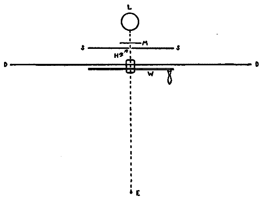
Fig. 1.
The eye was first fixated on the light-spot, and then moved horizontally away toward either the right or the left. In the first few trials (with eye-sweeps of medium length), the observations did not agree, for some subjects saw both the false and the correct streaks, while others saw only the latter. It was [16]found later that all the subjects saw both streaks if the arc of movement was large, say 40°, and all saw only the correctly localized streak if the arc was small, say 5°. Arcs of medium length revealed individual differences between the persons, and these differences, though modified, persisted throughout the experiments. After the subjects had become somewhat trained in observation, the falsely localized streak never appeared without the correctly localized one as well. For the sake of brevity the word 'streak' is retained, although the appearance now referred to is that of a series of separate spots of light arranged in a nearly straight line.
The phenomena are as follows.—(1) If the arc of movement is small, a short, correctly localized streak is seen extending from the final fixation-point to the light-spot. It is brightest at the end nearer the light. (2) If the eye-movement is 40° or more, a streak having a length of about one third the distance moved through is seen on the other side of the light from the final fixation-point; while another streak is seen of the length of the distance moved through, and extending from the final fixation-point to the light. The first is the falsely, the second the correctly localized streak. The second, which is paler than the first, feels as if it appeared a moment later than this. The brighter end of each streak is the end which adjoins the luminous spot. (3) Owing to this last fact, it sometimes happens, when the eye-movement is 40° or a trifle less, that both streaks are seen, but that the feeling of succession is absent, so that the two streaks look like one streak which lies (unequally parted) on both sides of the spot of light. It was observed, in agreement with Schwarz, that the phenomenon was the same whether the head or the eyes moved. Only one other point need be noted. It is that the false streak, which appears in the beginning to dart from the luminous hole, does not fade, but seems to suffer a sudden and total eclipse; whereas the second streak flashes out suddenly in situ, but at a lesser brilliancy than the other, and very slowly fades away.
These observations thoroughly confirmed those of Schwarz. And one could not avoid the conviction that Schwarz's suggestion of the two streaks being separate localizations of the same [17]retinal stimulation was an extremely shrewd conjecture. The facts speak strongly in its favor; first, that when the arc of movement is rather long, there is a distinct feeling of succession between the appearances of the falsely and the correctly localized images; second, that when both streaks are seen, the correct streak is always noticeably dimmer than the false streak.
It is of course perfectly conceivable that the feeling of succession is an illusion (which will itself then need to be explained), and that the streak is seen continuously, its spacial reference only undergoing an instantaneous substitution. If this is the case, it is singular that the correctly seen streak seems to enter consciousness so much reduced as to intensity below that of the false streak when it was eclipsed. Whereas, if a momentary anæsthesia could be demonstrated, both the feeling of succession and the discontinuity of the intensities would be explained (since during the anæsthesia the after-image on the retina would have faded). This last interpretation would be entirely in accordance with the observations of McDougall,17 who reports some cases in which after-images are intermittently present to consciousness, and fade during their eclipse, so that they reappear always noticeably dimmer than when they disappeared.
Now if the event of such an anæsthesia could be established, we should know at once that it is not a retinal but a central phenomenon. We should strongly suspect, moreover, that the anæsthesia is not present during the very first part of the movement. This must be so if the interpretation of Schwarz is correct, for certainly no part of the streak could be made before the eye had begun to move; and yet approximately the first third was seen at once in its original intensity, before indeed the 'innervation-feelings' had reached consciousness. Apparently the anæsthesia commences, it at all, after the eye has accomplished about the first third of its sweep. And finally, we shall expect to find that movements of the head no less than movements of the eyes condition the anæsthesia, since neither by Schwarz nor by the present writer was any difference observed in the phenomena of falsely localized after-images, [18]between the cases when the head, and those when the eyes moved.
We have seen (above, p. 8) how the evidence which Dodge adduces to disprove the hypothesis of anæsthesia is not conclusive, since, although an image imprinted on the retina during its movement was seen, yet nothing showed that it was seen before the eye had come to rest.
Having convinced himself that there is after all no anæsthesia, Dodge devised a very ingenious attachment for a perimeter 'to determine just what is seen during the eye-movement.'18 The eye was made to move through a known arc, and during its movement to pass by a very narrow slit. Behind this slit was an illuminated field which stimulated the retina. And since only during its movement was the pupil opposite the slit, so only during the movement could the stimulation be given. In the first experiments nothing at all of the illuminated field was seen, and Dodge admits (ibid., p. 461) that this fact 'is certainly suggestive of a central explanation for the absence of bands of fusion under ordinary conditions.' But "these failures suggested an increase of the illumination of the field of exposure.... Under these conditions a long band of light was immediately evident at each movement of the eye." This and similar observations were believed 'to show experimentally that when a complex field of vision is perceived during eye-movement it is seen fused' (p. 462).
Between the 'failures' and the cases when a band of light was seen, no change in the conditions had been introduced except 'an increase of the illumination.' Suppose now this change made just the difference between a stimulation which left no appreciable after-image, and one which left a distinct one. And is it even possible, in view of the extreme rapidity of eye-movements, that a retinal stimulation of any considerable intensity should not endure after the movement, to be then perceived, whether or not it had been first 'perceived during the movement'?[19]
Both of Dodge's experiments are open to the same objection. They do not admit of distinguishing between consciousness of a retinal process during the moment of stimulation, and consciousness of the same process just afterward. In both his cases the stimulation was given during the eye-movement, but there was nothing to prove that it was perceived at just the same moment. Whatever the difficulties of demonstrating an anæsthesia during movement, an experiment which does not observe the mentioned distinction can never disprove the hypothesis.
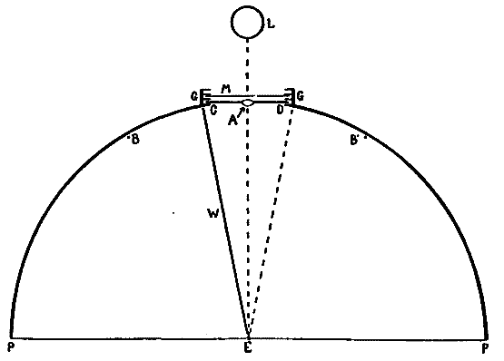
Fig. 2.
For the sake of a better understanding of these bands of light of Dodge, a perimeter was equipped in as nearly the manner described by him (ibid., p. 460) as possible. Experiments with the eye moving past a very narrow illuminated slit confirmed his observations. If the light behind the slit was feeble, no band was seen; if moderately bright, a band was always seen. The most striking fact, however, was that the band was not localized behind the slit, but was projected on to that point where the eye came to rest. The band seemed to [20]appear at this point and there to hover until it faded away. This apparent anomaly of localization, which Dodge does not mention, suggests the localization which Schwarz describes of his streaks. Hereupon the apparatus was further modified so that, whereas Dodge had let the stimulation take place only during the movement of the eye across a narrow slit between two walls, now either one of these walls could be taken away, allowing the stimulation to last for one half of the time of movement, and this could be either the first or the second half at pleasure. A plan of the perimeter so arranged is given in Fig. 2.
PBCDB'P is the horizontal section of a semicircular perimeter of 30 cm. radius. E is an eye-rest fixed at the centre of the semicircle; CD is a square hole which is closed by the screen S fitted into the front pair of the grooves GG. In the center of S and on a level with the eye E is a hole A, 2 cm. in diameter, which contains a 'jewel' of red glass. The other two pairs of grooves are made to hold pieces of milk-or ground-glass, as M, which may be needed to temper the illumination down to the proper intensity. L is an electric lamp. B and B' are two white beads fixed to the perimeter at the same level as E and A, and used as fixation-points. Although the room is darkened, these beads catch enough light to be just visible against the black perimeter, and the eye is able to move from one to the other, or from A to either one, with considerable accuracy. They leave a slight after-image streak, which is, however, incomparably fainter than that left by A (the streak to be studied), and which is furthermore white while that of A is bright red. B and B' are adjustable along a scale of degrees, which is not shown in the figure, so that the arc of eye-movement is variable at will. W is a thin, opaque, perpendicular wall extending from E to C, that is, standing on a radius of the perimeter. At E this wall comes to within about 4 mm. of the cornea, and when the eye is directed toward B the wall conceals the red spot A from the pupil. W can at will be transferred to the position ED. A is then hidden if the eye looks toward B'.
The four conditions of eye-movement to be studied are indicated in Fig. 3 (Plate I.). The location of the retinal stimulation is also shown for each case, as well as the corresponding appearance of the streaks, their approximate length, and above all their localization. For the sake of simplicity the refractive effect of the lens and humors of the eye is not shown, the path of the light-rays being in each case drawn straight. In all four cases the eye moved without stopping, through an arc of 40°.
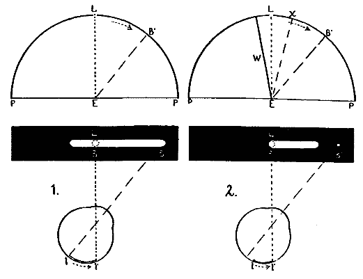
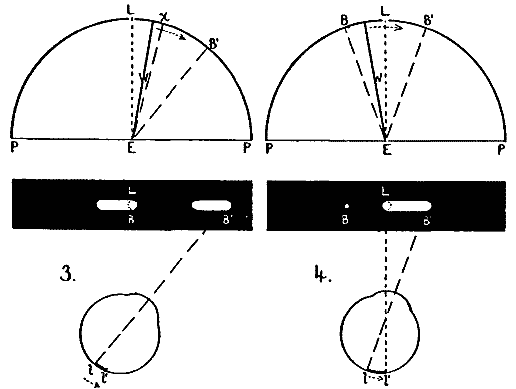
Fig 3.
HOLT ON EYE-MOVEMENT.
[21]To take the first case, Fig. 3:1. The eye fixates the light L, then sweeps 40° toward the right to the point B'. The retina is stimulated throughout the movement, l-l'. These conditions yield the phenomenon of both streaks, appearing as shown on the black rectangle.
In the second case (Fig. 3:2) the wall W is in position and the eye so adjusted in the eye-rest that the light L is not seen until the eye has moved about 10° to the right, that is, until the axis of vision is at Ex. Clearly, then, the image of L falls at first a little to the right of the fovea, and continues in indirect vision to the end of the movement. The stimulated part of the retina is l-l' (Fig. 3:2). Here, then, we have no stimulation of the eye during the first part of its movement. The corresponding appearance of the streak is also shown. Only the correctly localized streak is seen, extending from the light L toward the right but not quite reaching B'. Thus by cutting out that portion of the stimulation which was given during the first part of the movement, we have eliminated the whole of the false image, and the right-hand (foveal) part of the correct image.
Fig. 3:3 shows the reverse case, in which the stimulation is given only during the first part of the movement. The wall is fixed on the right of L, and the eye so adjusted that L remains in sight until the axis of vision reaches position Ex, that is, until it has moved about 10°. A short strip of the retina next the fovea is here stimulated, just the part which in case 2 was not stimulated; and the part which in case 2 was, is here not stimulated. Now here the false streak is seen, together with just that portion of the correct streak which in the previous case was not seen. The latter is relatively dim.
Thus it looks indeed as if the streak given during the first [22]part of an eye-movement is seen twice and differently localized. But one may say: The twice-seen portion was in both cases on the fovea; this may have been the conditioning circumstance, and not the fact of being given in the early part of the movement.
We must then consider Fig. 3, case 4. Here the eye moves from B to B', through the same arc of 40°. The wall W is placed so that L cannot be seen until the axis of vision has moved from EB to EL, but then L is seen in direct vision. Its image falls full on the fovea. But one streak, and that the correctly localized one, is seen. This is like case 2, except that here the streak extending from L to the right quite reaches the final fixation-point B'. It is therefore not the fact of a stimulation being foveal which conditions its being seen in two places.
It should be added that this experiment involves no particular difficulties of observation, except that in case 4 the eye tends to stop midway in its movement when the spot of light L comes in view. Otherwise no particular training of the subject is necessary beyond that needed for the observing of any after-image. Ten persons made the foregoing observations and were unanimous in their reports.
This experiment leaves it impossible to doubt that the conjecture of Schwarz, that the correct image is only the false one seen over again, is perfectly true. It would be interesting to enquire what it is that conditions the length of the false streak. It is never more than one third that of the correct streak (Fig. 3:1; except of course under the artificial conditions of Fig. 3:3) and may be less. The false streak seems originally to dart out from the light, as described by Lipps, visibly growing in length for a certain distance, and then to be suddenly eclipsed or blotted out simultaneously in all its parts. Whereas the fainter, correct streak flashes into consciousness all parts at once, but disappears by fading gradually from one end, the end which lies farther from the light.
Certain it is that when the false streak stops growing and is eclipsed, some new central process has intervened. One has next to ask, Is the image continuously conscious, suffering only an instantaneous relocalization, or is there a moment of central [23]anæsthesia between the disappearance of the false streak and the appearance of the other? The relative dimness of the second streak in the first moment of its appearance speaks for such a brief period of anæsthesia, during which the retinal process may have partly subsided.
We have now to seek some experimental test which shall demonstrate definitely either the presence or the absence of a central anæsthesia during eye-movements. The question of head-movements will be deferred, although, as we have seen above, these afford equally the phenomenon of twice-localized after-images.
A. Apparatus must be devised to fulfil the following conditions. A retinal stimulation must be given during an eye-movement. The moment of excitation must be so brief and its intensity so low that the process shall be finished before the eye comes to rest, that is, so that no after-image shall be left to come into consciousness after the movement is over. Yet, on the other hand, it must be positively demonstrated that a stimulation of this very same brief duration and low intensity is amply strong enough to force its way into consciousness if no eye-movement is taking place. If such a stimulation, distinctly perceived when the eye is at rest, should not be perceptible if given while the eye is moving, we should have a valid proof that some central process has intervened during the movement, to shut out the stimulation-image during that brief moment when it might otherwise have been perceived.
Obviously enough, with the perimeter arrangement devised by Dodge, where the eye moves past a narrow, illuminated slit, the light within the slit can be reduced to any degree of faintness. But on the other hand, it is clearly impossible to find out how long the moment of excitation lasts, and therefore impossible to find out whether an excitation of the same duration and intensity is yet sufficient to affect consciousness if given when the eye is not moving. Unless the stimulation is proved to be thus sufficient, a failure to see it when given during an eye-movement would of course prove nothing at all.[24]
Perhaps the most exact way to measure the duration of a light-stimulus is to let it be controlled by the passing of a shutter which is affixed to a pendulum. Furthermore, by means of a pendulum a stimulation of exactly the same duration and intensity can be given to the moving, as to the resting eye. Let us consider Fig. 4:1. If P is a pendulum bearing an opaque shield SS pierced by the hole tt, and BB an opaque background pierced by the hole i behind which is a lamp, it is clear that if the eye is fixed on i, a swing of the pendulum will allow i to stimulate the retina during such a time as it takes the opening tt to move past i. The shape of i will determine the shape of the image on the retina, and the intensity of the stimulation can be regulated by ground-or milk-glass interposed between the hole i and the lamp behind it. The duration of the exposure can be regulated by the width of tt, by the length of the pendulum, and by the arc through which it swings.
If now the conditions are altered, as in Fig. 4:2, so that the opening tt (indicated by the dotted line) lies not in SS, but in the fixed background BB, while the small hole i now moves with the shield SS, it necessarily follows that if the eye can move at just the rate of the pendulum, it will receive a stimulation of exactly the same size, shape, duration, and intensity as in the previous case where the eye was at rest. Furthermore, it will always be possible to tell whether the eye does move at the same rate as the pendulum, since if it moves either more rapidly or more slowly, the image of i on the retina will be horizontally elongated, and this fact will be given by a judgment as to the proportions of the image seen.
It may be said that since the eye does not rotate like the pendulum, from a fulcrum above, the image of i in the case of the moving eye will be distorted as is indicated in Fig. 4, a. This is true, but the distortion will be so minute as to be negligible if the pendulum is rather long (say a meter and a half) and the opening tt rather narrow (say not more than ten degrees wide). A merely horizontal movement of the eye will then give a practically exact superposition of the image of i at all moments of the exposure.
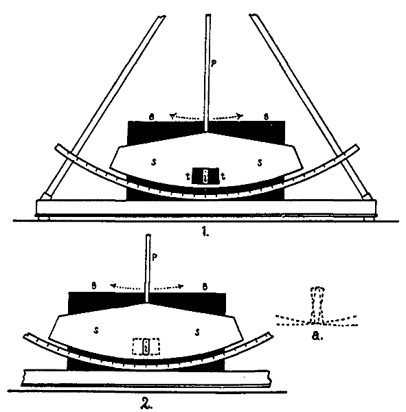
Fig. 4.
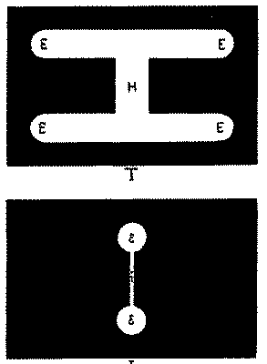
Fig. 6
HOLT ON EYE-MOVEMENT.
[25]Thus much of preliminary discussion to show how, by means of a pendulum, identical stimulations can be given to the moving and to the resting eye. We return to the problem. It is to find out whether a stimulation given during an eye-movement can be perceived if its after-image is so brief as wholly to elapse before the end of the movement. If a period of anæsthesia is to be demonstrated, two observations must be made. First, that the stimulation is bright enough to be unmistakably visible when given to the eye at rest; second, that it is not visible when given to the moving eye. Hence, we shall have three cases.
Case 1. A control, in which the stimulation is proved intense enough to be seen by the eye at rest.
Case 2. In which the same stimulation is given to the eye during movement.
Case 3. Another control, to make sure that no change in the adaptation or fatigue of the eye has intervened during the experiments to render the eye insensible to the stimulation.
Fig. 5 shows the exact arrangement of the experiment. The figure represents a horizontal section at the eye-level of the pendulum of Fig. 4, with accessories. E is the eye which moves between the two fixation-points P and P'. WONW is a wall which conceals the mechanism of the pendulum from the subject. ON is a rectangular hole 9 cm. wide and 7 cm. high, in this wall. SS is the shield which swings with the pendulum, and BB is the background (cf. Fig. 4). When the pendulum is not swinging, a hole in the shield lies behind ON and exactly corresponds with it. Another in the background does the same. The eye can thus see straight through to the light L.
Each of these three holes has grooves to take an opaque card, x, y, or z; there are two cards for the three grooves, and they are pierced with holes to correspond to i and tt of Fig. 4. The background BB has a second groove to take a piece of milk-glass M. These cards are shown in Fig. 6 (Plate II.) Card I bears a hole 5 cm. high and shaped like a dumb-bell. The diameter of the end-circles (e, e) is 1.3 cm., and the width of the handle h is 0.2 cm. Card T is pierced by two slits[26] EE, EE, each 9 cm. long and 1.3 cm. high, which correspond to the two ends of the dumb-bell. These slits are connected by a perforation H, 1.5 cm. wide, which corresponds to the handle of the dumb-bell. This opening EEHEE is covered by a piece of ground-glass which serves as a radiating surface for the light.
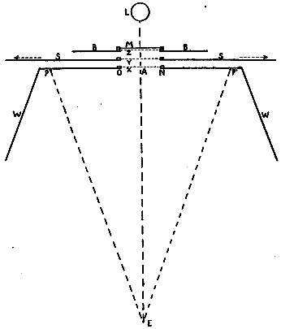
Fig. 5.
The distance EA (Fig. 5) is 56 cm., and PP' is 40 cm.; so that the arc of eye-movement, that is, the angle PEP', is [27]very nearly 40°, of which the 9-cm. opening ON 9° 11'. SS is 2 cm. behind ON, and BB 2 cm. behind SS; these distances being left to allow the pendulum to swing freely.
It is found under these conditions that the natural speed made by the eye in passing the 9-cm. opening ON is very well approximated by the pendulum if the latter is allowed to fall through 23.5° of its arc, the complete swing being therefore 47°. The middle point of the pendulum is then found to move from O to N in 110σ19. If the eye sweeps from O to N in the same time, it will be moving at an angular velocity of 1° in 11.98σ (since the 9 cm. are 9° 11' of eye-movement). This rate is much less than that found by Dodge and Cline (op. cit., p. 155), who give the time for an eye-movement of 40° as 99.9σ, which is an average of only 2.49σ to the degree. Voluntary eye-movements, like other voluntary movements, can of course be slow or fast according to conditions. After the pendulum has been swinging for some time, so that its amplitude of movement has fallen below the initial 47° and therewith its speed past the middle point has been diminished, the eye in its movements back and forth between the fixation-points can still catch the after-image of i perfectly distinct and not at all horizontally elongated, as it would have to be if eye and pendulum had not moved just together. It appears from this that certain motives are able to retard the rate of voluntary movements of the eye, even when the distance traversed is constant.
The experiment is now as follows. The room is darkened. Card T is dropped into groove z, while I is put in groove y and swings with the pendulum. One eye alone is used.
Case 1. The eye is fixed in the direction EA. The pendulum is allowed to swing through its 47°. The resulting visual image is shown in Fig. 7:1. Its shape is of course like T, Fig. 6, but the part H is less bright than the rest because it is exposed a shorter time, owing to the narrowness of the handle of the dumb-bell, which swings by and mediates the exposure. Sheets of milk-glass are now dropped into the back groove of[28] BB, until the light is so tempered that part H (Fig. 7:1) is barely but unmistakably visible as luminous. The intensity actually used by the writer, relative to that of EE, is fairly shown in the figure. (See Plate III.)
It is clear, if the eye were now to move with the pendulum, that the same amount of light would reach the retina, but that it would be concentrated on a horizontally narrower area. And if the eye moves exactly with the pendulum, the visual image will be no longer like 1 but like 2 (Fig. 7). We do not as yet know how the intensities of e, e and h will relatively appear. To ascertain this we must put card I into groove x, and let card T swing with the pendulum in groove y. If the eye is again fixed in the direction EA (Fig. 5), the retina receives exactly the same stimulation that it would have received before the cards were shifted if it had moved exactly at the rate of the pendulum. In the experiments described, the handle h of this image (Fig. 7:2) curiously enough appears of the same brightness as the two ends e, e, although, as we know, it is stimulated for a briefer interval. Nor can any difference between e, e and h be detected in the time of disappearance of their after-images. These conditions are therefore generous. The danger is that h of the figure, the only part of the stimulation which could possibly quite elapse during the movement, is still too bright to do so.
Case 2. The cards are replaced in their first positions, T in groove z, I in groove y which swings. The subject is now asked to make voluntary eye-sweeps from P to P' and back, timing his moment of starting so as to bring his axis of vision on to the near side of opening ON at approximately the same time as the pendulum brings I on the same point. This is a delicate matter and requires practice. Even then it would be impossible, if the subject were not allowed to get the rhythm of the pendulum before passing judgment on the after-images. The pendulum used gives a slight click at each end of its swing, and from the rhythm of this the subject is soon able to time the innervation of his eye so that the exposure coincides with the middle of the eye-movement.
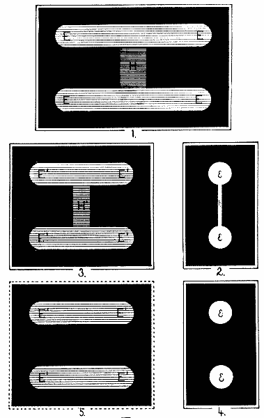
Fig. 7.
HOLT ON EYE-MOVEMENT.
[29]It is true that with every swing the pendulum moves more slowly past ON, and the period of exposure is lengthened. This, however, only tends to make the retinal image brighter, so that its disappearance during an anæsthesia would be so much the less likely. The pendulum may therefore be allowed to 'run down' until its swing is too slow for the eye to move with it, that is, too slow for a distinct, non-elongated image of i to be caught in transit on the retina.
With these eye-movements, the possible appearances are of two classes, according to the localization of the after-image. The image is localized either at A (Fig. 5), or at the final fixation-point (P or P', according to the direction of the movement). Localized at A, the image may be seen in either of two shapes. First, it may be identical with 1, Fig. 7. It is seen somewhat peripherally, judgment of indirect vision, and is correctly localized at A. When the subject's eye is watched, it is found that in this case it moved either too soon or too late, so that when the exposure was made, the eye was resting quietly on one of the fixation-points and so naturally received the same image as in case 1, except that now it lies in indirect vision, the eye being directed not toward A (as in case 1) but towards either P or P'.
Second, the image correctly localized may be like 2 (Fig. 7), and then it is seen to move past the opening ON. The handle h looks as bright as e, e. This appearance once obtained generally recurs with each successive swing of the pendulum, and scrutiny of the subject's eye shows it to be moving, not by separate voluntary innervations from P to P' and then from P' to P, but continuously back and forth with the swing of the pendulum, much as the eye of a child passively follows a moving candle. This movement is purely reflex,20 governed probably by cerebellar centers. It seems to consist in a rapid succession of small reflex innervations, and is very different from the type of movement in which one definite innervation carries the eye through its 42°, and which yielded the phenomena with the perimeter. A subject under the spell of this reflex must be exercised in innervating his eye to move from P to P'[30] and back in single, rapid leaps. For this, the pendulum is to be motionless and the eye is not to be stimulated during its movement.
These two cases in which the image is localized midway between P and P' interest us no further. Localized on the final fixation-point, the image is always felt to flash out suddenly in situ, just as in the case of the 'correctly localized' after-image streaks in the experiments with the perimeter. The image appears in one of four shapes, Fig. 7: 2 or 3, 4 or 5.
First, the plain or elongated outline of the dumb-bell appears with its handle on the final fixation-point (2 or 3). The image is plain and undistorted if the eye moves at just the rate of the pendulum, elongated if the eye moves more rapidly or more slowly. The point that concerns us is that the image appears with its handle. Two precautions must here be observed.
The eye does not perhaps move through its whole 42°, but stops instead just when the exposure is complete, that is, stops on either O or N and considerably short of P or P'. It then follows that the exposure is given at the very last part of the movement, so that the after-image of even the handle h has not had time to subside. The experiment is planned so that the after-image of h shall totally elapse during that part of the movement which occurs after the exposure, that is, while the eye is completing its sweep of 42°, from O to P, or else from N to P'. If the arc is curtailed at point O or N, the handle of the dumb-bell will of course appear. The fact can always be ascertained by asking the subject to notice very carefully where the image is localized. If the eye does in fact stop short at O or N, the image will be there localized, although the subject may have thoughtlessly said before that it was at P or P', the points he had nominally had in mind.
But the image 2 or 3 may indeed be localized quite over the final fixation-point. In this case the light is to be looked to. It is too bright, as it probably was in the case of Dodge's experiments. It must be further reduced; and with the eye at rest, the control (case I) must be repeated. In the experiments here described it was always found possible so to reduce the [31]light that the distinct, entire image of the dumb-bell (2, Fig. 7) never appeared localized on the final fixation-point, although in the control, H, of Fig. 7:1, was always distinctly visible.
With these two precautions taken, the image on the final fixation-point is like either 3, 4, or 5. Shape 5 very rarely appears, while the trained subject sees 4 and 3 each about one half the times; and either may be seen for as many as fifteen times in succession.
Shape 4 is of course exactly the appearance which this experiment takes to be crucial evidence of a moment of central anæsthesia, before the image is perceived and during which the stimulation of the handle h completely elapses. Eight subjects saw this phenomenon distinctly and, after some training in timing their eye-movements, habitually. The first appearance of the handleless image was always a decided surprise to the subject (as also to the writer), and with some eagerness each hastened to verify the phenomenon by new trials.
The two ends (e, e) of the dumb-bell seem to be of the same intensity as in shape 2 when seen in reflex movement. But there is no vestige whatsoever of a handle. Two of the subjects stated that for them the place where the handle should have been, appeared of a velvety blackness more intense than the rest of the background. The writer was not able to make this observation. It coincides interestingly with that of von Kries,21 who reports as to the phases of fading after-images, that between the disappearance of the primary image and the appearance of the 'ghost,' a moment of the most intense blackness intervenes. The experiments with the pendulum, however, brought out no ghost.
We must now enquire why in about half the cases shape 3 is still seen, whereas shape 5 occurs very rarely. Some of the subjects, among whom is the writer, never saw 5 at all. We should expect that with the intensity of H sufficiently reduced 4 and 5 would appear with equal frequency, whereas 3 would be seen no oftener than 2; shape 5 appearing when the eye did not, and 4 when it did, move at just the rate of the pendulum.[32] It is certain that when 4 is seen, the eye has caught just the rate of the pendulum, and that for 3 or 5 it has moved at some other rate. We have seen above (p. 27) that to move with the pendulum the eye must already move decidedly more slowly than Dodge and Cline find the eye generally to move. Nothing so reliable in regard to the rate of voluntary eye-movements as these measurements of Dodge and Cline had been published at the time when the experiments on anæsthesia were carried on, and it is perhaps regrettable that in the 'empirical' approximation of the natural rate of the eye through 40° the pendulum was set to move so slowly.
In any case it is highly probable that whenever the eye did not move at just the rate of the pendulum, it moved more rapidly rather than more slowly. The image is thus horizontally elongated, by an amount which varies from the least possible up to 9 cm. (the width of the opening in T), or even more. And while the last of the movement (O to P, or N to P'), in which the stimulation of H' is supposed to subside, is indeed executed, it may yet be done so rapidly that after all H' cannot subside, not even although it is now less intense by being horizontally spread out (that is, less concentrated than the vanished h of shape 4). This explanation is rendered more probable by the very rare appearance of shape 5, which must certainly emerge if ever the eye were to move more slowly than the pendulum.
The critical fact is, however, that shape 4 does appear to a trained subject in about one half the trials—a very satisfactory ratio when one considers the difficulty of timing the beginning of the movement and its rate exactly to the pendulum.
Lastly, in some cases no image appears at all. This was at first a source of perplexity, until it was discovered that the image of the dumb-bell, made specially small so as to be contained within the area of distinct vision, could also be contained on the blind-spot. With the pendulum at rest the eye could be so fixed as to see not even the slight halo which diffuses in the eye and seems to lie about the dumb-bell. It may well occur, then, that in a movement the image happens to fall on the blind-spot and not on the fovea. That this accounts for the cases where no [33]image appears, is proved by the fact that if both eyes are used, some image is always seen. A binocular image under normal convergence can of course not fall on both blind-spots. It may be further said that the shape 4 appears as well when both eyes are used as with only one. The experiment may indeed as well be carried on with both eyes.
Some objections must be answered. It may be said that the image of h happens to fall on the blind-spot, e and e being above and below the same. This is impossible, since the entire image and its halo as well may lie within the blind-spot. If now h is to be on the blind-spot, at least one of the end-circles e, e will be there also, whereas shape 4 shows both end-circles of the dumb-bell with perfect distinctness.
Again, it cannot properly be urged that during the movement the attention was distracted so as not to 'notice' the handle. The shape of a dumb-bell was specially chosen for the image so that the weaker part of the stimulation should lie between two points which should be clearly noticed. Indeed, if anything, one might expect this central, connecting link in the image to be apperceptively filled in, even when it did not come to consciousness as immediate sensation. And it remains to ask what it is which should distract the attention.
In this connection the appearance under reflex eye-movement compares interestingly with that under voluntary. If the wall WONW (Fig. 5) is taken from before the pendulum, and the eye allowed to move reflexly with the swinging dumb-bell, the entire image is seen at each exposure, the handle seeming no less bright than the end-circles. Moreover, as the dumb-bell opening swings past the place of exposure and the image fades, although the handle must fade more quickly than the ends, yet this is not discernible, and the entire image disappears without having at any time presented the handleless appearance.
B. Another test for this anæsthesia during movement is offered in the following experiment. It is clear that, just as a light-stimulation is not perceived if the whole retinal process begins and ends during a movement, so also a particular phase of it should not be perceived if that phase can be given complete within the time of the movement. The same pendulum which [34]was used in the previous experiment makes such a thing possible. If in place of the perforated dumb-bell the pendulum exposes two pieces of glass of nearly complementary colors, one after the other coming opposite the place of exposure, the sensations will fuse or will not fuse according as the pendulum swings rapidly or slowly. But now a mean rate of succession can be found such as to let the first color be seen pure before the second is exposed, and then to show the second fused with the after-image of the first. Under some conditions the second will persist after the first has faded, and will then itself be seen pure. Thus there may be three phases in consciousness. If the first color exposed is green and the second red, the phases of sensation will be green, white, and perhaps red. These phases are felt to be not simultaneous but successive. A modification of this method is used in the following experiment. (See Fig. 8, Plate IV.)
T and I here correspond to the cards T and I of Fig. 6. T consists of a rectangular opening, 9×5 cm., which contains three pieces of glass, two pieces of green at the ends, each 2.8 cm. wide and 7 cm. high, and a piece of red glass in the middle 3.4 cm. wide and only 1.5 cm. high, the space above and below this width being filled with opaque material. The shape of the image is determined as before by the hole in I, which now, instead of being a dumb-bell, is merely a rectangular hole 2 cm. wide and 5 cm. high. Exactly as before, T is fixed in the background and I swings with the pendulum, the eye moving with it.
The speed of the pendulum must be determined, such that if I lies in the front groove (Fig. 5, x) and the eye is at rest, the image will clearly show two phases of color when T swings past on the pendulum. With T and I as described above, a very slow pendulum shows the image green, red (narrow), and green, in succession. A very fast pendulum shows only a horizontal straw-yellow band on a green field (Fig. 8:5). There is but one phase and no feeling of succession. Between these two rates is one which shows two phases—the first a green field with a horizontal, reddish-orange band (Fig. 8:3), the second quickly following, in which the band is straw-yellow (5). It might be expected that this first phase would be preceded by an entirely green phase, since green is at first exposed. Such is however not the case. The straw-yellow of the last phase is of course the fusion-color of the red and green glasses. It would be gray but that the two colors are not perfectly complementary. Since the arrangement of colors in T is bilaterally symmetrical, the successive phases are the same in whichever direction the pendulum swings.
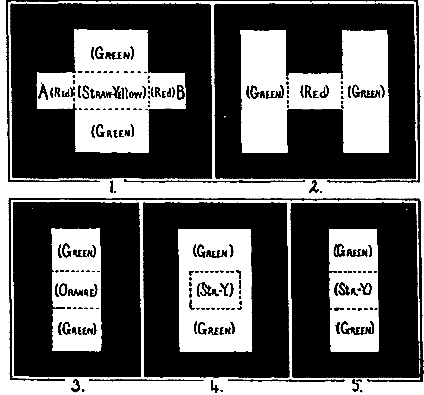
Fig. 8.
HOLT ON EYE-MOVEMENT.
[35]It is desirable to employ the maximum rate of pendulum which will give the two phases. For this the illumination should be very moderate, since the brighter it is, the slower must be the pendulum. With the degree of illumination used in the experiments described, it was found that the pendulum must fall from a height of only 9.5° of its arc: a total swing of 19°. The opening of T, which is 9 cm. wide, then swings past the middle point of I in 275σ.
Now when the eye moves it must move at this rate. If the eye is 56 cm. distant from the opening, as in the previous case, the 9 cm. of exposure are 9° 11' of eye-movement, and we saw above that 9° 11' in 110σ is a very slow rate of movement, according to the best measurements. Now it is impossible for the eye to move so slowly as 9° 11' in 275σ. If, however, the eye is brought nearer to the opening, it is clear that the 9 cm. of exposure become more than 9° 11' of eye-movement. Therefore the eye and the fixation-points are so placed that EA (Fig. 5) = 26 cm. and PP' = 18 cm. The total eye-movement is thus 38° 11', of which the nine-centimeter distance of exposure is 19° 38'. Now the eye is found to move very well through 19° 38' in 275σ, although, again, this is much more than a proportionate part of the total time (99.9σ) given by Dodge and Cline for a movement of the eye through 40°. The eye is in this case also moving slowly. As before, it is permissible to let the pendulum run down till it swings too slowly for the eye to move with it; since any lessened speed of the pendulum only makes the reddish-orange phase more prominent.
As in the experiment with the dumb-bell, we have also here three cases: the control, the case of the eye moving, and again a control.[36]
Case 1. T swings with the pendulum. I is placed in the front groove, and the eye looks straight forward without moving. The pendulum falls from 9.5° at one side, and the illumination is so adjusted that the phase in which the band is reddish-orange, is unmistakably perceived before that in which it is straw-yellow. The appearance must be 3 followed by 5 (Fig. 8).
Case 2. T is fixed in the background, I on the pendulum, and the phenomena are observed with the eye moving.
Case 3. A repetition of case 1, to make sure that no different adaptation or fatigue condition of the eye has come in to modify the appearance of the two successive phases as at first seen.
The possible appearances to the moving eye are closely analogous to those in the dumb-bell experiment. If the eye moves too soon or too late, so that it is at rest during the exposure, the image is like T itself (Fig. 8) but somewhat fainter and localized midway between the points P and P'. If the eye moves reflexly at the rate of the pendulum, the image is of the shape i and shows the two phases (3 followed by 5). It is localized in the middle and appears to move across the nine-centimeter opening.
A difficulty is met here which was not found in the case of the dumb-bell. The eye is very liable to come to a full stop on one of the colored surfaces, and then to move quickly on again to the final fixation-point. And this happens contrary to the intention of the subject, and indeed usually without his knowledge. This stopping is undoubtedly a reflex process, in which the cerebellar mechanism which tends to hold the fixation on any bright object, asserts itself over the voluntary movement and arrests the eye on the not moving red or green surface as the exposure takes place. A comparable phenomenon was found sometimes in the experiment with the dumb-bell, where an eye-movement commenced as voluntary would end as a reflex following of the pendulum. In the present experiment, until the subject is well trained, the stopping of the eye must be [37]watched by a second person who looks directly at the eye-ball of the subject during each movement. The appearances are very varied when the eye stops, but the typical one is shown in Fig. 8:1. The red strip AB is seldom longer and often shorter than in the figure. That part of it which is superposed on the green seldom shows the orange phase, being almost always of a pure straw-yellow. The localization of these images is variable. All observations made during movements in which the eye stops, are of course to be excluded.
If now the eye does not stop midway, and the image is not localized in the center, the appearance is like either 2, 4, or 5, and is localized over the final fixation-point. 2 is in all probability the case of the eye moving very much faster than the pendulum, so that if the movement is from left to right, the right-hand side of the image is the part first exposed (by the uncovering of the left-hand side of T), which is carried ahead by the too swift eye-movement and projected in perception on the right of the later portion. 3 is the case of the eye moving at very nearly but not quite the rate of the pendulum. The image which should appear 2 cm. wide (like the opening i) appears about 3 cm. wide. The middle band is regularly straw-yellow, extremely seldom reddish, and if we could be sure that the eye moves more slowly than the pendulum, so that the succession of the stimuli is even slower than in the control, and the red phase is surely given, this appearance (3) would be good evidence of anæsthesia during which the reddish-orange phase elapses. It is more likely, however, that the eye is moving faster than the pendulum, but whether or not so inconsiderably faster as still to let the disappearance of the reddish phase be significant of anæsthesia, is not certain until one shall have made some possible but tedious measurements of the apparent width of the after-image. Both here and in the following case the feeling of succession, noticeable between the two phases when the eye is at rest, has disappeared with the sensation of redness.
The cases in which 5 is seen are, however, indisputably significant. The image is apparently of just the height and width of i, and there is not the slightest trace of the reddish-orange phase. The image flashes out over the final fixation-point, [38]green and straw-yellow, just as the end-circles of the dumb-bell appeared without their handle. The rate of succession of the stimuli, green—red—green, on the retina, is identical with that rate which showed the two phases to the resting eye: for the pendulum is here moving at the very same rate, and the eye is moving exactly with the pendulum, as is shown by the absence of any horizontal elongation of the image seen. The trained subject seldom sees any other images than 4 and 5, and these with about equal frequency, although either is often seen in ten or fifteen consecutive trials. As in the cases of the falsely localized images and of the handleless dumb-bell, movements of both eyes, as well as of the head but not the eyes, yield the same phenomena. It is interesting again to compare the appearance under reflex movement. If at any time during the experiments the eye is allowed to follow the pendulum reflexly, the image is at once and invariably seen to pass through its two phases as it swings past the nine-centimeter opening.
The frequent and unmistakable appearance of this band of straw-yellow on a non-elongated green field without the previous phase in which the band is reddish-orange, although this latter was unmistakable when the same stimulation was given to the eye at rest, is authenticated by eight subjects. This appearance, together with that of the handleless dumb-bell, is submitted as a demonstration that during voluntary movements of the eyes, and probably of the head as well, there is a moment in which stimulations are not transmitted from the retina to the cerebral cortex, that is, a moment of central anæsthesia. The reason for saying 'and probably of the head as well,' is that although the phenomena described are gotten equally well from movements of the head, yet it is not perfectly certain that when the head moves the eyes do not also move slightly within the head, even when the attempt is made to keep them fixed.
Most of the criticisms which apply to this last experiment apply to that with the dumb-bell and have already been answered. There is one however which, while applying to that other, more particularly applies here. It would be, that [39]these after-images are too brief and indistinct to be carefully observed, so that judgments as to their shape, size, and color are not valid evidence. This is a perfectly sensible criticism, and a person thoroughly convinced of its force should repeat the experiments and decide for himself what reliance he will place on the judgments he is able to make. The writer and those of the subjects who are most trained in optical experiments find the judgments so simple and easily made as not to be open to doubt.
In the first place, it should be remembered that only those cases are counted in which the movement was so timed that the image was seen in direct vision, that is, was given on or very near the fovea. In such cases a nice discrimination of the shape and color of the images is easily possible.
Secondly, the judgments are in no case quantitative, that is, they in no case depend on an estimate of the absolute size of any part of the image. At most the proportions are estimated. In the case of the dumb-bell the question is, Has the figure a handle? The other question, Are the end-circles horizontally elongated? has not to be answered with mathematical accuracy. It is enough if the end-circles are approximately round, or indeed are narrower than 9 cm. horizontally, for at even that low degree of concentration the handle was still visible to the resting eye. Again, in the experiment with the color-phases, only two questions are essential to identify the appearance 5: Does the horizontal yellow band extend quite to both edges of the image? and, Is there certainly no trace of red or orange to be seen? The first question does not require a quantitative judgment, but merely one as to whether there is any green visible to the right or left of the yellow strip. Both are therefore strictly questions of quality. And the two are sufficient to identify appearance 5, for if no red or orange is visible, images 1, 2, and 3 are excluded; and if no green lies to the right or left of the yellow band, image 4 is excluded. Thus if one is to make the somewhat superficial distinction between qualitative and quantitative judgments, the judgments here required are qualitative. Moreover, the subjects make these judgments unhesitatingly.[40]
Finally, the method of making judgments on after-images is not new in psychology. Lamansky's well-known determination of the rate of eye-movements22 depends on the possibility of counting accurately the number of dots in a row of after-images. A very much bolder assumption is made by Guillery23 in another measurement of the rate of eye-movements. A trapezoidal image was generated on the moving retina, and the after-image of this was projected on to a plane bearing a scale of lines inclining at various angles. On this the degree of inclination of one side of the after-image was read off, and thence the speed of the eye-movement was calculated. In spite of the boldness of this method, a careful reading of Guillery's first article cited above will leave no doubt as to its reliability, and the accuracy of discrimination possible on these after-images.
As to judgments on the color and color-phases of after-images, there is ample precedent in the researches of von Helmholtz, Hering, Hess, von Kries, Hamaker, and Munk. It is therefore justifiable to assume the possibility of making accurately the four simple judgments of shape and color described above, which are essential to the two proofs of anæsthesia.
We have now to sum up the facts given by the experiments. The fact of central anæsthesia during voluntary movement is supported by two experimental proofs, aside from a number of random observations which seem to require this anæsthesia for their explanation. The first proof is that if an image of the shape of a dumb-bell is given to the retina during an eye-movement, and in such a way that the handle of the image, while positively above the threshold of perception, is yet of brief enough duration to fade completely before the end of the movement, it then happens that both ends of the dumb-bell are seen but the handle not at all. The fact of its having been properly [41]given to the retina is made certain by the presence of the now disconnected ends.
The second proof is that, similarly, if during an eye-movement two stimulations of different colors are given to the retina, superposed and at such intensity and rate of succession as would show to the resting eye two successive phases of color (in the case taken, reddish-orange and straw-yellow), it then happens that the first phase, which runs its course and is supplanted by the second before the movement is over, is not perceived at all. The first phase was certainly given, because the conditions of the experiment require the orange to be given if the straw-yellow is, since the straw-yellow which is seen can be produced only by the addition of green to the orange which is not seen.
These two phenomena seem inevitably to demonstrate a moment during which a process on the retina, of sufficient duration and intensity ordinarily to determine a corresponding conscious state, is nevertheless prevented from doing so. One inclines to imagine a retraction of dendrites, which breaks the connection between the central end of the optic nerve and the occipital centers of vision.
The fact of anæsthesia demonstrated, other phenomena are now available with further information. From the phenomena of the 'falsely localized' images it follows that at least in voluntary eye-movements of considerable arc (30° or more), the anæsthesia commences appreciably later than the movement. The falsely localized streak is not generated before the eye moves, but is yet seen before the correctly localized streak, as is shown by the relative intensities of the two. The anæsthesia must intervene between the two appearances. The conjecture of Schwarz, that the fainter streak is but a second appearance of the stronger, is undoubtedly right.
We know too that the anæsthesia depends on a mechanism central of the retina, for stimulations are received during movement but not transmitted to consciousness till afterward. This would be further shown if it should be found that movements of the head, no less than those of the eyes, condition the anæsthesia. As before said, it is not certain that the eyes do not move slightly in the head while the head moves. The movement of [42]the eyes must then be very slight, and the anæsthesia correspondingly either brief or discontinuous. Whereas, the phenomena are the same when the head moves 90° as when the eyes move that amount. It seems probable, then, that voluntary movements of the head do equally condition the anæsthesia.
We have seen, too, that in reflex eye-or head-movements no anæsthesia is so far to be demonstrated. The closeness with which the eye follows the unexpected gyrations of a slowly waving rush-light, proves that the reflex movement is produced by a succession of brief impulses (probably from the cerebellum), each one of which carries the eye through only a very short distance. It is an interesting question, whether there is an instant of anæsthesia for each one of these involuntary innervations—an instant too brief to be revealed by the experimental conditions employed above. The seeming continuity of the sensation during reflex movement would of course not argue against such successive instants of anæsthesia, since no discontinuity of vision during voluntary movement is noticeable, although a relatively long moment of anæsthesia actually intervenes.
But decidedly the most interesting detail about the anæsthesia is that shown by the extreme liability of the eye to stop reflexly on the red or the green light, in the second experiment with the pendulum. Suppose the eye to be moving from P to P' (Fig. 5); the anæsthesia, although beginning later than the movement, is present when the eye reaches O, while it is between O and N, that is, during the anæsthetic moment, that the eye is reflexly caught and held by the light. This proves again that the anæsthesia is not retinal, but it proves very much more; namely, that the retinal stimulation is transmitted to those lower centers which mediate reflex movements, at the very instant during which it is cut off from the higher, conscious centers. The great frequency with which the eye would stop midway in its movements, both in the second pendulum-experiment and in the repetition of Dodge's perimeter-test, was very annoying at the time, and the observation cannot be questioned. The fact of the habitual reflex regulation of voluntary movements is [43]otherwise undisputed. Exner24 mentions a variety of similar instances. Also, with the moving dumb-bell, as has been mentioned, the eye having begun a voluntary sweep would often be caught by the moving image and carried on thereafter reflexly with the pendulum. These observations hang together, and prove a connection between the retina and the reflex centers even while that between the retina and the conscious centers is cut off.
But shall we suppose that the 'connection' between the retina and the conscious centers is cut off during the central anæsthesia? All that the facts prove is that the centers are at that time not conscious. It would be at present an unwarrantable assumption to make, that these centers are therefore disconnected from the retina, at the optic thalami, the superior quadrigeminal bodies, or wheresoever. On broad psychological grounds the action-theory of Münsterberg25 has proposed the hypothesis that cerebral centers fail to mediate consciousness not merely when no stimulations are transmitted to them, but rather when the stimulations transmitted are not able to pass through and out. The stimulation arouses consciousness when it finds a ready discharge. And indeed, in this particular case, while we have no other grounds for supposing stimulations to the visual centers to be cut off, we do have other grounds for supposing that egress from these cells would be impeded.
The occipital centers which mediate sensations of color are of course most closely associated with those other centers (probably the parietal) which receive sensations from the eye-muscles and which, therefore, mediate sensations which furnish space and position to the sensations of mere color. Now it is these occipital centers, mediators of light-sensations merely, which the experiments have shown most specially to be anæsthetic. The discharge of such centers means particularly the passage of excitations on to the parietal localization-centers. There are doubtless other outlets, but these are the chief group. The [44]movements, for instance, which activity of these cells produces, are first of all eye-movements, which have to be directly produced (according to our present psychophysical conceptions) by discharges from the centers of eye-muscle sensation. The principal direction of discharge, then, from the color-centers is toward the localization-centers.
Now the experiment with falsely and correctly localized after-images proves that before the anæsthesia all localization is with reference to the point of departure, while afterwards it is with reference to the final fixation-point. The transition is abrupt. During the anæsthesia, then, the mechanism of localization is suffering a readjustment. It is proved that during this interval of readjustment in the centers of eye-muscle sensation the way is closed to oncoming discharges from the color-centers; but it is certain that any such discharge, during this complicated process of readjustment, would take the localization-centres by surprise, as it were, and might conceivably result in untoward eye-movements highly prejudicial to the safety of the individual as a whole. The much more probable event is the following:
Although Schwarz suggests that the moment between seeing the false and seeing the correct after-image is the moment that consciousness is taken up with 'innervation-feelings' of the eye-movement, this is impossible, since the innervation-feelings (using the word in the only permissible sense of remembered muscle-sensations) must precede the movement, whereas even the first-seen, falsely localized streak is not generated till the movement commences. But we do have to suppose that during the visual anæsthesia, muscle-sensations of present movement are streaming to consciousness, to form the basis of the new post-motum localization. And these would have to go to those very centers mentioned above, the localization-centers or eye-muscle sensation centers. One may well suppose that these incoming currents so raise the tension of these centers that for the moment no discharge can take place thither from other parts of the brain, among which are the centers for color-sensations. The word 'tension' is of course a figure, but it expresses the familiar idea that centers which are in process of receiving [45]peripheral stimulations, radiate that energy to other parts of the brain (according to the neural dispositions), and probably do not for the time being receive communications therefrom, since those other parts are now less strongly excited. It is, therefore, most probable that during the incoming of the eye-muscle sensations the centers for color are in fact not able to discharge through their usual channels toward the localization-centers, since the tension in that direction is too high. If, now, their other channels of discharge are too few or too little used to come into question, the action-theory would find in this a simple explanation of the visual anæsthesia.
The fact that the anæsthesia commences appreciably later than the movement so far favors this interpretation. For if the anæsthesia is conditioned by high tension in the localization-centers, due to incoming sensations from the eye-muscles, it could not possibly commence synchronously with the movement. For, first the sensory end-organs in the eye-muscles (or perhaps in the ligaments, surfaces of the eye-sockets, etc.) have their latent period; then the stimulation has to travel to the brain; and lastly it probably has to initiate there a summation-process equivalent to another latent period. These three processes would account very readily for what we may call the latent period of the anæsthesia, as observed in the experiments. It is true that this latent period was observed only in long eye-and head-movements, but the experiments were not delicate enough in this particular to bring out the finer points.
Finally, the conditioning of anæsthesia by movements of the head, if really proved, would rather corroborate this interpretation. For of course the position of the head on the shoulders is as important for localization of the retinal picture as the position of the eyes in the head, so that sensations of head-movements must be equally represented in the localization centers; and head movements would equally raise the tension on those centers against discharge-currents from the color-centers.
The conclusion from the foregoing experiments is that voluntary movements of the eyes condition a momentary, visual, central anæsthesia.
FOOTNOTES.
1 Cattell, J. McK., PSYCHOLOGICAL REVIEW, 1900, VII., p. 325.
2 Exner, Sigmund, Zeitschrift f. Psychologie u. Physiologie der Sinnesorgane, 1890, I., S. 46.
3 McDougall, W., Mind, N.S., X., 1901, p. 52.
4 Fick, Eug., and Gürber, A., Berichte d. ophthalmologischen Gesellschaft in Heidelberg, 1889.
5 Dodge, Raymond, PSYCHOLOGICAL REVIEW, 1900, VII., p. 456.
6 Graefe, A., Archiv f. Ophthalmologie, 1895, XLI., 3, S. 136.
7 Ostwald, F., Revue Scientifique, 1896, 4e Série, V., p. 466.
8 Mach, Ernst, 'Beiträge zur Analyze der Empfindungen,' Jena, 1886.
9 Mach, op. citat., 2te Aufl., Jena, 1900, S. 96.
10 Lipps, Th., Zeitschrift f. Psychologie u. Physiologie der Sinnesorgane, 1890, I., S. 60-74.
11 Cornelius, C.S., Zeitschrift f. Psychologie u. Physiologie der Sinnesorgane, 1891, II., S. 164-179.
12 Lamansky, S., Pflüger's Archiv f. d. gesammte Physiologie, 1869, II., S. 418.
13 Guillery, ibid., 1898, LXXI., S. 607; and 1898, LXXIII., S. 87.
14 Huey, Edmund B., American Journal of Psychology, 1900, XI., p. 283.
15 Dodge, Raymond, and Cline, T.S., PSYCHOLOGICAL REVIEW, 1901, VIII., PP. 145-157.
16 Schwarz, Otto, Zeitschrift J. Psychologie u. Physiologie der Sinnesorgane, 1892, III., S. 398-404.
17 McDougall, Mind N.S., X., 1901, p. 55, Observation II.
18 Dodge, PSYCHOLOGICAL REVIEW, 1900, VII., p. 459.
19 The speed of the pendulum is measured by attaching a tuning-fork of known vibration-rate to the pendulum, and letting it write on smoked paper as the pendulum swings past the 9-cm. opening.
20 Exner, Sigmund, Zeitschrift f. Psychologie u. Physiologie der Sinnesorgane, 1896, XII., S. 318. 'Entwurf zu einer physiologischen Erklärung der psychischen Erscheinungen,' Leipzig u. Wien, 1894, S. 128. Mach, Ernst, 'Beiträge zur Analyse der Empfindungen,' Jena, 1900, S. 98.
21 Von Kries, J., Zeitschr. f. Psych, u. Physiol. d. Sinnesorgane, 1896, XII., S. 88.
22 Lamansky, S., (Pflüger's) Archiv f. d. gesammte Physiologie, 1869, II., S. 418.
23 Guillery, (Pflüger's) Archiv f. d. ges. Physiologie, 1898, LXXI., S. 607; and 1898, LXXIII., S. 87.
24 Exner, Sigmund, 'Entwurf zu einer physiologischen Erklärung der psychischen Erscheinungen,' Leipzig und Wien, 1894, S. 124-129.
25 Münsterberg, Hugo, 'Grundzüge der Psychologie,' Leipzig, 1900, S. 525-561.
Many profound researches have been published upon the subject of optical illusions, but in the field of tactual illusions no equally extensive and serious work has been accomplished. The reason for this apparent neglect of the illusions of touch is obviously the fact that the studies in the optical illusions are generally thought to yield more important results for psychology than corresponding studies in the field of touch. Then, too, the optical studies are more attractive by reason of the comparative ease and certainty with which the statistics are gathered there. An optical illusion is discovered in a single instance of the phenomenon. We are aware of the illusion almost immediately. But in the case of most of the illusions of touch, a large number of experiments is often necessary in order to reveal any approximately constant error in the judgments. Nevertheless, it seems to me that the factors that influence our judgments of visual space, though their effects are nearly always immediately apparent, are of no more vital significance for the final explanation of the origin of our notion of space than the disturbing factors in our estimations of tactual space whose effects are not so open to direct observation.
The present investigation has for its main object a critical examination of the tactual illusions that correspond to some of the well-known optical illusions, in the hope of segregating some of the various disturbing factors that enter into our very complex judgments of tactual space. The investigation has unavoidably extended into a number of near-lying problems in the psychology of touch, but the final object of my paper will be to offer a more decisive answer than has hitherto been given to the question, Are the optical illusions also tactual illusions, or are they reversed for touch?
[48]Those who have given their attention to illusions of sight and touch are rather unequally divided in their views as to whether the geometrical optical illusions undergo a reversal in the field of touch, the majority inclining to the belief that they are reversed. And yet there are not wanting warm adherents of the opposite view. A comparison of the two classes of illusions, with this question in view, appears therefore in the present state of divergent opinion to be a needed contribution to experimental psychology. Such an experimental study, if it succeeds in finding the solution to this debate, ought to throw some further light upon the question of the origin of our idea of space, as well as upon the subject of illusions of sense in general. For, on the one hand, if touch and sight function alike in our judgment of space, we should expect that like peripheral disturbances in the two senses would cause like central errors in judgment, and every tactual analogue of an optical illusion should be found to correspond both in the direction of the error and, to a certain extent, quantitatively with the optical illusion. But if, on the other hand, they are in their origin and in their developed state really disparate senses, each guided by a different psychological principle, the illusion in the one sense might well be the reverse of the corresponding illusion in the other sense. Therefore, if the results of an empirical study should furnish evidence that the illusions are reversed in passing from one field to the other, we should be obliged to conclude that we are here in the presence of what psychologists have been content to call the 'unanalyzable fact' that the two senses function differently under the same objective conditions. But if, on the contrary, it should turn out that the illusions are not reversed for the two senses, then the theory of the ultimate uniformity of the psychical laws will have received an important defence.
These experiments were carried on in the Harvard Psychological Laboratory during the greater part of the years 1898-1901. In all, fifteen subjects coöperated in the work at different times.
The experimental work in the direction of a comparison of the optical illusions with the tactual illusions, to the time of the present investigation, has been carried on chiefly with the familiar [49]optical illusion of the overestimation of filled space. If the distance between two points be divided into two equal parts by a point midway between them, and the one of the halves be filled with intermediate points, the filled half will, to the eye, appear longer than the open half. James1 says that one may easily prove that with the skin we underestimate a filled space, 'by taking a visiting card, and cutting one edge of it into a saw-toothed pattern, and from the opposite edge cutting out all but two corners, and then comparing the feelings aroused by the two edges when held against the skin.' He then remarks, 'the skin seems to obey a different law here from the eye.' This experiment has often been repeated and verified. The most extensive work on the problem, however, is that by Parrish.2 It is doubtless principally on the results of Parrish's experiments that several authors of text-books in psychology have based their assertions that a filled space is underestimated by the skin. The opposite conclusion, namely, that the illusion is not reversed for the skin, has been maintained by Thiéry,3 and Dresslar.4 Thiéry does not, so far as I know, state the statistics on which he bases his view. Dresslar's experiments, as Parrish has correctly observed, do not deal with the proper analogue of the optical illusion for filled space. The work of Dresslar will be criticised in detail when we come to the illusions for active touch.
At the beginning of the present investigation, the preponderance of testimony was found to be in favor of the view that filled space is underestimated by the skin; and this view is invariably accompanied by the conclusion, which seems quite properly to follow from it, that the skin and the eye do not function alike in our perception of space. I began my work, however, in the belief that there was lurking somewhere in the earlier experiments a radical error or oversight. I may say here, parenthetically, that I see no reason why experimental psychologists should so often be reluctant to admit that they begin certain investigations with preconceptions in favor of the [50]theory which they ultimately defend by the results of their experiments. The conclusions of a critical research are in no wise vitiated because those conclusions were the working hypotheses with which the investigator entered upon his inquiry. I say frankly, therefore, that although my experiments developed many surprises as they advanced, I began them in the belief that the optical illusions are not reversed for touch. The uniformity of the law of sense perception is prejudiced if two senses, when affected by the same objective conditions, should report to consciousness diametrically opposite interpretations of these same objective facts. I may say at once, in advance of the evidence upon which I base the assertion, that the belief with which I began the experiments has been crystallized into a firm conviction, namely, that neither the illusion for open or filled spaces, nor any other optical illusion, is genuinely reversed for touch.
I began my work on the problem in question by attempting to verify with similar apparatus the results of some of the previous investigations, in the hope of discovering just where the suspected error lay. It is unnecessary for me to give in detail the results of these preliminary series, which were quite in agreement with the general results of Parrish's experiments. Distances of six centimeters filled with points varying in number and position were, on the whole, underestimated in comparison with equal distances without intermediate point stimulations. So, too, the card with saw-toothed notches was judged shorter than the card of equal length with all but the end points cut out.
After this preliminary verification of the previous results, I was convinced that to pass from these comparatively meager statistics, gathered under limited conditions in a very special case, to the general statement that the optical illusion is reversed in the field of touch, is an altogether unwarranted procedure. When one reads the summarized conclusions of these previous investigators, one finds it there assumed or even openly asserted that the objective conditions of the tactual illusion are precisely the same as those of the optical illusion. But I contend that it is not the real analogue of the optical illusion with which these [51]experiments have been concerned. The objective conditions are not the same in both. Although something that is very much like the optical illusion is reversed, yet I shall attempt to prove in this part of my paper, first, that the former experiments have not been made with the real counterpart of the optical illusion; second, that the optical illusion can be quite exactly reproduced on the skin; third, that where the objective conditions are the same, the filled cutaneous space is overestimated, and the illusion thus exists in the same sense for both sight and touch.
Let me first call attention to some obvious criticisms on Parrish's experiments. They were all made with one distance, namely, 6.4 centimeters; and on only one region, the forearm. Furthermore, in these experiments no attempt was made to control the factor of pressure by any mechanical device. The experimenter relied entirely on the facility acquired by practice to give a uniform pressure to the stimuli. The number of judgments is also relatively small. Again, the open and filled spaces were always given successively. This, of course, involves the comparison of a present impression with the memory of a somewhat remote past impression, which difficulty can not be completely obviated by simply reversing the order of presentation. In the optical illusion, the two spaces are presented simultaneously, and they lie adjacent to each other. It is still a debated question whether this illusion would exist at all if the two spaces were not given simultaneously and adjacent. Münsterberg5 says of the optical illusion for the open and filled spaces, "I have the decided impression that the illusion does not arise from the fact of our comparing one half with the other, but from the fact that we grasp the line as a whole. As soon as an interval is inserted, so that the perception of the whole line as constituted of two halves vanishes, the illusion also disappears." This is an important consideration, to which I shall return again.
Now, in my experiments, I endeavored to guard against all of these objections. In the first place, I made a far greater number of tests. Then my apparatus enabled me, firstly, to [52]use a very wide range of distances. Where the points are set in a solid block, the experiments with long distances are practically impossible. Secondly, the apparatus enabled me to control accurately the pressure of each point. Thirdly, the contacts could be made simultaneously or successively with much precision. This apparatus (Fig. 1) was planned and made in the Harvard Laboratory, and was employed not only in our study of this particular illusion, but also for the investigation of a number of allied problems.
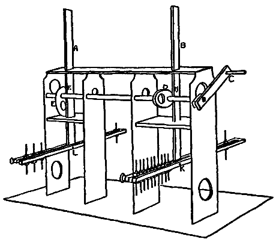
Fig. 1.
Two æsthesiometers, A and B, were arranged in a framework, so that uniform stimulations could be given on both arms. The æsthesiometers were raised or lowered by means of the crank, C, and the cams, D and E. The contacts were made either simultaneously or successively, with any interval between them according to the position of the cams on the crank. The height of the æsthesiometer could be conveniently adjusted by the pins F and H. The shape of the cams was such that the [53]descent of the æsthesiometer was as uniform as the ascent, so that the contacts were not made by a drop motion unless that was desired. The sliding rules, of which there were several forms and lengths, could be easily detached from the upright rods at K and L. Each of the points by which the contacts were made moved easily along the sliding rule, and could be also raised or lowered for accommodation to the unevenness of the surface of the skin. These latter were the most valuable two features of the apparatus. There were two sets of points, one of hard rubber, the other of metal. This enabled me to take into account, to a certain extent, the factor of temperature. A wide range of apparent differences in temperature was secured by employing these two stimuli of such widely different conductivity. Then, as each point was independent of the rest in its movements, its weight could also be changed without affecting the rest.
In the first series of experiments I endeavored to reproduce for touch the optical illusion in its exact form. There the open and the filled spaces are adjacent to each other, and are presented simultaneously for passive functioning of the eye, which is what concerns us here in our search for the analogue of passive touch. This was by no means an easy task, for obviously the open and the filled spaces in this position on the skin could not be compared directly, owing to the lack of uniformity in the sensibility of different portions of the skin. At first, equivalents had to be established between two collinear open spaces for the particular region of the skin tested. Three points were taken in a line, and one of the end points was moved until the two adjacent open spaces were pronounced equal. Then one of the spaces was filled, and the process of finding another open space equivalent to this filled space was repeated as before. This finding of two equivalent open spaces was repeated at frequent intervals. It was found unsafe to determine an equivalent at the beginning of each sitting to be used throughout the hour.
Two sets of experiments were made with the illusion in this form. In one the contacts were made simultaneously; the results of this series are given in Table I. In the second set of [54]experiments the central point which divided the open from the filled space touched the skin first, and then the others in various orders. The object of this was to prevent fusion of the points, and, therefore, to enable the subject to pronounce his judgments more rapidly and confidently. A record of these judgments is given in Table II. In both of these series the filled space was always taken near the wrist and the open space in a straight line toward the elbow, on the volar side of the arm. At present, I shall not undertake to give a complete interpretation of the results of these two tables, but simply call attention to two manifest tendencies in the figures. First, it will be seen that the short filled distance of four centimeters is underestimated, but that the long filled distance is overestimated. Second, in Table II., which represents the judgments when the contacts were made successively, the tendency to underestimate the short distance is less, and at the same time we notice a more pronounced overestimation of the longer filled distances. I shall give a further explanation of these results in connection with later tables.
| 4 cm. | 6 cm. | 8 cm. | ||||
|---|---|---|---|---|---|---|
| Filled. | Open. | Filled. | Open. | Filled. | Open. | |
| F. | 5.3 | 4.7 | 7.8 | 7.6 | 9.3 | 10.5 |
| F. | 5.7 | 4.4 | 6.5 | 7.3 | 9.2 | 11.7 |
| F. | 6.0 | 5.6 | 8.2 | 7.3 | 8.7 | 10.8 |
| —— | —— | —— | —— | —— | —— | |
| Av. | 5.7 | 4.9 | 7.5 | 7.4 | 9.1 | 11.0 |
| R. | 5.7 | 5.1 | 6.7 | 6.8 | 9.3 | 10.2 |
| R. | 5.4 | 5.4 | 7.2 | 7.1 | 8.5 | 10.7 |
| R. | 4.6 | 4.2 | 8.1 | 8.1 | 9.1 | 11.4 |
| —— | —— | —— | —— | —— | —— | |
| Av. | 5.2 | 4.9 | 7.3 | 7.3 | 9.0 | 10.8 |
| K. | 5.6 | 5.1 | 6.8 | 6.7 | 8.1 | 9.6 |
| K. | 5.0 | 5.1 | 7.3 | 7.5 | 8.2 | 11.2 |
| K. | 4.9 | 4.9 | 8.2 | 8.1 | 10.1 | 10.1 |
| —— | —— | —— | —— | —— | —— | |
| Av. | 5.2 | 5.0 | 7.4 | 7.4 | 8.8 | 10.3 |
| 4 cm. | 6 cm. | 8 cm. | ||||
|---|---|---|---|---|---|---|
| Filled. | Open. | Filled. | Open. | Filled. | Open. | |
| F. | 5.1 | 5.0 | 8.0 | 8.3 | 9.2 | 10.3 |
| F. | 5.8 | 4.7 | 7.2 | 7.9 | 8.7 | 10.9 |
| F. | 5.6 | 5.5 | 6.9 | 9.1 | 9.1 | 11.1 |
| —— | —— | —— | —— | —— | —— | |
| Av. | 5.5 | 5.1 | 7.4 | 8.4 | 9.0 | 10.8 |
| R. | 6.0 | 4.8 | 8.2 | 7.5 | 9.4 | 10.6 |
| R. | 5.7 | 5.4 | 6.5 | 7.4 | 10.1 | 9.4 |
| R. | 5.0 | 5.2 | 7.7 | 7.8 | 8.6 | 11.2 |
| —— | —— | —— | —— | —— | —— | |
| Av. | 5.6 | 5.1 | 7.5 | 7.6 | 9.4 | 10.4 |
| K. | 4.8 | 4.8 | 8.2 | 8.3 | 8.1 | 9.8 |
| K. | 5.1 | 5.3 | 7.1 | 7.7 | 10.0 | 10.8 |
| K. | 4.7 | 5.0 | 8.1 | 8.6 | 8.6 | 9.4 |
| —— | —— | —— | —— | —— | —— | |
| Av. | 4.9 | 5.0 | 7.8 | 8.2 | 8.9 | 10.0 |
The first two numbers in the first line signify that when an open distance of 4 cm. was taken, an adjacent open distance of 4.7 cm. was judged equal; but when the adjacent space was filled, 5.3 cm. was judged equal. Each number in the column of filled distances represents an average of five judgments. All of the contacts in Table I. were made simultaneously; in Table II. they were made successively.
[55]In the next series of experiments the illusion was approached from an entirely different point of view. The two points representing the open space were given on one arm, and the filled space on a symmetrical part of the other arm. I was now able to use a much wider range of distances, and made many variations in the weights of the points and the number that were taken for the filled distance.
However, before I began this second series, in which one of the chief variations was to be in the weights of the different points, I made a brief preliminary series of experiments to determine in a general way the influence of pressure on judgments of point distances. Only three distances were employed, four, six and twelve centimeters, and three weights, twelve, twenty and forty grams. Table III. shows that, for three men who were to serve as subjects in the main experiments that are to follow, an increase in the weight of the points was almost always accompanied by an increase in the apparent distance.
| Distances. | 4 cm. | 6 cm. | 12 cm. | ||||||
|---|---|---|---|---|---|---|---|---|---|
| Weights (Grams). | 12 | 20 | 40 | 12 | 20 | 40 | 12 | 20 | 40 |
| R. | 3.9 | 3.2 | 3.0 | 6.2 | 5.6 | 5.3 | 11.4 | 10.4 | 9.3 |
| F. | 4.3 | 4.0 | 3.6 | 6.1 | 5.3 | 5.5 | 12.3 | 11.6 | 10.8 |
| B. | 4.1 | 3.6 | 3.1 | 6.0 | 5.7 | 5.8 | 12.0 | 10.2 | 9.4 |
| P. | 4.3 | 4.1 | 3.7 | 5.9 | 5.6 | 5.6 | 13.1 | 11.9 | 10.7 |
In the standard distances the points were each weighted to 6 grams. The first three figures signify that a two-point distance of 4 cm., each point weighing 6 grams, was judged equal to 3.9 cm. when each point weighed 12 grams. 3.2 cm. when each point weighed 20 grams, etc. Each figure is the average of five judgments.
[56]Now the application of this principle in my criticism of Parrish's experiments, and as anticipating the direction which the following experiments will take, is this: if we take a block such as Parrish used, with only two points in it, and weight it with forty grams in applying it to the skin, it is plain that each point will receive one half of the whole pressure, or twenty grams. But if we put a pressure of forty grams upon a block of eight points, each point will receive only one eighth of the forty, or five grams. Thus, in the case of the filled space, the end points, which play the most important part in the judgment of the distance, have each only five grams' pressure, while the points in the open space have each twenty grams. We should, therefore, naturally expect that the open space would be overestimated, because of the decided increase of pressure at these significant points. Parrish should have subjected the blocks, not to the same pressure, but to a pressure proportional to the number of points in each block. With my apparatus, I was easily able to prove the correctness of my position here. It will be seen in Tables IV. to VIII. that, when the sum of the weights of the two end points in the open space was only just equal to the sum of the weights of all the points in the filled space, the filled space was underestimated just as Parrish has reported. But when the points were all of the same weight, both in the filled and the open space, the filled space was judged longer in all but the very short distances. For this latter exception I shall offer an explanation presently.
Having now given an account of the results of this digression into experiments to determine the influence of pressure upon point distances, I shall pass to the second series of experiments on the illusion in question. In this series, as has been already stated, the filled space was taken on one arm and the open on the other, and then the process was reversed in order to eliminate any error arising from a lack of symmetry between the two regions. Without, for the present, going into a detailed explanation of the statistics of this second series of experiments, [57]which are recorded in Tables IV., V., VI., VII. and VIII., I may summarize the salient results into these general conclusions: First, the short filled distance is underestimated; second, this underestimation of the filled space gradually decreases until in the case of the filled distance of 18 cm. the judgments pass over into pronounced overestimations; third, an increase in the number of points of contact in the shorter distances increases the underestimation, while an increase in the number of points in the longer distance increases the overestimation; fourth, an increase of pressure causes an invariable increase in the apparent length of space. If a general average were made of the results given in Tables IV., V., VI., VII. and VIII., there would be a preponderance of evidence for the conclusion that the filled spaces are overestimated. But we cannot ignore the marked tendencies in the opposite direction for the long and the short distances. These anomalous results, which, it will be remembered, were also found in our first series, call for explanation. Several hypotheses were framed to explain these fluctuations in the illusion, and then some shorter series of experiments were made in different directions with as large a number of variations in the conditions as possible, in the hope of discovering the disturbing factors.
4 Centimeters.
| A | B | C | D | ||||||||||
|---|---|---|---|---|---|---|---|---|---|---|---|---|---|
| less | = | gr. | less | = | gr. | less | = | gr. | less | = | gr. | ||
| R. { | (a) | 7 | 2 | 1 | 8 | 1 | 1 | 6 | 2 | 2 | 5 | 1 | 4 |
| (b) | 7 | 3 | 0 | 7 | 1 | 2 | 6 | 2 | 2 | 6 | 1 | 3 | |
| F. { | (a) | 6 | 3 | 1 | 7 | 1 | 2 | 7 | 0 | 3 | 6 | 0 | 4 |
| (b) | 7 | 0 | 3 | 9 | 1 | 0 | 6 | 1 | 3 | 5 | 2 | 3 | |
| —————— | —————— | —————— | —————— | ||||||||||
| 27 | 8 | 5 | 31 | 4 | 5 | 25 | 5 | 10 | 22 | 4 | 14 | ||
¹In columns A, B, and C the filled spaces were made up of 4, 5 and 6 points, respectively. The total weight of the filled space in A, B and C was always just equal to the weight of the two points in the open space, 20 gr. In (a) the filled distance was given on the right arm first, in (b) on the left arm. It will be observed that this reversal made practically no difference in the judgments and therefore was sometimes omitted. In D the filled space consisted of four points, but here the weight of each point was 10 gr., making a total weight of 40 gr. for the filled space, as against 20 gr. for the open space. In E the weight of each was 20 gr., making the total weight of the filled space 80 gr.[58]
6 Centimeters.
| A | B | C | D | E | ||||||||||||
|---|---|---|---|---|---|---|---|---|---|---|---|---|---|---|---|---|
| less | = | gr. | less | = | gr. | less | = | gr. | less | = | gr. | less | = | gr. | ||
| R. | (a) | 10 | 8 | 2 | 12 | 0 | 8 | 14 | 6 | 0 | 9 | 6 | 5 | 8 | 2 | 10 |
| F. | (a) | 12 | 4 | 4 | 12 | 6 | 2 | 12 | 4 | 4 | 8 | 3 | 9 | 6 | 3 | 11 |
| K. | (a) | 10 | 2 | 8 | 12 | 6 | 2 | 14 | 2 | 4 | 6 | 4 | 10 | 7 | 2 | 11 |
| —————— | —————— | —————— | —————— | —————— | ||||||||||||
| 32 | 14 | 14 | 36 | 12 | 12 | 40 | 12 | 8 | 23 | 13 | 24 | 21 | 7 | 32 | ||
8 Centimeters.
| A | B | C | D | E | ||||||||||||
|---|---|---|---|---|---|---|---|---|---|---|---|---|---|---|---|---|
| less | = | gr. | less | = | gr. | less | = | gr. | less | = | gr. | less | = | gr. | ||
| R. { | (a) | 4 | 1 | 5 | 5 | 1 | 4 | 7 | 0 | 3 | 4 | 0 | 6 | 3 | 0 | 7 |
| (b) | 4 | 0 | 6 | 5 | 1 | 4 | 6 | 1 | 3 | 4 | 1 | 5 | 2 | 1 | 7 | |
| F. { | (a) | 5 | 0 | 5 | 5 | 0 | 5 | 6 | 0 | 4 | 3 | 0 | 7 | 4 | 0 | 6 |
| (b) | 5 | 1 | 4 | 6 | 1 | 3 | 8 | 0 | 2 | 4 | 1 | 5 | 2 | 3 | 5 | |
| K. { | (a) | 4 | 1 | 5 | 6 | 1 | 3 | 7 | 1 | 2 | 3 | 2 | 5 | 1 | 3 | 6 |
| (b) | 4 | 0 | 6 | 7 | 0 | 3 | 6 | 1 | 3 | 4 | 0 | 6 | 3 | 0 | 7 | |
| —————— | —————— | —————— | —————— | —————— | ||||||||||||
| 26 | 3 | 31 | 34 | 4 | 22 | 40 | 3 | 17 | 22 | 4 | 34 | 15 | 7 | 38 | ||
12 Centimeters.
| A | B | C | D | E | ||||||||||||
|---|---|---|---|---|---|---|---|---|---|---|---|---|---|---|---|---|
| less | = | gr. | less | = | gr. | less | = | gr. | less | = | gr. | less | = | gr. | ||
| R. | (a) | 3 | 6 | 16 | 8 | 3 | 14 | 10 | 8 | 7 | 6 | 3 | 16 | 3 | 4 | 18 |
| F. | (a) | 5 | 7 | 13 | 10 | 5 | 10 | 9 | 6 | 10 | 6 | 4 | 15 | 5 | 1 | 19 |
| K. | (a) | 8 | 2 | 15 | 8 | 4 | 13 | 13 | 9 | 3 | 3 | 7 | 15 | 3 | 0 | 22 |
| —————— | —————— | —————— | —————— | —————— | ||||||||||||
| 16 | 15 | 44 | 26 | 12 | 37 | 32 | 23 | 20 | 15 | 14 | 46 | 11 | 5 | 59 | ||
18 Centimeters.
| A | B | C | D | E | ||||||||||||
|---|---|---|---|---|---|---|---|---|---|---|---|---|---|---|---|---|
| less | = | gr. | less | = | gr. | less | = | gr. | less | = | gr. | less | = | gr. | ||
| R. { | (a) | 2 | 0 | 23 | 0 | 0 | 25 | 4 | 4 | 17 | 3 | 1 | 21 | 0 | 1 | 24 |
| (b) | 3 | 1 | 21 | 1 | 0 | 24 | 5 | 3 | 17 | 1 | 6 | 18 | 0 | 2 | 23 | |
| F. { | (a) | 1 | 4 | 20 | 3 | 0 | 22 | 8 | 6 | 11 | 0 | 5 | 20 | 2 | 0 | 23 |
| (b) | 2 | 3 | 20 | 2 | 1 | 22 | 6 | 7 | 12 | 1 | 4 | 20 | 0 | 3 | 22 | |
| K. { | (a) | 4 | 2 | 19 | 4 | 0 | 21 | 2 | 7 | 16 | 0 | 7 | 18 | 0 | 0 | 25 |
| (b) | 1 | 0 | 24 | 2 | 6 | 17 | 8 | 0 | 17 | 2 | 6 | 17 | 1 | 0 | 24 | |
| —————— | —————— | —————— | —————— | —————— | ||||||||||||
| 13 | 10 | 127 | 12 | 7 | 131 | 33 | 27 | 90 | 7 | 29 | 114 | 3 | 6 | 141 | ||
TABLES IV.-VIII.
The first line in column A (Table IV.) signifies that out of 10 judgments, comparing an open space 4 cm., total weight 20 gr., with a filled space of 4 points, total weight also 20 gr., the filled space was judged less 7 times, equal 2 times, and greater once.[59]
The results of the investigation, thus far, point to the conclusion that short filled spaces are underestimated, that long spaces are overestimated, and that between the two there lies what might be called an 'indifference zone.' This unexpected outcome explains, I think, the divergent opinions of the earlier investigators of this problem. Each theory is right in what it affirms, but wrong in what it implicitly or openly denies.
I next set out to determine as precisely as possible how far the factor of fusion, or what Parrish has called irradiation, enters into the judgments. It was evident from the beginning of this whole investigation that fusion or displacement of the points was very common. The term 'irradiation' is, however, too specific a term to describe a process that works in these two opposite directions. The primary concern of these next experiments was, therefore, to devise means for preventing fusion among the points before the subject pronounced his judgment. With our apparatus we were able to make a number of experiments that show, in an interesting way, the results that follow when the sensations are not permitted to fuse. It is only the shorter distances that concern us here. The longer distances have already been shown to follow the law of optical illusion, that is, that filled space is overestimated. The object of the present experiments is to bring the shorter distances under the same law, by showing, first, that the objective conditions as they have existed in our experiments thus far are not parallel to those which we find in the optical illusion. Second, that when the objective conditions are the same, the illusion for the shorter distances follows the law just stated.
In repeating some of the experiments reported in Tables IV.-VIII. with varying conditions, I first tried the plan of using metallic points at the ends of the spaces. Thus, by an apparent difference in the temperature between the end points and the filling, the sensations from the end points, which play the most important part in the judgment of the length, were to a certain extent kept from fusing with the rest. The figures in Table II. have already shown what may be expected when the points are kept from fusing. Here, also, a marked tendency [60]in the direction of apparent lengthening of the distance was at once observed. These short filled distances, which had before been underestimated, were now overestimated. The same results follow when metallic points are alternated with hard rubber points in the filling itself.
This changing of the apparent temperature of the end points has, it must be admitted, introduced another factor; and it might be objected that it was not so much the prevention of fusion as the change in the temperature that caused the judgments to drift towards overestimation. I have statistics to show that this observation is in a way just. Extremes in temperature, whether hot or cold, are interpreted as an increase in the amount of space. This conclusion has also been reported from a number of other laboratories. My contention at this point is simply that there are certain conditions under which these distances will be overestimated and that these are the very conditions which bring the phenomenon into closer correspondence with the optical illusion, both as to the stimuli and the subjective experience. Then, aside from this, such an objection will be seen to be quite irrelevant if we bear in mind that when the end points in the filled distance were replaced by metallic points, metallic points were also employed in the open distance. The temperature factor, therefore, entered into both spaces alike. By approaching the problem from still another point of view, I obtained even more conclusive evidence that it is the fusion of the end points with the adjacent points in the short distances that leads to the underestimation of these. I have several series in which the end points were prevented from fusing into the filling, by raising or lowering them in the apparatus, so that they came in contact with the skin just after or before the intermediate points. When the contacts were arranged in this way, the tendency to underestimate the filled spaces was very much lessened, and with some subjects the tendency passed over into a decided overestimation. This, it will be seen, is a confirmation of the results in Table II.
I have already stated that the two series of experiments reported in Section II. throughout point to the conclusion that an increase of pressure is taken to mean an increase in the distance.[61] I now carried on some further experiments with short filled distances, making variations in the place at which the pressure was increased. I found a maximum tendency to underestimate when the central points in the filled space were weighted more than the end points. A strong drift in the opposite direction was noticed when the end points were heavier than the intermediate ones. It is not so much the pressure as a whole, as the place at which it is applied, that causes the variations in the judgments of length. In these experiments the total weights of the points were the same in both cases. An increase of the weight on the end points with an equivalent diminution of the weights on the intervening points gave the end points greater distinctness apparently and rendered them less likely to disappear from the judgments.
At this stage in the inquiry as to the cause of the underestimation of short distances, I began some auxiliary experiments on the problem of the localization of cutaneous impressions, which I hoped would throw light on the way in which the fusion or displacement that I have just described takes place. These studies in the localization of touch sensations were made partly with a modification of the Jastrow æsthesiometer and partly with an attachment to the apparatus before described (Fig. 1). In the first case, the arm upon which the impressions were given was screened from the subject's view, and he made a record of his judgments on a drawing of the arm. The criticism made by Pillsbury6 upon this method of recording the judgments in the localization of touch sensations will not apply to my experiments, for I was concerned only with the relative, not with the absolute position of the points. In the case of the other experiments, a card with a single line of numbered points was placed as nearly as possible over the line along which the contacts had been made on the arm. The subject then named those points on the card which seemed directly over the points which had been touched.
The results from these two methods were practically the same. But the second method, although it obviously permitted the determination of the displacements in one dimension only, [62]was in the end regarded as the more reliable method. With this apparatus I could be more certain that the contacts were made simultaneously, which was soon seen to be of the utmost importance for these particular experiments. Then, too, by means of this æsthesiometer, all movement of the points after the contact was made was prevented. This also was an advantage in the use of this apparatus, here and elsewhere, which can hardly be overestimated. With any æsthesiometer that is operated directly by the hand, it is impossible to avoid imparting a slight motion to the points and thus changing altogether the character of the impression. The importance of this consideration for my work was brought forcibly to my attention in this way. One of the results of these tests was that when two simultaneous contacts are made differing in weight, if only one is recognized it is invariably located in the region of the contact with the heavier point. But now if, while the points were in contact with the skin and before the judgment was pronounced, I gave the lighter point a slight jar, its presence and location were thereby revealed to the subject. Then, too, it was found to be an advantage that the judgments were thus confined to the longitudinal displacement only; for, as I have before insisted, it was the relative, not the absolute position that I wished to determine, since my object in all these experiments in localization was to determine what connection, if any, exists between judgments upon cutaneous distances made indirectly by means of localization, and judgments that are pronounced directly upon the subjective experience of the distance.
In the first of these experiments, in which two points of different weight were used, the points were always taken safely outside of the threshold for the discrimination between two points in the particular region of the skin operated on. An inspection of the results shown in Figs. 2 and 3 will indicate the marked tendency of the heavier point to attract the lighter. In Figs. 2 and 3 the heavy curves were plotted from judgments where both heavy and light points were given together. The dotted curve represents the localization of each point when given alone. The height of the curves at any particular point is determined by the number of times a contact was judged to [63]be directly under that point. The fact that the curves are higher over the heavy points shows that, when two points were taken as one, this one was localized in the vicinity of the heavier point. When points were near the threshold for any region, it will be observed that the two points were attracted to each other. But when the points were altogether outside the threshold, they seemed strangely to have repelled each other. As this problem lay somewhat away from my main interest here, I did not undertake to investigate this peculiar fluctuation exhaustively. My chief purpose was satisfied when I found that the lighter point is displaced toward the heavier, in short distances. A further explanation of these figures will be given in connection with similar figures in the next section.
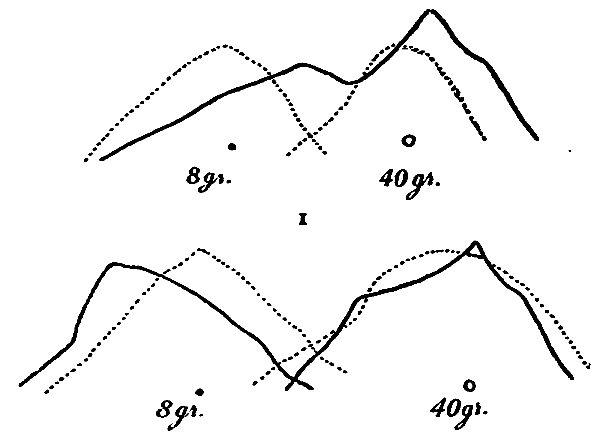
Fig. 2. Back of hand.
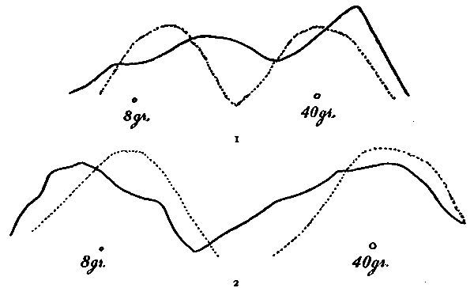
Fig. 3. Forearm.
[64]This attraction of the heavier for the lighter points is, I think, a sufficient explanation for the variations in judgments upon filled distances where changes are made in the place at which the pressure is applied. I furthermore believe that an extension of this principle offers an explanation for the underestimation of cutaneous line-distances, which has been frequently reported from various laboratories. Such a straight line gives a subjective impression of being heavier at the center. I found that if the line is slightly concave at the center, so as to give the ends greater prominence and thereby leave the subjective impression that the line is uniform throughout its entire length, the line will be overestimated in comparison with a point distance. Out of one hundred judgments on the relative length of two hard-rubber lines of 5 cm. when pressed against the skin, one of which was slightly concave, the concave line was overestimated eighty-four times. For sight, a line in which the shaded part is concentrated at the center appears longer than an objectively equal line with the shading massed towards the ends.
In the last section, I gave an account of some experiments in the localization of touch sensations which were designed to show how, under varying pressure, the points in the filled distance are displaced or fused and disappear entirely from the judgment. Our earliest experiments, it will be remembered, yielded unmistakable evidence that short, filled distances were underestimated; while all of the secondary experiments reported in the last section have pointed to the conclusion that even these shorter distances will follow the law of the longer distances and be overestimated under certain objective conditions, which conditions are also more nearly parallel with those which we find in the [65]optical illusion. I wish now to give the results of another and longer set of experiments in the localization of a manifold of touch sensations as we find them in this same illusion for filled space, by which I hope to prove a direct relation between the function of localization and the spatial functioning proper.
These experiments were made with the same apparatus and method that were used in the previous study in localization; but instead of two points of different weights, four points of uniform weight were employed. This series, therefore, will show from quite another point of view that the fusion which takes place, even where there is no difference in the weight, is a very significant factor in judgments of distance on the skin.
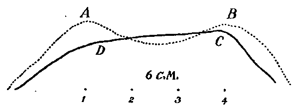
Fig. 4.
I need hardly say that here, and in all my other experiments, the subjects were kept as far as possible in complete ignorance of the object of the experiment. This and the other recognized laboratory precautions were carefully observed throughout this work. Four distances were used, 4, 8, 12 and 16 cm. At frequent intervals throughout the tests the contact was made with only one of the points instead of four. In this way there came to light again the interesting fact which we have already seen in the last section, which is of great significance for my theory—that the end points are located differently when given alone than when they are presented simultaneously with the other points. I give a graphic representation of the results obtained from a large number of judgments in Figs. 4, 5 and 6. These experiments with filled spaces, like the earlier experiments, were made on the volar side of the forearm beginning near the wrist. In each distance four points were used, equally distributed over the space. The shaded curve, as in the [66]previous figures, represents the results of the attempts to localize the points when all four were given simultaneously. In the dotted curves, the end points were given alone. The height of the curve at any place is determined by the number of times a point was located immediately underneath that particular part of the curve. In Fig. 4 the curve which was determined by the localization of the four points when given simultaneously, shows by its shape how the points appear massed towards the center. In Fig. 5 the curve AB shows, by its crests at A and B, that the end points tended to free themselves from the rest in the judgments. But if the distance AB be taken to represent the average of the judgments upon the filled space 1, 2, 3, 4, it will be seen to be shorter than what may be regarded as the average of the judgments upon the corresponding open space, namely, the distance A'B', determined by the localizations of the end points alone. The comparative regularity of the curve indicates that the subject was unable to discriminate among the points of the filling with any degree of certainty. The localizations were scattered quite uniformly along the line. In these short distances the subject often judged four points as two, or even one.
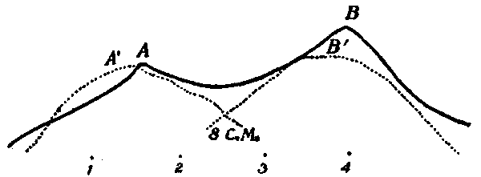
Fig. 5.
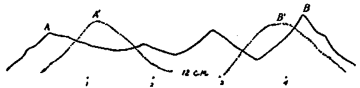
Fig. 6.
[67]Turning to Fig. 6, we notice that the tendency is now to locate the end points in the filled distance outside of the localization of these same points when given without the intermediate points. It will also be seen from the irregularities in these two longer curves that there is now a clear-cut tendency to single out the individual points. The fact that the curves here are again higher over point 4 simply signifies that at this, the wrist end, the failure to discover the presence of the points was less frequent than towards the elbow. But this does not disturb the relation of the two series of judgments. As I have before said, the first two sets of experiments described in Section II. showed that the shorter filled distances are underestimated, while the longer distances are overestimated, and that between the two there is somewhat of an 'indifferent zone.' In those experiments the judgments were made directly on the cutaneous distances themselves. In the experiments the results of which are plotted in these curves, the judgment of distances is indirectly reached through the function of localization. But it will be observed that the results are substantially the same. The longer distances are overestimated and the shorter distances underestimated. The curves in Figs. 4, 5 and 6 were plotted on the combined results for two subjects. But before the combination was made the two main tendencies which I have just mentioned were observed to be the same for both subjects.
It will be remembered also that in these experiments, where the judgment of distance was based directly on the cutaneous impression, the underestimation of the short, filled distance was lessened and even turned into an overestimation, by giving greater distinctness to the end points, in allowing them to come in contact with the skin just before or just after the filling. The results here are again the same as before. The tendency to underestimate is lessened by this device. Whenever, then, a filled space is made up of points which are distinctly perceived as discrete—and this is shown in the longer curves by the comparative accuracy with which the points are located—these spaces are overestimated.
In all of these experiments on localization, the judgments were given with open eyes, by naming the visual points under [68]which the tactual points seemed to lie. I have already spoken of the other method which I also employed. This consisted in marking points on paper which seemed to correspond in number and position to the points on the skin. During this process the eyes were kept closed. This may appear to be a very crude way of getting at the illusion, but from a large number of judgments which show a surprising consistency I received the emphatic confirmation of my previous conclusion, that filled spaces were overestimated. These experiments were valuable also from the fact that here the cutaneous space was estimated by the muscle sense, or active touch, as it is called.
In the experiments so far described the filling in of the closed space was always made by means of stationary points. I shall now give a brief account of some experiments which I regard as very important for the theory that I shall advance later. Here the filling was made by means of a point drawn over the skin from one end of a two-point distance to the other.
These experiments were made on four different parts of the skin—the forehead, the back of the hand, the abdomen, and the leg between the knee and the thigh. I here forsook the plan which I had followed almost exclusively hitherto, that of comparing the cutaneous distances with each other directly. The judgments now were secured indirectly through the medium of visual distances. There was placed before the subject a gray card, upon which were put a series of two-point distances ranging from 2 to 20 cm. The two-point distances were given on the skin, and the subject then selected from the optical distances the one that appeared equal to the cutaneous distance. This process furnished the judgments on open spaces. For the filled spaces, immediately after the two-point distance was given a blunt stylus was drawn from one point to the other, and the subject then again selected the optical distance which seemed equal to this distance filled by the moving point.
The results from these experiments point very plainly in one direction. I have therefore thought it unnecessary to go into any further detail with them than to state that for all subjects and for all regions of the skin the filled spaces were overestimated. This overestimation varied also with the rate of speed [69]at which the stylus was moved. The overestimation is greatest where the motion is slowest.
Vierordt7 found the same result in his studies on the time sense, that is, that the more rapid the movement, the shorter the distance seems. But lines drawn on the skin are, according to him, underestimated in comparison with open two-point distances. Fechner8 also reported that a line drawn on the skin is judged shorter than the distance between two points which are merely touched. It will be noticed, however, that my experiments differed from those of Vierordt and Fechner in one essential respect. This difference, I think, is sufficient to explain the different results. In my experiments the two-point distance was held on the skin, while the stylus was moved from one point to the other. In their experiments the line was drawn without the points. This of course changes the objective conditions. In simply drawing a line on the skin the subject rapidly loses sight of the starting point of the movement. It follows, as it were, the moving point, and hence the entire distance is underestimated. I made a small number of tests of this kind, and found that the line seemed shorter than the point distance as Fechner and Vierordt declared. But when the point distance is kept on the skin while the stylus is being drawn, the filling is allowed its full effect in the judgment, inasmuch as the end points are perceived as stationary landmarks. The subjects at first found some difficulty in withholding their judgments until the movement was completed. Some subjects declared that they frequently made a preliminary judgment before the filling was inserted, but that when the moving point approached the end point, they had distinctly the experience that the distance was widening. In these experiments I used five sorts of motion, quick and heavy, quick and light, slow and heavy, slow and light, and interrupted. I made no attempt to determine either the exact amount of pressure or the exact rate. I aimed simply at securing pronounced extremes. The slow rate was approximately 3, and the fast approximately 15 cm. per second.
I have already said that these filled spaces were invariably [70]overestimated and that the slower the movement, the greater, in general, is the overestimation. In addition to the facts just stated I found also, what Hall and Donaldson9 discovered, that an increase in the pressure of a moving point diminishes the apparent distance.
Nichols,10 however, says that heavy movements seem longer and light ones shorter.
There are several important matters which might properly have been mentioned in an earlier part of this paper, in connection with the experiments to which they relate, but which I have designedly omitted, in order not to disturb the continuity in the development of the central object of the research. The first of these is the question of the influence of visualization on the judgments of cutaneous distances. This is in many ways a most important question, and confronts one who is making studies in tactual space everywhere. The reader may have already noticed that I have said but little about the factor of visualization in any of my experiments, and may have regarded it as a serious omission. It might be offered as a criticism of my work that the fact that I found the tactual illusions to exist in the same sense as the optical illusions was perhaps due to the failure to exclude visualization. All of the subjects declare that they were unable to shut out the influence of visualizing entirely. Some of the subjects who were very good visualizers found the habit especially insistent. I think, however, that not even in these latter cases does this factor at all vitiate my conclusions.
It will be remembered that the experiments up to this time fall into two groups, first, those in which the judgments on the cutaneous distances were reached by direct comparisons of the sensations themselves; and secondly, those in which the sensations were first localized and then the judgment of the distance read from these localizations. Visualizing, therefore, entered very differently into the two groups. In the first instance all [71]of the judgments were made with the eyes closed, while all of the localizations were made with the eyes open. I was uncertain through the whole of the first group of experiments as to just how much disturbance was being caused in the estimation of the distance by visualizing. I therefore made a series of experiments to determine what effect was produced upon the illusion if in the one set of judgments one purposely visualized and in the other excluded visualizing as far as possible. In my own case I found that after some practice I could give very consistent judgments, in which I felt that I had abstracted from the visualized image of the arm almost entirely. I did not examine these results until the close of the series, and then found that the illusion was greater for those judgments in which visualization was excluded; that is, the filled space seemed much larger when the judgment was made without the help of visualization. It is evident, therefore, that the tactual illusion is influenced rather in a negative direction by visualization.
In the second group of experiments, where the judgments were obtained through the localization of the points, it would seem, at first sight, that the judgments must have been very largely influenced by the direct vision used in localizing the points. The subject, as will be remembered, looked down at a card of numbered points and named those which were directly over the contacts beneath. Here it should seem that the optical illusion of the overestimation of filled spaces, filled with points on the card, would be directly transmitted to the sensation on the skin underneath. Such criticism on this method of getting at the illusion has already been made orally to me. But this is obviously a mistaken objection. The points on the card make a filled space, which of course appears larger, but as the points expand, the numbers which are attached to them expand likewise, and the optical illusion has plainly no influence whatever upon the tactual illusion.
A really serious objection to this indirect method of approaching the illusion is, that the character of the cutaneous sensation is never so distinctly perceived when the eyes are open as when they are closed. Several subjects often found it necessary to close their eyes first, in order to get a clear perception [72]of the locality of the points; they then opened their eyes, to name the visual points directly above. Some subjects even complained that when they opened their eyes they lost track of the exact location of the touch points, which they seemed to have when their eyes were closed. The tactual impression seems to be lost in the presence of active vision.
On the whole, then, I feel quite sure in concluding that the overestimation of the filled cutaneous spaces is not traceable to the influence of visualization. Parrish has explained all sporadic cases of overestimation as due to the optical illusion carried over in visualization. I have already shown that in my experiments visualization has really the opposite effect. In Parrish's experiments the overestimation occurred in the case of those collections of points which were so arranged as to allow the greatest differentiation among the points, and especially where the end-points were more or less distinct from the rest. This, according to my theory, is precisely what one would expect.
Those who have made quantitative studies in the optical illusion, especially in this particular illusion for open and filled spaces, have observed and commented on the instability of the illusion. Auerbach11 says, in his investigation of the quantitative variations of the illusion, that concentration of attention diminishes the illusion. In the Zöllner figure, for instance, I have been able to notice the illusion fluctuate through a wide range, without eye-movements and without definitely attending to any point, during the fluctuation of the attention. My experiments with the tactual illusion have led me to the conclusion that it fluctuates even more than the optical illusion. Any deliberation in the judgment causes the apparent size of the filled space to shrink. The judgments that are given most rapidly and naïvely exhibit the strongest tendency to overestimation; and yet these judgments are so consistent as to exclude them from the category of guesses.
In most of my experiments, however, I did not insist on rapid and naïve judgments; but by a close observation of the subject as he was about to make a judgment I could tell quite [73]plainly which judgments were spontaneous and which were deliberate. By keeping track of these with a system of marks, I was able to collect them in the end into groups representing fairly well the different degrees of attention. The illusion is always greatest for the group of spontaneous judgments, which points to the conclusion that all illusions, tactual as well as visual, are very largely a function of attention.
In Section II. I told of my attempt to reproduce the optical illusion upon the skin in the same form in which we find it for sight, namely, by presenting the open and filled spaces simultaneously, so that they might be held in a unitary grasp of consciousness and the judgment pronounced on the relative length of these parts of a whole. However, as I have already said, the filled space appears longer, not only when given simultaneously, but also when given successively with the open space. In the case of the optical illusion I am not so sure that the illusion does not exist if the two spaces are not presented simultaneously and adjacent, as Münsterberg asserts. Although, to be sure, for me the illusion is not so strong when an interval is allowed between the two spaces, I was interested to know whether this was true also in the case of a touch illusion. My previous tables did not enable me to compare the quantitative extent of the illusion for successive and simultaneous presentation. But I found in two series which had this point directly in view, one with the subject F and one in which G served as subject, that the illusion was emphatically stronger when the open and filled spaces were presented simultaneously and adjacent. In this instance, the illusion was doubtless a combination of two illusions—a shrinking of the open space, on the one hand, and a lengthening of the filled space on the other hand. Binet says, in his studies on the well-known Müller-Lyer illusion, that he believes the illusion, in its highest effects at any rate, to be due to a double contrast illusion.
This distortion of contrasted distances I have found in more than one case in this investigation—not only in the case of distances in which there is a qualitative difference, but also in the case of two open distances. In one experiment, in which open distances on the skin were compared with optical point distances, [74]a distance of 10 cm. was given fifty times in connection with a distance of 15 cm., and fifty times in connection with a distance of 5 cm. In the former instance the distance of 10 cm. was underestimated, and in the other it was overestimated.
The general conclusion of the entire investigation thus far may be summed up in the statement: Wherever the objective conditions are the same in the two senses, the illusion exists in the same direction for both sight and touch.
Thus far all of my experiments were made with passive touch. I intend now to pursue this problem of the relation between the illusions of sight and touch into the region of active touch. I have yielded somewhat to the current fashion in thus separating the passive from the active touch in this discussion. I have already said that I believe it would be better not to make this distinction so pronounced. Here again I have concerned myself primarily with only one illusion, the illusion which deals with open and filled spaces. This is the illusion to which Dresslar12 devoted a considerable portion of his essay on the 'Psychology of Touch,' and which he erroneously thought to be the counterpart of the optical illusion for open and filled spaces. One of the earliest notices of this illusion is that given by James,13 who says, "Divide a line on paper into two equal halves, puncture the extremities, and make punctures all along one of the halves; then, with the finger-tip on the opposite side of the paper, follow the line of punctures; the empty half will seem much longer than the punctured half."
James has given no detailed account of his experiments. He does not tell us how many tests were made, nor how long the lines were, nor whether the illusion was the same when the open half was presented first. Dresslar took these important questions into consideration, and arrived at a conclusion directly opposite to that of James, namely, that the filled half of the line appears larger than the open half. Dresslar's conclusion is, therefore, that sight and touch function alike. I have already [75]said that I think that Parrish was entirely right in saying that this is not the analogue of the familiar optical illusion. Nevertheless, I felt sure that it would be quite worth the while to make a more extensive study than that which Dresslar has reported. Others besides James and Dresslar have experimented with this illusion. As in the case of the illusion for passive touch, there are not wanting champions of both opinions as to the direction in which this illusion lies.
I may say in advance of the account of my experiments, that I have here also found a ground of reconciliation for these two divergent opinions. Just as in the case of the illusion for passive touch, there are here also certain conditions under which the filled space seems longer, and other conditions under which it appears shorter than the open space. I feel warranted, therefore, in giving in some detail my research on this illusion, which again has been an extended one. I think that the results of this study are equally important with those for passive touch, because of the further light which they throw on the way in which our touch sense functions in the perception of the geometrical illusions. Dresslar's experiments, like those of James, were made with cards in which one half was filled with punctures. The number of punctures in each centimeter varied with the different cards. Dresslar's conclusion was not only that the filled space is overestimated, but also that the overestimation varies, in a general way, with the number of punctures in the filling. Up to a certain point, the more holes there are in the card, the longer the space appears.
I had at the onset of the present experiment the same feeling about Dresslar's work that I had about Parrish's work, which I have already criticised, namely, that a large number of experiments, in which many variations were introduced, would bring to light facts that would explain the variety of opinion that had hitherto been expressed. I was confident, however, that what was most needed was a quantitative determination of the illusion. Then, too, inasmuch as the illusion, whatever direction it takes, is certainly due to some sort of qualitative differences in the two kinds of touch sensations, those from the punctured, and those from the smooth half, it seemed especially desirable to introduce [76]as many changes into the nature of the filling as possible. The punctured cards I found very unsatisfactory, because they rapidly wear off, and thus change the quality of the sensations, even from judgment to judgment.
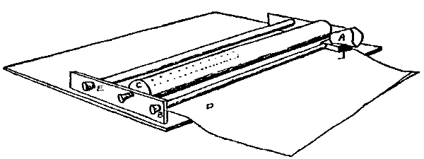
Fig. 7.
The first piece of apparatus that I used in the investigation of the illusion for open and filled space with active touch is shown in Fig. 7. A thimble A, in which the finger was carried, moved freely along the rod B. The filled spaces were produced by rows of tacks on the roller C. By turning the roller, different kinds of fillings were brought into contact with the finger-tip. The paper D, on which the judgments were recorded by the subject, could be slowly advanced under the roller E. Underneath the thimble carrier there was a pin so arranged that, by a slight depression of the finger, a mark was made on the record paper beneath. A typical judgment was made as follows; the subject inserted his finger in the thimble, slightly depressed the carrier to record the starting points, then brought his finger-tip into contact with the first point in the filled space. The subject was, of course, all the while ignorant of the length or character of the filling over which he was about to pass. The finger-tip was then drawn along the points, and out over the smooth surface of the roller, until the open space passed over was judged equal to the filled space. Another slight depression of the finger registered the judgment on the paper below. The paper was then moved forward by turning the roller E, and, if desired, a different row of pins was put in place for judgment by revolving the roller C. The dividing line between the open and filled spaces was continuously recorded [77]on the paper from below by a pin not shown in the illustration.
The rollers, of which I had three, were easily removed or turned about, so that the open space was presented first. In one of the distances on each roller both spaces were unfilled. This was used at frequent intervals in each series and served somewhat the same purpose as reversing the order in which the open and filled spaces were presented. With some subjects this was the only safe way of securing accurate results. The absolute distances measured off were not always a sure criterion as to whether the filled space was under-or overestimated. For example, one rather erratic subject, who was, however, very constant in his erratic judgments, as an average of fifty judgments declared a filled space of 4 cm. to be equal to an open space of 3.7 cm. This would seem, on the surface, to mean that the filled space had been underestimated. But with these fifty judgments there were alternated judgments on two open spaces, in which the first open space was judged equal to the second open space of 3.2 cm. From this it is obvious that the effect of the filling was to cause an overestimation—not underestimation as seemed at first sight to be the case.
In another instance, this same subject judged a filled space of 12.0 cm. to be equal to an open space of 12.9 cm., which would seem to indicate an overestimation of the filled space. But an average of the judgments on two open spaces that were given in alternation shows that an equivalence was set up between the two at 13.7 cm. for the second open space. This would show that the filling of a space really produced an underestimation.
The same results were obtained from other subjects. In my experiments on the illusion for passive touch, I pointed out that it is unsafe to draw any conclusion from a judgment of comparison between open and filled cutaneous spaces, unless we had previously determined what might be called a standard judgment of comparison between two open spaces. The parts of our muscular space are quite as unsymmetrical as the parts of our skin space. The difficulties arising from this lack of symmetry can best be eliminated by introducing at frequent intervals [78]judgments on two open spaces. As I shall try to show later, the psychological character of the judgment is entirely changed by reversing the order in which the spaces are presented, and we cannot in this way eliminate the errors due to fluctuations of the attention.
The apparatus which I used in these first experiments possesses several manifest advantages. Chief among these was the rapidity with which large numbers of judgments could be gathered and automatically recorded. Then, in long distances, when the open space was presented first, the subject found no difficulty in striking the first point of the filled space. Dresslar mentioned this as one reason why in his experiments he could not safely use long distances. His subjects complained of an anxious straining of the attention in their efforts to meet the first point of the filled space.
There are two defects manifest in this apparatus. In the first place, the other tactual sensations that arise from contact with the thimble and from the friction with the carrier moving along the sliding rod cannot be disregarded as unimportant factors in the judgments. Secondly, there is obviously a difference between a judgment that is made by the subject's stopping when he reaches a point which seems to him to measure off equal spaces, and a judgment that is made by sweeping the finger over a card, as in Dresslar's experiments, with a uniform motion, and then, after the movement has ceased, pronouncing judgment upon the relative lengths of the two spaces. In the former case the subject moves his finger uniformly until he approaches the region of equality, and then slackens his speed and slowly comes to a standstill. This of course changes the character of the judgments. Both of these defects I remedied in another apparatus which will be described later. For my present purpose I may disregard these objections, as they affect alike all the judgments.
In making the tests for the first series, the subject removed his finger after each judgment, so that the position of the apparatus could be changed and the subject made to enter upon the new judgment without knowing either the approximate length or the nature of the filling of this new test. With [79]this apparatus no attempt was made to discover the effects of introducing changes in the rate of speed. The only requirement was that the motion should be uniform. This does not mean that I disregarded the factor of speed. On the contrary, this time element I consider as of the highest consequence in the whole of the present investigation. But I soon discovered, in these experiments, that the subjects themselves varied the rate of speed from judgment to judgment over a wide range of rates. There was no difficulty in keeping track of these variations, by recording the judgments under three groups, fast, slow and medium. But I found that I could do this more conveniently with another apparatus, and will tell at a later place of the results of introducing a time element. In these first experiments the subject was allowed to use any rate of speed which was convenient to him.
| Filled Spaces. | Subjects | P | R | F | Rr |
|---|---|---|---|---|---|
| 2= | 3.8 | 3.6 | 2.9 | 2.8 | |
| 3= | 4.1 | 4.1 | 4.2 | 3.9 | |
| 4= | 4.7 | 5.1 | 4.3 | 4.3 | |
| 5= | 5.2 | 5.6 | 5.8 | 6.0 | |
| 6= | 6.0 | 6.3 | 6.4 | 5.2 | |
| 7= | 6.8 | 6.5 | 6.6 | 7.0 | |
| 8= | 7.5 | 7.6 | 7.2 | 7.4 | |
| 9= | 8.3 | 8.1 | 8.2 | 8.6 | |
| 10= | 8.9 | 9.1 | 8.7 | 8.5 |
| Filled Spaces. | Subjects | P | R | F | Rr |
|---|---|---|---|---|---|
| 2= | 4.0 | 3.8 | 3.2 | 2.6 | |
| 3= | 4.3 | 4.2 | 4.4 | 3.6 | |
| 4= | 4.6 | 5.6 | 4.6 | 4.8 | |
| 5= | 5.4 | 6.1 | 5.6 | 5.7 | |
| 6= | 6.2 | 6.4 | 6.8 | 6.9 | |
| 7= | 7.3 | 6.8 | 7.9 | 7.2 | |
| 8= | 7.8 | 7.4 | 7.3 | 7.8 | |
| 9= | 8.6 | 8.0 | 7.9 | 8.9 | |
| 10= | 9.3 | 9.1 | 8.9 | 8.5 |
TABLES IX. AND X.
First line reads: 'When the finger-tip was drawn over a filled distance of 2 cm., the subject P measured off 3.8 on the open surface, the subject R 3.6, etc.' Each number is the average of five judgments. In Table IX. the points were set at regular intervals. In Table X. the filling was made irregular by having some points rougher than the others and set at different intervals.
[80]I can give here only a very brief summary of the results with this apparatus. In Tables IX. and X. I give a few of the figures which will show the tendency of the experiments. In these tests a different length and a different filling were given for each judgment. The result of the experiments of this group is, first, that the shorter filled spaces are judged longer and the longer spaces shorter than they really were. Second, that an increase in the number of points in the filled space causes no perceptible change in the apparent length. Third, that when the filling is so arranged as to produce a tactual rhythm by changing the position or size of every third point, the apparent length of the space is increased. It will be noticed, also, that this is just the reverse of the result that was obtained for passive touch. These facts, which were completely borne out by several other experiments with different apparatus which I shall describe later, furnish again a reason why different investigators have hitherto reported the illusion to exist, now in one direction, now in the other. Dresslar drew the conclusion from his experiments that the filled spaces are always overestimated, but at the same time his figures show an increasing tendency towards an underestimation of the filled spaces as the distances increased in length. I shall later, in connection with similar results from other experiments on this illusion, endeavor to explain these anomalous facts.
In section IV. I mentioned the fact that I found the illusion for passive touch to be subject to large fluctuations. This is true also of the illusion for active touch. When the finger-tip is drawn over the filled, and then out over the open space, the limits between which the stopping point varies is a much wider range than when the finger-tip is drawn over two open spaces. In the latter case I found the variation to follow Weber's Law in a general way. At first I thought these erratic judgments were mere guesses on the part of the subject; but I soon discovered a certain consistency in the midst of these extreme fluctuations. To show what I mean, I have plotted some diagrams based on a few of the results for three subjects. These diagrams are found in Fig. 8. It will be observed that the curve which represents the collection of stopping points is [81]shorter and higher where the judgments were on two open spaces. This shows plainly a greater accuracy in the judgments than when the judgments were on a filled and an open space, where the curves are seen to be longer and flatter. This fluctuation in the illusion becomes important in the theoretical part of my discussion, and, at the risk of apparently emphasizing unduly an insignificant matter, I have given in Fig. 9 an exact copy of a sheet of judgments as it came from the apparatus. This shows plainly how the illusion wears away with practice, when one distance is given several times in succession. The subject was allowed to give his judgment on the same distance ten times before passing to another. A glance at the diagram will show how pronounced the illusion is at first, and how it then disappears, and the judgment settles down to a uniform degree of accuracy. It will be seen that the short filled space is at first overestimated, and then, with the succeeding judgments, this overestimation is gradually reduced. In the case of the longer filled distances (which could not be conveniently reproduced here) the spaces were at first underestimated, and then this underestimation slowly decreased.
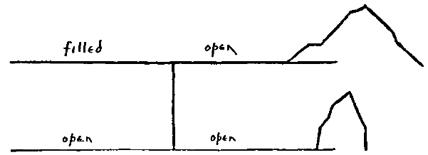
Fig. 8.
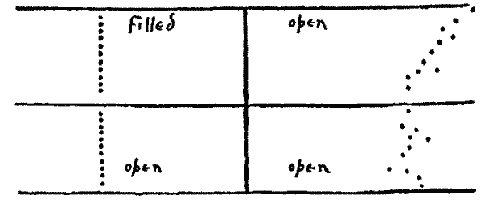
Fig. 9.
[82]None of the qualitative studies that have hitherto been made on this illusion have brought to light this significant wearing away of the illusion.
I have already spoken of the defects of the apparatus with which the experiments of the previous chapter were made. I shall now give an account of some experiments that were made with an apparatus designed to overcome these difficulties. This is shown in Fig. 10. The block C was clamped to a table, while the block A could be moved back and forth by the lever B, in order to bring up different lengths of filled space for judgment. For each judgment the subject brought his finger back to the strip D, and by moving his finger up along the edge of this strip he always came into contact with the first point of the new distance. The lever was not used in the present experiment; but in later experiments, where the points were moved under the finger tip, which was held stationary, this lever was very useful in producing different rates of speed. In one series of experiments with this apparatus the filled spaces were presented first, and in another series the open spaces were presented first. In the previous experiments, so far as I have reported them, the filled spaces were always presented first.
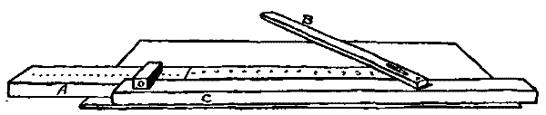
Fig. 10.
In order to enable the subject to make proper connections with the first point in the filled space, when the open space was presented first, a slight depression was put in the smooth surface. This depression amounted merely to the suggestion of a groove, but it sufficed to guide the finger.
The general results of the first series of experiments with this apparatus were similar to those already given, but were based on a very much larger number of judgments. They show at once that the short filled spaces are overestimated, while the longer [83]spaces are underestimated. The uniformity of this law has seemed to me one of the most significant results of this entire investigation. In the results already reported from the experiments with the former apparatus, I have mentioned the fact that the judgments upon the distances fluctuate more widely when one is filled and the other open, than when both are open. This fluctuation appeared again in a pronounced way in the present experiments. I now set about to discover the cause of this variation, which was so evidently outside of the limits of Weber's law.
| I. | II. | ||||||
|---|---|---|---|---|---|---|---|
| Filled Spaces. | Subjects | R. | B. | A. | R. | B. | A. |
| 2= | 3.1 | 3.2 | 3.7 | 2.7 | 2.5 | 3.1 | |
| 3= | 4.5 | 4.4 | 4.1 | 4.1 | 4.0 | 3.6 | |
| 4= | 5.3 | 5.0 | 4.3 | 4.2 | 4.6 | 4.6 | |
| 5= | 6.0 | 5.1 | 5.8 | 5.9 | 5.2 | 4.3 | |
| 6= | 6.8 | 5.6 | 6.2 | 6.9 | 5.3 | 6.0 | |
| 7= | 7.4 | 7.2 | 6.9 | 7.6 | 7.3 | 6.8 | |
| 8= | 8.1 | 8.4 | 7.3 | 8.3 | 9.7 | 7.8 | |
| 9= | 9.3 | 9.0 | 8.5 | 9.5 | 8.9 | 8.7 | |
| 10= | 10.1 | 10.0 | 8.1 | 10.3 | 10.0 | 9.2 | |
| 11= | 10.5 | 9.3 | 9.7 | 10.6 | 8.7 | 9.6 | |
| 12= | 11.7 | 10.6 | 10.6 | 11.8 | 9.7 | 10.2 | |
| 13= | 12.3 | 10.9 | 10.9 | 11.1 | 10.2 | 9.6 | |
| 14= | 12.2 | 11.5 | 12.2 | 10.4 | 9.6 | 11.3 | |
| 15= | 13.6 | 12.3 | 11.9 | 13.1 | 10.1 | 9.6 | |
| 16= | 14.1 | 13.5 | 14.1 | 12.3 | 13.2 | 13.3 | |
| 17= | 14.9 | 12.9 | 14.6 | 14.1 | 12.6 | 13.7 | |
| 18= | 15.0 | 15.3 | 14.9 | 15.0 | 15.3 | 13.8 | |
| 19= | 15.2 | 14.6 | 15.2 | 14.1 | 13.9 | 14.2 | |
| 20= | 17.1 | 16.5 | 15.7 | 16.1 | 16.4 | 14.7 | |
The first line of group I. reads: 'When the finger-tip was passed over a filled space of 2 cm., the subject R measured off 3.1 cm. on the open space, the subject B 3.2 cm., and the subject A 3.7.' In group II., the numbers represent the distance measured off when both spaces were unfilled.
In my search for the cause of the variations reported previously I first tried the plan of obliging the subject to attend more closely to the filled space as his finger was drawn over it. In order to do this, I held a piece of fine wire across the line of the filled space, and after the subject had measured off the equal open space he was asked to tell whether or not he had crossed [84]the wire. The wire was so fine that considerable attention was necessary to detect it. In some of the experiments the wire was inserted early in the filled space, and in some near the end. When it was put in near the beginning, it was interesting to notice, as illustrating the amount of attention that was being given to the effort of finding the wire, that the subject, as soon as he had discovered it, would increase his speed, relax the attention, and continue the rest of the journey more easily.
The general effect of this forcing of the attention was to increase the apparent length of the filled space. This conclusion was reached by comparing these results with those in which there was no compelled attention. When the obstacle was inserted early, the space was judged shorter than when it came at the end of the filled space. This shows very plainly the effect of continued concentration of attention, when that attention is directed intensely to the spot immediately under the finger-tip. When the attention was focalized in this way, the subject lost sight of the space as a whole. It rapidly faded out of memory behind the moving finger-tip. But when this concentration of attention was not required, the subject was able to hold together in consciousness the entire collection of discrete points, and he overestimated the space occupied by them. It must be remembered here that I mean that the filled space with the focalized attention was judged shorter than the filled space without such concentration of attention, but both of these spaces were judged shorter than the adjacent open space. This latter fact I shall attempt to explain later. Many other simple devices were employed to oblige the subject to fix his attention on the space as it was traversed by the finger. The results were always the same: the greater the amount of attention, the longer the distance seemed.
In another experiment, I tried the plan of tapping a bell as the subject was passing over the filled space and asking him, after he had measured off the equivalent open space, whether the sound had occurred in the first half or in the second half of the filled space.
When the finger-tip was drawn over two adjacent open spaces, and during the first a bell was tapped continuously, this [85]kind of filled space was underestimated if the distance was long and overestimated if the distance was short. So, too, if a disagreeable odor was held to the nostrils while the finger-tip was being drawn over one of the two adjacent open spaces, the space thus filled by the sensations of smell followed the law already stated. But if an agreeable perfume was used, the distance always seemed shorter than when an unpleasant odor was given.
In all of these experiments with spaces filled by means of other than tactual sensations, I always compared the judgment on the filled and open spaces with judgments on two open spaces, in order to guard against any error due to unsymmetrical, subjective conditions for the two spaces. It is difficult to have the subject so seat himself before the apparatus as to avoid the errors arising from tension and flexion. In one experiment, a piece of plush was used for the filled space and the finger drawn over it against the nap. This filled space was judged longer than a piece of silk of equal length. The sensations from the plush were very unpleasant. One subject said, even, that they made him shudder. This was of course precisely what was wanted for the experiment. It showed that the affective tone of the sensation within the filled space was a most important factor in producing an illusory judgment of distance.
The overestimation of these filled spaces is evidently due in a large measure to æsthetic motives. The space that is filled with agreeable sensations is judged shorter than one which is filled with disagreeable sensations. In other words, the illusions in judgments on cutaneous space are not so much dependent on the quality of sensations that we get from the outer world through these channels, as from the amount of inner activity that we set over against these bare sense-perceptions.
I have already spoken of the defects of this method of measuring off equivalent distances as a means of getting at the quantitative amount of the illusion. The results that have come to light thus far have, however, amply justified the method. I had no difficulty, however, in adapting my apparatus to the other way of getting the judgments. I had a short curved piece of wire inserted in the handle, which could be [86]held across the line traversed, and thus the end of the open space could be marked out. Different lengths were presented to the subject as before, but now the subject passed his finger in a uniform motion over the spaces, after which he pronounced the judgment 'greater,' 'equal,' or 'less.' The general result of these experiments was not different from those already given. The short, filled spaces were overestimated, while the longer ones were underestimated. The only difference was found to be that now the transition from one direction to the other was at a more distant point. It was, of course, more difficult to convert these qualitative results into a quantitative determination of the illusion.
Before passing to the experiments in which the open spaces were presented first, I wish to offer an explanation for the divergent tendencies that were exhibited through all the experiments of the last two sections, namely, that the short filled spaces are overestimated and the long spaces underestimated. Let us take two typical judgments, one in which a filled space of 3 cm. is judged equal to an open space of 4.2 cm., and then one in which the filled space is 9 cm., and is judged equal to an open space of 7.4 cm. In the case of the shorter distance, because of its shortness, after the finger leaves it, it is held in a present state of consciousness for some moments, and does not suffer the foreshortening that comes from pastness. This is, however, only a part of the reason for its overestimation. After the finger-tip has left the filled space, and while it is traversing the first part of the open space, there is a dearth of sensations. The tactual sensations are meager and faint, and muscular tensions have not yet had time to arise. It is not until the finger has passed over several centimeters of the distance, that the surprise of its barrenness sets up the organic sensations of muscular strain. One subject remarked naïvely at the end of some experiments of this kind, that the process of judging was an easy and comfortable affair so long as he was passing over the filled space, but when he set out upon the open space he had to pay far more strict attention to the experiment.
By a careful introspection of the processes in my own case, I came to the conclusion that it is certainly a combination of [87]these two illusions that causes the overestimation of the short filled distances. In the case of the long distances, the underestimation of the filled space is, I think, again due to a combination of two illusions. When the finger-tip leaves the filled space, part of it, because of its length, has already, as it were, left the specious present, and has suffered the foreshortening effect of being relegated to the past. And, on the other hand, after the short distance of the open space has been traversed the sensations of muscular strain become very pronounced, and cause a premature judgment of equality.
One subject, who was very accurate in his judgments, and for whom the illusion hardly existed, said, when asked to explain his method of judging, that after leaving the filled space he exerted a little more pressure with his finger as he passed over the open space, so as to get the same quantity of tactual sensations in both instances. The muscular tension that was set up when the subject had passed out over the open space a short way was very plainly noticeable in some subjects, who were seen at this time to hold their breath.
I have thus far continually spoken of the space containing the tacks as being the filled space, and the smooth surface as the open space. But now we see that in reality the name should be reversed, especially for the longer distances. The smooth surface is, after the first few centimeters, very emphatically filled with sensations arising from the organism which, as I have already intimated, are of the most vital importance in our spatial judgments. Now, according to the most generally accepted psychological theories, it is these organic sensations which are the means whereby we measure time, and our spatial judgments are, in the last analysis, I will not for the present say dependent on, but at any rate fundamentally related to our time judgments.
In the last section I attempted to explain the overestimation of short filled spaces, and the underestimation of long filled spaces by active touch, as the result of a double illusion arising from the differences in the manner and amount of attention [88]given to the two kinds of spaces when they are held in immediate contrast. This explanation was of course purely theoretical. I have thus far offered no experiments to show that this double illusion of lengthening, on the one hand, and shortening, on the other, does actually exist. I next made some simple experiments which seemed to prove conclusively that the phenomenon does not exist, or at least not in so important a way, when the time factor is not permitted to enter.
In these new experiments the filled and the open spaces were compared separately with optical distances. After the finger-tip was drawn over the filled path, judgment was given on it at once by comparing it directly with an optical distance. In this way the foreshortening effect of time was excluded. In all these experiments it was seen that the filled space was judged longer when the judgment was pronounced on it at once than when an interval of time was allowed, either by drawing the finger-tip out over the open space, as in the previous experiment, or by requiring the subject to withhold his judgment until a certain signal was given. Any postponement of the judgment resulted in the disappearance of a certain amount of the illusion. The judgments that were made rapidly and without deliberation were subject to the strongest illusion. I have already spoken of the unanimous testimony which all who have made quantitative studies in the corresponding optical illusions have given in this matter of the diminution of the illusion with the lapse of time. The judgments that were made without deliberation always exhibited the strongest tendency to illusion.
I have already said that the illusion for passive touch was greatest when the two spaces were presented simultaneously and adjacent. Dresslar has mentioned in his studies on the 'Psychology of Touch,' that the time factor cannot enter into an explanation of this illusion; but the experiments of which I have just spoken seem to point plainly to a very intimate relation between this illusion and the illusions in our judgments of time. We have here presented on a diminutive scale the illusions which we see in our daily experience in comparing past with present stretches of time. It is a well-known psychological experience that a filled time appears short in passing, [89]but long in retrospect, while an empty time appears long in passing, but short in retrospect. Now this illusion of the open and filled space, for the finger-tip, is at every point similar to the illusion to which our time judgment is subject. If we pronounce judgment on a filled space or filled time while we are still actually living in it, it seems shorter than it really is, because, while we pay attention to the discrete sensations of external origin, we lose sight of the sensations of internal origin, which are the sole means whereby we measure lapse of time, and we consequently underestimate such stretches of time or space. But when the sensations from the outer world which enter into such filled spaces or times exist only in memory, the time-measuring sensations of internal origin are allowed their full effect; and such spaces and times seem much longer than when we are actually passing through them.
I dwell on this illusion at a length which may seem out of proportion to its importance. My object has been to show how widely different are the objective conditions here from what they are in the optical illusion which has so often been called the analogue of this. James14 has said of this tactual illusion: 'This seems to bring things back to the unanalyzable laws, by reason of which our feeling of size is determined differently in the skin and in the retina even when the objective conditions are the same.' I think that my experiments have shown that the objective conditions are not the same; that they differ in that most essential of all factors, namely, the time element. Something very nearly the analogue of the optical illusion is secured when we take very short open and filled tactual spaces, and move over them very rapidly. Here the illusion exists in the same direction as it does for sight, as has already been stated. On the other hand, a phenomenon more nearly parallel to the tactual illusion, as reported in the experiments of James and Dresslar, is found if we take long optical distances, and traverse the open and filled spaces continuously, without having both parts of the line entirely in the field of view at any one moment. I made a few experiments with the optical illusion in this form. The filled and open spaces were viewed by the subject [90]through a slot which was passed over them. These experiments all pointed in the direction of an underestimation of a filled space. Everywhere in this illusion, then, where the objective conditions were at all similar for sight and touch, the resulting illusion exists in the same direction for both senses.
Throughout the previous experiments with the illusion for active touch we saw the direct influence of the factor of time. I have yet one set of experiments to report, which seems to me to prove beyond the possibility of a doubt the correctness of my position. These experiments were made with the apparatus shown in Fig. 10. The subjects proceeded precisely as before. The finger-tip was passed over the filled space, and then out over the open space, until an equivalent distance was measured off. But while the subject was drawing his fingers over the spaces, the block A was moved in either direction by means of the lever B. The subjects were all the while kept ignorant of the fact that the block was being moved. They all expressed great surprise on being told, after the experiments were over, that the block had been moved under the finger-tip through such long distances without their being able to detect it. The block always remained stationary as the finger passed over one space, but was moved either with or against the finger as it passed over the other space.
| A | B | C | D | E |
| 4 | 7.1 | 2.6 | 2.4 | 6.5 |
| 5 | 8.3 | 3.1 | 3.3 | 8.7 |
| 6 | 8.2 | 3.3 | 4.1 | 9.2 |
| 7 | 9.7 | 3.6 | 3.7 | 10.1 |
| 8 | 10.5 | 3.7 | 4.5 | 10.6 |
| 9 | 12.4 | 4.8 | 5.1 | 11.5 |
| 10 | 13.1 | 4.7 | 5.3 | 13.2 |
| 11 | 13.3 | 5.3 | 6.1 | 14.6 |
| 12 | 13.7 | 6.9 | 7.2 | 12.7 |
| 13 | 14.6 | 7.5 | 8.1 | 13.2 |
| 14 | 15.3 | 8.2 | 9.4 | 15.6 |
| 15 | 15.7 | 8.7 | 10.3 | 14.9 |
Column A contains the filled spaces, columns B, C, D, E the open spaces that were judged equal. In B the block was moved with the finger, and in C against the finger as it traversed the filled space, and in D and E the block was moved with and against the finger respectively as it passed over the open space. The block was always moved approximately one-half the distance of the filled space.
[91]I have given some of the results for one subject in Table XII. These results show at a glance how potent a factor the time element is. The quantity of tactual sensations received by the finger-tip enters into the judgment of space to no appreciable extent. With one subject, after he had passed his finger over a filled space of 10 cm. the block was moved so as almost to keep pace with the finger as it passed over the open space. In this way the subject was forced to judge a filled space of 10 cm. equal to only 2 cm. of the open space. And when the block was moved in the opposite direction he was made to judge a distance of 10 cm. equal to an open distance of 16 cm.
The criticism may be made on these experiments that the subject has not in reality been obliged to rely entirely upon the time sense, but that he has equated the two spaces as the basis of equivalent muscle or joint sensation, which might be considered independent of the sensations which yield the notion of time. I made some experiments, however, to prove that this criticism would not be well founded. By arranging the apparatus so that the finger-tip could be held stationary, and the block with the open and filled spaces moved back and forth under it, the measurement by joint and muscle sensations was eliminated.
It will be observed that no uniform motion could be secured by simply manipulating the lever with the hand. But uniformity of motion was not necessary for the results at which I aimed here. Dresslar has laid great stress on the desirability of having uniform motion in his similar experiments. But this, it seems to me, is precisely what is not wanted. With my apparatus, I was able to give widely different rates of speed to the block as it passed under the finger-tip. By giving a slow rate for the filled space and a much more rapid rate for the open space, I found again that the subject relied hardly at all on the touch sensations that came from the finger-tip, but almost entirely on the consciousness of the amount of time consumed in passing over the spaces. The judgments were made as in the previous experiments with this apparatus. When the subject reached the point in the open space which he judged equal to the filled space, he slightly depressed his finger and stopped the moving block. In this way, the subject was deprived of any assistance [92]from arm-movements in his judgments, and was obliged to rely on the tactual impressions received at the finger-tip, or on his time sense. That these tactual sensations played here also a very minor part in the judgment of the distance was shown by the fact that these sensations could be doubled or trebled by doubling or trebling the amount of space traversed, without perceptibly changing the judgment, provided the rate of speed was increased proportionately. Spaces that required the same amount of time in traversing were judged equal.
In all these experiments the filled space was presented first. When the open space was presented first, the results for four out of five subjects were just reversed. For short distances the filled space was underestimated, for long distances the filled space was overestimated. A very plausible explanation for these anomalous results is again to be found in the influence of the time factor. The open space seemed longer while it was being traversed, but rapidly foreshortened after it was left for the filled space. While on the other hand, if the judgment was pronounced while the subject was still in the midst of the filled space, it seemed shorter than it really was. The combination of these two illusions is plainly again responsible for the underestimation of the short filled spaces. The same double illusion may be taken to explain the opposite tendency for the longer distances.
The one generalization that I have thus far drawn from the investigation—namely, that the optical illusions are not reversed in passing from the field of touch, and that we therefore have a safe warrant for the conclusion that sight and touch do function alike—has contained no implicit or expressed assertion as to the origin of our notion of space. I have now reached the point where I must venture an explanation of the illusion itself.
The favorite hypothesis for the explanation of the geometrical optical illusions is the movement theory. The most generally accepted explanation of the illusion with whose tactual counterpart this paper is concerned, is that given by Wundt.15 Wundt's explanation rests on variation in eye movements.[93] When the eye passes over broken distances, the movement is made more difficult by reason of the frequent stoppages. The fact that the space which is filled with only one point in the middle is underestimated, is explained by Wundt on the theory that the eye has here the tendency to fix on the middle point and to estimate the distance by taking in the whole space at once without moving from this middle point. A different explanation for this illusion is offered by Helmholtz.16 He makes use of the æsthetic factor of contrasts. Wundt insists that the fact that this illusion is still present when there are no actual eye movements does not demonstrate that the illusion is not to be referred to a motor origin. He says, "If a phenomenon is perceived with the moving eye only, the influence of movement on it is undoubtedly true. But an inference cannot be drawn in the opposite direction, that movement is without influence on the phenomenon that persists when there is no movement."17
Satisfactorily as the movement hypothesis explains this and other optical illusions, it yet falls short of furnishing an entirely adequate explanation. It seems to me certain that several causes exist to produce this illusion, and also the illusion that is often associated with it, the well-known Müller-Lyer illusion. But in what degree each is present has not yet been determined by any of the quantitative studies in this particular illusion. I made a number of tests of the optical illusion, with these results: that the illusion is strongest when the attention is fixed at about the middle of the open space, that there is scarcely any illusion left when the attention is fixed on the middle of the filled space. It is stronger when the outer end-point of the open space is fixated than when the outer end of the filled space is fixated. For the moving eye, I find the illusion to be much stronger when the eye passes over the filled space first, and then over the open space, than when the process is reversed.
Now, the movement hypothesis does not, it seems to me, sufficiently explain all the fluctuations in the illusion. My experiments [94]with the tactual illusion justify the belief that the movement theory is even less adequate to explain all of the variations there, unless the movement hypothesis is given a wider and richer interpretation than is ordinarily given to it. In the explanation of the tactual illusion which I have here been studying two other important factors must be taken into consideration. These I shall call, for the sake of convenience, the æsthetic factor and the time factor. These factors should not, however, be regarded as independent of the factor of movement. That term should be made wide enough to include these within its meaning. The importance of the time factor in the illusion for passive touch I have already briefly mentioned. I have also, in several places in the course of my experiments, called attention to the importance of the æsthetic element in our space judgments. I wish now to consider these two factors more in detail.
The foregoing discussion has pointed to the view that the space-perceiving and the localizing functions of the skin have a deep-lying common origin in the motor sensations. My experiments show that, even in the highly differentiated form in which we find them in their ordinary functioning, they plainly reveal their common origin. A formula, then, for expressing the judgments of distance by means of the resting skin might be put in this way. Let P and P' represent any two points on the skin, and let L and L' represent the local signs of these points, and M and M' the muscle sensations which give rise to these local signs. Then M-M' will represent the distance between P and P', whether that distance be judged directly in terms of the localizing function of the skin or in terms of its space-perceiving function. This would be the formula for a normal judgment. In an illusory judgment, the temporal and æsthetic factors enter as disturbing elements. Now, the point which I insist on here is that the judgments of the extent of the voluntary movements, represented in the formula by M and M', do not depend alone on the sensations from the moving parts or other sensations of objective origin, as Dresslar would say, nor alone on the intention or impulse or innervation as Loeb and others claim, but on the [95]sum of all the sensory elements that enter, both those of external and those of internal origin. And, furthermore, these sensations of external origin are important in judgments of space, only in so far as they are referred to sensations of internal origin. Delabarre says, "Movements are judged equal when their sensory elements are judged equal. These sensory elements need not all have their source in the moving parts. All sensations which are added from other parts of the body and which are not recognized as coming from these distant sources, are mingled with the elements from the moving member, and influence the judgment."18 The importance of these sensations of inner origin was shown in many of the experiments in sections VI. to VIII. In the instance where the finger-tip was drawn over an open and a filled space, in the filled half the sensations were largely of external origin, while in the open half they were of internal origin. The result was that the spaces filled with sensations of internal origin were always overestimated.
The failure to recognize the importance of these inwardly initiated sensations is the chief defect in Dresslar's reasoning. He has endeavored to make our judgments in the illusion in question depend entirely on the sensations of external origin. He insists also that the illusion varies according to the variations in quantity of these external sensations. Now my experiments have shown, I think, very clearly that it is not the numerical or quantitative extent of the objective sensations which disturbs the judgment of distance, but the sensation of inner origin which we set over against these outer sensations. The piece of plush, because of the disagreeable sensations which it gives, is judged shorter than the space filled with closely crowded tacks. Dresslar seems to have overlooked entirely the fact that the feelings and emotions can be sources of illusions in the amount of movement, and hence in our judgments of space. The importance of this element has been pointed out by Münsterberg19 in his studies of movement.
[96]Dresslar says again, "The explanations heretofore given, wholly based on the differences in the time the eye uses in passing over the two spaces, must stop short of the real truth." My experiments, however, as I have already indicated, go to prove quite the contrary. In short, I do not think we have any means of distinguishing our tactual judgments of time from our similar judgments of space. When the subject is asked to measure off equal spaces, he certainly uses time as means, because when he is asked to measure off equal times he registers precisely the same illusion that he makes in his judgments of spatial distances. The fact that objectively equal times were used by Dresslar in his experiments is no reason for supposing that the subject also regarded these times as equal. What I have here asserted of active touch is true also of the resting skin. When a stylus is drawn over the skin, the subject's answer to the question, How long is the distance? is subject to precisely the same illusion as his answer to the question, How long is the time?
I can by a simple illustration show more plainly what I mean by the statement that the blending of the inner and outer sensations is necessary for the perception of space. I shall use the sense of sight for the illustration, although precisely the same reasoning would apply to the sense of touch. Suppose that I sat in an entirely passive position and gazed at a spot on an otherwise blank piece of paper before me. I am perfectly passive so far as motion on my part is concerned. I may be engaged in any manner of speculation or be in the midst of the so-called active attention to the spot; but I must be and for the present remain motionless. Now, while I am in this condition of passivity, suppose the spot be made to move slowly to one side by some force external to myself. I am immovable all the while, and yet am conscious of this movement of the spot from the first position, which I call A, to the new position, A', where it stops. The sensation which I now have is qualitatively different from the sensation which I had from the spot in its original position. My world of experience thus far has been a purely qualitative one. I might go on to eternity having experiences of the same kind, and never dream of space, or geometry, [97]nor should I have the unique experience of a geometrical illusion, either optical or tactual. Now suppose I set up the bodily movements of the eyes or the head, or of the whole body, which are necessary to follow the path of that point, until I overtake it and once more restore the quality of the original sensation. This circle, completed by the two processes of external activity and restoration by internal activity, forms a group of sensations which constitutes the ultimate atom in our spatial experience. I have my first spatial experience when I have the thrill of satisfaction that comes from overtaking again, by means of my own inner activity, a sensation that has escaped me through an activity not my own. A being incapable of motion, in a world of flux, would not have the spatial experience that we have. A being incapable of motion could not make the distinction between an outer change that can be corrected by an internal change, and an outer change that cannot so be restored. Such an external change incapable of restoration by internal activity we should have if the spot on the paper changed by a chemical process from black to red.
Now such a space theory is plainly not to be confused with the theory that makes the reversibility of the spatial series its primary property. It is evident that we can have a series of sensations which may be reversed and yet not give the notion of space. But we should always have space-perception if one half of the circular process above described comes from an outer activity, and the other half from an inner activity. This way of describing the reversibility of the spatial series makes it less possible to urge against it the objections that Stumpf20 has formulated against Bain's genetic space-theory. Stumpf's famous criticism applies not only to Bain, but also to the other English empiricists and to Wundt. Bain says: "When with the hand we grasp something moving and move with it, we have a sensation of one unchanged contact and pressure, and the sensation is imbedded in a movement. This is one experience. When we move the hand over a fixed surface, we have with the feelings of movement a succession of feelings of touch; if the surface is [98]a variable one, the sensations are constantly changing, so that we can be under no mistake as to our passing through a series of tactual impressions. This is another experience, and differs from the first not in the sense of power, but in the tactile accompaniment. The difference, however, is of vital importance. In the one case, we have an object moving and measuring time and continuous, in the other case we have coëxistence in space. The coëxistence is still further made apparent by our reversing the movement, and thereby meeting the tactile series in the inverse order. Moreover, the serial order is unchanged by the rapidity of our movements."21
Stumpf maintained in his exhaustive criticism of this theory, first, that there are cases where all of the elements which Bain requires for the perception of space are present, and yet we have no presentation of space. Secondly, there are cases where not all of these elements are present, and where we have nevertheless space presentation. It is the first objection that concerns me here. Stumpf gives as an example, under his first objection, the singing of a series of tones, C, G, E, F. We have here the muscle sensations from the larynx, and the series of the tone-sensations which are, Stumpf claims, reversed when the muscle-sensations are reversed, etc. According to Stumpf, these are all the elements that are required by Bain, and yet we have no perception of space thereby. Henri22 has pointed out two objections to Stumpf's criticism of Bain's theory. He says that Bain assumes, what Stumpf does not recognize, that the muscle sensations must contain three elements—resistance, time, and velocity—before they can lead to space perceptions. These three elements are not to be found in the muscle sensations of the larynx as we find them in the sensations that come from the eye or arm muscles. In addition to this, Henri claims that Bain's theory demands a still further condition. If we wish to touch two objects, A and B, with the same member, we can get a spatial experience from the process only if we insert between the touching of A and the touching of B a continual [99]series of tactual sensations. In Stumpf's instance of the singing of tones, this has been overlooked. We can go from the tone C to the tone F without inserting between the two a continuous series of musical sensations.
I think that all such objections to the genetic space theories are avoided by formulating a theory in the manner in which I have just stated. When one says that there must be an outer activity producing a displacement of sensation, and then an inner activity retaining that sensation, it is plain that the singing of a series of tones ascending and then descending would not be a case in point.
FOOTNOTES.
1 James, William: 'Principles of Psychology,' New York, 1893, Vol. II., p. 141.
2 Parrish, C.S.: Amer. Journ. of Psy., 1895, Vol. VI., p. 514.
3 Thiéry, A.: Philos. Studien, 1896, Bd. XII., S. 121.
4 Dresslar, F.B.: Amer. Journ. of Psy., 1894, Vol. VI., p. 332.
5 Münsterberg, H.: 'Beiträge zur Exper. Psy.,' Freiburg i.B., 1889, Heft II., S. 171.
6 Pillsbury, W.B.: Amer. Journ. of Psy., 1895, Vol. VII., p. 42.
7 'Zeitsinn,' Tübingen, 1858.
8 Fechner, G. Th., 'Elem. d. Psychophysik,' Leipzig, 1889; 2. Theil, S. 328.
9 Hall, G.St., and Donaldson, H.H., 'Motor Sensations on the Skin,' Mind, 1885, X., p. 557.
10 Op. citat., p. 98.
11 Auerbach, F., Zeitsch. f. Psych. u. Phys. d. Sinnesorgane, 1874, Bd. VII., S. 152.
12 Dresslar, F.B., Am. Journ. of Psy., 1894, VI., p. 313.
13 James, W., 'Principles of Psychology,' New York, 1893, II., p. 250.
14 James, William, 'Principles of Psychology,' New York, II., p. 250.
15 Wundt., W., 'Physiolog. Psych.,' 4te Aufl., Leipzig, 1893, Bd. II., S. 144.
16 v. Helmholtz, H., 'Handbuch d. Physiol. Optik,' 2te Aufl., Hamburg u. Leipzig, 1896, S. 705.
17 Wundt, W., op. citat., S. 139.
18 Delabarre, E.B., 'Ueber Bewegungsempfindungen,' Inaug. Dissert., Freiburg, 1891.
19 Münsterberg, H., 'Beiträge zur Experimentellen Psychol.,' Freiburg i.B., 1892, Heft 4.
20 Stumpf, K., 'Ueber d. psycholog. Ursprung d. Raumvorstellung,' Leipzig, 1873, S. 54.
21 Bain, A., 'The Senses and the Intellect,' 3d ed., New York, 1886, p. 183.
22 Henri, V., 'Ueber d. Raumwahrnehmungen d. Tastsinnes,' Berlin, 1898, S. 190.[101]
The experiments comprised in this investigation were made during the year 1900-1901 and the early part of the year 1901-1902. They were planned as the beginning of an attempt at the analysis of the estimation of time intervals defined by tactual stimulations. The only published work in this quarter of the field so far is that of Vierordt,1 who investigated only the constant error of time judgment, using both auditory and tactual stimulations, and that of Meumann,2 who in his last published contribution to the literature of the time sense gives the results of his experiments with 'filled' and 'empty' tactual intervals. The stimuli employed by Meumann were, however, not purely tactual, but electrical.
The limitation of time intervals by tactual stimulations offers, however, a rich field of variations, which promise assistance in the analytical problem of the psychology of time. The variations may be those of locality, area, intensity, rigidity, form, consecutiveness, and so on, in addition to the old comparisons of filled and empty intervals, intervals of varying length, and intervals separated by a pause and those not so separated.
To begin with, we have selected the conditions which are mechanically the simplest, namely, the comparison of two empty time intervals, both given objectively with no pause between them. We have employed the most easily accessible dermal areas, namely, that of the fingers of one or both hands, [102]and introduced the mechanically simplest variations, namely, in locality stimulated and intensity of stimulation.
It was known from the results of nearly all who have studied the time sense experimentally, that there is in general a constant error of over- or underestimation of time intervals of moderate length, and from the results of Meumann,3 that variations in intensity of limiting stimulation influenced the estimation decidedly, but apparently according to no exact law. The problem first at hand was then to see if variations introduced in tactual stimulations produce any regularity of effect, and if they throw any new light on the phenomena of the constant error.
The stimulations employed were light blows from the cork tip of a hammer actuated by an electric current. These instruments, of which there were two, exactly alike in construction, were similar in principle to the acoustical hammers employed by Estel and Mehner. Each consisted essentially of a lever about ten inches in length, pivoted near one extremity, and having fastened to it near the pivot an armature so acted upon by an electromagnet as to depress the lever during the passage of an electric current. The lever was returned to its original position by a spring as soon as the current through the electromagnet ceased. A clamp at the farther extremity held a small wooden rod with a cork tip, at right angles to the pivot, and the depression of the lever brought this tip into contact with the dermal surface in proximity with which it had been placed. The rod was easily removable, so that one bearing a different tip could be substituted when desired. The whole instrument was mounted on a compact base attached to a short rod, by which it could be fastened in any desired position in an ordinary laboratory clamp.
During the course of most of the experiments the current was controlled by a pendulum beating half seconds and making a mercury contact at the lowest point of its arc. A condenser in parallel with the contact obviated the spark and consequent noise of the current interruption. A key, inserted in the circuit through the mercury cup and tapping instrument, allowed it to [103]be opened or closed as desired, so that an interval of any number of half seconds could be interposed between successive stimulations.
In the first work, a modification of the method of right and wrong cases was followed, and found satisfactory. A series of intervals, ranging from one which was on the whole distinctly perceptible as longer than the standard to one on the whole distinctly shorter, was represented by a series of cards. Two such series were shuffled together, and the intervals given in the order so determined. Thus, when the pile of cards had been gone through, two complete series had been given, but in an order which the subject was confident was perfectly irregular. As he also knew that in a given series there were more than one occurrence of each compared interval (he was not informed that there were exactly two of each), every possible influence favored the formation each time of a perfectly fresh judgment without reference to preceding judgments. The only fear was lest certain sequences of compared intervals (e.g., a long compared interval in one test followed by a short one in the next), might produce unreliable results; but careful examination of the data, in which the order of the interval was always noted, fails to show any influence of such a factor.
To be more explicit with regard to the conditions of judgment; two intervals were presented to the subject in immediate succession. That is, the second stimulation marked the end of the first interval and the beginning of the second. The first interval was always the standard, while the second, or compared interval, varied in length, as determined by the series of cards, and the subject was requested to judge whether it was equal to, or longer or shorter than the standard interval.
In all of the work under Group 1, and the first work under Group 2, the standard interval employed was 5.0 seconds. This interval was selected because the minimum variation possible with the pendulum apparatus (1/2 sec.) was too great for the satisfactory operation of a shorter standard, and it was not deemed advisable to keep the subject's attention on the strain for a longer interval, since 5.0 sec. satisfied all the requirements of the experiment.[104]
In all work here reported, the cork tip on the tapping instrument was circular in form, and 1 mm. in diameter. In all, except one experiment of the second group, the areas stimulated were on the backs of the fingers, just above the nails. In the one exception a spot on the forearm was used in conjunction with the middle finger.
In Groups 1 and 2 the intensity of stroke used was just sufficient to give a sharp and distinct stimulation. The intensity of the stimulation was not of a high degree of constancy from day to day, on account of variations in the electric contacts, but within each test of three stimulations the intensity was constant enough.
In experiments under Group 3 two intensities of strokes were employed, one somewhat stronger than the stroke employed in the other experiments, and one somewhat weaker—just strong enough to be perceived easily. The introduction of the two into the same test was effected by the use of an auxiliary loop in the circuit, containing a rheostat, so that the depression of the first key completed the circuit as usual, or the second key completed it through the rheostat.
At each test the subject was warned to prepare for the first stimulation by a signal preceding it at an exact interval. In experiments with the pendulum apparatus the signal was the spoken word 'now,' and the preparatory interval one second. Later, experiments were undertaken with preparatory intervals of one second and 1-4/5 seconds, to find if the estimation differed perceptibly in one case from that in the other. No difference was found, and in work thereafter each subject was allowed the preparatory interval which made the conditions subjectively most satisfactory to him.
Ample time for rest was allowed the subject after each test in a series, two (sometimes three) series of twenty to twenty-four tests being all that were usually taken in the course of the hour. Attention to the interval was not especially fatiguing and was sustained without difficulty after a few trials.
Further details will be treated as they come up in the consideration of the work by groups, into which the experiment naturally falls.[105]
1. The first group of experiments was undertaken to find the direction of the constant error for the 5.0 sec. standard, the extent to which different subjects agree and the effects of practice. The tests were therefore made with three taps of equal intensity on a single dermal area. The subject sat in a comfortable position before a table upon which his arm rested. His hand lay palm down on a felt cushion and the tapping instrument was adjusted immediately over it, in position to stimulate a spot on the back of the finger, just above the nail. A few tests were given on the first finger and a few on the second alternately throughout the experiments, in order to avoid the numbing effect of continual tapping on one spot. The records for each of the two fingers were however kept separately and showed no disagreement.
The detailed results for one subject (Mr,) are given in Table I. The first column, under CT, gives the values of the different compared intervals employed. The next three columns, under S, E and L, give the number of judgments of shorter, equal and longer, respectively. The fifth column, under W, gives the number of errors for each compared interval, the judgments of equal being divided equally between the categories of longer and shorter.
In all the succeeding discussion the standard interval will be represented by ST, the compared interval by CT. ET is that CT which the subject judges equal to ST.
ST=5.0 SEC. SUBJECT Mr. 60 SERIES.
| CT | S | E | L | W |
|---|---|---|---|---|
| 4. | 58 | 1 | 1 | 1.5 |
| 4.5 | 45 | 11 | 4 | 9.5 |
| 5. | 32 | 13 | 15 | 21.5 |
| 5.5 | 19 | 16 | 25 | 27 |
| 6. | 5 | 4 | 51 | 7 |
| 6.5 | 1 | 2 | 57 | 2 |
We can calculate the value of the average ET if we assume that the distribution of wrong judgments is in general in accordance with the law of error curve. We see by inspection of the [106]first three columns that this value lies between 5.0 and 5.5, and hence the 32 cases of S for CT 5.0 must be considered correct, or the principle of the error curve will not apply.
The method of computation may be derived in the following way: If we take the origin so that the maximum of the error curve falls on the Y axis, the equation of the curve becomes
y = ke-γ2x2
and, assuming two points (x1 y1) and (x2 y2) on the curve, we deduce the formula
| ±D √ log k/y1 | |
| x1 = | ———————— |
| √log k/y1 ± √log k/y2 |
where D = x1 ± x2, and k = value of y when x = 0.
x1 and x2 must, however, not be great, since the condition that the curve with which we are dealing shall approximate the form denoted by the equation is more nearly fulfilled by those portions of the curve lying nearest to the Y axis.
Now since for any ordinates, y1 and y2 which we may select from the table, we know the value of x1 ± x2, we can compute the value of x1, which conversely gives us the amount to be added to or subtracted from a given term in the series of CT's to produce the value of the average ET. This latter value, we find, by computing by the formula given above, using the four terms whose values lie nearest to the Y axis, is 5.25 secs.
In Table II are given similar computations for each of the nine subjects employed, and from this it will be seen that in every case the standard is overestimated.
ST = 5.0 SECS.
| Subject. | Average ET. | No. of Series. |
|---|---|---|
| A. | 5.75 | 50 |
| B. | 5.13 | 40 |
| Hs. | 5.26 | 100 |
| P. | 5.77 | 38 |
| Mn. | 6.19 | 50 |
| Mr. | 5.25 | 60 |
| R. | 5.63 | 24 |
| Sh. | 5.34 | 100 |
| Sn. | 5.57 | 50 |
[107]This overestimation of the 5.0 sec. standard agrees with the results of some of the experimenters on auditory time and apparently conflicts with the results of others. Mach4 found no constant error. Höring5 found that intervals over 0.5 sec. were overestimated. Vierordt,6 Kollert,7 Estel8 and Glass,9 found small intervals overestimated and long ones underestimated, the indifference point being placed at about 3.0 by Vierordt, 0.7 by Kollert and Estel and 0.8 by Glass. Mehner10 found underestimation from 0.7 to 5.0 and overestimation above 5.0. Schumann11 found in one set of experiments overestimation from 0.64 to 2.75 and from 3.5 to 5.0, and underestimation from 2.75 to 3.5. Stevens12 found underestimation of small intervals and overestimation of longer ones, placing the indifference point between 0.53 and 0.87.
The overestimation, however, is of no great significance, for data will be introduced a little later which show definitely that the underestimation or overestimation of a given standard is determined, among other factors, by the intensity of the stimulation employed. The apparently anomalous results obtained in the early investigations are in part probably explicable on this basis.
As regards the results of practice, the data obtained from the two subjects on whom the greatest number of tests was made (Hs and Sh) is sufficiently explicit. The errors for each successive group of 25 series for these two subjects are given in Table III.[108]
ST = 5.0 SECONDS.
| SUBJECT Hs. | SUBJECT Sh. | |||||||
|---|---|---|---|---|---|---|---|---|
| CT | (1) | (2) | (3) | (4) | (1) | (2) | (3) | (4) |
| 4. | 2.5 | 2.5 | 1.5 | 2.5 | 0.0 | .5 | 0.0 | .5 |
| 4.5 | 6.0 | 3.0 | 3.5 | 7.0 | 5.0 | 3.5 | 2.0 | .5 |
| 5. | 14.0 | 11.0 | 11.0 | 11.0 | 8.5 | 11.5 | 4.0 | 7.0 |
| 5.5 | 11.5 | 11.5 | 6.0 | 12.5 | 11.0 | 16.0 | 14.0 | 15.0 |
| 6. | 12.0 | 9.0 | 6.5 | 6.0 | 3.5 | 2.0 | 1.5 | 1.0 |
| 6.5 | 4.0 | 3.5 | 4.0 | 3.5 | 4.0 | .5 | 0.0 | 0.0 |
No influence arising from practice is discoverable from this table, and we may safely conclude that this hypothetical factor may be disregarded, although among the experimenters on auditory time Mehner13 thought results gotten without a maximum of practice are worthless, while Meumann14 thinks that unpracticed and hence unsophisticated subjects are most apt to give unbiased results, as with more experience they tend to fall into ruts and exaggerate their mistakes. The only stipulation we feel it necessary to make in this connection is that the subject be given enough preliminary tests to make him thoroughly familiar with the conditions of the experiment.
2. The second group of experiments introduced the factor of a difference between the stimulation marking the end of an interval and that marking the beginning, in the form of a change in locality stimulated, from one finger to the other, either on the same hand or on the other hand. Two classes of series were given, in one of which the change was introduced in the standard interval, and in the other class in the compared interval.
In the first of these experiments, which are typical of the whole group, both of the subject's hands were employed, and a tapping instrument was arranged above the middle finger of each, as above the one hand in the preceding experiment, the distance between middle fingers being fifteen inches. The taps were given either two on the right hand and the third on the left, or one on the right and the second and third on the left, the two orders being designated as RRL and RLL respectively. The subject was always informed of the order in [109]which the stimulations were to be given, so that any element of surprise which might arise from it was eliminated. Occasionally, however, through a lapse of memory, the subject expected the wrong order, in which case the disturbance caused by surprise was usually so great as to prevent any estimation.
The two types of series were taken under as similar conditions as possible, four (or in some cases five) tests being taken from each series alternately. Other conditions were the same as in the preceding work. The results for the six subjects employed are given in Table IV.
ST= 5.0 SECS. TWO HANDS. 15 INCHES.
| Subject. | Average RT. | No. of Series | ||
|---|---|---|---|---|
| RRL. | RLL. | (Table II.) | ||
| Hs. | 4.92 | 6.55 | (5.26) | 50 |
| Sh. | 5.29 | 5.28 | (5.34) | 50 |
| Mr. | 5.02 | 6.23 | (5.25) | 60 |
| Mn. | 5.71 | 6.71 | (6.19) | 24 |
| A. | 5.34 | 5.89 | (5.75) | 28 |
| Sn. | 5.62 | 6.43 | (5.47) | 60 |
From Table IV. it is apparent at a glance that the new condition involved introduces a marked change in the time judgment. Comparison with Table II. shows that in the cases of all except Sh and Sn the variation RRL shortens the standard subjectively, and that RLL lengthens it; that is, a local change tends to lengthen the interval in which it occurs. In the case of Sh neither introduces any change of consequence, while in the case of Sn both values are higher than we might expect, although the difference between them is in conformity with the rest of the results shown in the table.
Another set of experiments was made on subject Mr, using taps on the middle finger of the left hand and a spot on the forearm fifteen inches from it; giving in one case two taps on the finger and the third on the arm, and in the other one tap on the finger and the second and third on the arm; designating the orders as FFA and FAA respectively. Sixty series were taken, and the values found for the average ET were 4.52 secs, for FFA and 6.24 secs, for FAA, ST being 5.0 secs. This shows 0.5 sec. more difference than the experiment with two hands.
[110]Next, experiments were made on two subjects, with conditions the same as in the work corresponding to Table IV., except that the distance between the fingers stimulated was only five inches. The results of this work are given in Table V.
ST= 5.0 SECS. TWO HANDS. 5 INCHES.
| Subject | RRL. | RLL. | No. of Series. |
|---|---|---|---|
| Sh. | 5.32 | 5.32 | 60 |
| Hs. | 4.40 | 6.80 | 60 |
It will be noticed that Hs shows a slightly wider divergence than before, while Sh pursues the even tenor of his way as usual.
Series were next obtained by employing the first and second fingers on one hand in exactly the same way as the middle fingers of the two hands were previously employed, the orders of stimulation being 1, 1, 2, and 1, 2, 2. The results of sixty series on Subject Hs give the values of average ET as 4.8 secs. for 1, 1, 2, and 6.23 sees, for 1, 2, 2, ST being 5.0 secs., showing less divergence than in the preceding work.
These experiments were all made during the first year's work. They show that in most cases a change in the locality stimulated influences the estimation of the time interval, but since the details of that influence do not appear so definitely as might be desired, the ground was gone over again in a little different way at the beginning of the present year.
A somewhat more serviceable instrument for time measurements was employed, consisting of a disc provided with four rows of sockets in which pegs were inserted at appropriate angular intervals, so that their contact with fixed levers during the revolution of the disc closed an electric circuit at predetermined time intervals. The disc was rotated at a uniform speed by an electric motor.
Experiments were made by stimulation of the following localities: (1) First and third fingers of right hand; (2) first and second fingers of right hand; (3) first fingers of both hands, close together, but just escaping contact; (4) first fingers of both hands, fifteen inches apart; (5) first fingers of both hands, thirty inches apart; (6) two positions on middle finger of right hand, on same transverse line.
[111]A standard of two seconds was adopted as being easier for the subject and more expeditious, and since qualitative and not quantitative results were desired, only one CT was used in each case, thus permitting the investigation to cover in a number of weeks ground which would otherwise have required a much longer period. The subjects were, however, only informed that the objective variations were very small, and not that they were in most cases zero. Tests of the two types complementary to each other (e.g., RRL and RRL) were in each case taken alternately in groups of five, as in previous work.
ST=2.0 SECS.
| Subject W. | ||||||
|---|---|---|---|---|---|---|
| (1) CT=2.0 | (3) CT=2.2 | (5) CT=2.0 | ||||
| 113 | 133 | RRL | RRL | RRL | RRL | |
| S | 3 | 3 | 9 | 20 | 5 | 21 |
| E | 18 | 19 | 25 | 16 | 18 | 14 |
| L | 24 | 28 | 16 | 14 | 17 | 15 |
| Subject P. | ||||||
| (3) CT={ | 1.6 | (5) CT={ | 1.6 | |||
| (1) CT=2.0 | 2.4 | 2.4 | ||||
| 113 | 133 | RRL(1.6) | RLL(2.4) | RRL(1.6) | RLL(2.4) | |
| S | 2 | 16 | 12 | 16 | 15 | 10 |
| E | 38 | 32 | 32 | 21 | 26 | 19 |
| L | 10 | 2 | 6 | 15 | 14 | 21 |
| Subject B. | ||||||
| (1) CT=2.0 | (2) CT=2.0 | (6) CT=2.0 | ||||
| 113 | 133 | 112 | 122 | aab | abb | |
| S | 4 | 21 | 5 | 20 | 7 | 6 |
| E | 23 | 19 | 22 | 24 | 40 | 38 |
| L | 23 | 10 | 23 | 6 | 3 | 6 |
| Subject Hy. | ||||||
| (1) CT=2.0 | (2) CT=2.4 | (1a) CT=2.0 | ||||
| 113 | 133 | 112 | 122 | 113 | 133 | |
| S | 12 | 46 | 17 | 40 | 17 | 31 |
| E | 9 | 2 | 14 | 8 | 9 | 7 |
| L | 29 | 2 | 19 | 2 | 14 | 2 |
In the series designated as (1a) the conditions were the same as in (1), except that the subject abstracted as much as possible from the tactual nature of the stimulations and the position of the fingers. This was undertaken upon the suggestion of the subject that it would be possible to perform the abstraction, and was not repeated on any other subject.
The results are given in Table VI., where the numerals in [112]the headings indicate the localities and changes of stimulation, in accordance with the preceding scheme, and 'S', 'E' and 'L' designate the number of judgments of shorter, equal and longer respectively.
It will be observed that in several cases a CT was introduced in one class which was different from the CT used in the other classes with the same subject. This was not entirely arbitrary. It was found with subject W, for example, that the use of CT = 2.0 in (3) produced judgments of shorter almost entirely in both types. Therefore a CT was found, by trial, which produced a diversity of judgments. The comparison of the different classes is not so obvious under these conditions as it otherwise would be, but is still possible.
The comparison gives results which at first appear quite irregular. These are shown in Table VII. below, where the headings (1)—(3), etc., indicate the classes compared, and in the lines beneath them + indicates that the interval under consideration is estimated as relatively greater (more overestimated or less underestimated) in the second of the two classes than in the first,—indicating the opposite effect. Results for the first interval are given in the line denoted 'first,' and for the second interval in the line denoted 'second.' Thus, the plus sign under (1)—(3) in the first line for subject P indicates that the variation RLL caused the first interval to be overestimated to a greater extent than did the variation 133.
| SUBJECT P. | SUBJECT W. | SUBJECT B. | SUBJECT Hy. | |||||
|---|---|---|---|---|---|---|---|---|
| (1)—(3) | (3)—(4) | (1)—(3) | (3)—(5) | (2)—(1) | (6)—(2) | (2)—(1) | ||
| First. | + | - | + | - | - | + | - | |
| Sec. | + | + | - | + | + | + | + | |
The comparisons of (6) and (2), and (1) and (3) confirm the provisional deduction from Table IV., that the introduction of a local change in an interval lengthens it subjectively, but the comparisons of (3) and (5), (3) and (4), and (2) and (1) show apparently that while the amount of the local change influences the lengthening of the interval, it does not vary directly with this latter in all cases, but inversely in the first interval and directly in the second. This is in itself sufficient to demonstrate [113]that the chief factors of the influence of locality-change upon the time interval are connected with the spatial localization of the areas stimulated, but a further consideration strengthens the conclusion and disposes of the apparent anomaly. It will be noticed that in general the decrease in the comparative length of the first interval produced by increasing the spatial change is less than the increase in the comparative length of the second interval produced by a corresponding change. In other words, the disparity between the results for the two types of test is greater, the greater the spatial distance introduced.
The results seem to point to the existence of two distinct factors in the so-called 'constant error' in these cases: first, what we may call the bare constant error, or simply the constant error, which appears when the conditions of stimulation are objectively the same as regards both intervals, and which we must suppose to be present in all other cases; and second, the particular lengthening effect which a change in locality produces upon the interval in which it occurs. These two factors may work in conjunction or in opposition, according to conditions. The bare constant error does not remain exactly the same at all times for any individual and is probably less regular in tactual time than in auditory or in optical time, according to the irregularity actually found and for reasons which will be assigned later.
3. The third group of experiments introduced the factor of variation in intensity of stimulation. By the introduction of a loop in the circuit, containing a rheostat, two strengths of current and consequently of stimulus intensity were obtained, either of which could be employed as desired. One intensity, designated as W, was just strong enough to be perceived distinctly. The other intensity, designated as S, was somewhat stronger than the intensity used in the preceding work.
In the first instance, sixty series were taken from Subject B, with the conditions the same as in the experiments of Group 1, except that two types of series were taken; the first two stimulations being strong and the third one weak in the first type (SSW), and the order being reversed in the second type (WSS). The results gave values of ET of 5.27 secs. for SSW and 5.9 secs. for WSS.[114]
In order to get comprehensive qualitative results as rapidly as possible, a three-second standard was adopted in the succeeding work and only one compared interval, also three seconds, was given, although the subject was ignorant of that fact—the method being thus similar to that adopted later for the final experiments of Group 2, described above. Six types of tests were given, the order of stimulation in the different types being SSS, WWW, SSW, WWS, SWW and WSS, the subject always knowing which order to expect. For each of the six types one hundred tests were made on one subject and one hundred and five on another, in sets of five tests of each type, the sets being taken in varied order, so that possible contrast effect should be avoided. The results were practically the same, however, in whatever order the sets were taken, no contrast effect being discernible.
The total number of judgments of CT, longer, equal, and shorter, is given in Table VIII. The experiments on each subject consumed a number of experiment hours, scattered through several weeks, but the relative proportions of judgments on different days was in both cases similar to the total proportions.
ST=CT=3.0 SECS.
| Subject R, 100. | Subject P, 105. | |||||||||
|---|---|---|---|---|---|---|---|---|---|---|
| L | E | S | d | L | E | S | d | |||
| SSS | 32 | 56 | 12 | + 20 | SSS | 16 | 67 | 22 | - 9 | |
| WWW | 11 | 53 | 36 | - 25 | WWW | 19 | 72 | 14 | + 5 | |
| SSW | 6 | 27 | 67 | - 61 | SSW | 17 | 56 | 32 | - 15 | |
| WWS | 57 | 36 | 7 | + 50 | WWS | 37 | 61 | 7 | + 30 | |
| WSS | 10 | 45 | 45 | - 35 | WSS | 9 | 69 | 27 | - 18 | |
| SWW | 3 | 31 | 66 | - 63 | SWW | 3 | 64 | 33 | - 25 | |
By the above table the absolute intensity of the stimulus is clearly shown to be an important factor in determining the constant error of judgment, since in both cases the change from SSS to WWW changed the sign of the constant error, although in opposite directions. But the effect of the relative intensity is more obscure. To discover more readily whether the introduction of a stronger or weaker stimulation promises a definite effect upon the estimation of the interval which precedes or follows it, the results are so arranged in Table IX. that reading [115]downward in any pair shows the effect of a decrease in the intensity of (1) the first, (2) the second, (3) the third, and (4) all three stimulations.
| Subject R. | Subject P. | ||||
|---|---|---|---|---|---|
| (1) | SSS | + 20 | - 6 | ||
| WSS | - 35 | - 55 | - 18 | - 12 | |
| SWW | - 63 | - 25 | |||
| WWW | - 25 | - 38 | 5 | + 30 | |
| (2) | SSW | - 61 | - 15 | ||
| SWW | - 63 | - 2 | - 25 | + 10 | |
| WSS | - 35 | - 18 | |||
| WWS | + 50 | + 85 | + 30 | - 48 | |
| (3) | SSS | + 20 | - 6 | ||
| SSW | - 61 | - 81 | - 15 | - 7 | |
| WWS | + 50 | + 30 | |||
| WWW | - 25 | - 75 | + 5 | - 25 | |
| (4) | SSS | + 20 | - 6 | ||
| WWW | - 15 | - 35 | + 5 | + 11 | |
There seems at first sight to be no uniformity about these results. Decreasing the first stimulation in the first case increases, in the second case diminishes, the comparative length of the first interval. We get a similar result in the decreasing of the second stimulation. In the case of the third stimulation only does the decrease produce a uniform result. If, however, we neglect the first pair of (3), we observe that in the other cases the effect of a difference between the two stimulations is to lengthen the interval which they limit. The fact that both subjects make the same exception is, however, striking and suggestive of doubt. These results were obtained in the first year's work, and to test their validity the experiment was repeated at the beginning of the present year on three subjects, fifty series being taken from each, with the results given in Table X.
ST = 3.0 secs. = CT.
| Subject Mm. | Subject A. | Subject D. | ||||||||||
|---|---|---|---|---|---|---|---|---|---|---|---|---|
| S | E | L | d | S | E | L | d | S | E | L | d | |
| SSS | 24 | 13 | 13 | - 11 | 7 | 30 | 13 | + 6 | 10 | 31 | 9 | -1 |
| WSS | 33 | 9 | 8 | - 25 | 20 | 24 | 6 | - 14 | 17 | 27 | 6 | - 11 |
| SSW | 19 | 15 | 16 | - 3 | 23 | 16 | 11 | - 12 | 10 | 31 | 9 | - 1 |
| WWW | 19 | 12 | 19 | 0 | 13 | 26 | 11 | - 2 | 1 | 40 | 9 | +8 |
| SWW | 18 | 30 | 2 | - 16 | 23 | 21 | 6 | - 17 | 7 | 38 | 5 | -2 |
| WWS | 13 | 16 | 21 | + 8 | 12 | 30 | 8 | - 4 | 15 | 25 | 10 | - 5 |
[116] Analysis of this table shows that in every case a difference between the intensities of the first and second taps lengthens the first interval in comparative estimation. In the case of subject Mm a difference in the intensities of the second and third taps lengthens the second interval subjectively. But in the cases of the other two subjects the difference shortens the interval in varying degrees.
The intensity difference established for the purposes of these experiments was not great, being less than that established for the work on the first two subjects, and therefore the fact that these results are less decided than those of the first work was not unexpected. The results are, however, very clear, and show that the lengthening effect of a difference in intensity of the stimulations limiting an interval has its general application only to the first interval, being sometimes reversed in the second. From the combined results we find, further, that a uniform change in the intensity of three stimulations is capable of reversing the direction of the constant error, an intensity change in a given direction changing the error from positive to negative for some subjects, and from negative to positive for others.
We may say provisionally that the change from a tactual stimulation of one kind to a tactual stimulation of another kind tends to lengthen subjectively the interval which the two limit. If we apply the same generalization to the other sensorial realms, we discover that it agrees with the general results obtained by Meumann15 in investigating the effects of intensity changes upon auditory time, and also with the results obtained by Schumann16 in investigations with stimulations addressed alternately to one ear and to the other. Meumann reports also that the change from stimulation of one sense to stimulation of another subjectively lengthens the corresponding interval.
[117]What, then, are the factors, introduced by the change, which produce this lengthening effect? The results of introspection on the part of some of the subjects of our experiments furnish the clue which may enable us to construct a working hypothesis.
Many of the subjects visualize a time line in the form of a curve. In each case of this kind the introduction of a change, either in intensity or location, if large enough to produce an effect on the time estimation, produced a distortion on the part of the curve corresponding to the interval affected. All of the subjects employed in the experiments of Group 2 were distinctly conscious of the change in attention from one point to another, as the two were stimulated successively, and three of them, Hy, Hs and P, thought of something passing from one point to the other, the representation being described as partly muscular and partly visual. Subjects Mr and B visualized the two hands, and consciously transferred the attention from one part of the visual image to the other. Subject Mr had a constant tendency to make eye movements in the direction of the change. Subject P detected these eye movements a few times, but subject B was never conscious of anything of the kind.
All of the subjects except R were conscious of more or less of a strain, which varied during the intervals, and was by some felt to be largely a tension of the chest and other muscles, while others felt it rather indefinitely as a 'strain of attention.' The characteristics of this tension feeling were almost always different in the second interval from those in the first, the tension being usually felt to be more constant in the second interval. In experiments of the third group a higher degree of tension was felt in awaiting a light tap than in awaiting a heavy one.
Evidently, in all these cases, the effect of a difference between two stimulations was to introduce certain changes in sensation during the interval which they limited, owing to the fact that the subject expected the difference to occur. Thus in the third group of experiments there were, very likely, in all cases changes from sensations of high tension to sensations of lower, or vice versa. It is probable that, in the experiments of the second group, there were also changes in muscular [118]sensations, partly those of eye muscles, partly of chest and arm muscles, introduced by the change of attention from one point to another. At any rate, it is certain that there were certain sensation changes produced during the intervals by changes of locality.
If, then, we assume that the introduction of additional sensation change into an interval lengthens it, we are led to the conclusion that psychological time (as distinguished from metaphysical, mathematical, or transcendental time) is perceived simply as the quantum of change in the sensation content. That this is a true conclusion is seemingly supported by the fact that when we wish to make our estimate correspond as closely as possible with external measurements, we exclude from the content, to the best of our ability, the general complex of external sensations, which vary with extreme irregularity; and confine the attention to the more uniformly varying bodily sensations. We perhaps go even further, and inhibit certain bodily sensations, corresponding to activity of the more peripherally located muscles, that the attention may be confined to certain others. But attention to a dermal stimulation is precisely the condition which would tend to some extent to prevent this inhibition. For this reason we might well expect to find the error in estimation more variable, the 'constant error' in general greater, and the specific effects of variations which would affect the peripheral muscles, more marked in 'tactual' time than in either 'auditory' or 'optical' time. Certainly all these factors appear surprisingly large in these experiments.
It is not possible to ascertain to how great an extent subject Sh inhibited the more external sensations, but certainly if he succeeded to an unusual degree in so doing, that fact would explain the absence of effect of stimulation difference in his case.
Explanation has still to be offered for the variable effect of intensity difference upon the second interval. According to all subjects except Sn, there is a radical difference in attitude in the two intervals. In the first interval the subject is merely observant, but in the second he is more or less reproductive. That is, he measures off a length which seems equal to the [119]standard, and if the stimulation does not come at that point he is prepared to judge the interval as 'longer,' even before the third stimulation is given. In cases, then, where the judgment with equal intensities would be 'longer,' we might expect that the actual strengthening or weakening of the final tap would make no difference, and that it would make very little difference in other cases. But even here the expectation of the intensity is an important factor in determining tension changes, although naturally much less so than in the first interval. So we should still expect the lengthening of the second interval.
We must remember, however, that, as we noticed in discussing the experiments of Group 2, there is complicated with the lengthening effect of a change the bare constant error, which appears even when the three stimulations are similar in all respects except temporal location. Compare WWW with SSS, and we find that with all five subjects the constant error is decidedly changed, being even reversed in direction with three of the subjects.
Now, what determines the direction of the constant error, where there is no pause between the intervals? Three subjects reported that at times there seemed to be a slight loss of time after the second stimulation, owing to the readjustment called for by the change of attitude referred to above, so that the second interval was begun, not really at the second stimulation, but a certain period after it. This fact, if we assume it to be such, and also assume that it is present to a certain degree in all observations of this kind, explains the apparent overestimation of the first interval. Opposed to the factor of loss of time there is the factor of perspective, by which an interval, or part of an interval, seems less in quantity as it recedes into the past. The joint effect of these two factors determines the constant error in any case where no pause is introduced between ST and CT. It is then perfectly obvious that, as the perspective factor is decreased by diminishing the intervals compared, the constant error must receive positive increments, i.e., become algebraically greater; which corresponds exactly with the results obtained by Vierordt, Kollert, Estel, and Glass, that under ordinary conditions long standard intervals are comparatively underestimated, and short ones overestimated.[120]
On the other hand, if with a given interval we vary the loss of time, we also vary the constant error. We have seen that a change in the intensity of the stimulations, although the relative intensity of the three remains constant, produces this variation of the constant error; and the individual differences of subjects with regard to sensibility, power of attention and inhibition, and preferences for certain intensities, lead us to the conclusion that for certain subjects certain intensities of stimulation make the transition from the receptive attitude to the reproductive easiest, and, therefore, most rapid.
Now finally, as regards the apparent failure of the change in SSW to lengthen the second interval, for which we are seeking to account; the comparatively great loss of time occurring where the change of attitude would naturally be most difficult (that is, where it is complicated with a change of attention from a strong stimulation to the higher key of a weak stimulation) is sufficient to explain why with most subjects the lengthening effect upon the second interval is more than neutralized. The individual differences mentioned in the preceding paragraph as affecting the relation of the two factors determining the constant error, enter here of course to modify the judgments and cause disagreement among the results for different subjects.
Briefly stated, the most important points upon which this discussion hinges are thus the following: We have shown—
1. That the introduction of either a local difference or a difference of intensity in the tactual stimulations limiting an interval has, in general, the effect of causing the interval to appear longer than it otherwise would appear.
2. That the apparent exceptions to the above rule are, (a) that the increase of the local difference in the first interval, the stimulated areas remaining unchanged, produces a slight decrease in the subjective lengthening of the interval, and (b) that in certain cases a difference in intensity of the stimulations limiting the second interval apparently causes the interval to seem shorter than it otherwise would.
3. That the 'constant error' of time judgment is dependent upon the intensity of the stimulations employed, although the three stimulations limiting the two intervals remain of equal intensity.
[121]To harmonize these results we have found it necessary to assume:
1. That the length of a time interval is perceived as the amount of change in the sensation-complex corresponding to that interval.
2. That the so-called 'constant error' of time estimation is determined by two mutually opposing factors, of which the first is the loss of time occasioned by the change of attitude at the division between the two intervals, and the second is the diminishing effect of perspective.
It is evident, however, that this last assumption applies only to the conditions under which the results were obtained, namely, the comparison of two intervals marked off by three brief stimulations.
FOOTNOTES.
1 Vierordt: 'Der Zeitsinn,' Tübingen, 1868.
2 Meumann, E.: 'Beiträge zur Psychologie des Zeitbewusstseins,' III., Phil. Studien, XII., S. 195-204.
3 Meumaun, E.: 'Beiträge zur Psychologie des Zeitsinns,' II., Phil. Studien, IX., S. 264.
4 Mach, E.: 'Untersuchungen über den Zeitsinn des Ohres,' Sitzungsber. d. Wiener Akad., Math.-Nat. Kl., Bd. 51, Abth. 2.
5 Höring: 'Versuche über das Unterscheidungsvermögen des Hörsinnes für Zeitgrössen,' Tübingen, 1864.
6 Vierordt: op. cit.
7 Kollert, J.: 'Untersuchungen über den Zeitsinn,' Phil. Studien, I., S. 79.
8 Estel, V.: 'Neue Versuche über den Zeitsinn,' Phil. Studien, II., S. 39.
9 Glass R.: 'Kritisches und Experimentelles über den Zeitsinn,' Phil. Studien, IV., S. 423.
10 Mehner, Max: 'Zum Lehre vom Zeitsinn,' Phil. Studien, II., S. 546.
11 Schumann, F.: 'Ueber die Schätzung kleiner Zeitgrössen,' Zeitsch. f. Psych., IV., S. 48.
12 Stevens, L.T.: 'On the Time Sense,' Mind, XI., p. 393.
13 op. cit., S. 558, S. 595.
14 op. cit. (II.), S. 284.
15 op. cit. (II.), S. 289-297.
16 op. cit., S. 67.[123]
The investigation which I am now reporting began as a study of the fusion of touch sensations when more than two contacts were possible. As the work proceeded new questions came up and the inquiry broadened so much that it seemed more appropriate to call it a study in the perception of number.
The experiments are intended to have reference chiefly to three questions: the space-threshold, fusion of touch sensations, and the perception of number. I shall deny the validity of a threshold, and deny that there is fusion, and then offer a theory which attempts to explain the phenomena connected with the determination of a threshold and the problem of fusion and diffusion of touch sensations.
The first apparatus used for the research was made as follows: Two uprights were fastened to a table. These supported a cross-bar about ten inches from the table. To this bar was fastened a row of steel springs which could be pressed down in the manner of piano keys. To each of these springs was fastened a thread which held a bullet. The bullets, which were wrapped in silk to obviate temperature sensations, were thus suspended just above the fingers, two over each finger. Each thread passed through a small ring which was held just a little above the fingers. These rings could be moved in any direction to accommodate the bullet to the position of the finger. Any number of the bullets could be let down at once. The main object at first was to learn something about the fusion of sensations when more than two contacts were given.
Special attention was given to the relation of the errors made when the fingers were near together to those made when the fingers were spread. For this purpose a series of experiments [124]was made with the fingers close together, and then the series was repeated with the fingers spread as far as possible without the subject's feeling any strain. Each subject was experimented on one hour a week for about three months. The same kind of stimulation was given when the fingers were near together as was given when they were spread. The figures given below represent the average percentage of errors for four subjects.
Of the total number of answers given by all subjects when the fingers were close together, 70 per cent. were wrong. An answer was called wrong whenever the subject failed to judge the number correctly. In making out the figures I did not take into account the nature of the errors. Whether involving too many or too few the answer was called wrong. Counting up the number of wrong answers when the fingers were spread, I found that 28 per cent. of the total number of answers were wrong. This means simply that when the fingers were near together there were more than twice as many errors as there were when they were spread, in spite of the fact that each finger was stimulated in the same way in each case.
A similar experiment was tried using the two middle fingers only. In this case not more than four contacts could be made at once, and hence we should expect a smaller number of errors, but we should expect still to find more of them when the fingers are near together than when they are spread. I found that 49 per cent. of the answers were wrong when the fingers were near together and 20 per cent. were wrong when they were spread. It happens that this ratio is approximately the same as the former one, but I do not regard this fact as very significant. I state only that it is easier to judge in one case than in the other; how much easier may depend on various factors.
To carry the point still further I took only two bullets, one over the second phalanx of each middle finger. When the fingers were spread the two were never felt as one. When the fingers were together they were often felt as one.
The next step was to investigate the effect of bringing together the fingers of opposite hands. I asked the subject to [125]clasp his hands in such a way that the second phalanges would be about even. I could not use the same apparatus conveniently with the hands in this position, but in order to have the contacts as similar as possible to those I had been using, I took four of the same kind of bullets and fastened them to the ends of two æsthesiometers. This enabled me to give four contacts at once. However, only two were necessary to show that contacts on fingers of opposite hands could be made to 'fuse' by putting the fingers together. If two contacts are given on contiguous fingers, they are quite as likely to be perceived as one when the fingers are fingers of opposite hands, as when they are contiguous fingers of the same hand.
These results seem to show that one of the important elements of fusion is the actual space relations of the points stimulated. The reports of the subjects also showed that generally and perhaps always they located the points in space and then remembered what finger occupied that place. It was not uncommon for a subject to report a contact on each of two adjacent fingers and one in between where he had no finger. A moment's reflection would usually tell him it must be an illusion, but the sensation of this illusory finger was as definite as that of any of his real fingers. In such cases the subject seemed to perceive the relation of the points to each other, but failed to connect them with the right fingers. For instance, if contacts were made on the first, second and third fingers, the first might be located on the first finger, the third on the second finger, and then the second would be located in between.
So far my attention had been given almost entirely to fusion, but the tendency on the part of all subjects to report more contacts than were actually given was so noticeable that I concluded that diffusion was nearly as common as fusion and about as easy to produce. It also seemed that the element of weight might play some part, but just what effect it had I was uncertain. I felt, too, that knowledge of the apparatus gained through sight was giving the subjects too much help. The subjects saw the apparatus every day and knew partly what to expect, even though the eyes were closed when the contacts were made. A more efficient apparatus seemed necessary, and, [126]therefore, before taking up the work again in 1900, I made a new apparatus.
Not wishing the subjects to know anything about the nature of the machine or what could be done with it, I enclosed it in a box with an opening in one end large enough to allow the subject's hand to pass through, and a door in the other end through which I could operate. On the inside were movable wooden levers, adjustable to hands of different width. These were fastened by pivotal connection at the proximal end. At the outer end of each of these was an upright strip with a slot, through which was passed another strip which extended back over the hand. This latter strip could be raised or lowered by means of adjusting screws in the upright strip. On the horizontal strip were pieces of wood made so as to slide back and forth. Through holes in these pieces plungers were passed. At the bottom of each plunger was a small square piece of wood held and adjusted by screws. From this piece was suspended a small thimble filled with shot and paraffine. The thimbles were all equally weighted. Through a hole in the plunger ran a thread holding a piece of lead of exactly the weight of the thimble. By touching a pin at the top this weight could be dropped into the thimble, thus doubling its weight. A screw at the top of the piece through which the plunger passed regulated the stop of the plunger. This apparatus had three important advantages. It was entirely out of sight, it admitted of rapid and accurate adjustment, and it allowed the weights to be doubled quickly and without conspicuous effort.
For the purpose of studying the influence of weight on the judgments of number I began a series of experiments to train the subjects to judge one, two, three, or four contacts at once. For this the bare metal thimbles were used, because it was found that when they were covered with chamois skin the touch was so soft that the subjects could not perceive more than one or two with any degree of accuracy, and I thought it would take entirely too long to train them to perceive four. The metal thimbles, of course, gave some temperature sensation, but the subject needed the help and it seemed best to use the more distinct metal contacts.[127]
In this work I had seven subjects, all of whom had had some experience in a laboratory, most of them several years. Each one took part one hour a week. The work was intended merely for training, but a few records were taken each day to see how the subjects progressed. The object was to train them to perceive one, two, three, and four correctly, and not only to distinguish four from three but to distinguish four from more than four. Hence five, six, seven, and eight at a time were often given. When the subject had learned to do this fairly well the plan was to give him one, two, three, and four in order, then to double the weight of the four and give them again to see if he would interpret the additional weight as increase in number. This was done and the results were entirely negative. The subjects either noticed no difference at all or else merely noticed that the second four were a little more distinct than the first.
The next step was to give a number of light contacts to be compared with the same number of heavy ones—the subject, not trying to tell the exact number but only which group contained the greater number. A difference was sometimes noticed, and the subject, thinking that the only variations possible were variations of number and position, often interpreted the difference as difference in number; but the light weights were as often called more as were the heavy ones.
So far as the primary object of this part of the experiment is concerned the results are negative, but incidentally the process of training brought out some facts of a more positive nature. It was early noticed that some groups of four were much more readily recognized than others, and that some of them were either judged correctly or underestimated while others were either judged correctly or overestimated. For convenience the fingers were indicated by the letters A B C D, A being the index finger. The thumb was not used. Two weights were over each finger. The one near the base was called 1, the one toward the end 2. Thus A12 B1 C2 means two contacts on the index finger, one near the base of the second finger, and one near the end of the third finger. The possible arrangements of four may be divided into three types:[128] (1) Two weights on each of two fingers, as A12 B12, C12 D12, etc., (2) four in a line across the fingers, A1 B1 C1 D1 or A2 B2 C2 D2, (3) unsymmetrical arrangements, as A1 B2 C1 D2, etc. Arrangements of the first type were practically never overestimated. B12 C12 was overestimated once and B12 D12 was overestimated once, but these two isolated cases need hardly be taken into account. Arrangements of the second type were but rarely overestimated—A2 B2 C2 D2 practically never, A1 B1 C1 D1 a few times. Once the latter was called eight. Apparently the subject perceived the line across the hand and thought there were two weights on each finger instead of one. Arrangements of the third type were practically never underestimated, but were overestimated in 68 per cent. of the cases.
These facts in themselves are suggestive, but equally so was the behavior of the subject while making the answers. It would have hardly done to ask the person if certain combinations were hard to judge, for the question would serve as a suggestion to him; but it was easy to tell when a combination was difficult without asking questions. When a symmetrical arrangement was given, the subject was usually composed and answered without much hesitation. When an unsymmetrical arrangement was given he often hesitated and knit his brows or perhaps used an exclamation of perplexity before answering, and after giving his answer he often fidgeted in his chair, drew a long breath, or in some way indicated that he had put forth more effort than usual. It might be expected that the same attitude would be taken when six or eight contacts were made at once, but in these cases the subject was likely either to fail to recognize that a large number was given or, if he did, he seemed to feel that it was too large for him to perceive at all and would guess at it as well as he could. But when only four were given, in a zigzag arrangement, he seemed to feel that he ought to be able to judge the number but to find it hard to do so, and knowing from experience that the larger the number the harder it is to judge he seemed to reason conversely that the more effort it takes to judge the more points there are, and hence he would overestimate the number.[129]
The comments of the subjects are of especial value. One subject (Mr. Dunlap) reports that he easily loses the sense of location of his fingers, and the spaces in between them seem to belong to him as much as do his fingers themselves. When given one touch at a time and told to raise the finger touched he can do so readily, but he says he does not know which finger it is until he moves it. He feels as if he willed to move the place touched without reference to the finger occupying it. He sometimes hesitates in telling which finger it is, and sometimes he finds out when he moves a finger that it is not the one he thought it was.
Another subject (Dr. MacDougall) says that his fingers seem to him like a continuous surface, the same as the back of his hand. He usually named the outside points first. When asked about the order in which he named them, he said he named the most distinct ones first. Once he reported that he felt six things, but that two of them were in the same places as two others, and hence he concluded there were but four. This feeling in a less careful observer might lead to overestimation of number and be called diffusion, but all cases of overestimation cannot be explained that way, for it does not explain why certain combinations are so much more likely to lead to it than others.
In one subject (Mr. Swift) there was a marked tendency to locate points on the same fingers. He made many mistakes about fingers B and C even when he reported the number correctly. When B and D were touched at the same time he would often call it C and D, and when C and D were given immediately afterward he seemed to notice no difference. With various combinations he would report C when B was given, although C had not been touched at the same time. If B and C were touched at the same time he could perceive them well enough.
The next part of the research was an attempt to discover whether a person can perceive any difference between one point and two points which feel like one. A simple little experiment was tried with the æsthesiometer. The subjects did not know what was being used, and were asked to compare the relative [130]size of two objects placed on the back of the hand in succession. One of these objects was one knob of the æsthesiometer and the other was two knobs near enough together to lie within the threshold. The distance of the points was varied from 10 to 15 mm. Part of the time the one was given first and part of the time both were given together. The one, whether given first or second, was always given about midway between the points touched by the two. If the subject is not told to look for some specific difference he will not notice any difference between the two knobs and the one, and he will say they are alike; but if he is told to give particular attention to the size there seems to be a slight tendency to perceive a difference. The subjects seem to feel very uncertain about their answers, and it looks very much like guess-work, but something caused the guesses to go more in one direction than in the other.
| Two were called | less than | one | 16% | of the times given. |
| " | equal to | " | 48% | " |
| " | greater than | " | 36% | " |
Approximately half of the time two were called equal to one, and if there had been no difference in the sensations half of the remaining judgments should have been that two was smaller than one, but two were called larger than one more than twice as many times as one was called larger than two. There was such uniformity in the reports of the different subjects that no one varied much from this average ratio.
This experiment seems to indicate a very slight power of discrimination of stimulations within the threshold. In striking contrast to this is the power to perceive variations of distance between two points outside the threshold. To test this the æsthesiometer was spread enough to bring the points outside the threshold. The back of the hand was then stimulated with the two points and then the distance varied slightly, the hand touched and the subject asked to tell which time the points were farther apart. A difference of 2 mm. was usually noticed, and one of from 3 to 5 mm. was noticed always very clearly.
I wondered then what would be the result if small cards set parallel to each other were used in place of the knobs of the [131]æsthesiometer. I made an æsthesiometer with cards 4 mm. long in place of knobs. These cards could be set at any angle to each other. I set them at first 10 mm. apart and parallel to each other and asked the subjects to compare the contact made by them with a contact by one card of the same size. The point touched by the one card was always between the points touched by the two cards, and the one card was put down so that its edge would run in the same direction as the edges of the other cards. The result of this was that:
| Two were called | less, | 14 | per cent. |
| " | equal, | 36 | " |
| " | greater, | 50 | " |
I then increased the distance of the two cards to 15 mm., the other conditions remaining the same, and found that:
| Two were called | less, | 11 | per cent. |
| " | equal, | 50 | " |
| " | greater, | 39 | " |
It will be noticed that the ratio in this last series is not materially different from the ratio found when the two knobs of the æsthesiometer were compared with one knob. The ratio found when the distance was 10 mm., however, is somewhat different. At that distance two were called greater half of the time, while at 15 mm. two were called equal to one half of the time. The explanation of the difference, I think, is found in the comments of one of my subjects. I did not ask them to tell in what way one object was larger than the other—whether longer or larger all around or what—but simply to answer 'equal,' 'greater,' or 'less.' One subject, however, frequently added more to his answers. He would often say 'larger crosswise' or 'larger lengthwise' of his hand. And a good deal of the time he reported two larger than one, not in the direction in which it really was larger, but the other way. It seems to me that when the two cards were only 10 mm. apart the effect was somewhat as it would be if a solid object 4 mm. wide and 10 mm. long had been placed on the hand. Such an object would be recognized as having greater mass than a line 4 mm.[132] long. But when the distance is 15 mm. the impression is less like that of a solid body but still not ordinarily like two objects.
In connection with the subject of diffusion the Vexirfehler is of interest. An attempt was made to develop the Vexirfehler with the æsthesiometer. Various methods were tried, but the following was most successful. I would tell the subject that I was going to use the æsthesiometer and ask him to close his eyes and answer simply 'one' or 'two.' He would naturally expect that he would be given part of the time one, and part of the time two. I carefully avoided any suggestion other than that which could be given by the æsthesiometer itself. I would begin on the back of the hand near the wrist with the points as near the threshold as they could be and still be felt as two. At each successive putting down of the instrument I would bring the points a little nearer together and a little lower down on the hand. By the time a dozen or more stimulations had been given I would be working down near the knuckles, and the points would be right together. From that on I would use only one point. It might be necessary to repeat this a few times before the illusion would persist. A great deal seems to depend on the skill of the operator. It would be noticed that the first impression was of two points, and that each stimulation was so nearly like the one immediately preceding that no difference could be noticed. The subject has been led to call a thing two which ordinarily he would call one, and apparently he loses the distinction between the sensation of one and the sensation of two. After going through the procedure just mentioned I put one knob of the æsthesiometer down one hundred times in succession, and one subject (Mr. Meakin) called it two seventy-seven times and called it one twenty-three times. Four of the times that he called it one he expressed doubt about his answer and said it might be two, but as he was not certain he called it one. Another subject (Mr. George) called it two sixty-two times and one thirty-eight times. A third subject (Dr. Hylan) called it two seventy-seven times and one twenty-three times. At the end of the series he was told what had been done and he said that most of his sensations of two were perfectly distinct and he believed that he was more likely to call [133]what seemed somewhat like two one, than to call what seemed somewhat like one two. With the fourth subject (Mr. Dunlap) I was unable to do what I had done with the others. I could get him to call one two for four or five times, but the idea of two would not persist through a series of any length. He would call it two when two points very close together were used. I could bring the knobs within two or three millimeters of each other and he would report two, but when only one point was used he would find out after a very few stimulations were given that it was only one. After I had given up the attempt I told him what I had been trying to do and he gave what seems to me a very satisfactory explanation of his own case. He says the early sensations keep coming up in his mind, and when he feels like calling a sensation two he remembers how the first sensation felt and sees that this one is not like that, and hence he calls it one. I pass now to a brief discussion of what these experiments suggest.
It has long been known that two points near together on the skin are often perceived as one. It has been held that in order to be felt as two they must be far enough apart to have a spatial character, and hence the distance necessary for two points to be perceived has been called the 'space-threshold.' This threshold is usually determined either by the method of minimal changes or by the method of right and wrong cases.
If, in determining a threshold by the method of minimal changes—on the back of the hand, for example, we assume that we can begin the ascending series and find that two are perceived as one always until the distance of twenty millimeters is reached, and that in the descending series two are perceived as two until the distance of ten millimeters is reached, we might then say that the threshold is somewhere between ten and twenty millimeters. But if the results were always the same and always as simple as this, still we could not say that there is any probability in regard to the answer which would be received if two contacts 12, 15, or 18 millimeters apart were given by themselves. All we should know is that if they form part of an ascending series the answer will be 'one,' if part of a descending series 'two.'[134]
The method of right and wrong cases is also subject to serious objections. There is no lower limit, for no matter how close together two points are they are often called two. If there is any upper limit at all, it is so great that it is entirely useless. It might be argued that by this method a distance could be found at which a given percentage of answers would be correct. This is quite true, but of what value is it? It enables one to obtain what one arbitrarily calls a threshold, but it can go no further than that. When the experiment changes the conditions change. The space may remain the same, but it is only one of the elements which assist in forming the judgment, and its importance is very much overestimated when it is made the basis for determining the threshold.
Different observers have found that subjects sometimes describe a sensation as 'more than one, but less than two.' I had a subject who habitually described this feeling as 'one and a half.' This does not mean that he has one and a half sensations. That is obviously impossible. It must mean that the sensation seems just as much like two as it does like one, and he therefore describes it as half way between. If we could discover any law governing this feeling of half-way-between-ness, that might well indicate the threshold. But such feelings are not common. Sensations which seem between one and two usually call forth the answer 'doubtful,' and have a negative rather than a positive character. This negative character cannot be due to the stimulus; it must be due to the fluctuating attitudes of the subject. However, if the doubtful cases could be classed with the 'more than one but less than two' cases and a law be found governing them, we might have a threshold mark. But such a law has not been formulated, and if it had been an analysis of the 'doubtful' cases would invalidate it. For, since we cannot have half of a sensation or half of a place as we might have half of an area, the subject regards each stimulation as produced by one or by two points as the case may be. Occasionally he is stimulated in such a way that he can regard the object as two or as one with equal ease. In order to describe this feeling he is likely to use one or the other of the methods just mentioned.[135]
We might say that when the sum of conditions is such that the subject perceives two points, the points are above the threshold, and when the subject perceives one point when two are given they are below the threshold. This might answer the purpose very well if it were not for the Vexirfehler. According to this definition, when the Vexirfehler appears we should have to say that one point is above the threshold for twoness, which is a queer contradiction, to say the least. It follows that all of the elaborate and painstaking experiments to determine a threshold are useless. That is, the threshold determinations do not lead us beyond the determinations themselves.
In order to explain the fact that a person sometimes fails to distinguish between one point and two points near together, it has been suggested that the sensations fuse. This, I suppose, means either that the peripheral processes coalesce and go to the center as a single neural process, or that the process produced by each stimulus goes separately to the brain and there the two set up a single activity. Somewhat definite 'sensory circles,' even, were once believed in.
If the only fact we had to explain was that two points are often thought to be one when they are near together, 'fusion' might be a good hypothesis, but we have other facts to consider. If this one is explained by fusion, then the mistaking of one point for two must be due to diffusion of sensations. Even that might be admissible if the Vexirfehler were the only phenomenon of this class which we met. But it is also true that several contacts are often judged to be more than they actually are, and that hypothesis will not explain why certain arrangements of the stimulating objects are more likely to bring about that result than others. Still more conclusive evidence against fusion, it seems to me, is found in the fact that two points, one on each hand, may be perceived as one when the hands are brought together. Another argument against fusion is the fact that two points pressed lightly may be perceived as one, and when the pressure is increased they are perceived as two. Strong pressures should fuse better than weak ones, and therefore fusion would imply the opposite results. Brückner1[136] has found that two sensations, each too weak to be perceived by itself, may be perceived when the two are given simultaneously and sufficiently near together. This reënforcement of sensations he attributes to fusion. But we have a similar phenomenon in vision when a group of small dots is perceived, though each dot by itself is imperceptible. No one, I think, would say this is due to fusion. It does not seem to me that we need to regard reënforcement as an indication of fusion.
My contention is that the effects sometimes attributed to fusion and diffusion of sensations are not two different kinds of phenomena, but are identical in character and are to be explained in the same way.
Turning now to the explanation of the special experiments, we may begin with the Vexirfehler.2 It seems to me that the Vexirfehler is a very simple phenomenon. When a person is stimulated with two objects near together he attends first to one and then to the other and calls it two; then when he is stimulated with one object he attends to it, and expecting another one near by he hunts for it and hits upon the same one he felt before but fails to remember that it is the same one, and hence thinks it is another and says he has felt two objects. Observers agree that the expectation of two tends to bring out the Vexirfehler. This is quite natural. A person who expects two and receives one immediately looks about for the other without waiting to fixate the first, and therefore when he finds it again he is less likely to recognize it and more likely to think it another point and to call it two. Some observers3 have found that the apparent distance of the two points when the Vexirfehler appears never much exceeds the threshold distance. Furthermore, there being no distinct line of demarcation between one and two, there must be many sensations which are just about as much like one as they are like two, and hence they must be lumped off with one or the other group. To the mathematician one and two are far apart in the series because he has fractions in [137]between, but we perceive only in terms of whole numbers; hence all sensations which might more accurately be represented by fractions must be classed with the nearest whole number. A sensation is due to a combination of factors. In case of the Vexirfehler one of these factors, viz., the stimulating object, is such as to suggest one, but some of the other conditions—expectation, preceding sensation, perhaps blood pressure, etc.—suggest two, so that the sensation as a whole suggests one-plus, if we may describe it that way, and hence the inference that the sensation was produced by two objects.
This, it seems to me, may account for the appearance of the Vexirfehler, but why should not the subject discover his error by studying the sensation more carefully? He cannot attend to two things at once, nor can he attend to one thing continuously, even for a few seconds. What we may call continuous attention is only a succession of attentive impulses. If he could attend to the one object continuously and at the same time hunt for the other, I see no reason why he should not discover that there is only one. But if he can have only one sensation at a time, then all he can do is to associate that particular sensation with some idea. In the case before us he associates it with the idea of the number two. He cannot conceive of two objects unless he conceives them as located in two different places. Sometimes a person does find that the two objects of his perception are both in the same place, and when he does so he concludes at once that there is but one object. At other times he cannot locate them so accurately, and he has no way of finding out the difference, and since he has associated the sensation with the idea of two he still continues to call it two. If he is asked to locate the points on paper he fills out the figure just as he fills out the blind-spot, and he can draw them in just the same way that he can draw lines which he thinks he sees with the blind-spot, but which really he only infers.
Any sensation, whether produced by one or by many objects, is one, but there may be a difference in the quality of a sensation produced by one object and that of a sensation produced by more than one object. If this difference is clear and distinct, the person assigns to each sensation the number he has [138]associated with it. He gives it the name two when it has the quality he has associated with that idea. But the qualities of a sensation from which the number of objects producing it is inferred are not always clear and distinct. The quality of the sensation must not be confused with any quality of the object. If we had to depend entirely on the sense of touch and always remained passive and received sensations only when we were touched by something, there is no reason why we should not associate the idea of one with the sensation produced by two objects and the idea of two with that produced by one object—assuming that we could have any idea of number under such circumstances. The quality of a sensation from which number is inferred depends on several factors. The number itself is determined by the attitude of the subject, but the attitude is determined largely by association. A number of facts show this. When a person is being experimented on, it is very easy to confuse him and make him forget how two feel and how one feels. I have often had a subject tell me that he had forgotten and ask me to give him two distinctly that he might see how it felt. In other words, he had forgotten how to associate his ideas and sensations. In developing the Vexirfehler I found it much better, after sufficient training had been given, not to give two at all, for it only helped the subject to perceive the difference between two and one by contrast. But when one was given continually he had no such means of contrast, and having associated the idea of two with a sensation he continued to do so. The one subject with whom I did not succeed in developing the Vexirfehler to any great extent perceived the difference by comparing the sensation with one he had had some time before. I could get him, for a few times, to answer two when only one was given, but he would soon discover the difference, and he said he did it by comparing it with a sensation which he had had some time before and which he knew was two. By this means he was able to make correct associations when otherwise he would not have done so. It has been discovered that when a subject is being touched part of the time with two and part of the time with one, and the time it takes him to make his judgments is being recorded, he will [139]recognize two more quickly than he will one if there is a larger number of twos in the series than there is of ones. I do not see how this could be if the sensation of two is any more complex than that of one. But if both sensations are units and all the subject needs to do is to associate the sensation with an idea, then we should expect that the association he had made most frequently would be made the most quickly.
If the feeling of twoness or of oneness is anything but an inference, why is it that a person can perceive two objects on two fingers which are some distance apart, but perceives the same two objects as one when the fingers are brought near together and touched in the same way? It is difficult to see how bringing the fingers together could make a sensation any less complex, but it would naturally lead a person to infer one object, because of his previous associations. He has learned to call that one which seems to occupy one place. If two contacts are made in succession he will perceive them as two because they are separated for him by the time interval and he can perceive that they occupy different places.
When two exactly similar contacts are given and are perceived as one, we cannot be sure whether the subject feels only one of the contacts and does not feel the other at all, or feels both contacts and thinks they are in the same place, which is only another way of saying he feels both as one. It is true that when asked to locate the point he often locates it between the two points actually touched, but even this he might do if he felt but one of the points. To test the matter of errors of localization I have made a few experiments in the Columbia University laboratory. In order to be sure that the subject felt both contacts I took two brass rods about four inches long, sharpened one end and rounded off the other. The subject sat with the palm of his right hand on the back of his left and his fingers interlaced. I stimulated the back of his fingers on the second phalanges with the sharp end of one rod and the blunt end of the other and asked him to tell whether the sharp point was to the right or to the left of the other. I will not give the results in detail here, but only wish to mention a few things for the purpose of illustrating the point in question. Many of the [140]answers were wrong. Frequently the subject would say both were on the same finger, when really they were on fingers of opposite hands, which, however, in this position were adjacent fingers. Sometimes when this happened I would ask him which finger they were on, and after he had answered I would leave the point on the finger on which he said both points were and move the other point over to the same finger, then move it back to its original position, then again over to the finger on which the other point was resting, and so on, several times. The subject would tell me that I was raising one point and putting it down again in the same place all of the time. Often a subject would tell me he felt both points on the same finger, but that he could not tell to which hand the finger belonged. When two or more fingers intervened between the fingers touched no subject ever had any difficulty in telling which was the sharp and which the blunt point, but when adjacent fingers were touched it was very common for the subject to say he could not tell which was which. This cannot be because there is more difference in the quality of the contacts in one case than in the other. If they were on the same finger it might be said that they were stimulating the same general area, but since one is on one hand and one on the other this is impossible. The subject does not think the two points are in the same place, because he feels two qualities and hence he infers two things, and he knows two things cannot be in the same place at the same time. If the two contacts were of the same quality probably they would be perceived as one on account of the absence of difference, for the absence of difference is precisely the quality of oneness.
These facts, together with those mentioned before, seem to me to indicate that errors of localization are largely responsible for judgments which seem to be due to fusion or diffusion of sensations. But they are responsible only in this way, they prevent the correction of the first impression. I do not mean that a person never changes his judgment after having once made it, but a change of judgment is not necessarily a correction. Often it is just the contrary. But where a wrong judgment is made and cannot be corrected inability to localize is a [141]prominent factor. This, however, is only a secondary factor in the perception of number. The cardinal point seems to me the following:
Any touch sensation, no matter by how many objects it is produced, is one, and number is an inference based on a temporal series of sensations. It may be that we can learn by association to infer number immediately from the quality of a sensation, but that means only that we recognize the sensation as one we have had before and have found it convenient to separate into parts and regard one part after the other, and we remember into how many parts we separated it. This separating into parts is a time process. What we shall regard as one is a mere matter of convenience. Continuity sometimes affords a convenient basis for unity and sometimes it does not. There is no standard of oneness in the objective world. We separate things as far as convenience or time permits and then stop and call that one which our own attitude has determined shall be one.
That we do associate a sensation with whatever idea we have previously connected it with, even though that idea be that of the number of objects producing it, is clearly shown by some experiments which I performed in the laboratory of Columbia University. I took three little round pieces of wood and set them in the form of a triangle. I asked the subject to pass his right hand through a screen and told him I wanted to train him to perceive one, two, three and four contacts at a time on the back of his hand, and that I would tell him always how many I gave him until he learned to do it. When it came to three I gave him two points near the knuckles and one toward the wrist and told him that was three. Then I turned the instrument around and gave him one point near the knuckles and two toward the wrist and told him that was four. As soon as he was sure he distinguished all of the points I stopped telling him and asked him to answer the number. I had four subjects, and each one learned very soon to recognize the four contacts when three were given in the manner mentioned above. I then repeated the same thing on the left hand, except that I did not tell him anything, but merely asked him to answer the number of contacts he felt. In every case the idea of four was so [142]firmly associated with that particular kind of a sensation that it was still called four when given on the hand which had not been trained. I gave each subject a diagram of his hand and asked him to indicate the position of the points when three were given and when four were given. This was done without difficulty. Two subjects said they perceived the four contacts more distinctly than the three, and two said they perceived the three more distinctly than the four.
It seems very evident that the sensation produced by three contacts is no more complex when interpreted as four than when interpreted as three. If that is true, then it must also be evident that the sensation produced by one contact is no more complex when interpreted as two than when interpreted as one. The converse should also be true, that the sensation produced by two contacts is no less complex when interpreted as one than when interpreted as two. Difference in number does not indicate difference in complexity. The sensation of four is not made up of four sensations of one. It is a unit as much as the sensation of one is.
There remains but one point to be elaborated. If number is not a quality of objects, but is merely a matter of attitude of the subject, we should not expect to find a very clear-cut line of demarcation between the different numbers except with regard to those things which we constantly consider in terms of number. Some of our associations are so firmly established and so uniform that we are likely to regard them as necessary. It is not so with our associations of number and touch sensations. We have there only a vague, general notion of what the sensation of one or two is, because usually it does not make much difference to us, yet some sensations are so well established in our minds that we call them one, two or four as the case may be without hesitation. Other sensations are not so, and it is difficult to tell to which class they belong. Just so it is easy to tell a pure yellow color from a pure orange, yet they shade into each other, so that it is impossible to tell where one leaves off and the other begins. If we could speak of a one-two sensation as we speak of a yellow-orange color we might be better able to describe our sensations. It would, indeed, be convenient if [143]we could call a sensation which seems like one with a suggestion of two about it a two-one sensation, and one that seems nearly like two but yet suggests one a one-two sensation. Since we cannot do this, we must do the best we can and describe a sensation in terms of the number it most strongly suggests. Subjects very often, as has been mentioned before, describe a sensation as 'more than one but less than two,' but when pressed for an answer will say whichever number it most resembles. A person would do the same thing if he were shown spectral colors from orange to yellow and told to name each one either orange or yellow. At one end he would be sure to say orange and at the other yellow, but in the middle of the series his answers would likely depend upon the order in which the colors were shown, just as in determining the threshold for the perception of two points by the method of minimal changes the answers in the ascending series are not the same as those in the descending series. The experiments have shown that the sensation produced by two points, even when they are called one, is not the same as that produced by only one point, but the difference is not great enough to suggest a different number.
If the difference between one and two were determined by the distance, then the substitution of lines for knobs of the æsthesiometer ought to make no difference. And if the sensations produced by two objects fuse when near together, then the sensations produced by lines ought to fuse as easily as those produced by knobs.
In regard to the higher numbers difficulties will arise unless we take the same point of view and say that number is an inference from a sensation which is in itself a unit. It has been shown that four points across the ends of the fingers will be called four or less, and that four points, one on the end of each alternate finger and one at the base of each of the others, will be called four or more—usually more. In either case each contact is on a separate finger, and it is hardly reasonable to suppose there is no diffusion when they are in a straight row, but that when they are in irregular shape there is diffusion. It is more probable that the subject regards the sensation produced by the irregular arrangement as a novelty, and tries to [144]separate it into parts. He finds both proximal and distal ends of his fingers concerned. He may discover that the area covered extends from his index to his little finger. He naturally infers, judging from past experience, that it would take a good many points to do that, and hence he overestimates the number. When a novel arrangement was given, such as moving some of the weights back on the wrist and scattering others over the fingers, very little idea of number could be gotten, yet they were certainly far enough apart to be felt one by one if a person could ever feel them that way, and the number was not so great as to be entirely unrecognizable.
FOOTNOTES.
1 Brückner, A.: 'Die Raumschwelle bei Simultanreizung,' Zeitschrift für Psychologie, 1901, Bd. 26, S. 33.
2 Tawney, Guy A.: 'Ueber die Wahrnehmung zweier Punkte mittelst des Tastsinnes mit Rücksicht auf die Frage der Uebung und die Entstehung der Vexirfehler,' Philos. Stud., 1897, Bd. XIII., S. 163.
3 See Nichols: 'Number and Space,' p. 161. Henri, V., and Tawney, G.: Philos. Stud., Bd. XI., S. 400.[145]
The general nature of the factors which enter into the orientation of the main axes of our bodies, under normal and abnormal conditions, has been of much interest to the psychologist in connection with the problem of the development of space and movement perception. The special points of attack in this general investigation have comprised, firstly, the separation of resident, or organic, from transient, or objective, factors; secondly, the determination of the special organic factors which enter into the mechanism of judgment and their several values; and thirdly, within this latter field, the resolution of the problem of a special mechanism of spatial orientation, the organ of the static sense.
The special problem with which we are here concerned relates to the group of factors upon which depends one's judgment that any specified object within the visual field lies within the horizontal plane of the eyes, or above or below that plane, and the several functions and values of these components. The method of procedure has been suggested by the results of preceding investigations in this general field.
The first aim of the experiments was to separate the factors of resident and transient sensation, and to determine the part played by the presence of a diversified visual field. To do so it was necessary to ascertain, for each member of the experimental group, the location of the subjective visual horizon, and the range of uncertainty in the observer's location of points within that plane. Twelve observers in all took part in the investigation. In the first set of experiments no attempt was made to change the ordinary surroundings of the observer, except in a single point, namely, the provision that there should be no [146]extended object within range of the subject's vision having horizontal lines on a level with his eyes.
The arrangements for experimentation were as follows: A black wooden screen, six inches wide and seven feet high, was mounted between two vertical standards at right angles to the axis of vision of the observer. Vertically along the center of this screen and over pulleys at its top and bottom passed a silk cord carrying a disc of white cardboard, 1 cm. in diameter, which rested against the black surface of the screen. From the double pulley at the bottom of the frame the two ends of the cord passed outward to the observer, who, by pulling one or the other, could adjust the disc to any desired position. On the opposite side of the screen from the observer was mounted a vertical scale graduated in millimeters, over which passed a light index-point attached to the silk cord, by means of which the position of the cardboard disc in front was read off. The observer was seated in an adjustable chair with chin and head rests, and a lateral sighting-tube by which the position of the eyeball could be vertically and horizontally aligned. The distance from the center of the eyeball to the surface of the screen opposite was so arranged that, neglecting the radial deflection, a displacement of 1 mm. in either direction was equal to a departure of one minute of arc from the plane of the eyes' horizon.
The observer sat with the light at his back, and by manipulation of the cords adjusted the position of the white disc freely up and down the screen until its center was judged to be on a level with the eye. Its position was then read off the vertical scale by the conductor (who sat hidden by an interposed screen), and the error of judgment was recorded in degrees and fractions as a positive (upward) or negative (downward) displacement. The disc was then displaced alternately upward and downward, and the judgment repeated. From the time of signalling that the point had been located until this displacement the observer sat with closed eyes. These determinations were made in series of ten, and the individual averages are in general based upon five such series, which included regularly the results of sittings on different days. In some cases twice this number of judgments were taken, and on a few occasions less.[147] The number of judgments is attached to each series of figures in the tables. In that which follows the individual values and their general averages are given as minutes of arc for (a) the constant error or position of the subjective horizon, (b) the average deviation from the objective horizon, and (c) the mean variation of the series of judgments.
| Observer. | Constant Error. | Average Deviation. | Mean Variation. | |
|---|---|---|---|---|
| A | (100) | -19.74 | 38.78 | 10.67 |
| C | (90) | -18.18 | 23.89 | 10.82 |
| D | (100) | -19.84 | 33.98 | 7.95 |
| E | (50) | - 4.28 | 72.84 | 6.90 |
| F | (100) | +46.29 | 46.29 | 2.05 |
| G | (50) | +14.96 | 35.40 | 8.40 |
| H | (50) | -27.22 | 27.46 | 5.78 |
| I | (50) | + 6.62 | 53.34 | 7.45 |
| K | (50) | + 1.08 | 30.26 | 6.59 |
| L | (20) | -56.70 | 56.70 | 10.39 |
| Average: | -7.70 | 41.89 | 7.69 |
The average subjective horizon shows a negative displacement, the exceptional minority being large. No special facts could be connected with this characteristic, either in method of judgment or in the past habits of the reactor. The average constant error is less than an eighth of a degree, and in neither direction does the extreme reach the magnitude of a single degree of arc. Since the mean variation is likewise relatively small, there is indicated in one's ordinary judgments of this kind a highly refined sense of bodily orientation in space.
In order to separate the resident organic factors from those presented by the fixed relations of the external world, an adaptation of the mechanism was made for the purpose of carrying on the observations in a darkened room. For the cardboard disc was substituted a light carriage, riding upon rigid parallel vertical wires and bearing a miniature ground-glass bulb enclosing an incandescent electric light of 0.5 c.p. This was encased in a chamber with blackened surfaces, having at its center an aperture one centimeter in diameter, which was covered with [148]white tissue paper. The subdued illumination of this disc presented as nearly as possible the appearance of that used in the preceding series of experiments. No other object than this spot of moving light was visible to the observer. Adjustment and record were made as before. The results for the same set of observers as in the preceding case are given in the following table:
| Subject. | Constant Error. | Average Deviation. | Mean Variation. | |
|---|---|---|---|---|
| A | (50) | - 52.76 | 55.16 | 30.08 |
| C | (30) | - 7.40 | 42.00 | 35.31 |
| D | (50) | - 14.24 | 38.60 | 30.98 |
| E | (50) | - 43.12 | 86.44 | 30.19 |
| F | (100) | - 2.01 | 72.33 | 20.27 |
| G | (100) | - 21.89 | 47.47 | 32.83 |
| H | (50) | - 1.62 | 59.10 | 29.95 |
| I | (50) | - 32.76 | 41.60 | 24.40 |
| K | (50) | - 61.70 | 100.02 | 52.44 |
| L | (40) | -128.70 | 128.90 | 27.83 |
| Average: | - 36.62 | 67.16 | 31.43 |
Changes in two directions may be looked for in the results as the experimental conditions are thus varied. The first is a decrease in the certainty of judgment due to the simple elimination of certain factors upon which the judgment depends. The second is the appearance of definite types of error due to the withdrawal of certain correctives of organic tendencies which distort the judgment in specific directions. The loss in accuracy is great; the mean variation increases from 7.69 to 31.43, or more than 400 per cent. This large increase must not, however, be understood as indicating a simple reduction in the observer's capacity to locate points in the horizontal plane of the eyes. The two series are not directly comparable; for in the case of the lighted room, since the whole visual background remained unchanged, each determination must be conceived to influence the succeeding judgment, which becomes really a correction of the preceding. To make the two series strictly parallel the scenery should have been completely changed after each act of judgment. Nevertheless, a very large increase of uncertainty may fairly be granted in passing from a field of visual objects to a single illuminated point in an otherwise dark field. It is probable that this change is largely [149]due to the elimination of those elements of sensation depending upon the relation of the sagittal axis to the plane against which the object is viewed.
The change presented by the constant error can here be interpreted only speculatively. I believe it is a frequently noted fact that the lights in a distant house or other familiar illuminated object on land, and especially the signal lights on a vessel at sea appear higher than their respective positions by day, to the degree at times of creating the illusion that they hang suspended above the earth or water. This falls in with the experimental results set forth in the preceding table. It cannot be attributed to an uncomplicated tendency of the eyes of a person seated in such a position to seek a lower direction than the objective horizon, when freed from the corrective restraint of a visual field, as will be seen when the results of judgments made in complete darkness are cited, in which case the direction of displacement is reversed. The single illuminated spot which appears in the surrounding region of darkness, and upon which the eye of the observer is directed as he makes his judgment, in the former case restricts unconscious wanderings of the eye, and sets up a process of continuous and effortful fixation which accompanies each act of determination. I attribute the depression of the eyes to this process of binocular adjustment. The experience of strain in the act of fixation increases and decreases with the distance of the object regarded. In a condition of rest the axes of vision of the eyes tend to become parallel; and from this point onward the intensity of the effort accompanying the process of fixation increases until, when the object has passed the near-point of vision, binocular adjustment is no longer possible. In the general distribution of objects in the visual field the nearer, for the human being, is characteristically the lower, the more distant the higher, as one looks in succession from the things at his feet to the horizon and vice versa. We should, therefore, expect to find, when the eyes are free to move in independence of a determinate visual field, that increased convergence is accompanied by a depression of the line of sight, decreased convergence by an elevation of it. Here such freedom was permitted, [150]and though the fixed distance of the point of regard eliminated all large fluctuations in convergence, yet all the secondary characteristics of intense convergence were present. Those concerned in the experiment report that the whole process of visual adjustment had increased in difficulty, and that the sense of effort was distinctly greater. To this sharp rise in the general sense of strain, in coöperation with the absence of a corrective field of objects, I attribute the large negative displacement of the subjective horizon in this series of experiments.
In the next set of experiments the room was made completely dark. The method of experimentation was adapted to these new conditions by substituting for the wooden screen one of black-surfaced cardboard, which was perforated at vertical distances of five millimeters by narrow horizontal slits and circular holes alternately, making a scale which was distinctly readable at the distance of the observer. Opposite the end of one of these slits an additional hole was punched, constituting a fixed point from which distances were reckoned on the scale. As the whole screen was movable vertically and the observer knew that displacements were made from time to time, the succession of judgments afforded no objective criterion of the range of variation in the series of determinations, nor of the relation of any individual reaction to the preceding. The method of experimentation was as follows: The observer sat as before facing the screen, the direction of which was given at the beginning of each series by a momentary illumination of the scale. In the darkness which followed the observer brought the direction of sight, with open eyes, as satisfactorily as might be into the plane of the horizontal, when, upon a simple signal, the perforated scale was instantly and noiselessly illuminated by the pressure of an electrical button, and the location of the point of regard was read off the vertical scale by the observer himself, in terms of its distance from the fixed point of origin described above. The individual and general averages for this set of experiments are given in the following table:[151]
| Observer. | Constant Error. | Average Deviation. | Mean Variation. | |
|---|---|---|---|---|
| A | (50) | + 7.75 | 20.07 | 19.45 |
| C | " | + 14.41 | 25.05 | 2.94 |
| D | " | + 14.42 | 34.54 | 29.16 |
| E | " | + 108.97 | 108.97 | 23.13 |
| F | " | - 5.12 | 23.00 | 2.02 |
| G | " | + 20.72 | 34.80 | 10.23 |
| H | " | + 35.07 | 53.60 | 33.95 |
| I | " | + 25.52 | 30.68 | 22.49 |
| K | " | - 8.50 | 40.65 | 21.07 |
| Average: | + 23.69 | 41.26 | 17.16 |
The point at which the eyes rest when seeking the plane of the horizon in total darkness is above its actual position, the positive displacement involved being of relatively large amount.
In addition to the removal of the whole diversified visual field there has now been eliminated the final point of regard toward which, in the preceding set of experiments, the sight was strained; and the factor of refined visual adjustment ceases longer to play a part in the phenomenon. The result of this release is manifested in a tendency of the eyes to turn unconsciously upward. This is their natural position when closed in sleep. But this upward roll is not an uncomplicated movement. There takes place at the same time a relaxation of binocular convergence, which in sleep may be replaced by a slight divergence. This tendency of the axes of vision to diverge as the eyes are raised is undoubtedly connected biologically with the distribution of distances in the higher and lower parts of the field of vision, of which mention has already been made. Its persistence is taken advantage of in the artificial device of assisting the process of stereoscopic vision without instruments by holding the figures to be viewed slightly above the primary position, so that the eyes must be raised in order to look at them and their convergence thereby decreased. It is by the concomitance of these two variables that the phenomena of both this and the preceding series of experiments are to be explained. In the present case the elimination of a fixed point of regard is followed by a release of the mechanism of convergence, with a consequent approximation to parallelism in the axes of vision and its concomitant elevation of the line of sight.[152]
The second fact to be noted is the reduction in amount of the mean variation. The series of values under the three sets of experimental conditions hitherto described is as follows: I. 7'.69; II. 31'.42; III. 17'.16. This increase of regularity I take to be due, as in the case of the lighted room, to the presence of a factor of constancy which is not strictly an element in the judgment of horizontality. This is a system of sensory data, which in the former case were transient—the vision of familiar objects; and in the latter resident—the recognition of specific experiences of strain in the mechanism of the eye. The latter sensations exist under all three sets of conditions, but they are of secondary importance in those cases which include the presence of an objective point of regard, while in the case of judgments made in total darkness the observer depends solely upon resident experiences. Attention is thus directed specifically toward these immediate sensational elements of judgment, and there arises a tendency to reproduce the preceding set of eye-strains, instead of determining the horizon plane afresh at each act of judgment upon more general data of body position.
If the act of judgment be based chiefly upon sensory data connected with the reinstatement of the preceding set of strains, progressions should appear in these series of judgments, provided a constant factor of error be incorporated in the process. This deflection should be most marked under conditions of complete darkness, least in the midst of full illumination. Such a progression would be shown at once by the distribution of positive and negative values of the individual judgments about the indifference point of constant error. As instances of its occurrence all cases have been counted in which the first half of the series of ten judgments was uniformly of one sign (four to six being counted as half) and the second half of the opposite sign. The percentages of cases in which the series presented such a progression are as follows: In diffused light, 7.6%; in darkness, point of regard illuminated, 18.3%; in complete darkness, 26.1%. The element of constant error upon which such progressions depend is the tendency of the eye to come to rest under determinate mechanical conditions of equilibrium of muscular strain.[153]
The relation of the successive judgments of a series to the reinstatement of specific eye-strains and to the presence of an error of constant tendency becomes clearer when the distribution of those series which show progression is analyzed simultaneously with reference to conditions of light and darkness and to binocular and monocular vision respectively. Their quantitative relations are presented in the following table:
| Illumination. | Per Cent.Showing Progress. | Binocular. | Monocular. |
|---|---|---|---|
| In light. | 7.6 % | 50 % | 50 % |
| In darkness. | 18.3 | 34.2 | 65.8 |
Among judgments made in daylight those series which present progression are equally distributed between binocular and monocular vision. When, however, the determinations are of a luminous point in an otherwise dark field, the preponderance in monocular vision of the tendency to a progression becomes pronounced. That this is not a progressive rectification of the judgment, is made evident by the distribution of the directions of change in the several experimental conditions shown in the following table:
| Light. | Darkness. | |||
|---|---|---|---|---|
| Direction of Change. | Binocular. | Monocular. | Binocular. | Monocular. |
| Upward. | 50 % | 100 % | 38.4 % | 65.0 % |
| Downward. | 50 | 00.0 | 61.6 | 35.0 |
| Const. Err. | -7.70 | +11.66 | -36.62 | -3.38 |
When the visual field is illuminated the occurrence of progression in binocular vision is accidental, the percentages being equally distributed between upward and downward directions. In monocular vision, on the contrary, the movement is uniformly upward and involves a progressive increase in error. When the illuminated point is exposed in an otherwise dark field the progression is preponderatingly downward in binocular vision and upward in vision with the single eye. The relation of these changes to phenomena of convergence, and the tendency to upward rotation in the eyeball has already been stated. There is indicated, then, in these figures the complication of the process of relocating the ideal horizon by reference to the [154]sense of general body position with tendencies to reinstate simply the set of eye-muscle strains which accompanied the preceding judgment, and the progressive distortion of the latter by a factor of constant error due to the mechanical conditions of muscular equilibrium in the resting eye.
The influence of this factor is also exhibited when judgments made with both eyes are compared with those made under conditions of monocular vision. The latter experiments were carried on in alternate series with those already described. The figures are given in the following tables:
JUDGMENTS MADE IN DIFFUSED LIGHT.
| Observer. | Constant Error. | Average Deviation. | Mean Variation. | |
|---|---|---|---|---|
| A | (50) | - 28.46 | 29.04 | 8.87 |
| C | " | + 7.54 | 14.86 | 8.01 |
| D | " | + 39.32 | 43.28 | 13.83 |
| E | " | + 50.46 | 65.26 | 9.86 |
| F | " | + 62.30 | 62.30 | 1.60 |
| G | " | 0.00 | 45.28 | 9.66 |
| H | " | + 22.92 | 79.12 | 5.07 |
| I | " | + 14.36 | 51.96 | 8.02 |
| K | " | + 9.26 | 38.10 | 9.55 |
| L | " | - 61.10 | 61.10 | 6.36 |
| Average: | + 11.66 | 49.03 | 8.18 |
JUDGMENTS IN ILLUMINATED POINT.
| Observer. | Constant Error. | Average Deviation. | Mean Variation. | |
|---|---|---|---|---|
| A | (50) | - 38.42 | 51.96 | 32.64 |
| C | (30) | - 29.03 | 41.23 | 35.75 |
| D | (20) | - 30.87 | 34.07 | 17.24 |
| E | (50) | + 65.30 | 75.86 | 29.98 |
| F | " | + 50.74 | 50.74 | 5.89 |
| G | " | + 66.38 | 88.10 | 44.98 |
| H | " | + 65.40 | 80.76 | 42.93 |
| I | " | - 0.02 | 80.22 | 47.53 |
| K | " | - 44.60 | 52.56 | 32.93 |
| L | " | - 71.06 | 73.30 | 31.86 |
| Average: | - 3.38 | 62.88 | 32.17 |
The plane of vision in judgments made with the right eye alone is deflected upward from the true horizon to a greater [155]degree than it is depressed below it in those made with binocular vision, the respective values of the constant errors being -7'.70 and +11'.66, a difference of 19'.36. When the field of vision is darkened except for the single illuminated disc, a similar reversion of sign takes place in the constant error. With binocular vision the plane of the subjective horizon is deflected downward through 36'.62 of arc; with monocular vision it is elevated 3'.38, a difference of 40'.00, or greater than in the case of judgments made in the lighted room by 20'.64. This increase is to be expected in consequence of the elimination of those corrective criteria which the figured visual field presents. The two eyes do not, of course, function separately in such a case, and the difference in the two sets of results is undoubtedly due to the influence of movements in the closed eye upon that which is open; or rather, to the difference in binocular functioning caused by shutting off the visual field from one eye. The former expression is justified in so far as we conceive that the tendency of the closed eye to turn slightly upward in its socket affects also the direction of regard in the open eye by attracting toward itself its plane of vision. But if, as has been pointed out, this elevation of the line of sight in the closed eye is accompanied by a characteristic change in the process of binocular convergence, the result cannot be interpreted as a simple sympathetic response in the open eye to changes taking place in that which is closed, but is the consequence of a release of convergence strain secondarily due to this act of closing the eye.
Several points of comparison between judgments made with binocular and with monocular vision remain to be stated. In general, the process of location is more uncertain when one eye only is used than when both are employed, but this loss in accuracy is very slight and in many cases disappears. The loss in accuracy is perhaps also indicated by the range of variation in the two cases, its limits being for binocular vision +46'.29 to -56'.70, and for monocular +62'.30 to -61'.10, an increase of 20'.41. In the darkened room similar relations are presented. The mean variations are as follows: binocular vision, 31'.42; monocular, 32'.17. Its limits in individual judgments [156]are: binocular, -1'.62 to -128'.70, monocular, +66'.38 to -71'.06, an increase of 10'.36. In all ways, then, the difference in accuracy between the two forms of judgment is extremely small, and the conclusion may be drawn that those significant factors of judgment which are independent of the figuration of the visual field are not connected with the stereoscopic functioning of the two eyes, but such as are afforded by adjustment in the single eye and its results.
The experimental conditions were next complicated by the introduction of abnormal positions of the eyes, head and whole body. The results of tipping the chin sharply upward or downward and keeping it so fixed during the process of location are given in the following table, which is complete for only three observers:
| Observer. | Upward Rotation. | Downward Rotation. | |||||
|---|---|---|---|---|---|---|---|
| C.E. | A.D. | M.V. | C.E. | A.D. | M.V. | ||
| L | (50) | +43.98 | 43.98 | 5.62 | +28.32 | 28.32 | 5.02 |
| K | (50) | -33.72 | 33.72 | 71.33 | +19.49 | 19.49 | 55.22 |
| L | (20) | -39.10 | 45.90 | 33.60 | -68.65 | 69.25 | 25.20 |
| Average: | - 9.61 | 41.20 | 36.85 | -19.94 | 39.02 | 28.48 | |
| Normal: | -64.14 | 67.08 | 33.51 | ||||
The results of rotating the whole body backward through forty-five and ninety degrees are given in the following table:
| Observer. | Rotation of 45°. | Rotation of 90°. | |||||
|---|---|---|---|---|---|---|---|
| C.E. | A.D. | M.V. | C.E. | A.D. | M.V. | ||
| B | (30) | + 4.10 | 24.57 | 18.56 | |||
| D | (30) | +291.03 | 291.03 | 61.86 | |||
| G | (50) | +266.78 | 266.78 | 22.83 | +200.16 | 200.16 | 11.00 |
| F | (60) | +116.45 | 116.45 | 17.14 | - 36.06 | 36.30 | 6.29 |
| J | (20) | +174.30 | 174.63 | 30.94 | |||
| Average: | +170.53 | 174.69 | 30.66 | ||||
The errors which appear in these tables are not consistently of the type presented in the well-known rotation of visual planes subjectively determined under conditions of abnormal relations of the head or body in space. When the head is rotated upward on its lateral horizontal axis the average location of the [157]subjective horizon, though still depressed below the true objective, is higher than when rotation takes place in the opposite direction. When the whole body is rotated backward through 45° a positive displacement of large amount takes place in the case of all observers. When the rotation extends to 90°, the body now reclining horizontally but with the head supported in a raised position to allow of free vision, an upward displacement occurs in the case of one of the two observers, and in that of the other a displacement in the opposite direction. When change of position takes place in the head only, the mean variation is decidedly greater if the rotation be upward than if it be downward, its value in the former case being above, in the latter below that of the normal. When the whole body is rotated backward through 45° the mean variation is but slightly greater than under normal conditions; when the rotation is through 90° it is much less. A part of this reduction is probably due to training. In general, it may be said that the disturbance of the normal body relations affects the location of the subjective horizon, but the specific nature and extent of this influence is left obscure by these experiments. The ordinary movements of eyes and head are largely independent of one another, and even when closed the movements of the eyes do not always symmetrically follow those of the head. The variations in the two processes have been measured by Münsterberg and Campbell1 in reference to a single condition, namely, the relation of attention to and interest in the objects observed to the direction of sight in the closed eyes after movement of the head. But apart from the influence of such secondary elements of ideational origin, there is reason to believe that the mere movement of the head from its normal position on the shoulders up or down, to one side or the other, is accompanied by compensatory motion of the eyes in an opposite direction, which tends to keep the axis of vision nearer to the primary position. When the chin is elevated or depressed, this negative reflex adjustment is more pronounced and constant than when the movement is from side to side. In the majority of cases the retrograde movement of the eyes does not equal the head movement in extent, especially if the latter be extreme.
The origin of such compensatory reactions is connected with the permanent relations of the whole bodily organism to the important objects which surround it. The relations of the body to the landscape are fairly fixed. The objects which it is important to watch lie in a belt which is roughly on a horizontal plane with the observing eye. They move or are moved about over the surface of the ground and do not undergo any large vertical displacement. It is of high importance, therefore, that the eye should be capable of continuous observation of such objects through facile response to the stimulus of their visual appearance and movements, in independence of the orientation of the head. There are no such determinate spatial relations between body position and the world of important visual objects in the case of those animals which are immersed in a free medium; and in the organization of the fish and the bird, therefore, one should not expect the development of such free sensory reflexes of the eye in independence of head movements as we know to be characteristic of the higher land vertebrates. In both of the former types the eye is fixed in its socket, movements of the whole head or body becoming the mechanism of adjustment to new objects of observation. In the adjustment of the human eye the reflex determination through sensory stimuli is so facile as to counteract all ordinary movements of the head, the gaze remaining fixed upon the object through a series of minute and rapidly repeated sensory reflexes. When the eyes are closed and no such visual stimuli are presented, similar reflexes take place in response to the movements of the head, mediated possibly by sensations connected with changes in position of the planes of the semicircular canals.
If eye-strain be a significant element in the process of determining the subjective horizon, the induction of a new center of muscular equilibrium by training the eyes to become accustomed to unusual positions should result in the appearance of characteristic errors of displacement. In the case of two observers, A and H, the eyes were sharply raised or lowered for eight [158]seconds before giving judgment as to the position of the illuminated spot, which was exposed at the moment when the eyes were brought back to the primary position. The effect of any such vertical rotation is to stretch the antagonistic set of muscles. It follows that when the eye is rotated in the contrary direction the condition of equilibrium appears sooner than in normal vision. In the case of both observers the subjective horizon was located higher when judgment was made after keeping the eyes raised, and lower when the line of sight had been depressed. In the case of only one observer was a quantitative estimation of the error made, as follows: With preliminary raising of the eyes the location was +36'.4; with preliminary lowering, -11'.4.
When the illuminated button is exposed in a darkened room and is fixated by the observer, it undergoes a variety of changes in apparent position due to unconscious shifting of the point of regard, the change in local relations of the retinal stimulation being erroneously attributed to movements in the object. These movements were not of frequent enough occurrence to form the basis of conclusions as to the position at which the eyes tended to come to a state of rest. The number reported was forty-two, and the movement observed was rather a wandering than an approximation toward a definite position of equilibrium. The spot very rarely presented the appearance of sidewise floating, but this may have been the result of a preconception on the part of the observer rather than an indication of a lessened liability to movements in a horizontal plane. Objective movements in the latter direction the observer knew to be impossible, while vertical displacements were expected. Any violent movement of the head or eyes dispelled the impression of floating at once. The phenomenon appeared only when the illuminated spot had been fixated for an appreciable period of time. Its occurrence appears to be due to a fatigue process in consequence of which the mechanism becomes insensible to slight changes resulting from releases among the tensions upon which constant fixation depends. When the insensitiveness of fatigue is avoided by a slow continuous change in the position of the illuminated spot, no such wandering of the eye from its original point of regard [160]occurs, and the spot does not float. The rate at which such objective movements may take place without awareness on the part of the observer is surprisingly great. Here the fatigue due to sustained fixation is obviated by the series of rapid and slight sensory reflexes which take place; these have the effect of keeping unchanged the retinal relations of the image cast by the illuminated spot, and being undiscriminated in the consciousness of the observer the position of the point of regard is apprehended by him as stationary. The biological importance of such facile and unconscious adjustment of the mechanism of vision to the moving object needs no emphasis; but the relation of these obscure movements of the eyes to the process of determining the plane of the subjective horizon should be pointed out. The sense of horizontality in the axes of vision is a transient experience, inner conviction being at its highest in the first moments of perception and declining so characteristically from this maximum that in almost every case the individual judgment long dwelt upon is unsatisfactory to the observer. This change I conceive to be a secondary phenomenon due to the appearance of the visual wanderings already described.
The influence of sensory reflexes in the eye upon the process of visual orientation was next taken up in connection with two specific types of stimulation. At top and bottom of the vertical screen were arranged dark lanterns consisting of electric bulbs enclosed in blackened boxes, the fronts of which were covered with a series of sheets of white tissue-paper, by which the light was decentralized and reduced in intensity, and of blue glass, by which the yellow quality of the light was neutralized. Either of these lanterns could be illuminated at will by the pressure of a button. All other experimental conditions remained unchanged. The observers were directed to pay no special regard to these lights, and the reports show that in almost every case they had no conscious relation to the judgment. The results are presented in the following table:[161]
| Light Below. | Light Above. | |||||
|---|---|---|---|---|---|---|
| Observer. | Const. Err. | Av. Dev. | M. Var. | Const. Err. | Av. Dev. | M. Var. |
| C (40) | +156.37 | 156.37 | 19.67 | +169.85 | 169.85 | 19.22 |
| D (20) | + 39.30 | 43.30 | 17.95 | + 46.65 | 47.35 | 15.41 |
| F (30) | + 19.47 | 19.47 | 8.83 | + 58.37 | 58.37 | 7.83 |
| G (50) | + 66.11 | 112.76 | 14.65 | +117.86 | 117.86 | 13.10 |
| H (30) | -147.63 | 147.63 | 21.07 | -105.30 | 105.30 | 30.31 |
| J (20) | + 1.90 | 31.95 | 22.33 | + 44.40 | 44.40 | 20.55 |
| Average: | + 22.59 | 85.28 | 17.42 | + 55.30 | 90.52 | 17.74 |
The eye is uniformly attracted toward the light and the location of the disk correspondingly elevated or depressed. The amount of displacement which appears is relatively large. It will be found to vary with the intensity, extent and distance of the illuminated surfaces introduced. There can be little doubt that the practical judgments of life are likewise affected by the distribution of light intensities, and possibly also of significant objects, above and below the horizon belt. Every brilliant object attracts the eye toward itself; and the horizon beneath a low sun or moon will be found to be located higher than in a clouded sky. The upper half of the ordinary field of view—the clear sky—is undiversified and unimportant; the lower half is full of objects and has significance. We should probably be right in attributing to these characteristic differences a share in the production of the negative error of judgment which appears in judgments made in daylight. The introduction of such supplementary stimuli appears to have little effect upon the regularity of the series of judgments, the values of the mean variations being relatively low: 17'.42 with light below, 17'.74 with it above.
In the final series of experiments the influence of limiting visual planes upon the determination of the subjective horizon was taken up. It had been noticed by Dr. Münsterberg in the course of travel in hill country that a curious negative displacement of the subjective horizon took place when one looked across a downward slope to a distant cliff, the altitude (in relation to the observer's own standpoint) of specific points on the wall of rock being largely overestimated. Attributing the illusion [162]to a reconstruction of the sensory data upon an erroneous interpretation of the objective relations of the temporary plane of the landscape, Dr. Münsterberg later made a series of rough experiments by stretching an inclined cord from the eye downward to a lower point on an opposite wall and estimating the height above its termination of that point which appeared to be on a level with the observing eye. He found an illusion present similar to the case of an extended slope of country.
The first experiments of this group repeated those just described. The previous mechanical conditions were varied only by the introduction of a slender cord which was stretched from just below the eyes to the bottom of the vertical screen. Full results were obtained from only two observers, which are given in the following table:
| Observer. | Const. Err. | Av. Dev. | Mean Var. | Exp. Conds. | |
|---|---|---|---|---|---|
| C | (30) | +123.92 | 123.92 | 11.94 | Cord present and consciously referred to. |
| G | (30) | +66.47 | 66.47 | 15.56 | |
| C | (30) | +126.90 | 126.90 | 6.31 | Cord not present. |
| G | (30) | +83.20 | 83.20 | 6.31 | |
| C | (30) | +126.93 | 126.93 | 6.39 | Cord present but not consciously referred to. |
| G | (30) | +86.63 | 86.63 | 9.40 | |
| Averages. | I | +95.19 | 95.19 | 13.75 | |
| " | II | +105.05 | 105.05 | 6.31 | |
| " | III | +106.78 | 106.78 | 7.89 | |
The effect of introducing such an objective plane of reference is twofold: the mean variation is increased, and the plane of the subjective horizon is displaced downwards. First, then, it acts as a simple factor of disturbance; it distracts from those habitual adjustments upon which the accuracy of the judgment depends. Secondly, it enters as a source of constant error into the determination of the subjective horizon, which is attracted toward this new objective plane. In the third section of the table are given the results of judgments made in the presence of such a plane but without conscious reference to it.2 The figures here are of intermediate value in the case of the mean [163]variation and of slightly greater value than the first in that of the constant error. In other words, the introduction of such a plane cannot be wholly overlooked, though it may be greatly abstracted from.
The single cord was next replaced by a plane of blackened wood six inches wide and extending from the observer to the vertical screen. This strip was arranged in two ways: first, from the observer's chin to the bottom of the screen, and secondly, from the feet of the observer to a point on the screen a short distance below the plane of the objective horizon. The individual and average results are given in the following table:
| Observer. | Descending Plane. | Ascending Plane. | ||||
|---|---|---|---|---|---|---|
| A. (10) | +18.80 | 18.80 | 5.24 | +35.10 | 35.10 | 8.27 |
| E. (20) | +79.30 | 79.30 | 11.56 | +131.67 | 131.67 | 12.07 |
| H. (10) | -37.50 | 37.50 | 16.80 | -46.90 | 46.90 | 7.90 |
| K. (30) | +71.40 | 71.40 | 12.85 | +48.05 | 48.05 | 5.11 |
| Average: | +33.00 | 51.75 | 11.61 | +41.95 | 65.43 | 8.34 |
The introduction of a descending plane lowers the apparent horizon; that of an ascending plane elevates it. The general disturbance of judgment appears distinctly greater in the case of a downward than in that of an upward incline.
The results of a third variation of the experimental conditions may be presented at once. In it the location of the subjective horizon under normal conditions was compared with the results of adjustments made when the screen bearing the white disc was rotated backward from the observer through an angle of varying magnitude. The averages for each of the two subjects are as follows:
| Observer | Const. Err. | Av. Dev. | Mean Var. | Rotation. |
|---|---|---|---|---|
| F (20) | +130.50 | 130.50 | 3.20 | 20° |
| " | +115.50 | 115.50 | 1.10 | 50° |
| J (20) | +443.10 | 443.10 | 9.47 | 45° |
These experiments were carried on in the presence of the definitely figured visual field of the lighted room, and the observers were conscious of taking these permanent features into account as correctives in making their judgments. Before proceeding, [164]this defect was remedied as far as possible by enclosing the apparatus of experimentation, including the observer, between two walls of black fabric. Nothing was to be seen but these two walls, and the inclined plane which terminated the observer's view. The position of the screen remained constant at an inclination of 45°. The upper bounding lines of the enclosing walls, on the contrary, were adjusted in three different relations to the plane of the gravity horizon. In the first arrangement these lines were horizontal; in the second the ends next to the observer were depressed five degrees; while in the final arrangement these ends were elevated through a like angular distance.
The inclined position of the screen was of course observed by every reactor, but of the changes in the enclosing walls no subject was informed, and none discerned them on any occasion. Each observer was questioned as to alterations in the experimental conditions after the use of each arrangement, and at the close of the whole series inquiry was made of each as to the planes of the upper boundaries of the walls. On various occasions, but not customarily, the observer was aware of a change of some kind in the whole set of conditions, but the particular feature altered was not suspected. The results for all three arrangements are given in the following table; of the sections of this table the third is incomplete, full results having been reached in the cases of only three observers:
| Ascending Planes. | Descending Planes. | |||||
|---|---|---|---|---|---|---|
| Observer | Const. Err. | Av. Dev. | M. Var. | Const. Err. | Av. Dev. | M. V. |
| C (50) | - 8.02 | 11.82 | 9.47 | - 48.14 | 48.14 | 9.52 |
| F (50) | + 78.88 | 78.88 | 2.89 | + 25.54 | 25.54 | 1.98 |
| G (50) | - 22.56 | 24.64 | 6.58 | -101.20 | 101.20 | 7.39 |
| H (50) | - 83.84 | 83.84 | 11.78 | -230.20 | 230.20 | 11.88 |
| J (50) | +315.64 | 315.64 | 18.16 | +120.12 | 120.12 | 9.01 |
| Average: | + 55.96 | 102.96 | 9.78 | -44.98 | 104.84 | 7.96 |
| Horizontal Planes. | |||
|---|---|---|---|
| Observer | Const. Err. | Av. Dev. | Mean Var. |
| C (50) | - 27.86 | 27.86 | 9.58 |
| G (50) | - 73.84 | 73.84 | 7.59 |
| J (50) | +243.72 | 243.72 | 18.52 |
[165]For every individual observer, the position of the disc on the screen has been affected by each change in the direction of these visible lines. In every case, also, its location when these boundaries lay in a horizontal plane was intermediate between the other two. The importance of such relations in the objects of the visual field as factors in our ordinary determination of the subjective horizon is made evident by these experimental results. They become construction lines having assumed permanence in the world of visual-motor experience. The conception of unchanging spatial relations in the fundamental lines of perspective vision receives constant reinforcement from the facts of daily experience. The influence of the above-described changes in experimental conditions is mediated through their effect upon the location of the focus of the limiting and perspective lines of vision. As the plane of the upper boundaries of the enclosing walls was elevated and depressed the intersection of the two systems of lines was correspondingly raised and lowered, and in dependence upon the location of this imaginary point the determination of the position of the white disc was made, and the plane of perspective positively or negatively rotated.
Why such perspective lines should enter into the process of judgment it is not difficult to infer. The plane of perspective for human beings is characteristically horizontal, in consequence of the distribution of important objects within the field of visual perception. Roughly, the belt of the earth's horizon contains the loci of all human perspective planes. Both natural and artificial arrangements of lines converge there. The systems of visual objects on the earth and in the sky are there broken sharply off in virtue of their practically vast differences in quality and significance for the observer. The latter perspective probably never extends downward illusorily to points on the earth's surface; and the former system of objects is carried continuously upward to skyey points only on relatively rare occasions, as when one mistakes clouds for mountains or the upper edge of a fog-belt on the horizon for the rim of sea and sky. The point of convergence of the fundamental lines of perspective thus becomes assimilated with the idea of the [166]visual horizon, as that concept has fused with the notion of a subjective horizon. There can be little doubt that the disposition of such lines enters constantly into our bodily orientation in space along with sensations arising from the general body position and from those organs more specially concerned with the static sense.
Upon the misinterpretation of such objective planes depends the illusion of underestimation of the height or incline of a hill one is breasting, and of the converse overestimation of one seen across a descending slope or intervening valley. The latter illusion is especially striking, and in driving over forest roads (in which case the correction of a wider range of view is excluded) the stretch of level ground at the foot of a hill one is descending is constantly mistaken for an opposing rise. This illusion is put into picturesque words by Stevenson when he describes the world, seen from the summit of a mountain upon which one stands, as rising about him on every side as toward the rim of a great cup. The fitness of the image may be proved by climbing the nearest hill. In all such cases a reconstruction of the sensory data of judgment takes place, in which the most significant factor is the plane determined by the positions of the observing eye and the perspective focus. In these judgments of spatial relationship, as they follow one another from moment to moment, this plane becomes a temporary subjective horizon, and according as it is positively or negatively rotated do corresponding illusions of perception appear.
FOOTNOTES.
1 Münsterberg, H., and Campbell, W.W.: PSYCHOLOGICAL REVIEW, I., 1894, p. 441.
2 In the preceding experiments the cord was definitely to be taken into account in making the judgment. The method of so doing was by running the eye back and forth over the cord preliminary to determining the location of the point.[167]
If a small rod is passed slowly before a rotating disc composed of two differently colored sectors, the rod appears to leave behind it on the disc a number of parallel bands of about the width of the rod and of about the colors, alternately arranged, of the two sectors. These appear not to move, but gradually to fade away.
This phenomenon was first observed by Münsterberg, and by him shown to Jastrow,1 who, with Moorehouse, has printed a study, without, however, offering an adequate explanation of it.
Any form of color-wheel may be used, but preferably one which is driven by electricity or clock-work, so that a fairly constant speed is assured. Several pairs of paper discs are needed, of the ordinary interpenetrating kind which permit a ready readjustment of the ratios between the two sectors, as follows: one pair consisting of a white and a black disc, one of a light-and a dark-colored disc (light green and dark red have been found admirably suited to the purpose), and a pair of discs distinctly different in color, but equal in luminosity.
The rod should be black and not more than a quarter of an inch broad. It may be passed before the rotating disc by hand. For the sake of more careful study, however, the rod should be moved at a constant rate by some mechanical device, such as the pendulum and works of a Maelzel metronome removed from their case. The pendulum is fixed just in front of the color-disc. A further commendable simplification of the conditions consists in arranging the pendulum and disc to move concentrically, [168]and attaching to the pendulum an isosceles-triangular shield, so cut that it forms a true radial sector of the disc behind it. All the colored bands of the illusion then appear as radial sectors. The radial shields should be made in several sizes (from 3 to 50 degrees of arc) in black, but the smallest size should also be prepared in colors matching the several discs. Such a disposition, then, presents a disc of fused color, rotating at a uniform rate, and in front of this a radial sector oscillating from side to side concentrically with the disc, and likewise at a uniform rate. Several variations of this apparatus will be described as the need and purpose of them become clear.
Although Jastrow and Moorehouse (op. cit.) have published a somewhat detailed study of these illusion-bands, and cleared up certain points, they have not explained them. Indeed, no explanation of the bands has as yet been given. The authors mentioned (ibid., p. 204) write of producing the illusion by another method. "This consists in sliding two half discs of the same color over one another leaving an open sector of any desired size up to 180 degrees and rotating this against a background of a markedly different color, in other words we substitute for the disc composed of a large amount of one color, which for brevity we may call the 'majority color,' and a small amount of another, the 'minority color,' one in which the second color is in the background and is viewed through an opening in the first. With such an arrangement we find that we get the series of bands both when the wire is passed in front of the disc and when passed in back between disc and background; and further experimentation shows that the time relations of the two are the same. (There is, of course, no essential difference between the two methods when the wire is passed in front of the disc.)" That is true, but it is to be borne in mind that there is a difference when the wire is passed behind the disc, as these authors themselves state (loc. cit., note):—"The time-relations in the two cases are the same, but the color-phenomena considerably different." However, "these facts enable us to formulate our first generalization, viz., that for all purposes [169]here relevant [i.e., to a study of the time-relations] the seeing of a wire now against one background and then immediately against another is the same as its now appearing and then disappearing; a rapid succession of changed appearances is equivalent to a rapid alternation of appearance and disappearance. Why this is so we are unable to say," etc. These authors now take the first step toward explaining the illusion. In their words (op. cit., p. 205), "the suggestion is natural that we are dealing with the phenomena of after-images.... If this is the true explanation of the fact that several rods are seen, then we should, with different rotation rates of disc and rod, see as many rods as multiplied by the time of one rotation of the disc would yield a constant, i.e., the time of an after image of the kind under consideration." For two subjects, J.J. and G.M., the following tabulation was made.
| J.J. | G.M. | |||
|---|---|---|---|---|
| Av. time of rot. of disc when | 2 | images of rod were seen | .0812 sec. | .0750 sec. |
| " | 3 | " | .0571 | .0505 |
| " | 4 | " | .0450 | .0357 |
| " | 5 | " | .0350 | .0293 |
| " | 6 | " | .0302 | .0262 |
"Multiplying the number of rods by the rotation rate we get for J.J. an average time of after image of .1740 sec. (a little over 1/6 sec.) with an average deviation of .0057 (3.2%); for G.M. .1492 (a little over 1/7 sec.) with an average deviation of .0036 (2.6%). An independent test of the time of after-image of J.J. and G.M. by observing when a black dot on a rotating white disc just failed to form a ring resulted in showing in every instance a longer time for the former than for the latter." That this constant product of the number of 'rods' seen by the time of one rotation of the disc equals the duration of after-image of the rod is established, then, only by inference. More indubitable, since directly measured on two subjects, is the statement that that person will see more 'rods' whose after-image persists longer. This result the present writer fully confirms. What relation the 'constant product' bears to the duration of after-image will be spoken of later. But aside from all measurement, a little consideration of the conditions obtaining when the rod is passed behind the disc will [170]convince any observer that the bands are indeed after-images somehow dependent on the rod. We may account it established that the bands are after-images.
From this beginning one might have expected to find in the paper of Jastrow and Moorehouse a complete explanation of the illusion. On other points, however, these authors are less explicit. The changes in width of the bands corresponding to different sizes of the sectors and different rates of movement for the rod and disc, are not explained, nor yet, what is more important, the color-phenomena. In particular the fact needs to be explained, that the moving rod analyzes the apparently homogeneous color of the disc; or, as Jastrow and Moorehouse state it (op. cit., p. 202): "If two rotating discs were presented to us, the one pure white in color, and the other of ideally perfect spectral colors in proper proportion, so as to give a precisely similar white, we could not distinguish between the two; but by simply passing a rod in front of them and observing in the one case but not in the other the parallel rows of colored bands, we could at once pronounce the former to be composite, and the latter simple. In the indefinitely brief moment during which the rod interrupts the vision of the disc, the eye obtains an impression sufficient to analyze to some extent into its elements this rapid mixture of stimuli." The very question is as to how the eye obtains the 'impression sufficient to analyze' the mixture.
It may be shown at this point that the mistake of these authors lies in their recognition of but one set of bands, namely (ibid., p. 201), 'bands of a color similar to that present in greater proportion' on the disc. But, on the other hand, it is to be emphasized that those bands are separated from one another, not by the fused color of the disc, as one should infer from the article, but by other bands, which are, for their part, of a color similar to that present in lesser proportion. Thus, bands of the two colors alternate; and either color of band is with equal ease to be distinguished from the fused color of the main portion of the disc.
Why our authors make this mistake is also clear. They first studied the illusion with the smaller sector of the disc open, [171]and the rod moving behind it; and since in this case the bands are separated by strips not of the minority but of the fused color, and are of about the width of the rod itself, these authors came to recognize bands of but one sort, and to call these 'images of the rod.' But now, with the rod moving in front of the disc, there appear bands of two colors alternately disposed, and neither of these colors is the fused color of the disc. Rather are these two colors approximately the majority and minority colors of the disc as seen at rest. Thus, the recognition of but one set of bands and the conclusion (ibid., p. 208) that 'the bands originate during the vision of the minority color,' are wholly erroneous. The bands originate as well during the vision of the majority color, and, as will later be shown, the process is continuous.
Again, it is incorrect, even in the case of those bands seen behind the open sector, to call the bands 'images of the rod,' for images of the rod would be of the color of the rod, whereas, as our authors themselves say (ibid., p. 201), the bands 'are of a color similar to that present in greater proportion' on the disc. Moreover the 'images of the rod' are of the most diverse widths. In fact, we shall find that the width of the rod is but one of several factors which determine the width of its 'images,' the bands.
Prejudiced by the same error is the following statement (ibid., p. 208): "With the majority color darker than the minority color the bands are darker than the resulting mixture, and lighter when the majority color is the lighter." If this is to be true, one must read for 'the bands,' 'the narrower bands.'
Another observation found in this article must be criticised. It is asserted that difference of shade between the two sectors of the disc, as well as difference of color, is essential to the illusion. To support this, four cases are given: two in which the sectors were so similar in luminosity as to bring out the illusion but faintly; two in which like luminosities yielded no illusion at all. The present writer agrees that if the two sectors are closely similar in luminosity, the illusion is fainter. He also selected a red and a green so near each other in brightness [172]that when a rod 4 mm. broad (which is the largest rod that Jastrow and Moorehouse mention having used) was passed by hand before the disc, no trace of a band could be seen. The pendulum, however, bearing a shield considerably wider than 4 mm. (say of 15 degrees) and moving before the very same red and green shades, mixed in the same proportions, yielded the illusion with the utmost clearness. Colors of like luminosities yield the illusion less strikingly, nevertheless they yield it.
Again (op. cit., p. 205), these authors say: "It has been already observed that the distance between the bands diminishes as the rotation rate and the rate of movement of the rod increases." But what had been said before is (ibid., p. 203) that 'the bands are separated by smaller and smaller spaces as the rate of movement of the rod becomes slower and slower'; and this is equivalent to saying that the distance between the bands diminishes as the rate of movement of the rod decreases. The statements are contradictory. But there is no doubt as to which is the wrong one—it is the first. What these authors have called 'distance between the bands' has here been shown to be itself a band. Now, no point about this illusion can be more readily observed than that the widths of both kinds of band vary directly with the speed of the rod, inversely, however (as Jastrow and Moorehouse have noted), with the speed of the disc.
Perhaps least satisfactory of all is their statement (ibid., p. 206) that "A brief acquaintance with the illusion sufficed to convince us that its appearance was due to contrast of some form, though the precise nature of this contrast is the most difficult point of all." The present discussion undertakes to explain with considerable minuteness every factor of the illusion, yet the writer does not see how in any essential sense contrast could be said to be involved.
With the other observations of these authors, as that the general effect of an increase in the width of the interrupting rod was to render the illusion less distinct and the bands wider, etc., the observations of the present writer fully coincide. These will systematically be given later, and we may now drop the discussion of this paper.[173]
The only other mention to be found of these resolution-bands is one by Sanford,2 who says, apparently merely reiterating the results of Jastrow and Moorehouse, that the illusion is probably produced by the sudden appearance, by contrast, of the rod as the lighter sector passes behind it, and by its relative disappearance as the dark sector comes behind. He thus compares the appearance of several rods to the appearance of several dots in intermittent illumination of the strobic wheel. If this were the correct explanation, the bands could not be seen when both sectors were equal in luminosity; for if both were dark, the rod could never appear, and if both were light, it could never disappear. The bands can, however, be seen, as was stated above, when both the sectors are light or both are dark. Furthermore, this explanation would make the bands to be of the same color as the rod. But they are of other colors. Therefore Sanford's explanation cannot be admitted.
And finally, the suggestions toward explanation, whether of Sanford, or of Jastrow and Moorehouse, are once for all disproved by the observation that if the moving rod is fairly broad (say three quarters of an inch) and moves slowly, the bands are seen nowhere so well as on the rod itself. One sees the rod vaguely through the bands, as could scarcely happen if the bands were images of the rod, or contrast-effects of the rod against the sectors.
The case when the rod is broad and moves slowly is to be accounted a special case. The following observations, up to No. 8, were made with a narrow rod about five degrees in width (narrower will do), moved by a metronome at less than sixty beats per minute.
A careful study of the illusion yields the following points:
1. If the two sectors of the disc are unequal in arc, the bands are unequal in width, and the narrower bands correspond in color to the larger sector. Equal sectors give equally broad bands.[174]
2. The faster the rod moves, the broader become the bands, but not in like proportions; broad bands widen relatively more than narrow ones; equal bands widen equally. As the bands widen out it necessarily follows that the alternate bands come to be farther apart.
3. The width of the bands increases if the speed of the revolving disc decreases, but varies directly, as was before noted, with the speed of the pendulating rod.
4. Adjacent bands are not sharply separated from each other, the transition from one color to the other being gradual. The sharpest definition is obtained when the rod is very narrow. It is appropriate to name the regions where one band shades over into the next 'transition-bands.' These transition-bands, then, partake of the colors of both the sectors on the disc. It is extremely difficult to distinguish in observation between vagueness of the illusion due to feebleness in the after-image depending on faint illumination, dark-colored discs or lack of the desirable difference in luminosity between the sectors (cf. p. 171) and the indefiniteness which is due to broad transition-bands existing between the (relatively) pure-color bands. Thus much, however, seems certain (Jastrow and Moorehouse have reported the same, op. cit., p. 203): the wider the rod, the wider the transition-bands. It is to be noticed, moreover, that, for rather swift movements of the rod, the bands are more sharply defined if this movement is contrary to that of the disc than if it is in like direction with that of the disc. That is, the transition-bands are broader when rod and disc move in the same, than when in opposite directions.
5. The total number of bands seen (the two colors being alternately arranged and with transition-bands between) at any one time is approximately constant, howsoever the widths of the sectors and the width and rate of the rod may vary. But the number of bands is inversely proportional, as Jastrow and Moorehouse have shown (see above, p. 169), to the time of rotation of the disc; that is, the faster the disc, the more bands. Wherefore, if the bands are broad (No. 2), they extend over a large part of the disc; but if narrow, they cover only a small strip lying immediately behind the rod.[175]
6. The colors of the bands approximate those of the two sectors; the transition-bands present the adjacent 'pure colors' merging into each other. But all the bands are modified in favor of the color of the moving rod. If, now, the rod is itself the same in color as one of the sectors, the bands which should have been of the other color are not to be distinguished from the fused color of the disc when no rod moves before it.
7. The bands are more strikingly visible when the two sectors differ considerably in luminosity. But Jastrow's observation, that a difference in luminosity is necessary, could not be confirmed. Rather, on the contrary, sectors of the closest obtainable luminosity still yielded the illusion, although faintly.
8. A broad but slowly moving rod shows the bands overlying itself. Other bands can be seen left behind it on the disc.
9. But a case of a rod which is broad, or slowly-moving, or both, is a special complication which involves several other and seemingly quite contradictory phenomena to those already noted. Since these suffice to show the principles by which the illusion is to be explained, enumeration of the special variations is deferred.
It should seem that any attempt to explain the illusion-bands ought to begin with a consideration of the purely geometrical relations holding between the slowly-moving rod and the swiftly-revolving disc. First of all, then, it is evident that the rod lies in front of each sector successively.
Let Fig. 1 represent the upper portion of a color-wheel, with center at O, and with equal sectors A and B, in front of which a rod P oscillates to right and left on the same axis as that of the wheel. Let the disc rotate clockwise, and let P be observed in its rightward oscillation. Since the disc moves faster than the rod, the front of the sector A will at some point come up to and pass behind the rod P, say at pA. P now hides a part of A and both are moving in the same direction. Since the disc still moves the faster, the front of A will presently emerge from behind P, then more and more of A will emerge, until finally no part of it is hidden by P. If, now, P were [176]merely a line (having no width) and were not moving, the last of A would emerge just where its front edge had gone behind P, namely at pA. But P has a certain width and a certain rate of motion, so that A will wholly emerge from behind P at some point to the right, say pB. How far to the right this will be depends on the speed and width of A, and on the speed and width of P.
Now, similarly, at pB the sector B has come around and begins to pass behind P. It in turn will emerge at some point to the right, say pC. And so the process will continue. From pA to pB the pendulum covers some part of the sector A; from pB to pC some part of sector B; from pC to PD some part of A again, and so on.
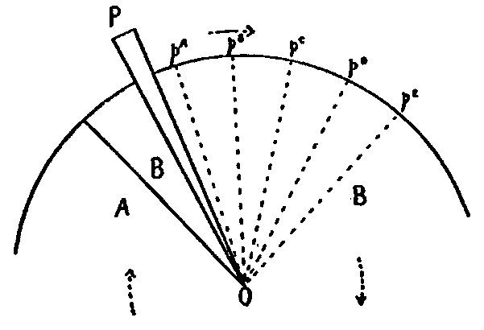
Fig. 1.
If, now, the eye which watches this process is kept from moving, these relations will be reproduced on the retina. For the retinal area corresponding to the triangle pAOpB, there will be less stimulation from the sector A than there would have been if the pendulum had not partly hidden it. That is, the triangle in question will not be seen of the fused color of A and B, but will lose a part of its A-component. In the same way the triangle pBOpC will lose a part of its B-component; and so on alternately. And by as much as either component is lost, by so much will the color of the intercepting pendulum (in this case, black) be present to make up the deficiency.
We see, then, that the purely geometrical relations of disc [177]and pendulum necessarily involve for vision a certain banded appearance of the area which is swept by the pendulum, if the eye is held at rest. We have now to ask, Are these the bands which we set out to study? Clearly enough these geometrically inevitable bands can be exactly calculated, and their necessary changes formulated for any given change in the speed or width of A, B, or P. If it can be shown that they must always vary just as the bands we set out to study are observed to vary, it will be certain that the bands of the illusion have no other cause than the interception of retinal stimulation by the sectors of the disc, due to the purely geometrical relations between the sectors and the pendulum which hides them.
And exactly this will be found to be the case. The widths of the bands of the illusion depend on the speed and widths of the sectors and of the pendulum used; the colors and intensities of the bands depend on the colors and intensities of the sectors (and of the pendulum); while the total number of bands seen at one time depends on all these factors.
In the first place, it is to be noted that if the pendulum proceeds from left to right, for instance, before the disc, that portion of the latter which lies in front of the advancing rod will as yet not have been hidden by it, and will therefore be seen of the unmodified, fused color. Only behind the pendulum, where rotating sectors have been hidden, can the bands appear. And this accords with the first observation (p. 167), that "The rod appears to leave behind it on the disc a number of parallel bands." It is as if the rod, as it passes, painted them on the disc.
Clearly the bands are not formed simultaneously, but one after another as the pendulum passes through successive positions. And of course the newest bands are those which lie immediately behind the pendulum. It must now be asked, Why, if these bands are produced successively, are they seen simultaneously? To this, Jastrow and Moorehouse have given the answer, "We are dealing with the phenomena of after-images." The bands persist as after-images while new ones [178]are being generated. The very oldest, however, disappear pari-passu with the generation of the new. We have already seen (p. 169) how well these authors have shown this, in proving that the number of bands seen, multiplied by the rate of rotation of the disc, is a constant bearing some relation to the duration of a retinal image of similar brightness to the bands. It is to be noted now, however, that as soon as the rod has produced a band and passed on, the after-image of that band on the retina is exposed to the same stimulation from the rotating disc as before, that is, is exposed to the fused color; and this would tend to obliterate the after-images. Thus the oldest bands would have to disappear more quickly than an unmolested after-image of the same original brightness. We ought, then, to see somewhat fewer bands than the formula of Jastrow and Moorehouse would indicate. In other words, we should find on applying the formula that the 'duration of the after-image' must be decreased by a small amount before the numerical relations would hold. Since Jastrow and Moorehouse did not determine the relation of the after-image by an independent measurement, their work neither confirms nor refutes this conjecture.
What they failed to emphasize is that the real origin of the bands is not the intermittent appearances of the rod opposite the lighter sector, as they seem to believe, but the successive eclipse by the rod of each sector in turn.
If, in Fig. 2, we have a disc (composed of a green and a red sector) and a pendulum, moving to the right, and if P represents the pendulum at the instant when the green sector AOB is beginning to pass behind it, it follows that some other position farther to the right, as P', will represent the pendulum just as the last part of the sector is passing out from behind it. Some part at least of the sector has been hidden during the entire interval in which the pendulum was passing from P to P'. Clearly the arc BA' measures the band BOA', in which the green stimulation from the sector AOB is thus at least partially suppressed, that is, on which a relatively red band is being produced. If the illusion really depends on the successive eclipse of the sectors by the pendulum, as has been described, [179]it will be possible to express BA', that is, the width of a band, in terms of the widths and rates of movement of the two sectors and of the pendulum. This expression will be an equation, and from this it will be possible to derive the phenomena which the bands of the illusion actually present as the speeds of disc and rod, and the widths of sectors and rod, are varied.
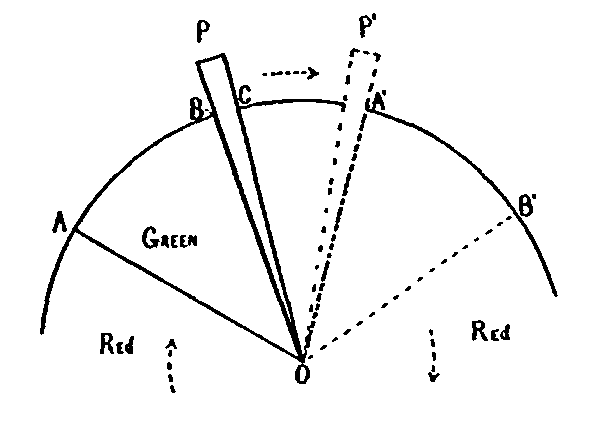
Fig 2.
Now in Fig. 2 let the
| width of the band (i.e., the arc BA') | = Z |
| speed of pendulum | = r degrees per second; |
| speed of disc | = r' degrees per second; |
| width of sector AOB (i.e., the arc AB) | = s degrees of arc; |
| width of pendulum (i.e., the arc BC) | = p degrees of arc; |
| time in which the pendulum moves from P to P' | = t seconds. |
Now
| t = | arc CA' | ; |
| r |
but, since in the same time the green sector AOB moves from B to B', we know also that
| t = | arc BB' | ; |
| r' |
then
| arc CA' | = | arc BB' |
| r | r' |
or, omitting the word "arc" and clearing of fractions,[180]
r'(CA') = r(BB').
But now
CA' = BA' - BC,
while
BA' = Z and BC = p;
therefore
CA' = Z-p.
Similarly
BB' = BA' + A'B' = Z + s.
Substituting for CA' and BB' their values, we get
r'(Z-p) = r(Z+s),
or
Z(r' - r) = rs + pr',
or
| Z = | rs + pr' |
| r' - r . |
It is to be remembered that s is the width of the sector which undergoes eclipse, and that it is the color of that same sector which is subtracted from the band Z in question. Therefore, whether Z represents a green or a red band, s of the formula must refer to the oppositely colored sector, i.e., the one which is at that time being hidden.
We have now to take cognizance of an item thus far neglected. When the green sector has reached the position A'B', that is, is just emerging wholly from behind the pendulum, the front of the red sector must already be in eclipse. The generation of a green band (red sector in eclipse) will have commenced somewhat before the generation of the red band (green sector in eclipse) has ended. For a moment the pendulum will lie over parts of both sectors, and while the red band ends at point A', the green band will have already commenced at a point somewhat to the left (and, indeed, to the left by a trifle more than the width of the pendulum). In other words, the two bands overlap.
This area of overlapping may itself be accounted a band, since here the pendulum hides partly red and partly green, and obviously the result for sensation will not be the same as for those areas where red or green alone is hidden. We may call [181]the overlapped area a 'transition-band,' and we must then ask if it corresponds to the 'transition-bands' spoken of in the observations.
Now the formula obtained for Z includes two such transition-bands, one generated in the vicinity of OB and one near OA'. To find the formula for a band produced while the pendulum conceals solely one, the oppositely colored sector (we may call this a 'pure-color' band and let its width = W), we must find the formula for the width (w) of a transition-band, multiply it by two, and subtract the product from the value for Z already found.
The formula for an overlapping or transition-band can be readily found by considering it to be a band formed by the passage behind P of a sector whose width is zero. Thus if, in the expression for Z already found, we substitute zero for s, we shall get w; that is,
| w = | o + pr' | = | pr' |
| r' - r | r' - r |
Since
W = Z - 2w,
we have
| W = | rs + pr' | = 2 | pr' | , |
| r' - r | r' - r |
or
| W = | rs - pr' (1) |
| r' - r |
Fig. 3 shows how to derive W directly (as Z was derived) from the geometrical relations of pendulum and sectors. Let r, r', s, p, and t, be as before, but now let
width of the band (i.e., the arc BA') = W;
that is, the band, instead of extending as before from where P begins to hide the green sector to where P ceases to hide the same, is now to extend from the point at which P ceases to hide any part of the red sector to the point where it just commences again to hide the same.
Then
| t = | W + p , |
| r |
and
| t = | W + s , |
| r' |
therefore
| W + p | = | W + s | , |
| r | r' |
r'(W + p) = r(W + s) ,
W (r' - r) = rs - pr' ,
and, again,
| W = | rs - pr' |
| r' - r |
Before asking if this pure-color band W can be identified with the bands observed in the illusion, we have to remember that the value which we have found for W is true only if disc and pendulum are moving in the same direction; whereas the illusion-bands are observed indifferently as disc and pendulum move in the same or in opposite directions. Nor is any difference in their width easily observable in the two cases, although it is to be borne in mind that there may be a difference too small to be noticed unless some measuring device is used.
From Fig. 4 we can find the width of a pure-color band (W) when pendulum and disc move in opposite directions. The letters are used as in the preceding case, and W will include no transition-band.[183]
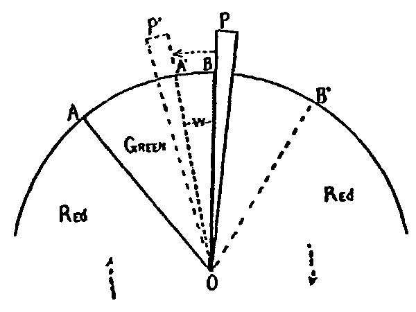
Fig. 4.
We have
| t = | W + p , |
| r |
and
| t = | s - W , |
| r' |
r'(W + p) = r(s - W) ,
W(r' + r) = rs - pr' ,
| W = | rs - pr' .(2) |
| r' + r |
Now when pendulum and disc move in the same direction,
| W = | rs - pr' , | (1) |
| r' - r |
so that to include both cases we may say that
| W = | rs - pr' .(3) |
| r' ± r |
The width (W) of the transition-bands can be found, similarly, from the geometrical relations between pendulum and disc, as shown in Figs. 5 and 6. In Fig. 5 rod and disc are moving in the same direction, and
w = BB'.
| t = | w - p , |
| r |
| t = | w | , |
| r' |
r'(w-p) = rw,
w (r'-r) = pr',
| w = | pr' | .(4) |
| r'- r |
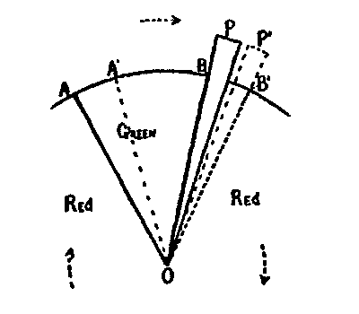
Fig. 5.
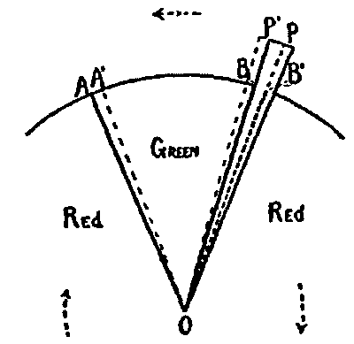
Fig. 6.
In Fig. 6 rod and disc are moving in opposite directions, and
w = BB',
| t = | p - w | , |
| r |
| t = | w | , |
| r' |
r'(p - w) = rw ,
w(r' + r) = pr' ,
| w = | pr' (5) |
| r' + r . |
So that to include both cases (of movement in the same or in opposite directions), we have that
| w = | pr' .(6) |
| r' ± r |
[185]Will these formulas, now, explain the phenomena which the bands of the illusion actually present in respect to their width?
1. The first phenomenon noticed (p. 173, No. 1) is that "If the two sectors of the disc are unequal in arc, the bands are unequal in width; and the narrower bands correspond in color to the larger sector. Equal sectors give equally broad bands."
In formula 3, W represents the width of a band, and s the width of the oppositely colored sector. Therefore, if a disc is composed, for example, of a red and a green sector, then
| W(red) = | rs(green) - pr' , |
| r' ± r |
and
| W(green) = | rs(red) - pr' , |
| r' ± r |
therefore, by dividing,
| W(red) | = | rs(green) - pr' . |
| W(green) | rs(red) - pr' |
From this last equation it is clear that unless s(green) = s(red), W(red) cannot equal W(green). That is, if the two sectors are unequal in width, the bands are also unequal. This was the first feature of the illusion above noted.
Again, if one sector is larger, the oppositely colored bands will be larger, that is, the light-colored bands will be narrower; or, in other words, 'the narrower bands correspond in color to the larger sector.'
Finally, if the sectors are equal, the bands must also be equal.
So far, then, the bands geometrically deduced present the same variations as the bands observed in the illusion.
2. Secondly (p. 174, No. 2), "The faster the rod moves the broader become the bands, but not in like proportions; broad bands widen relatively more than narrow ones." The speed of the rod or pendulum, in degrees per second, equals r. Now if W increases when r increases, DτW must be positive or[186] greater than zero for all values of r which lie in question.
Now
| W = | rs - pr' , |
| r' ± r |
and
| DτW = | (r' ± r)s + (rs - pr') , |
| (r ± r')² |
or reduced,
| = | r'(s ± p) |
| (r' ± r)² |
Since r' (the speed of the disc) is always positive, and s is always greater than p (cf. p. 173), and since the denominator is a square and therefore positive, it follows that
DτW > 0
or that W increases if r increases.
Furthermore, if W is a wide band, s is the wider sector. The rate of increase of W as r increases is
| DτW = | r'(s ± p) |
| (r' ± r)² |
which is larger if s is larger (s and r being always positive). That is, as r increases, 'broad bands widen relatively more than narrow ones.'
3. Thirdly (p. 174, No. 3), "The width of The bands increases if the speed of the revolving disc decreases." This speed is r'. That the observed fact is equally true of the geometrical bands is clear from inspection, since in
| W = | rs - pr' , |
| r' ± r |
as r' decreases, the denominator of the right-hand member decreases while the numerator increases.
4. We now come to the transition-bands, where one color shades over into the other. It was observed (p. 174, No. 4) that, "These partake of the colors of both the sectors on the disc. The wider the rod the wider the transition-bands."[187]
We have already seen (p. 180) that at intervals the pendulum conceals a portion of both the sectors, so that at those points the color of the band will be found not by deducting either color alone from the fused color, but by deducting a small amount of both colors in definite proportions. The locus of the positions where both colors are to be thus deducted we have provisionally called (in the geometrical section) 'transition-bands.' Just as for pure-color bands, this locus is a radial sector, and we have found its width to be (formula 6, p. 184)
| W = | pr' | , |
| r' ± r |
Now, are these bands of bi-color deduction identical with the transition-bands observed in the illusion? Since the total concealing capacity of the pendulum for any given speed is fixed, less of either color can be deducted for a transition-band than is deducted of one color for a pure-color band. Therefore, a transition-band will never be so different from the original fusion-color as will either 'pure-color' band; that is, compared with the pure color-bands, the transition-bands will 'partake of the colors of both the sectors on the disc.' Since
| W = | pr' | , |
| r' ± r |
it is clear that an increase of p will give an increase of w; i.e., 'the wider the rod, the wider the transition-bands.'
Since r is the rate of the rod and is always less than r', the more rapidly the rod moves, the wider will be the transition-bands when rod and disc move in the same direction, that is, when
| W = | pr' | , |
| r' - r |
But the contrary will be true when they move in opposite directions, for then
| W = | pr' | , |
| r' + r |
that is, the larger r is, the narrower is w.[188]
The present writer could not be sure whether or not the width of transition-bands varied with r. He did observe, however (page 174) that 'the transition-bands are broader when rod and disc move in the same, than when in opposite directions.' This will be true likewise for the geometrical bands, for, whatever r (up to and including r = r'),
| pr' | > | pr' |
| r'- r | r' + r |
In the observation, of course, r, the rate of the rod, was never so large as r', the rate of the disc.
5. We next come to an observation (p. 174, No. 5) concerning the number of bands seen at any one time. The 'geometrical deduction of the bands,' it is remembered, was concerned solely with the amount of color which was to be deducted from the fused color of the disc. W and w represented the widths of the areas whereon such deduction was to be made. In observation 5 we come on new considerations, i.e., as to the color from which the deduction is to be made, and the fate of the momentarily hidden area which suffers deduction, after the pendulum has passed on.
We shall best consider these matters in terms of a concept of which Marbe3 has made admirable use: the 'characteristic effect.' The Talbot-Plateau law states that when two or more periodically alternating stimulations are given to the retina, there is a certain minimal rate of alternation required to produce a just constant sensation. This minimal speed of succession is called the critical period. Now, Marbe calls the effect on the retina of a light-stimulation which lasts for the unit of time, the 'photo-chemical unit-effect.' And he says (op. cit., S. 387): "If we call the unit of time 1σ, the sensation for each point on the retina in each unit of time is a function of the simultaneous and the few immediately preceding unit-effects; this is the characteristic effect."
We may now think of the illusion-bands as being so and so many different 'characteristic effects' given simultaneously in [189]so and so many contiguous positions on the retina. But so also may we think of the geometrical interception-bands, and for these we can deduce a number of further properties. So far the observed illusion-bands and the interception-bands have been found identical, that is, in so far as their widths under various conditions are concerned. We have now to see if they present further points of identity.
As to the characteristic effects incident to the interception-bands; in Fig. 7 (Plate V.), let A'C' represent at a given moment M, the total circumference of a color-disc, A'B' represent a green sector of 90°, and B'C' a red complementary sector of 270°. If the disc is supposed to rotate from left to right, it is clear that a moment previous to M the two sectors and their intersection B will have occupied a position slightly to the left. If distance perpendicularly above A'C' is conceived to represent time previous to M, the corresponding previous positions of the sectors will be represented by the oblique bands of the figure. The narrow bands (GG, GG) are the loci of the successive positions of the green sector; the broader bands (RR, RR), of the red sector.
In the figure, 0.25 mm. vertically = the unit of time = 1σ. The successive stimulations given to the retina by the disc A'C', say at a point A', during the interval preceding the moment M will be
| green | 10σ, |
| red | 30σ, |
| green | 10σ, |
| red | 30σ, etc. |
Now a certain number of these stimulations which immediately precede M will determine the characteristic effect, the fusion color, for the point A' at the moment M. We do not know the number of unit-stimulations which contribute to this characteristic effect, nor do we need to, but it will be a constant, and can be represented by a distance x = A'A above the line A'C'. Then A'A will represent the total stimulus which determines the characteristic effect at A'. Stimuli earlier than A are no longer represented in the after-image. AC is parallel to A'C', and [190]the characteristic effect for any point is found by drawing the perpendicular at that point between the two lines A'C and AC.
Just as the movement of the disc, so can that of the concealing pendulum be represented. The only difference is that the pendulum is narrower, and moves more slowly. The slower rate is represented by a steeper locus-band, PP', than those of the swifter sectors.
We are now able to consider geometrically deduced bands as 'characteristic effects,' and we have a graphic representation of the color-deduction determined by the interception of the pendulum. The deduction-value of the pendulum is the distance (xy) which it intercepts on a line drawn perpendicular to A'C'.
Lines drawn perpendicular to A'C' through the points of intersection of the locus-band of the pendulum with those of the sectors will give a 'plot' on A'C' of the deduction-bands. Thus from 1 to 2 the deduction is red and the band green; from 2 to 3 the deduction is decreasingly red and increasingly green, a transition-band; from 3 to 4 the deduction is green and the band red; and so forth.
We are now prepared to continue our identification of these geometrical interception-bands with the bands observed in the illusion. It is to be noted in passing that this graphic representation of the interception-bands as characteristic effects (Fig. 7) is in every way consistent with the previous equational treatment of the same bands. A little consideration of the figure will show that variations of the widths and rates of sectors and pendulum will modify the widths of the bands exactly as has been shown in the equations.
The observation next at hand (p. 174, No. 5) is that "The total number of bands seen at any one time is approximately constant, howsoever the widths of the sectors and the width and rate of the rod may vary. But the number of bands is inversely proportional (Jastrow and Moorehouse) to the time of rotation of the disc; that is, the faster the disc, the more bands."
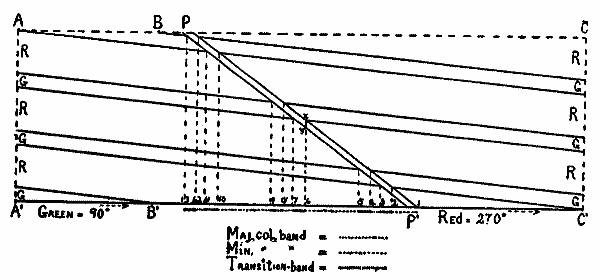
Fig. 7.
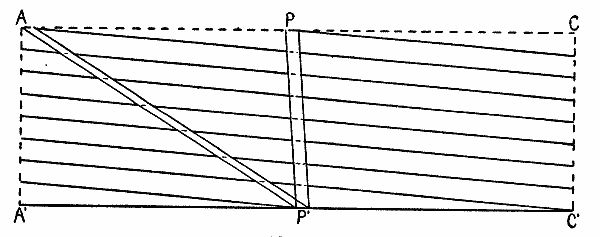
Fig. 8.
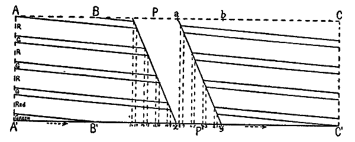
Fig. 9.
[191]This is true, point for point, of the interception-bands of Fig. 7. It is clear that the number of bands depends on the number of intersections of PP' with the several locus-bands RR, GG, RR, etc. Since the two sectors are complementary, having a constant sum of 360°, their relative widths will not affect the number of such intersections. Nor yet will the width of the rod P affect it. As to the speed of P, if the locus-bands are parallel to the line A'C', that is, of the disc moved infinitely rapidly, there would be the same number of intersections, no matter what the rate of P, that is, whatever the obliqueness of PP'. But although the disc does not rotate with infinite speed, it is still true that for a considerable range of values for the speed of the pendulum the number of intersections is constant. The observations of Jastrow and Moorehouse were probably made within such a range of values of r. For while their disc varied in speed from 12 to 33 revolutions per second, that is, 4,320 to 11,880 degrees per second, the rod was merely passed to and fro by hand through an excursion of six inches (J. and M., op. cit., pp. 203-5), a method which could have given no speed of the rod comparable to that of the disc. Indeed, their fastest speed for the rod, to calculate from certain of their data, was less than 19 inches per second.
The present writer used about the same rates, except that for the disc no rate below 24 revolutions per second was employed. This is about the rate which v. Helmholtz4 gives as the slowest which will yield fusion from a bi-sectored disc in good illumination. It is hard to imagine how, amid the confusing flicker of a disc revolving but 12 times in the second, Jastrow succeeded in taking any reliable observations at all of the bands. Now if, in Fig. 8 (Plate V.), 0.25 mm. on the base-line equals one degree, and in the vertical direction equals 1σ, the locus-bands of the sectors (here equal to each other in width), make such an angle with A'C' as represents the disc to be rotating exactly 36 times in a second. It will be seen that the speed of the rod may vary from that shown by the locus P'P to that shown by P'A; and the speeds represented are respectively 68.96 and 1,482.64 degrees per second; and throughout this range of speeds the locus-band of P intercepts the loci of the sectors always the same number of times. Thus, [192]if the disc revolves 36 times a second, the pendulum may move anywhere from 69 to 1,483 degrees per second without changing the number of bands seen at a time.
And from the figure it will be seen that this is true whether the pendulum moves in the same direction as the disc, or in the opposite direction. This range of speed is far greater than the concentrically swinging metronome of the present writer would give. The rate of Jastrow's rod, of 19 inches per second, cannot of course be exactly translated into degrees, but it probably did not exceed the limit of 1,483. Therefore, although beyond certain wide limits the rate of the pendulum will change the total number of deduction-bands seen, yet the observations were, in all probability (and those of the present writer, surely), taken within the aforesaid limits. So that as the observations have it, "The total number of bands seen at any one time is approximately constant, howsoever ... the rate of the rod may vary." On this score, also, the illusion-bands and the deduction-bands present no differences.
But outside of this range it can indeed be observed that the number of bands does vary with the rate of the rod. If this rate (r) is increased beyond the limits of the previous observations, it will approach the rate of the disc (r'). Let us increase r until r = r'. To observe the resulting bands, we have but to attach the rod or pendulum to the front of the disc and let both rotate together. No bands are seen, i.e., the number of bands has become zero. And this, of course, is just what should have been expected from a consideration of the deduction-bands in Fig. 8.
One other point in regard to the total number of bands seen: it was observed (page 174, No. 5) that, "The faster the disc, the more bands." This too would hold of the deduction-bands, for the faster the disc and sectors move, the narrower and more nearly parallel to A'C' (Fig. 7) will be their locus-bands, and the more of these bands will be contained within the vertical distance A'A (or C'C), which, it is remembered, represents the age of the oldest after-image which still contributes to the characteristic effect. PP' will therefore intercept more loci of sectors, and more deduction-bands will be generated.[193]
6. "The colors of the bands (page 175, No. 6) approximate those of the two sectors; the transition-bands present the adjacent 'pure colors' merging into each other. But all the bands are modified in favor of the moving rod. If, now, the rod is itself the same in color as one of the sectors, the bands which should have been of the other color are not to be distinguished from the fused color of the disc when no rod moves before it."
These items are equally true of the deduction-bands, since a deduction of a part of one of the components from a fused color must leave an approximation to the other component. And clearly, too, by as much as either color is deducted, by so much must the color of the pendulum itself be added. So that, if the pendulum is like one of the sectors in color, whenever that sector is hidden the deduction for concealment will exactly equal the added allowance for the color of the pendulum, and there will be no bands of the other color distinguishable from the fused color of the disc.
It is clear from Fig. 7 why a transition-band shades gradually from one pure-color band over into the other. Let us consider the transition-band 2-3 (Fig. 7). Next it on the right is a green band, on the left a red. Now at the right-hand edge of the transition-band it is seen that the deduction is mostly red and very little green, a ratio which changes toward the left to one of mostly green and very little red. Thus, next to the red band the transition-band will be mostly red, and it will shade continuously over into green on the side adjacent to the green band.
7. The next observation given (page 175, No. 7) was that, "The bands are more strikingly visible when the two sectors differ considerably in luminosity." This is to be expected, since the greater the contrast, whether in regard to color, saturation, or intensity, between the sectors, the greater will be such contrast between the two deductions, and hence the greater will it be between the resulting bands. And, therefore, the bands will be more strikingly distinguishable from each other, that is, 'visible.'
8. "A broad but slowly-moving rod shows the bands lying over itself. Other bands can also be seen behind it on the disc."[194]
In Fig. 9 (Plate V.) are shown the characteristic effects produced by a broad and slowly-moving rod. Suppose it to be black. It can be so broad and move so slowly that for a space the characteristic effect is largely black (Fig. 9 on both sides of x). Specially will this be true between x and y, for here, while the pendulum contributes no more photo-chemical unit-effects, it will contribute the newer one, and howsoever many unit-effects go to make up the characteristic effect, the newer units are undoubtedly the more potent elements in determining this effect. The old units have partly faded. One may say that the newest units are 'weighted.'
Black will predominate, then, on both sides of x, but specially between x and y. For a space, then, the characteristic effect will contain enough black to yield a 'perception of the rod.' The width of this region depends on the width and speed of the rod, but in Fig. 9 it will be roughly coincident with xy, though somewhat behind (to the left of) it. The characteristic will be either wholly black, as just at x, or else largely black with the yet contributory after-images (shown in the triangle aby). Some bands will thus be seen overlying the rod (1-8), and others lying back of it (9-16).
We have now reviewed all the phenomena so far enumerated of the illusion-bands, and for every case we have identified these bands with the bands which must be generated on the retina by the mere concealment of the rotating sectors by the moving rod. It has been more feasible thus far to treat these deduction-bands as if possibly they were other than the bands of the illusion; for although the former must certainly appear on the retina, yet it was not clear that the illusion-bands did not involve additional and complicated retinal or central processes. The showing that the two sets of bands have in every case identical properties, shows that they are themselves identical. The illusion-bands are thus explained to be due merely to the successive concealment of the sectors of the disc as each passes in turn behind the moving pendulum. The only physiological phenomena involved in this explanation have been the persistence as after-images of retinal stimulations, and the summation of these persisting images into characteristic effects—both familiar phenomena.[195]
From this point on it is permissible to simplify the point of view by accounting the deduction-bands and the bands of the illusion fully identified, and by referring to them under either name indifferently. Figs. 1 to 9, then, are diagrams of the bands which we actually observe on the rotating disc. We have next briefly to consider a few special complications produced by a greater breadth or slower movement of the rod, or by both together. These conditions are called 'complicating' not arbitrarily, but because in fact they yield the bands in confusing form. If the rod is broad, the bands appear to overlap; and if the rod moves back and forth, at first rapidly but with decreasing speed, periods of mere confusion occur which defy description; but the bands of the minor color may be broader or may be narrower than those of the other color.
9. If the rod is broad and moves slowly, the narrower bands are like colored, not with the broader, as before, but with the narrower sector.
The conditions are shown in Fig. 9. From 1 to 2 the deduction is increasingly green, and yet the remainder of the characteristic effect is also mostly green at 1, decreasingly so to the right, and at 2 is preponderantly red; and so on to 8; while a like consideration necessitates bands from x to 16. All the bands are in a sense transition-bands, but 1-2 will be mostly green, 2-3 mostly red, and so forth. Clearly the widths of the bands will be here proportional to the widths of the like-colored sectors, and not as before to the oppositely colored.
It may reasonably be objected that there should be here no bands at all, since the same considerations would give an increasingly red band from B' to A', whereas by hypothesis the disc rotates so fast as to give an entirely uniform color. It is true that when the characteristic effect is A' A entire, the fusion-color is so well established as to assimilate a fresh stimulus of either of the component colors, without itself being modified. But on the area from 1 to 16 the case is different, for here the fusion-color is less well established, a part of the essential colored units having been replaced by black, the color of the [196]rod; and black is no stimulation. So that the same increment of component color, before ineffective, is now able to modify the enfeebled fusion-color.
Observation confirms this interpretation, in that band y-1 is not red, but merely the fusion-color slightly darkened by an increment of black. Furthermore, if the rod is broad and slow in motion, but white instead of black, no bands can be seen overlying the rod. For here the small successive increments which would otherwise produce the bands 1-2, 2-3, etc., have no effect on the remainder of the fusion-color plus the relatively intense increment of white.
It may be said here that the bands 1-2, 2-3, etc., are less intense than the bands x-9, 9-10, etc., because there the recent or weighted unit-effects are black, while here they are the respective colors. Also the bands grow dimmer from x-9 to 15-16, that is, as they become older, for the small increment of one color which would give band 15-16 is almost wholly overridden by the larger and fresher mass of stimulation which makes for mere fusion. This last is true of the bands always, whatever the rate or width of the rod.
10. In general, equal sectors give equal bands, but if one sector is considerably more intense than the other, the bands of the brighter color will, for a broad and swiftly-moving rod, be the broader. The brighter sector, though equal in width to the other, contributes more toward determining the fusion-color; and this fact is represented by an intrusion of the stronger color into the transition-bands, at the expense of the weaker. For in these, even the decreased amount of the stronger color, on the side next a strong-color band, is yet more potent than the increased amount of the feebler color. In order to observe this fact one must have the rod broad, so as to give a broad transition-band on which the encroachment of the stronger color may be evident. The process is the same with a narrow rod and narrow transition-bands, but, being more limited in extent, it is less easily observed. The rod must also move rapidly, for otherwise the bands overlap and become obscure, as will be seen in the next paragraph.
11. If the disc consists of a broad and narrow sector, and if [197]the rod is broad and moves at first rapidly but more slowly with each new stroke, there are seen at first broad, faint bands of the minority-color, and narrow bands of the majority-color. The former grow continuously more intense as the rod moves more slowly, and grow narrower in width down to zero; whereupon the other bands seem to overlap, the overlapped part being doubly deep in color, while the non-overlapped part has come to be more nearly the color of the minor sector. The overlapped portion grows in width. As the rate of the rod now further decreases, a confused state ensues which cannot be described. When, finally, the rod is moving very slowly, the phenomena described above in paragraph 9 occur.
The successive changes in appearance as the rod moves more and more slowly, are due to the factors previously mentioned, and to one other which follows necessarily from the given conditions but has not yet been considered. This is the last new principle in the illusion which we shall have to take up. Just as the transition-bands are regions where two pure-color bands overlap, so, when the rod is broad and moves slowly, other overlappings occur to produce more complicated arrangements.
These can be more compactly shown by diagram than by words. Fig. 10, a, b and c (Plate VI.), show successively slower speeds of the rod, while all the other factors are the same. In practice the tendency is to perceive the transition-bands as parts of the broad faint band of the minor color, which lies between them. It can be seen, then, how the narrow major-color bands grow only slightly wider (Fig. 10, a, b) until they overlap (c); how the broad minor-color bands grow very narrow and more intense in color, there being always more of the major color deducted (in b they are reduced exactly to zero, z, z, z). In c the major-color bands overlap (o, o, o) to give a narrow but doubly intense major-color band since, although with one major, two minor locus-bands are deducted. The other bands also overlap to give complicated combinations between the o-bands. These mixed bands will be, in part at least, minor-color bands (q, q, q), since, although a minor locus-band is here deducted, yet nearly two major locus-bands are also taken, leaving the minor color to predominate. This corresponds with the observation [198]above, that, ' ... the non-overlapped part has come to be more nearly the color of the minor sector.'
A slightly slower speed of the rod would give an irreducible confusion of bands, since the order in which they overlap becomes very complicated. Finally, when the rod comes to move very slowly, as in Fig. 9, the appearance suffers no further change, except for a gradual narrowing of all the bands, up to the moment when the rod comes to rest.
It is clear that this last principle adduced, of the multiple overlapping of bands when the rod is broad and moves slowly, can give for varying speeds of the rod the greatest variety of combinations of the bands. Among these is to be included that of no bands at all, as will be understood from Fig. 11 (Plate VII). And in fact, a little practice will enable the observer so to adjust the rate of the (broad) rod to that of the disc that no bands are observable. But care must be taken here that the eye is rigidly fixated and not attracted into movement by the rod, since of course if the eye moves with the rod, no bands can be seen, whatever the rate of movement may be.
Thus, all the phenomena of these illusion-bands have been explained as the result solely of the hiding by the rod of successive sectors of the disc. The only physiological principles involved are those (1) of the duration of after-images, and (2) of their summation into a characteristic effect. It may have seemed to the reader tedious and unnecessary so minutely to study the bands, especially the details last mentioned; yet it was necessary to show how all the possible observable phenomena arise from the purely geometrical fact that sectors are successively hidden. Otherwise the assertions of previous students of the illusion, that more intricate physiological processes are involved, could not have been refuted. The present writer does not assert that no processes like contrast, induction, etc., come into play to modify somewhat the saturation, etc., of the colors in the bands. It must be here as in every other case of vision. But it is now demonstrated that these remoter physiological processes contribute nothing essential to the illusion. For these could be dispensed with and the illusion would still remain.
[199]If any reader still suspects that more is involved than the persistence after-images, and their summation into a characteristic effect, he will find it interesting to study the illusion with a camera. The 'physiological' functions referred to belong as well to the dry-plate as to the retina, while the former exhibits, presumably, neither contrast nor induction. The illusion-bands can be easily photographed in a strong light, if white and black sectors are used in place of colored ones. It is best to arrange the other variable factors so as to make the transition-bands as narrow as possible (p. 174, No. 4). The writer has two negatives which show the bands very well, although so delicately that it is not feasible to try to reproduce them.
The influence of the width of sector is prettily shown by a special disc like that shown in Fig. 12 (Plate VII.), where the colors are dark-red and light-green, the shaded being the darker sector. A narrow rod passed before such a disc by hand at a moderate rate will give over the outer ring equally wide green and red bands; but on the inner rings the red bands grow narrower, the green broader.
The fact that the bands are not 'images of the rod' can be shown by another disc (Fig. 13, Plate VII.). In all three rings the lighter (green) sector is 60° wide, but disposed on the disc as shown. The bands are broken into zigzags. The parts over the outer ring lag behind those over the middle, and these behind those over the inner ring—'behind,' that is, farther behind the rod.
Another effective variation is to use rods alike in color with one or the other of the sectors. Here it is clear that when the rod hides the oppositely-colored sector, the deduction of that color is replaced (not by black, as happens if the rod is black) but by the very color which is already characteristic of that band. But when the rod hides the sector of its own color, the deduction is replaced by the very same color. Thus, bands like colored with the rod gain in depth of tone, while the other pure-color bands present simply the fusion-color.[200]
If one produce the illusion by using for rod, not the pendulum of a metronome, but a black cardboard sector on a second color-mixer placed in front of the first and rotating concentrically with it, that is, with the color-disc, one will observe with the higher speeds of the rod which are now obtainable several further phenomena, all of which follow simply from the geometrical relations of disc and rod (now a rotating sector), as discussed above. The color-mixer in front, which bears the sector (let it still be called a 'rod'), should rotate by hand and independently of the disc behind, whose two sectors are to give the bands. The sectors of the disc should now be equal, and the rod needs to be broader than before, say 50° or 60°, since it is to revolve very rapidly.
First, let the rod and disc rotate in the same direction, the disc at its former rate, while the rod begins slowly and moves faster and faster. At first there is a confused appearance of vague, radial shadows shuffling to and fro. This is because the rod is broad and moves slowly (cf. p. 196, paragraph II).
As the velocity of the rod increases, a moment will come when the confusing shadows will resolve themselves into four (sometimes five) radial bands of one color with four of the other color and the appropriate transition-bands between them. The bands of either color are symmetrically disposed over the disc, that is, they lie at right angles to one another (if there are five bands they lie at angles of 72°, etc.). But this entire system of bands, instead of lying motionless over the disc as did the systems hitherto described, itself rotates rapidly in the opposite direction from disc to rod. As the rod rotates forward yet faster, no change is seen except that the system of bands moves backward more and more slowly. Thus, if one rotate the rod with one's own hand, one has the feeling that the backward movement of the bands is an inverse function of the increase in velocity of the rod. And, indeed, as this velocity still increases, the bands gradually come to rest, although both the disc and the rod are rotating rapidly.
But the system of bands is at rest for only a particular rate of the rod. As the latter rotates yet faster, the system of bands now commences to rotate slowly forward (with the disc and rod), then more and more rapidly (the velocity of the rod still increasing), until it finally disintegrates and the bands vanish into the confused flicker of shadows with which the phenomenon commenced.
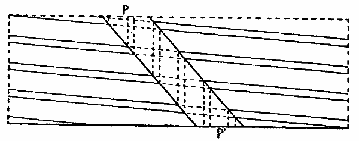
Fig. 11.
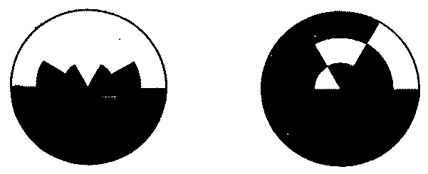
Figs. 12. and 13.
[201]This cycle now plays itself off in the reverse order if the speed of the rod is allowed gradually to decrease. The bands appear first moving forward, then more slowly till they come to rest, then moving backward until finally they relapse into confusion.
But let the rate of the rod be not decreased but always steadily increased. The bands will reappear, this time three of each color with six transition-bands. As before, the system at first rotates backward, then lies still, and then moves forward until it is dissolved. As the rod moves still faster, another system appears, two bands of each color forming a diameter and the two diameters lying at right angles. This system goes through the same cycle of movements. When the increased velocity of the rod destroys this system, another appears having one band of each color, the two lying on opposite sides of the center. The system goes through the same phases and is likewise dissolved. Now, at this point the rod will be found to be rotating at the same speed as the disc itself.
The explanation of the phenomenon is simple. The bands are not produced by a single interruption of the vision of a sector by a rod, but each band is made up of successive superpositions on the retina of many such single-interruption bands. The overlapping of bands has been already described (cf. Fig. 10 and pp. 196-198); superposition depends of course on the same principle.
At the moment when a system of four bands of either color is seen at rest, the rod is moving just one fifth as rapidly as the disc; so that, while the rod goes once around, either sector, say the green one, will have passed behind it exactly four times, and at points which lie 90° apart. Thus, four red bands are produced which lie at right angles to one another. But the disc is revolving at least 24 times in a second, the rod therefore [202]at least 4.8 times, so that within the interval of time during which successive stimuli still contribute to the characteristic effect the rod will have revolved several times, and with each revolution four red bands at right angles to one another will have been formed. And if the rod is moving exactly one fifth as fast as the disc, each new band will be generated at exactly that position on the disc where was the corresponding band of the preceding four. The system of bands thus appear motionless on the disc.
The movement of the system arises when the rate of the rod is slightly less or more than one fifth that of the disc. If slightly less, the bands formed at each rotation of the rod do not lie precisely over those of the previous rotation, but a little to the rear of them. The new set still lies mostly superposed on the previous sets, and so fuses into a regular appearance of bands, but, since each new increment lags a bit behind, the entire system appears to rotate backward. The apparatus is actually a cinematograph, but one which gives so many pictures in the second that they entirely fuse and the strobic movement has no trace of discontinuity.
If the rod moves a trifle more than one fifth as fast as the disc, it is clear that the system of bands will rotate forward, since each new set of bands will lie slightly ahead of the old ones with which it fuses. The farther the ratio between the rates of rod and disc departs from exactly 1:5, whether less or greater, the more rapid will the strobic movement, backward or forward, be; until finally the divergence is too great, the newly forming bands lie too far ahead or behind those already formed to fuse with them and so be apperceived as one system, and so the bands are lost in confusion. Thus the cycle of movement as observed on the disc is explained. As the rate of the rod comes up to and passes one fifth that of the disc, the system of four bands of each color forms in rapid backward rotation. Its movement grows slower and slower, it comes to rest, then begins to whirl forward, faster and faster, till it breaks up again.
The same thing happens as the rate of the rod reaches and exceeds just one fourth that of the disc. The system contains three bands of each color. The system of two bands of each [203]color corresponds to the ratio 1:3 between the rates, while one band of each color (the two lying opposite) corresponds to the ratio 1:2.
If the rod and the disc rotate in opposite directions, the phenomena are changed only in so far as the changed geometrical relations require. For the ratio 1:3 between the two rates, the strobic system has four bands of each color; for 1:2, three bands of each color; while when the two rates are equal, there are two bands of each color, forming a diameter. As would be expected from the geometrical conditions, a system of one band of each color cannot be generated when rod and disc have opposite motions. For of course the rod cannot now hide two or more times in succession a sector at any given point, without hiding the same sector just as often at the opposite point, 180° away. Here, too, the cycle of strobic movements is different. It is reversed. Let the disc be said to rotate forward, then if the rate of the rod is slightly less than one fourth, etc., that of the disc, the system will rotate forward; if greater, it will rotate backward. So that as the rate of the rod increases, any system on its appearance will move forward, then stand still, and lastly rotate backward. The reason for this will be seen from an instant's consideration of where the rod will hide a given sector.
It is clear that if, instead of using as 'rod' a single radial sector, one were to rotate two or more such sectors disposed at equal angular intervals about the axis, one would have the same strobic phenomena, although they would be more complicated. Indeed, a large number of rather narrow sectors can be used or, what is the same thing, a second disc with a row of holes at equal intervals about the circumference. The disc used by the writer had a radius of 11 inches, and a concentric ring of 64 holes, each 3/8 of an inch in diameter, lying 10 inches from the center. The observer looks through these holes at the color-disc behind. The two discs need not be placed concentrically.
When produced in this way, the strobic illusion is exceedingly pretty. Instead of straight, radial bands, one sees a number of brightly colored balls lying within a curving band of the other color and whirling backward or forward, or sometimes [204]standing still. Then these break up and another set forms, perhaps with the two colors changed about, and this then oscillates one way or the other. A rainbow disc substituted for the disc of two sectors gives an indescribably complicated and brilliant effect; but the front disc must rotate more slowly. This disc should in any case be geared for high speeds and should be turned by hand for the sake of variations in rate, and consequently in the strobic movement.
It has been seen that this stroboscope is not different in principle from the illusion of the resolution-bands which this paper has aimed to explain. The resolution-bands depend wholly on the purely geometrical relations between the rod and the disc, whereby as both move the rod hides one sector after the other. The only physiological principles involved are the familiar processes by which stimulations produce after-images, and by which the after-images of rapidly succeeding stimulations are summed, a certain number at a time, into a characteristic effect.
FOOTNOTES.
1 Jastrow, J., and Moorehouse, G.W.: 'A Novel Optical Illusion,' Amer. Jour. of Psychology, 1891, IV., p. 201.
2 Sanford, E.C.: 'A Course in Experimental Psychology,' Boston, 1898, Part I., p. 167.
3 'Marbe, K.: 'Die stroboskopischen Erscheinungen,' Phil. Studien., 1898, XIV., S. 376.
4 v. Helmholtz, H.: 'Handbuch d. physiolog. Optik,' Hamburg u. Leipzig, 1896, S. 489.
Kirkpatrick,1 in experimenting with 379 school children and college students, found that 3-1/3 times as many objects were recalled as visual words after an interval of three days. The experiment consisted in showing successively 10 written names of common objects in the one case and 10 objects in the other at the rate of one every two seconds. Three days later the persons were asked to recall as many of each series as possible, putting all of one series together. The averages thus obtained were 1.89 words, 6.29 objects. The children were not more dependent on the objects than the college students.
Since the experiment just described was performed without laboratory facilities, Calkins2 repeated it with 50 college women, substituting lantern pictures for objects. She obtained in recall, after two days, the averages 4.82 words, 7.45 pictures. The figures, however, are the number of objects or words remembered out of ten, not necessarily correctly placed. Kirkpatrick's corresponding figures for college women were 3.22 words, 5.44 objects. The two experiments substantially agree, Calkins' higher averages being probably due to the shortening of the interval to two days.
Assuming, thus, that objects are better remembered than names in deferred recall, the question arises whether this holds true when the objects and names are coupled with strange and arbitrary symbols—a question which is clearly of great practical interest from the educational point of view, as it is involved in the pedagogical problem whether a person seeking to acquire the vocabulary of a foreign language ought to connect the foreign words with the familiar words or with the objects themselves. And the further question arises: what are the facts in [208]the case of movements instead of objects, and correspondingly in that of verbs instead of nouns. Both questions are the problems of the following investigation.
As foreign symbols, either the two-figure numbers were used or nonsense-words of regularly varying length. As familiar material, nouns, objects, verbs and movements were used. The words were always concrete, not abstract, by which it is meant that their meaning was capable of demonstration to the senses. With the exception of a few later specified series they were monosyllabic words. The nouns might denote objects of any size perceptible to the eye; the objects, however, were all of such a size that they could be shown through a 14×12 cm. aperture and still leave a margin. Their size was therefore limited.
Concerning the verbs and movements it is evident that, while still being concrete, they might be simple or complicated activities consuming little or much time, and further, might be movements of parts of the body merely, or movements employing other objects as well. In this experiment complicated activities were avoided even in the verb series. Simple activities which could be easily and quickly imaged or made were better for the purpose in view.
The A set contained sixteen series, A1, A2, A3, etc., to A16. They were divided as follows:
Numbers and nouns: A1, A5, A9, A13.
Numbers and objects: A2, A6, A10, A14.
Numbers and verbs: A3, A7, A11, A15.
Numbers and movements: A4, A8, A12, A16.
The first week A1-4 were given, the second week A5-8, etc., so that each week one series of each of the four types was given the subject.
In place of foreign symbols the numbers from 1 to 99 were used, except in A13-15, in which three-figure numbers were used.
Each series contained seven couplets, except A13-16, which, on account of the greater difficulty of three-figure numbers, [209]contained five. Each couplet was composed of a number and a noun, object, verb, or movement.
Certain rules were observed in the composition of the series. Since the test was for permanence, to avoid confusion no number was used in more than one couplet. No two numbers of a given series were chosen from the same decade or contained identical final figures. No word was used in more than one couplet. Their vowels, and initial and final consonants were so varied within a single series as to eliminate phonetic aids, viz., alliteration, rhyme, and assonance. The kind of assonance avoided was identity of final sounded consonants in successive words, e.g., lane, vine.
The series were composed in the following manner: After the twenty-eight numbers for four series had been chosen, the words which entered a given series were selected one from each of a number of lists of words. These lists were words of like-sounded vowels. After one word had been chosen from each list, another was taken from the first list, etc. As a consequence of observing the rules by which alliteration, rhyme, and assonance were eliminated, the words of a series usually represented unlike categories of thought, but where two words naturally tended to suggest each other one of them was rejected and the next eligible word in the same column was chosen. The following is a typical series from the A set.
| A1. Numbers and Nouns. | ||||||
|---|---|---|---|---|---|---|
| 19 | 42 | 87 | 74 | 11 | 63 | 38 |
| desk | girl | pond | muff | lane | hoop | vine |
The apparatus used in the A set and also in all the later sets may be described as follows: Across the length of a table ran a large, black cardboard screen in the center of which was an oblong aperture 14 cm. high and 12 cm. wide. The center of the aperture was on a level with the eyes of the subject, who sat at the table. The aperture was opened and closed by a pneumatic shutter fastened to the back of the screen. This shutter consisted of two doors of black cardboard sliding to either side. By means of a large bulb the length of exposure could be regulated by the operator, who stood behind the table.[210]
The series—consisting of cards 4×2½ cm., each containing a printed couplet—was carried on a car which moved on a track behind and slightly below the aperture. The car was a horizontal board 150 cm. long and 15 cm. wide, fixed on two four-wheeled trucks. It was divided by vertical partitions of black cardboard into ten compartments, each slightly wider than the aperture to correspond with the visual angle. A curtain fastened to the back of the car afforded a black background to the compartments. The couplets were supported by being inserted into a groove running the length of the car, 3 cm. from the front. A shutter 2 cm. high also running the length of the car in front of the groove, fastened by hinges whose free arms were extensible, concealed either the upper or the lower halves of the cards at the will of the operator; i.e., either the foreign symbols or the words, respectively. A screen 15 cm. high and the same length as the car, sliding in vertical grooves just behind the cards and in front of the vertical partitions, shut off the objects when desired, leaving only the cards in view. Thus the apparatus could be used for all four types of series.
The method of presentation and the time conditions of the A set were as follows:—A metronome beating seconds was used. It was kept in a sound-proof box and its loudness was therefore under control. It was just clearly audible to both operator and subject. In learning, each couplet was exposed 3 secs., during about 2 secs. of which the shutter was fully open and motionless. During this time the subject read the couplet inaudibly as often as he wished, but usually in time with the metronome. His object was to associate the terms of the couplet. There was an interval of 2 secs. after the exposure of each couplet, and this was required to be filled with repetition of only the immediately preceding couplet. After the series had been presented once there was an interval of 2 secs. additional, then a second presentation of it commenced and after that a third. At the completion of the third presentation there was an interval of 6 secs. additional instead of the 2, at the expiration of which the test commenced.
A13-16 had five presentations instead of three.[211] The test consisted in showing the subject either the numbers or the words in altered order and requiring him to write as many of the absent terms as he could. In the object and movement series the objects were also shown and the movements repeated by the subject if words were the given terms. The time conditions in the test were,
| Exposure of a term | 3 secs. |
| Post-term interval in A1-12 | 4 secs. |
| Post-term interval in A13-16 | 6 secs. |
This allowed the subject 7 secs. for recalling and writing each term in A1-12 and 9 sec. in A13-16. If a word was recalled after that time it was inserted, but no further insertions were made after the test of a series had been completed. An interval of 3 min. elapsed between the end of the test of one series and the beginning of the next series, during which the subject recorded the English word of any couplet in which an indirect association had occurred, and also his success in obtaining visual images if the series was a noun or a verb series.
As already indicated, four series—a noun, an object, a verb, and a movement series—given within a half hour, constituted a day's work throughout the year. Thus variations due to changes in the physiological condition of the subject had to affect all four types of series.
Two days later these series were tested for permanence, and in the same way as the tests for immediate recall, with this exception:
| Post-term interval in A13-16 | 8 secs. |
Thus 11 secs. were allowed for the deferred recall of each term in A13-16.
In the movement series of this set, to avoid hesitation and confusion, the operator demonstrated to the subject immediately before the series began, once for each word, how the movements were to be made.
The A set was given to three subjects. The results of each subject are arranged separately in the following table. In the tests the words were required in A1-4, in A5-16 the numbers. The figures show the number of terms correctly recalled out of seven couplets in A1-12 and out of five couplets in A13-16, exclusive[212] of indirect association couplets. The figures in brackets indicate the number of correctly recalled couplets per series in which indirect associations occurred. The total number correctly recalled in any series is their sum. The figures in the per cent. row give the percentage of correctly recalled couplets left after discarding both from the number recalled and from the total number of couplets given those in which indirect associations occurred. This simply diminished the subject's number of chances. A discussion of the propriety of this elimination will be found later. In A1-12 the absent terms had to be recalled exactly in order, to be correct, but in A13-16, on account of the greater difficulty of the three-place numbers, any were considered correct when two of the three figures were recalled, or when all three figures were correct but two were reversed in position, e.g., 532 instead of 523. N means noun series, O object, V verb, and M movement series. Series A1, A5, A9, A13 are to be found in the first and third columns, A2, A6, A10, A14 in the second and fourth, A3, A7, A11, A15, in the fifth and seventh, and A4, A8, A12, A16 in the sixth and eighth columns.
SHOWING IMMEDIATE RECALL AND RECALL AFTER TWO DAYS.
These results will be included in the discussion of the results of the B set.
A new material was needed for foreign symbols. After considerable experimentation nonsense words were found to be the best adapted for our purpose. The reasons for this are their regularly varying length and their comparative freedom from indirect associations. An objection to using nonsense syllables in any work dealing with the permanence of memory is their sameness. On this account they are not remembered long. To secure a longer retention of the material, nonsense words were devised in substantially the same manner as that in which Müller and Schumann made nonsense syllables, except that these varied regularly in length from four to six letters. Thus the number of letters, not the number of syllables was the criterion of variation, though of course irregular variation in the number of syllables was a necessary consequence.
When the nonsense words were used it was found that far fewer indirect associations occurred than with nonsense syllables. By indirect association I mean the association of a foreign symbol and its word by means of a third term suggested to the subject by either of the others and connected at least in his experience with both. Usually this third term is a word phonetically similar to the foreign symbol and ideationally suggestive of the word to be associated. It is a very common form of mnemonic in language material. The following are examples:
cax, stone (Caxton);
teg, bib (get bib);
laj, girl (large girl);
xug, pond (noise heard from a pond);
gan, mud (gander mud).
[214]For both of these reasons nonsense words were the material used as foreign symbols in the B set.
The nonsense words were composed in the following manner. From a box containing four of each of the vowels and two of each of the consonants the letters were chosen by chance for a four-letter, a five-letter, and a six-letter word in turn. The letters were then returned to the box, mixed, and three more words were composed. At the completion of a set of twelve any which were not readily pronounceable or were words or noticeably suggested words were rejected and others composed in their places.
The series of the B set were four couplets long. Each series contained one three-letter, one four-letter, one five-letter, and one six-letter nonsense word. The position in the series occupied by each kind was constantly varied. In all other respects the same principles were followed in constructing the B set as were observed in the A set with the following substitutions:
No two foreign symbols of a series and no two terms of a couplet contained the same sounded vowel in accented syllables.
The rule for the avoidance of alliteration, rhyme, and assonance was extended to the foreign symbols, and to the two terms of a couplet.
The English pronounciation was used in the nonsense words. The subjects were not informed what the nonsense words were. They were called foreign words.
Free body movements were used in the movement series as in the A set. Rarely an object was involved, e.g., the table on which the subject wrote. The movements were demonstrated to the subject in advance of learning, as in the A set.
The following are typical B series:
| B2. Nonsense words and objects. | |||
|---|---|---|---|
| quar | rudv | xem | lihkez |
| lid | cent | starch | thorn |
| B3. Nonsense words and verbs. | |||
| dalbva | fomso | bloi | kyvi |
| poke | limp | hug | eat |
| B4. Nonsense words and movements. | |||
| ohv | wecolu | uxpa | haymj |
| gnash | cross | frown | twist |
[215]The time conditions for presenting a series remained practically the same. In learning, the series was shown three times as before. The interval between learning and testing was shortened to 4 seconds, and in the test the post-term interval of A13-16 retained (6 secs.). This allowed the subject 9 secs. for recalling and writing each term. The only important change was an extension of the number of tests from two to four. The third test was one week after the second, and the fourth one week after the third. In these tests the familiar word was always the term required, as in A1-4, on account of the difficulty of dealing statistically with the nonsense words. The intervals for testing permanence in the B set may be most easily understood by giving the time record of one subject.
| TIME RECORD OF Hu. | ||||
|---|---|---|---|---|
| Series. | Im. Rec. | Two Days. | Nine Days. | Sixteen Days. |
| B1-4 | Feb. 12 | Feb. 14 | Feb. 21 | Feb. 28 |
| B5-8 | Feb. 19 | Feb. 21 | Feb. 28 | Mch. 7 |
| B9-12 | Feb. 26 | Feb. 28 | Mch. 7 | Mch. 14 |
| B13-16 | Mch. 5 | Mch. 7 | Mch. 14 | Mch. 21 |
The two half-hours in a week during which all the work of one subject was done fell on approximately the same part of the day. When a number of groups of 4 series each were to be tested on a given day they were taken in the order of their recency of learning. Thus on March 7 the order for Hu was B13-16, B9-12, B5-8.
Henceforth there was also rotation within a given four series. As there were always sixteen series in a set, the effects of practice and fatigue within a given half-hour were thus eliminated.
In the following table the results of the B set are given. Its arrangement is the same as in Table 1., except that the figures indicate the number of absent terms correctly recalled out of four couplets instead of seven or five. Where blanks occur, the series was discontinued on account of lack of recall. As in Table 1., the tables in the first, third and fifth columns show successive stages of the same series. Immediate recall is omitted because with rare exceptions it was perfect, the test being given merely as an aid in learning.[216]
SHOWING RECALL AFTER TWO, NINE, AND SIXTEEN DAYS.
| Days | Two. | Nine. | Sixteen. | Two. | Nine. | Sixteen. | ||||||||||||||||||
|---|---|---|---|---|---|---|---|---|---|---|---|---|---|---|---|---|---|---|---|---|---|---|---|---|
| N. | O. | N. | O. | N. | O. | V. | M. | V. | M. | V. | M. | |||||||||||||
| Series. | M. | |||||||||||||||||||||||
| B1-4 | 2 | (1) | 4 | 1 | (1) | 2 | 1 | (1) | 2 | 4 | 4 | 4 | 2 | 4 | 2 | |||||||||
| B5-8 | 3 | 1 | 2 | 1 | 1 | 1 | 2 | 2 | 2 | 1 | 1 | 1 | ||||||||||||
| B9-12 | 2 | 3 | 0 | 3 | 0 | 2 | 3 | 2 | 2 | 0 | 2 | 2 | ||||||||||||
| B13-16 | 2 | (1) | 3 | 2 | (1) | 0 | 2 | (1) | 0 | 1 | 2 | 1 | 0 | 1 | 0 | |||||||||
| Total | 9 | (2) | 11 | 5 | (2) | 6 | 4 | (2) | 5 | 10 | 10 | 9 | 3 | 8 | 5 | |||||||||
| Per cent. | 64 | 69 | 36 | 38 | 29 | 31 | 63 | 63 | 56 | 19 | 50 | 31 | ||||||||||||
| S. | ||||||||||||||||||||||||
| B1-4¹ | 0 | 2 | 0 | 0 | 0 | 1 | 0 | 1 | ||||||||||||||||
| B5-8 | 0 | 0 | 0 | 0 | ||||||||||||||||||||
| B9-12¹ | 0 | 1 | 0 | 0 | 0 | 1 | 0 | 0 | ||||||||||||||||
| B13-16² | 0 | (2) | 1 | 0 | (2) | 1 | 0 | (2) | 1 | 0 | 0 | (1) | 0 | 0 | (1) | 0 | 0 | (1) | ||||||
| Total | 0 | (2) | 4 | 0 | (2) | 1 | 0 | (2) | 1 | 0 | 2 | (1) | 0 | 1 | (1) | 0 | 0 | (1) | ||||||
| Per cent. | 0 | 25 | 0 | 6 | 0 | 6 | 0 | 13 | 0 | 7 | 0 | 0 | ||||||||||||
| Hu. | ||||||||||||||||||||||||
| B1-4 | 1 | (1) | 4 | 0 | (1) | 1 | 0 | (1) | 2 | 1 | 3 | 0 | 2 | 0 | 0 | |||||||||
| B5-8 | 0 | 1 | (1) | 0 | 0 | (1) | 0 | 0 | (1) | 0 | 1 | 0 | 1 | 0 | 1 | |||||||||
| B9-12 | 0 | 1 | 0 | 0 | 0 | 1 | 0 | 0 | 0 | 1 | 0 | 0 | ||||||||||||
| B13-16 | 0 | (1) | 0 | 0 | (1) | 0 | 0 | (1) | 0 | 0 | 4 | 0 | 0 | 0 | 0 | |||||||||
| Total | 1 | (2) | 6 | (1) | 0 | (2) | 1 | (1) | 0 | (2) | 3 | (1) | 1 | 8 | 0 | 4 | 0 | 1 | ||||||
| Per cent. | 7 | 40 | 0 | 7 | 0 | 20 | 6 | 50 | 0 | 25 | 0 | 6 | ||||||||||||
| B. | ||||||||||||||||||||||||
| B1-4 | 1 | 1 | (1) | 0 | 0 | 0 | 0 | (1) | 0 | 0 | ||||||||||||||
| B6-8 | 1 | 2 | 1 | 2 | 1 | 1 | 1 | 0 | 1 | 0 | 1 | 0 | ||||||||||||
| B9-12 | 0 | 2 | (1) | 0 | 0 | (1) | 0 | 0 | (1) | 0 | (1) | 2 | 0 | 2 | 0 | 1 | ||||||||
| B13-16 | 1 | 3 | 1 | 1 | 1 | 1 | 1 | 2 | 0 | 1 | 0 | 1 | ||||||||||||
| Total | 3 | 8 | (2) | 2 | 3 | (1) | 2 | 2 | (1) | 2 | (1) | 4 | (1) | 1 | 3 | 1 | 2 | |||||||
| Per cent. | 19 | 57 | 13 | 21 | 13 | 13 | 13 | 27 | 7 | 20 | 7 | 13 | ||||||||||||
| Ho. | ||||||||||||||||||||||||
| B1-4¹ | 3 | 2 | (1) | 2 | 2 | (1) | 1 | 0 | (1) | 1 | (2) | 1 | (2) | 1 | (2) | 0 | (2) | 0 | (2) | 0 | (2) | |||
| B6-8 | 1 | 1 | (1) | 1 | 0 | (1) | 1 | 0 | 0 | 1 | (1) | 1 | 1 | 0 | 1 | |||||||||
| B9-12 | 0 | (1) | 1 | 0 | (1) | 1 | 0 | (1) | 0 | 1 | 1 | 1 | 1 | 0 | 0 | |||||||||
| B13-16³ | 0 | 0 | 0 | 0 | 0 | 0 | 0 | (1) | 4 | 0 | (1) | 2 | 0 | (1) | 0 | |||||||||
| Total | 4 | (1) | 4 | (2) | 3 | (1) | 3 | (2) | 2 | (1) | 0 | (1) | 2 | (3) | 7 | (3) | 3 | (3) | 4 | (2) | 0 | (3) | 1 | (2) |
| Percent. | 33 | 30 | 25 | 23 | 17 | 0 | 17 | 58 | 25 | 33 | 0 | 8 | ||||||||||||
| Mo. | ||||||||||||||||||||||||
| B1-4 | 3 | 3 | 3 | 1 | 4 | 1 | 0 | 2 | 0 | 2 | 0 | 2 | ||||||||||||
| B5-8 | 1 | 4 | 1 | 1 | 1 | 2 | 1 | 2 | (2) | 1 | 1 | (2) | 1 | 1 | (2) | |||||||||
| B9-12 | 2 | 4 | 2 | 4 | 1 | 4 | 0 | (1) | 3 | (1) | 1 | (1) | 3 | (1) | 1 | (1) | 2 | |||||||
| B13-16 | 2 | (2) | 4 | 2 | (2) | 4 | 2 | (2) | 2 | 1 | 4 | 1 | 4 | 1 | 4 | |||||||||
| Total | 8 | (2) | 15 | 8 | (2) | 10 | 8 | (2) | 9 | 2 | (1) | 11 | (3) | 3 | (1) | 10 | (3) | 3 | (1) | 9 | (2) | |||
| Percent. | 57 | 94 | 57 | 63 | 57 | 56 | 13 | 85 | 20 | 79 | 20 | 69 | ||||||||||||
¹Four presentations in learning.
²Five presentations in learning.
³Five days' interval instead of two.
[218]In the following summary the recall after two days is combined from Tables I. and II. for the three subjects M, S and Hu, there being no important difference in the conditions of experimentation. For the three other subjects this summary is merely a résumé of Table II. The recall after nine and sixteen days in Table II. is omitted, and will be taken up later. The figures are in all cases based on the remainders left after those couplets in which indirect associations occurred were eliminated both from the total number of couplets learned and from the total number correctly recalled. E.g., in the case of nouns, M learned, in all, 42 couplets in the A and B sets, but since in 3 of them indirect associations occurred, only 39 couplets are left, of which 21 were correctly recalled. This gives 54 per cent.
SUMMARY OF RECALL AFTER TWO DAYS.—FROM TABLES I. AND II.
| N. | O. | V. | M. | |||||
|---|---|---|---|---|---|---|---|---|
| M. | 54 | per cent. | 62 | per cent. | 63 | per cent. | 61 | per cent. |
| S. | 8 | " | 21 | " | 7 | " | 12 | " |
| Hu. | 11 | " | 30 | " | 5 | " | 59 | " |
| B. | 19 | " | 57 | " | 13 | " | 27 | " |
| Ho. | 33 | " | 30 | " | 17 | " | 58 | " |
| Mo. | 57 | " | 94 | " | 13 | " | 85 | " |
| —————— | —————— | —————— | —————— | |||||
| Av. | 30 | per cent. | 49 | per cent. | 20 | per cent. | 50 | per cent. |
Av. gain in object couplets, 19 per cent. Av. gain in movement couplets, 30 per cent.
The first question which occurs in examining the foregoing tables is concerning the method of treating the indirect associations, i.e., obtaining the per cents. The number of couplets correctly recalled may be divided into two classes: those in which indirect associations did not occur, and those in which they did occur. Those in which they did not occur furnish us exactly what we want, for they are results which are entirely free from indirect associations. In them, therefore, a comparison can be made between series using objects and activities and others using images. On the other hand, those correctly recalled couplets in which indirect associations did occur are not for our purposes pure material, for they contain not only the object-image factor but the indirect association factor also.[219] The solution is to eliminate these latter couplets, i.e., subtract them both from the number correctly recalled and from the total number of couplets in the set for a given subject. By so doing and by dividing the first remainder by the second the per cents, in the tables were obtained. There is one exception to this treatment. The few couplets in which indirect associations occurred but which were nevertheless incorrectly recalled are subtracted only from the total number of couplets in the set.
The method by which the occurrence of indirect associations was recorded has been already described. It is considered entirely trustworthy. There is usually little doubt in the mind of a subject who comprehends what is meant by an indirect association whether or not such were present in the particular series which has just been learned. If none occurred in it the subjects always recorded the fact. That an indirect association should occasionally be present on one day and absent on a subsequent one is not strange. That a second term should effect a union between a first and third and thereafter disappear from consciousness is not an uncommon phenomenon of association. There were thirteen such cases out of sixty-eight indirect associations in the A, B and C sets. In the tables they are given as present because their effects are present. When the reverse was the case, namely, when an indirect association occurred on the second, ninth or sixteenth day for the first time, it aided in later recall and was counted thereafter. There were eight such cases among the sixty-eight indirect associations.
Is it possible that the occurrence of indirect associations in, e.g., two of the four couplets of a series renders the retention of the other two easier? This could only be so when the intervals between two couplets in learning were used for review, but such was never the case. The subjects were required to fill such intervals with repetitions of the preceding couplet only.
The elimination of the indirect association couplets and the acceptance of the remainders as fair portrayals of the influence of objects and movements on recall is therefore a much nearer approach to truth than would be the retention of the indirectly associated couplets.[220]
The following conclusions deal with recall after two days only. The recall after longer intervals will be discussed after Table III.
The summary from Tables I. and II. shows that when objects and nouns are coupled each with a foreign symbol, four of the six subjects recall real objects better than images of objects, while two, M and Ho, show little or no preference. The summary also shows that when body movements and verbs are coupled each with a foreign symbol, five of the six subjects recall actual movements better than images of movements, while one subject, M, shows no preference. The same subject also showed no preference for objects. With the subjects S and B the preference for actual movements is not marked, and has importance only in the light of later experiments to be reported.
The great difference in the retentive power of different subjects is, as we should expect, very evident. Roughly, they may be divided into two groups. M and Mo recall much more than the other four. The small percentage of recall in the case of these four suggested the next change in the conditions of experimentation, namely, to shorten with them the intervals between the tests for permanence. This was accordingly done in the C set. But before giving an account of the next set we may supplement these results by results obtained from other subjects.
It was impossible to repeat this set with the same subjects, and inconvenient, on account of the scarcity of suitable words, to devise another set just like it. Accordingly, the B set was repeated with six new subjects. We may interpolate the results here, and then resume our experiments with the other subjects. The conditions remained the same as for the other subjects in all respects except the following. The tests after nine and sixteen days were omitted, and the remaining test for deferred recall was given after one day instead of after two. In learning the series, each series was shown four times instead of three. The results are summarized in the following table. The figures in the left half show the number of words out of sixteen which were correctly recalled. The figures in parentheses separate, as before, the correctly recalled indirect-association couplets.[221] In the right half of the table the same results, omitting indirect-association couplets, are given in per cents, to facilitate comparison with the summary from Tables I. and II.
SHOWING RECALL AFTER ONE DAY.
| N. | O. | V. | M. | N. | O. | V. | M. | |||||||||
|---|---|---|---|---|---|---|---|---|---|---|---|---|---|---|---|---|
| Bur. | 6 | 10 | (1) | 7 | (1) | 5 | (4) | 38 | 67 | 44 | 31 | |||||
| W. | 5 | (3) | 12 | (1) | 6 | 9 | 31 | 75 | 38 | 56 | ||||||
| Du. | 1 | 11 | (1) | 8 | 9 | 6 | 69 | 50 | 56 | |||||||
| H. | 9 | (1) | 14 | 8 | 12 | 56 | 88 | 50 | 75 | |||||||
| Da. | 1 | (3) | 7 | (4) | 3 | (1) | 9 | (3) | 7 | 44 | 20 | 56 | ||||
| R. | 7 | (2) | 3 | (3) | 5 | 5 | (1) | 44 | 19 | 31 | 31 | |||||
| Total, | 29 | (9) | 57 | (10) | 37 | (2) | 49 | (8) | Av., 30 | 60 | 39 | 51 |
Av. gain in object couplets, 30 per cent. Av. gain in movement couplets, 12 per cent.
The table shows that five subjects recall objects better than images of objects, while one subject recalls images of objects better. Similarly, three subjects recall actual movements of the body better than images of the same, while with three neither type has any advantage.
In the C set certain conditions were different from the conditions of the A and B sets. These changes will be described under three heads: changes in the material; changes in the time conditions; and changes in the method of presentation.
For lack of monosyllabic English words the verbs and movements were dissyllabic words. The nouns and objects were monosyllabic, as before. All were still concrete, and the movements, whether made or imaged, were still simple. But the movements employed objects, instead of being merely movements of the body.
For two of the subjects, M and Mo, the time intervals between the tests remained as in the A and the B sets, namely, two days, nine days, and sixteen days. With the four other subjects, S, Hu, B and Ho, the number of tests was reduced to three and the intervals were as follows:
The I. test, which as before was a part of the learning process, was not counted. The II. test followed from 4½ to 6½ hours, or an average of 5-3/8 hours, after the I. test. The III.[222] test was approximately 16 hours after the II. test for all four subjects.
The series were learned between 10 a.m. and 1:30 p.m., the II. test was the same day between 4:30 and 5:10 p.m., and the III. test was the following morning between 8:30 and 9:10 a.m. Each subject of course came at the same hour each week.
Each series was shown three times, as in the B set.
A change had to be made in the length of exposure of each couplet in the movement series. For, as a rule, movements employing objects required a longer time to execute than mere movements of the body. Five seconds was found to be a suitable length of exposure. To keep the three other types of series comparable with the movement series, if possible, their exposure was also increased from 3 to 5 secs. The interval of 2 secs, at the end of a presentation was omitted, and the interval between learning and testing reduced from 4 secs, in the B set to 2 secs.
In the movement series of the A and B sets, movements of parts of the body were chosen. But the number of such movements which a person can conveniently make while reading words shown through an aperture is limited, and as stated above no single word was ever used in two couplets. These were now exhausted. In the C set, therefore, movements employing objects were substituted. The objects lay on the table in a row in front of the subject, occupying a space about 50 cm. from left to right, and were covered by a black cambric cloth. They were thus all exposed at the same moment by the subject who, at a signal, laid back the cloth immediately before the series began, and in the same manner covered them at the end of the third presentation. Thus the objects were or might be all in view at once, and as a result the subject usually formed a single mental image of the four objects.
With this kind of material it was no longer necessary for the operator to show the subject in advance of the series what the movements were in order to avoid hesitation and confusion, for the objects were of such a nature as obviously to suggest in connection with the words the proper movements.[223]
SHOWING RECALL AFTER TWO, NINE AND SIXTEEN DAYS FOR TWO SUBJECTS, AND AFTER FIVE HOURS AND TWENTY-ONE HOURS FOR FOUR OTHER SUBJECTS.
| Days. | Two. | Nine. | Sixteen | Two. | Nine. | Sixteen | |||||||||||||||||||
|---|---|---|---|---|---|---|---|---|---|---|---|---|---|---|---|---|---|---|---|---|---|---|---|---|---|
| N. | O. | N. | O. | N. | O. | V. | M. | V. | M. | V. | M. | ||||||||||||||
| Series | M. | ||||||||||||||||||||||||
| C1-4 | 4 | 4 | 4 | 4 | 3 | 2 | 3 | 2 | 2 | 2 | 1 | 1 | |||||||||||||
| C5-8 | 2 | 2 | 2 | 2 | 2 | 1 | 1 | 1 | 1 | 2 | 1 | 0 | |||||||||||||
| C9-12 | 3 | 2 | 3 | 1 | 3 | 0 | 2 | 4 | 3 | 2 | 2 | 1 | |||||||||||||
| C13-18 | 4 | 3 | (1) | 4 | 2 | (1) | 4 | 2 | (1) | 3 | 4 | 2 | 3 | 2 | 3 | ||||||||||
| Total | 3 | 11 | (1) | 13 | 9 | (1) | 12 | 5 | (1) | 9 | 11 | 8 | 9 | 6 | 5 | ||||||||||
| Per cent. | 81 | 73 | 81 | 60 | 75 | 33 | 56 | 69 | 50 | 56 | 38 | 31 | |||||||||||||
| Mo. | |||||||||||||||||||||||||
| C1-4 | 2 | 4 | 1 | 1 | 1 | 1 | 1 | 4 | 1 | 2 | 1 | 2 | |||||||||||||
| C5-8 | 3 | 2 | 4 | 1 | 3 | 1 | 4 | 3 | (1) | 4 | 3 | (1) | 2 | 2 | (1) | ||||||||||
| C9-12 | 0 | 1 | 0 | 1 | 0 | 1 | 0 | 3 | 0 | 1 | 0 | 2 | |||||||||||||
| C13-16 | 0 | 0 | (1) | 0 | 0 | (1) | 0 | 0 | (1) | 1 | (1) | 4 | 1 | (1) | 2 | 0 | (1) | 0 | |||||||
| Total | 5 | 7 | (1) | 5 | 3 | (1) | 4 | 3 | (1) | 6 | (1) | 14 | (1) | 6 | (1) | 8 | (1) | 3 | (1) | 6 | (1) | ||||
| Per cent. | 31 | 46 | 31 | 20 | 25 | 20 | 40 | 93 | 40 | 53 | 20 | 40 | |||||||||||||
| Hours. | Five. | Twenty-one. | Five. | Twenty-one | |||||||||||||||||||||
| N. | O. | N. | O. | V. | M. | V. | M. | ||||||||||||||||||
| Series | S. | ||||||||||||||||||||||||
| C1-4 | 1 | 3 | 1 | 1 | 0 | 1 | 0 | 1 | |||||||||||||||||
| C5-8 | 0 | (1) | 3 | 0 | 2 | 0 | 1 | 0 | 1 | ||||||||||||||||
| C9-12 | 0 | (1) | 3 | 0 | (1) | 4 | 3 | 4 | 3 | 4 | |||||||||||||||
| C13-16 | 1 | 3 | 1 | 3 | 2 | 3 | (1) | 3 | 3 | (1) | |||||||||||||||
| Total | 2 | (2) | 12 | 2 | (1) | 10 | 5 | 9 | (1) | 6 | 9 | (1) | |||||||||||||
| Per cent. | 14 | 75 | 14 | 63 | 33 | 60 | 40 | 60 | |||||||||||||||||
| Hn. | |||||||||||||||||||||||||
| C1-4 | 1 | 4 | 1 | 4 | 0 | 4 | 1 | 4 | |||||||||||||||||
| C5-8 | 0 | (2) | 1 | 0 | (2) | 1 | 0 | (1) | 2 | 1 | (1) | 2 | (2) | ||||||||||||
| C9-12 | 3 | 4 | 3 | 4 | 2 | 4 | 2 | 4 | |||||||||||||||||
| C13-16 | 1 | 3 | 3 | 3 | 0 | 3 | (1) | 0 | 2 | (1) | |||||||||||||||
| Total | 5 | (2) | 12 | 7 | (2) | 12 | 2 | (1) | 13 | (3) | 4 | (1) | 12 | (3) | |||||||||||
| Per cent. | 36 | 75 | 50 | 75 | 14 | 100 | 29 | 92 | |||||||||||||||||
| B. | |||||||||||||||||||||||||
| C1-4 | 3 | 4 | 3 | 4 | 3 | 4 | 3 | 4 | |||||||||||||||||
| C5-8 | 3 | 2 | 3 | 3 | 2 | 2 | 2 | 4 | |||||||||||||||||
| C9-12 | 2 | 4 | 2 | 3 | 2 | 1 | 2 | 2 | |||||||||||||||||
| C13-16 | 3 | 4 | 3 | 4 | 2 | 4 | 2 | 4 | |||||||||||||||||
| Total | 11 | 14 | 11 | 14 | 9 | 11 | 9 | 14 | |||||||||||||||||
| Per cent. | 69 | 88 | 69 | 88 | 56 | 69 | 56 | 88 | |||||||||||||||||
| Ho. | |||||||||||||||||||||||||
| C1-4 | 3 | (1) | 2 | (2) | 3 | (1) | 2 | (2) | 0 | 3 | (1) | 0 | 1 | (1) | |||||||||||
| C5-8 | 3 | (1) | 4 | 3 | (1) | 4 | 3 | 3 | (1) | 3 | 3 | (1) | |||||||||||||
| C9-12 | 1 | (2) | 4 | 1 | (2) | 4 | 2 | (1) | 3 | (1) | 2 | (1) | 3 | (1) | |||||||||||
| C13-16 | 0 | 2 | 0 | 2 | 2 | 4 | 2 | 4 | |||||||||||||||||
| Total | 7 | (4) | 12 | (2) | 7 | (4) | 12 | (2) | 7 | (1) | 13 | (3) | 7 | (1) | 11 | (3) | |||||||||
| Per cent. | 58 | 92 | 58 | 92 | 50 | 100 | 50 | 85 | |||||||||||||||||
The object series were also changed to conform to the movement series. Formerly the objects had been shown successively through the aperture and synchronously with their corresponding words; now they were on the table in front of the subject and all uncovered and covered at once as in the movement series. The subjects therefore had a single mental image of these four objects also.
In both the object and the movement series the objects as before were small and fairly uniform in size and so selected as not to betray to the subject their presence beneath the cloth in the I. test. In the II., III. and IV. tests there were no objects on the table.[225]
The previous table shows the results of the C set. The figures give the number of couplets correct out of four; the figures in brackets give the number of indirect associations; the total number recalled in any series is their sum.
In the following summary the recall of M and Mo after two days and of S, Hu, B and Ho after twenty-one hours are combined.
SUMMARY FROM TABLE IV.
| N. | O. | V. | M. | |||||
|---|---|---|---|---|---|---|---|---|
| M. | 81 | per cent. | 73 | per cent. | 56 | per cent. | 69 | per cent. |
| Mo. | 31 | " | 46 | " | 40 | " | 93 | " |
| S. | 14 | " | 63 | " | 40 | " | 60 | " |
| Hu. | 50 | " | 75 | " | 29 | " | 92 | " |
| B. | 69 | " | 88 | " | 56 | " | 88 | " |
| Ho. | 58 | " | 92 | " | 50 | " | 85 | " |
| —————— | —————— | —————— | —————— | |||||
| Av. | 51 | per cent. | 73 | per cent. | 45 | per cent. | 81 | per cent. |
Av. gain in object couplets, 22 per cent.
Av. gain in movement couplets, 36 per cent.
Before asking whether the results of the C set confirm the conclusions already reached, we must compare the conditions of the three sets to see whether the changes in the conditions in the C set have rendered it incomparable with the other two. The first change was the substitution of dissyllabic words in the verb and the movement series in the place of monosyllabic words. Since the change was made in both the verb and the movement series their comparability with each other is not interfered with, and this is the point at issue. Preliminary tests, however, made it highly probable that simple concrete dissyllabic words are not more difficult than monosyllabic in 5 secs. exposure. This change is therefore disregarded.
The first important change introduced in the C set was the reduction of the intervals between the tests for four subjects. The second was the lengthening of the exposure from 3 to 5 secs. These changes also do not lessen the comparability of the noun, object, verb and movement series with one another, since they affected all series of the C set.
The third change in the conditions was the substitution in the movement series of movements employing objects for movements of the body alone, and the consequent placing of objects [226]on the table in the movement and in the object series of which the subject obtained a single mental image. All of the subjects were of the opinion that this single mental image was an aid in recall. Each of the objects contributing to form it was individualized by its spatial order among the objects on the table. The objects shown through the aperture were connected merely by temporal contiguity. On this account the object and the movement series of the C set are not altogether comparable with those of the A and the B sets. We should expect a priori that the object and the movement series in the C set would be much better recalled than those of the A and the B sets.
The fourth change was from imaged or made movements of the body alone to imaged or made movements employing objects. If, as the A and the B sets have already demonstrated, the presence of objects at all is an aid to recall, the movement series of the C set should show a greater gain over their corresponding verb series than the simple movements of the body in the A and the B sets showed over their corresponding verb series. For, employing objects in movements is adding the aid of objects to whatever aid there is in making the movements.
Turning to the results, we consider the C set by itself with reference to the effect of the use of objects vs. images in general. The summary from Table IV. shows that under the conditions given, after intervals of from slightly less than one day to two days, five of the six subjects recall object couplets better than noun couplets. One subject, M recalls noun couplets better. It also shows that under the conditions and after the intervals mentioned all six subjects recall movement couplets better than verb couplets. In view of the small difference here and of his whole record, however, M is probably to be classed as indifferent in both substantive and action series.
Thus far recall after these longer intervals has not been discussed. The experiment was originally devised to test recall after two days only, but it was found that with two of the subjects, M and Mo, recall for greater intervals could be obtained with slight additional trouble. This was accordingly done in [227]the B and C sets. The results of the four other subjects in the B set are not so satisfactory on this point, because not enough was recalled.
The most interesting fact which developed was an apparently slower rate of forgetting, in many cases, of the nouns and verbs than of the objects and movements. In the noun-object group of the B set it is noticeable in three out of the four possible subjects, viz., B, Ho, and Mo. M alone does not show it. The two other subjects, S and B, did not recall enough for a comparison. In the verb-movement group of the B set it is also marked in three out of the four possible subjects, viz., M, Ho, and Mo. B alone does not show it. It is also seen in the C set in the results of M and Mo, in both the noun-object and the verb-movement groups. With the four other subjects in the C set it could not be noticed, since the series ran their course in a day. In M (verb-movement group, C set) and Mo (noun-object group, C set) the originally higher object or movement curves actually fall below their corresponding noun or verb curves.
The results of the tests for recall after nine and sixteen days are summarized in the following tables. They should be compared with the recall of these same series after two days given in Tables II. and IV., nor should it be forgotten that all four types started with perfect immediate recall. The figures give per cents, correct after eliminating indirect-association couplets.
SHOWING RECALL AFTER NINE AND SIXTEEN DAYS.—SUMMARY FROM B SET.
| Days. | Nine. | Sixteen | Nine. | Sixteen. | ||||
|---|---|---|---|---|---|---|---|---|
| N. | O. | N. | O. | V. | M. | V. | M. | |
| M. | 36 | 38 | 29 | 31 | 56 | 19 | 50 | 31 |
| S. | 0 | 6 | 0 | 6 | 0 | 7 | 0 | 0 |
| Hu. | 0 | 7 | 0 | 20 | 0 | 25 | 0 | 6 |
| B. | 13 | 21 | 13 | 13 | 7 | 20 | 7 | 13 |
| Ho. | 25 | 23 | 17 | 0 | 25 | 33 | 0 | 8 |
| Mo. | 57 | 63 | 57 | 56 | 20 | 79 | 20 | 69 |
| [228]Av. | 22 | 26 | 19 | 21 | 18 | 31 | 13 | 21 |
SAME FOR M AND Mo.—SUMMARY FROM C SET.
| Days. | Nine. | Sixteen | Nine. | Sixteen. | |||||
|---|---|---|---|---|---|---|---|---|---|
| N. | O. | N. | O. | V. | M. | V. | M. | ||
| M. | 81 | 60 | 75 | 33 | 50 | 56 | 38 | 31 | |
| Mo. | 31 | 20 | 25 | 20 | 40 | 53 | 20 | 40 | |
A few series of nouns, objects, verbs, and movements dissociated from foreign symbols were obtained. The material was of the same kind as the words used in the couplet series, being mostly monosyllabic and seldom dissyllabic words. They had not been previously used with these subjects. Each series contained ten words or ten objects. The same kind of precautions were taken as in the couplet sets to avoid phonetic aids and the juxtaposition of words which suggest each other. The apparatus employed in the couplet sets was used. The objects in the object series were shown through the aperture. Visual images were required in the noun and in the verb series. The noun and the object series were exposed at the rate of one word every 2 secs. (or 20 secs. for the series) for M, S, and Hu, and one every 3 secs. (or 30 secs. for the series) for B, Ho, and Mo. Only one exposure of the series was given. At its completion the subject at once wrote as many of the words or objects as he could recall. Two days later at the same hour he was asked to write without further stimulus as many words of each series as he could recall, classifying them according to their type of series.
The verbs were similar to the verbs of the couplet series. There was a tendency in the verb series among most of the subjects to make a more or less connected story of the verbs and thus some subjects could retain all ten words for two days. This was an element not present in the couplet verb series, according to the subjects, nor in any other series, and the subjects were, therefore, directed to eliminate it by imaging each action in a different place and connected with different persons. The effort was nearly successful, some of the subjects connecting two or three verbs, and others none. The movements employed ten objects which were uncovered and covered by [229]the subject as in the C set. The exposure for the verbs and movements was 5 secs. for each word, or 50 secs. for the series. The tests were the same as in the series of ten nouns and ten objects, but in a number of cases (to be specified in the table) it seemed best to shorten the interval for deferred recall to one day.
The series were always given in pairs—a noun and an object series, or a verb and a movement series forming a pair. Only one pair was given per day and no other series of any kind were given on that day. Usually several days intervened between the II. test of one pair and the learning of the next, but in a little less than half of the cases a new pair was learned on the same day shortly after the II. test of the preceding pair.
The noun-object pairs and the verb-movement pairs were not given in any definite order with reference to each other.
The figures in the following table indicate the number of words out of ten which the subject correctly recalled and placed in their proper columns. Immediate recall is also given.
¹ One day.
The results of the D set strongly confirm the results of the A, B, and C sets. Table VII. shows that after from one to two days' interval four subjects recall objects better than nouns and movements better than verbs. One subject, M., shows no preference.
We are now in a position to answer specifically the problem of this investigation. The results show: (1) that those five subjects who recall objects better than nouns (involving images) when each occurs alone, also recall objects better than nouns when each is recalled by means of an unfamiliar verbal symbol with which it has been coupled; (2) that the same is true of verbs and movements; (3) that these facts also receive confirmation on the negative side, viz.: the one subject who does not recall objects and movements better than nouns and verbs (involving images) when they are used alone, also does not recall them better when they are recalled by means of foreign symbols with which they have been coupled.
The problem proposed at the outset of the investigation having been answered, two minor questions remain: (1) as to images, (2) indirect associations.
1. All the subjects were good visualizers. The images became clear usually during the first of the three presentations,[231] i.e., in 1-3 secs., and persisted until the next couplet appeared. In the second and third presentations the same images recurred, rarely a new one appeared.
An interesting side light is thrown on M.'s memory by his work in another experiment in which he was a subject. This experiment required that the subject look at an object for 10 secs. and then after the disappearance of its after-image manipulate the memory image. M. showed unusually persistent after-images. The memory images which followed were unusually clear in details and also persistent. They were moreover retained for weeks, as was shown by his surprising ability to recall the details of an image long past, and separated from the present one by many subsequent images. His memory was capacious rather than selective. His eyesight was tested and found to be normal for the range of the apparatus. Possibly his age (55 yrs.) is significant, although one of the two subjects who showed the greatest preference for objects and movements, Mo., was only six yrs. younger. The ages of the other subjects were S. 36 yrs., Hu. 23 yrs., B. 25 yrs., Ho. 27 yrs.
That some if not all of the subjects did not have objective images in many of the noun and verb couplets if they were left to their own initiative to obtain them is evident from the image records in the A set, in which the presence of the objective images was optional but the record obligatory. The same subject might have in one noun or verb series no visual images and in another he might have one for every couplet of the series. After the completion of the A set, the effect of the presence of the objective images in series of 10 nouns alone, or 10 objects alone after two days' interval, was tested. This was merely a repetition of similar work by Kirkpatrick after three days' interval, and yielded similar results. As a matter of fact some of the subjects were unable wholly to exclude the objective images, but were compelled to admit and then suppress them as far as possible, so that it is really a question of degree of prominence and duration of the images.
The presence of the objective images having been shown to be an aid in the case of series of nouns, the subjects were henceforth requested to obtain them in the noun and verb series [232]of the B and C sets, and the image records show that they were entirely successful in doing so.
2. The total number of couplets in any one or in several sets may be divided into two classes: (1) Those in which indirect associations did not occur in the learning, and (2) those in which they did occur. For reasons already named we may call the first pure material and the second mixed. We can then ascertain in each the proportion of correctly recalled couplets after one, two, nine and sixteen days' interval, and thus see the importance of indirect associations as a factor in recall. This is what has been done in the following table.
The figures give the number of couplets correctly or incorrectly recalled out of 64. In the case of the interval of one day the figures are a tabulation of the III. test (twenty-one hours) of the C set, which contained 16 series of 4 couplets each. The figures for the intervals of two, nine and sixteen days are a tabulation of the B set, which also contained 16 series of 4 couplets each. C denotes correct, I incorrect.
SHOWING GREATER PERMANENCE OF COUPLETS IN WHICH INDIRECT ASSOCIATIONS OCCURRED.
| Pure Material. | Mixed Material. | |||||||||||||||
|---|---|---|---|---|---|---|---|---|---|---|---|---|---|---|---|---|
| Days. | One. | Two. | Nine. | Sixteen. | One. | Two. | Nine. | Sixteen. | ||||||||
| C | I | C | I | C | I | C | I | C | I | C | I | C | I | C | I | |
| M. | 40 | 22 | 23 | 39 | 22 | 40 | 2 | 0 | 2 | 0 | 3 | 0 | ||||
| Mo. | 36 | 22 | 31 | 27 | 29 | 29 | 6 | 0 | 6 | 0 | 5 | 1 | ||||
| S. | 27 | 34 | 6 | 55 | 2 | 59 | 1 | 60 | 2 | 1 | 3 | 0 | 3 | 0 | 3 | 0 |
| Hu. | 35 | 22 | 16 | 45 | 5 | 56 | 4 | 57 | 6 | 1 | 3 | 0 | 3 | 0 | 3 | 0 |
| B. | 48 | 16 | 17 | 43 | 9 | 51 | 7 | 53 | 0 | 0 | 4 | 0 | 1 | 3 | 1 | 3 |
| Ho. | 37 | 15 | 17 | 30 | 13 | 36 | 3 | 46 | 10 | 2 | 9 | 6 | 8 | 7 | 7 | 8 |
| Total: | 147 | 87 | 132 | 217 | 83 | 268 | 66 | 285 | 18 | 4 | 27 | 6 | 23 | 10 | 21 | 12 |
| P'c't.: | 63 | 37 | 38 | 62 | 24 | 76 | 19 | 81 | 82 | 18 | 82 | 18 | 70 | 30 | 64 | 36 |
We see from the table that the likelihood of recalling couplets in which indirect associations did not occur in learning is 63 per cent. after one day, and that there is a diminution of 44 per cent. in the next fifteen days. The fall is greatest during the second day. On the other hand, the likelihood of recalling couplets in which indirect associations did occur is 82 per cent. after one day, and there is a diminution of only 18 per cent.[233] during the next fifteen days. The fading is also much more gradual.
It is evident, then, that in all investigations dealing with language material the factor of indirect associations—a largely accidental factor affecting varying amounts of the total material (in these six subjects from 3 per cent. to 23 per cent.) is by far the most influential of all the factors, and any investigations which have heretofore failed to isolate it are not conclusive as to other factors.
The practical value of the foregoing investigation will be found in its bearing upon the acquisition of language. While it is by no means confined to the acquisition of the vocabulary of a foreign language, but is also applicable to the acquisition of the vocabulary of the native language, it is the former bearing which is perhaps more obvious. If it is important that one become able as speedily as possible to grasp the meaning of foreign words, the results of the foregoing investigation indicate the method one should adopt.
FOOTNOTES.
1 Kirkpatrick, E.A.: PSYCHOLOGICAL, REVIEW, 1894, Vol. I., p. 602.
2 Calkins, M.W.: PSYCHOLOGICAL, REVIEW, 1898, Vol. V., p. 451.[235]
The results here presented are the record of a preliminary inquiry rather than a definitive statement of principles.
The effort to construct a satisfactory theory of inhibition has given rise, in recent years, to a good deal of discussion. Ever since it was discovered that the reflexes of the spinal cord are normally modified or restrained by the activity of the brain and Setschenow (1863) attempted to prove the existence of localized inhibition centers, the need of such a theory has been felt. The discussion, however, has been mainly physiological, and we cannot undertake to follow it here. The psychologist may not be indifferent, of course, to any comprehensive theory of nervous action. He works, indeed, under a general presumption which takes for granted a constant and definite relation between psychical and cerebral processes. But pending the settlement of the physiological question he may still continue with the study of facts to which general expression may be given under some theory of psychical inhibition not inconsistent with the findings of the physiologist.
A question of definition, however, confronts us here. Can we, it may be asked, speak of psychical inhibition at all? Does one conscious state exercise pressure on another, either to induce it, or to expel it from the field? 'Force' and 'pressure,' however pertinent to physical inquiries, are surely out of place in an investigation of the relations between the phenomena of mind. Plainly a distinction has to be made if we are to carry over the concept of inhibition from the domain of nervous activity to the conscious domain. Inhibition cannot, it should seem, have the same sense in both. We find, accordingly, that Baldwin, who defines nervous inhibition as 'interference with the normal result of a nervous excitement by an opposing force,' says of mental inhibition that it 'exists in so far as the occurrence of a mental process prevents the simultaneous occurrence [236]of other mental processes which might otherwise take place.'1
Even here, it may be said, there is in the term 'prevents' an implication of the direct exercise of force. But if we abstract from any such implication, and conceive of such force as the term inhibition seems to connote, as restricted to the associated neural or physiological processes, no unwarranted assumptions need be imported by the term into the facts, and the definition may, perhaps, suffice.
Some careful work has been done in the general field of psychical inhibition. In fact, the question of inhibition could hardly be avoided in any inquiry concerning attention or volition. A. Binet2 reports certain experiments in regard to the rivalry of conscious states. But the states considered were more properly those of attention and volition than of mere ideation. And the same author reports later3 examples of antagonism between images and sensations, showing how the latter may be affected, and in some respects inhibited, by the former. But this is inhibition of sensations rather than of ideas. Again, Binet, in collaboration with Victor Henri,4 reports certain inhibitory effects produced in the phenomena of speech. But here again the material studied was volitional. More recently, G. Heymans5 has made elaborate investigation of a certain phase of 'psychische Hemmung,' and showed how the threshold of perception may be raised, for the various special senses, by the interaction of rival sensations, justly contending that this shifting of the threshold measures the degree in which the original sensation is inhibited by its rival. But the field of inquiry was in that case strictly sensational. We find also a discussion by Robert Saxinger,6 'Ueber den Einfluss der Gefühle auf die Vorstellungsbewegung.' But the treatment there, aside from[237] the fact that it deals with the emotions, is theoretical rather than experimental.
In short, it appears that though much has been said and done upon the general subject of psychical inhibition, experimental inquiry into the inhibitory effect of one idea upon another—abstraction made, as far as possible, of all volitional influence—virtually introduces us to a new phase of the subject.
The term 'idea,' it should be noted, is here used in its broadest sense, and includes the memory image. In fact, the memory image and its behavior in relation to another memory image formed the material of the first part of the research, which alone is reported here. Apparatus and method were both very simple.
The ideas to be compared were suggested by geometrical figures cut out of pasteboard and hung, 25 cm. apart, upon a small black stand placed on a table in front of the observer, who sat at a distance of four feet from the stand. The diagrams and descriptions which follow will show the character of these figures.
Before the figures were placed in position, the subject was asked to close his eyes. The figures being placed, a few seconds' warning was given, and at the word 'look' the subject opened his eyes and looked at the objects, closing his eyes again at the word 'close.' The time of exposure was five seconds. This time was divided as equally as possible between the two figures, which were simultaneously exposed, the observer glancing freely from one to the other as in the common observation on which our ideas of objects are founded. At the end of the exposure the subject sat with closed eyes and reported the several appearances and disappearances of the ideas or mental images of the objects just presented. The conditions required of him were that he should await passively the entry of the rival claimants on his attention, favoring neither and inhibiting neither; that is to say, he was to remit all volitional activity, save so far as was necessary to restrict his attention to the general field upon which the ideated objects might appear, and to note what occurred on the field. The period of introspection, which followed immediately the disappearance of such retinal [238]images as remained, after the closing of the eyes to the external objects, lasted sixty seconds. The reports, like the signals, were given in a just audible tone. They were in such terms as 'right—left,' 'small—large,' 'circle—star,' terms the simplest that could be found, or such as seemed, in any given case, most naturally or automatically associated with the object, and therefore least likely to disturb the course of the observation. And each report was noted down by the experimenter at the instant it was given, with the time of each phase, in seconds, as indicated by a stop-watch under the experimenter's eye.
It will be remarked that the attitude required of the observer was one which is not commonly taken. And it may be objected that the results of an attitude so unusual towards objects so ghostly and attenuated must be too delicate, or too complex, or influenced by too many alien suggestions, to be plumply set down in arabic numerals. The subjects, in fact, did at first find the attitude not easy to assume. A visual object may hold the attention by controlling the reflexes of the eye. But an ideational object has ordinarily no sure command of the conscious field save under the influence of a volitional idea or some strongly toned affectional state. But with a little practice the difficulty seemed to disappear. The subject became surer of his material, and the mental object gradually acquired the same sort of individuality as the visual object, though the impression it made might be less intense.
After a few preliminary experiments, figures were devised for the purpose of testing the effect of mere difference in the complexity of outline. That is to say, the members of every pair of objects were of the same uniform color-tone (Bradley's neutral gray No. 2), presented the same extent of surface (approximately 42 sq. cm.), were exposed simultaneously for the same length of time (5 seconds), and were in contour usually of like general character save that the bounding line in the one was more interrupted and complex than in the other.
In another series the variant was the extent of surface exposed, the color-tone (neutral gray), outline, and other conditions being the same for both members of each pair. The [239]smaller figures were of the same area as those of the preceding series; in the larger figures this area was doubled. Only one member of each pair is represented in the diagrams of this and the next series.
In a third series brightness was the variant, one member of each pair being white and the other gray (Bradley's cool gray No. 2). All other conditions were for both figures the same.
In still another series strips of granite-gray cardboard half a centimeter wide were cut out and pasted on black cards, some in straight and some in broken lines, but all of the same total length (10 cm.). These were exposed under the same general conditions as those which have already been described, and were intended to show the relative effects of the two sorts of lines.
| 1 | 2 | 3 | 4 | 5 | Totals. | Averages. | ||||||||
|---|---|---|---|---|---|---|---|---|---|---|---|---|---|---|
| L | R | L | R | L | R | L | R | L | R | L | R | L | R | |
| I. | 45 | 45 | 25 | 29 | 27 | 27 | 31 | 24 | 36 | 20 | 164 | 145 | 32.8 | 29 |
| II. | 20 | 25 | 28 | 28 | 28 | 19 | 31 | 31 | 28 | 14 | 135 | 117 | 27 | 23.5 |
| III. | 11 | 12 | 17 | 28 | 0 | 7 | 0 | 15 | 27 | 23 | 55 | 85 | 11 | 17 |
| IV. | 7 | 6 | 47 | 22 | 17 | 21 | 17 | 45 | 31 | 30 | 119 | 124 | 23.8 | 24.8 |
| V. | 27 | 33 | 46 | 36 | 40 | 31 | 44 | 31 | 26 | 35 | 183 | 165 | 36.6 | 33.2 |
| VI. | 11 | 14 | 32 | 29 | 34 | 21 | 14 | 35 | 0 | 46 | 91 | 145 | 18.2 | 29 |
| VII. | 36 | 33 | 30 | 30 | 50 | 50 | 22 | 22 | 52 | 52 | 190 | 187 | 38 | 37.4 |
| VIII. | 41 | 44 | 33 | 33 | 45 | 45 | 34 | 44 | 37 | 28 | 190 | 194 | 38 | 38.8 |
| IX. | 45 | 45 | 39 | 46 | 42 | 47 | 47 | 47 | 44 | 44 | 217 | 229 | 43.4 | 45.8 |
| X. | 40 | 39 | 24 | 25 | 19 | 21 | 21 | 23 | 18 | 25 | 122 | 133 | 24.4 | 26.6 |
| XI. | 51 | 53 | 52 | 50 | 42 | 42 | 42 | 42 | 42 | 42 | 229 | 229 | 45.8 | 45.8 |
| 334 | 349 | 373 | 356 | 344 | 331 | 303 | 359 | 341 | 359 | 1695 | 1754 | 30.8 | 31.9 | |
The Arabic numerals at the head of the columns refer, in every table, to the corresponding numerals designating the objects in the diagram accompanying the table.
L: left-hand object. R: right-hand object.
The Roman numerals (I to XI) indicate the different subjects. The same subjects appear in all the experiments, and under the same designation. Two of the subjects, IV and VIII, are women.
The numbers under L and R denote the number of seconds during which the left-hand image and the right-hand image, respectively, were present in the period of introspection (60 seconds).
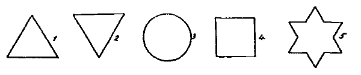
Fig. 1.
Series No. 1.—For the purpose of obtaining something that might serve as a standard of comparison, a series of observations was made in which the members of every pair were exact duplicates of each other, and were presented under exactly the same conditions, spatial position of course excepted. The records of these observations are for convenience placed first as Table I.
In treating the facts recorded in the accompanying tables as phenomena of inhibition no assumption is implied, it may be well to repeat, that the ideational images are forces struggling with each other for mastery. Nor is it implied, on the other hand, that they are wholly unconditioned facts, unrelated to any phenomena in which we are accustomed to see the expression of energy. Inhibition is meaningless save as an implication of power lodged somewhere. The implication is that these changes are conditioned and systematic, and that among the conditions of our ideas, if not among the ideas themselves, power is exerted and an inferior yields to a superior force. Such force, in accordance with our general presupposition, must be neural or cerebral. Even mental inhibition, therefore, must ultimately refer to the physical conditions of the psychical fact. But the reference, to have any scientific value, must be made as definite as the case will allow. We must at least show what are the conditions under which a state of consciousness which might otherwise occur does not occur. When such conditions are pointed out, and then only, we have a case of what has been called psychical inhibition; and we are justified in calling it inhibition because these are precisely the conditions under which physiological inhibition may properly be inferred. And, we may add, in order that the conditions may be intelligibly stated and compared they must be referable to some [241]objective, cognizable fact. Here the accessible facts, the experiential data, to which the psychical changes observed and the cerebral changes assumed may both be referred, are visual objects, namely, the figures already described.
What may occur when these objects are precisely alike, and are seen under conditions in all respects alike except as to spatial position, is indicated in Table I. The general average shows that the image referred to the left-hand object was seen some 30 seconds per minute; that referred to the right-hand image, some 31 seconds. Sometimes neither image was present, sometimes both were reported present together, and the time when both were reported present is included in the account. In this series it appears, on the whole, that each image has about the same chance in the ideational rivalry, with a slight preponderance in favor of the right. Individual variations, which may be seen at a glance by inspection of the averages, show an occasional preponderance in favor of the left. But the tendency is, in most cases, towards what we may call right-handed ideation.
Series No. II.—In the second series (Table II.) we find that, other things being equal, an increase in the relative complexity of the outline favors the return of the image to consciousness. Including the time when both images were reported present at once, the simpler appears but 27 seconds per minute as against 34 seconds for the more complex. No attempt was made to arrange the figures on any regularly increasing scale of complexity so as to reach quantitative results. The experiment was tentative merely.[242]
| 1 | 2 | 3 | 4 | 5 | 6 | 7 | Averages. | |||||||||
|---|---|---|---|---|---|---|---|---|---|---|---|---|---|---|---|---|
| S | C | S | C | S | C | S | C | S | C | S | C | S | C | S | C | |
| I. | 21.5 | 23.5 | 14.5 | 35 | 22.5 | 21.5 | 15 | 27 | 20.5 | 21 | 14.5 | 27 | 07.5 | 37.5 | 16.57 | 27.50 |
| II. | 35.5 | 21.5 | 32.5 | 48 | 32 | 33.5 | 32.5 | 21.5 | 31.5 | 32 | 50 | 45.5 | 49.5 | 39.5 | 37.64 | 34.50 |
| III. | 27.5 | 39 | 20.5 | 47.5 | 24.5 | 46.5 | 8 | 22.5 | 19.5 | 32.5 | 13 | 31 | 29 | 18 | 20.28 | 33.85 |
| IV. | 31.5 | 26.5 | 38 | 23.5 | 34.5 | 22 | 24 | 29.5 | 40.5 | 46.5 | 27 | 30.5 | 26 | 32 | 31.64 | 30.07 |
| V. | 48 | 50 | 48 | 39.5 | 41.5 | 51.5 | 51 | 47.5 | 47.5 | 47.5 | 50.5 | 48.5 | 38 | 38 | 46.35 | 46.07 |
| VI. | 11.5 | 35 | 26.5 | 28.5 | 21 | 33 | 29 | 17 | 14.5 | 29 | 14 | 33 | 21 | 28.5 | 19.64 | 29.14 |
| VII. | 29.5 | 35 | 47 | 47 | 10.5 | 52 | 29.5 | 33.5 | 25.5 | 43 | 42.5 | 30 | 28 | 41.5 | 30.35 | 40.28 |
| VIII. | 12.5 | 41 | 32 | 28.5 | 13 | 26.5 | 17 | 41.5 | 08 | 34 | 24 | 27 | 33 | 14.5 | 19.92 | 30.42 |
| IX. | 10.5 | 25.5 | 27.5 | 34.5 | 14.5 | 44 | 33 | 44.5 | 41.5 | 27 | 29.5 | 27.5 | 29.5 | 28 | 26.57 | 33.00 |
| X. | 24 | 25.5 | 20 | 23 | 16.5 | 28 | 23 | 21 | 10.5 | 36.5 | 17 | 27 | 18 | 25 | 18.42 | 26.57 |
| XI. | 46 | 46.5 | 31.5 | 53.5 | 18 | 53.5 | 27 | 50.5 | 21.5 | 53.5 | 40.5 | 43.5 | 30 | 45 | 30.64 | 49.42 |
| 298 | 369 | 338 | 408.5 | 248.5 | 412 | 289 | 356 | 281 | 402.5 | 322.5 | 370.5 | 309.5 | 347.5 | 27.10 | 34.62 | |
S: Outline simple. C: Outline complex.
In this and the following tables the numbers in the body of the columns represent, in each case, the combined result of two observations, in one of which the simpler figure was to the left, in the other the more complex. The figures were transposed in order to eliminate any possible space error.
General average: S, 27.10 sec.; C, 34.62 sec.
[243]Can anything be said, based on the reports, by way of explanation of the advantage which complexity gives? In the first place, the attitude of the subject towards his image seems to have been much the same as his attitude towards an external object: to his observation the image became, in fact, an object. "When the image was gone," says one, "my eyes seemed to be in search of something." And occasionally the one ideated object was felt to exert an influence over the other. "The complex seemed to affect the form of the simpler figure." "It seemed that the complex actually had the effect of diminishing the size of the simpler figure." From time to time the images varied, too, in distinctness, just as the objects of perception vary, and the superior distinctness of the more complex was frequently noted by the subjects. Now the importance of the boundary line in perception is well understood. It seems to have a corresponding importance here. "What I notice more in the simple figure," says one observer, "is the mass; in the complex, the outline." "The simple seemed to lose its form," says another, "the complex did not; the jagged edge was very distinct." And it is not improbable, in view of the reports, that irregularities involving change of direction and increase in extent of outline contributed mainly to the greater persistence of the more complicated image, the 'mass' being in both figures approximately the same. Nor did the advantage of the broken line escape the notice of the subject. "I found myself," is the comment of one, "following the contour of the star—exploring. The circle I could go around in a twinkle." Again, "the [244]points entered the field before the rest of the figure." And again, "the angle is the last to fade away."
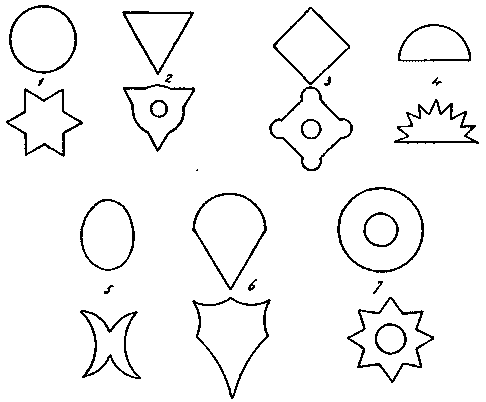
Fig. 2.
Now this mental exploration involves, of course, changes in the direction of the attention corresponding in some way to changes in the direction of the lines. Does this shifting of the attention involve ideated movements? There can be little doubt that it does. "I felt an impulse," says one, "to turn in the direction of the image seen." And the unconscious actual movements, particularly those of the eyes, which are associated with ideated movements, took place so often that it is hard to believe they were ever wholly excluded. Such movements, being slight and automatically executed, were not at first noticed. The subjects were directed, in fact, to attend in all cases primarily to the appearance and disappearance of the images, and it was only after repeated observations and questions were put, that they became aware of associated movements, and were able, at the close of an observation, to describe them. After that, it became a common report that the eyes followed the attention. And as we must assume some central influence as the cause of this movement, which while the eyes were closed could have no reflex relation to the stimulus of light, we must impute it to the character of the ideas, or to their physical substrates.
The idea, or, as we may call it, in view of the attitude of the subject, the internal sensory impression, thus seems to bear a double aspect. It is, in the cases noted, at once sensory and motor, or at any rate involves motor elements. And the effect of the activity of such motor elements is both to increase the distinctness of the image and to prolong the duration of the process by which it is apprehended. The sensory process thus stands in intimate dependence on the motor. Nor would failure to move the eyes or any other organ with the movement of attention, if established, be conclusive as against the presence of motor elements. A motor impulse or idea does not always result in apparent peripheral movement. In the suppressed speech, which is the common language of thought, the possibility of incipient or incomplete motor innervations is well recognized. But where the peripheral movement actually occurs it must be accounted for. And as the cause here must be central, [245]it seems reasonable to impute it to certain motor innervations which condition the shifting of the mental attitude and may be incipient merely, but which, if completed, result in the shifting of the eyes and the changes of bodily attitude which accompany the scrutiny of an external object. And the sensory process is, to some extent at least, conditioned by the motor, if, indeed, the two are anything more than different aspects of one and the same process.7
But where, now, the subject is occupied in mentally tracing the boundaries of one of his two images he must inhibit all motor innervations incompatible with the innervations which condition such tracing: the rival process must cease, and the rival image will fade. He may, it is true, include both images in the same mental sweep. The boundary line is not the only possible line of movement. In fact, we may regard this more comprehensive glance as equivalent to an enlargement of the boundaries so as to include different mental objects, instead of different parts of but one. Or, since the delimitation of our 'objects' varies with our attitude or aim, we may call it an enlargement of the object. But in any case the mental tracing of a particular boundary or particular spatial dimensions seems to condition the sense of the corresponding content, and through inhibition of inconsistent movements to inhibit the sense of a different content. No measure of the span of consciousness can, of course, be found in these reports. The movements of the attention are subtle and swift, and there was nothing in the form of the experiments to determine at any precise instant its actual scope. All we need assume, therefore, when the images are said to be seen together, is that neither has, for the time being, any advantage over the other in drawing attention to itself. If in the complete observation, however, any such advantage appears, we may treat it as a case of inhibition. By definition, an idea which assumes a place in consciousness which but for itself, as experiment indicates, another might occupy, inhibits the other.[246]
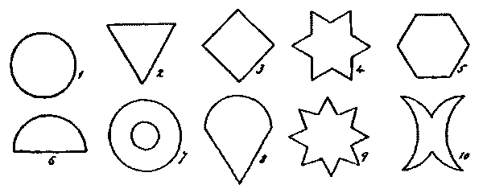
Fig. 3.
| 1 | 2 | 3 | 4 | 5 | 6 | 7 | 8 | 9 | 10 | Averages. | ||||||||||||
|---|---|---|---|---|---|---|---|---|---|---|---|---|---|---|---|---|---|---|---|---|---|---|
| S | L | S | L | S | L | S | L | S | L | S | L | S | L | S | L | S | L | S | L | S | L | |
| I. | 22 | 24 | 19.5 | 23 | 20 | 26 | 21.5 | 21 | 21 | 26 | 18 | 31 | 20.5 | 31.5 | 21.5 | 28.5 | 22.5 | 28 | 22.5 | 26 | 20.90 | 26.50 |
| II. | 31 | 39 | 31.5 | 36 | 15 | 32.5 | 11 | 22.5 | 13.5 | 24.5 | 7.5 | 23 | 14.5 | 17.5 | 19 | 20 | 11 | 4.5 | 7 | 30.5 | 16.10 | 25.00 |
| III. | 10.5 | 43.5 | 12 | 21.5 | 13 | 14.5 | 19 | 10.5 | 18.5 | 30.5 | 7 | 18.5 | 10 | 22 | 8.5 | 26 | 17 | 16 | 8 | 16 | 12.35 | 21.90 |
| IV. | 34.5 | 29.5 | 29.5 | 24 | 40.5 | 33 | 30.5 | 32.5 | 15 | 30 | 26 | 30 | 27.5 | 28.5 | 35 | 30.5 | 23.5 | 46 | 27.5 | 49.5 | 28.95 | 33.35 |
| V. | 31.5 | 30 | 42 | 45 | 39 | 51 | 47 | 49.5 | 41 | 37 | 46 | 45 | 40.5 | 35 | 24.5 | 22.5 | 21 | 31 | 21.5 | 21.5 | 35.40 | 36.75 |
| VI. | 22 | 20 | 20.5 | 22 | 23.5 | 22 | 25 | 16 | 24 | 20 | 22 | 25.5 | 22.5 | 18.5 | 11.5 | 21 | 20 | 27 | 22.5 | 24 | 21.35 | 21.60 |
| VII. | 53.5 | 53.5 | 23.5 | 23.5 | 47.5 | 47.5 | 51 | 52 | 52.5 | 53 | 51 | 52 | 44.5 | 46.5 | 52 | 51 | 33.5 | 49 | 39.5 | 50.5 | 44.85 | 47.85 |
| VIII. | 34 | 40.5 | 23 | 29 | 21 | 22 | 22 | 37.5 | 34.5 | 35 | 27.5 | 28 | 19.5 | 20 | 21 | 27 | 19.5 | 27.5 | 18.5 | 22.5 | 24.05 | 29.60 |
| IX. | 19.5 | 45 | 19.5 | 46 | 22 | 23.5 | 23.5 | 48 | 26 | 45.5 | 19 | 44.5 | 18.5 | 46 | 13 | 42 | 20 | 42 | 18.5 | 43 | 19.95 | 44.90 |
| X. | 16 | 30.5 | 12 | 35 | 21 | 24.5 | 8.5 | 41 | 15.5 | 33 | 19 | 28 | 18.5 | 24 | 20.5 | 21 | 20.5 | 22 | 18.5 | 28.5 | 17.00 | 28.75 |
| XI. | 38.5 | 36.5 | 21 | 48.5 | 30 | 54.5 | 31 | 55.5 | 32 | 54 | 12 | 50 | 21 | 49 | 32 | 53.5 | 38 | 53.5 | 34.5 | 46.5 | 29.00 | 50.15 |
| 313 | 392 | 254 | 353.5 | 292.5 | 381.5 | 290 | 386 | 293.5 | 388.5 | 255 | 375.5 | 257.5 | 338.5 | 258.5 | 343 | 246.5 | 346.5 | 238.5 | 358.5 | 24.54 | 33.30 | |
L: large. S: small.
General average, S, 24.54 sec.; L, 33.30 sec.
[247]Series No. III.—In the third series, where the variant is the extent of (gray) surface exposed, the preponderance is in favor of the image corresponding to the larger object. This shows an appearance of some 33 seconds per minute as against 24 for the smaller (Table III.). Here the most obvious thing in the reports, aside from the relative durations, is the greater vividness of the favored image. Something, no doubt, is due to the greater length of boundary line and other spatial dimensions involved in the greater size. And it is this superiority, and the ampler movements which it implies, which were probably felt by the subject who reports 'a feeling of expansion in the eye which corresponds to the larger image and of contraction in the other.' But the more general comment is as to the greater vividness of the larger image. "The larger images seem brighter whichever side they are on." "The larger is a little more distinct, as if it were nearer to me." "Large much more vivid than small." Such are the reports which run through the series. And they point, undoubtedly, to a cumulative effect, corresponding to a well-known effect in sensation, in virtue of which greater extension may become the equivalent of greater intensity. In other words, the larger image made the stronger impression. Now in external perception the stronger impression tends to hold the attention more securely; that is, it is more effective in producing those adjustments of the sensory organs which perceptive attention implies. So here what was noticed as the superior brightness and distinctness of the larger image may be supposed to imply some advantage in the latter in securing those adjustments of the mental attitude which were favorable to the apprehension of that image. Advantage means here, again, in part at least, if the considerations we have urged are sound, inhibition of those motor processes which would tend to turn attention to a rival. And here, again, the adjustment may reach no external organ. An incipient innervation, which is all that we need assume as the condition of a change of mental attitude, would suffice to block, or at least to hamper, inconsistent innervations no more complete than itself.[248]
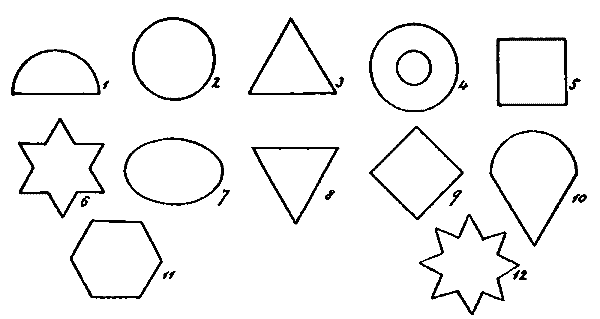
Fig. 4.
| 1 | 2 | 3 | 4 | 5 | 6 | |||||||
|---|---|---|---|---|---|---|---|---|---|---|---|---|
| G | W | G | W | G | W | G | W | G | W | G | W | |
| I. | 15.5 | 28.5 | 21.5 | 32.5 | 20 | 33 | 21 | 28.5 | 24 | 26.5 | 23.5 | 25 |
| II. | 39.5 | 23 | 22.5 | 22.5 | 19 | 20.5 | 35.5 | 17.5 | 21 | 29.5 | 20 | 18.5 |
| III. | 13.5 | 12.5 | 32 | 4.5 | 8.5 | 10 | 11.5 | 11.5 | 20.5 | 8.5 | 11 | 11.5 |
| IV. | 30 | 33.5 | 38 | 36.5 | 36 | 39.5 | 37.5 | 13.5 | 39.5 | 28.5 | 34.5 | 22.5 |
| V. | 33.5 | 32.5 | 34.5 | 32 | 33 | 35 | 45 | 36.5 | 45 | 53 | 48 | 51 |
| VI. | 15 | 22 | 21 | 21 | 18.5 | 22 | 12 | 22 | 21.5 | 28 | 18 | 32 |
| VII. | 53.5 | 50 | 43 | 46 | 54.5 | 55 | 56 | 56 | 54.5 | 56 | 54.5 | 54.5 |
| VIII. | 15.5 | 24.5 | 24 | 25 | 20 | 13 | 16.5 | 21 | 24 | 26.5 | 23.5 | 22.5 |
| IX. | 17.5 | 44 | 9.5 | 46 | 18.5 | 43.5 | 16 | 42 | 16 | 44 | 14 | 43.5 |
| X. | 25.5 | 19 | 29.5 | 19 | 21 | 20.5 | 23.5 | 18 | 24.5 | 18 | 24 | 21.5 |
| XI. | 35 | 42.5 | 13 | 29.5 | 18.5 | 46 | 16 | 38 | 20.5 | 8.5 | 15 | 36.5 |
| 294 | 332 | 288.5 | 314.5 | 267.5 | 338 | 290.5 | 304.5 | 311 | 327 | 286 | 339 | |
| 7 | 8 | 9 | 10 | 11 | 12 | |||||||
| G | W | G | W | G | W | G | W | G | W | G | W | |
| I. | 19.5 | 30.5 | 21 | 29 | 25 | 25.5 | 22.5 | 21 | 25 | 26.5 | 27 | 21.5 |
| II. | 29 | 16.5 | 28.5 | 14 | 20 | 25 | 15 | 20 | 29 | 32 | 13.5 | 20 |
| III. | 10 | 14 | 23 | 16.5 | 12 | 20 | 12.5 | 17.5 | 10.5 | 21 | 3 | 23 |
| IV. | 23 | 30.5 | 33.5 | 18 | 33 | 19.5 | 35.5 | 28 | 21.5 | 34.5 | 25.5 | 26.5 |
| V. | 45 | 29 | 32.5 | 34.5 | 51 | 50 | 35 | 30.5 | 40.5 | 54.5 | 45.5 | 52.5 |
| VI. | 20.5 | 19 | 21.5 | 18 | 13 | 29.5 | 25 | 33.5 | 28.5 | 23 | 23.5 | 27.5 |
| VII. | 45 | 46 | 49 | 49 | 46.5 | 39.5 | 38.5 | 44.5 | 43.5 | 47.5 | 42.5 | 34.5 |
| VIII. | 24 | 17.5 | 31 | 31.5 | 17.5 | 25.5 | 22 | 15.5 | 21 | 29 | 22.5 | 21.5 |
| IX. | 9 | 43.5 | 13 | 44.5 | 13 | 43.5 | 12.5 | 41.5 | 15 | 42 | 11 | 40 |
| X. | 25.5 | 24 | 22 | 22.5 | 24 | 24 | 27 | 19 | 25 | 21.5 | 23.5 | 23.5 |
| XI. | 33 | 23 | 34 | 29 | 13.5 | 49 | 2.5 | 43 | 14 | 34 | 23 | 22 |
| 283.5 | 293.5 | 309 | 306.5 | 268.5 | 351 | 248 | 314 | 273.5 | 365.5 | 260.5 | 312.5 | |
| Averages. | ||
|---|---|---|
| G | W | |
| I. | 22.95 | 27.33 |
| II. | 24.37 | 21.58 |
| III. | 14.00 | 14.25 |
| IV. | 32.29 | 27.58 |
| V. | 40.70 | 40.91 |
| VI. | 19.83 | 24.79 |
| VII. | 48.41 | 48.20 |
| VIII. | 21.79 | 22.75 |
| IX. | 13.75 | 43.16 |
| X. | 24.58 | 20.87 |
| XI. | 19.83 | 33.41 |
| 25.61 | 29.53 | |
G: Gray. W: White.
General average: G, 25.61 sec.; W, 29.53 sec.
[249]Series No. IV.—This and the next following series do not suggest much that differs in principle from what has been stated already. It should be noted, however, that in the white-gray series (Table IV.) the persistence of the gray in ideation surprised the subjects themselves, who confessed to an expectation that the white would assert itself as affectively in ideation as in perception. But it is not improbable that affective or æsthetic elements contributed to the result, which shows as high a figure as 25 seconds for the gray as against 29 for the white. One subject indeed (IV.) found the gray restful, and gives accordingly an individual average of 32 for the gray as against 27 for the white. More than one subject, in fact, records a slight advantage in favor of the gray. And if we must admit the possibility of a subjective interest, it seems not unlikely that a bald blank space, constituting one extreme of the white-black series, should be poorer in suggestion and perhaps more fatiguing than intermediate members lying nearer to the general tone of the ordinary visual field. Probably the true function of the brightness quality in favoring ideation would be better shown by a comparison of different grays. The general average shows, it is true, a decided preponderance in favor of the white, but the individual variations prove it would be unsafe to conclude directly, without experimental test, from the laws of perception to the laws of ideation.
Series No. V.—The fifth series, which was suggested by the second, presents the problem of the lines in greater simplicity than the second; and, unlike the earlier series, it shows in all the individual averages the same sort of preponderance as is [250]shown in the general average (straight line, 31; broken line, 38). The footings of the columns, moreover, show an aggregate in favor of the broken line in the case of every pair of lines that were exposed together. The results in this case may therefore be regarded as cleaner and more satisfactory than those reached before, and come nearer, one may say, to the expression of a general law. The theoretical interpretation, however, would be in both cases the same.
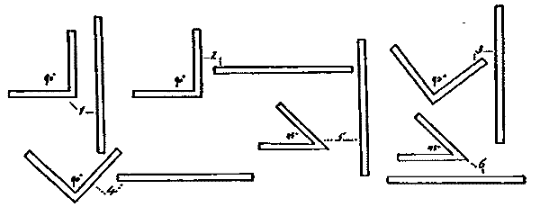
Fig. 5.
| 1 | 2 | 3 | 4 | 5 | 6 | Averages. | ||||||||
|---|---|---|---|---|---|---|---|---|---|---|---|---|---|---|
| L | A | L | A | L | A | L | A | L | A | L | A | L | A | |
| I. | 28 | 26.5 | 24.5 | 29.5 | 25 | 28 | 26 | 28.5 | 26 | 29.5 | 25.5 | 29.5 | 25.83 | 28.58 |
| II. | 35 | 41.5 | 42 | 34.5 | 31.5 | 47.5 | 53 | 50.5 | 52 | 52 | 48 | 48 | 43.58 | 45.66 |
| III. | 16.5 | 19.5 | 24 | 29 | 41 | 29.5 | 35.5 | 29 | 21 | 40 | 39 | 40 | 29.50 | 31.16 |
| IV. | 40 | 41.5 | 37 | 45 | 32.5 | 45.5 | 36.5 | 43.5 | 33.5 | 38 | 36.5 | 43.5 | 36.00 | 42.83 |
| V. | 49 | 53 | 45 | 47 | 45.5 | 36.5 | 32.5 | 51 | 37 | 46 | 40 | 51 | 41.50 | 47.41 |
| VI. | 18 | 31.5 | 16 | 45 | 22.5 | 30.5 | 25 | 25 | 24.5 | 37 | 25 | 22 | 21.83 | 31.83 |
| VII. | 43 | 39.5 | 52 | 54.5 | 52.5 | 53.5 | 51 | 54.5 | 40.5 | 55 | 48 | 48.5 | 47.83 | 50.91 |
| VIII. | 23 | 23 | 27 | 29.5 | 38 | 40 | 34.5 | 32 | 23 | 37 | 42 | 38.5 | 31.25 | 33.33 |
| IX. | 23 | 48 | 48 | 47.5 | 35 | 46.5 | 48 | 35 | 28.5 | 48 | 46.5 | 34.5 | 38.16 | 43.25 |
| X. | 18 | 33 | 19.5 | 31.5 | 20.5 | 30 | 22 | 29.5 | 16.5 | 35.5 | 19.5 | 33 | 19.33 | 32.08 |
| XI. | 22.5 | 33.5 | 18 | 41 | 26 | 23 | 19 | 35.5 | 05 | 38 | 07 | 50.5 | 16.25 | 36.91 |
| 316 | 390.5 | 353 | 434 | 370 | 410.5 | 383 | 414 | 307.5 | 456 | 377 | 439 | 31.91 | 38.54 | |
| 1 | 2 | 3 | 4 | 5 | 6 | Indiv. Aver. | ||||||||
|---|---|---|---|---|---|---|---|---|---|---|---|---|---|---|
| P | M | P | M | P | M | P | M | P | M | P | A | P | M | |
| I. | 22 | 32.5 | 23.5 | 32 | 23.5 | 32 | 22.5 | 32.5 | 23.5 | 31.5 | 21 | 39 | 22.666 | 33.250 |
| II. | 24.5 | 32.5 | 31.5 | 49.5 | 32 | 39 | 36 | 36 | 33.5 | 42 | 28.5 | 35 | 31.000 | 39.000 |
| III. | 8.5 | 23.5 | 0 | 36 | 0 | 31.5 | 11.5 | 5.5 | 8.5 | 14 | 3.5 | 8.5 | 5.333 | 19.833 |
| IV. | 30 | 49.5 | 30.5 | 42 | 24 | 48 | 27.5 | 44 | 28 | 40.5 | 43.5 | 34.5 | 30.583 | 43.083 |
| V. | 55.5 | 55.5 | 54.5 | 54.5 | 46.5 | 53 | 34 | 36 | 41.5 | 47 | 31 | 35.5 | 43.833 | 46.916 |
| VI. | 19.5 | 22.5 | 19.5 | 28 | 19.5 | 28.5 | 26.5 | 27.5 | 24.5 | 29.5 | 18.5 | 36 | 21.333 | 28.666 |
| VII. | 45 | 56.5 | 47.5 | 55.5 | 40.5 | 40 | 48 | 54 | 33.5 | 50 | 41 | 42.5 | 42.583 | 49.750 |
| VIII. | 19.5 | 24 | 0 | 40 | 27.5 | 20.5 | 13.5 | 23 | 16 | 25 | 23 | 34.5 | 16.583 | 27.833 |
| IX. | 28 | 49.5 | 26.5 | 48.5 | 27.5 | 45 | 18 | 45 | 21.5 | 48.5 | 42.5 | 44.5 | 27.333 | 46.833 |
| X. | 8 | 43.5 | 22 | 29 | 8.5 | 43.5 | 9.5 | 42.5 | 16 | 35 | 12.5 | 40.5 | 12.750 | 39.000 |
| XI. | 5.5 | 42.5 | 7.5 | 35.5 | 16.5 | 35.5 | 7.5 | 41 | 10 | 41.5 | 8 | 32.5 | 9.166 | 38.083 |
| 24.18 | 39.27 | 23.91 | 40.95 | 24.18 | 37.86 | 23.14 | 35.18 | 23.32 | 36.77 | 24.82 | 34.82 | 23.92 | 37.48 | |
P: Plain. M: Marked.
General average: Plain, 23.92 sec.; Marked, 37.48 sec.
Series No. VI.—Both the figures in each pair of this series were of the same material (granite-gray cardboard) and of the same area and outline, but the content of one of the two was varied with dark lines for the most part concentric with the[252] periphery.
The advantage on the side of the figures with a varied content is marked, the general averages showing a greater difference than is shown in any of the tables so far considered. And the advantage appears on the same side both in the individual averages and in the averages for the different pairs as shown at the foot of the columns. There can be little doubt, accordingly, that we have here the expression of a general law.
For the meaning of this law we may consult the notes of the subjects: 'The plain figure became a mere amorphous mass;' 'the inner lines reinforce the shape, for while previously the number of points in this star has increased (in ideation), here the number is fixed, and fixed correctly;' 'my attention traversed the lines of the content, and seemed to be held by them;' 'the variety of the marked objects was felt as more interesting;' 'the attention was more active when considering the marked figures, passing from point to point of the figure;' 'the surface of the plain figure was attended to as a whole or mass, without conscious activity;' 'in the plain figure I thought of the gray, in the marked figure I thought of the lines;' 'part of the plain figure tended to have lines.'
The part played by the motor elements previously referred to in sustaining attention and prolonging (internal) sensation is here unmistakable. We have further evidence, too, of the value of the line in defining and strengthening the mental attitude. In a mass of homogeneous elements such as is presented by a uniform gray surface, the attention is equally engaged by all and definitely held by none. Monotony therefore means dullness. And the inhibition of incompatible attitudes being as weak and uncertain as the attitudes actually but loosely assumed, the latter are readily displaced, and the sensation to which they correspond as readily disappears. Hence the greater interest excited by the lined figures. The lines give definiteness and direction to the attention, and as definitely inhibit incompatible attitudes. And the shutting out of the latter by the spontaneous activity of the mind means that it is absorbed or interested in its present occupation.[253]
| I. | II. | III. | IV. | V. | VI. | VII. | VIII. | IX. | X. | XI. | |||
|---|---|---|---|---|---|---|---|---|---|---|---|---|---|
| 1 | 5 | 29.5 | 25.5 | 4.5 | 33 | 35 | 10.5 | 27 | 13.5 | 33 | 20.5 | 13.5 | 22.32 |
| 10 | 23 | 21 | 18.5 | 31.5 | 40.5 | 34.5 | 42 | 21.5 | 43.5 | 23 | 29 | 31.5 | |
| 2 | 5 | 24.5 | 32.5 | 12.5 | 28 | 35 | 10.5 | 28.5 | 19 | 36 | 22.5 | 32 | 25.55 |
| 10 | 21.5 | 42.5 | 5.5 | 32 | 52.5 | 34.5 | 19 | 15 | 37.5 | 23 | 16.5 | 27.23 | |
| 3 | 5 | 27 | 19.5 | 0 | 42 | 28 | 23 | 31.5 | 21.5 | 35 | 23 | 9.5 | 23.64 |
| 10 | 18.5 | 33 | 3.5 | 44 | 49.5 | 15 | 49 | 18 | 40 | 23.5 | 36.5 | 30.05 | |
| 4 | 5 | 28 | 27 | 7.5 | 25 | 43 | 26 | 39 | 23 | 26 | 22 | 40.5 | 27.91 |
| 10 | 26 | 33.5 | 11 | 45 | 31 | 26.5 | 45.5 | 22.5 | 45 | 27.5 | 8.5 | 29.27 | |
| 5 | 5 | 27 | 26 | 10.5 | 38.5 | 42.5 | 22 | 28.5 | 19.5 | 31.5 | 21.5 | 39.5 | 27.91 |
| 10 | 20 | 32 | 18.5 | 43 | 29 | 27 | 50.5 | 18 | 44 | 29 | 8.5 | 29.05 | |
| 6 | 5 | 25 | 20 | 0 | 41 | 47.5 | 19.5 | 49.5 | 24.5 | 21.5 | 21 | 17.5 | 26.09 |
| 10 | 29.5 | 28.5 | 7 | 36.5 | 50.5 | 34.5 | 51.5 | 21.5 | 43.5 | 34.5 | 30.5 | 33.45 | |
| 7 | 5 | 22.5 | 29 | 20.5 | 31 | 38 | 30 | 55.5 | 16.5 | 41 | 24.5 | 19.5 | 29.82 |
| 10 | 29 | 37.5 | 8.5 | 26 | 34 | 17 | 50 | 21.5 | 46 | 28.5 | 26.5 | 29.5 | |
| 8 | 5 | 27.5 | 32.5 | 12 | 39.5 | 39 | 13 | 42.5 | 18 | 45.5 | 26.5 | 14 | 28.18 |
| 10 | 25.5 | 28 | 16.5 | 41.5 | 46.5 | 25 | 28 | 17 | 43.5 | 24 | 30 | 29.59 | |
| 9 | 5 | 26 | 34 | 21 | 37 | 54 | 34.5 | 50.5 | 17.5 | 46.5 | 28.5 | 42.5 | 35.64 |
| 10 | 22 | 32 | 9 | 29.5 | 40 | 26.5 | 15.5 | 21.5 | 33 | 25.5 | 2.5 | 23.36 | |
| 10 | 5 | 22.5 | 26 | 32 | 28.5 | 32.5 | 20.5 | 49 | 21 | 39 | 25.5 | 21.5 | 28.91 |
| 10 | 27.5 | 23 | 3 | 37 | 46 | 27 | 17.5 | 22.5 | 37.5 | 25 | 30 | 26.91 | |
| 11 | 5 | 25.5 | 30.5 | 21.5 | 36.5 | 43.5 | 27 | 43.5 | 21.5 | 32 | 22 | 22.5 | 29.64 |
| 10 | 25 | 28 | 15 | 30.5 | 46 | 35 | 29.5 | 23.5 | 35 | 30 | 33 | 30.05 | |
| 12 | 5 | 22 | 25.5 | 8 | 33 | 36.5 | 27.5 | 44 | 23 | 33.5 | 24 | 25.5 | 27.50 |
| 10 | 28 | 23 | 22 | 31.5 | 50.5 | 33 | 26.5 | 27.5 | 40 | 23.5 | 24 | 29.96 | |
| Indiv. Aver. | 5 | 25.58 | 27.33 | 12.5 | 34.41 | 39.54 | 22 | 40.75 | 19.87 | 35.04 | 23.45 | 24.83 | 27.75 |
| 10 | 24.62 | 30.16 | 11.5 | 35.66 | 43.00 | 27.95 | 35.37 | 20.83 | 40.70 | 26.41 | 22.95 | 29.15 | |
5: refers to object exposed 5 seconds. 10: refers to object exposed 10 seconds.
General average: (5), 27.75 sec.; (10), 29.15 sec.
[254]Series No. VII.—The object of this series was to determine the effect in ideation of exposing for unequal lengths of time the two objects compared. The figures compared were of the same area and outline, and were distinguished only by their color, one being red and the other green. These colors were employed, after a preliminary test, as showing, on the whole, to nearly equal advantage in the individual choice of colors. The shorter exposure was five seconds and the longer exposure ten seconds. The color that was to be seen the longer time was exposed first alone; after five seconds the other was exposed; and then both were seen for five seconds together, so that neither might have the advantage of the more recent impression. The two colors were regularly alternated, and in one half of the series the longer exposure was to the right, in the other half to the left. The extra five seconds were thus in each case at the beginning of the experiment.
The general averages show only a slight advantage in favor of the color which was exposed the longer time, namely, 29.15 seconds, as against 27.75 seconds. It is not easy to believe that the advantage of sole occupancy of the visual field for five seconds, without any offsetting disadvantage in the next five seconds, should have so slight an effect on the course of ideation. And it is not improbable that there was an offsetting disadvantage. In the presence of color the subject can scarcely remain in the attitude of quiet curiosity which it is easy to maintain in the observation of colorless objects. A positive interest is excited. And the appearance of a new color in the field when there is another color there already seems to be capable of exciting, by a sort of successive contrast different from that ordinarily described, an interest which is the stronger from the fact that the subject has already been interested in a different color. That is to say, the transition from color to color (only red and green were employed) seems to be more impressive than the transition from black to color. And, under the conditions of the experiment, the advantage of this more impressive transition lay always with the color which was exposed the shorter time.
Judging from the introspective notes, the outline seems to suffer, in competition with a colored content, some loss of power [255]to carry the attention and maintain its place in the ideation. "The colors tend to diffuse themselves, ignoring the boundary," says one. "The images fade from the periphery toward the center," says another. On the other hand, one of the subjects finds that when both images are present the color tends to fade out. This may perhaps be explained by the remark of another subject to the effect that there is an alternate shifting of the attention when both images are present. An attitude of continued and definite change, we may suppose, is one in which the color interest must yield to the interest in boundaries and definite spatial relations.
Other interesting facts come out in the notes. One subject finds the ideated plane farther away than the objective plane; another conceives the two as coinciding. The movement of the eyes is by this time distinctly perceived by the subject. The reports run as follows: 'Eye-movements seem to follow the changes in ideation;' 'I find my eyes already directed, when an image is ideated, to the corresponding side, and am sometimes conscious of the movement, but the movement is not intended or willed;' 'in ideating any particular color I find my attention almost always directed to the side on which the corresponding object was seen.' This last observation seems to be true for the experience of every subject, and, generally speaking, the images occupy the same relative positions as the objects: the image of the right object is seen to the right, that of the left object to the left, and the space between the two remains tolerably constant, especially for the full-faced figures.
This fact suggested a means of eliminating the disturbing influence of color, and its contrasts and surprises, by the substitution of gray figures identical in form and size and distinguished only by their spatial position. The result appears in the table which follows (VIII.).
Series No. VIII.—The object of this experiment was the same as that of No. VII. Granite-gray figures, however, were substituted, for the reasons already assigned, in place of the red and green figures. And here the effect of additional time in the exposure is distinctly marked, the general averages showing 32.12 seconds for the image of the object which was exposed 10 seconds, as against 25.42 seconds for the other.[256]
| 1 | 2 | 3 | 4 | 5 | Indiv. Aver. | |||||||
|---|---|---|---|---|---|---|---|---|---|---|---|---|
| 5 | 10 | 5 | 10 | 5 | 10 | 5 | 10 | 5 | 10 | 5 | 10 | |
| I. | 26.5 | 27 | 24.5 | 30.5 | 26.5 | 28 | 27.5 | 27.5 | 26.5 | 29 | 26.3 | 28.4 |
| II. | 32.5 | 38.5 | 27 | 36 | 29 | 28 | 17 | 14.5 | 37.5 | 27 | 28.6 | 28.8 |
| III. | 04.5 | 13.5 | 11 | 01.5 | 10 | 11 | 7.5 | 14.5 | 12.5 | 8.5 | 9.1 | 9.8 |
| IV. | 23.5 | 40.5 | 27.5 | 34 | 35.5 | 38 | 35 | 28 | 17 | 39 | 27.7 | 35.9 |
| V. | 41 | 46 | 50 | 51.5 | 43 | 42.5 | 46 | 35.5 | 31.5 | 44 | 42.3 | 43.9 |
| VI. | 07.5 | 27 | 18 | 25 | 21.5 | 25.5 | 07 | 44.5 | 33.5 | 19 | 17.5 | 28.2 |
| VIII. | 24.5 | 27 | 34.5 | 32 | 36.5 | 36 | 34.5 | 38.5 | 28 | 28.5 | 31.6 | 32.4 |
| IX. | 17 | 46 | 25.5 | 47.5 | 44 | 47 | 40.5 | 47.5 | 48 | 48 | 35.0 | 47.2 |
| X. | 20 | 29 | 21 | 26.5 | 25.5 | 24.5 | 27.5 | 22 | 19.5 | 23.5 | 22.7 | 25.1 |
| XI. | 11 | 41.5 | 09.5 | 50 | 05.5 | 43.5 | 15.5 | 40.5 | 25.5 | 32 | 13.4 | 41.5 |
| 20.80 | 33.60 | 24.85 | 33.45 | 27.70 | 32.40 | 25.80 | 31.30 | 27.95 | 29.85 | 25.42 | 32.12 | |
VII.—Absent.
5: refers to object exposed 5 seconds. 10: refers to object exposed 10 seconds.
General average: (5), 25.42 sec.; (10), 32.12 sec.
The interpretation of this difference may be made in accordance with the principles already laid down. The ideated and actual movements which favor the recurrence and persistence of an idea are, on grounds generally recognized in psychology, much more likely to occur and repeat themselves when the corresponding movements, or the same movements in completer form, have frequently been repeated in observation of the corresponding object.
| 1 | 2 | 3 | 4 | 5 | Indiv. Aver. | |||||||
|---|---|---|---|---|---|---|---|---|---|---|---|---|
| 1st | 2d | 1st | 2d | 1st | 2d | 1st | 2d | 1st | 2d | 1st | 2d | |
| I. | 22.5 | 32.5 | 27 | 28 | 26.5 | 28 | 26.5 | 27.5 | 26 | 29 | 25.7 | 29.0 |
| II. | 04.5 | 43 | 09 | 29 | 3.5 | 38 | 00 | 43 | 17 | 44.5 | 6.8 | 39.5 |
| III. | 00 | 22 | 00 | 20.5 | 9.5 | 16.5 | 00 | 23.5 | 3.5 | 9.5 | 2.6 | 18.4 |
| IV. | 00 | 31 | 01 | 35.5 | 4.5 | 39 | 16.5 | 32.5 | 16 | 20.5 | 7.6 | 31.7 |
| V. | 24 | 52.5 | 41.5 | 40 | 12 | 53.5 | 22 | 55 | 22 | 50.5 | 24.3 | 50.3 |
| VII. | 01.5 | 52 | 00 | 48 | 00 | 54.5 | 00 | 50.5 | 00 | 46.5 | 0.3 | 50.3 |
| VIII. | 12 | 26 | 10 | 27.5 | 11.5 | 23.5 | 13.5 | 28.5 | 15.5 | 20 | 12.5 | 25.1 |
| IX. | 24 | 43.5 | 20 | 42 | 25 | 42.5 | 20.5 | 44.5 | 28 | 42.5 | 23.5 | 43.0 |
| X. | 09 | 45.5 | 19.5 | 30 | 11 | 33 | 12 | 38 | 14.5 | 30 | 13.2 | 35.3 |
| XI. | 12.5 | 35 | 23.5 | 29.5 | 01 | 49 | 02 | 44 | 10.5 | 52 | 9.9 | 41.9 |
| 11.00 | 38.30 | 15.15 | 33.00 | 10.45 | 37.75 | 11.30 | 38.70 | 15.30 | 34.50 | 12.64 | 36.45 | |
VI.—Absent.
From this point on the place of Miss H. (IV.) is taken by Mr. R. The members in each pair of objects in this group were not exposed simultaneously.
1st: refers to object first exposed. 2d: refers to object last exposed.
General average: 1st, 12.64 sec.: 2d, 36.45 sec.
[257]What is here called ideated movement—by which is understood the idea of a change in spatial relations which accompanies a shifting of the attention or a change in the mental attitude, as distinguished from the sense of movements actually executed—was recognized as such by one of the subjects, who says: "When the two objects are before me I am conscious of what seem to be images of movement, or ideated movements, not actual movements." The same subject also finds the image of the object which had the longer exposure not only more vivid in the quality of the content, but more distinct in outline.
Series No. IX.—In this experiment the objects, which were of granite-gray cardboard, were exactly alike, but were exposed at different times and places. After the first had been exposed five seconds alone, it was covered by means of a sliding screen, and the second was then exposed for the same length of time, the interval between the two exposures being also five seconds. Two observations were made with each pair, the first exposure being in one case to the left and in the other case to the right. The object here was, of course, to determine what, if any, advantage the more recent of the two locally different impressions would have in the course of ideation. The table shows that the image of the object last seen had so far the advantage in the ideational rivalry that it remained in consciousness, on the average, almost three times as long as the other, the average being, for the first, 12.64 seconds; for the second, 36.45 seconds. And both the individual averages and the averages for the several pairs show, without exception, the same general tendency.
The notes show, further, that the image of the figure first seen was not only less persistent but relatively less vivid than the other, though the latter was not invariably the case. One subject had 'an impression that the images were farther apart' than in the series where the exposure of the two objects was simultaneous, though the distance between the objects was in all cases the same, the time difference being, apparently, translated into spatial terms and added to the spatial difference. The sort of antagonism which temporal distinctions tend, under [258]certain conditions, to set up between ideas is illustrated by the remark of another subject, who reports that 'the attention was fairly dragged by the respective images.' And the fact of such antagonism, or incompatibility, is confirmed by the extremely low figure which represents the average time when both images were reported present at the same time. The two images, separated by processes which the time interval implies, seem to be more entirely incompatible and mutually inhibitory than the images of objects simultaneously perceived. For not only does the advantage of a few seconds give the fresher image a considerable preponderance in its claim on the attention, but even the earlier image, after it has once caught the attention, usually succeeds in shutting out the other from a simultaneous view.
| 1 | 2 | 3 | 4 | 5 | Indiv. Aver. | |||||||
|---|---|---|---|---|---|---|---|---|---|---|---|---|
| V | H | V | H | V | H | V | H | V | H | V | H | |
| I. | 27.5 | 27 | 26.5 | 28 | 30.5 | 24.5 | 27.5 | 28.5 | 26 | 25 | 27.60 | 26.60 |
| II. | 45 | 43.5 | 37 | 40 | 35.5 | 28.5 | 19 | 15.5 | 30.5 | 30.5 | 33.40 | 31.60 |
| III. | 19 | 21 | 00 | 10.5 | 19.5 | 19 | 09 | 15 | 04.5 | 16 | 10.40 | 16.30 |
| IV. | 47.5 | 39 | 36 | 22.5 | 44.5 | 41.5 | 47.5 | 46 | 37 | 36 | 42.50 | 37.00 |
| V. | 56.5 | 46.5 | 42.5 | 42.5 | 48 | 45.5 | 48.5 | 48.5 | 53 | 52 | 49.70 | 47.00 |
| VI. | 31.5 | 28.5 | 30.5 | 30.5 | 22 | 34.5 | 34.5 | 28.5 | 25 | 26.5 | 28.70 | 29.70 |
| VII. | 55 | 55 | 55 | 45.5 | 38 | 20 | 55.5 | 53.5 | 56 | 56 | 51.90 | 45.80 |
| VIII. | 39.5 | 47 | 23.5 | 23.5 | 19 | 18.5 | 26.5 | 26.5 | 26 | 20.5 | 26.90 | 27.20 |
| IX. | 26.5 | 46 | 38 | 42.5 | 41 | 44 | 40.5 | 46.5 | 35.5 | 39 | 36.30 | 43.60 |
| X. | 24.5 | 25 | 26 | 25 | 25.5 | 23 | 23.5 | 28.5 | 32.5 | 20.5 | 26.40 | 24.40 |
| XI. | 52 | 52 | 56.5 | 54.5 | 48 | 49.5 | 45 | 47.5 | 51.5 | 47.5 | 50.60 | 50.20 |
| 38.60 | 39.14 | 33.77 | 33.09 | 33.77 | 31.68 | 34.27 | 34.95 | 34.31 | 33.60 | 34.94 | 34.49 | |
V: Vertical. H: Horizontal.
General average: Vertical, 34.94 sec. Horizontal, 34.49 sec.
Series No. X.—The objects used in this experiment were straight lines, two strips of granite-gray cardboard, each ten centimeters long and half a centimeter wide, the one being vertical and the other horizontal. These were pasted on black cards and exposed in alternate positions, each appearing once to the right and once to the left. The figures in the columns represent in each case the combined result of two such observations.
The experiments with these lines were continued at intervals [259]through a number of weeks, each individual average representing the result of ten observations, or of five pairs of exposures with alternating objects.
The striking feature in the observations is the uniformity of the results as they appear in the general averages and in the averages for each pair as shown at the foot of the columns. There is some variation in the individual tendencies, as shown by the individual averages. But the general average for this group of subjects shows a difference of less than half a second per minute, and that difference is in favor of the vertical line.
This series will serve a double purpose. It shows, in the first place, that on the whole the vertical and the horizontal lines have a nearly equal chance of recurrence in image or idea. It will serve, in the second place, as a standard of comparison when we come to consider the effect of variations in the position and direction of lines.
| 1 | 2 | 3 | 4 | 5 | Indiv. Av. | |||||||
|---|---|---|---|---|---|---|---|---|---|---|---|---|
| F | O | F | O | F | O | F | O | F | O | F | O | |
| I. | 24 | 31 | 26.5 | 28.5 | 27 | 29 | 22 | 33.5 | 27.5 | 28 | 25.4 | 30.0 |
| II. | 53.5 | 50 | 52.5 | 52.5 | 56.5 | 55.5 | 43.5 | 43.5 | 56 | 51.5 | 52.4 | 50.6 |
| III. | 03 | 21.5 | 04 | 20 | 11 | 17 | 03.5 | 27 | 00 | 20.5 | 4.3 | 21.2 |
| IV. | 26.5 | 30 | 11 | 48.5 | 12.5 | 53 | 12 | 51 | 23 | 51 | 17.0 | 46.7 |
| V. | 40.5 | 56.5 | 48 | 56 | 55.5 | 55.5 | 53 | 55.5 | 53.5 | 55.5 | 50.1 | 55.58 |
| VI. | 27.5 | 40.5 | 23 | 31.5 | 24.5 | 32.5 | 31 | 29 | 27 | 33.5 | 26.6 | 33.4 |
| VII. | 50.5 | 54 | 53.5 | 56.5 | 53.5 | 53.5 | 40.5 | 52 | 55 | 55 | 50.6 | 54.2 |
| VIII. | 01 | 33.5 | 11 | 27 | 05 | 32 | 07.5 | 39 | 04.5 | 36.5 | 5.8 | 33.6 |
| IX. | 35.5 | 41.5 | 45.5 | 47 | 41.5 | 41.5 | 39 | 44.5 | 41 | 41.5 | 40.5 | 43.2 |
| X. | 19 | 30.5 | 21.5 | 30.5 | 21 | 29.5 | 16 | 37.5 | 22.5 | 30.5 | 20.0 | 31.7 |
| XI. | 11.5 | 52.5 | 18 | 51.5 | 14.5 | 50.5 | 23 | 50.5 | 15 | 52.5 | 16.4 | 51.5 |
| 26.59 | 40.14 | 28.59 | 40.86 | 29.32 | 40.86 | 26.45 | 42.09 | 29.55 | 41.45 | 28.10 | 41.08 | |
F: Full-faced. O: Outlined.
General average: full-faced, 28.10 sec.; outlined, 41.08 sec.
Series No. XI.—In this series full-faced figures were compared with outline figures of the same dimensions and form. Material, granite-gray cardboard. The area of the full-faced figures was the same as that of the figures of similar character employed in the various series, approximately 42 sq. cm.; the breadth of the lines in the outline figures was half a centimeter. The objects in each pair were exposed simultaneously, with the [260]usual instructions to the subject, namely, to regard each object directly, and to give to each the same share of attention as to the other.
The form of the experiment was suggested by the results of earlier experiments with lines. It will be remembered that the express testimony of the subjects, confirmed by fair inference from the tabulated record, was to the effect that lines show, in ideation as in perception, both greater energy and clearer definition than surfaces. By lines are meant, of course, not mathematical lines, but narrow surfaces whose longer boundaries are closely parallel. To bring the superior suggestiveness of the line to a direct test was the object of this series. And the table fully substantiates the former conclusion. For the outline figure we have a general average of 41.08 seconds per minute, as against 28.10 seconds for the full-faced figure.
The notes here may be quoted as corroborative of previous statements. "I notice," says one, "a tendency of the color in the full-faced figure to spread over the background"—a remark which bears out what has been said of the relative vagueness of the subjective processes excited by a broad homogeneous surface. To this may be added: "The full-faced figures became finally less distinct than the linear, and faded from the outside in;" "the areal (full-faced) figure gradually faded away, while the linear remained." Another comment runs: "I feel the left (full-faced) striving to come into consciousness, but failing to arrive. Don't see it; feel it; and yet the feeling is connected with the eyes." This comment, made, of course, after the close of an observation, may serve as evidence of processes subsidiary to ideation, and may be compared, in respect of the motor factors which the 'striving' implies, with the preparatory stage which Binet found to be an inseparable and essential part of any given (vocal) motor reaction.8
Series No. XII.—Both the figures of each pair in this series were linear, and presented the same extent of surface (granite-gray) with the same length of line. In other words, both figures were constituted of the same elements, and in both the corresponding lines ran in the same direction; but the lines in the one were connected so as to form a figure with a continuous boundary, while the lines of the other were disconnected, i.e., did not inclose a space. The total length of line in each object was twenty centimeters, the breadth of the lines five millimeters. Both figures were arranged symmetrically with respect to a perpendicular axis.[261]
| 1 | 2 | 3 | 4 | 5 | Indiv. Av. | |||||||
|---|---|---|---|---|---|---|---|---|---|---|---|---|
| L | F | L | F | L | F | L | F | L | F | L | F | |
| I. | 31.5 | 24 | 30 | 24.5 | 23.5 | 32 | 25.5 | 30.5 | 27 | 29.5 | 27.5 | 28.1 |
| II. | 55 | 55 | 56 | 56 | 56 | 56 | 56.5 | 56.5 | 54 | 54 | 55.5 | 55.5 |
| III. | 22 | 06 | 26.5 | 09.5 | 31.5 | 01.5 | 23 | 05.5 | 28.5 | 00 | 26.3 | 04.5 |
| IV. | 31 | 15 | 46.5 | 20.5 | 52 | 09.5 | 49 | 06 | 55 | 18 | 46.7 | 13.8 |
| V. | 56 | 54 | 56 | 56 | 56 | 56 | 56.5 | 56.5 | 55.5 | 55.5 | 56.0 | 55.6 |
| VI. | 33 | 30 | 34 | 39.5 | 31.5 | 29.5 | 26.5 | 32 | 26 | 31.5 | 30.2 | 32.5 |
| VII. | 55.5 | 49.5 | 56.5 | 38 | 54.5 | 35 | 57.5 | 32.5 | 38 | 27 | 52.4 | 36.4 |
| VIII. | 26.5 | 15.5 | 21.5 | 13.5 | 25 | 17 | 25.5 | 21 | 15 | 13.5 | 22.7 | 16.1 |
| IX. | 45.5 | 32.5 | 44.5 | 39 | 42.5 | 35.5 | 41.5 | 37.5 | 43 | 40.5 | 43.4 | 37.0 |
| X. | 29.5 | 23 | 36.5 | 16 | 23 | 28.5 | 35.5 | 16.5 | 29 | 23 | 30.7 | 21.4 |
| XI. | 52 | 08 | 49.5 | 19 | 45.5 | 25 | 43.5 | 21.5 | 15 | 31.5 | 41.1 | 21.0 |
| 39.77 | 28.41 | 41.77 | 30.18 | 40.10 | 29.60 | 40.05 | 28.73 | 35.10 | 29.50 | 39.32 | 29.26 | |
L: Interrupted lines. F: Figure with continuous boundary. (Figure in outline.)
General average: Lines, 39.32 sec.; figure, 29.26 sec.
The experiment was devised in further exploration of the effect of the line in ideation. The result fully bears out, when read in the light of the introspective notes, what has been said of the importance of the motor element in ideation. It might have been supposed, in view of the importance usually attached to unity or wholeness of impression in arresting and holding the attention in external perception, that the completed figure would have the more persistent image. The general averages, however, stand as follows: Interrupted lines, 39.32 seconds per minute; completed figure, 29.26 seconds per minute. The individual averages show slight variations from the tendency expressed in these figures, but the averages for the several pairs are all in harmony with the general averages.
The notes furnish the key to the situation: "I felt that I was doing more, and had more to do, when thinking of the broken lines." "The broken figure seemed more difficult to get, but to attract attention; continuous figure easy to grasp."
"[263]Felt more active when contemplating the image of the broken figure." "In the broken figure I had a feeling of jumping from line to line, and each line seemed to be a separate figure; eye-movement very perceptible." The dominance of the interrupted lines in ideation is evidently connected with the more varied and energetic activity which they excited in the contemplating mind. Apparently the attention cannot be held unless (paradoxical as it may sound) it is kept moving about its object. Hence, a certain degree of complexity in an object is necessary to sustain our interest in it, if we exclude, as we must of course in these experiments, extraneous grounds of interest. Doubtless there are limits to the degree of complexity which we find interesting and which compels attention. A mere confused or disorderly complex, wanting altogether in unity, could hardly be expected to secure attention, if there is any truth in the principle, already recognized, that the definite has in ideation a distinct advantage over the vague. Here again the notes suggest the method of interpretation. "The broken lines," says one, "tended to come together, and to take the form of the continuous figure." Another remarks: "The broken figure suggests a whole connected figure; the continuous is complete, the broken wants to be." In virtue of their power to excite and direct the activity of the attention the interrupted lines seem to have been able to suggest the unity which is wanting in them as they stand. "The broken lines," says another, "seemed to run out and unite, and then to separate again"—a remark which shows a state of brisk and highly suggestive activity in the processes implied in attention to these lines. And a glance at the diagram will show how readily the union of the broken lines may be made. These were arranged symmetrically because the lines of the completed figures were so arranged, in order to equalize as far as possible whatever æsthetic advantage a symmetrical arrangement might be supposed to secure.
It thus appears that, whatever the effect in ideation of unity in the impression, the effect is much greater when we have complexity in unity. The advantage of unity is undoubtedly the advantage which goes with definiteness of impression, which implies definite excitations and inhibitions, and that concentration [264]of energy and intensity of effect in which undirected activity is wanting. But a bare unity, it appears, is less effective than a diversified unity. To what extent this diversity may be carried we make no attempt to determine; but, within the limits of our experiment, its value in the ideational rivalry seems to be indisputable. And the results of the experiment afford fresh proof of the importance of the motor element in internal perception.
| 1 | 2 | 3 | 4 | 5 | Indiv. Av. | |||||||
|---|---|---|---|---|---|---|---|---|---|---|---|---|
| F | V | F | V | F | V | F | V | F | V | F | V | |
| I. | 25 | 29 | 26 | 29 | 29.5 | 26.5 | 25.5 | 30 | 24.5 | 31 | 26.1 | 29.1 |
| II. | 56 | 56 | 55 | 55 | 54 | 54.5 | 47.5 | 47.5 | 45 | 50 | 51.5 | 52.6 |
| III. | 02.5 | 5.5 | 02.5 | 8.5 | 06.5 | 05 | 16.5 | 09.5 | 17 | 15 | 9.0 | 8.7 |
| IV. | 48 | 48 | 31.5 | 31.5 | 31 | 46 | 51.5 | 51.5 | 35 | 52 | 39.4 | 45.8 |
| V. | 54 | 54 | 56.5 | 52 | 56 | 56 | 56 | 56 | 54 | 56 | 55.3 | 54.8 |
| VI. | 39 | 29 | 30 | 33.5 | 35.5 | 22.5 | 32.5 | 34 | 33.5 | 24.5 | 34.1 | 28.7 |
| VII. | 46 | 55 | 54.5 | 46.5 | 46.5 | 50 | 49.5 | 54 | 47 | 46 | 48.7 | 50.3 |
| VIII. | 09 | 14.5 | 23 | 20.5 | 23.5 | 22 | 18 | 14.5 | 16 | 17 | 17.9 | 17.7 |
| IX. | 43 | 43 | 46.5 | 46.5 | 45.5 | 45.5 | 43.5 | 43.5 | 46 | 47.5 | 44.9 | 45.2 |
| X. | 28 | 26.5 | 21 | 29.5 | 26.5 | 26.5 | 21.5 | 31.5 | 25 | 29 | 24.4 | 28.6 |
| XI. | 23.5 | 46 | 19.5 | 35.5 | 20 | 46 | 24 | 47.5 | 28.5 | 19.5 | 23.1 | 38.9 |
| 34.00 | 36.95 | 33.27 | 35.27 | 34.05 | 36.41 | 35.09 | 38.14 | 33.77 | 35.23 | 34.03 | 36.40 | |
F: Figure (in outline). V: Vertical lines.
General average: Figure, 34.03 sec.; vertical lines, 36.40 sec.
Series No. XIII.—In this series, also, both the figures of each pair were constituted of the same elements; that is to say, both were linear, and presented the same extent of surface (granite-gray), with the same length of line, the total length of the lines in each figure being twenty centimeters and the breadth of the lines being three millimeters. But while the lines of one figure were connected so as to form a continuous boundary, the lines of the other figure were all vertical, with equal interspaces. And, as in the last preceding series, the two figures were formed by a different but symmetrical arrangement of the same lines.
As before, the advantage is on the side of the disconnected lines. In this case, however, it is very slight, the general averages showing 34.03 seconds for the completed figure, as against 36.40 seconds for the lines. This reduction in the difference of the averages is probably to be explained by the reduced [265]complexity in the arrangement of the lines. So far as they are all parallel they would not be likely to give rise to great diversity of movement, though one subject does, indeed, speak of traversing them in all directions. In fact, the completed figures show greater diversity of direction than the lines, and in this respect might be supposed to have the advantage of the lines. The notes suggest a reason why the lines should still prove the more persistent in ideation. "The lines appealed to me as a group; I tended always to throw a boundary around the lines," is the comment of one of the subjects. From this point of view the lines would form a figure with a content, and we have learned (see Series No. VI.) that a space with a varied content is more effective in ideation than a homogeneous space of the same extent and general character. And this unity of the lines as a group was felt even where no complete boundary line was distinctly suggested. "I did not throw a boundary around the lines," says another subject, "but they had a kind of unity." It is possible also that from the character of their arrangement the lines reinforced each other by a kind of visual rhythm, a view which is supported by the comments: 'The lines were a little plainer than the figure;' 'figure shadowy, lives vivid;' 'the figure grew dimmer towards the end, the lines retained their vividness.'
On the whole, however, the chances are very nearly equal in the two cases for the recurrence of the image, and a comparison of this series with Series No. XII. cannot leave much doubt that the greater effectiveness of the lines in the latter is due to their greater complexity. In view, therefore, of the fact that in both series the objects are all linear, and that the two series differ in no material respect but in the arrangement of the disconnected lines, the circumstance that a reduction in the complexity of this arrangement is attended by a very considerable reduction in the power of the lines to recur in the image or idea is a striking confirmation of the soundness of our previous interpretation.
Series No. XIV.—In this series full-faced figures (granite-gray) similar in character to those made use of in former experiments, were employed. The objects were suspended by black silk threads, but while one of them remained stationary during the exposure the other was lowered through a distance of six and one half centimeters and was then drawn up again. The object moved was first that on the right hand, then that on the left. As the two objects in each case were exactly alike, the comparative effect of motion and rest in the object upon the persistence in consciousness of the corresponding image was obtained. The result shows a distinct preponderance in favor of the moved object, which has an average of 37.39 seconds per minute as against 28.88 seconds for the stationary object. The averages for the pairs, as seen at the foot of the columns, all run the same way, and only one exception to the general tendency appears among the individual averages.[266]
| 1 | 2 | 3 | 4 | 5 | Indiv. Av. | |||||||
|---|---|---|---|---|---|---|---|---|---|---|---|---|
| S | M | S | M | S | M | S | M | S | M | S | M | |
| I. | 22.5 | 28.5 | 25 | 30.5 | 24.5 | 30.5 | 28 | 27.5 | 25.5 | 31 | 25.1 | 29.6 |
| II. | 47.5 | 55 | 53 | 42 | 48.5 | 53.5 | 34.5 | 39.5 | 49 | 52 | 46.5 | 48.4 |
| III. | 03 | 18 | 07.5 | 08.5 | 00 | 07.5 | 00 | 03.5 | 00 | 04 | 2.1 | 8.3 |
| IV. | 45 | 45 | 33.5 | 51.5 | 11 | 50.5 | 11 | 50 | 08 | 52.5 | 21.7 | 49.9 |
| V. | 54.5 | 51 | 53.5 | 54.5 | 49 | 51 | 30.5 | 38.5 | 56 | 55 | 48.7 | 50.0 |
| VI. | 21 | 32.5 | 26 | 33 | 29.5 | 37.5 | 30 | 35 | 30 | 36 | 27.3 | 34.8 |
| VII. | 48 | 55 | 56.5 | 49 | 41.5 | 54.5 | 44.5 | 53 | 35.5 | 54 | 45.2 | 53.1 |
| VIII. | 10.5 | 20.5 | 20.5 | 25 | 06 | 33 | 12.5 | 29.5 | 19 | 18 | 13.7 | 25.2 |
| IX. | 37.5 | 43.5 | 34.5 | 45 | 36 | 47.5 | 30 | 47.5 | 29 | 48.5 | 33.4 | 46.4 |
| X. | 13 | 39.5 | 18 | 34 | 19 | 33.5 | 19 | 33 | 10.5 | 44 | 15.9 | 36.8 |
| XI. | 17.5 | 43.5 | 47.5 | 32 | 27.5 | 36 | 46 | 16.5 | 52 | 16 | 38.1 | 28.8 |
| 29.09 | 39.27 | 34.14 | 36.82 | 26.59 | 39.55 | 26.00 | 33.95 | 28.59 | 37.36 | 28.88 | 37.39 | |
S: Refers to figure left stationary.
M: Refers to figure that was moved during exposure.
General average: S, 28.88 sec.; M, 37.39 sec.
The effectiveness of a bright light or of a moving object in arresting attention in external perception is well understood. And the general testimony of the subjects in this experiment shows that it required some effort, during the exposure, to give an equal share of attention to the moving and the resting object. Table IV., however, which contains the record of the observations in the white-gray series, shows that we cannot carry over, unmodified, into the field of ideation all the laws that obtain in the field of perception. The result of the experiment, accordingly, could not be predicted with certainty. But the course of [267]ideation, in this case, seems to follow the same general tendency as the course of perception: the resting object labors under a great disadvantage. And if there is any force in the claim that diversity and complexity in an object, with the relatively greater subjective activity which they imply, tend to hold the attention to the ideated object about which this activity is employed, the result could hardly be other than it is. There can be no question of the presence of a strong motor element where the object attended to moves, and where the movement is imaged no less than the qualities of the object. In fact, the object and its movement were sometimes sharply distinguished. According to one subject, 'the image was rather the image of the motion than of the object moving.' Again: 'The introspection was disturbed by the idea of motion; I did not get a clear image of the moving object; imaged the motion rather than the object.' And a subject, who on one occasion vainly searched the ideational field for sixty seconds to find an object, reports: 'I had a feeling of something going up and down, but no object.' Clearly an important addition was made to the active processes implied in the ideation of a resting object, and it would be singular if this added activity carried with it no corresponding advantage in the ideational rivalry. In one case the ideas of rest and of movement were curiously associated in the same introspective act. "The figure which moved," says the subject, "was imaged as stationary, and yet the idea of movement was distinctly present."
The reports as to the vividness of the rival images are somewhat conflicting. Sometimes it is the moving object which was imaged with the more vivid content, and sometimes the resting object. One report runs: "The moving object had less color, but was more distinct in outline than the stationary." Sometimes one of the positions of the moving object was alone represented in the image, either the initial position (on a level with the resting object) or a position lower down. On the other hand, we read: "The image of the moved object seemed at times a general image that reached clear down, sometimes like a series of figures, and not very distinct; but sometimes the series had very distinct outlines." In one case (the circle) the [268]image of the figure in its upper position remained, while the serial repetitions referred to extended below. This, as might be supposed, is the report of an exceptionally strong visualizer. In other cases the object and its movements were not dissociated: "The moved object was imaged as moving, and color and outline were retained." And again: "Twice through the series I could see the image of the moving object as it moved." "Image of moved object moved all the time."
| 1 | 2 | 3 | 4 | 5 | Indiv. Av. | |||||||
|---|---|---|---|---|---|---|---|---|---|---|---|---|
| Gray | Red | Gray | Yellow | Gray | Green | Gray | Blue | Gray | Violet | Gray | Colored. | |
| I. | 26 | 29 | 27.5 | 28.5 | 26.5 | 29 | 21.5 | 27.5 | 27.5 | 26.5 | 25.8 | 28.1 |
| II. | 35.5 | 36.5 | 45.5 | 53.5 | 53.5 | 53.5 | 53.5 | 53.5 | 55 | 55 | 48.6 | 50.4 |
| III. | 00 | 11 | 02.5 | 19 | 10.5 | 16 | 17.5 | 08.5 | 00 | 09 | 6.1 | 12.7 |
| IV. | 45 | 23.5 | 08 | 53.5 | 48 | 39 | 48 | 52 | 55.5 | 35 | 40.9 | 40.6 |
| V. | 55.5 | 55.5 | 42 | 53 | 50 | 56 | 52.5 | 50 | 44.5 | 56.5 | 49.1 | 54.2 |
| VI. | 22 | 33.5 | 29 | 36.5 | 28 | 43.5 | 26 | 37.5 | 39.5 | 29 | 28.9 | 36.0 |
| VII. | 38.5 | 39 | 56 | 56 | 49.5 | 54.5 | 47 | 47 | 45.5 | 50 | 47.3 | 49.3 |
| VIII. | 15 | 10.5 | 15 | 19.5 | 23 | 21 | 19.5 | 24 | 20.5 | 25 | 18.6 | 20.0 |
| IX. | 31.5 | 49 | 19 | 42.5 | 50 | 50 | 35.5 | 46 | 48 | 39 | 36.8 | 45.3 |
| X. | 19 | 33 | 14.5 | 37 | 29.5 | 23 | 17 | 37.5 | 23 | 31 | 20.6 | 32.3 |
| XI. | 11 | 49.5 | 08 | 51.5 | 09 | 43.5 | 35 | 43.5 | 24 | 47 | 17.4 | 47.0 |
| 27.18 | 33.64 | 24.27 | 40.95 | 34.32 | 39.00 | 33.91 | 38.82 | 34.82 | 36.64 | 30.90 | 37.81 | |
General average: Gray, 30.90 sec.; colored, 37.81 sec.
Series No. XV.—The figures in each pair of this series were full-faced, and of the same shape and size, but one was gray and the other colored, the gray being seen first to the left, and then to the right. The colors used were of Prang's series (Gray, R., Y., G., B., V.). In No. 1 the figures were in the form of a six-pointed star, and gray was compared with red. In No. 2 the figures were elliptical, and gray was compared with yellow. In No. 3 a broad circular band of gray was compared with the same figure in green. In No. 4 the figures were kite-shaped, and gray was compared with blue. In No. 5 a circular surface of gray was compared with a circular surface of violet. The objects compared were exposed at the same time, under the usual conditions.
As might perhaps be expected, the colored surfaces proved to be the more persistent in ideation, showing a general average of 37.81 seconds per minute as against 30.90 seconds for the gray.
[269]The distinctness of the process of color apprehension is reflected in the notes: "In the colored images I find the color rather than the form occupying my attention; the image seems like an area of color, as though I were close to a wall and could not see the boundary;" and then we have the significant addition, "yet I feel myself going about in the colored area." Again: "In the gray the outline was more distinct than in the colors; the color seems to come up as a shade, and the outline does not come with it." Or again: "The gray has a more sharply defined outline than the color." This superior definiteness in outline of the gray figures is subject to exceptions, and one subject reports 'the green outline more distinct than the gray.' And even so brilliant a color as yellow did not always obscure the boundary: "The yellow seems to burn into my head," says one of the subjects, "but the outline was distinct." The reports in regard to this color (yellow) are in fact rather striking, and are sometimes given in terms of energy, as though the subject were distinctly conscious of an active process (objectified) set up in the apprehension of this color. The reports run: "The yellow has an expansive power; there seemed to be no definite outline." "The yellow seemed to exert a power over the gray to suppress it; its power was very strong; it seemed to be aggressive."
| 1 | 2 | 3 | 4 | 5 | ||||||
|---|---|---|---|---|---|---|---|---|---|---|
| a | b | a | b | a | b | a | b | a | b | |
| I. | 0 | 0 | 0 | 0 | 0 | 0 | 0 | 0 | 0 | 0 |
| II. | 43 | 41 | 33 | 51 | 19 | 31 | 32 | 41 | 20 | 18 |
| III. | 0 | 6 | 0 | 0 | 3 | 11 | 13 | 16 | 0 | 0 |
| IV. | 56 | 28 | 23 | 35 | 0 | 11 | 48 | 56 | 35 | 25 |
| V. | 56 | 55 | 44 | 44 | 57 | 30 | 39 | 32 | 34 | 30 |
| VI. | 14 | 8 | 12 | 12 | 11 | 5 | 35 | 12 | 9 | 6 |
| VII. | 52 | 54 | 56 | 56 | 51 | 47 | 56 | 57 | 47 | 26 |
| VIII. | 15 | 0 | 18 | 21 | 24 | 39 | 26 | 10 | 23 | 21 |
| IX. | 28 | 25 | 39 | 31 | 23 | 28 | 26 | 36 | 25 | 17 |
| X. | 0 | 0 | 0 | 0 | 0 | 0 | 0 | 0 | 0 | 0 |
| XI. | 52 | 45 | 41 | 48 | 7 | 39 | 50 | 36 | 48 | 22 |
| 35.11 | 29.11 | 29.55 | 33.11 | 21.66 | 26.78 | 29.55 | 26.91 | 21.91 | 15.00 | |
Series No. XVI.—The course of experimentation having shown the superior energy of lines, in comparison with surfaces, in stimulating, directing, and holding the attention, a series of [270]figures was devised to test the question whether the direction of the lines would have any effect upon the length of time during which both images of a pair of linear figures would be presented together. The materials used were granite-gray strips half a centimeter wide. The letters (a) and (b) at the heads of the columns refer to the same letters in the diagram, and distinguish the different arrangements of the same pair of objects. The figures in the body of the columns show only the length of time during which both images were reported present in consciousness together. At the foot of the columns are shown the averages for each pair. No general averages are shown, as the problem presented by each pair is peculiar to itself.
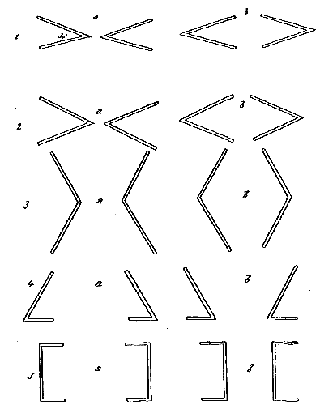
Fig. 7.
[271]The maximum is reached in No. 1a, where the angle has the arrowhead form and each angle points to the other. It should be remarked that the diagram is somewhat misleading in respect to the distance of the figures, which in this as in the other experiments was 25 cm. The figures therefore were far enough away from each other to be perceived and imaged in individual distinctness. But the 'energy' of the lines, especially where the lines united to form an acute angle, was often sufficient to overcome the effect of this separation, and either to bring the figures nearer together or to unite them into a single object. The notes are very decisive in this regard. A few of them may be cited: "The angles tended to join points." "The figures showed a tendency to move in the direction of the apex." "The angles (2a) united to form a cross." "When both figures (4b) were in mind I felt disagreeable strains in the eyeballs; one figure led me to the right and the other to the left." The effect of the last-named figures (4a) seemed to be different from that of 1a and 2a, though the apex of each angle was turned to that of the other in each of the three cases. "The two angles," says another subject, speaking of 4a, "appeared antagonistic to each other." It will be observed that they are less acute than the other angles referred to, and the confluent lines of each figure are far less distinctly directed towards the corresponding lines of the opposing figure, so that the attention, so far as it is determined in direction by the lines, would be less likely to be carried over from the one image to the other.
On the other hand, when the angles were turned away from each other the legs of the angles in the two figures compared were brought into closer relation, so that in 2b, for instance, the average is even higher than in 2a. Similarly the average in 3b, an obtuse angle, is higher than in 3a. The notes show that in such cases the contrasted angles tended to close up and [272]coalesce into a single figure with a continuous boundary. "The ends (2b) came together and formed a diamond." "When the angles were turned away from each other the lines had an occasional tendency to close up." "There was a tendency to unite the two images (4a) into a triangle." "The two figures seemed to tug each other, and the images were in fact a little closer than the objects (4a)." "The images (4a) formed a triangle." So with regard to the figures in 5a. "When both were in the field there seemed to be a pulling of the left over to the right, though no apparent displacement." "The two figures formed a square."
The lowest average—and it is much lower than any other average in the table—is that of 5b, in which the contrasted objects have neither angles nor incomplete lines directed to any common point between the objects. In view of the notes, the tabulated record of these two figures (5b) is very significant, and strikingly confirms, by its negative testimony, what 1a and 2b have to teach us by their positive testimony. The averages are, in the three cases just cited: 1a, 35.11 seconds; 2b,33.11 seconds; 5b, 15 seconds per minute.
On the whole, then, the power of the line to arrest, direct, and keep the attention, through the greater energy and definiteness of the processes which it excites, and thereby to increase the chances of the recurrence and persistence of its idea in consciousness, is confirmed by the results of this series. The greatest directive force seems to lie in the sharply acute angle. Two such angles, pointing one towards the other, tend very strongly to carry the attention across the gap which separates them. (And it should be borne in mind that the distance between the objects exposed was 25 cm.) But the power of two incomplete lines, similarly situated, is not greatly inferior.
It thus appears that the attention process is in part, at least, a motor process, which in this case follows the direction of the lines, acquiring thereby a momentum which is not at once arrested by a break in the line, but is readily diverted by a change in the direction of the line. If the lines are so situated that the attention process excited by the one set is carried away from the other set, the one set inhibits the other. If, on the [273]other hand, the lines in the one set are so situated that they can readily take up the overrunning or unarrested processes excited by the other set, the two figures support each other by becoming in fact one figure. The great importance of the motor elements of the attention process in ideation, and thus in the persistence of the idea, is evident in either phase of the experiment.
| Seconds | Seconds. | ||||||
| 1 | Figures | alike: | Left | 30.8 | Right | 31.9 | |
| 2 | " | unlike: | Simple | 27.10 | Complex | 34.62 | |
| 3 | " | " | Small | 24.54 | Large | 33.30 | |
| 4 | " | " | Gray | 25.61 | White | 29.53 | |
| 5 | " | " | Plain | 23.92 | Marked | 37.48 | |
| 7 | " | " | (colored) | 5 seconds | 27.75 | 10 second | 29.15 |
| 8 | " | " | (gray) | 5 seconds | 25.42 | 10 seconds | 32.12 |
| 9 | " | " | 1st exposure | 12.64 | 2d exposure | 36.45 | |
| 10 | " | " | Vertical line | 34.94 | Hor. line | 34.49 | |
| 11 | " | " | Full-faced | 28.10 | Outline | 41.08 | |
| 12 | " | " | Figure | 29.26 | Int. lines | 39.32 | |
| 13 | " | " | Figure | 34.03 | Vert. lines | 36.40 | |
| 14 | " | " | Stationary | 28.88 | Moved | 37.39 | |
| 15 | " | " | Gray | 30.90 | Colored | 37.81 | |
| 16 | (See Table XVI.) | ||||||
If we put these results into the form of propositions, we find:
1. That when the objects are similar surfaces, seen under similar conditions, the chances of the recurrence and persistence of their images are, on the whole, practically equal.
2. That surfaces bounded by complicated outlines have an advantage in ideation, other things equal, over surfaces bounded by simple outlines.
3. That as between two objects of unequal area—color, form, and other conditions being the same—the larger object has the advantage in the ideational rivalry.
4. That the image of a white object has a like advantage over the image of a gray object.
5. That broken or complex lines have in ideation an advantage over straight or simple lines.
6. That an object with varied content, other conditions [274]remaining the same, has an advantage over an object with homogeneous surface.
7 and 8. That an increase of the time during which the attention is given to an object increases the chances for the recurrence of its image or idea.
9. That of two objects to which attention is directed in succession, the object last seen has a distinct advantage in the course of ideation following close on the perception of the objects.
10. That lines of similar appearance and equal length, one of which is vertical and the other horizontal, have, like surfaces of similar appearance and form and equal dimensions, practically equal chances of recurrence and survival in ideation, the slight difference in their chances being in favor of the vertical line.
11. That as between two figures of similar form and equal dimensions, one of which has a filled homogeneous content and the other is a mere outline figure, the latter has a marked advantage in the course of ideation.
12. That of two linear and symmetrical figures, of which one is an outline figure with continuous boundary, and the other consists of the same linear elements, similarly disposed, as the first, but has its lines disconnected so that it has no continuous boundary, the latter figure has the advantage in ideation.
13. That if, with material similar to that described in paragraph 12, the disconnected lines are arranged so as to be vertical and equidistant, the advantage in ideation still remains with the disconnected lines, but is much reduced.
14. That if one of two figures, of similar appearance and form and of equal dimensions, is kept in motion while it is exposed to view, and the other is left at rest, the image of the moving object is the more persistent.
15. That, under like conditions, colored objects are more persistent in ideation than gray objects.
16. That lines and sharp angles, as compared with broad surfaces, have a strong directive force in the determination of the attention to their images or ideas; that this directive force is strongest in the case of very acute angles, the attention being carried forward in the direction indicated by the apex of the angle; but that uncompleted lines, especially when two such [275]lines are directed towards each other, have a similar and not much inferior force in the control of the course of ideation.
If we should seek now to generalize these experimental results, they would take some such form as the following:
Abstraction made of all volitional aims and all æsthetic or affective bias, the tendency of an object to recur and persist in idea depends (within the limits imposed by the conditions of these experiments) upon the extent of its surface, the complexity of its form, the diversity of its contents, the length and recency of the time during which it occupies the attention, the definiteness of the direction which it imparts to the attention (as in the case of angles and lines), its state of motion or of rest, and, finally, its brightness and its color.
These conditions, however, are for the most part but conditions which determine the energy, diversity, complexity and definiteness of the active processes involved in the bestowal of attention upon its object, and the experiments show that such active processes are as essential in ideation as in perception. The stability of an image, or internal sensation, thus depends on the activity of its motor accompaniments or conditions. And as the presence of an image to the exclusion of a rival, which but for the effect of these motor advantages would have as strong a claim as itself to the occupation of consciousness (cf. Series I., X.), may be treated as a case of inhibition, the greater the relative persistence of an image or idea the greater we may say is the 'force' with which it inhibits its rival. Exclusive possession of the field involves, to the extent to which such possession is made good, actual exclusion of the rival; and exclusion is inhibition. Our generalization, accordingly, may take the following form:—
The inhibitory effect of an idea, apart from volitional or emotional bias, depends upon the energy, diversity, complexity and definiteness of the motor conditions of the idea.
FOOTNOTES.
1 Baldwin, J.M.: 'Dictionary of Philosophy and Psychology,' New York and London, 1901, Vol. I., article on 'Inhibition.'
2 Binet, A.: Revue Philosophique, 1890, XXIX., p. 138.
3 Binet, A.: Revue Philosophique, 1890, XXX., p. 136.
4 Binet, A., et Henri, V.: Revue Philosophique, 1894, XXXVII., p. 608.
5 Heymans, G.: Zeitschrift f. Psych. u. Physiol. d. Sinnesorgane, 1899, Bd. XXI., S. 321; Ibid., 1901, Bd. XXVI., S. 305.
6 Saxinger, R.: Zeitschrift f. Psych. u. Physiol. d. Sinnesorgane, 1901, Bd. XXVI., S. 18.
7 Cf. Münsterberg, H.: 'Grundzüge d. Psychologie,' Bd. I., Leipzig, 1900, S. 532.
8 Binet, A. et Henri, V.: op. citat.[277]
Since Gallon's classic investigation in the field of mental imagery several similar investigations have been pursued in the same direction, chiefly, however, for the purpose of discovering and classifying types of imagination.
Little has been done in the line of developing and studying the problems of the memory image proper, and still less, in fact almost nothing, is to be found bearing on the control of the visual memory image. The general fact of this control has been presented, with greater or less detail, based upon returns from questionaries. Gallon himself, for example, having referred to instances in which the control was lacking, goes on to say1: "Others have complete mastery over their mental images. They can call up the figure of a friend and make it sit on a chair or stand up at will; they can make it turn round and attitudinize in any way, as by mounting it on a bicycle or compelling it to perform gymnastic feats on a trapeze. They are able to build up elaborate structures bit by bit in their mind's eye and add, substract or alter at will and at leisure."
More recent writers classify the students, or other persons examined, according to these persons' own statements with regard to the nature and degree of control over the mental images which they consider themselves to possess. An article by Bentley2 is the only study of a specific problem of the memory image. After a glance at the literature with reference to methods pursued in the investigation of problems of memory in general, Bentley outlines 'a static and genetic account' of the memory image in particular, and presents details of experiments 'carried on for the special investigation of the visual memory image and its fidelity to an original presentation.'
[278]Of the many memory problems as yet unattacked, that of the control of the mental image is one of the most interesting. The visual image obviously offers itself as the most accessible and the experiments described in this report were undertaken with the purpose of finding out something about the processes by which control of this image is secured and maintained. The report naturally has two aspects, one numerical and the other subjective, presenting the statements of the subjects as to their inner experiences.
The term 'suppression' is used as a convenient one to cover the enforced disappearance of the designated image, whether it be directly forced out of consciousness (a true suppression) or indirectly caused to disappear through neglect, or limitation of the attention to the other image which is to be retained.
As this was an investigation of the control of memory images, the presence of these images under conditions most favorable to their vividness and distinctness was desirable. An immediate mental recall at the end of five seconds of visual stimulation, under favorable though not unusual conditions of light, position and distance, seemed most likely to secure this desideratum. Experimentation showed that five minutes was, on the whole, a suitable period in which to secure the information needed without developing a fatigue in the subject which would vitiate the results.
The experiments made in the visual field were restricted to visual memory images which were called up by the subject during the five minutes succeeding a five seconds' presentation of one or two objects. The subject sat, with his eyes closed, about four feet from a wall or screen, before which the object was placed. At a signal the eyes were opened, and at a second signal five seconds later they were closed. If an after-image appeared the subject reported its disappearance, and then called up the image of the object just presented, and reported as to its clearness, vividness, persistency and whatever phenomena arose; and when directed he sought to modify the image in various ways to be described later.
There were six subjects in experiments conducted during the winter of 1900-1901, and six (five being new ones) in experiments [279]of the fall of 1901. They were all good visualizers, though they differed in the readiness with which they visualized respectively form or color.
The experiments of the first few weeks were designed to establish the fact of control by the subjects over a single visual memory image as to its position, size, outline, color, movement and presence. In general it was established that a considerable degree of control in these particulars existed in these subjects.
Later, two objects were presented at a time, and were such small articles as a glass ball, a book, a silk purse, an eye-glass case, an iron hook, and so forth. Still later, colored squares, triangles, or discs were used exclusively.
The investigation followed these lines: I. Movements of a single image; II. Changes of color of a single image; III. Movements of two images in the same and in different directions; IV. Suppression of one of two images; V. Movements of a single image, the object having been moved during the exposure.
The first table gives the time in seconds taken to move voluntarily a single image (of a colored square or disc) to the right, left, up or down, and in each case to restore it to its original position. There were thirty movements of each kind for each of the six subjects, making one hundred and eighty for each direction and also for each return, the total of all movements being fourteen hundred and forty. The distance to which the subjects moved the images was not fixed, but was in most cases about twelve inches. The time was taken with a stop-watch, and includes the time between the word of command, 'right,' etc., of the director and the verbal report 'now' of the subject. It includes, therefore, for each movement two reaction times. The subject reported 'now' the instant the color reached, or appeared at, the designated place, not waiting for the completion of the shape which usually followed. Two of the subjects (H. and K.) took much longer than the other four, their combined average time being almost exactly four times the combined average time of the other four.[280]
MOVEMENTS OF A SINGLE IMAGE.
30 Movements of Each Kind for Each Subject Average Time in Seconds.
| Subjects | To Right | Return | To Left | Return | Up | Return | Down | Return | Averages | |
|---|---|---|---|---|---|---|---|---|---|---|
| B. | 1.30 | 1.07 | 1.06 | 1.11 | 1.13 | |||||
| 0.58 | 0.73 | 0.46 | 0.45 | 0.55 | ||||||
| G. | 1.44 | 1.15 | 0.99 | 0.82 | 1.10 | |||||
| 0.92 | 0.89 | 0.76 | 0.57 | 0.78 | ||||||
| H. | 7.12 | 6.42 | 5.96 | 5.85 | 6.34 | |||||
| 4.51 | 4.41 | 4.36 | 4.40 | 4.42 | ||||||
| I. | 1.28 | 1.34 | 1.62 | 1.47 | 1.43 | |||||
| 0.67 | 0.62 | 0.86 | 0.72 | 0.72 | ||||||
| J. | 1.71 | 1.42 | 1.40 | 1.14 | 1.50 | |||||
| 1.34 | 1.53 | 0.77 | 0.74 | 1.09 | ||||||
| K. | 4.81 | 4.64 | 3.29 | 3.28 | 4.01 | |||||
| 2.40 | 2.71 | 1.91 | 1.56 | 2.14 | ||||||
| Averages | 2.95 | 2.67 | 2.39 | 2.23 | 2.59 | |||||
| 1.72 | 1.82 | 1.52 | 1.41 | 1.62 | ||||||
The general averages for the different movements show that movement to the right was hardest, to the left next; while movement downward was the easiest. A marked exception is seen in I., for whom the upward movement was the hardest and movement to the right was the easiest. J. found movement to the left hardest. For the return movements, the general averages show that the return from the left is the hardest, from the right next; while from below is the easiest. Here again I. found the return from above the hardest and from below the next hardest; while from the left was the easiest.
Arranging the subjects in the order of the average time, taken for all the movements, including the returns to the original position, we have
| H. | 5.35 | average time out and back. |
| K. | 3.07 | " |
| J. | 1.29 | " |
| I. | 1.07 | " |
| G. | .94 | " |
| B. | .84 | " |
All the six subjects whose time records appear in Table I. and also four others whose time was not recorded reported eye [281]movements, or a tendency to eye movement. A. and K. reported that when the image was dim there was accommodation as for long vision and when the image was vivid there was accommodation as for near vision. B. ideated the new position and the eye movement occurred automatically. G. reported a contraction of the scalp muscles and a tendency to cast the eyes up and locate the image at the back of the head inside; this was an inveterate habit. He reported also accommodation for the different distances of the image and an after-feeling of strain in the head. H. reported a strong tendency in the eyes to return to the center, i.e., the original position, and to carry the image back there. All the subjects frequently reported a sense of relief in the eye muscles when the command to return the image to the center was given—also, a tension in the forehead in the upward movement which was accentuated (with H.) when there was headache. J. reported, 'always eye strain,' and noticed that the eyes usually turned as far as the new position, but sometimes stopped short of it. K. reported first an eye movement, then an ideation of the image in the new position. E. and H. turned the head to right and left for movements of the image in those directions. A., B., E. and F. believed that they could inhibit the eye movement. Subjects were at times unconscious of eye movements. H. articulated the names of the colors of the image and found that it aided the movement of the image to say to himself, for example: "Don't you see that blue square there?"
All but J. reported a loss in vividness and also, though to a less degree, in distinctness whenever the image was moved away from the center. J. found no difference. H. reported that details of the object which were reproduced in the image when at the center were not discernible in the image in other positions, also that at the left the image was more vivid than at the right. B.'s memory image of a watch, three minutes after it was called up, was still so clear that he read from it the time. E., who was an experienced photographer, had no difficulty in recalling outline, light and shade, but had difficulty in reproducing color. I. frequently lost the form in making the required improvements.[282]
Under manipulation the memory image usually retained its distinctness and vividness with no loss or with but slight loss when in its original position, to the end of the five minutes of the experiment. The image, also, seldom disappeared except for the momentary disappearances in passing from one position to another, which are referred to later. Under passive observation of the memory image disappearances, though of short duration, were frequent and there was a noticeable fading away of color and loss of outline.
The memory image almost without exception, when first recalled, was located in the direction and at the distance of the object presented.
In moving from the center to right and left the image remained in the same plane with a few exceptions; in moving up and down it moved on an arc whose center was at the eye. This was especially true of the downward motion, which was almost always to a greater distance than any of the other motions.
C., D., F. and H. felt the need of a support for the image in any except the central position. This was true especially of the position above the center, but was entirely overcome by practice by C., F. and H., and partially by D. In movements where time was to be recorded, the distance was from six to eighteen inches, but the image could be carried by all the eleven subjects to any part of the room or beyond the room. Usually the method followed was to fix the attention on the suggested position and then the image appeared there, sometimes complete at the outset, but usually in part at first, then developing instantly to completion. When the subject was requested to trace the image in transitu, this could usually be accomplished, but the time was much longer. Frequently, in such a case, the image was lost during the last third or fifth of its journey. J. "felt conscious of a something that went in the suggested direction but did not develop details out of this material; had to await development of the image at the new locality." "At times forced this development out of the vague something that seemed to go over." G. had 'no feeling of transition in space.' K. did not perceive the image in transitu.[283] I. perceived the image in transitu when the movement was away from the center but when the image was to return to the center its passage was too quick to be followed; 'it came out at the center.'
J. noticed that in moving from the center the image took a curved path towards himself, and that the position to which the image moved always seemed further away than the position from which it came, but the new position seemed to be readjusted when the next movement occurred.
The return to the center seemed easier to all the subjects except G., who was conscious of no difference between the movements with respect to ease. Several described the return to the center as like the return of a small ball snapped back by a stretched elastic cord.
With D. a suggestion of weight in the perception of the object was a hindrance to moving its memory image. Also the image of a short piece of brass tubing persisted in rolling off the table and along the floor and could not be held stationary. Other objects rotated rapidly, and much effort was needed to 'slow down' the rotation and to bring the objects to rest and keep them at rest.
Tables II. and III. show the results of experiments in changing the color of a single image. This was usually a square, sometimes a disc. The time of optical perception was five seconds. After the disappearance of after-images, if there were any, eighteen to twenty-four changes were made in the color of the memory image, occupying from four and a half to six minutes.
The colors were saturated blue, green, yellow and red, and each one was changed into each of the other colors and then restored. The order of change was varied to avoid uniformity of succession. The four colors were shown to the subjects each day before the experiments began, to establish a standard. The time was taken with a stop-watch, and includes the time between the director's word of command, 'green,' etc., and the subject's report, 'now,' or 'green,' etc. It includes, therefore, two reaction times. The subject reported 'now' the instant he secured the desired color, not waiting for the completion of the shape that usually followed.[284]
CHANGES OF COLOR. SINGLE IMAGE. 72 CHANGES OF EACH COLOR.
| From Blue. | From Green. | |||||||||||
|---|---|---|---|---|---|---|---|---|---|---|---|---|
| Subject. | To Green. | Return to Blue. | To Yellow. | Return to Blue. | To Red. | Return to Blue. | To Blue. | Return to Green. | To Yellow. | Return to Green. | To Red | Return to Green. |
| B. | 1.72 | 0.50 | 1.66 | 0.38 | 1.81 | 0.50 | 1.23 | 0.56 | 1.10 | 0.65 | 1.33 | 0.56 |
| G. | 1.15 | 0.60 | 1.10 | 0.79 | 0.89 | 0.65 | 1.75 | 0.87 | 1.04 | 0.75 | 1.35 | 0.71 |
| H. | 4.67 | 4.25 | 4.87 | 4.06 | 4.81 | 3.83 | 5.27 | 4.50 | 5.81 | 4.89 | 5.37 | 4.94 |
| I. | 2.27 | 1.25 | 1.77 | 1.19 | 1.83 | 1.25 | 2.15 | 0.93 | 1.71 | 1.04 | 1.92 | 1.15 |
| J. | 1.38 | 0.81 | 1.29 | 0.94 | 1.29 | 0.95 | 1.65 | 1.08 | 1.15 | 0.77 | 1.60 | 0.81 |
| K. | 2.35 | 1.71 | 1.96 | 1.66 | 2.10 | 1.19 | 2.25 | 1.25 | 2.17 | 1.73 | 2.44 | 1.27 |
| Av. | 2.26 | 1.52 | 2.11 | 1.50 | 2.15 | 1.39 | 2.41 | 1.53 | 2.15 | 1.65 | 2.34 | 1.57 |
| From Yellow. | From Red. | |||||||||||
|---|---|---|---|---|---|---|---|---|---|---|---|---|
| Subject. | To Blue. | Return to Yellow. | To Green. | Return to Yellow. | To Red. | Return to Yellow. | To Blue. | Return to Red. | To Green. | Return to Red. | To Yellow. | Return to Red. |
| B. | 1.79 | 1.06 | 1.35 | 0.87 | 1.89 | 1.10 | 1.54 | 0.58 | 1.71 | 0.62 | 1.31 | 0.71 |
| G. | 1.50 | 1.10 | 1.48 | 0.87 | 1.31 | 0.88 | 1.33 | 0.92 | 1.35 | 0.91 | 0.77 | 0.58 |
| H. | 5.02 | 4.54 | 5.73 | 3.91 | 6.15 | 4.17 | 6.35 | 3.91 | 5.89 | 4.69 | 5.54 | 4.37 |
| I. | 2.29 | 1.31 | 2.54 | 1.19 | 2.29 | 1.27 | 2.85 | 1.10 | 2.50 | 1.21 | 1.65 | 1.31 |
| J. | 1.35 | 0.98 | 1.35 | 0.65 | 1.27 | 0.88 | 1.42 | 1.04 | 1.31 | 1.02 | 1.25 | 0.85 |
| K. | 3.02 | 1.52 | 3.21 | 2.04 | 2.23 | 1.79 | 2.54 | 1.56 | 2.66 | 1.60 | 2.88 | 1.81 |
| Av. | 2.49 | 1.76 | 2.61 | 1.59 | 2.52 | 1.68 | 2.67 | 1.51 | 2.57 | 1.68 | 2.23 | 1.62 |
CHANGES TO THE FOUR COLORS.
Average time in seconds. 72 changes from and 72 changes to each color.
| To Blue. | Return from Blue. | To Green. | Return from Green. | To Yellow. | Return from Yellow. | To Red. | Return from Red. | ||
|---|---|---|---|---|---|---|---|---|---|
| From | blue, | 2.26 | 1.52 | 2.11 | 1.50 | 2.12 | 1.39 | ||
| " | green, | 2.38 | 1.53 | 2.16 | 1.64 | 2.33 | 1.57 | ||
| " | yellow, | 2.49 | 1.75 | 2.61 | 1.59 | 2.52 | 1.68 | ||
| " | red, | 2.67 | 1.52 | 2.58 | 1.68 | 2.27 | 1.62 | ||
| Average, | 2.52 | 1.60 | 2.48 | 1.59 | 2.17 | 1.58 | 2.33 | 1.55 | |
| Changes to a color from a presented color. |
Returns from a color to a presented color. | ||||
|---|---|---|---|---|---|
| 216 movements. | 216 movements. | ||||
| From presented | yellow, | 2.52 | To presented | yellow, | 1.67 |
| " | red, | 2.49 | " | red, | 1.61 |
| " | green, | 2.29 | " | green, | 1.58 |
| " | blue, | 2.16 | " | blue, | 1.47 |
| Average, | 2.37 | Average, | 1.58 | ||
| Changes to a color from a presented color. |
Returns from a color to a presented color. | ||||
|---|---|---|---|---|---|
| 216 movements. | 216 movements. | ||||
| To | blue, | 2.52 | From | blue, | 1.60 |
| " | green, | 2.48 | " | green, | 1.59 |
| " | red, | 2.33 | " | yellow, | 1.58 |
| " | yellow, | 2.17 | " | red, | 1.55 |
| Average, | 2.37 | Average, | 1.58 | ||
The six subjects fall into two groups—three, H., I., and K., taking longer than the other three. As in the previous experiment H. was markedly longer than any of the others.
There were seventeen hundred and twenty-eight changes in all, including returns to the original color. There were two hundred and sixteen changes from each of the four colors as presented, to each of the other three and, of course, the same number of returns to the presented color.
The change to blue from the other presented colors was the most difficult and the change to yellow was the easiest.
The averages (216 exp. each) are,
| Sec. | ||
| To | blue, | 2.55 |
| " | green, | 2.48 |
| " | red, | 2.33 |
| " | yellow, | 2.17 |
The returns to the presented colors did not differ greatly from each other, the averages (216 exp. each) being:
| Sec. | ||
| From | blue, | 1.603 |
| " | green, | 1.597 |
| " | yellow, | 1.589 |
| " | red, | 1.549 |
From red appears to be the easiest change, and from blue the hardest.
The getting away from a presented blue was the easiest and from a presented yellow the most difficult, as seen by these averages (216 exp. each):
| Sec. | ||
| From | yellow, | 2.54 |
| " | red, | 2.49 |
| " | green, | 2.29 |
| " | blue, | 2.16 |
[286]The returns to the presented colors show that it was hardest to get back to the presented yellow, easiest to get back to the presented blue, the averages (216 exp. each), being:
| Sec. | ||
| To | yellow, | 1.67 |
| " | red, | 1.61 |
| " | green, | 1.58 |
| " | blue, | 1.47 |
The facts as to blue and yellow shown by these four tables of averages may be expressed also in this way:
If a blue square was shown, it was easier to change the blue memory image into the other colors, and also easier to get back the blue memory image after such changes, than if any other of the three colors was presented.
If another color than blue was shown it was harder to change the memory image of that color to blue than to any of the other colors, and also harder to get back to the memory image of that color from blue than from any of the other three colors.
If a yellow square was shown, it was harder to change the yellow memory image into the other colors, and also harder to get back the yellow memory image after such changes than if any other of the three colors was presented.
If another color than yellow was shown, it was easier to change the memory image of that color to yellow than to any of the three other colors, and also easier to get back to the memory image of that color from the yellow than from any of the other three colors except red.
If we combine all the changes into a color (both changes from another presented color and returns to this color previously presented) we find that changes to green are hardest, to yellow easiest. The averages (for 432 exp. each) are,
| Sec. | ||
| To | green, | 2.03 |
| " | blue, | 1.99 |
| " | red, | 1.97 |
| " | yellow, | 1.92 |
The changes away from a color (both from this color previously presented and from this color to the other previously presented colors) show that it was hardest to get away from yellow, [287]easiest to get away from blue, the averages (for 432 exp. each) being:
| Sec. | ||
| From | yellow, | 2.06 |
| " | red, | 2.02 |
| " | green, | 1.94 |
| " | blue, | 1.88 |
As for the subjects, all six found yellow the easiest to change into, one finding red equally easy.
For seven of the subjects, mental repetition of the name of the color (usually accompanied by articulatory movements) tended to bring up the color, and one other subject occasionally used this method of bringing about a change that was difficult. With D. the color did not come at repetition of the name. G. was assisted by auditory recall of the name. Nine subjects reported a feeling of strain, usually in the eyes as of focusing, occurring especially when there seemed a difficulty in producing the desired change. The tension attended almost exclusively changes of the presented color, not restorations of that color. For D. this strain was considerable, for G. there was also an after-feeling of strain in the head. For G. the image was clearest when the feeling of strain was least, and J. secured the promptest and clearest results when he could most nearly rid himself of anxiety as to the result. K. in one instance (a change from green to yellow) became conscious of the setting of his jaws and motions of feet and body in aid of his attempt. H. frequently had the feeling of physical fatigue.
In most cases the restoration of the presented color was as a complete square, triangle, etc. In changes from the presented color the new color appeared at a corner, or edge, or as a patch at the center. With E. the "color flashed over the whole field and then had to be restricted to the figure." B. "held the outline, emptied of the old color, while it was filled in with the new." D. "had a clear outline, and the new color came in small blotches inside, and effort spread them out to cover the whole figure." For I. the "new color came sliding in from the right side over the old, which, however, disappeared as if [288]it were moving out of focus." With A. the new color usually came from either the lower left-hand or the upper right-hand corner. F. kept a clear outline and the new color came in from the right.
When E. found it difficult to create at the center the desired color, he thought of some object (garment, grass, sky, etc.) of that color and then transferred it to fill in the outline preserved at the center. B. moved the colored figure aside and in its place put one of the desired color, moved the new figure up to the old and there superposed it. With G. the new colors seemed of new material and there was felt to be an accumulation about the center, of old color-material. Then he located the square outside of this imaginary debris and began again. H. found that the colors of his own experiments, in which he used color squares framed in black, came to his mind at the names of the desired colors, and the association soon gave him the figure also. I. located the new colors around the presented one, first all at the right; then green at the left, red at the right, yellow above, when presented blue was at the center; then yellow and green were at the upper left-hand corner, while red came from behind. The new color 'slid in over the old.' It was found easier to secure the desired color when its position was known beforehand. J. also used a similar device. He 'turned towards the places and brought out the required color and filled the central outline with it.' He tried to break up this scheme and got red without going after it but found himself 'at a loss to find the colors.' Later he succeeded so that the required color simply appeared in the outline of the old color at the center. K. turned his eyes to corners of the central outline, then to the center, and found that this aided in developing the desired color from the corners inward. When difficulty arose, he experienced muscular tension in body and legs and jaws.
Five of the subjects considered the change from a presented color to blue the hardest and one found the change to red hardest. Green was placed second in difficulty by one, and blue second by the one who found red the hardest. Three reported the change to yellow the easiest and two the change to red.[289]
The change from red to yellow caused 'an unpleasant sensation' in C. and the new figure 'had a maroon halo.'
A. in returning from green or blue to yellow passed through a gray; so, once, in changing from yellow to green, and once, green to red. With A. blue retinal clouds, which often came, aided changes to blue and hindered at times changes to other colors. B. had a fusion of yellow and red in changing from yellow to red. G. had a tendency to leave uncolored the lower left-hand corner and it 'was wood-colored'; G. had a gray image as the result of fusion of retinal clouds with red memory image. With H. blue always came in as robin's-egg blue, which then had to be changed to the standard blue. In one instant the green memory image seemed to shift into a purple and change to a positive retinal image which interfered with changes to other colors. J. found whistling and humming an aid in relaxing an unnatural state of tension which would hinder the best results. To increase the vividness of the image he would recall the black background on which the colored squares had hung. In one experiment K. became 'desperately tired of yellow,' which was the presented color, so that his 'mind was ready to jump to any color rather than yellow.' The returns to yellow were, in this experiment, slower than the changes from yellow.
The images sometimes changed sizes, being at times smaller, but usually larger than the object. In one experiment of C. the image was four times the size of the object, which was a green square with sides of one inch.
Table IV. gives the results of experiments in the movements of two images, the objects presented being colored squares or discs. Time of perception was five seconds. After the disappearance of after-images, if there were any, eighteen to twenty-four movements with returns to original positions were made, occupying five or six minutes. The colors were saturated blue, green, yellow and red. Four of the movements were such as separated the two images, and in four the two moved uniformly.[290] The first four movements were right and left, left and right, up and down, down and up; the left-hand object followed the first direction indicated. The right-and-left movements involved the crossing of the images. The last four were both to right, to left, up, down. The time was taken with a stop-watch and includes the time between the director's word of command and the subject's report, 'now.' It includes, therefore, two reaction times. The subject reported the instant the colors reached, or appeared at, the suggested positions.
It is to be noticed that H. was very much slower than any of the others in making the movements, both out and back; and that K., while also slower (though much less so than H.) in making the movements outward, was no slower in making the return movements.
MOVEMENTS OF TWO IMAGES.
Twenty movements of each kind for each subject. Averages in seconds.
| In Opposite Directions. | ||||||||
| Subj. | L.-R. | Ret. | R.-L. | Ret. | U.-D. | Ret. | D.-U. | Ret. |
|---|---|---|---|---|---|---|---|---|
| B. | 1.82 | 2.90 | 2.10 | 2.27 | ||||
| 0.86 | 0.87 | 0.73 | 0.86 | |||||
| G. | 3.02 | 2.86 | 2.68 | 2.63 | ||||
| 1.98 | 2.25 | 1.63 | 2.01 | |||||
| H. | 9.18 | 10.30 | 7.50 | 7.15 | ||||
| 5.16 | 6.90 | 5.36 | 5.21 | |||||
| I. | 4.17 | 3.52 | 3.40 | 3.37 | ||||
| 1.26 | 1.47 | 1.23 | 1.31 | |||||
| J. | 2.17 | 2.90 | 2.87 | 2.27 | ||||
| 1.05 | 1.63 | 1.02 | 1.13 | |||||
| K. | 5.51 | 6.43 | 5.16 | 4.81 | ||||
| 1.43 | 1.48 | 1.20 | 1.23 | |||||
| Ave. | 4.32 | 4.82 | 3.82 | 3.75 | ||||
| 1.96 | 2.43 | 1.87 | 1.96 | |||||
Average of all movements involving separation (480), 4.18. Returns, 2.06.
| In Same Direction. | ||||||||
| Subj. | R. | Ret. | L. | Ret. | U. | Ret. | D. | Ret. |
|---|---|---|---|---|---|---|---|---|
| B. | 1.31 | 1.22 | 1.30 | 1.11 | ||||
| 0.72 | 0.67 | 0.72 | 0.85 | |||||
| G. | 2.66 | 2.35 | 3.01 | 2.53 | ||||
| 2.00 | 1.86 | 2.22 | 1.86 | |||||
| H. | 8.45 | 7.91 | 5.66 | 7.66 | ||||
| 6.53 | 5.95 | 5.96 | 6.11 | |||||
| I. | 2.57 | 2.27 | 2.13 | 2.05 | ||||
| 0.97 | 1.26 | 1.00 | 1.13 | |||||
| J. | 1.11 | 1.16 | 1.08 | 11.5 | ||||
| 0.68 | 0.90 | 0.73 | 0.71 | |||||
| K. | 3.97 | 3.91 | 3.60 | 4.07 | ||||
| 1.35 | 1.50 | 1.75 | 1.71 | |||||
| Ave. | 3.33 | 3.14 | 2.79 | 3.10 | ||||
| 2.04 | 2.02 | 2.04 | 2.06 | |||||
Average of all movements together (480), 3.09. Returns, 2.04.[291]
There were nineteen hundred and twenty movements in all, including the returns to the original positions.
In the order of difficulty as shown by the time taken, the movements stand as follows, the numbers being the averages in seconds for one hundred and twenty movements of each kind:
| 1. Right and left (i.e., crossing), | 4.82 | sec. |
| 2. Left and right, | 4.32 | " |
| 3. Up and down, | 3.82 | " |
| 4. Down and up, | 3.75 | " |
| 5. Both right, | 3.33 | " |
| 6. Both left, | 3.14 | " |
| 7. Both down, | 3.10 | " |
| 8. Both up, | 3.04 | " |
In the experiments in which the time was recorded, there was no disappearance of either image except where movements were made successively. In these cases frequently the image which was awaiting its turn vanished until the first image was placed, a time varying from a quarter of a second to three or four seconds. Occasionally the image already placed would vanish, while the other was en route; the subject's attention in both these cases being centered exclusively on the image he desired to move. This was especially the case when the distances to which the images were moved were great, as to the ends of the room or to ceiling and floor. In other experiments, where, after the movements took place, the images were held for a short time, there were disappearances of one image or the other ranging from one quarter of a second to fifteen seconds, most of the absences, however, being under five seconds. The absences were more numerous in the latter half of the five minutes covered by the experiment. Occasionally a noise in the adjoining room or in the street made the images disappear.
The greater ease of vertical as compared with horizontal [292]movements recalls an observation of Ladd,3 in which the idioretinal light was willed into the shape of a cross. Ladd says: "The vertical bar of the cross seems much easier to produce and to hold steadily in the field." This present observation is also in accord with that described above in the case of movements of a single image.
On several occasions G. reported that the crossing movement was the easiest, and that the return to the original places was not easier than the other movements. In one experiment he reported the field at the center cloudy, so that it was a relief to get away from it. G.'s time records on these occasions did not support his feeling with regard to the return to the original places, but they show that the crossing movements were, in two or three instances, quicker than the 'left-and-right' movement, and the impression of promptness thus made persisted to the end of the experiment. The four movements in which both images moved uniformly were easier than the four in which movements in different directions were involved.
All the subjects were frequently conscious of eye movements, and more frequently conscious of a tendency to eye movement, which was, however, inhibited. That the strain in the eyes was practically constant during all the movements away from the original places, seems evident from the unanimous reports of a sense of relaxing and relief in the eyes, attending the movement of returning to the original places. The distance to which the images were moved was a powerful factor in producing this sense of strain. When the two images were moved and held but a few inches apart there was no sense of strain and no conscious alternation of attention. Practice increased greatly the distance at which the images could be held apart without conscious alternation of attention, but the strain of holding them apart and of inhibiting eye movement increased with the distance.
In the movements for which the time was recorded the distances varied, according to the subject, from six to eighteen inches, and varied at times with each subject. In the experiments [293]without time record, A., B., C., E., F. and H. reported that they were able to move the images apart to ceiling and to floor, or to the opposite ends of the room, and to hold them there both in consciousness at the same time without either alternation of attention or eye movement, a tendency to which was felt but was inhibited. I. held them two feet apart without fluctuation of attention. A. reported: "I tend to turn my body to left or to right when I move the images in either of these directions." C., H. and I. said: "The eyes diverge when one image moves slowly to the right and one to the left." D. found a slight movement of the eyes which could be detected by the fingers placed lightly on the lids, when the attention was alternating between the images. K. had convergence and divergence of the eyes for crossing and separation respectively and he was accustomed to run his eye over the outline of the image. Strain in the scalp muscles was reported by A., B., E., F. and G. The up-and-down movements were universally characterized by a feeling as if one eye tended to move up and the other down. C. unconsciously inclined his head to the left in such movements as if to make the line of the two eyes parallel with the direction of the movement.
E., when holding the images two feet apart, had a strong feeling of difference of accommodation when alternating in observation and so judged the two to be in different planes.
When the movement seemed difficult the strain was greater, and when an image became dim the effort to restore its brightness or its distinctness of outline was accompanied by a feeling of bringing it nearer by accommodation and near focusing. J. found that the two images approached each other when he attempted to secure greater vividness. An analogous instance is that of A.G.C., a subject quoted in 'Mental Imagery of Students,' by French.4 In calling up the image of a die this subject held up his hand as if it held the die. When there was no sense of strain the hand was fourteen inches from his face, but when effort was made to image all the sides of the die at once he unconsciously moved his hand to within four inches of his eyes. French says in this connection: "Situation depends [294]on the attention involved and the inference is near that this phenomenon may be connected with feelings of convergence and accommodation which so often accompany concentrated visual attention."
The movements were assisted by mentally saying, 'this image is here, that image is there,' in the case of D., G., H., I. and K.; or, at times, by articulating the names of the image, or of the color when the image was of a colored object. I. found it easy to hold outlines, but in order to retain colors in the movements of separation, he had to speak the names continually. H. also repeated the names continually, as, for example, 'violet here, orange there.'
A. represented the line of vision as going to each of the two images, which seemed connected by a line, thus making a triangle, and then pictured himself as standing off and seeing himself looking at the images. When the two objects were solid and the images were to be crossed, B. carried one image above or below the other, but when the objects were colored surfaces he conceived them as pure colors so that there was no sense of impenetrability to interfere with their crossing and they glided by each other. In the up-and-down movements he moved one at a time. C. and D. had to construct some support for the images. In most of the experiments H. first moved the images to a greater distance away, somewhat higher up and a little farther apart. In this new position the images appeared smaller and the suggested movements were made more easily. Sometimes in crossing two colored images he observed a partial mixture of the colors. J. found that a sharp movement of the head in the required direction aided materially in moving the images, and when the objects were colored surfaces fastened to the same card he found it necessary either to conceive the card as of rubber or to picture it as cut in two before he could make the movements of the images.
With A., B., C. and D. there were instances of unwilled movements of the images, in the experiments where the movements were not timed. These were much more frequent with D. than with the others, and to check them required prolonged effort. The more common movements of this sort were rotation [295]of the image, change of its position, separation of its parts (if detachable in the object) and change of shape. E. had a return of the two images of a preceding experiment which persisted in staying a few seconds and which were as vivid as the two legitimate occupants of the mental field.
The images were duplicated five times on different days with A., and once each with C., F. and K.
A.'s cases were these. The 'wraith' of a small box whose image was out at the right, appeared above the other image off at the left and it was turned with a corner to the front. Again, at the central position each image was duplicated, the true pair being of full size, bright and distinct, the false pair small, dim and on a more distant plane, i.e., behind the others. One of the extra images persisted against all effort to banish it, for fifty-five seconds. Again, when twelve inches apart each image was similarly duplicated. In the fourth instance the images were at the center of the field. In the fifth, the right image, eight inches from the center, was duplicated, the extra image being still farther away and above. This second image was very dark, dim and vague in outline, and came and went slowly. The right image of C., when seven feet from the center, had a dim double above it. F. had moved the right-hand image (a violet disc) close to the left when a blue disc also appeared above it. Though repeating the word 'violet' he had imaged the violet disc as blue. K. was holding the two images a foot and a half apart when an extra pair appeared at the center. Both pairs persisted for sixty seconds and then the outer pair vanished, and the inner, the false pair, grew brighter.
As was said in the case of a single image, so with double images, the motion could be traced and often was traced when the movements were away from the original positions, but on the return to the original positions the images were not usually seen in transitu. For ten of the subjects, the image moved downward uniformly on an arc whose center was at the eye; and often the right and left movements were likewise on an arc. With E. the ends of the arc for motion right and left were higher also. H., I. and J. reported that all the movements were in the same plane. The upward movement was always to a less distance [296]and the downward movement to a greater distance than the horizontal movements.
In most cases the images were the size of the percepts, in a number of cases smaller, and in a few cases larger. This was determined by comparison between the image and the percept immediately on opening the eyes and seeing the object at the end of the five minutes occupied by the experiment. A similar mode of comparison showed that, in about half of the experiments, the images were at the end of five minutes approximately equal to the percept in clearness and distinctness of outline. A comparison of these results with those obtained in a series of experiments involving passive observation of the image seems to indicate that active manipulation of the image tends to maintain the qualitative fidelity of the image when at its original position. During the progress of the experiments the reports were almost unanimous and constant that at its original position the image was vivid and distinct, but lost in both respects when away from that position, the loss being greater the greater the distance to which it was moved. Frequently there was fluctuation,—a loss of vividness and then a restoration,—which A. frequently found to be rhythmical, while in general it was evident that an increase of effort or of attention was successful in restoring lost vividness and distinctness.
D., after three minutes, read the time in the image of a watch. In superposing green on yellow, in two instances, the yellow shone through, making a mixed color, and again, in moving a green disc and a yellow disc, the green became suffused with yellow, so that the two discs were one yellow and the other greenish-yellow. For C., similarity in the two objects presented tended to make both images less vivid and distinct and to render more difficult their retention and manipulation. When one of the two objects partially overlapped the other it was difficult to separate the two images, and the area of contact was very vague in the image of the under one, and when the scrutiny reached that portion the other image returned to its original overlapping position.[297]
The next tables (V. and VI.) give the results of experiments in suppressing one of two images, the objects presented being saturated color squares, discs, triangles, etc., placed side by side, one above the other, or a smaller one superposed on a larger. The time of perception was five seconds. After the disappearance of after-images, if there were any, the subject was directed to suppress one of the two memory images, the one to be suppressed being indicated by the director. The subject reported as soon as the indicated image disappeared, and reported any return of the suppressed image and its later disappearance in consequence of his efforts. Also he reported any disappearance and reappearance of the retained image. Five minutes was the limit of the time for the experiments with a few exceptions. The times were recorded, and those given for the first suppression include the time between the director's command and the subject's report 'now' or 'gone,' and include, therefore, two reaction times. The later suppressions include but one reaction time.
SUMMARY OF ALL SUPPRESSIONS. AVERAGE TIME IN SECONDS.
| Image Suppressed | No of Exper. | Time of First Supp. | Time of Ab. of Supp. Im. | No. of Later Supp. | Time of Later Supp. | No. of Ab. of Supp. Im. | Time of Ab. of Supp. Im. | Time of All Supp. | Time of All Absence of Supp. Im. |
|---|---|---|---|---|---|---|---|---|---|
| Right. | 46 | 11.59 | 82.39 | 221 | 8.43 | 216 | 35.74 | 8.94 | 43.93 |
| Left. | 43 | 11.89 | 79.34 | 175 | 7.79 | 173 | 44.86 | 8.60 | 51.26 |
| Upper. | 22 | 11.67 | 49.77 | 150 | 6.26 | 147 | 29.75 | 6.95 | 32.35 |
| Lower. | 17 | 14.23 | 64 | 71 | 7.88 | 70 | 46.68 | 9.11 | 50.04 |
| Central. | 42 | 18.24 | 96.93 | 357 | 3.90 | 352 | 18.13 | 5.41 | 26.54 |
| Marginal. | 20 | 14.25 | 181.57 | 24 | 8.93 | 24 | 78.08 | 11.35 | 125.12 |
| Sundry. | 7 | 8.71 | 127.21 | 19 | 13.34 | 19 | 47.27 | 12.09 | 68.78 |
| Averages. | 13.48 | 91.25 | 6.46 | 32.14 | 7.60 | 41.86 |
SUPPRESSIONS GROUPED BY SUBJECTS. AVERAGE TIME IN SECONDS.
| Subject | No. of Exp. | Time of First Supp. | Time of Ab. of Supp. Im. | No. of Later Supp. | Time of Later Supp. | No. of Ab. of Supp. Im. | Time of Ab. of Supp. Im. | Time of All Supp. | Time of All Ab. of Supp. Im. |
|---|---|---|---|---|---|---|---|---|---|
| A. | 11 | 28.32 | 11.29 | 117 | 14.90 | 114 | 10.35 | 16.05 | 10.44 |
| B. | 29 | 5.79 | 270.44 | 5 | 0.25 | 5 | 138.80 | 4.98 | 251.08 |
| C. | 18 | 7.88 | 43.08 | 64 | 3.94 | 63 | 67.49 | 4.81 | 62.07 |
| D. | 14 | 23.28 | 190.07 | 6 | 31.66 | 5 | 204.60 | 25.80 | 193.89 |
| F. | 10 | 12.67 | 86.07 | 230 | 1.95 | 230 | 67.92 | 2.40 | 10.09 |
| G. | 21 | 21.88 | 20.39 | 190 | 9.97 | 184 | 19.37 | 11.15 | 19.47 |
| H. | 21 | 15.27 | 73.27 | 47 | 10.30 | 47 | 84.48 | 11.84 | 81.02 |
| I. | 26 | 9.77 | 53.83 | 96 | 5.06 | 94 | 61.34 | 6.06 | 59.72 |
| J. | 26 | 3.59 | 32.18 | 209 | 1.40 | 208 | 31.69 | 1.64 | 31.75 |
| K. | 21 | 21.63 | 71.90 | 53 | 14.75 | 51 | 70.04 | 16.70 | 31.83 |
| Averages. | 13.48 | 91.25 | 6.46 | 32.14 | 7.60 | 41.86 |
[298]There were ten subjects in most of the experiments, and the marked differences in the individual records which were evident in the previous experiments did not exist here except in the case of A., for whom alone the time required to obtain the suppression exceeded the time of absence of the suppressed image.
In several experiments the subjects were unable to suppress the indicated image, which in five cases was the image at the center of a disc and in two cases the outer portion of the disc. Further, five failures were by one subject, D., and one each by A. and F. The statistical report here given includes only the results of the successful experiments. Forty-four of the one hundred and ninety-seven were completely successful, as the suppressed image did not return throughout the entire period. The following table shows the grouping of the experiments according to the recurrence of the suppressed image:
| Returned | 0 | times, | 44 |
| " | 1 | " | 26 |
| " | 2 | " | 18 |
| " | 3 | " | 25 |
| " | 4 | " | 16 |
| " | 5 | " | 16 |
| " | 6 to 10 | " | 28 |
| " | more than 10 | times, | 24 |
| Total, | 197 |
Seventy-three and three fifths per cent. of all the experiments have five or fewer returns of the suppressed images.
The subjects suppressed the image as soon as possible after each return, the average time taken to accomplish these later [299]suppressions being 6.46 sec., while the average time of absence of the suppressed image was 32.14 sec.
Including the first efforts and the first absences of the suppressed image, the average time required to suppress the image was 7.60 sec., and the average time of absence of the suppressed image was 41.86 sec.
Arranging the subjects according to the average time they required to accomplish a suppression, we have the following order. J. and F. had more recurrences of the suppressed image than any of the other subjects.
| J. | 1.64 | sec. |
| F. | 2.40 | " |
| C. | 4.80 | " |
| B. | 4.98 | " |
| I. | 6.06 | " |
| G. | 11.15 | " |
| H. | 11.84 | " |
| A. | 16.05 | " |
| K. | 16.70 | " |
| D. | 25.80 | " |
Arranging them by the average absence of the suppressed image we have this order:
| B. | 251.08 | sec. |
| D. | 193.89 | " |
| H. | 81.02 | " |
| C. | 62.07 | " |
| I. | 59.72 | " |
| K. | 31.83 | " |
| J. | 31.75 | " |
| G. | 19.47 | " |
| A. | 10.44 | " |
| F. | 10.09 | " |
It is to be remarked, however, that the ability to keep the suppressed image out of the field increased with practice and that A. and F. had less than half the number of experiments that the rest had. D., who had but two thirds as many as most of the other subjects and therefore had less practice in suppressing the image, stands yet second in respect to this ability.
If we compare the subjects with regard to first efforts and first absences only, we obtain the following orders:[300]
| According to Ave. Time req. for first Suppression. | According to Ave. Absence of Image after first Suppression. | |||||
|---|---|---|---|---|---|---|
| J. | 3.59 | sec. | B. | 270.44 | sec. | |
| B. | 5.79 | " | D. | 190.07 | " | |
| C. | 7.88 | " | F. | 86.07 | " | |
| I. | 9.77 | " | H. | 73.27 | " | |
| F. | 12.67 | " | K. | 71.90 | " | |
| H. | 15.27 | " | I. | 53.83 | " | |
| K. | 21.63 | " | C. | 43.08 | " | |
| G. | 21.88 | " | J. | 32.18 | " | |
| D. | 23.28 | " | G. | 20.39 | " | |
| A. | 28.32 | " | A. | 11.29 | " | |
Arranging the groups of images suppressed according to the average times of all suppressions and absences we have these orders:
| Suppression. | Absences. | |||||
|---|---|---|---|---|---|---|
| Central | Images, | 5.41 | Marginal | Images, | 125.12 | |
| Upper | " | 6.95 | Sundry | " | 68.78 | |
| Left | " | 8.60 | Left | " | 51.26 | |
| Right | " | 8.94 | Lower | " | 50.04 | |
| Lower | " | 9.11 | Right | " | 43.93 | |
| Marginal | " | 11.35 | Upper | " | 32.35 | |
| Sundry | " | 12.09 | Central | " | 26.54 | |
Most of the subjects imaginatively placed the image to be suppressed behind the screen, in a drawer, in their closed hands, pushed it forward into the remote distance, sliced up, burned up, or pulverized and so destroyed it. B. and D. 'thought it away' directly, without mechanism or device, or got rid of it 'by a pure act of will.' Superposition was tried, frequently with success, but at times the under image shone through. When the objects were colored discs one superposed on the other, the subject spread over the whole surface the color of the image to be retained, but at times this resulted in there being two shades of the upper color, and a yellow above a red changed to an orange. When red was above yellow, the red appeared more highly illuminated. Associations with objects of the color of the retained image were found helpful but tended to modify the original color. Such associations also, at times, by secondary associations brought back the suppressed image. For example, when thinking of buttercups to enforce a yellow image, the picture of grass surrounding the flowers brought back the [301]suppressed green image. Concentration of the attention on the image to be retained and an ignoring of the other was, on the whole, the method usually and successfully followed. This concentration was helped by imagining the image marked off into minute squares which were carefully counted. Numerous other devices of a similar character were used. Objects having many details and those lending themselves readily to suggestions of action (as a china animal) were the most helpful in enabling the subject to concentrate his attention on their image to the exclusion of another. Some subjects conceived themselves as tracing with a pencil the outline and details of the retained image. Frequently, when the two images were originally near each other and one alone was being held by close scrutiny of its parts, when this scrutiny reached the part of the image which was nearest the position of the suppressed image, the suppressed image returned. The original association between the two images was often broken up by change of the position or shape of the one to be suppressed. But devices soon became 'worn out' and new ones had to be resorted to.
Motor impulses played a large part in the process of suppression, such as head and eye movement away from the image to be suppressed, contraction of the muscles of the forehead and scalp, occasional 'setting' of the teeth, pressure together of the hands when they were supposed to be holding the image and of the knees under like circumstances. The eye traced outline and details and the more actively it could be so employed the more successful was the suppression. The sensations of accommodation and of focusing previously referred to were repeated in this series. Enunciation also was very common.
Frequent comparison of the image with the percept was made at the close of experiments and showed the utmost diversity in size, vividness and distinctness. During an experiment when the suppressed image came back, it was rarely more than a mere blur of color; in two or three instances the form came without color. Green was found to be a difficult color to hold. C. had an orange after-image from a retained yellow image, a red image having been suppressed. Between the images of a [302]gray disc and an orange disc, three inches apart, he had a blue disc. J., while suppressing an orange disc and retaining a green disc, noticed that 'when off the fovea the whole green disc became bright orange.' There was always a sense of readiness on the part of the suppressed image to slip back. As C. expressed this, "The thing suppressed exists in the fringe of consciousness." The recurring image usually came back at its original position even when the retained image was being held in a different part of the field. In such cases the retained image at once resumed its original place.
G. and J. were successful in proportion as they freed themselves from the nervous strain of anxiety as to the result.
In an additional series of experiments with five of the same subjects (B., G., H., I. and K.), the object was moved during the five seconds of exposure either right, left, up or down, a distance of about six to eight inches, and back again. In this way the subject was supplied with further material of a pure memory type and it was believed that some addition to our knowledge of the nature of the control of the image might thus be made by securing data contrasting the construction and the more purely reminiscent work of the imagination.
The question proposed is as follows: Does the fact that a certain movement of an object was presented to the optical perception give an advantage in time, or ease, to the mental recall of that object as so moving, over its recall as moving in other directions? The subjective experiences during such recalls may be expected to throw light upon the matter.
The subject, with closed eyes, was requested to move the mental image of the object in the four directions indicated above, returning it after each movement to its original position, and the time of each movement was recorded and, as well, the report of the subject with regard to his subjective experiences. There were sixteen hundred movements in all, eight hundred away from the original position of the image (two hundred in each of the four directions mentioned above) and eight hundred in returning to the original position.
[303]Besides these experiments, other movements of the object during exposure were made, such as inversion, rotation, change from the vertical to the horizontal position and vice versa, rolling, oblique movements and the subjective phenomena were recorded when the subject had repeated with the image the designated movements. In all the experiments the objects were moved by the hand of the conductor of the experiment.
Table VII. gives the time record in seconds of these experiments for each subject under each of the four variations: Movement of the object to right, left, up, down.
MOVEMENTS OF A SINGLE IMAGE, THE OBJECT HAVING BEEN MOVED DURING THE TIME OF OPTICAL STIMULATION. AVERAGE TIME IN SECONDS. TEN MOVEMENTS IN EACH DIRECTION FOR EACH SUBJECT.
As each movement may be compared with three other movements, and as there were five subjects and four variations in the conditions, there are sixty opportunities of comparing the time required to move the image in the direction in which the object was moved with the time taken to move it in the other directions. In 45 instances the time was less, in 3 the same, and in 12 greater.
These twelve instances occurred with two subjects, three (to left) occurring with K. and nine (three each right, up, down) occurring with H. The cause was the same in all twelve instances, both H. and K. reporting that (in these cases) they had great difficulty in obtaining a reasonably vivid and distinct image when directed to move the image in the direction in which the [305]object had been moved. The attempt to move the image resulted in a vague image spread continuously over the entire area that had been covered by the moving object, and the effort to obtain the image at the desired position only was serious and took an appreciably longer time than usual. It is to be noted, also, that the time usually taken by H. is uniformly very much greater than the time taken by the other subjects. Yet, even with these instances included, the average time of all movements of the image in the direction in which the object had been moved is less than the average time of the other movements, the former being 2.41 seconds, the latter, 2.59 seconds.
MOVEMENTS OF A SINGLE IMAGE.
I., OBJECT PREVIOUSLY MOVED; II., OBJECT NOT MOVED.
Average Time Given in Seconds.
| Subjects: | B. | G. | H. | I. | K. | |||||||||||||||
|---|---|---|---|---|---|---|---|---|---|---|---|---|---|---|---|---|---|---|---|---|
| I | II | I | II | I | II | I | II | I | II | |||||||||||
| To right, | 0.57 | 1.30 | 0.55 | 1.46 | 6.95 | 7.15 | 2.05 | 1.28 | 2.35 | 4.80 | ||||||||||
| Return, | 0.35 | 0.58 | 0.27 | 0.92 | 5.40 | 4.51 | 1.15 | 0.67 | 1.17 | 2.40 | ||||||||||
| To left, | 0.60 | 1.06 | 0.45 | 1.15 | 5.95 | 6.42 | 1.30 | 1.34 | 2.57 | 4.63 | ||||||||||
| Return, | 0.40 | 0.73 | 0.35 | 0.89 | 4.10 | 4.41 | 1.22 | 0.62 | 1.60 | 2.73 | ||||||||||
| Up, | 0.42 | 1.05 | 0.45 | 0.99 | 6.85 | 5.96 | 1.85 | 1.62 | 1.42 | 3.29 | ||||||||||
| Return, | 0.42 | 0.46 | 0.25 | 0.76 | 5.30 | 4.36 | 0.87 | 0.86 | 1.27 | 1.90 | ||||||||||
| Down, | 0.57 | 1.10 | 0.47 | 0.82 | 8.77 | 5.85 | 1.80 | 1.36 | 2.30 | 3.27 | ||||||||||
| Return, | 0.42 | 0.45 | 0.27 | 0.06 | 5.55 | 4.40 | 1.42 | 0.72 | 1.25 | 1.56 | ||||||||||
| General | 0.54 | 1.13 | 0.48 | 1.10 | 7.13 | 6.34 | 1.75 | 1.40 | 2.16 | 4.00 | ||||||||||
| Averages, | 0.40 | 0.55 | 0.28 | 0.66 | 5.09 | 4.42 | 1.16 | 0.72 | 1.32 | 2.15 | ||||||||||
If the record of H. is omitted from Table VII., a, c, and d, and that of K. from VII., b (as these are the records of the twelve exceptions), the former average becomes 1.44 seconds, the latter 1.86 seconds.
The following table affords the means of comparing the time taken in moving the image in the direction in which the object had been moved with the time taken in moving the image in the same direction when there had been no movement of the object. The averages are obtained from the records of Tables VII. and I.
We have here twenty comparisons each of movements away [306]from the original positions and movements back to the original positions:
In the first case, 15 took less time under I., 5 took more time under I.
The 5 cases of more time occurred with two subjects (H., 3 and I., 2).
In the second case, 12 took less time under I., 8 took more time under I.
The 8 cases of more time occurred with three subjects (G., 1; H., 3; I., 4).
If we omit H.'s record and take the general averages for each subject, we find the following advantages in time in form of movements where the object had been moved;
| B., | 0.59 | seconds. |
| G., | 0.52 | " |
| K., | 1.84 | " |
But I., 0.35 seconds in favor of movements when the object had not been moved.
Combining these results, we have 0.74 sec. as the average gain in time for these four subjects.
With one exception (G.), the subjects found Movements I., movements in the direction in which the object had been moved, easier than Movements II. In Movements II. the eye seemed to construct and compel the motion, which was not the case with Movements I., in which the eye followed the motion. The distance to which the image went in Movements I. seemed predetermined, and these movements seemed exact copies of the original movement of the object, being purely reminiscent and reproducing its irregularities when there were any. Also, the image was usually seen in transitu both out and back, which was never the case with Movements II. Eye movement and enunciation were much less frequent and the image was more vivid and distinct in Movements I.[307]
FOOTNOTES.
1 Gallon, Francis: 'Inquiries into Human Faculty and its Development,' London, 1883, p. 109.
2 Bentley, I.M.: 'The Memory Image and its Qualitative Fidelity,' Am. Journ. of Psychol., 1899, XI., pp. 1-48.
3 Ladd, G.T.: 'Direct Control of the Retinal Field,' PSYCH. REV., 1894, L, pp. 351-355.
4 French, F.C.: PSYCH. REVIEW, 1902, IX., p. 40.
[309]The investigation of the problems presented by the psychological phenomena of rhythm has of late years occupied much attention and been pushed in a variety of different directions. Some researches have been concerned with an analysis of rhythm as an immediate subjective experience, involving factors of perception, reaction, memory, feeling, and the like; others have had to do with the specific objective conditions under which this experience arises, and the effect of changes in the relations of these factors; still others have sought to coördinate the rhythm experience with more general laws of activity in the organism, as the condition of most effective action, and to affiliate its complex phenomena upon simpler laws of physiological activity and repose; while a fourth group has undertaken a description of that historical process which has resulted in the establishment of artistic rhythm-types, and has sought to formulate the laws of their construction.1
This differentiation has already made such progress as to constitute the general topic a field within which specialization is called for, instead of an attempt to treat the phenomenon as a whole. It is the purpose of this paper to describe a set of experiments having to do with the second of these problems, the constitution of objective rhythm forms. In the determination of such forms it is, of course, impossible to avoid the employment of terms descriptive of the immediate experience of [310]rhythm as a psychological process, or to overlook the constant connection which exists between the two groups of facts. The rhythm form is not objectively definable as a stable type of stimulation existing in and for itself; the discrimination of true and false relations among its elements depends on the immediate report of the consciousness in which it appears. The artistic form is such only in virtue of its arousing in the observer that peculiar quality of feeling expressed in calling the series of sensory stimuli rhythmically pleasing, or equivalent, or perfect. In no other way than as thus dependent on the appeal which their impression makes to the æsthetic consciousness can we conceive of the development and establishment of fixed forms of combination and sequence among those types of sensory stimulation which arouse in us the pleasurable experience of rhythm. The artistic rhythm form cannot be defined as constituted of periods which are 'chronometrically proportionate,' or mathematically simple. It is not such in virtue of any physical relations which may obtain among its constituents, though it may be dependent on such conditions in consequence of the subordination to physical laws of the organic activities of the human individual. The view must be subjectively objective throughout.
The need for simplicity and exactness has led to the very general employment of material as barely sensorial as could be devised for the carrying on of experiments upon rhythm. Rich tones and complex combinations of them are to be avoided, for these qualities are themselves immediate sources of pleasure, and the introduction of them into the material of experimentation inevitably confuses the analysis which the observer is called upon to make of his experience and of the sources of his pleasure in it. Still more objectionable than the presence of such complex musical tones in an investigation of rhythm is the introduction of the symbols of rational speech in concrete poetical forms. This element can be only a hindrance to the perception of pure rhythmical relations, in virtue of the immediate interest which the images called up by the verbal signs possess, and further, in view of the fact that the connections of significant thought impose upon the purely rhythmical formulation of [311]the series of stimulations an unrelated and antagonistic principle of grouping, namely, the logical relations which the various members of the series bear to one another.
The demand for a simplification of the material which supports the rhythm experience, for the purpose of obtaining a more exact control over the conditions of experimentation, has been met by the invention of a variety of devices whereby the sequences of music, song and poetical speech have been replaced by elementary conventional symbols as the vehicle of the rhythmical impression or expression. On the one side there has commonly been substituted for musical tones and rhythmical speech the most simple, sharply limited and controllable sounds possible, namely, those due to the action of a telephone receiver, to the vibrations of a tuning-fork placed before the aperture of a resonator, or to the strokes of metallic hammers falling on their anvils. On the other side, the form of the reproduced rhythm has been clarified by the substitution of the finger for the voice in a series of simple motor reactions beaten out on a more or less resonant medium; by the use—when the voice is employed—of conventional verbal symbols instead of the elements of significant speech; and—where actual verse has been spoken—by a treatment of the words in formal staccato scansion, or by the beating of time throughout the utterance. The last of these methods is a halting between two courses which casts doubt on the results as characteristic of either type of activity. There is no question that the rhythmic forms of recitative poetry differ vastly from those of instrumental music and chanted speech. The measures of spoken verse are elastic and full of changefulness, while those of music and the chant maintain a very decided constancy of relations. The latter present determinable types of grouping and succession, while it is questionable whether the forms of relationship in spoken verse can ever be considered apart from the emotion of the moment. In so far as the rhythmic form which these differing modes of expression embody are to be made the subject of experimental investigation their characteristic structures should be kept intact as objects of analysis in independent experiments, instead of being combined (and modified) in a single process.[312]
The apparatus employed in the course of the present investigation consisted of four different pieces of mechanism, one affording the vehicle of expression throughout the series of reproduced rhythms, the others providing the auditory material of the various rhythms apperceived but not designedly reproduced. The first of these consisted of a shallow Marey tambour, placed horizontally upon a table with its rubber film upwards, and connected by means of rubber-tubing with a pneumographic pen in contact with the revolving drum of a kymograph. A Deprez electric marker, aligned with the pneumographic stylus, afforded a time record in quarter seconds. Upon this tambour, placed within comfortable reach of the reactor's hand, the various rhythm types were beaten out. The impact of the finger-tip on the tense surface of the drum gave forth a faint and pleasing but at the same time clearly discernible and distinctly limited sound, which responded with audible variations of intensity to the differing stresses involved in the process of tapping, and which I have considered preferable to the short, sharp stroke of the Kraepelin mouth-key employed by Ebhardt. The rate of revolution in the drum was so adjusted to the normal range of excursion in the pneumographic pen as to give sharp definition to every change of direction in the curve, which hence allowed of exact measurements of temporal and intensive phases in the successive rhythm groups. These measurements were made to limits of 1.0 mm. in the latter direction and of 0.5 mm. in the former.2
The second piece of apparatus consisted of an ordinary metronome adjusted to beat at rates of 60, 90, and 120 strokes per minute. This instrument was used in a set of preliminary experiments designed to test the capacity of the various subjects for keeping time by finger reaction with a regular series of auditory stimulations.[313]
The third piece of apparatus consisted of an arrangement for producing a series of sounds and silences, variable at will in absolute rate, in duration, and, within restricted limits, in intensity, by the interruptions of an electrical current, into the circuit of which had been introduced a telephone receiver and a rheostat. Portions of the periphery of a thin metallic disc were cut away so as to leave at accurately spaced intervals, larger or smaller extents of the original boundary. This toothed wheel was then mounted on the driving-shaft of an Elbs gravity motor and set in motion. Electrical connections and interruptions were made by contact with the edge of a platinum slip placed at an inclination to the disc's tangent, and so as to bear lightly on the passing teeth or surfaces. The changes in form of a mercury globule, consequent on the adhesion of the liquid to the passing teeth, made it impossible to use the latter medium. The absolute rate of succession in the series of sounds was controlled by varying the magnitudes of the driving weights and the resistance of the governing fans of the motor. As the relation of sounds and intervals for any disc was unalterable, a number of such wheels were prepared corresponding to the various numerical groups and temporal sequences examined—one, for example, having the relations expressed in the musical symbol
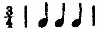
; another having that represented in the symbol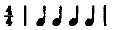
and so on. Variations in intensity were obtained by mounting a second series of contacts on the same shaft and in alignment with those already described. The number of these secondary contacts was less than that of the primary connections, their teeth corresponding to every second or third of those. The connections made by these contacts were with a second loop, which also contained within its circuit the telephone receiver by which the sounds were produced. The rheostatic resistances introduced into this second circuit were made to depart more or less from that of the first, according as it was desired to introduce a greater or slighter periodic accent into the series. This mechanism was designed for the purpose of determining the characteristic sequences of long and short elements in the rhythm group.The fourth piece of apparatus consisted essentially of a horizontal [314]steel shaft having rigidly attached to it a series of metallic anvils, fifteen in number, on which, as the shaft revolved, the members of a group of steel hammers could be made to fall in succession from the same or different heights. The various parts of the mechanism and their connections may be readily understood by reference to the illustration in Plate VIII. On the right, supported upon two metal standards and resting in doubly pivoted bearings, appears the anvil-bearing shaft. On a series of shallow grooves cut into this shaft are mounted loose brass collars, two of which are visible on the hither end of the shaft. The anvils, the parts and attachments of which are shown in the smaller objects lying on the table at the base of the apparatus, consist of a cylinder of steel partly immersed in a shallow brass cup and made fast to it by means of a thumb-screw. This cup carries a threaded bolt, by which it may be attached to the main shaft at any position on its circumference by screwing through a hole drilled in the collar. The adjustment of the anvils about the shaft may be changed in a moment by the simple movement of loosening and tightening the thumb-screw constituted by the anvil and its bolt. The device by which the extent of the hammer-fall is controlled consists of cam-shaped sheets of thin wood mounted within parallel grooves on opposite sides of the loose collars and clamped to the anvils by the resistance of two wedge-shaped flanges of metal carried on the anvil bolt and acting against the sides of slots cut into the sheets of wood at opposite sides. The periphery of these sheets of wood—as exhibited by that one lying beside the loose anvils on the table—is in the form of a spiral which unfolds in every case from a point on the uniform level of the anvils, and which, by variations in the grade of ascent, rises in the course of a revolution about its center to the different altitudes required for the fall of the hammers. These heights were scaled in inches and fractions, and the series employed in these experiments was as follows: 1/8, 2/8, 3/8, 5/8, 7/8, 15/8, 24/8 inch. Upon a corresponding pair of standards, seen at the left of the illustration, is mounted a slender steel shaft bearing a series of sections of brass tubing, on which, in rigid sockets, are carried the shafts of a set of hammers corresponding in number and position to [315]the anvils of the main axis. By means of a second shaft borne upon two connected arms and pivoted at the summit of the standards the whole group of hammers may at any moment be raised from contact with the cams of the main shaft and the series of sounds be brought to a close without interrupting the action of the motor or of the remainder of the apparatus. By this means phases of acceleration and retardation in the series, due to initial increase in velocity and its final decrease as the movement ceases, are avoided. The pairs of vertical guides which appear on this gearing-shaft and enclose the handles of the several hammers are designed to prevent injury to the insertions of the hammer shafts in their sockets in case of accidental dislocations of the heads in arranging the apparatus. This mechanism was driven by an electrical motor with an interposed reducing gear.
The intervals between the successive hammer-strokes are controlled in the following way: on the inner face of the group of pulleys mounted on the main shaft of the mechanism (this gang of pulleys appears at the extreme right in the illustration) is made fast a protractor scaled in half degrees. Upon the frame of the standard supporting these pulleys is rigidly screwed an index of metal which passes continuously over the face of the scale as the shaft revolves. The points of attachment (about the shaft) of the cams are determined by bringing the point of fall of each cam in succession into alignment with this fixed index, after the shaft has been turned through the desired arc of its revolution and made fast by means of the thumb-screw seen in the illustration at the near end of the shaft. Thus, if three strokes of uniform intensity are to be given at equal intervals apart and in continuous succession, the points of fall of the hammers will be adjusted at equal angular distances from one another, for example, at 360°, 240°, and 120°; if the temporal relations desired be in the ratios 2:1:1, the arrangement will be 360°, 180°, 90°; if in the ratios 5:4:3, it will be 360°, 210°, 90°; and so on. If double this number of hammers be used in a continuous series the angular distances between the points of fall of the successive hammers will of course be one half of those given above, and if nine, twelve, or fifteen hammers be used they will be proportionately less.[316]
An interruption of any desired relative length may be introduced between repetitions of the series by restricting the distribution of angular distances among the cams to the requisite fraction of the whole revolution. Thus, if an interruption equal to the duration included between the first and last hammer-falls of the series be desired, the indices of position in the three cases described above will become: 360°, 270°, 180°; 360°, 240°, 180°, and 360°, 260°, 180°. In the case of series in which the heights of fall of the various hammers are not uniform, a special adjustment must be superimposed upon the method of distribution just described. The fall of the hammer occupies an appreciable time, the duration of which varies with the distance through which the hammer passes. The result, therefore, of an adjustment of the cams on the basis adopted when the height of fall is uniform for all would appear in a reduction of the interval following the sound produced by a hammer falling from a greater height than the rest, and the amount of this shortening would increase with every addition to the distance through which the hammer must pass in its fall. In these experiments such lags were corrected by determining empirically the angular magnitude of the variation from its calculated position necessary, in the case of each higher member of the series of distances, to make the stroke of the hammer on its anvil simultaneous with that of the shortest fall. These fixed amounts were then added to the indices of position of the several cams in each arrangement of intervals employed in the experiments.
This apparatus answers a variety of needs in practical manipulation very satisfactorily. Changes in adjustment are easily and quickly made, in regard to intensity, interval and absolute rate. If desired, the gradation of intensities here employed may be refined to the threshold of perceptibility, or beyond it.
The possible variations of absolute rate and of relative intervals within the series were vastly more numerous than the practical conditions of experimentation called for. In two directions the adaptability of the mechanism was found to be restricted. The durations of the sounds could not be varied as were the intervals between them, and all questions concerning the results of [317]such changes were therefore put aside; and, secondly, the hammers and anvils, though fashioned from the same stuff and turned to identical shapes and weights, could not be made to ring qualitatively alike; and these differences, though slight, were sufficiently great to become the basis of discrimination between successive sounds and of the recognition upon their recurrence of particular hammer-strokes, thereby constituting new points of unification for the series of sounds. When the objective differences of intensity were marked, these minor qualitative variations were unregarded; but when the stresses introduced were weak, as in a series composed of 3/8-, 2/8-, 2/8-inch hammer-falls, they became sufficiently great to confuse or transform the apparent grouping of the rhythmical series; for a qualitative difference between two sounds, though imperceptible when comparison is made after a single occurrence of each, may readily become the subconscious basis for a unification of the pair into a rhythmical group when several repetitions of them take place.
In such an investigation as this the qualification of the subject-observer should be an important consideration. The susceptibility to pleasurable and painful affection by rhythmical and arrhythmical relations among successive sensory stimuli varies within wide limits from individual to individual. It is of equal importance to know how far consonance exists between the experiences of a variety of individuals. If the objective conditions of the rhythm experience differ significantly from person to person it is useless to seek for rhythm forms, or to speak of the laws of rhythmical sequence. Consensus of opinion among a variety of participators is the only foundation upon which one can base the determination of objective forms of any practical value. It is as necessary to have many subjects as to have good ones. In the investigation here reported on, work extended over the two academic years of 1898-1900. Fourteen persons in all took part, whose ages ranged from twenty-three to thirty-nine years. Of these, five were musically trained, four of whom were also possessed of good rhythmic perception; of the remaining nine, seven were good or fair subjects, two rather poor. All of these [318]had had previous training in experimental science and nine were experienced subjects in psychological work.
The objective conditions necessary to the arousal of an impression of rhythm are three in number: (a) Recurrence; (b) Accentuation; (c) Rate.
(a) Recurrence.—The element of repetition is essential; the impression of rhythm never arises from the presentation of a single rhythmical unit, however proportioned or perfect. It does appear adequately and at once with the first recurrence of that unit. If the rhythm be a complex one, involving the coördination of primary groups in larger unities, the full apprehension of its form will, of course, arise only when the largest synthetic group which it contains has been completed; but an impression of rhythm, though not of the form finally involved, will have appeared with the first repetition of the simplest rhythmical unit which enters into the composition. It is conceivable that the presentation of a single, unrepeated rhythmical unit, especially if well-defined and familiar, should originate a rhythmical impression; but in such a case the sensory material which supports the impression of rhythm is not contained in the objective series but only suggested by it. The familiar group of sounds initiates a rhythmic process which depends for its existence on the continued repetition, in the form of some subjective accentuation, of the unit originally presented.
The rhythmical form, in all such cases, is adequately and perfectly apprehended through a single expression of the sequence.3 It lacks nothing for its completion; repetition can add no more to it, and is, indeed, in strict terms, inconceivable; for by its very recurrence it is differentiated from the initial presentation, and combines organically with the latter to produce a more highly synthetic form. And however often this process [319]be repeated, each repetition of the original sequence will have become an element functionally unique and locally unalterable in the last and highest synthesis which the whole series presents.
Rhythmical forms are not in themselves rhythms; they must initiate the factor of movement in order that the impression of rhythm shall arise. Rhythmical forms are constantly occurring in our perceptional experience. Wherever a group of homogeneous elements, so related as to exhibit intensive subordination, is presented under certain temporal conditions, potential rhythm forms appear. It is a mere accident whether they are or are not apprehended as actual rhythm forms. If the sequence be repeated—though but once—during the continuance of a single attention attitude, its rhythmical quality will ordinarily be perceived, the rhythmic movement will be started. If the sequence be not thus repeated, the presentation is unlikely to arouse the process and initiate the experience of rhythm, but it is quite capable of so doing. The form of the rhythm is thus wholly independent of the movement, on which the actual impression of rhythm in every case depends; and it may be presented apart from any experience of rhythm.
There is properly no repetition of identical sequences in rhythm. Practically no rhythm to which the æsthetic subject gives expression, or which he apprehends in a series of stimulations, is constituted of the unvaried repetition of a single elementary form, the measures,
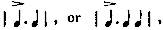
for example. Variation, subordination, synthesis, are present in every rhythmical sequence. The regular succession is interrupted by variant groups; points of initiation in the form of redundant syllables, points of finality in the form of syncopated measures, are introduced periodically, making the rhythm form a complex one, the full set of relations involved being represented only by the complete succession of elements contained between any one such point of initiation and its return.(b) Accentuation.—The second condition for the appearance of the rhythm impression is the periodic accentuation of certain elements in the series of sensory impressions or motor reactions of which that rhythm is composed. The mechanism of such accentuation is indifferent; any type of variation in the [320]accented elements from the rest of the series which induces the characteristic process of rhythmic accentuation—by subjective emphasis, recurrent waves of attention, or what not—suffices to produce an impression of rhythm. It is commonly said that only intensive variations are necessary; but such types of differentiation are not invariably depended on for the production of the rhythmic impression. Indeed, though most frequently the basis of such effects, for sufficient reasons, this type of variation is neither more nor less constant and essential than other forms of departure from the line of indifference, which forms are ordinarily said to be variable and inessential. For the existence of rhythm depends, not on any particular type of periodical variation in the sensory series, but on the recurrent accentuation, under special temporal conditions, of periodic elements within such a series; and any recurrent change in quality—using this term to describe the total group of attributes which constitutes the sensorial character of the elements involved—which suffices to make the element in which it occurs the recipient of such accentuation, will serve as a basis for the production of a rhythmical impression. It is the fact of periodical differentiation, not its particular direction, which is important. Further, as we know, when such types of variation are wholly absent from the series, certain elements may receive periodical accentuation in dependence on phases of the attention process itself, and a subjective but perfectly real and adequate rhythm arise.
In this sense those who interpret rhythm as fundamentally dependent on the maintenance of certain temporal relations are correct. The accentuation must be rhythmically renewed, but the sensory incentives to such renewals are absolutely indifferent, and any given one of the several varieties of change ordinarily incorporated into rhythm may be absent from the series without affecting its perfection as a rhythmical sequence. In piano playing the accentual points of a passage may be given by notes struck in the bass register while unaccented elements are supplied from the upper octaves; in orchestral compositions a like opposition of heavy to light brasses, of cello to violin, of cymbals to triangle, is employed to produce rhythmical effects, [321]the change being one in timbre, combined or uncombined with pitch variations; and in all percussive instruments, such as the drum and cymbals, the rhythmic impression depends solely on intensive variations. The peculiar rhythmic function does not lie in these elements, but in a process to which any one of them indifferently may give rise. When that process is aroused, or that effect produced, the rhythmic impression has been made, no matter what the mechanism may have been.
The single objective condition, then, which is necessary to the appearance of an impression of rhythm is the maintenance of specific temporal relations among the elements of the series of sensations which supports it. It is true that the subjective experience of rhythm involves always two factors, periodicity and accentuation; the latter, however, is very readily, and under certain conditions inevitably, supplied by the apperceptive subject if the former be given, while if the temporal conditions be not fulfilled (and the subject cannot create them) no impression of rhythm is possible. The contributed accent is always a temporally rhythmical one, and if the recurrence of the elements of the objective series opposes the phases of subjective accentuation the rhythm absolutely falls to the ground. Of the two points of view, then, that is the more faithful to the facts which asserts that rhythm is dependent upon the maintenance of fixed temporal intervals. These two elements cannot be discriminated as forming the objective and subjective conditions of rhythm respectively. Both are involved in the subjective experience and both find their realization in objective expressions, definable and measurable.
(c) Rate.—The appearance of the impression of rhythm is intimately dependent on special conditions of duration in the intervals separating the successive elements of the series. There appears in this connection a definite superior limit to the absolute rate at which the elements may succeed one another, beyond which the rapidity cannot be increased without either (a) destroying altogether the perception of rhythm in the series or (b) transforming the structure of the rhythmical sequence by the substitution of composite groups for the single elements of the original series as units of rhythmic construction; and a less [322]clearly marked inferior limit, below which the series of stimulations fails wholly to arouse the impression of rhythm. But the limits imposed by these conditions, again, are coördinated with certain other variables. The values of the thresholds are dependent, in the first place, on the presence or absence of objective accentuation. If such accents be present in the series, the position of the limits is still a function of the intensive preponderance of the accented over the unaccented elements of the group. Further, it is related to the active or passive attitude of the æsthetic subject on whom the rhythmical impression is made, and there appear also important individual variations in the values of the limits.
When the succession falls below a certain rate no impression of rhythm arises. The successive elements appear isolated; each is apprehended as a single impression, and the perception of intensive and temporal relations is gotten by the ordinary process of discrimination involved when any past experience is compared with a present one. In the apprehension of rhythm the case is altogether different. There is no such comparison of a present with a past experience; the whole group of elements constituting the rhythmic unit is present to consciousness as a single experience; the first of its elements has never fallen out of consciousness before the final member appears, and the awareness of intensive differences and temporal segregation is as immediate a fact of sensory apprehension as is the perception of the musical qualities of the sounds themselves.
The absolute value of this lower limit varies from individual to individual. In the experience of some persons the successive members of the series may be separated by intervals as great as one and one half (possibly two) seconds, while yet the impression is distinctly one of rhythm; in that of others the rhythm dies out before half of that interval has been reached. With these subjects the apprehension at this stage is a secondary one, the elements of the successive groups being held together by means of some conventional symbolism, as the imagery of beating bells or swinging pendulums. A certain voluminousness is indispensable to the support of such slow measures. The limit is reached sooner when the series of sounds is given by the fall of hammers [323]on their anvils than when a resonant body like a bell is struck, or a continuous sound is produced upon a pipe or a reed.
In these cases, also, the limit is not sharply defined. The rhythmical impression gradually dies out, and the point at which it disappears may be shifted up or down the line, according as the æsthetic subject is more or less attentive, more or less in the mood to enjoy or create rhythm, more passive or more active in his attitude toward the series of stimulations which supports the rhythmical impression. The attention of the subject counts for much, and this distinction—of involuntary from voluntary rhythmization—which has been made chiefly in connection with the phenomenon of subjective rhythm, runs also through all appreciation of rhythms which depend on actual objective factors. A series of sounds given with such slowness that at one time, when passively heard, it fails to produce any impression of rhythm, may very well support the experience on another occasion, if the subject try to hold a specific rhythm form in mind and to find it in the series of sounds. In such cases attention creates the rhythm which without it would fail to appear. But we must not confuse the nature of this fact and imagine that the perception that the relations of a certain succession fulfil the the form of a rhythmical sequence has created the rhythmical impression for the apperceiving mind. It has done nothing of the kind. In the case referred to the rhythm appears because the rhythmical impression is produced, not because the fact of rhythmical form in the succession is perceived. The capacity of the will is strictly limited in this regard and the observer is as really subject to time conditions in his effortful construction as in his effortless apprehension. The rhythmically constructive attitude does not destroy the existence of limits to the rate at which the series must take place, but only displaces their positions.
A similar displacement occurs if the periodic accentuations within the series be increased or decreased in intensity. The impression of rhythm from a strongly accented series persists longer, as retardation of its rate proceeds, than does that of a weakly accented series; the rhythm of a weakly accented series, longer than that of a uniform succession. The sensation, in the case of a greater intensive accent, is not only stronger but also [324]more persistent than in that of a weaker, so that the members of a series of loud sounds succeeding one another at any given rate appear to follow in more rapid succession than when the sounds are faint. But the threshold at which the intervals between successive sounds become too great to arouse any impression of rhythm does not depend solely on the absolute loudness of the sounds involved; it is a function also of the degree of accentuation which the successive measures possess. The greater the accentuation the more extended is the temporal series which will hold together as a single rhythmic group.
This relation appears also in the changes presented in beaten rhythms, the unit-groups of which undergo a progressive increase in the number of their components. The temporal values of these groups do not remain constant, but manifest a slight increase in total duration as the number of component beats is increased, though this increase is but a fraction of the proportional time-value of the added beats. Parallel with this increase in the time-value of the unit-group goes an increase in the preponderance of the accented element over the intensity of the other members of the group. Just as, therefore, in rhythms that are heard, the greatest temporal values of the simple group are mediated by accents of the highest intensity, so in expressed rhythms those groups having the greatest time-values are marked by the strongest accentuation.
Above the superior limit a rhythm impression may persist, but neither by an increase in the number of elements which the unit group contains, nor by an increase in the rate at which these units follow one another in consciousness. The nature of the unit itself is transformed, and a totally new adjustment is made to the material of apprehension. When the number of impressions exceeds eight or ten a second—subject to individual variations—the rhythmical consciousness is unable longer to follow the individual beats, a period of confusion ensues, until, as the rate continues to increase, the situation is suddenly clarified by the appearance of a new rhythm superimposed on the old, having as its elements the structural units of the preceding rhythm. The rate at which the elements of this new rhythm succeed one another, instead of being more rapid than the old, [325]has become relatively slow, and simple groups replace the previous large and complex ones. Thus, at twelve beats per second the rhythms heard by the subjects in these experiments were of either two, three or four beats, the elements entering into each of these constituent beats being severally three and four in number, as follows:
| Simple Trochaic, | four | beats per second: | 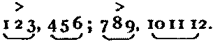 |
| Dipodic Trochaic, | " | " | 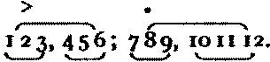 |
| Simple Dactylic, | three | " | 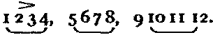 |
The only impression of rhythm here received was of a trochaic or dactylic measure, depending upon an accent which characterized a group and not a single beat, and which recurred only twice or thrice a second. Sometimes the subjects were wholly unaware that the elements of the rhythm were not simple, a most significant fact, and frequently the number reported present was one half of the actual number given. During the continuance of such a series the rhythm form changes frequently in the apprehension of the individual subject from one to another of the types described above.
It cannot be too strongly insisted on that the perception of rhythm is an impression, an immediate affection of consciousness depending on a particular kind of sensory experience; it is never a construction, a reflective perception that certain relations of intensity, duration, or what not, do obtain. If the perception of rhythm in a series of impressions were dependent on intellectual analysis and discrimination, the existence of such temporal limits as are actually found would be inconceivable and absurd. So long as the perception of the uniformity or proportion of time-relations were possible, together with the discrimination of the regular recurrence in the series of points of accentuation, the perception of rhythm should persist, however great or small might be the absolute intervals which separated the successive members of the series. If it were the conception of a certain form of relation, instead of the reception of a particular [326]impression, which was involved, we should realize a rhythm which extended over hours or days, or which was comprehended in the fraction of a second, as readily as those which actually affect us.
The rate at which the elements of a series succeed one another affects the constitution of the unit groups of which the rhythmical sequence is composed. The faster the rate, the larger is the number of impressions which enter into each group. The first to appear in subjective rhythm, as the rate is increased from a speed too slow for any impression of rhythm to arise, are invariably groups of two beats; then come three-beat groups, or a synthesis of the two-beat groups into four, with major and minor accents; and finally six-and eight-beat groups appear. When objective accentuation is present a similar series of changes is manifested, the process here depending on a composition of the unit-groups into higher orders, and not involving the serial addition of new elements to the group.
The time relations of such smaller and larger units are dependent on the relative inertia of the mechanism involved. A definite subjective rhythm period undoubtedly appears; but its constancy is not maintained absolutely, either in the process of subjective rhythmization or in the reproduction of ideal forms. Its manifestation is subject to the special conditions imposed on it by such apprehension or expression. The failure to make this distinction is certain to confuse one's conception of the temporal rhythmic unit and its period. The variations of this period present different curves in the two cases of subjective rhythmization and motor expression of definite rhythm forms. In the former the absolute duration of the unit-group suffers progressive decrease as the rate of succession among the stimuli is accelerated; in the latter a series of extensions of its total duration takes place as the number of elements composing the unit is increased. The series of relative values for units of from two to eight constituents which the finger reactions presented in this investigation is given in the following table:[327]
| No. of Elements. | Proportional Duration. |
|---|---|
| Two, | 1.000 |
| Three, | 1.109 |
| Four, | 1.817 |
| Five, | 1.761 |
| Six, | 2.196 |
| Seven, | 2.583 |
| Eight, | 2.590 |
This progressive extension of the rhythm period is to be explained by the mechanical conditions imposed on the expression of rhythm by processes of muscular contraction and release. Were it possible freely to increase the rate of such successive innervations, we should expect to find a much greater constancy in the whole period occupied by the series of reactions which composes the unit. The comparatively unsatisfactory quality of these larger series, and the resolution of them into subgroups described elsewhere in this paper, are due to this inability to accommodate the series of motor reactions to the subjective rhythm period.
On the other hand, the temporal value of the unit which appears as the result of subjective rhythmization undergoes a progressive decrease in absolute magnitude as the rate of succession among the undifferentiated stimuli is accelerated. The series of values for units containing from two to eleven constituents is given in the following table:
| No. of Elements. | Duration in Seconds. |
|---|---|
| Two, | 2.00 |
| Three, | 1.75 |
| Four, | 1.66 |
| Seven, | 1.75 |
| Nine, | 1.50 |
| Eleven, | 0.97 |
If the time-value of the simple rhythm group here depended solely on the relation of the successive stimuli to the subjective rhythm period, no progressive diminution should be presented, for in proportion as the absolute value of the separating intervals decreases the true nature of this period should be more [328]clearly manifested. It is scarcely to be doubted that the complexity of its content is likewise a determinant of the temporal value of this period, and that to this factor is to be attributed the changes which are here presented.4
In subjective rhythmization the number of elements which compose the unit is dependent solely on the relation of the subjective rhythm period to the rate of succession among such elements. In objective rhythm, as has been pointed out, a free treatment of the material is rendered impossible by the determination of specific points of increased stress, in virtue of which a new unit of change appears, namely, the whole period elapsing from any one occurrence of accentuation to its return.
But this is not the sole determinant of the numerical limits of the simple group in such objective rhythms. The structural unit must indeed adhere to the scheme given by the period of the recurrent accentuation; but the point at which simple successions of this figure give place to complex structures (at which
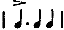
is replaced by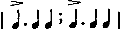
, for example) may conceivably be hastened or retarded by other factors than that of the simple rate of succession. The degrees of segregation and accentuation which characterize the rhythmic unit are elements which may thus affect the higher synthesis. Increase in either of these directions gives greater definition to the rhythmic figure and should tend to preserve the simple group in consciousness. The latter relation was not made the subject of special investigation in this research. The former was taken up at a single point. The sounds were two in number, alternately accented and unaccented, produced by hammer-falls of 7/8 and 1/8 inch respectively. These were given at three rates of succession, and three different degrees of segregation were compared together. In the following table is given, for six subjects, the [329]average number of elements entering into the group-form, simple or complex, under which the rhythm was apprehended:| Ratio of Beat-interval | Value in Seconds of Average Interval, | |||
|---|---|---|---|---|
| to Group-interval. | 5/12 | 3/12 | 2/12 | |
| 1.000: 1.400 | 3.5 | 5.3 | 9.0 | |
| 1.000: 1.000 | 4.0 | 5.4 | 9.6 | |
| 1.000: 0.714 | 5.2 | 8.4 | 10.8 | |
The quantitative relations presented by these figures are consistent throughout. For every rate of speed the average rhythmic group is smallest when the interval separating the successive groups is at its maximum; it is largest when this interval is at its minimum; while in each case a median value is presented by the relation of uniformity among the intervals. In the second as well as the first of the ratios included in the foregoing table the interval which separates adjacent groups is felt to be distinctly longer than that internal to the group; in the third the relative durations of the two intervals are those which support psychological uniformity. In the latter case, in consequence of the freer passage from group to group, the continuity of the rhythmical series is more perfectly preserved than in the former, and the integration of its elements into higher syntheses more extended.
The extension of the numerical limits of the rhythm group in subjective rhythm which appear in consequence of progressive acceleration in the rate of succession is given for a series of six different values of the separating intervals in the following table, the figures of which represent the average for six observers:
| HIGHEST UNITS WHICH APPEAR. | ||||||
|---|---|---|---|---|---|---|
| Value of interval in secs.: | 12/12 | 7/12 | 5/12 | 3/12 | 2/12 | 1/12 |
| No. of el's in rhythm group: | 2.5 | 3.0 | 4.0 | 7.0 | 9.0 | 11.0 |
| Average duration of group: | 2.500 | 1.750 | 1.666 | 1.750 | 1.500 | 0.917 |
| SIMPLE UNITS. | ||||||
| No. of els. in simplest group: | 2.5 | 2.3 | 2.9 | 3.7 | 4.7 | 5.0 |
| Duration of simplest group: | 2.50 | 1.34 | 1.21 | 0.92 | 0.78 | 0.41 |
The rate of increase here presented in the number of elements is not sufficiently rapid to counterbalance the acceleration of [330]speed and maintain a constancy in the duration of the group. The greatest value of this period is coördinated with the slowest rate of succession, the lowest with the most rapid. As the speed increases, the duration of the rhythmic unit is shortened. Its average duration for all rates here included is 1.680 sec., or, without the first of the series (one-second intervals, at which only two of the observers received the impression of rhythm), 1.516 sec. These values are not for the simplest combinations, but for the highest synthetical unit which was immediately apprehended in the series of stimulations. This compounding becomes more pronounced as the rate of succession is accelerated, but even at intervals of 5/12 and 7/12 sec. it is the characteristic mode of apprehension.
The number of elements in the simple groups of which these higher units are composed, and their average duration, are also given in the table. These likewise show a progressive increase in number, but of a much slower rate than that manifested by the total synthesis of elements. That is to say, in subjective rhythm as well as in objectively figured series, subordinate rhythmical differences in the material sink out of consciousness less rapidly than the inclusion of fresh elements takes place; in other words, the organic complexity of the rhythmic unit increases with every acceleration in the rate of succession. The duration of these simple structural groups, as may be inferred, decreases with such acceleration, but at a much more rapid rate than is the case with the total reach of rhythmical apprehension, the value of that unit which appears in connection with the highest speed here included being less than half a second. The 'liveliness' of such rapid measures is thus a resultant of several factors. It is not a consequence solely of the more rapid rate at which the individual stimuli succeed one another, but depends also on the shortening of the periods of both these rhythmical units and on the progressive divergence of the simple from the complex group.
The influence of the rate of succession on the rhythmical unit is not confined to its segregation from adjacent groups, but affects the internal configuration of the measure as well. With every acceleration in rate the relative preponderance of the [331]interval following the accented element (in rhythms having initial stress) increases; as the rate is retarded, smaller and smaller degrees of difference in the values of accented and unaccented intervals are discriminated. In this regard the influence of reduction in the absolute value of the separating intervals is analogous to that of increased accentuation within the group. In fast tempos and with high degrees of emphasis the interval following the initial accent is relatively longer, that following the unaccented relatively shorter, than at slow tempos and with weak emphasis. This is but another way of expressing the fact that as the elements of the auditory series succeed one another more and more slowly the impression of rhythm fades out and that as their succession increases in rapidity the impression becomes more and more pronounced. The following table presents these relations in a quantitative form for trochaic rhythm. The figures represent the number of times the second, or group interval, was judged to be greater than, equal to, or less than the first or internal interval of the group. Three rates were compared together, having average intervals of 5/12, 3/12 and 2/12 sec. Six observers took part, but only a small number of judgments was made by each, to which fact is probably to be attributed the irregularities of form which appear in the various curves:
| Ratio of 1st to 2d Interval. | 5/12 | 3/12 | 2/12 | ||||||
|---|---|---|---|---|---|---|---|---|---|
| + | = | - | + | = | - | + | = | - | |
| 1.000: 1.057 | 95.0 | 0.0 | 5.0 | 100.0 | 0.0 | 0.0 | 100.0 | 0.0 | 0.0 |
| 1.000: 1.000 | 94.7 | 5.3 | 0.0 | 86.0 | 10.5 | 3.5 | 87.5 | 12.5 | 0.0 |
| 1.000: 0.895 | 40.0 | 60.0 | 0.0 | 46.2 | 49.6 | 3.3 | 74.1 | 18.5 | 7.4 |
| 1.000: 0.846 | 41.0 | 50.0 | 9.0 | 39.4 | 54.6 | 6.0 | 40.0 | 52.0 | 8.0 |
| 1.000: 0.800 | 20.0 | 60.0 | 20.0 | 13.0 | 70.0 | 17.0 | 53.8 | 46.2 | 0.0 |
| 1.000: 0.756 | 29.4 | 23.5 | 47.1 | 21.8 | 43.4 | 34.8 | 28.0 | 72.0 | 0.0 |
| Av. for all ratios, | 53.3 | 33.1 | 13.5 | 51.1 | 38.0 | 10.8 | 63.9 | 33.5 | 2.6 |
Within the limits of its appearance, as the figures just presented indicate, the force, definition and persistency of the rhythmical impression do not continue uniform. At the lowest rates at which rhythm appears the integration of the successive groups is weak and their segregation indistinct. As the rate increases the definition of the rhythmic form grows more precise, group is separated from group by greater apparent intervals, [332]and the accentuation of the groups becomes more pronounced. In subjective rhythmization of an undifferentiated series, likewise, the impression of segregation and periodic accentuation grows more forcible and dominating as the rate increases. The sensitiveness to form and dynamic value in the successive groups also increases up to a certain point in the process of acceleration. As expressed in the capacity to discriminate departures from formal equivalence among the groups, this function reached its maximum, for those concerned in this investigation, at rates varying individually from 0.3 sec. to 0.6 sec. in the value of their intervals.
It is in virtue of its nature as an impression, as opposed to a construction, that every structural unit, and every rhythmical sequence into which it enters, possesses a distinct individual quality, by which it is immediately apprehended and discriminated from other forms, as the face of an acquaintance is remembered and identified without detailed knowledge of the character of any feature it possesses. For what persists from the reception of a rhythm impression and becomes the basis of future recognition and reproduction of it, is not the number of beats in a unit or sequence, nor the absolute or relative intensity of the components of the group; it is the quality of the groups as individuals, and the form of the sequence as a whole. The phrase and verse are as vividly conceived as the unit group; the stanza or the passage is apprehended as immediately and simply as the bar or the measure. Of the number and relation of the individual beats constituting a rhythmical sequence there is no awareness whatever on the part of the æsthetic subject. I say this without qualification. So long as the rhythmical impression endures the analytic unit is lost sight of, the synthetic unit, or group, is apprehended as a simple experience. When the rhythm function is thoroughly established, when the structural form is well integrated or familiar, it becomes well-nigh impossible to return to the analytic attitude and discern the actual temporal and intensive relations which enter into the rhythm. Even the quality of the organic units may lapse from distinct consciousness, and only a feeling of the form of the whole sequence remain. The Gestaltsqualität of the passage or [333]the stanza is thus frequently appreciated and reproduced without an awareness of its sequential relations, though with the keenest sense of what is necessary to, or inconsistent with, its structure; so that the slightest deviation from its form is remarked and the whole sequence accurately reproduced.
In order to isolate and exhibit the tendency toward rhythmization in regularly repeated motor reactions, one should examine series of similar movements made at different rates both as an accompaniment to a recurrent auditory stimulus and as free expressions of the motor impulse independent of such objective control. In the former of these cases the series of stimuli should be undifferentiated in quality as well as uniform in time. The rhythm which appears in such a case will contradict the phases of an objective series which prescribes its form, and the evidence of its existence, presented under such adverse conditions, should be indubitable.
As preliminary to their special work the members of the experimental group were tested in regard to the promptness and regularity of their reactions (by finger flexion) in accompanying a periodically recurrent stimulus given by the beating of a metronome; records were taken also of their capacity to estimate and maintain constant time relations by freely tapping at intervals of one, two and five seconds. Of the latter type of reaction the records show that a temporal grouping of the reactions is presented in every rate of tapping. This, owing to the large absolute intervals, is uniformly in groups of two, the first member of which is of shorter, the second of longer duration. There is likewise an intensive differentiation of the alternate reactions. Thus a double rhythmical treatment appears, but while with intervals of two seconds the phases of temporal and intensive rhythm coincide, at rates of one and five seconds they are opposed, that is, the accentuation falls on the initial reaction which is followed by the shorter interval. This doubtlessly marks the emergence of that tendency to initial accentuation which was subsequently found to prevail in all expression of rhythm.
The types of reaction which these records afford leave no doubt that a fuller investigation of the matter would show the [334]constant presence, in all such forms of activity, of a rhythmical automatization of the series. The special problems which such an investigation should first resolve, relate to the dependence of the amount of rhythmical differentiation on the rate of succession among the reactions; the relation of the form of this reaction series to factors of attention and control; and the significance, in connection with the process of rhythmization, of auditory stimuli produced by and accompanying the reaction series, that is, the comparison of soundless and sounded reactions.
In the second set of experiments the reactor was directed simply to accompany the beating of a metronome by a light tapping with the forefinger on a rubber-surfaced tambour connected with a pneumographic registering pen, with which was aligned an electrical time-marker also actuated by the metronome. Three rates of tapping were adopted, 60, 90 and 120 beats per minute. No specific instructions were given as to direction or keenness of attention on the part of the reactor; the most natural and simple accompaniment was desired. Occasionally, for comparison, the reactor was directed to attend closely to each successive beat as it occurred.
Certain questions as to the applicability of the material here interpreted to the point in question, and as to its relation to the objective conditions of experimentation, must be met at the outset. The first of these is as to the actual uniformity of the metronome series. Objective determination of its temporal regularity is unnecessary (in so far as such a determination looks toward an explanation of the form of tapping by reference to inequality in the metronomic intervals). That the rhythmical phases which appear in the accompaniment are not due to inequality in the stimulation intervals, is shown by the reversal of relations between the metronome and its accompaniment which occur in the midst of a continuous series of taps. To speak roughly, a break occurs every twentieth beat. I do not refer to minor irregularities occurring within the single group but not affecting the form of the rhythmical accompaniment. The latter appeared with surprising rarity, but when found were included in the continuous calculation of averages. But in every score or so of beats a stroke out of series would be interpolated, [335]giving the form | 1 >2 1 2 >1 |; the accompaniment being coördinated during the second portion of the whole series with opposite phases of the metronome from those with which its elements were connected in the earlier part. Moreover, the dependence of this grouping of the sounds on subjective attitudes may readily be made to appear. When attention is turned keenly on the process its phases of rhythmical differentiation decline; when the accompaniment becomes mechanical they mount in value. When the observer tries to mark the ticking as accurately as possible, not only does the index of his motor reactions become more constant, but the sounds of the instrument likewise appear more uniform. The observers report also that at one and the same time they are aware of the regularity of the metronome and the rhythmical nature of their tapping, while yet the conviction remains that the accompaniment has been in time with the beats. Furthermore, if the phases of ticking in the metronome were temporarily unlike, the motor accompaniment by a series of observers, if accurate, should reproduce the time-values of the process, and if inaccurate, should present only an increase of the mean variation, without altering the characteristic relations of the two phases. On the other hand, if the series be uniform and subjectively rhythmized by the hearer, there should be expected definite perversions of the objective relations, presenting a series of increasing departures from the original in proportion as the tendency to rhythmize varied from individual to individual.
On the other hand, a rhythm is already presented in the sounds of the metronome, occasioned by the qualitative differentiation of the members of each pair of ticks, a variation which it was impossible to eliminate and which must be borne in mind in estimating the following results.
Five reactors took part in the experiment, the results of which are tabulated in the following pages. The figures are based on series of one hundred reactions for each subject, fifty accompaniments to each swing and return of the metronome pendulum. When taken in series of ten successive pairs of reactions, five repetitions of the series will be given as the basis of each average. The quantitative results are stated in Tables[336] VII.-XIV., which present the proportional values of the time intervals elapsing between the successive reactions of an accompaniment to the strokes of a metronome beating at the rates of 60, 90 and 120 per minute.
I. AVERAGES ACCORDING TO REACTORS OF ALL RATES FOR BOTH PHASES.
| (a) In Series of Ten Successive Pairs of Beats. | ||||||||||
| Subject. | I | II | III | IV | V | VI | VII | VIII | IX | X |
|---|---|---|---|---|---|---|---|---|---|---|
| J. | 1.000 | 1.005 | 1.022 | 1.053 | 1.044 | 1.116 | 1.058 | 1.061 | 1.055 | 1.052 |
| K. | 1.000 | 1.027 | 1.057 | 1.111 | 1.093 | 1.086 | 1.074 | 1.096 | 1.093 | 1.071 |
| N. | 1.000 | 1.032 | 1.062 | 0.990 | 1.009 | 0.980 | 1.019 | 1.040 | 1.067 | 1.040 |
| Aver. | 1.000 | 1.021 | 1.047 | 1.051 | 1.049 | 1.061 | 1.050 | 1.066 | 1.072 | 1.054 |
| (b) First and Second Halves of the Preceding Combined in Series of Five. | |||||
| Subject. | I | II | III | IV | V |
|---|---|---|---|---|---|
| J. | 1.058 | 1.031 | 1.041 | 1.054 | 1.048 |
| K. | 1.043 | 1.050 | 1.076 | 1.102 | 1.082 |
| N. | 0.990 | 1.025 | 1.051 | 1.028 | 1.024 |
| Aver. | 1.030 | 1.035 | 1.056 | 1.061 | 1.051 |
AVERAGES OF ALL RATES AND SUBJECTS ACCORDING TO PHASES OF METRONOME.
| (a) In Series of Ten Successive Reactions in Accompaniment of Each Phase. | |||||||||||||||
| Phase. | I | II | III | IV | V | VI | VII | VIII | IX | X | |||||
|---|---|---|---|---|---|---|---|---|---|---|---|---|---|---|---|
| First, | 1.000 | 1.055 | 1.102 | 1.097 | 1.082 | 1.066 | 1.053 | 1.123 | 1.120 | 1.074 | |||||
| Second, | 1.000 | 0.988 | 0.992 | 1.007 | 1.016 | 1.055 | 1.015 | 1.009 | 1.024 | 1.001 | |||||
| (b) First and Second Halves of the Preceding Combined in Series of Five. | |||||
| Phase. | I | II | III | IV | V |
|---|---|---|---|---|---|
| First, | 1.033 | 1.054 | 1.112 | 1.108 | 1.078 |
| Second, | 1.027 | 1.001 | 1.000 | 1.015 | 1.008 |
AVERAGES OF ALL SUBJECTS ACCORDING TO RATES AND PHASES OF METRONOME.
| (b) Second Phase, Series of Ten Successive Reactions. | ||||||||||
| Rate. | I | II | III | IV | V | VI | VII | VIII | IX | X |
|---|---|---|---|---|---|---|---|---|---|---|
| 60 | 1.000 | 0.963 | 0.942 | 0.947 | 1.009 | 0.695 | 0.993 | 0.995 | 1.023 | 0.996 |
| 90 | 1.000 | 0.893 | 0.987 | 1.018 | 1.036 | 1.005 | 0.995 | 1.000 | 0.977 | 1.000 |
| 120 | 1.000 | 1.000 | 0.990 | 1.048 | 1.040 | 1.007 | 0.986 | 1.030 | 1.037 | 0.962 |
AVERAGES OF ALL SUBJECTS AND BOTH PHASES OF METRONOME ACCORDING TO RATES.
| (a) In Series of Ten. | ||||||||||
| Rate. | I | II | III | IV | V | VI | VII | VIII | IX | X |
|---|---|---|---|---|---|---|---|---|---|---|
| 60 | 1.000 | 1.065 | 1.140 | 1.108 | 1.123 | 0.952 | 1.129 | 1.119 | 1.130 | 1.112 |
| 90 | 1.000 | 0.970 | 1.025 | 1.056 | 1.061 | 1.037 | 1.048 | 1.063 | 1.072 | 1.047 |
| 120 | 1.000 | 1.000 | 0.990 | 1.048 | 1.040 | 1.007 | 0.986 | 1.030 | 1.037 | 0.962 |
| (b) Above Combined in Series of Five. | |||||
| Rate. | I | II | III | IV | V |
|---|---|---|---|---|---|
| 60 | 0.976 | 1.097 | 1.129 | 1.119 | 1.117 |
| 90 | 1.018 | 1.009 | 1.044 | 1.059 | 1.054 |
| 120 | 1.003 | 0.993 | 1.010 | 1.042 | 1.001 |
In the following table (XV.) is presented the average proportional duration of the intervals separating the successive reactions of these subjects to the stimulations given by the alternate swing and return of the pendulum.
| Subject. | Rate: 60. | Rate: 90. | Rate: 120. |
|---|---|---|---|
| B. | 0.744 : 1.000 | 0.870 : 1.000 | 0.773 : 1.000 |
| J. | 0.730 : 1.000 | 0.737 : 1.000 | 0.748 : 1.000 |
| K. | 0.696 : 1.000 | 0.728 : 1.000 | 0.737 : 1.000 |
| N. | 0.526 : 1.000 | 0.844 : 1.000 | 0.893 : 1.000 |
The corresponding intensive values, as measured by the excursion of the recording pen, are as follows:
| Subject. | Rate: 60. | Rate: 90. | Rate: 120. |
|---|---|---|---|
| B. | (1.066 : 1.000) | 0.918 : 1.000 | (1.010 : 1.000) |
| J. | 0.938 : 1.000 | 0.943 : 1.000 | 0.946 : 1.000 |
| K. | 0.970 : 1.000 | 0.949 : 1.000 | (1.034 : 1.000) |
| N. | 0.883 : 1.000 | 0.900 : 1.000 | 0.950 : 1.000 |
These figures present a double process of rhythmic differentiation, intensively into stronger and weaker beats, and temporally [338]into longer and shorter intervals. The accentuation of alternate elements has an objective provocative in the qualitative unlikeness of the ticks given by the swing and return of the pendulum. This phase is, however, neither so clearly marked nor so constant as the temporal grouping of the reactions. In three cases the accent swings over to the shorter interval, which, according to the report of the subjects, formed the initial member of the group when such grouping came to subjective notice. This latter tendency appears most pronounced at the fastest rate of reaction, and perhaps indicates a tendency at rapid tempos to prefer trochaic forms of rhythm. In temporal grouping the coördination of results with the succession of rates presents an exception only in the case of one subject (XV. B, Rate 120), and the various observers form a series in which the rhythmizing tendency becomes more and more pronounced.
Combining the reactions of the various subjects, the average for all shows an accentuation of the longer interval, as follows:
| Rate. | Temp. Diff. | Intens. Diff. |
|---|---|---|
| 60 | 0.674 : 1.000 | 0.714 : 1.000 |
| 90 | 0.795 : 1.000 | 0.927 : 1.000 |
| 120 | 0.788 : 1.000 | 0.985 : 1.000 |
The rhythmical differentiation of phases is greatest at the slowest tempo included in the series, namely, one beat per second, and it declines as the rate of succession increases. It is impossible from this curve to say, however, that the subjective rhythmization of uniform material becomes more pronounced in proportion as the intervals between the successive stimulations increase. Below a certain rapidity the series of sounds fails wholly to provoke the rhythmizing tendency; and it is conceivable that a change in the direction of the curve may occur at a point beyond the limits included within these data.
The introduction from time to time of a single extra tap, with the effect of transposing the relations of the motor accompaniment to the phases of the metronome, has been here interpreted as arising from a periodically recurring adjustment of the reaction process to the auditory series which it accompanies, [339]and from which it has gradually diverged. The departure is in the form of a slow retardation, the return is a swift acceleration. The retardation does not always continue until a point is reached at which a beat is dropped from, or an extra one introduced into, the series. In the course of a set of reactions which presents no interpolation of extra-serial beats periodic retardation and acceleration of the tapping take place. This tertiary rhythm, superimposed on the differentiation of simple phases, has, as regards the forms involved in the present experiments, a period of ten single beats or five measures.
From the fact that this rhythm recurs again and again without the introduction of an extra-serial beat it is possible to infer the relation of its alternate phases to the actual rate of the metronome. Since the most rapid succession included was two beats per second, it is hardly conceivable that the reactor lost count of the beats in the course of his tapping. If, therefore, the motor series in general parallels the auditory, the retardations below the actual metronome rate must be compensated by periods of acceleration above it. Regarded in this light it becomes questionable if what has been called the process of readjustment really represents an effort to restore an equilibrium between motor and auditory processes after an involuntary divergence. I believe the contrasting phases are fundamental, and that the changes represent a free, rhythmical accompaniment of the objective periods, which themselves involve no such recurrent differentiation.
Of the existence of higher rhythmic forms evidence will be afforded by a comparison of the total durations of the first and second five-groups included in the decimal series. Difference of some kind is of course to be looked for; equivalence between the groups would only be accidental, and inequality, apart from amount and constancy, is insignificant. In the results here presented the differentiation is, in the first place, of considerable value, the average duration of the first of these groups bearing to the second the relation of 1.000:1.028.
Secondly, this differentiation in the time-values of the respective groups is constant for all the subjects participating. The ratios in their several cases are annexed:[340]
| Subject. | Ratio. |
|---|---|
| J. | 1.000 : 1.042 |
| K. | 1.000 : 1.025 |
| N. | 1.000 : 1.010 |
It is perhaps significant that the extent of this differentiation—and inferably the definition of rhythmical synthesis—corresponds to the reported musical aptitudes of the subjects; J. is musically trained, K. is fond of music but little trained, N. is without musical inclination.
The relations of these larger rhythmical series repeat those of their constituent groups—the first is shorter, the second longer. The two sets of ratios are brought together for comparison in the annexed table:
| Subject. | Unit-Groups. | Five Groups. |
|---|---|---|
| J. | 1.000 : 1.354 | 1.000 : 1.042 |
| K. | 1.000 : 1.388 | 1.000 : 1.025 |
| N. | 1.000 : 1.326 | 1.000 : 1.010 |
It is to be noted here, as in the case of beating out specific rhythms, that the index of differentiation is greater in simple than in complex groups, the ratios for all subjects being, in simple groups, 1.000:1.356, and in series of five, 1.000:1.026.
There is thus present in the process of mechanically accompanying a series of regularly recurring auditory stimuli a complex rhythmization in the forms, first, of a differentiation of alternate intervals, and secondly, of a synthesis of these in larger structures, a process here traced to the third degree, but which may very well extend to the composition of still more comprehensive groups. The process of reaction is permeated through and through by rhythmical differentiation of phases, in which the feeling for unity and equivalence must hold fast through really vast periods as the long slow phases swing back and forth, upon which takes place a swift and yet swifter oscillation of rhythmical values as the unit groups become more limited, until the opposition of single elements is reached.[341]
The number of elements which the rhythmical group contains is related, in the first place, to the rate of succession among the elements of the sequence. This connection has already been discussed in so far as it bears on the forms of grouping which appear in an undifferentiated series of sounds in consequence of variations in the absolute magnitude of the intervals which separate the successive stimuli. In such a case the number of elements which enter into the unit depends solely on the rate of succession. The unit presents a continuous series of changes from the lowest to the highest number of constituents which the simple group can possibly contain, and the synthesis of elements itself changes from a succession of simple forms to structures involving complex subordination of the third and even fourth degree, without other change in the objective series than variations in tempo.
When objectively defined rhythm types are presented, or expression is given to a rhythm subjectively defined by ideal forms, these simple relations no longer hold. Acceleration or retardation of speed does not unconditionally affect the number of elements which the rhythm group contains. In the rhythmization of an undifferentiated series the recurrence of accentuation depends solely on subjective conditions, the temporal relations of which can be displaced only within the limits of single intervals; for example, if a trochaic rhythm characterizes a given tempo, the rhythm type persists under conditions of progressive acceleration only in so far as the total duration of the two intervals composing the unit approximates more closely to the subjective rhythm period than does that of three such intervals. When, in consequence of the continued reduction of the separating intervals, the latter duration presents the closer approximation, the previous rhythm form is overthrown, accentuation attaches to every third instead of to alternate elements, and a dactylic rhythm replaces the trochaic.
In objective rhythms, on the other hand, the determination of specific points of increased stress makes it impossible thus to [342]shift the accentuation back and forth by increments of single intervals. The unit of displacement becomes the whole period intervening between any two adjacent points of accentuation. The rhythm form in such cases is displaced, not by those of proximately greater units, but only by such as present multiples of its own simple groups. Acceleration of the speed at which a simple trochaic succession is presented results thus, first, in a more rapid trochaic tempo, until the duration of two rhythm groups approaches more nearly to the period of subjective rhythmization, when—the fundamental trochaism persisting—the previous simple succession is replaced by a dipodic structure in which the phases of major and minor accentuation correspond to the elementary opposition of accented and unaccented phases. In the same way a triplicated structure replaces the dipodic as the acceleration still continues; and likewise of the dactylic forms.
We may say, then, that the relations of rate to complexity of structure present the same fundamental phenomena in subjective rhythmization and objectively determined types, the unit of change only differing characteristically in the two cases. The wider range of subjective adjustment in the latter over the former experience is due to the increased positive incentive to a rhythmical organic accompaniment afforded by the periodic reinforcement of the objective stimulus.
An investigation of the limits of simple rhythmical groups is not concerned with the solution of the question as to the extent to which a reactor can carry the process of prolonging the series of elements integrated through subordination to a single dominant accentuation. The nature of such limits is not to be determined by the introspective results of experiments in which the observer has endeavored to hold together the largest possible number of elements in a simple group. When such an attempt is made a wholly artificial set of conditions, and presumably of mechanisms, is introduced, which makes the experiment valueless in solving the present problem. Both the direction and the form of attention are adverse to the detection of rhythmical complications under such conditions. Attention is directed away from the observation of secondary accents and toward the realization of a rhythm form having but two simple phases, the first [343]of which is composed of a single element, while within the latter fall all the rest of the group. Such conditions are the worst possible for the determination of the limits of simple rhythm groups; for the observer is predisposed from the outset to regard the whole group of elements lying within the second phase as undifferentiated. Thus the conditions are such as to postpone the recognition of secondary accents far beyond the point at which they naturally arise.
But further, such an attempt to extend the numerical scope of simple rhythm groups also tends to transform and disguise the mechanism by which secondary stresses are produced, and thereby to create the illusion of an extended simple series which does not exist. For we have no right to assume that the process of periodic accentuation in such a series, identical in function though it be, involves always the same form of differentiation in the rhythmical material. If the primary accentuation be given through a finger reaction, the fixating of that specific form of change will predispose toward an overlooking of secondary emphases depending on minor motor reactions of a different sort. The variety of such substitutional mechanisms is very great, and includes variations in the local relations of the finger reaction, movements of the head, eyes, jaws, throat, tongue, etc., local strains produced by simultaneous innervation of flexor and extensor muscles, counting processes, visual images, and changes in ideal significance and relation of the various members of the group. Any one of these may be seized upon to mediate the synthesis of elements and thus become an unperceived secondary accentuation.
Our problem is to determine at what point formal complication of the rhythmical unit tends naturally to arise. How large may such a group become and still remain fundamentally simple, without reduplication of accentual or temporal differentiation? The determination of such limits must be made on the basis of quantitative comparison of the reactions which enter into larger and smaller rhythmical series, on the one hand, and, on the other, of the types of structure which appear in subjective rhythmization and the apprehension of objective rhythms the forms of which are antecedently unknown to the hearer. The [344]evidence from subjective rhythms is inconclusive. The prevailing types are of two and three beats. Higher forms appear which are introspectively simple, but introspection is absolutely unable to solve the problem as to the possible composite nature of these extended series. The fact that they are confined to even numbers, the multiples of two, and to such odd-numbered series as are multiples of three, without the appearance of the higher primes, indicates the existence in all these groups of secondary accentuation, and the resolution of their forms into structures which are fundamentally complications of units of two and three elements only. The process of positive accentuation which appears in every higher rhythmical series, and underlying its secondary changes exhibits the same reduction of their elementary structure to double and triple groups, has been described elsewhere in this report. Here it is in place to point out certain indirect evidence of the same process of resolution as manifested in the treatment of longer series of elements.
The breaking up of such series into subgroups may not be an explicitly conscious process, while yet its presence is indispensable in giving rhythmical form to the material. One indication of such undiscriminated rhythmical modification is the need of making or avoiding pauses between adjacent rhythmical groups according as the number of their constituents varies. Thus, in rhythms having units of five, seven, and nine beats such a pause was imperative to preserve the rhythmical form, and the attempt to eliminate it was followed by confusion in the series; while in the case of rhythms having units of six, eight, and ten beats such a pause was inadmissible. This is the consistent report of the subjects engaged in the present investigation; it is corroborated by the results of a quantitative comparison of the intervals presented by the various series of reactions. The values of the intervals separating adjacent groups for a series of such higher rhythms are given in Table XX. as proportions of those following the initial, accented reaction.[345]
| Rhythm. | Initial Interval. | Final Interval. | |
|---|---|---|---|
| Five-Beat, | 1.000 | 1.386 | |
| Six | " | 1.000 | 0.919 |
| Seven | " | 1.000 | 1.422 |
| Eight | " | 1.000 | 1.000 |
| Nine | " | 1.000 | 1.732 |
| Ten | " | 1.000 | 1.014 |
The alternate rhythms of this series fall into two distinct groups in virtue of the sharply contrasted values of their final intervals or group pauses. The increased length of this interval in the odd-numbered rhythms is unquestionably due to a subdivision of the so-called unit into two parts, the first of which is formally complete, while the latter is syncopated. In the case of five-beat rhythms, this subdivision is into threes, the first three of the five beats which compose the so-called unit forming the primary subgroup, while the final two beats, together with a pause functionally equivalent to an additional beat and interval, make up the second, the system being such as is expressed in the following notation:
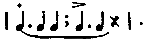
The pause at the close of the group is indispensable, because on its presence depends the maintenance of equivalence between the successive three-groups. On the other hand, the introduction of a similar pause at the close of a six-beat group is inadmissible, because the subdivision is into three-beat groups, each of which is complete, so that the addition of a final pause would utterly unbalance the first and second members of the composite group, which would then be represented by the following notation: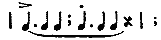
that is, a three-group would alternate with a four-group, the elements of which present the same simple time relations, and the rhythm, in consequence, would be destroyed. The same conditions require or prevent the introduction of a final pause in the case of the remaining rhythm forms.The progressive increase in the value of the final interval, which will be observed in both the odd-and even-numbered rhythms, is probably to be attributed to a gradual decline in the integration of the successive groups into a well-defined rhythmical sequence.
This subdivision of material into two simple phases penetrates all rhythmical structuring. The fundamental fact in the [346]constitution of the rhythmical unit is the antithesis of two phases which we call the accented and the unaccented. In the three-beat group as in the two-beat, and in all more complex grouping, the primary analysis of material is into these two phases. The number of discriminable elements which enter each phase depends on the whole constitution of the group, for this duality of aspect is carried onward from its point of origin in the primary rhythm group throughout the most complex combination of elements, in which the accented phase may comprise an indefinitely great number of simple elements, thus:
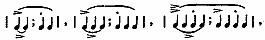
etc. An indication of this process of differentiation into major and minor phases appears in the form of rhythm groups containing upwards of four elements. In these the tendency is, as one observer expresses it, 'to consider the first two beats as a group by themselves, with the others trailing off in a monotonous row behind.' As the series of elements thus bound up as a unit is extended, the number of beats which are crowded into the primary subgroup also increases. When the attempt was made to unite eleven or twelve reactions in a single group, the first four beats were thus taken together, with the rest trailing off as before. It is evident that the lowest groups with which attention concerned itself here were composed of four beats, and that the actual form of the (nominally) unitary series of eleven beats was as follows:The subscripts are added in the notation given above because it is to be doubted if a strictly simple four-beat rhythm is ever met with. Of the four types producible in such rhythm forms by variation in the accentual position, three have been found, in the course of the present investigation, to present a fundamental dichotomy into units of two beats. Only one, that characterized by secondary accentuation, has no such discriminable quality of phases. Of this form two things are to be noted: first, that it [347]is unstable and tends constantly to revert to that with initial stress, with consequent appearance of secondary accentuation; and second, that as a permanent form it presents the relations of a triple rhythm with a grace note prefixed.
The presence of this tendency to break up the four-rhythm into subgroups of two beats explains a variety of peculiarities in the records of this investigation. The four-beat rhythm with final accent is found most pleasant at the close of a rhythmical sequence. The possibility of including it in a continuous series depends on having the final interval of 'just the right length.' If one keeps in mind that a secondary initial accent characterizes this rhythm form, the value required in this final interval is explained by the resolution of the whole group into two units of three beats each, the latter of the two being syncopated. The pause is of 'just the right length' when it is functionally equal to two unaccented elements with their succeeding intervals, as follows: .
Likewise in four-rhythms characterized by initial stress there appears a tendency to accent the final beat of the group, as well as that to accent the third. Such a series of four may therefore break up in either of two ways, into on a basis of two-beat units, or into on a basis of three-beat units.
The persistence of these simple equivalences appears also in the treatment of syncopated measures and of supplementary or displaced accents. Of the form one reactor says, and his description may stand for all, "This deliberate introduction of a third accent on the last beat is almost impossible for me to keep. The single group is easy enough and rather agreeable, but in a succession of groups the secondarily accented third beat comes against the first of the next group with a very disagreeable effect." This is the case where no pause intervenes between the groups, in which case the rhythm is destroyed by the suppression, in each alternate simple group, of the unaccented phase; thus, alone is pleasant, because it becomes[348] , but in combination with preceding and succeeding groups it is disagreeable, because it becomes in reality , etc. A long pause between the groups destroys this disagreeableness, since the lacking phase of the second subgroup is then restored and the rhythm follows its normal course.
The amphibrachic form, , is more difficult to maintain than either the dactylic or the trochaic, and in a continuous series tends to pass over into one of these, usually the former. 'With sufficient pause,' the reactors report, 'to allow the attitude to die away,' it is easily got. The same inability to maintain this form in consciousness appears when a continuous series of clicks is given, every third of which is louder than the rest. Even when the beginning of the series is made coincident with the initial phase of the amphibrachic group the rhythmic type slips over into the dactylic, in spite of effort. In this, as in the preceding type of reaction, if the interval separating adjacent groups be lengthened, the rhythm is maintained without trouble. The 'dying away' of the attitude lies really in such an arrangement of the intervals as will formally complete a phrase made up of simple two-beat units.
The positive evidence which this investigation affords, points to the existence of factors of composition in all rhythms of more than three beats; and a variety of peculiarities which the results present can be explained—and in my estimation explained only—on the basis of such an assumption. I conclude, therefore, that strictly stated the numerical limit of simple rhythm groups is very soon reached; that only two rhythmical units exist, of two and three beats respectively; that in all longer series a resolution into factors of one of these types takes place; and, finally, that the subordination of higher rhythmical quantities of every grade involves these simple relations, of which, as the scope of the synthesis increases, the opposition of simple alternate phases tends more and more to predominate over triplicated structures.
Variation in the number of elements which enter into the [349]rhythmic unit does not affect the sense of equivalence between successive groups, so long as the numerical increase does not reach a point at which it lessens the definiteness of the unit itself. For the purpose of testing this relation the reactors beat out a series of rhythm forms from 'one-beat' rhythms to those in which the group consisted of seven, eight and nine elements, and in which the units were either identical with one another or were made up of alternately larger and smaller numbers of elements. Two questions were to be answered in each case; the manner in which these various changes affected the sense of rhythmical equivalence in the alternate groups, and the variations in affective quality which these changes introduced into the experience. With the former of these problems we are here concerned. From 'one-beat' to four-beat rhythms the increase in number of constituents in no way affects the sense of rhythmical equivalence. Beyond this point there is a distinct falling off. 'The first part of the rhythm begins to fade away before the end of the second,' says one; and another: 'The series then reverts to a monotonous succession without feeling of rhythm.' This decline marks those groups composed of an odd number of elements much earlier and more strongly than those which contain an even number. The sense of equivalence has fallen off at five and practically disappears at seven beats, while groups of six and eight retain a fairly definite value as units in a rhythmical sequence. This peculiar relation must be due to the subconscious resolution of the larger symmetrical groups into smaller units of three and four constituents respectively.
Likewise the introduction of variations in the figure of the group—that is, in the number of elements which enter into the groups to be compared, the distribution of time values within them, the position of accents, rests, and the like—does not in any way affect the sense of equivalence between the unlike units. Against a group of two, three, four, or even five elements may be balanced a syncopated measure which contains but one constituent, with the sense of full rhythmical equivalence in the functional values of the two types. Indeed, in the case of five-beat rhythms the definition of values is greater when such opposition [350]finds place than when the five-beat group is continuously repeated. This is to be explained doubtlessly by the more definite integration into a higher rhythmical unity which is afforded under the former conditions.
The number and the distribution of elements are factors variable at will, and are so treated in both musical and poetical expression. The condition which cannot be transgressed is the maintenance of strict temporal relations in the succession of total groups which constitute the rhythmical sequence. These relations are, indeed, not invariable for either the single interval or the duration of the whole group, but they are fixed functions of the dynamic values of these elements and units. Two identically figured groups (e.g., ), no more possess rhythmically substitutionary values than does the opposition of a single beat to an extended series (e.g., ) , apart from this factor of temporal proportion. Those groups which are identical in figure must also be uniform in duration if they are to enter as substitutionary groups into a rhythmical sequence.5 When the acatalectic type is alternately departed from and returned to in the course of the rhythmical sequence, the metrical equivalents must present total time-values which, while differing from that of the full measure in direction and degree, in dependence on the whole form of their structure, maintain similar fixed relations to the primary type. The changes which these flexible quantities undergo will here only be indicated. If the substitutionary groups be of different figures, that which comprises the larger number of elements will occupy the greater time, that which contains fewer, the less.
I do not forget the work of other observers, such as Brücke, who finds that dactyls which appear among trochees are of less duration than the latter, nor do I impugn their results. The rhythmical measure cannot be treated as an isolated unit; it must always be considered in its structural relations to the [351]rhythmical sequence of which it forms a part. Every non-conforming measure is unquestionably affected by the prevailing type of the rhythmical sequence in which it occurs. Brücke points out the converse fact that those trochees and iambs are longest which appear in dactylic or other four-measures; but this ignores the complexity of the conditions on which the character of these intrusive types depends. The time-values of such variants are also dependent on the numerical preponderance of the typical form in the whole series. When a single divergent form appears in the sequence the dynamic relations of the two types is different from that which obtains when the numbers of the two approach equality, and the effect of the prevailing form on it is proportionally greater. Secondly, the character of such variants is dependent on the subordinate configuration of the sequence in which they appear, and on their specific functions within such minor rhythmical figures. The relative value of a single dactyl occurring in an iambic pentameter line cannot be predicated of cases in which the two forms alternate with each other throughout the verse. Not only does each type here approximate the other, but each is affected by its structural relation to the proximately higher group which the two alternating measures compose. Thirdly, the quantitative values of these varying forms is related to their logical significance in the verse and the degree of accentuation which they receive. Importance and emphasis increase the duration of the measure; the lack of either shortens it. In this last factor, I believe, lies the explanation of the extreme brevity of dactyls appearing in three-rhythms. When a specific rhythm type is departed from, for the purpose of giving emphasis to a logically or metrically important measure, the change is characteristically in the direction of syncopation. Such forms, as has been said elsewhere, mark nodes of natural accentuation and emphasis. Hence, the dactyl introduced into an iambic or trochaic verse, which, so far as concerns mere number of elements, tends to be extended, may, in virtue of its characteristic lack of accentuation and significance, be contracted below the value of the prevailing three-rhythm. Conversely the trochee introduced into a dactylic sequence, in consequence of its natural accentuation [352]or importance, may exceed in time-value the typical four-rhythm forms among which it appears. The detailed examination of the relation of temporal variations to numerical predominance in the series, to subordinate structural organization, and to logical accentuation, in our common rhythms, is a matter of importance for the general investigation which remains still to be carried out. In so far as the consideration of these factors entered into the experimental work of the present research, such quantitative time relations are given in the following table, the two types in all cases occurring in simple alternation:
| Rhythm. | 1st Meas. | 2d Meas. | Rhythm. | 1st Meas. | 2d Meas. |
|---|---|---|---|---|---|
| 1.000 | 1.091 | 1.000 | 1.140 | ||
| 1.000 | 1.159 | 1.000 | 1.021 | ||
| 1.000 | 1.025 | 1.000 | 1.267 | ||
| 1.000 | 0.984 | 1.000 | 1.112 | ||
| 1.000 | 0.766 | 1.000 | 1.119 |
As the disparity in numerical constitution increases, so will also the divergence in time-value of the two groups concerned. When differentiation into major and minor phases is present, the duration of the former will be greater than that of the latter. Hence, in consequence of the combination of these two factors—e.g., in a syncopated measure of unusual emphasis—the characteristic time-values may be inverted, and the briefer duration attach to that unit which comprises the greater number of elements. Intensive values cannot take the place of temporal values in rhythm; the time form is fundamental. Through all variations its equivalences must be adhered to. Stress makes rhythm only when its recurrence is at regular intervals. The number of subordinate factors which combine with the accented element to make the group is quite indifferent. But whether few or many, or whether that element on which stress falls stands alone (as it may), the total time values of the successive groups must be sensibly equivalent. When a secondary element is absent its place must be supplied by a rest of equivalent [353]time-value. If these proper temporal conditions be not observed no device of intensive accentuation will avail to produce the impression of metrical equivalence among the successive groups.
(a) The Distribution of Intensities.
In the analysis of the internal constitution of the rhythmic unit, as in other parts of this work, the investigation follows two distinct lines, involving the relations of rhythm as apprehended, on the one hand, and the relations of rhythm as expressed, on the other; the results in the two cases will be presented separately. A word as to the method of presentation is necessary. The fact that in connection with each experiment a group of questions was answered gives rise to some difficulty in planning the statement of results. It is a simple matter to describe a particular set of experiments and to tell all the facts which were learned from them; but it is not logical, since one observation may have concerned the number of elements in the rhythmic unit, another their internal distribution, and a third their coalescence in a higher unity. On the other hand, the statement of each of these in its own proper connection would necessitate the repetition of some description, however meager, of the conditions of experimentation in connection with each item. For economy's sake, therefore, a compromise has been made between reporting results according to distribution of material and according to distribution of topics. The evidence of higher grouping, for example, which is afforded by variations in duration and phases of intensity in alternate measures, will be found appended to the sections on these respective classes of material.
In all the following sections the hammer-clang apparatus formed the mechanism of experimentation in sensory rhythms, while in reactive rhythms simple finger-tapping was employed.
In comparing the variations in stress which the rhythmical material presents, the average intensities of reaction for the whole group has been computed, as well as the intensities of the single reactions which compose it. This has been done chiefly in view of the unstable intensive configuration of the group and the small amount of material on which the figures [354]are based. The term is relative; in ascertaining the relations of intensity among the several members of the group, at least ten successive repetitions, and in a large part of the work fifty, have been averaged. This is sufficient to give a clear preponderance in the results to those characteristics which are really permanent tendencies in the rhythmical expression. This is especially true in virtue of the fact that throughout these experiments the subject underwent preliminary training until the series of reactions could be easily carried out, before any record of the process was taken. But when such material is analyzed in larger and smaller series of successive groups the number of reactions on which each average is based becomes reduced by one half, three quarters, and so on. In such a case the prevailing intensive relations are liable to be interfered with and transformed by the following factor of variation. When a wrong intensity has accidentally been given to a particular reaction there is observable a tendency to compensate the error by increasing the intensity of the following reaction or reactions. This indicates, perhaps, the presence of a sense of the intensive value of the whole group as a unity, and an attempt to maintain its proper relations unchanged, in spite of the failure to make exact coördination among the components. But such a process of compensation, the disappearance of which is to be looked for in any long series, may transpose the relative values of the accented elements in two adjacent groups when only a small number of reactions is taken into account, and make that seem to receive the major stress which should theoretically receive the minor, and which, moreover, does actually receive such a minor stress when the value of the whole group is regarded, and not solely that member which receives the formal accentuation.
The quantitative analysis of intensive relations begins with triple rhythms, since its original object was to compare the relative stresses of the unaccented elements of the rhythmic group. These values for the three forms separately are given in Table XXII., in which the value of the accented element in each case is represented by unity.[355]
| Rhythm. | 1st Beat. | 2d Beat. | 3d Beat. |
|---|---|---|---|
| Dactylic, | 1.000 | 0.436 | 0.349 |
| Amphibrachic, | 0.488 | 1.000 | 0.549 |
| Anapæstic, | 0.479 | 0.484 | 1.000 |
The dactylic form is characterized by a progressive decline in intensity throughout the series of elements which constitute the group. The rate of decrease, however, is not continuous. There is a marked separation into two grades of intensity, the element receiving accentual stress standing alone, those which possess no accent falling together in a single natural group, as shown in the following ratios: first interval to third, 1.000:0.349; second interval to third, 1.000:0.879. One cannot say, therefore, that in such a rhythmic form there are two quantities present, an accented element and two undifferentiated elements which are unaccented. For the average is not based on a confused series of individual records, but is consistently represented by three out of four subjects, the fourth reversing the relations of the second and third elements, but approximating more closely to equivalence than any other reactor (the proportional values for this subject are 1.000; 0.443; 0.461). Moreover, this reactor was the only musically trained subject of the group, and one in whom the capacity for adhering to the logical instructions of the experiment appears decidedly highest.
In the amphibrachic form the average again shows three degrees of intensity, three out of four subjects conforming to the same type, while the fourth reverses the relative values of the first and third intervals. The initial element is the weakest of the group, and the final of median intensity, the relation for all subjects being in the ratio, 1.000:1.124. The amphibrachic measure begins weakly and ends strongly, and thus approximates, we may say, to the iambic type.
In the anapæstic form the three degrees of intensity are still maintained, three out of four subjects giving consistent results; and the order of relative values is the simple converse of the dactylic. There is presented in each case a single curve; the dactyl moves continuously away from an initial accent in an unbroken decrescendo, the anapæst moves continuously toward a final accent in an unbroken crescendo. But in the anapæstic form as well as in the dactylic there is a clear duality in the arrangement of elements within the group, since [356]the two unaccented beats fall, as before, into one natural group, while the accented element is set apart by its widely differentiated magnitude. The ratios follow: first interval to second, 1.000:1.009; first interval to third, 1.000:2.084.
The values of the three elements when considered irrespective of accentual stress are as follows: First, 1.000; second, 1.001; third, 0.995. No characteristic preponderance due to primacy of position appears as in the case of relative duration. The maximum value is reached in the second element. This is due to the coöperation of two factors, namely, the proximity of the accentual stress, which in no case is separated from this median position by an unaccented element, and the relative difficulty in giving expression to amphibrachic rhythms. The absolute values of the reactions in the three forms is of significance in this connection. Their comparison is rendered possible by the fact that no change in the apparatus was made in the course of the experiments. They have the following values: Dactylic, 10.25; amphibrachic, 12.84; anapæstic, 12.45. The constant tendency, when any difficulty in coördination is met with, is to increase the force of the reactions, in the endeavor to control the formal relations of the successive beats. If such a method of discriminating types be applied to the present material, then the most easily coördinated—the most natural—form is the dactyl; the anapæst stands next; the amphibrach is the most unnatural and difficult to coördinate.
The same method of analysis was next applied to four-beat rhythms. The proportional intensive values of the successive reactions for the series of possible accentual positions are given in the following table:
| Stress. | 1st Beat. | 2d Beat. | 3d Beat. | 4th Beat. |
|---|---|---|---|---|
| Initial, | 1.000 | 0.575 | 0.407 | 0.432 |
| Secondary, | 0.530 | 1.000 | 0.546 | 0.439 |
| Tertiary, | 0.470 | 0.407 | 1.000 | 0.453 |
| Final, | 0.492 | 0.445 | 0.467 | 1.000 |
The first and fourth forms follow similar courses, each marked by initial and final stress; but while this is true throughout in the fourth form, it results in the first form from the preponderance of the final interval in a single individual's record, [357]and therefore cannot be considered typical. The second and third forms are preserved throughout the individual averages. The second form shows a maximum from which the curve descends continuously in either direction; in the third a division of the whole group into pairs is presented, a minor initial accent occurring symmetrically with the primary accent on the third element. This division of the third form into subgroups appears also in its duration aspect. Several inferences may be drawn from this group of relations. The first and second forms only are composed of singly accented groups; in the third and fourth forms there is presented a double accent and hence a composite grouping. This indicates that the position in which the accent falls is an important element in the coördination of the rhythmical unit. When the accent is initial, or occurs early in the group, a larger number of elements can be held together in a simple rhythmic structure than can be coördinated if the accent be final or come late in the series. In this sense the initial position of the accent is the natural one. The first two of these four-beat forms are dactylic in structure, the former with a postscript note added, the latter with a grace note prefixed. In the third and fourth forms the difficulty in coördinating the unaccented initial elements has resulted in the substitution of a dipodic division for the anapæstic structure of triple rhythms with final accent.
The presence of a tendency toward initial accentuation appears when the average intensities of the four reactions are considered irrespective of accentual position. Their proportional values are as follows: First, 1.000; second, 0.999; third, 1.005; fourth, 0.981. Underlying all changes in accentuation there thus appears a resolution of the rhythmic structure into units of two beats, which are primitively trochaic in form.
The influence exerted by the accented element on adjacent members of the group is manifested in these forms more clearly than heretofore when the values of the several elements are arranged in order of their proximity to that accent and irrespective of their positions in the group. Their proportional values are as follows:
| 2d Remove. | 1st Remove. | Accent. | 1st Remove. | 2d Remove. |
|---|---|---|---|---|
| 0.442 | 0.526 | 1.000 | 0.514 | 0.442 |
[358]This reinforcing influence is greater—according to the figures just given—in the case of the element preceding the accent than in that of the reaction which follows it. It may be, therefore, that the position of maximal stress in the preceding table is due to the close average relation in which the third position stands to the accented element. This proximity it of course shares with the second reaction of the group, but the underlying trochaic tendency depreciates the value of the second reaction while it exaggerates that of the third. This reception of the primitive accent the third element of the group indeed shares with the first, and one might on this basis alone have expected the maximal value to be reached in the initial position, were it not for the influence of the accentual stress on adjacent members of the group, which affects the value of the third reaction to an extent greater than the first, in the ratio 1.000:0.571.
The average intensity of the reactions in each of the four forms—all subjects and positions combined—is worthy of note.
| Stress. | Initial. | Secondary. | Tertiary. | Final. |
|---|---|---|---|---|
| Value, | 1.000 | 1.211 | 1.119 | 1.151 |
The first and third forms, which involve initial accents—in the relation of the secondary as well as primary accent to the subgroups—are both of lower average value than the remaining types, in which the accents are final, a relation which indicates, on the assumption already made, a greater ease and naturalness in the former types. Further, the second form, which according to the subjective reports was found the most difficult of the group to execute—in so far as difficulty may be said to be inherent in forms of motor reaction which were all relatively easy to manipulate—is that which presents the highest intensive value of the whole series.
In the next group of experiments, the subject was required to execute a series of reactions in groups of alternating content, the first to contain two uniform beats, the second to consist of a single reaction. This second beat with the interval following it constitutes a measure which was to be made rhythmically [359]equivalent to the two-beat group with which it alternated. The time-relations of the series were therefore left to the adjustment of the reactor. The intensive relations were separated into two groups; in the first the final reaction was to be kept uniform in strength with those of the preceding group, in the second it was to be accented.
The absolute and relative intensive values for the two forms are given in the following table:
| Rhythm. | 1st Beat. | 2d Beat. | 3d Beat. | Value. |
|---|---|---|---|---|
| Syncopated Measures | 13.00 | 15.12 | 16.50 | Absolute. |
| Unaccented, | 1.000 | 1.175 | 1.269 | Relative. |
| Syncopated Measures | 10.95 | 11.82 | 16.11 | Absolute. |
| Accented, | 1.000 | 1.079 | 1.471 | Relative. |
These averages hold for every individual record, and therefore represent a thoroughly established type. In both forms the reaction of the syncopated measure receives the greatest stress. In the first form, while the stress is relatively less than in the second, it is at the same time absolutely greater. The whole set of values is raised (the ratio of average intensities in the two forms being 1.147:1.000), as it has already been found to be raised in other forms difficult to execute. To this cause the preponderance is undoubtedly to be attributed, as the reports of every subject describe this form as unnatural, in consequence of the restraint it imposes on an impulse to accent the final reaction, i.e., the syncopated measure.
In the next set of experiments the series of reactions involved the alternation of a syncopated measure consisting of a single beat with a full measure of three beats. The same discrimination into accented and unaccented forms in the final measure was made as in the preceding group. The series of absolute and relative values are given in the following table.
| Rhythm. | 1st Beat. | 2d Beat. | 3d Beat. | 4th Beat. | Value. |
|---|---|---|---|---|---|
| Syncopated Measures | 9.77 | 8.96 | 9.61 | 13.78 | Absolute. |
| Unaccented, | 1.000 | 0.915 | 0.983 | 1.165 | Relative. |
| Syncopated Measures | 11.57 | 11.07 | 11.5 | 21.50 | Absolute. |
| Accented, | 1.000 | 0.957 | 0.996 | 1.858 | Relative. |
[360] These averages hold for every subject where the syncopated measure receives accentuation, and for two out of three reactors where it is unaccented. The latter individual variation shows a progressive increase in intensity throughout the series.
Here, as in the preceding forms, a well-established type is presented. Not only when accentuation is consciously introduced, but also when the attempt is made—and in so far as the introspection of the reactor goes, successfully made—to maintain a uniformity among the reactions of the full and syncopated measures, the emphasis on the latter is unconsciously increased. In the accented form, as before, there is a clear discrimination into two grades of intensity (ratio of first three elements to final, 1.000:1.888) while in the unaccented no such broad separation exists (ratio of first three elements to final, 1.000:1.156).
The type of succession in each of these forms of reaction is a transformed dactylic, in which group should now be included the simple four-beat rhythm with final accent, which was found to follow the same curve. The group begins with a minor stress in both of the present forms, this stress being greater in the unaccented than in the accented type. This preponderance I believe to be due to the endeavor to repress the natural accent on the syncopated measure. In both forms the intensive value of the second element is less than that of the third, while the intensity of the initial reaction is greater than that of either of these subsequent beats. This form of succession I have called a transformed dactylic. It adheres to the dactylic type in possessing initial accentuation; it departs from the normal dactylic succession in inverting the values of the second and third members of the group. This inversion is not inherent in the rhythmic type. The series of three beats decreasing in intensity represents the natural dactylic; the distortion actually presented is the result of the proximity of each of these groups to a syncopated measure which follows it. This influence I believe to be reducible to more elementary terms. The syncopated measure is used to mark the close of a logical sequence, or to attract the hearer's attention to a striking thought. In both cases it is introduced at significant points in the rhythmical [361]series and represents natural nodes of accentuation. The distortion of adjacent measures is to be attributed to the increase in this elementary factor of stress, rather than to the secondary significance of the syncopation, for apart from any such change in the rhythmical structure we have found that the reactions adjacent to that which receives accentual stress are drawn toward it and increased in relative intensity.
Further quantitative analysis of rhythmical sequences, involving a comparison of the forms of successive measures throughout the higher syntheses of verse, couplet and stanza, will, I believe, confirm this conception of the mutable character of the relations existing between the elements of the rhythmical unit, and the dependence of their quantitative values on fixed points and modes of structural change occurring within the series. An unbroken sequence of dactyls we shall expect to find composed of forms in which a progressive decrease of intensity is presented from beginning to end of the series (unless we should conceive the whole succession of elements in a verse to take shape in dependence on the point of finality toward which it is directed); and when, at any point, a syncopated measure is introduced we shall look for a distortion of this natural form, at least in the case of the immediately preceding measure, by an inversion of the relative values of the second and third elements of the group. This inversion will unquestionably be found to affect the temporal as well as the intensive relations of the unit. We should likewise expect the relations of accented and unaccented elements in the two-beat rhythms to be similarly affected by the occurrence of syncopated measures, and indeed to find that their influence penetrates every order of rhythm and extends to all degrees of synthesis.
To the quantitative analysis of the intensive relations presented by beaten rhythms must be added the evidence afforded by the apprehension of auditory types. When a series of sounds temporally and qualitatively uniform was given by making and breaking an electric circuit in connection with a telephone receiver, the members of a group of six observers without exception rhythmized the stimuli in groups—of two, three and four elements according to rate of succession—having initial accentuation, [362]however frequently the series was repeated. When the series of intervals was temporally differentiated so that every alternate interval, in one case, and every third in another, stood to the remaining interval or intervals in the ratio, 2:1, the members of this same group as uniformly rhythmized the material in measures having final accentuation. In triple groups the amphibrachic form (in regard to temporal relations only, as no accentuation was introduced) was never heard under natural conditions. When the beginning of the series was made to coincide with the initiation of an amphibrachic group, four of those taking part in the investigation succeeded in maintaining this form of apprehension for a time, all but one losing it in the dactylic after a few repetitions; while the remaining two members were unable to hold the amphibrachic form in consciousness at all.
(b) The Distribution of Durations.
The inquiry concerning this topic took the direction, first, of a series of experiments on the influence which the introduction of a louder sound into a series otherwise intensively uniform exerts on the apparent form of the series within which it occurs. Such a group of experiments forms the natural preliminary to an investigation of the relation of accentuation to the form of the rhythm group. The apparatus employed was the fourth in the series already described. The sounds which composed the series were six in number; of these, five were produced by the fall of the hammer through a distance of 2/8 inch; the sixth, louder sound, by a fall through 7/8 inch. In those cases in which the intensity of this louder sound was itself varied there was added a third height of fall of two inches. The succession of sounds was given, in different experiments, at rates of 2.5, 2.2, and 1.8 sec. for the whole series. The durations of the intervals following and (in one or two cases) preceding the louder sound were changed; all the others remained constant. A longer interval intervened between the close and beginning of the series than between pairs of successive sounds. After hearing the series the subject reported the relations which appeared to him to obtain among its successive elements. As a single hearing very commonly produced but a confused impression, due [363]to what was reported as a condition of unpreparedness which made it impossible for the hearer to form any distinct judgment of such relations, and so defeated the object of the experiment, the method adopted was to repeat each series before asking for judgment. The first succession of sounds then formed both a signal for the appearance of the second repetition and a reinforcement of the apperception of its material.
In order to define the direction of attention on the part of the observer it was made known that the factors to be compared were the durations of the intervals adjacent to the louder sound in relation to the remaining intervals of the series, and that all other temporal and intensive values were maintained unchanged from experiment to experiment. In no instance, on the other hand, did any subject know the direction or nature of the variation in those quantities concerning which he was to give judgment. In all, five subjects shared in the investigation, C., E., F., H. and N. Of these C only had musical training. In the tables and diagrams the interval preceding the louder sound is indicated by the letter B, that following it by the letter A. Totals—judgment or errors—are indicated by the letter T, and errors by the letter E. The sign '+' indicates that the interval against which it stands is judged to be greater than the remaining intervals of the series, the sign '=' that it is judged equal, and the sign '-' that it is judged less.
The first series of changes consisted in the introduction of variations in the duration of the interval following the loud sound, in the form of successive increments. This loud sound was at the third position in the series. All intensive relations and the duration of the interval preceding the louder sound remained unchanged. The results of the experiment are presented in the following table.
| Ratio of A to Other Intervals. | B | A | Errors | Total judgts. | Per cent. of errors | ||||||
|---|---|---|---|---|---|---|---|---|---|---|---|
| + | = | - | + | = | - | B | A | T | |||
| 1.000 : 0.625 | 2 | 2 | 2 | 4 | 2 | 0 | 4 | 2 | 6 | 12 | 50 |
| 1.000 : 0.666 | 4 | 2 | 0 | 1 | 3 | 2 | 4 | 5 | 9 | 12 | 75 |
| 1.009 : 0.714 | 5 | 3 | 0 | 2 | 2 | 4 | 5 | 6 | 11 | 16 | 69 |
| 1.000 : 0.770 | 5 | 4 | 0 | 1 | 1 | 7 | 5 | 8 | 13 | 18 | 72 |
| 1.000 : 0.833 | 1 | 5 | 0 | 0 | 0 | 6 | 1 | 6 | 7 | 12 | 50 |
| Totals, | 17 | 16 | 2 | 8 | 8 | 19 | 19 | 27 | 46 | 70 | |
[364] The value of the interval following the louder sound is correctly reported eight times out of thirty; that preceding it is correctly reported sixteen times out of thirty. The influence which such a change in intensive value introduced at a single point in a series of sounds exerts on the apparent relation of its adjacent intervals to those of the remainder of the series is not equally distributed between that which precedes and that which follows it, but affects the latter more frequently than the former in a ratio (allowing latitude for future correction) of 2:1. In the case of interval A the error is one of underestimation in twenty-seven cases; in none is it an error of overestimation. In the case of interval B the error is one of overestimation in seventeen instances, of underestimation in two. The influence of the introduction of such a louder sound, therefore, is to cause a decrease in the apparent duration of the interval which follows it, and an increase in that of the interval which precedes it. The illusion is more pronounced and invariable in the case of the interval following the louder sound than of that preceding it, the proportion of such characteristic misinterpretations to the whole number of judgments in the two cases being, for A, 77 per cent.; for B, 54 per cent. The effect on interval A is very strong. In the second group, where the ratio of this interval to the others of the series is 3:2, it is still judged to be equal to these others in 50 per cent. of the cases, and less in 35 per cent. Further, these figures do not give exhaustive expression to the whole number of errors which may be represented in the judgments recorded, since no account is taken of greater and less but only of change of sign; and an interval might be underestimated and still be reported greater than the remaining intervals of the series in a group of experiments in which the relation of the interval in question to these remaining intervals ranged from the neighborhood of equivalent values to that in which one was double the other. If in a rough way a quantitative valuation of errors be introduced by making a transference from any one sign to that adjacent to it (e. g., - to =, or = to +) equal to one, and that from one extreme sign to the other equal to two, the difference in the influence exerted on the two intervals will become still more evident, since the errors [365]will then have the total (quantitative) values of A 46, and B 19, or ratio of 1.000:0.413.
Next, the position of the louder sound in the series of six was changed, all other conditions being maintained uniform throughout the set of experiments. The series of intervals bore the following relative values: A, 0.900; B, 1.100; all other intervals, 1.000. The louder sound was produced by a fall of 0.875 inch; all others by a fall of 0.250 inch. The louder sound occurred successively in the first, second, third, fourth and fifth positions of the series. In the first of these forms it must of course be remembered that no interval B exists. The results of the experiment are shown in the following table:
| Position in series | Apparent Values. | Errors. | % of Errors in tot. judg. | Ditto quant. | |||||||||
|---|---|---|---|---|---|---|---|---|---|---|---|---|---|
| B | A | B | A | T | |||||||||
| + | = | - | + | = | - | B | A | B | A | ||||
| 1 | 2 | 6 | 6 | 0 | 12 | 12 | 85.7 | 85.7 | |||||
| 2 | 2 | 8 | 2 | 1 | 7 | 4 | 10 | 11 | 21 | 83.3 | 91.6 | 73.3 | 91.6 |
| 3 | 1 | 9 | 3 | 1 | 8 | 3 | 10 | 11 | 21 | 76.9 | 91.6 | 71.9 | 91.6 |
| 4 | 1 | 8 | 4 | 2 | 6 | 5 | 9 | 11 | 20 | 69.2 | 84.6 | 52.8 | 84.6 |
| 5 | 0 | 12 | 0 | 0 | 4 | 8 | 12 | 12 | 24 | 100.0 | 100.0 | 60.0 | 100.0 |
| Totals, | 4 | 37 | 9 | 6 | 31 | 26 | 41 | 57 | 98 | 82.3 | 90.7 | 64.5 | 90.7 |
Total judgments, 113; Errors (B = 31), A = 57.
The relatively meager results set forth in the preceding section are corroborated in the present set of experiments. That such a variation of intensity introduced into an otherwise undifferentiated auditory series, while it affects the time-values of both preceding and following intervals, has a much greater influence on the latter than on the former, is as apparent here as in the previous test. The number of errors, irrespective of extent, for the two intervals are: B, 82.3 per cent, of total judgments; A, 90.7 per cent. When the mean and extreme sign displacements are estimated on the quantitative basis given above these percentages become B, 64.5; A, 90.7, respectively—a ratio of 0.711:1.000.
The direction of error, likewise, is the same as in the preceding section. Since the actual values of the two intervals here are throughout of extreme sign—one always greater, the other always less—only errors which lie in a single direction [366]are discriminable. Illusions lying in this direction will be clearly exhibited, since the differences of interval introduced are in every case above the threshold of discrimination when the disturbing element of variations in intensity has been removed and the series of sounds made intensively uniform. In case of a tendency to underestimate B or overestimate A, errors would not be shown. This problem, however, is not to be met here, as the results show; for there is recorded a proportion of 82.3 per cent. of errors in judgment of interval B, and of 90.7 per cent. in judgment of interval A, all the former being errors of overestimation, all of the latter of underestimation.
The influence of position in the series on the effect exerted by such a change of intensity in a single member can be stated only tentatively. The number of experiments with the louder sound in position five was smaller than in the other cases, and the relation which there appears cannot be absolutely maintained. It may be also that the number of intervals following that concerning which judgment is to be given, and with which that interval may be compared, has an influence on the accuracy of the judgment made. If we abstract from this last set of results, the tendency which appears is toward an increase in accuracy of perception of comparative durations from the beginning to the end of the series, a tendency which appears more markedly in the relations of the interval preceding the louder sound than in those of the interval which follows it. This conclusion is based on the succession of values which the proportion of errors to total judgments presents, as in the annexed table.
Percentage of Errors for Each Position.
| Interval. | I | II | III | IV | V | |
|---|---|---|---|---|---|---|
| B. | 83.3 | 76.9 | 69.2 | (100) | Irrespective of extent. | |
| A. | 85.7 | 91.6 | 91.6 | 84.6 | (100) | |
| B. | 73.3 | 71.9 | 53.8 | (60) | Estimated quantitatively. | |
| A. | 85.7 | 91.6 | 91.6 | 84.6 | (100) |
Next, the relation of the amount of increase in intensity introduced at a single position in such a series to the amount of error thereby occasioned in the apprehension of the adjacent intervals was taken up. Two sets of experiments were carried [367]out, in each of which five of the sounds were of equal intensity, while one, occurring in the midst of the series, was louder; but in one of the sets this louder sound was occasioned by a fall of the hammer through a distance of 0.875 inch, while in the other the distance traversed was 2.00 inches. In both cases the extent of fall in the remaining hammers was uniformly 0.25 inch. The results are given in the following table:
| Ratio of Interval B to Interval A. | Interval B.¹ | Interval A. | ||||||||||
|---|---|---|---|---|---|---|---|---|---|---|---|---|
| 0.875 in. | 2.00 in. | 0.875 in. | 2.00 in. | |||||||||
| + | = | - | + | = | - | + | = | - | + | = | - | |
| 1.000 : 1.000 | 0 | 6 | 0 | 0 | 4 | 2 | 0 | 5 | 1 | 0 | 0 | 6 |
| 0.909 : 1.000 | 2 | 4 | 0 | 0 | 4 | 2 | 0 | 2 | 4 | 2 | 2 | 2 |
| 0.833 : 1.000 | 0 | 6 | 0 | 0 | 4 | 2 | 4 | 0 | 2 | 1 | 3 | 2 |
| 0.770 : 1.000 | 0 | 6 | 0 | 2 | 2 | 2 | 2 | 4 | 0 | 4 | 0 | 2 |
| 0.714 : 1.000 | 0 | 6 | 0 | 1 | 5 | 0 | 6 | 0 | 0 | 2 | 2 | 2 |
| Totals, | 2 | 28 | 3 | 19 | 8 | 12 | 11 | 7 | 9 | 7 | 14 | |
| T.E., T.J., | 2 | 30 | 11 | 30 | 13 | 30 | 21 | 30 | ||||
| and per cent., | 6.6% | 36.6% | 60.0% | 70.0% | ||||||||
¹Interval B in these experiments is of the same duration as all others but that following the louder sound; hence, judgments in the second column are correct.
Again the markedly greater influence of increased intensity on the interval following than on that preceding it appears, the percentage of errors being, for B (both intensities), 21.6 per cent.; for A, 56.6 per cent. Also, in these latter experiments the direction of error is more definite in the case of interval A than in that of interval B.
The influence of changes in intensity on the amount of error produced is striking. Two intensities only were used for comparison, but the results of subsequent work in various other aspects of the general investigation show that this correlation holds for all ranges of intensities tested, and that the amount of underestimation of the interval following a louder sound introduced into an otherwise uniform series is a function of the excess of the former over the latter. The law holds, but not with equal rigor, of the interval preceding the louder sound. So far as these records go, the influence of such an increase of intensity is more marked in the case of interval B than in that [368]of interval A. It is to be noted, however, that the absolute percentage of errors in the case of A is several times greater than in that of B. I conclude that A is much more sensitive than B to such influences, and that there is here presented, in passing from intensity I. to intensity II., the rise of conditions under which the influence of the louder sound on B is first distinctly felt—that is, the appearance of a threshold—and that the rate of change manifested might not hold for higher intensities.
Lastly, the rate at which the sounds of the series succeeded one another was varied, in order to determine the relation which the amount of influence exerted bore to the absolute value of the intervals which it affected. Three rates were adopted, the whole series of sounds occupying respectively 2.50 secs., 2.20 secs, and 1.80 secs. The results are summed in the following table:
| Ratio of Interval B to Interval A. | Rate: 2.5 secs. | Rate: 2.2 secs. | Rate: 1.8 secs. | |||||||||||||||
|---|---|---|---|---|---|---|---|---|---|---|---|---|---|---|---|---|---|---|
| B | A | B | A | B | A | |||||||||||||
| + | = | - | + | = | - | + | = | - | + | = | - | + | = | - | + | = | - | |
| 1.000 : 1.000 | 2 | 8 | 0 | 0 | 8 | 2 | 0 | 8 | 2 | 0 | 2 | 8 | 0 | 4 | 0 | 0 | 2 | 2 |
| 0.917 : 1.000 | 0 | 8 | 2 | 4 | 6 | 0 | 3 | 8 | 0 | 0 | 8 | 3 | 2 | 2 | 0 | 0 | 2 | 2 |
| 0.846 : 1.000 | 1 | 9 | 0 | 5 | 4 | 1 | 3 | 8 | 0 | 3 | 7 | 1 | 6 | 5 | 0 | 1 | 8 | 2 |
| 0.786 : 1.000 | 1 | 10 | 0 | 11 | 0 | 0 | 6 | 6 | 0 | 7 | 3 | 4 | 6 | 2 | 2 | 2 | 6 | 2 |
| 0.733 : 1.000 | 4 | 2 | 0 | 4 | 0 | 2 | 4 | 6 | 0 | 8 | 0 | 2 | ||||||
| 0.687 : 1.000 | 5 | 3 | 1 | 6 | 1 | 2 | 2 | 6 | 0 | 7 | 0 | 1 | ||||||
| Totals | 4 | 35 | 2 | 20 | 18 | 3 | 21 | 35 | 3 | 20 | 21 | 20 | 20 | 25 | 2 | 18 | 18 | 11 |
These results are converted into percentages of the total number of judgments in the following table:
| Rate of Success. | B | A | |||||||
|---|---|---|---|---|---|---|---|---|---|
| + | = | - | Errors. | + | = | - | Errors. | ||
| 2.5 | secs | 10 | 85 | 5 | 15 | 49 | 44 | 7 | 51 |
| 2.2 | " | 36 | 59 | 5 | 41 | 33 | 34 | 33 | 67 |
| 1.8 | " | 43 | 53 | 4 | 47 | 38 | 38 | 24 | 62 |
In the case of interval A the direction of the curve of error changes in passing from Rate II. to Rate III. In the case of interval B the increase is continuous.
This increase in the percentage of error is, further, distinctly in the direction of an accentuation of the overestimation [369]of the interval B, as is shown in the percentage of cases in which this interval appeared greater than the rest of the series for each of the three rates.
If the three rates be combined in the one set of results, the difference in the effects produced on the interval following the louder sound and on that which precedes it becomes again apparent. This is done in the table below.
| Ratio | B | A | B | A | ||||||||
|---|---|---|---|---|---|---|---|---|---|---|---|---|
| + | = | - | + | = | - | T.E. | T.J. | % | T.E. | T.J. | % | |
| I. | 2 | 20 | 2 | 0 | 12 | 12 | 2 | 24 | 8.5 | 12 | 24 | 50.0 |
| II. | 5 | 18 | 2 | 4 | 16 | 5 | 5 | 25 | 20.0 | 21 | 25 | 84.4 |
| III. | 10 | 22 | 0 | 9 | 19 | 4 | 10 | 32 | 31.0 | 23 | 32 | 72.0 |
| IV. | 13 | 18 | 2 | 20 | 9 | 8 | 13 | 33 | 39.0 | 17 | 37 | 46.0 |
| V. | 8 | 8 | 0 | 12 | 0 | 4 | 8 | 16 | 50.0 | 4 | 16 | 25.0 |
| VI. | 7 | 9 | 1 | 13 | 1 | 3 | 7 | 17 | 41.0 | 4 | 17 | 24.0 |
The overestimation of the interval before the louder sound also tends to increase in extent with the actual increase in duration of the interval following that sound over the other intervals of the series.
Thus, the form which the sensible time-relations of such a limited series of sounds present is found to be intimately dependent on the intensive preponderance of certain elements within it, on the degree of increased stress which such elements receive, on their local position in the series, and on the rate at which the stimulations succeed one another. The knowledge of these facts prepares us for the whole series of relations manifested in the special quantitative investigations reported in the sections which follow. In the first of these is presented the time-relations obtaining among the successive reactions of the various rhythm types discussed in the preceding division of this part, the section, namely, on the distribution of intensities.
In the first group of reactions the series was not to be consciously accented, nor to be divided into groups by the introduction of pauses. The reactor was required only to conceive it as a succession of two-beat groups continuously repeated, the way in which the groups should be defined, whether by counting or otherwise, being left to his own discretion. The experimental group was composed of five subjects.[370]
The following table presents the quantitative results of an analysis of the material in series of ten successive pairs of reactions, upon the basis of unity as the value of the first element.
| Quantities. | I | II | III | IV | V | VI | VII | VIII | IX | X |
|---|---|---|---|---|---|---|---|---|---|---|
| Whole Meas., | 1.000 | 0.894 | 1.035 | 0.912 | 1.000 | 0.877 | 1.070 | 0.877 | 1.070 | 0.841 |
| First Inter., | 1.000 | 1.142 | 1.071 | 1.142 | 1.000 | 1.285 | 1.000 | 1.214 | 1.000 | 1.214 |
| Second Inter., | 1.000 | 0.837 | 1.023 | 0.860 | 1.000 | 0.744 | 1.093 | 0.767 | 1.093 | 0.790 |
Within the limits of the calculation no progressive change appears, either of acceleration or of retardation, whether in general or on the part of individual reactors. In narrower ranges the inconstancy of the periods is very marked, and their variations of clearly defined rhythmical character. The duration of the total measures of two beats is throughout alternately longer and shorter, the average of their values presenting a ratio of 1.000:0.847. The order of this arrangement, namely, that the longer period precedes the shorter in the larger group, is drawn from the fact that measurements consistently began with the initial reaction of the series.
An analysis of the constituent intervals of the unit group, as shown in the second and third lines of the table, reveals the existence of a complex subordinate rhythm. The two components of the rhythmical group do not increase and decrease concomitantly in temporal value in composing the alternate long and short measures of the fluent rhythm. The movement involves a double compensating rhythmical change, in which the two elements are simultaneously in opposite phases to each other. A measure which presents a major first interval contains always a minor second; one introduced by a minor first concludes with a major second. The ratios of these two series of periodic variations must themselves manifestly be different. Their values are, for the first interval of the measure, 1.000:1.214; and for the second interval, 1.000:0.764. The greater rhythmical differentiation marks the second of the two intervals; on the variations of this second interval, therefore, depends the appearance of that larger rhythm which characterizes the series. The ratios of these primary intervals are less consistently maintained than are those of the rhythmical measures built out of them. It [371]will be noted that in both intervals there is a tendency for the value of the difference between those of alternate groups to increase as the tapping progresses. This change I have interpreted as indicative of a progressive definition in the process of rhythmization, depending on an increase in coördination and differentiation of the reactions as the series advances.
A simple stress on alternate elements was next introduced in the series, forming a simple trochaic measure repeated without interruption. The quantitative results follow, arranged as in the preceding experiment.
| Quantity. | I | II | III | IV | V | VI | VII | VIII | IX | X |
|---|---|---|---|---|---|---|---|---|---|---|
| Measure, | 1.000 | 1.035 | 1.070 | 1.035 | 1.087 | 1.070 | 1.071 | 1.052 | 1.070 | 1.070 |
| 1st Int., | 1.000 | 1.000 | 1.111 | 1.000 | 1.055 | 1.111 | 1.166 | 1.111 | 1.111 | 1.111 |
| 2d Int., | 1.000 | 1.025 | 1.051 | 1.051 | 1.102 | 1.051 | 1.025 | 1.025 | 1.051 | 1.051 |
Here again there is no progressive acceleration or retardation. The rhythmical differentiation of alternate measures is very slight—the average ratio of the first to the second being 1.000:0.993—but is of the same type as in the preceding. The excess in the amount of this differentiation presented by the first type of reaction over the second may be due to the presence of a tendency to impart rhythmical character to such a series of reactions, which, prohibited in one form—the intensive accent—finds expression through the substitution for this of a temporal form of differentiation.
In this trochaic rhythm the phases of variation in the constituent intervals of the measure are concomitant, and their indices of differentiation almost identical with each other. Their values are, for the first, 1.000:0.979; and for the second, 1.000:0.995. The higher index is that of the first interval, that, namely, which follows the accented beat of the measure, and indicates that the rhythmical change is due chiefly to a differentiation in the element which receives the stress.
In iambic measures similarly beaten out there is likewise no acceleration nor retardation apparent in the progress of the tapping. The temporal differentiation of alternate measures is of the same extent as in the preceding group, namely, 1.000:0.991.[372] the proportional quantitative values of the measure and its constituent intervals, taken in series of ten successive repetitions, are as follow:
| Quantity. | I | II | III | IV | V | VI | VII | VIII | IX | X |
|---|---|---|---|---|---|---|---|---|---|---|
| Measure, | 1.000 | 0.979 | 1.000 | 0.979 | 1.020 | 0.979 | 0.979 | 1.020 | 0.979 | 0.979 |
| 1st Int., | 1.000 | 0.941 | 0.941 | 1.000 | 1.000 | 0.941 | 8.082 | 0.941 | 0.941 | 0.941 |
| 2d Int., | 1.000 | 1.000 | 1.032 | 0.967 | 1.032 | 1.000 | 1.000 | 1.032 | 1.000 | 0.967 |
The alternation of greater and less duration in the rhythm groups is due to a variation in the time-value of the second interval only, the index of average change in the first member being zero. That is, the greater index of instability again attaches to that element which receives the stress. Though this holds true throughout these experiments, the amount of difference here is misleading, since on account of the smaller absolute value of the first interval the proportional amount of change within it which passes unrecorded is greater than in the case of the second interval.
In general, the larger temporal variations of the trochaic and iambic rhythm forms are too slight to be significant when taken individually. The evidence of rhythmical treatment in such a series of reactions, which is strongly marked in the unaccented form, nevertheless receives reinforcement from these inconsiderable but harmonious results.
The proportional values of the variations in alternate measures for accented and unaccented elements are given in the following table, in which the figures for the trochaic and iambic forms are combined:
| Interval. | I | II | III | IV | V | VI | VII | VIII | IX | X |
|---|---|---|---|---|---|---|---|---|---|---|
| Accented, | 1.000 | 1.000 | 1.083 | 1.000 | 1.041 | 1.000 | 1.083 | 1.000 | 1.041 | 1.000 |
| Unacc. | 1.000 | 1.000 | 1.000 | 1.035 | 1.071 | 1.000 | 0.964 | 1.000 | 1.000 | 1.000 |
It is perhaps worthy of note that in this table a still higher rhythmical synthesis of regular form appears in the accented elements if the figures be taken in series of four consecutive pairs of reactions.
In the group of triple rhythms next taken up—the dactylic, the amphibrachic and the anapæstic—each type presents an [373]increase in the duration of the unit group between the beginning and end of the series, but without any regular curve connecting these terms. Neither the average results nor those of the individual subjects show anywhere a decrease of duration in the progress of the tapping. The proportional results for each of the three rhythm forms, and their averages, are given in the following table.
| Rhythm. | I | II | III | IV | V | VI | VII | VIII | IX | X |
|---|---|---|---|---|---|---|---|---|---|---|
| Datyl., | 1.000 | 1.062 | 1.062 | 1.087 | 1.087 | 1.075 | 1.125 | 1.112 | 1.125 | 1.112 |
| Amphib., | 1.000 | 1.000 | 1.000 | 1.069 | 1.085 | 1.046 | 1.046 | 1.046 | 1.046 | 1.035 |
| Anapæs., | 1.000 | 1.012 | 1.023 | 1.012 | 1.037 | 1.037 | 1.023 | 1.059 | 1.023 | 1.084 |
| Average, | 1.000 | 1.024 | 1.036 | 1.060 | 1.060 | 1.060 | 1.072 | 1.072 | 1.072 | 1.084 |
When all types and subjects are thus combined the summation of these inconstant retardations presents sharply differentiated terms and a curve uninverted at any point.
A separate analysis of the components of the rhythmical group shows, for the dactylic form, an important increase in duration in only one of the three intervals, namely, that following the element which receives accentual stress. The proportional values for these intervals follow.
| Interval. | I | II | III | IV | V | VI | VII | VIII | IX | X |
|---|---|---|---|---|---|---|---|---|---|---|
| First, | 1.000 | 1.153 | 1.153 | 1.153 | 1.153 | 1.231 | 1.193 | 1.193 | 1.231 | 1.231 |
| Second, | 1.000 | 0.917 | 0.917 | 1.000 | 0.917 | 0.917 | 0.917 | 0.917 | 0.917 | 0.917 |
| Third | 1.000 | 1.000 | 1.033 | 1.066 | 1.055 | 1.066 | 1.133 | 1.066 | 1.066 | 1.066 |
Since the progressive variation does not penetrate the whole measure, but affects only a single constituent having a strongly marked functional character, the process of change becomes unlike that of true retardation. In such a case, if the increase in duration be confined to a single element and parallel the changes in a simultaneous variant of a different order, we should regard them as functionally connected, and therefore interpret the successively greater periods of time occupied by the rhythmical measures as constituting no real slowing of the tempo. The measure of relative tempo in such a case consists in the ratios of the successive durations of the rhythmical units [374]after the subtraction of that element of increase due to this extraneous source. Here, since the increase is confined to that member of the group which receives accentual stress, and since the increase of accentuation is typically accompanied by an extension of the following interval, the changes presented do fulfil the conditions of a progressively increased accentuation of the rhythm group, and to this origin I think it is undoubtedly to be attributed. It is to be noted that the final interval also undergoes a slight increase, while the median suffers a similarly slight decrease in duration as the series progresses.
In the amphibrachic form the changes manifested by the constituents of the unit group are more obscure. No progressive retardation of the accented element is apparent. In the initial and final intervals the difference in duration between the first and last members of the series is small and appears early in the process. If we assume the general application of the laws of change presented in the preceding section, there should be here two influences concerned in the determination of the relations presented, the factors, namely, of position and accent. The falling of the accentual stress on the median interval eliminates one of the two factors of progressive reduction in that element and replaces it by a factor of increase, thereby doing away with the curve of change; while at the same time it decreases the changes which occur in the bounding intervals of the group by removing the accent from the first and by the proximate position of its own accent tending to reduce the last interval.
Under this same assumption there should be expected in the anapæstic form of rhythm an exaggeration of the progressive increase in the final interval, together with a further reduction in the duration of the initial; since from the falling of the accent on the final interval two factors of increase combine, while in the initial, which immediately follows the accented interval in the series, a positive factor of reduction appears. This is actually the type of change presented by the quantitative relations, which are given as proportional values in the following table.[375]
| Interval | I | II | III | IV | V | VI | VII | VIII | IX | X |
|---|---|---|---|---|---|---|---|---|---|---|
| First, | 1.000 | 0.950 | 1.000 | 0.950 | 1.000 | 0.950 | 1.000 | 1.000 | 1.000 | 1.050 |
| Second, | 1.000 | 1.100 | 1.000 | 1.050 | 1.100 | 1.000 | 1.000 | 1.050 | 1.100 | 1.000 |
| Third, | 1.000 | 1.073 | 1.073 | 1.024 | 1.024 | 1.122 | 1.098 | 1.098 | 1.098 | 1.146 |
Between its first and last terms the first interval shows a departure slightly less than that of the previous rhythm from the rate of change which characterizes the dactylic type; but if the average values of the whole series of intervals be taken in each of the three cases, the progressive reduction will be seen clearly to continue in passing from the second to the third form. The figures annexed give these averages as proportions of the first interval in the series.
| Rhythm. | 1st Interv. | Av. of all others. | |
|---|---|---|---|
| Dactylic, | 1.000 | : | 1.188 |
| Amphibrachic, | 1.000 | : | 1.019 |
| Anapæstic, | 1.000 | : | 1.000 |
The relations of the various intervals in the three forms are put together here for comparison:
| Rhythm. | 1st Interval. | 2d Interval. | 3d Interval. |
|---|---|---|---|
| Dactylic, | 1.000 : 1.231 | 1.000 : 1.000 | 1.000 : 1.066 |
| Amphibrachic, | 1.000 : 1.045 | 1.000 : 1.000 | 1.000 : 1.054 |
| Anapæstic, | 1.000 : 1.050 | 1.000 : 1.000 | 1.000 : 1.146 |
An analysis of the factors of accentual stress and of position in the rhythmical group in isolation from each other, confirms the assumptions already made as to their influence in defining the form of the rhythmic unit. Table XLIV. exhibits the series of temporal changes taking place in accented and unaccented intervals, respectively, for the three forms combined, and therefore independent of position in the group.
| Interval | I | II | III | IV | V | VI | VII | VIII | IX | X |
|---|---|---|---|---|---|---|---|---|---|---|
| Accented. | 1.000 | 1.064 | 1.064 | 1.064 | 1.064 | 1.094 | 1.094 | 1.064 | 1.094 | 1.129 |
| Unaccented, | 1.000 | 1.000 | 1.000 | 1.080 | 1.040 | 1.040 | 1.040 | 1.040 | 1.040 | 1.040 |
Similarly, in Table XLV. are given the proportional values of the series of intervals in order of their position in the group and independent of accentual stress:[376]
| Interval | I | II | III | IV | V | VI | VII | VIII | IX | X |
|---|---|---|---|---|---|---|---|---|---|---|
| First, | 1.000 | 1.043 | 1.087 | 1.043 | 1.087 | 1.043 | 1.043 | 1.121 | 1.043 | 1.121 |
| Second, | 1.000 | 1.000 | 1.000 | 1.043 | 1.000 | 0.956 | 1.000 | 0.956 | 1.000 | 0.956 |
| Third, | 1.000 | 1.028 | 1.028 | 1.055 | 1.028 | 1.083 | 1.083 | 1.083 | 1.083 | 1.083 |
The former table makes clear the predominance of the increase in the accented element over the average of all unaccented elements of the series; the latter shows the independence of increase in the initial and final, and of decrease in the median interval, of any relation to the position of the accentual stress. Both the intensive accentuation and the demarcation of successive groups thus appear to be factors of definition in the rhythmic unit. Those types which are either marked by a more forcible accent or separated by longer pauses are more distinctly apprehended and more easily held together than those in which the accent is weaker or the pause relatively less. It would follow that the general set of changes which these series of reactions present are factors of a process of definition in the rhythmical treatment of the tapping, and are not due to any progressive change in the elementary time relations of the series.
The figures for measures of four beats are incomplete. They show an increase in the average duration of the group from first to last of the series in three out of the four forms, namely, those having initial, secondary and final stress.
Of the relative amounts contributed by the several elements to the total progressive variation of the measures in the first form, the least marks those intervals which follow unaccented beats, the greatest those which follow accented beats; among the latter, that shows the greater increase which receives the primary accent, that on which falls the secondary, subconscious accent shows the less; and of the two subgroups which contain these accents that in which the major accent occurs contributes much more largely to the progressive change than does that which contains the minor.
When the phases of accented and unaccented elements are compared, irrespective of their position in the rhythmic group, the same functional differences are found to exist as in the case [377]of triple rhythms. Their quantitative relations are given in the following table.
| Phase. | I | II | III | IV | V | VI | VII | VIII | IX | X |
|---|---|---|---|---|---|---|---|---|---|---|
| Accented. | 1.000 | 1.103 | 1.069 | 1.172 | 1.241 | 1.139 | 1.206 | 1.310 | 1.241 | 1.310 |
| Unacc., | 1.000 | 1.083 | 1.128 | 1.169 | 1.159 | 1.208 | 1.169 | 1.250 | 1.169 | 1.169 |
The cause of the apparent retardation lies, as before, in a change occurring primarily in the accented elements of the rhythm, and this progressive differentiation, it is inferable from the results cited above, affects adjacent unaccented elements as well, the whole constituting a process more naturally interpretable as a functional accompaniment of progressive definition in the rhythmical treatment of the material than as a mark of primary temporal retardation.
The contribution of the several intervals according to position in the series and irrespective of accentual stress is given in the table following.
| Interval | I | II | III | IV | V | VI | VII | VIII | IX | X |
|---|---|---|---|---|---|---|---|---|---|---|
| First, | 1.000 | 1.136 | 1.136 | 1.182 | 1.227 | 1.227 | 1.227 | 1.273 | 1.318 | 1.318 |
| Second, | 1.000 | 1.042 | 1.042 | 1.125 | 1.166 | 1.042 | 1.042 | 1.083 | 1.083 | 1.166 |
| Third, | 1.000 | 1.150 | 1.250 | 1.250 | 1.250 | 1.250 | 1.400 | 1.400 | 1.450 | 1.450 |
| Fourth, | 1.000 | 1.059 | 1.059 | 1.147 | 1.179 | 1.147 | 1.179 | 1.294 | 1.206 | 1.179 |
A rhythmical alternation is here presented, the contributions of the first and third elements being far in advance of those of the second and fourth. The values of the minor pair are almost equal; of the major the third exceeds the first. Under the assumption already made this would indicate the existence at these points of nodes of natural accentuation, of which the second marks the maximum reached in the present series.
The determination of relative time-values for accented and unaccented intervals was next sought by indirect experimentation, in which the affective aspect of the experience was eliminated from consideration, and account was taken only of the perception of quantitative variations in the duration of the successive intervals. Proceeding from the well-known observation that if every alternate element of a temporally uniform auditory series receive increased stress, the whole series will coalesce into successive groups of two elements in which the louder sound precedes [378]and the weaker follows, while the interval which succeeds the unaccented sound, and which therefore separates adjacent groups, will appear of greater duration than that which follows the accented element, the investigation sought by employing the method of right and wrong cases with a series of changing time-values for the two intervals to determine the quantitative proportion of the two durations necessary to produce the impression of temporal uniformity in the series.
Two rhythm forms only were tested, the trochaic and dactylic, since without an actual prolongation of considerable value in the interval following the louder sound, at the outset, no apprehension of the series as iambic or anapæstic could be brought about. The stimuli were given by mechanism number 4, the distance of fall being 2/8 and 7/8 inch respectively for unaccented and accented sounds. The series of changes included extreme proportional values of 0.714 and 1.769 in duration of the two intervals. Six persons took part in the investigation. In the following table is given the percentage of cases in which the interval following the unaccented element was judged respectively greater than, equal to, or less than that which followed the accented element, for each of the series of ratios presented by the time-values of the intervals in trochaic rhythm.
| Ration of Unaccented to Accented Interval. | Unaccented Interval Judged to be | |||||
|---|---|---|---|---|---|---|
| + | = | - | ||||
| 1.000 : 1.769 | 0.0 | per cent. | 100.0 | per cent | 0.0 | per cent. |
| 1.000 : 1.571 | 12.5 | " | 50.0 | " | 37.5 | " |
| 1.000 : 1.400 | 22.0 | " | 56.0 | " | 22.0 | " |
| 1.000 : 1.222 | 16.0 | " | 84.0 | " | ||
| 1.000 : 1.118 | 26.0 | " | 74.0 | " | ||
| 1.000 : 1.000 | 61.6 | " | 38.4 | " | ||
| 1.000 : 0.895 | 100.0 | " | ||||
| 1.000 : 0.800 | 88.8 | " | 11.2 | " | ||
| 1.000 : 0.714 | 100.0 | " | ||||
The anomalous percentage which appears in the first horizontal row needs explanation. The limit of possible differentiation in the time-values of accented and unaccented intervals in a rhythmical group is characteristically manifested, not by the rise of a perception of the greater duration of the interval following the accented element, but through an inversion of the [379]rhythmical figure, the original trochee disappearing and giving place to an iambic form of grouping, the dactyl being replaced by an anapæst. In the case in question the inversion had taken place for all subjects but one, in whom the original trochaic form, together with its typical distribution of intervals, remained unchanged even with such a great actual disparity as is here involved.
For this group of observers and for the series of intensities taken account of in the present experiment, the distribution of time-values necessary to support psychological uniformity lies near to the ratio 1.400:1.000 for accented and unaccented intervals respectively, since here the distribution of errors in judgment is arranged symmetrically about the indifference point. Overestimation of the interval following the louder sound appears by no means invariable. Under conditions of objective uniformity the judgment of equality was given in 38.4 per cent, of all cases. This cannot be baldly interpreted as a persistence of the capacity for correct estimation of the time values of the two intervals in the presence of an appreciation of the series as a rhythmical group. The rhythmic integration of the stimuli is weakest when the intervals separating them are uniform, and since the question asked of the observer was invariably as to the apparent relative duration of the two intervals, it may well be conceived that the hearers lapsed from a rhythmical apprehension of the stimuli in these cases, and regarded the successive intervals in isolation from one another. The illusions of judgment which appear in these experiences are essentially dependent on an apprehension of the series of sounds in the form of rhythmical groups. So long as that attitude obtains it is absolutely impossible to make impartial comparison of the duration of successive intervals. The group is a unit which cannot be analyzed while it continues to be apprehended as part of a rhythmical sequence. We should expect to find, were observation possible, a solution of continuity in the rhythmical apprehension in every case in which these distortions of the normal rhythm form are forced on the attention. This solution appears tardily. If the observer be required to estimate critically the values of the successive intervals, the attention from the [380]outset is turned away from the rhythmical grouping and directed on each interval as it appears. When this attitude prevails very small differences in duration are recognized (e.g., those of 1.000:1.118, and 1.000:0.895). But when this is not the case, the changes of relative duration, if not too great for the limits of adaptation, are absorbed by the rhythmical formula and pass unobserved, while variations which overstep these limits appear in consciousness only as the emergence of a new rhythmic figure. Such inversions are not wholly restricted by the necessity of maintaining the coincidence of accentuation with objective stress. With the relatively great differences involved in the present set of experiments, the rhythmical forms which appeared ignored often the objective accentuation of single groups and of longer series. Thus, if the second interval of a dactyl were lengthened the unaccented element which preceded it received accentuation, while the actual stress on the first sound of the group passed unobserved; and in a complex series of twelve hammer-strokes the whole system of accentuation might be transposed in the hearer's consciousness by variations in the duration of certain intervals, or even by simple increase or decrease in the rate of succession.6
In the experiments on dactylic rhythm the changes introduced affected the initial and final intervals only, the one being diminished in proportion as the other was increased, so that the total duration of the group remained constant. The figures, arranged as in the preceding table, are given in Table L.
The percentage given in the case of the highest ratio is based on the reports of two subjects only, one of them the exceptional observer commented on in connection with two-beat rhythms; for all other participants the anapæstic form had already replaced the dactylic. The distribution of values which supports psychological uniformity in this rhythmic figure lies between the ratios 1.166, 1.000, 0.800, and 1.250, 1.000, 0.755, since in this region the proportion of errors in judgment on either side becomes inverted. The two rhythmic forms, therefore, [381]present no important differences7 in the relations which support psychological uniformity. A comparison in detail of the distribution of judgments in the two cases reveals a higher percentage of plus and minus, and a lower percentage of equality judgments throughout the changes of relation in the dactylic form than in the trochaic. This appears to indicate a greater rhythmical integration in the former case than in the latter. On the one hand, the illusion of isolation from adjacent groups is greater at every point at which the intervening interval is actually reduced below the value of either of the internal intervals in the dactylic than in the trochaic rhythm; and on the other, the sensitiveness to differences in the whole series is less in the case of the trochee than in that of the dactyl, if we may take the higher percentage of cases in which no discrimination has been made in the former rhythm as a negative index of such sensibility.
| Ration of Unaccented to Accented Interval. | Unaccented Interval Judged to be | |||||
|---|---|---|---|---|---|---|
| + | = | - | ||||
| 1.000 : 2.428 | 100.0 | per cent | ||||
| 1.000 : 2.000 | 20.0 | per cent. | 33.3 | per cent | 46.7 | " |
| 1.000 : 1.666 | 33.2 | " | 23.9 | " | 42.9 | " |
| 1.000 : 1.400 | 39.0 | " | 46.0 | " | 15.0 | " |
| 1.000 : 1.182 | 60.0 | " | 37.2 | " | 2.8 | " |
| 1.000 : 1.000 | 85.4 | " | 12.2 | " | 2.4 | " |
| 1.000 : 0.846 | 89.2 | " | 10.8 | " | ||
| 1.000 : 0.714 | 100.0 | " | ||||
| 1.000 : 0.660 | 96.0 | " | 4.0 | " | ||
The increase in the number of inverted forms which occur is coördinated percentually in the following table with the successive increments of difference between the accented and unaccented intervals of the group:
| Rhythm. | 2.428 | 2.000 | 1.769 | 1.666 | 1.571 | 1.400 | 1.222 | 1.182 | 1.118 | 1.000 |
|---|---|---|---|---|---|---|---|---|---|---|
| Trochaic, | 93.7 | 74.0 | 44.2 | 25.0 | 25.0 | 2.9 | ||||
| Datylic, | 93.6 | 54.0 | 39.4 | 18.4 |
These figures are corroborative of the preceding conclusions. The dactylic figure is maintained in the presence of much greater [382]differences in the relative durations of accented and unaccented intervals than is the trochaic. In the latter, inversions not only appear earlier in the series, but become the (practically) exclusive mode of apprehension at a point where not fifty per cent, of the dactyls have suffered transformation. At a certain definite stage in the process the tendencies toward the two forms of apprehension balance each other, so that with the slightest change in direction of attention the rhythmical figure inverts and reverts to the original form indifferently. These points are defined, in the case of the two rhythms here reported on, by the following (or intermediate) ratios: Trochaic-Iambic, (1.400-1.571): 1.000; Dactylic-Anapæstic, (1.666-2.000): 1.000.
The temporal conditions of such equilibrium are a strict function of the degree of accentuation which the rhythm group presents. The location of the indifference point must, therefore be independently determined for each intensive value through which the accented element may pass. Its changes are given for five such increments in the following table, in which the values of the various intervals are represented as proportions of the absolute magnitudes which appear in the first, or undifferentiated series.
| Intensive Form. | 1st Interval. | 2d Interval. | 3d Interval. | ||
|---|---|---|---|---|---|
| 1/8 | 1/8 | 1/8 | 1.000 | 1.000 | 1.000 |
| 3/8 | 1/8 | 1/8 | 1.042 | 1.010 | 0.948 |
| 7/8 | 1/8 | 1/8 | 1.142 | 1.021 | 0.862 |
| 15/8 | 1/8 | 1/8 | 1.146 | 1.042 | 0.808 |
| 24/8 | 1/8 | 1/8 | 1.291 | 1.000 | 0.708 |
In the elaboration of higher rhythmical forms the combination of formally identical groups is rather the rule than the exception, since in poetical structures the definition of the metrical form and the maintenance of its proper relations depend on a clear preponderance of its own particular unit-type over local variants. In the experimental investigation of composite rhythm forms the temporal relations of structures presenting such likeness in their constituent groups were first taken up.[383] In the conduct of the research those differences of intensity which are actually expressed and apprehended in the utterance of a rhythmic sequence were uniformly employed. While there is no doubt that a succession of perfectly identical forms would, under the requisite temporal conditions, be apprehended as presenting major and minor phases of accentuation, yet in the expression of rhythmic relations the subordination of accents is consistently observed, and all our ordinary apprehension of rhythm, therefore, is supported by an objective configuration which fulfils already the form of our own subjective interpretation.
The temporal relations of these major and minor phases cannot be considered apart from the index of their respective accentuations. As the distribution of elements within the simple group fluctuates with the changes in intensive accentuation, so does the form of temporal succession in larger structures depend on the relations of intensity in their primary and secondary accentuations. The quantitative values hereafter given apply, therefore, only to those specific intensities involved in the experiment. Two types were chosen, the trochee and the dactyl. The series of sounds was given by successive hammer-falls of 7/8 and 1/8 inch for the major, and 3/8 and 1/8 inch for the minor phase. The distribution of time-values within each group was made on the basis of previous experimentation to determine those relations which support psychological uniformity. These internal relations were maintained unchanged throughout the series of ratios which the durations of the two groups presented. Four subjects took part in the experiment. The quantitative results in the composition of trochaic forms are given in the following tables (LIII., LIV.), the figures of which present, in the form of percentages of total judgments, the apprehension of sensible equality or disparity in the two groups.
In the earlier set of experiments the series of ratios diverged in both directions from unity; in the later it departed in one only, since every divergence in the opposite direction had, in the previous experiments, been remarked at once by the observer. In this second set the series of differences is more finely graded than in the former; otherwise the two sets of [384]figures may be considered identical. Using the equilibrium of errors as an index of sensible equality, the two trochaic groups are perceptually uniform when the temporal ratio of major and minor lies between 1.000:0.757 and 1.000:0.779.
| Ratio of Duration of 1st Group to 2d. | 2d Group Judged to be | |||||
|---|---|---|---|---|---|---|
| + | = | - | ||||
| 1.000 : 1.250 | 100 | per cent. | ||||
| 1.000 : 1.116 | 100 | " | ||||
| 1.000 : 1.057 | 100 | " | ||||
| 1.000 : 1.000 | 100 | " | ||||
| 1.000 : 0.895 | 68 | " | 22 | per cent. | ||
| 1.000 : 0.800 | 25 | " | 75 | " | ||
| 1.000 : 0.714 | 100 per cent. | |||||
| Ratio of Duration of 1st Group to 2d. | 2d Group Judged to be | |||||
|---|---|---|---|---|---|---|
| + | = | - | ||||
| 1.000 : 1.000 | 100.0 | per cent. | ||||
| 1.000 : 0.973 | 87.5 | " | 12.5 | per cent. | ||
| 1.000 : 0.870 | 66.6 | " | 33.3 | " | ||
| 1.000 : 0.823 | 33.3 | " | 22.2 | " | 44.4 | per cent. |
| 1.000 : 0.777 | 50.0 | " | 50.0 | " | ||
| 1.000 : 0.735 | 33.3 | " | 33.3 | " | 33.3 | " |
| 1.000 : 0.694 | 33.3 | " | 66.6 | " | ||
In the dactylic form, as in the second trochaic series, ratios varying from unity in one direction only were employed. The results follow:
| Ratio of Duration of 1st Group to 2d. | 2d Group Judged to be | |||||
|---|---|---|---|---|---|---|
| + | = | - | ||||
| 1.000 : 1.000 | 100.0 | per cent. | ||||
| 1.000 : 0.946 | 62.5 | " | 37.5 | per cent. | ||
| 1.000 : 0.915 | 33.3 | " | 66.6 | " | ||
| 1.000 : 0.895 | 8.3 | " | 33.3 | " | 58.3 | per cent. |
| 1.000 : 0.800 | 40.0 | " | 60.0 | " | ||
As in the preceding case, when relations of equality obtained between the two subgroups, the secondary period in every instance appeared longer than the primary. This prolongation was uniformly reported as displeasing. The distribution of values which here support psychological uniformity lies between 1.000:0.915 and 1.000:0.895, that is to say, the difference of phases is less marked than in the case of the simpler trochaic composite. This is a structural principle which penetrates [385]all rhythmical forms. The difference in the case of both of these composites is less than in the opposition of phases within the simple group, in which for identical intensities and (practically) the same group of observers these presented the ratio 1.000:0.714. It is evident that the relative differentiation of accented and unaccented intervals due to specific variations in intensity is greater than is that of successive groups characterized by similar differences of accentual stress; and if still more extensive groups were compared it would unquestionably be found that a further approximation to equality had taken place.
In the integration of rhythmical groups this subordination of the intensive accents which characterize them is not the sole mechanism of higher synthesis with which we are presented. Another mode is the antithesis of rhythmical quantities through verse catalepsis. Such variation of the rhythmical figure can take place in two directions and in two only: by an increase in the number of constituents, giving what may be called redundancy to the measure, and by a decrease in their number, or syncopation. Each of these forms of departure from the typical figure fulfils a specific rhythmic function which determines its temporal and intensive characters, and its local position in the rhythmical sequence.
(a) Redundant Measures.—The position of such a measure is uniformly initial. On rare occasions individual observers reported an inversion of this order in the earlier portion of the series,8 but in no case were subjectively formulated series concluded in this way; and when the objective succession ended with the redundant measure the experience was rhythmically displeasing. In accentual stress the redundant measure is of secondary rank, the chief intensity falling upon the shorter, typical groups. Variation from the type does not, therefore, unconditionally indicate a point of accentual stress, though the two are commonly connected.
In regard to the relative duration of the redundant measure the subjective reports indicate a large variability. The dactylic form appears to be slightly longer than the trochaics [386]among which it appears; but not infrequently it is shorter.9 These variations are probably connected with differences in stress due to the relation which the measure bears to the accentual initiation of the whole series; for this accent apparently may fall either within the redundant measure itself or on the first element of the succeeding group, thus: , or .
Two rhythm forms were analyzed, the trochaic and the dactylic, the series of sounds being given by hammer-falls of 7/8 and 1/8 inch for accented and unaccented elements respectively. In each experiment full and syncopated measures alternated regularly with each other in continuous succession, giving the forms and .
The initiation of the series was in every case determined by chance. Six observers took part in the work with trochaic forms, five in that with dactylic. The quantitative results are given in the following tables, in each of which the relations of duration, position and stress are included.
TROCHAIC FORM.
| Ratio of 1st to 2d Group. | Second Group Judged to be 2d Group | Apparent Accentuation of Second Group. | |||||
|---|---|---|---|---|---|---|---|
| + | = | - | Final | + | = | - | |
| 1.000 : 1.000 | 55.5% | 44.4% | 100% | 71.5% | 28.5% | ||
| 1.000 : 0.946 | 83.3 | 16.6% | 100 | 30.0 | 70.0 | ||
| 1.000 : 0.895 | 66.6 | 11.1 | 22.2 | 100 | 30.0 | 60.0 | 10.0% |
| 1.000 : 0.846 | 16.6 | 41.6 | 41.6 | 100 | 40.0 | 60.0 | |
| 1.000 : 0.800 | 16.6 | 41.6 | 41.6 | 100 | 40.0 | 60.0 | |
| 1.000 : 0.756 | 49.9 | 24.9 | 24.9 | 100 | 40.0 | 60.0 | |
| 1.000 : 0.714 | 16.6 | 41.6 | 41.6 | 100 | 20.0 | 80.0 | |
DACTYLIC FORM.
| Ratio of 1st to 2d Group. | Second Group Judged to be 2d Group | Apparent Accentuation of Second Group. | |||||
|---|---|---|---|---|---|---|---|
| + | = | - | Final | + | = | - | |
| 1.000 : 1.000 | 100.0% | 100% | 40.0% | 60.0% | |||
| 1.000 : 0.946 | 83.3% | 16.6% | 100 | 40.0 | 60.0 | ||
| 1.000 : 0.895 | 66.6 | 33.3 | 100 | 20.0 | 80.0 | ||
| 1.000 : 0.846 | 37.5 | 62.5 | 100 | 40.0 | 60.0 | ||
| 1.000 : 0.800 | 100.0 | 100 | 40.0 | 60.0 | |||
[387]The syncopated measure, like the redundant, bears to the acatalectic group specific relations of duration, accentual stress, and position in the rhythmical sequence. In position it is final. This relation is independent of the factor of duration, on which the order of elements in the simple measure depends. Even the excessive shortening which occurs in the trochaic form, when the full measure has a duration almost one and one half times as great as the syncopated, brings about no inversion of the order.
In duration the syncopated group is a shortened measure. The amount of reduction necessary to preserve rhythmical proportion with the rest of the sequence is greater in the trochaic than in the dactylic form, as in the relation of accented to unaccented elements in the simple measure it is greater than in the case of the trochaic, a principle of structure which has already been pointed out.
There is similar evidence in beaten rhythms to show that when a full measure is elided, the pause which replaces it is of less value than the duration of a syncopated measure. When trochaic rhythms were beaten out with a distinct pause after each measure, the relative values of the two intervals were 1.000:2.046. Such a pause cannot be equivalent to a suppressed beat and its interval; I regard it as functionally equal to a whole measure. If that value be allowed for the second interval which it possesses in the same rhythm type when no pause is introduced, namely, 1.000:0.920, the first two intervals will have a value—in terms of linear measurement—of 1.93 + 1.77 or 3.70. The value of the suppressed measure would therefore be 2.15, a ratio of acatalectic to elided group of 1.000:0.581.
Iambic rhythm beaten out without separating pauses presents the following ratio between first and second intervals, 1.000:1.054; on the introduction of a pause between the measures the ratio becomes 1.000:2.131. The assignment of these proportional values gives 1.68 + 1.77, or 3.45, as the duration of the first two intervals, and 1.81 for the pause, a ratio of 1.00:0.524.
In continuous dactylic tapping, the values of the successive [388]intervals are 1.000; 0.756; 0.927; with a separating pause their relations are 1.000; 0.692; 1.346. These being analyzed as before, the elided measure will have the relative value of 0.419. This shows a decline in the proportional duration of the elision as the total value of the measure elided increases. There can be little question that this principle applies also to the value of elisions of higher rhythmic structures as well.
In intensity the syncopated measure is a point of increased accentual stress. This relation is not constantly maintained in the trochaic form, in which at one ratio the accent appears reduced;10 in the dactylic form divergences are all in the direction of an apparent increase in accentuation. In rhythms beaten out the form of succession was always prescribed (e.g., or but not either at the subjects' preference), so that no material was there afforded for a determination of the primacy of particular figures; but the results must of course show any tendency which exists toward an increased accentuation of the syncopated measure. It needs but a cursory reference to the statements of these results in Pt. III., B, of this paper, to observe how constant and pronounced this tendency is.11
[389]Conclusive evidence of the integration of simple rhythm forms in higher structures is presented by the process of increasing definition which every rhythmical sequence manifests between its inception and its close. This process is manifested equally in the facts of sensory apprehension and those of motor reproduction of rhythm forms. On the one hand, there is a progressive refinement in the discrimination of variations from temporal uniformity as the series of stimulations advances; and correspondingly, the sequence of motor reactions presents a clearly marked increase in coördination taking place parallel with its progress. A rhythmical form is thus given to the whole succession of simple measures which are included within the limits of the larger series, a form which is no less definite than that exhibited by the intensive and temporal relations of the rhythmical unit, and which, there can be little doubt, is even more important than the latter in determining the character of the rhythm experience as a whole.
The presentation of experimental results bearing on this point will follow the lines already laid down. Only that part of the material which is derived from the apprehension of sensory rhythm forms can be applied to the determination of this formal curve for the ordinary metrical types and their complications. The facts of progressive coördination presented by beaten rhythms are based on the repetition of simple forms only. The completion of the evidence requires a quantitative analysis of the temporal relations presented by the whole sequence of integrated measures which compose the common verse forms: dimeter, trimeter, etc. This matter was not taken up in the present investigation.
The perception of variations in the measures of an iambic pentameter line was first taken up. The series of sounds was produced by the fall of hammer, the distances traversed being, [390]for the accented elements 0.875 inch, and for the unaccented, 0.250 inch. The series was followed by a pause equal to one and a half measures, and was repeated before judgment was made. The time occupied by the series of sounds was 2.62 seconds. The intervals between the successive sounds were adjusted on the basis of previous experimentation concerning the most acceptable relations between the durations of accented and unaccented intervals. Their values were in the ratio 1.000:0.714 for accented and unaccented respectively. The variations were introduced in a single element, namely, the interval following the accented beat of the group, which, in this form of rhythm, is also the inter-group interval. This interval was changed by successive increments of one seventh its original value, or one twelfth the duration of the whole measure. Four such additions were made, the final value of the interval standing to its original duration in the ratio 1.000:0.636. The same series of changes in the duration of the accented interval was made successively in each measure of the pentameter series. In all these experiments the subjects were in ignorance of the character and position of the changes introduced. The results appear in the annexed table.
| Position in Series. | Percentage Values. | |||||||
|---|---|---|---|---|---|---|---|---|
| Ratios. | I | II | III | IV | I | II | III | IV |
| 1.000 : 1.000 | 0 | 0 | 0 | 0 | 0 | 0 | 0 | 0 |
| 1.000 : 0.874 | 4 | 4 | 4 | 7 | 40 | 40 | 40 | 70 |
| 1.000 : 0.777 | 6 | 6 | 8 | 10 | 60 | 60 | 80 | 100 |
| 1.000 : 0.700 | 6 | 6 | 10 | 10 | 60 | 60 | 100 | 100 |
| 1.000 : 0.636 | 6 | 6 | 10 | 10 | 60 | 60 | 100 | 100 |
In the five horizontal rows on the left of the table are set down the number of times, out of a total of ten judgments, the interval in question was perceived to be greater than the like interval in other groups, under the original relation of uniformity and for the four successive increments. On the right these numbers are given as percentages of the whole number of judgments. These figures show an increase of discriminative sensibility for such changes as the series advances. The percentage of correct discrimination, as it stands in the table, is the same [391]for the first and second positions in the line, but this coincidence is to be attributed to accident, in consequence of the relatively small number of judgments on which the results are based, rather than to a functional indifference in the two positions. I conclude that fuller experiments would show a curve of continuous increase in the number of correct judgments for the whole series of measures here included. If we number the series of ratios given above from one to five, the thresholds of perceptible change for this series of positions, expressed in terms of this numerical series, would be: I., 4.1; II., 4.1; III., 3.9; IV., 3.6.
Secondly, in a series of five trochaic measures, the intervals separating the groups—which in this case follow the unaccented beat—were successively lengthened by increments identical with those employed in the preceding set of experiments. The results are presented in the table below, arranged similarly to the previous one.
| Position in Series. | Percentage Values. | |||||||
|---|---|---|---|---|---|---|---|---|
| Ratios. | I | II | III | IV | I | II | III | IV |
| 1.000 : 1.000 | 0 | 0 | 0 | 0 | 0.0 | 10.0 | 0.0 | 0.0 |
| 1.000 : 0.874 | 1 | 1 | 3 | 4 | 16.5 | 16.5 | 50.0 | 60.0 |
| 1.000 : 0.777 | 4 | 4 | 5 | 6 | 66.0 | 66.0 | 83.0 | 100.0 |
| 1.000 : 0.700 | 6 | 6 | 6 | 6 | 100.0 | 100.0 | 100.0 | 100.0 |
| 1.000 : 0.636 | 6 | 6 | 6 | 6 | 100.0 | 100.0 | 100.0 | 100.0 |
These results are essentially identical with those of the preceding section. The sensitiveness to small differences in duration within the rhythmical series becomes continuously greater as that series proceeds. The thresholds of perceptible change in terms of the numerical series of ratios (as in preceding paragraph) are as follows: I., 4.0; II., 4.0; III., 3.7; IV., 3.6.
Finally, the intensity of the preceding sound was increased as well as the duration of the interval separating it from the following stroke. The measure employed was the trochaic, the interval suffering change was that following the accented beat—in this case, therefore, the intra-group interval. The relations obtaining among the unchanged measures were, as to duration of accented and unaccented elements, 1.000:0.714; as to intensity, 0.875:0.250 inch. Instead of a series, as in [392]the preceding experiments, only one change in each direction was introduced, namely, an increase in duration of a single accented element of the series from 1.000 to 1.285, and an increase of the same element in intensity from 0.875 to 1.875 inch fall. The results are given in the annexed table:
| Position in Series. | Duration. Interval Following Louder Judged to be |
Stress. Increased Stress. | ||||||||
|---|---|---|---|---|---|---|---|---|---|---|
| + | = | - | Times Noted. | Not Noted. | ||||||
| I. | 8 | per cent. | 92 | per cent. | 0 | per cent. | 40 | per cent. | 60 | per cent |
| II. | 42 | " | 50 | " | 8 | " | 42 | " | 58 | " |
| III. | 57 | " | 36 | " | 7 | " | 54 | " | 46 | " |
| IV. | 67 | " | 26 | " | 7 | " | 62 | " | 38 | " |
| V. | 30 | " | 40 | " | 40 | " | 60 | " | 40 | " |
The figures show that in regard to the discrimination of changes in duration occurring in intervals internal to the rhythm group, as well as in the case of intervals separating adjacent groups, there is a progressive increase in sensibility to variations as the succession of sounds advances. This increased sensitiveness is here complicated with another element, the tendency to underestimate the duration of the interval following a louder sound introduced into a series. The influence of this second factor cannot be analyzed in detail, since the amount of underestimation is not recorded unless it be sufficient to displace the sign of the interval; but if such a quantitative method be applied as has already been described, the results show a continuous decrease in the amount of underestimation of this interval from the first position to the fourth, or penultimate, which presents the following relative values: 92, 66, 50, 40. A phase of rapid increase in the amount of underestimation appears in the fifth or final position, represented on the above scale of relative values by 120. This falling off at the end of the series, which appeared also in previous experiments, can be attributed only to an interference with the functions which the several measures bear in the process of comparison, and indicates that the accuracy of judgment is dependent on a comparison of the measure or element in question with those which follow as well as with those which precede it.[393]
The results presented in the preceding section form the statement of but one half the evidence of higher rhythmical synthesis afforded by the material of the present investigation. We turn now to the second set of results. It deals, in general, with the quantitative relations of rhythmic forms which find expression through finger reactions. Portions of this evidence have already been presented, through motives of economy, in connection with the discussion of the phases of differentiation in intensity and duration which such beaten rhythms manifest. The burden of it, however, is contained in the results of an analysis, form by form, of the proportional mean variations which characterize these types of rhythmic expression. This method has been applied to a study (a) of the characters of the constituent intervals of the unit, in their relation to accentuation and position; (b) of the simple group which these elements compose; and (c) of the forms of higher synthesis manifested by the variations in successive groups. The first of these relations concerns, indeed, only the internal organization of the simple group, and has no direct bearing on the combination of such groups in higher syntheses; but, again for the sake of economy, the items are included with the rest of the material.
The application of such a method, as in all treatment of material by mean variations, involves much labor,12 and on that account alone the lack of its employment to any considerable extent in previous investigations may be excused; but to this method, as it seems to me, must the final appeal be made, as an indisputable means by which all questions concerning the refined features of rhythmical organization, the definition of units and the determination of the forms in which they enter into larger rhythmic quantities, are to be settled.
[394]Of all the possible forms of rhythmic apprehension or expression, the material for such a statistical inquiry is most readily obtainable in the form of a series of finger reactions, and to such material the application of the method in the present investigation has been restricted.
In the first experiment of this group the reactor was asked to tap out a series in which temporal, but not intensive variations were introduced; the strokes were to be of uniform strength but separated into groups of two beats. No directions as to length of pause between the successive groups were given, but the whole form of the groups was to be kept absolutely constant. The reports of the subjects were uniformly to the effect that no accent had been introduced. At a cursory examination no intensive grouping was apparent. These records were the earliest analyzed, when only time relations were in mind, and no measurements were made of variations in strength. Only the mean variations of the intervals, therefore, will here be taken up.
A word first as to the relative value of the two intervals and its significance. The form of a rhythmical series is determined in every part by subordination to principles of strict temporal arrangement. Every suppression of elements in such a series, every rest and syncopated measure has as positive and well-defined a function as have the successive reactions and their normal intervals. If such a pause is made as we find introduced in the present case, its value must be a fixed function of the system of durations of which it forms a part, whether it replace an element in a rhythmical unit, or a subgroup in a higher rhythmical quantity. In general, the value of such a rest is less than the duration of a corresponding full measure or interval. For example, the syncopated forms and are demonstrably of shorter average duration than the corresponding measures and ; and the pause occurring at the close of a syncopated line—such as that in the middle of a catalectic trochaic tetrameter—should be found of less value than that of the regular foot.
In the present instance two reactions are made, a pause follows, then the reactions take place again, and so on. The [395]intervals separating successive groups of reactions thus result from the coalescence of two periods, the interval which would regularly follow the reaction and the additional pause at its close. The value of the latter I interpret as functionally equivalent to a group of two beats and not to a single interval; that is, the rhythm beaten out is essentially quadruple, the second member of each composite group being suppressed, as follows: .
To estimate the proper value of such a rest the average relative duration of first and second intervals was taken in a continuous series of two-beat measures, in which the first member was accented sufficiently to define the rhythmical groups. The ratio was 1.000:0.760. In the present instance the values of the simple initial interval and the composite interval which follows it are, in terms of the linear measurement, 1.55 mm. and 3.96 mm. Assuming the above ratio to hold, the duration of a period which included the second beat-interval and a group-rest should be 1.16 + 1.55 + 1.16 = 3.87 mm. This is slightly less than the actual value of the period, whereas it should be greater. It must be remembered, however, that the disparity between the two intervals increases with initial accentuation, and in consequence the proportional amounts here added for the second interval (1.16 to 1.55) should be greater. This interval is not rhythmically 'dead' or insensitive. The index of mean variation in all reactors is greater for the first than for the second interval (or interval + pause) in the ratio 1.000:0.436, that is, the value of the latter is more clearly defined than that of the former, and the reactor doubly sensitive to variations occurring within it.
An analysis of the variations of these intervals separately in series of four groups reveals a secondary reciprocal rhythm, in which the changes in value of the mean variation at any moment are in opposite directions in the two intervals. These values in percentages of the total duration of the periods are given in the following table.
| Interval. | 1st Group. | 2d. Group. | 3d Group. | 4th Group. | ||||
|---|---|---|---|---|---|---|---|---|
| First, | 15.4 | per cent. | 26.4 | per cent. | 13.8 | per cent. | 30.3 | per cent. |
| Second, | 12.4 | " | 7.0 | " | 9.6 | " | 7.5 | " |
[396]Without measurement of their intensive values, interpretation of these variations is speculative. They indicate that the pairs of beats are combined in higher groups of four; that the differences of mean variation in the first interval are functions of an alternating major and minor accentuation, the former occurring in the second and fourth, the latter in the first and third; and that the inversely varying values of the mean variation in the second interval are functions of the division into minor and major groups, the reduced values of the second and fourth of these intervals being characteristic of the greater sensitiveness to variations occurring in the group pause than to changes occurring within the group.
The fixity of the group is markedly greater than that of the simple interval. In the one case in which the mean variation of the group is greater than that of the elementary period the material involved was meager (five instead of ten repetitions) and the discrepancy therefore insignificant.
The difference in the mean variation of the first and second intervals respectively rises to an individual maximum of 3.000:1.000, and averages for all subjects 2.290:1.000; the fixity, that is to say, of the inter-group interval in this form of tapping is more than twice as great as that of the intra-group interval. The fixity of the larger rhythmical quantities is greater than that of the smaller, whether the relation be between the elementary interval and the unit group, or between the synthetic unit and its higher composite. The average mean variation of the beat intervals exceeds that of the whole group in the relation of 1.953:1.000. The differentiation of larger and smaller groups is less clear. When the material is taken in groups of eight successive beats the mean variation is less in the case of every subject than when taken in fours, in the ratio 1.000:1.521. The comparative values for groups of two and four beats is reversed in two thirds of the cases, yet so that an average for all subjects gives the ratio 1.000:1.066 between groups of four and two beats. The whole series of values arranged on the basis of unity for the mean variation of the beat interval is given in Table LXII.[397]
| Proportional. | Single Beat. | 2-Beat Group. | 4-Beat Group. | 8-Beat Group. |
|---|---|---|---|---|
| M.V. | 1.000 | 0.512 | 0.480 | 0.320 |
The persons taking part in the investigation were next required to make a series of reactions composed of unit groups of two beats, in each of which the first member received accentuation, a simple trochaic rhythm. In this type the relation of intra-group to inter-group interval remains unchanged. In all subjects but one the mean variation of the first interval exceeds that of the second in the average ratio 1.722:1.000. The amount of difference is less than in the preceding type of reaction. In the former there is presented not an intensively uniform series, but an irregularly rhythmical grouping of intensities, in dependence on the well-defined parallel types of temporal differentiation; in the latter such intensive differentiation is fundamental and constant in its form. Assuming the character of the second interval to remain unchanged, there is in the intensive fixity of the initial accented element, on the one hand, and the alternate assertion of the impulse to accentuation and repression of it in the attempt to preserve uniformity, on the other, an occasion for the difference in the relation of the mean variation of this interval to that of the following in the two cases. It is to be expected that there should be less irregularity in a series of reactions each of which represents an attempt to produce a definite and constant rhythmical accent, than in a series in which such an accent is spasmodically given and repressed.
For a like reason, the difference in value between the mean variations of the elementary interval and the unit group should be less in the case of the positive rhythm form than in that of a series which combines a definite temporal segregation with an attempt to maintain intensive uniformity. The mean variation of the interval is still of greater value than that of the unit group, but stands to it in the reduced ratio 1.000:0.969.
The relations of higher groups present certain departures from the preceding type. In three cases out of five the unit has a greater fixity than its immediate compound , with an average ratio of 0.969:1.072. The original relation, however, [398]is reëstablished in the case of the next higher multiple, the eight-beat group, the whole series of values, arranged on the basis of unity for the simple interval, being as follows:
| Proportional. | Single Beat. | 2-Beat Group. | 4-Beat Group. | 8-Beat Group. |
|---|---|---|---|---|
| M.V. | 1.000 | 0.969 | 1.072 | 0.859 |
An analysis of the material in successive pairs of two-beat groups revealed a pronounced rhythm in the values of the mean variations of the first and second members of the pair respectively, the fixity of the second group being much greater than that of the first, the mean variation having a ratio for all subjects of 0.801:1.000. The interpretation of this rhythmical variation, as in the preceding reaction series, must be speculative in the absence of quantitative measurement of intensive changes, but is still not left in doubt. The rhythmic material is combined in larger syntheses than the groups of two beats, alternately accented and unaccented, which were avowedly in mind. This secondary grouping appears in at least a measure of four beats, into which the unit group enters as the elementary interval entered into the composition of that unit. In this larger group the initial period, or element of stress, is characterized by a greater mean variation than the unaccented period which follows it. There are present in this first interval two factors of instability: the factor of accent, that element which receives the stress, being in general characterized by a greater mean variation than the unaccented; and the factor of position, the initial member of a rhythmical group, independent of accentuation, being marked by a like excess of mean variation over those which follow it. The interpretation of the latter fact lies in the direction of a development of uniformity in the motor habit, which is partially interrupted and reëstablished with the ending and beginning of each successive group, large or small, in the series of reactions.
Further, when the material is arranged with four unit groups in each series, the same relation is found to hold between the first period composed of two unit groups and the second like period, as obtained within these pairs themselves. The mean [399]variation of the first period of four beats is greater than that of the second in the case of all subjects but one, with an average ratio for all subjects of 1.000:0.745. The analysis was not carried further; there is, however, nothing which points to a limitation of the process of synthesis to groups of this magnitude; rather, to judge from the close approximation in definition of the two orders manifested here, there is suggested the probability that it is carried into still higher groupings.
In the next rhythmical type analyzed—the iambic form—that relation of the first to the second interval holds which was found to obtain in the preceding forms. The excess of mean variation in the former over the latter presents the ratio 1.274: 1.000. In amount it is less than in either of the previous types (2.290:1.000 and 1.722:1.000). For here, though both elements have constant relations as accented or unaccented members of the group, the factor of stress has been transferred from the initial to the final beat. Instead, therefore, of combining in a single member, the factors of inconstancy due to stress and to position are distributed between the two elements, and tend to neutralize each other. That the preponderance of irregularity is still with the initial interval leads to the inference that position is a greater factor of inconstancy than accentuation.
Also, the group presents here, as in the preceding forms, a greater fixity than does the individual interval. This relation holds for all subjects but one, the average mean variations of the simple interval and of the unit group having the ratio 1.000:0.824.
In larger groupings irregularities in the relations of higher and lower again occur, and again the greater constancy obtains between the first and second orders of higher grouping (in which for only one subject has the lower group a greater fixity than the higher, and the averages for all subjects in the two cases are in the ratio 1.149:0.951), and the lesser constancy between the unit group and the first higher (in which two subjects manifested like relations with those just given, while three present inverted relations). The whole series of relations, on the basis of unity for the mean variation of the simple interval, is given in Table LXIV.[400]
| Proportional. | Single Beat. | 2-Beat Group. | 4-Beat Group. | 8-Beat Group. |
|---|---|---|---|---|
| M.V. | 1.000 | 0.824 | 1.149 | 0.951 |
There is also presented here, as in the preceding forms, a synthesis of the material into groups of four and eight beats, with similar differences in the fixity of the first and last periods in each. A single subject, in the case of each order of grouping, diverges from the type. The ratio of difference in the mean variations of the first and second members of the groups is, for series of four beats, 1.000:0.657, and for series of eight beats, 1.000:0.770. This indicates a diminishing definition of rhythmical quantities as the synthesis proceeds, but a diminution which follows too gradual a curve to indicate the disappearance of synthesis at the proximate step in the process.
Three-beat rhythms were next taken up and the same method of analysis carried out in connection with each of the three accentual forms, initial, median, and final stress. In these types of rhythm the intra-group intervals are more than one in number; for the purpose of comparison with the final, or inter-group interval, the average of the first and second intervals has been taken in each case.
The results agree with those of the preceding types. The mean variation of the interval separating the groups is less throughout than that of the average group-interval. The ratios for the various rhythm types are as follows:
| Rhythm Form. | Initial Stress. | Median Stress. | Final Stress. |
|---|---|---|---|
| Ratios, | 1.000 : 0.758 | 1.000 : 0.527 | 1.000 : 0.658 |
This relation, true of the average intra-group interval, is also true of each interval separately. Among these ratios the greatest departure from unity appears in the second form which all subjects found most difficult to reproduce, and in which the tendency to revert to the first form constantly reasserts itself. The difference in value of the mean variations is least in the first form, that with initial accent, and of intermediate magnitude in the third form when the accent is final. The contrary might be expected, since in the first form—as in the second [401]also—the factors of stress and initial position are both represented in the average of the first two intervals, while in the third form the factor of stress affects the final interval and should, on the assumption already made concerning its significance as a disturbing element, tend to increase the mean variation of that interval, and, therefore, to reduce to its lowest degree the index of difference between the two phases. That it does so tend is evident from a comparison of the proportional mean variations of this interval in the three forms, which are in order: initial stress, 4.65 per cent.; median stress, 4.70 per cent., and final stress, 7.15 per cent. That the consequent reduction also follows is shown by the individual records, of which, out of four, three give an average value for this relation, in forms having final stress, of 1.000:0.968, the least of the group of three; while the fourth subject departs from this type in having the mean variation of the initial interval very great, while that of the final interval is reduced to zero.
If, as has been assumed, the magnitude of the average mean variation may be taken as an index of the fixity or definition of the rhythm form, the first of these three types, the ordinary dactylic is the most clearly defined; the second, or amphibrachic, stands next, and the third, the anapæstic, has least fixity; for in regard to the final interval, to the average of the first and second and also to each of these earlier intervals separately, the amount of mean variation increases in the order of the accents as follows:
| Interval. | Initial Stress. | Median Stress. | Final Stress. | |||
|---|---|---|---|---|---|---|
| First, | 5.82 | per cent. | 9.95 | per cent. | 11.95 | per cent. |
| Second, | 6.45 | " | 7.87 | " | 9.77 | " |
| Third, | 4.65 | " | 4.70 | " | 7.15 | " |
In these triple rhythms, as in the two-beat forms, the simple interval is more variable than the unit group, and the lower group likewise more unstable than the higher. The series of proportional values for the three forms is given in the table annexed:
| Rhythm Form. | Single Interval. | 3-Beat Group. | 6-Beat Group. | |
|---|---|---|---|---|
| Initial | Stress, | 1.000 | 1.214 | 1.037 |
| Median | " | 1.000 | 0.422 | 0.319 |
| Final | " | 1.000 | 0.686 | 0.524 |
[402]A comparison of the second and third columns of the table shows an excess of mean variation of the smaller group over that of the larger in each of the three forms. It is true also of the individual subjects except in two instances, in each of which the two indices are equal. This proportion is broken in the relation of the primary interval to the unit group in the dactylic rhythm form. A similar diversity of the individual records occurred in the two-beat rhythms.
The same indication of higher groupings appears here as in the case of previous rhythms. Rhythmical variations are presented in the amount of the mean variations for alternate groups of three beats. Chronologically in the records, as well as in dependence on theoretical interpretation, the first member of each higher group is characterized by the greater instability. The amounts of this difference in coördination between the first and last halves in series of six beats is set down for the three rhythm forms in the following table:
| Stress. | First Half. | Second Half |
|---|---|---|
| Initial, | 1.000 | 0.794¹ |
| Median, | 1.000 | 0.668 |
| Final, | 1.000 | 0.770 |
¹These figures are made up from the records of three out of four subjects. In the exceptional results of the fourth subject no mean variation appears in the first half and 6.3 per cent, in the second, making the average for the whole group 1.000:1.023.
There is still other evidence of higher rhythmical grouping than these oscillations in the amount of the mean variation of alternate groups. Exactness of coördination between the individual intervals of successive groups might undergo development without affecting the relative uniformity of such total groups themselves. But, throughout these results, an increase in coördination between the periods of the whole group takes place in passing from the first to the second member of a composite group. The relation here is not, however, so uniform as in the preceding case. The series of proportional values is given on page 403.[403]
| Stress. | First Half. | Second Half |
|---|---|---|
| Initial, | 1.000 | 0.846¹ |
| Median, | 1.000 | 1.064 |
| Final, | 1.000 | 0.742 |
¹ Here also the records of three subjects only are involved, the results of the same reactor as in the preceding cases being discarded. Including this, the ratio becomes 1.000:1.016.
The index of mean variation for the individual elements of the group also shows a progressive decrease from first to last as follows:
| Stress. | Interval I. | Interval II. | Interval III. | |||
|---|---|---|---|---|---|---|
| Initial, | 5.82 | per cent. | 6.45 | per cent. | 4.65 | per cent. |
| Median, | 9.95 | " | 7.87 | " | 4.70 | " |
| Final, | 11.95 | " | 9.77 | " | 7.15 | " |
The relation holds in all cases except that of I. to II. in the rhythm with initial stress. From this table may be gathered the predominance of primacy of position as a factor of disturbance over that of stress. Indeed, in this group of reactions the index of variation for the accented element, all forms combined, falls below that of the unaccented in the ratio 6.95 per cent.:7.91 per cent.
In rhythms of four beats, as in those of three, the estimation of values is made on the basis of an average of the mean variations for the three intra-group intervals, which is then compared with the final or inter-group interval. As in those previous forms, sensitiveness to variations in duration is greater throughout in the case of the latter than in that of the former. The proportional values of their several mean variations are given in the annexed table:
| Interval. | Initial Stress. | Secondary Stress. | Tertiary Stress. | Final Stress. |
|---|---|---|---|---|
| Intra-group, | 1.000 | 1.000 | 1.000 | 1.000 |
| Inter-group, | 0.941 | 0.775 | 0.725 | 0.713 |
This relation, true of the average of all intra-group intervals, is not, as in the preceding forms, true of each of the three constituent intervals in every case. In the second and fourth forms, those marked by secondary and final stress, it holds for [404]each member of the group of intervals; in the first form it fails for the second and third intervals, while in the third form it fails for the last of the three.
The proportional amount of this difference in mean variation continuously increases from beginning to end of the series of rhythmical forms. This cannot be interpreted as directly indicative of a corresponding change in the definition which the four forms possess. The absolute values of the several mean variations must simultaneously be taken into account. First, then, in regard to the final pause there is presented the following series of values:
| Stress. | Initial. | Secondary. | Tertiary. | Final. |
|---|---|---|---|---|
| M.V. | 6.57 per cent. | 9.50 per cent. | 4.90 per cent. | 15.70 per cent. |
A very striking rhythmical alternation in the magnitude of the mean variation thus occurs according as the accents fall on the first member of the subgroups when its amount is smaller or on the second member when it is larger. Further, the cases noted above, the second and fourth forms, in which each of the intra-group intervals is severally of greater mean variation than the final pause, are just those in which the index of mean variation in the final pause itself is at a maximum.
The average mean variations of the earlier intervals thus present changes which are analogous to and synchronous with those of the final pause. Their values in proportion to the whole duration of the intervals are as follows13:
| Stress. | Initial. | Secondary. | Tertiary. | Final. | ||||
|---|---|---|---|---|---|---|---|---|
| M.V. | 6.98 | per cent. | 12.25 | per cent. | 6.57 | per cent. | 22.00 | per cent. |
| M.V. | 6.87 | " | 11.56 | " | 6.15 | " | 20.45 | " |
Those rhythmical forms having their accentual stress initial, or on the initial elements of the subgroups, are marked by a sensitiveness almost twice as great as those in which the stress is final, or on the final elements of the subgroups.
Finally, if we take the whole series of intervals severally, we shall find that this rhythmical variation holds true of each [405]element individually as it does of their average. The whole series of values is given in the table annexed.
Stress.
| Interval. | Initial. | Secondary. | Tertiary. | Final. | ||||
|---|---|---|---|---|---|---|---|---|
| First, | 9.57 | per cent. | 13.23 | per cent. | 9.00 | per cent. | 11.45 | per cent. |
| Second, | 5.53 | " | 10.60 | " | 8.70 | " | 9.00 | " |
| Third, | 5.83 | " | 12.93 | " | 2.00 | " | 12.90 | " |
| Fourth, | 6.57 | " | 9.50 | " | 4.90 | " | 7.85 | " |
It is an obvious inference from these facts that the position of the accent in a rhythmical group is of very great significance in relation to the character of the rhythmical movement. The initial accent gives incomparably greater coördination and perfection to the forms of uttered (produced) rhythm than does the final. It is in this sense the natural position of the accent, because on the success and fluency of this coördination the æsthetic value of the rhythm depends.
In general, though not so unequivocally, the four-beat rhythms show a progressive increase of stability in passing from the simple interval to the group, and from the smaller group to the larger. The series of values for the four accentual positions follows.
| Stress. | Single Interval. | 4-Beat Group. | 2-Beat Group. | |||
|---|---|---|---|---|---|---|
| Initial, | 7.27 | per cent. | 8.20 | per cent. | 8.17 | per cent. |
| Secondary, | 11.60 | " | 9.60 | " | 6.25 | " |
| Tertiary, | 3.20 | " | 3.40 | " | 2.25 | " |
| Final, | 10.22 | " | 6.30 | " | 6.00 | " |
| Average, | 8.07 | " | 6.87 | " | 5.67 | " |
Here, as in the preceding rhythmical forms, the most constant relation is that of smaller and larger groups, in which no exception occurs to the excess of mean variation in the former over the latter. The cases in which this relation is reversed are found, as before, in comparing the simple interval with the duration of the unit group; and the exceptional instances are just those, namely the first and third forms, in which the mean variation of this uncompounded interval is itself at a minimum. This means that the simple interval presents a more mobile character than that of the group; and while in general it is less stable [406]than the latter, it is also the first to show the influence of increased coördination. Training affects more readily the single element than the composite measure, and in the most highly coördinated forms of rhythm the simple interval is itself the most perfectly integrated unit in the system of reactions.
Here, as in the preceding rhythmical forms, evidence of higher grouping appears in the alternate increase and decrease of mean variation as we pass from the first to the second subgroup when the material is arranged in series of eight beats. The proportional values of the indices are given in the following table:
| Subgroups | Init. Stress | Sec. Stress | Tert. Stress | Fin. Stress |
|---|---|---|---|---|
| 1st Four, | 1.000 | 1.000 | 1.000 | 1.000 |
| 2d Four, | 0.950 | 0.762 | 0.984 | 0.790 |
The first member of the larger group, in the case of every rhythm form here in question, is less exactly coördinated than the second, the interpretation of which fact need not here be repeated. Several additional points, however, are to be noted. The differences in stability of coördination which are encountered as one passes from the first to the last of the four rhythm forms, extends, when the reactions are analyzed in series of eight beats, to both members of the compound group, but not in equal ratios. The mean variation of the second and fourth forms is greater, both in the first and second subgroups, than that of the corresponding subgroups of the first and third forms; but this increase is greatest in the first member of the composite group. That is, as the group grows more unstable it does so mainly through an increase in variation of its initial member; or, in other words, the difference in variability of the beat intervals of the first and last subgroups reaches its maximum in those rhythmic types in which the indices of mean variation for these intervals are themselves at their maxima.
This process of coördination, with its indication of a higher rhythmical synthesis, appears also in the transformations in the value of the mean variations in duration of the total groups, when the material is treated in series of eight beats, as in table LXXVII.[407]
| Subgroups. | Init. Stress. | Sec. Stress. | Tert. Stress. | Final Stress. |
|---|---|---|---|---|
| 1st Four, | 1.000 | 1.000 | 1.000 | 1.000 |
| 2d Four, | 0.773 | 0.768 | 0.943 | 0.579 |
The total initial group, therefore, as well as each of its constituent intervals, is less stable than the second.
Within the unit group itself the values of the mean variation show here, as in the preceding forms, a progressive increase in sensitiveness to temporal variations from first to last of the component intervals. The proportional values for the four intervals in order are, 1.000, 0.786, 0.771, 0.666. The distribution of these relative values, however, is not uniform for all four rhythmical forms, but falls into two separate types in dependence on the position of the accents as initial or final, following the discrimination already made. The figures for the four forms separately are as follows:
| Stress. | 1st Interval. | 2d Interval. | 3d Interval. | 4th Interval. | ||||
|---|---|---|---|---|---|---|---|---|
| Initial, | 9.57 | per cent. | 5.53 | per cent. | 5.83 | per cent. | 6.57 | per cent. |
| Secondary, | 13.23 | " | 10.60 | " | 12.93 | " | 9.50 | " |
| Tertiary, | 9.00 | " | 8.70 | " | 2.00 | " | 4.90 | " |
| Final, | 11.45 | " | 9.00 | " | 12.60 | " | 7.85 | " |
In the first type (Rhythms I. and III.) appear a descending curve followed by an ascending; in the second type (Rhythms II. and IV.) a second descending curve follows the first. The changes in the first type are not coördinated with a similar curve of variation in the intensive magnitude of the beats. It is to be noted here that the smallest mean variation presented in this whole set of results is found in that element of the first form which receives the stress, an exception to the general rule. The variations in the contrasted type have their maxima at those points on which the group initiation—primary or secondary—falls, namely, the first and third.
As in preceding rhythmical forms, while the separation of accentual stress from primacy in the series tends to increase the mean variation of that element on which this stress falls and to raise the index of mean variation for the whole group, yet the mean variation of the initial element is also raised, and to a still [408]greater degree, reinforcing the evidence that primacy of position is a more important factor of instability than the introduction of accentual stress.
In the investigation of mean variations for units (if we may call them such) of more than four beats only a modicum of material has been worked up, since the types of relation already discovered are of too definite a character to leave any doubt as to their significance in the expression of rhythm. The results of these further experiments confirm the conclusions of the earlier experiments at every point.
These higher series were treated in two ways. In the first the reactor beat out a rhythm consisting in the simple succession of groups of reactions, each of which contained one and only one accent. These units in each case were marked by initial stress, and were composed of five, six, seven, eight and ten beats respectively. The results are given in the following table, which contains the series of mean variations in duration both for single intervals and for total groups.
| No. of Beats. | Acc'th Beat. | Med. Unac'th Beats. | Final Beat. | Average. | Group. | |||||
|---|---|---|---|---|---|---|---|---|---|---|
| Five, | 12.2 | % | 6.8 | % | 7.1 | % | 7.9 | % | 6.3 | % |
| Six, | 9.2 | 10.6 | 6.9 | 9.7 | 8.3 | |||||
| Seven, | 7.1 | 5.2 | 7.9 | 5.8 | 3.6 | |||||
| Eight, | 12.4 | 9.5 | 8.8 | 9.7 | 8.0 | |||||
| Ten, | 7.5 | 6.6 | 7.3 | 6.8 | ||||||
The averages for the combined, median, unaccented intervals are given separately from those of the final interval, for the reason that the mean variation of the latter is greater in three cases out of five than that of the former, a relation which apparently contradicts what has already been said concerning the sensitiveness to variations which marks the intervals separating rhythmical groups. The reason for this final increase in variation appears when the relative intensities of the series of reactions are considered. They are given in Table LXXX.
| No. of Beats. | Acc. Beat. | Av. Unacc. | Final. | Pre-final. |
|---|---|---|---|---|
| Five, | 1.000 | 0.543 | 0.518 | 0.500 |
| Six, | 1.000 | 0.623 | 0.608 | 0.592 |
| Seven, | 1.000 | 0.515 | 0.544 | 0.437 |
| Eight, | 1.000 | 0.929 | 0.949 | 0.863 |
| Ten, | 1.000 | 0.621 | 0.640 | 0.545 |
[409]In every case the final element is marked by an increase over that which precedes it (see last two columns of table) of the average value for all rhythms of 1.000:0.900; an increase which raises it above the average value of the whole series of preceding unaccented beats in three cases out of five. To this final accentuation the increase in variation is to be attributed. Yet despite the additional element of disturbance due to this increased final stress the average value of the mean variation for this final interval is lower than that of the median unaccented intervals in the ratio (all rhythms combined) of 0.992 : 1.000.
Turning, then, to Table LXXIX., there is presented, firstly, an excess of variation in the accented element over that of the average unaccented elements in every case but one (the six-beat rhythm in which the values are nearly identical), which for the whole series of rhythms has a value of 1.000:0.794. Secondly, in every completed case (part of the figures in the last rhythm are inadvertently lacking), the average mean variation of the single interval preponderates over that of the total group.
The second form of rhythmical tapping, in which the longer series were beaten out as pairs of equal subgroups, was added in order to determine the quantitative relations of the mean variations for alternate subgroups when such groups were purposely intended, instead of appearing in the form of unconscious modifications of the rhythmical treatment, as heretofore. At the same time the results present an additional set of figures embodying the relations here in question. They are as follows:
| Number of Beats. | Intervals. | Groups. | ||||||||||||||
|---|---|---|---|---|---|---|---|---|---|---|---|---|---|---|---|---|
| Acc. | Unacc. | Av. 1st Half. | 2d Half. | 1st Half. | 2d Half. | Average. | Total. | |||||||||
| Six, | 27.9 | % | 20.9 | % | 23.4 | % | 23.0 | % | 14.6 | % | 13.3 | % | 13.9 | % | 13.8 | % |
| Eight, | 16.6 | 14.8 | 13.2 | 17.3 | 6.2 | 3.3 | 4.7 | 2.7 | ||||||||
| Ten, | 7.9 | 2.6 | 3.4 | 4.0 | 5.9 | 5.2 | 5.5 | 3.1 | ||||||||
No exception here occurs to the characteristic predominance in instability of the accented element. As regards simple intervals, the relation of first and second groups is reversed, the [410]reason for which I do not know. It may be connected with the rapid speed at which the series of reactions was made, and its consequent raising of the threshold of perceptible variation, proportional to the value of the whole interval, to which is also due the higher absolute value of the variations which appear in both tables.
These inversions disappear when we compare the relative stability of the first and second subgroups, in which the excess of variation in the former over the latter is not only constant but great, presenting the ratio for all three rhythms of 1.000:0.816. The characteristic relation of lower to higher rhythmical syntheses also is here preserved in regard to the two subgroups and the total which they compose.
The points here determined are but a few of the problems regarding the structure of larger rhythmical sequences which are pressing for examination. Of those proximate to the matter here under consideration, the material for an analysis of the mean variation in intensity of a series of rhythmical reactions is contained in the measurements taken in the course of the present work, and this may at a future time be presented. The temporal variations having once been established it becomes a minor point.
Such conclusions, however, are only preliminary to an investigation of the characteristic structure of the ordinary metrical forms, and to these attention should next be turned. The configuration of the common meters should be worked out both in relation to the whole formal sequence, and to the occurrence within the series of characteristic variations. There can be no question that each metrical structure, the iambic trimeter or dactylic tetrameter line, for example, composes a definite rhythmical melody within which each measure is shortened or prolonged, subdued or emphasized, according to its position and connections in the series of relations which constitute the rhythmical sequence.
These several metrical forms should be explored and the characters of each measure in the series quantitatively determined. Such an investigation would include an ascertainment of the proportional time-value of each successive measure, its [411]average force, and its sensitiveness to variations, temporal and intensive. It should include an examination of the configuration of the single measure and the changes in distribution of accents and intervals which it undergoes as the rhythmical series advances. For the rhythm group must not be conceived as a simple unchanging form; both intensively and temporally it is moulded by its function in the whole sequence, the earlier iambic of a heroic measure being unlike the later, the dactyl which precedes a measure of finality different from that which introduces the series. Such a set of determinations will give the pure characteristic curves of our common poetical meters.
But these meters are no more simple forms than are their constituent measures. At every point their structure is subject to modification by factors which appear in the rhythmic utterance in virtue of its use as a medium for the free expression of thought and emotion; and the manner in which the characteristic form is altered by these factors of variation must be studied. Of these variations the more important are the effects of the introduction of variants—of spondees among dactyls, of anapæsts among iambics, and the like—and the occurrence of points of origin, emphasis, interruption, and finality in special accentuations, syncopated measures, cæsural pauses and elisions. These factors influence the structure both of those measures within which they appear and of those adjacent to them. The nature and extent of this wave of disturbance and its relation to the configuration of the whole sequence call for examination.
Finally, this process of investigation should be applied to the larger structures of the couplet and stanza, that the characteristic differences in the pair or series of verses involved may be determined. These characters include the whole time occupied by each verse of the stanza, the relative values of acatalectic and catalectic verses occurring within the same stanza structure, differences in rhythmical melody between the latter forms, the variations of average intensity in the accentual elements of such lines, and a determination of the values of rests of higher and lower degrees—mid-line, verse, and couplet pauses—which appear in the various stanza forms, and their relation to other structural elements.
FOOTNOTES.
1 Description: (1) Of the psychological factors of the rhythm experience: Angell and Pierce, Ettlinger, Hauptmann, Mentz, Meumann, Stumpf, Wundt, et al. (2) Of its objective conditions and products: Binet et Courtier, Bolton, Ebhardt, Hurst and McKay, Meumann, Schumann, Sievers, et al. (3) Of its physiological accompaniments: Bolton, Brücke, Dogiel, Hausegger, Mach, Mentz, Ribot, Sherrington, Scripture, Smith, et al. (4) Of its historical evolution: Bücher, Moritz, Scherer, et al.
2 Professor Binet's doubt (L'Année Psychologique 1895, p. 204) that the propulsion of air from the elastic chamber and the rebound of the pen might interfere with the significance of the graphic record is more serious in connection with the application of this method to piano playing than here; since its imperfection, as that writer says, was due to the force and extreme rapidity of the reactions in the former case. The present series involved only light tapping and was carried on at a much slower average rate.
3 When the formal key-note is distinctly given, the rhythmical movement arises at once; when it is obscure, the emergence of the movement is gradual. This is a salient difference, as Bolton, Ettlinger and others have pointed out, between subjective rhythms and those objectively supported.
4 Bolton reports a similar decrease in the temporal value of the unit, and gives the following quantitative relations:
| Average length of | 2-group, | 1.590 | secs. |
| " | 3-group, | 1.380 | " |
| " | 4-group, | 1.228 | " |
| " | 6-group, | 1.014 | " |
| " | 8-group, | 1.160 | " |
5 Theoretically and strictly identical; this abstracts from the coördination of such identical groups as major and minor components of a higher rhythmical synthesis, which is really never absent and in virtue of which the temporal values of the groups are also differentiated.
6 Bolton found one subject apperceiving in four-beat groups a series of sounds in which increased stress fell only on every sixth.
7 The ratios of initial to final intervals in the two cases are, for trochaic measures, 1.400:1.000, and for dactylic, 1.400 (to 1.666):1.000.
8 This was probably due to beginning the series of stimulations with the typical measure. Such beginning was always made by chance.
9 The only form taken up was the occurrence of dactylic measures in trochaic series.
10 This result is clearly irregular, and is probably due to the effect of accidental variations on a meager series of judgments. The number of these was three for each observer, making eighteen judgments in all the basis of each percentage in the table.
11 The subjective notes of the observers frequently refer to this as an explicitly conscious process, the nature of the rhythmical sequence requiring a greater stress at that point than elsewhere. Extracts are appended:
Trochaic Syncopation.—"There is almost a necessity for an accent on th last beat." " ... an almost imperative tendency to emphasize the final syllable beyond the rest." "The two taps were followed by a pause and then a tap with increased pressure." "This was not satisfactory with any adjustment of time relations so long as the stress of all three beats was the same. In attempting to make them all equal I almost involuntarily fell into the habit of emphasizing the final one."
Dactylic Syncopation.—"In this series it was easy to lay stress on the last (beat) ... this is the natural grouping; I unconsciously make such." "... of these the heavy one (accented syncopation) was much more satisfactory." "It was constantly my tendency to increase the strength of the last tap." "In this it is natural for me to make the final stroke heavy. To make the second group balance the first by equalizing the time alone is less satisfactory than by introducing elements of both time and force." "I felt that the latter part of the rhythm (unaccented syncopation) was lacking in force. Something seemed continually to be dropped at the end of each group."
The reactors frequently repeated the full measure several times before introducing the syncopated measure, which thus brought a series to its close. It will probably be found that in the actual construction of poetic measures the syncopated or partially syncopated foot is systematically introduced coincidently with points of rhythmical or logical pause.
12 In connection with this work some 48,000 individual measurements were made (for the transcription of which I am indebted to the patient assistance of my wife). Half of these were measurements of the intensity of the successive reactions; the other half, of the intervals which separated them. The former series has been employed in obtaining the averages which appear in the section on the distribution of intensities; the latter in that on the distribution of durations. The determination of mean variations was made in connection with the second series only (24,000). These quantities were combined in series of single groups, and in series of two, four, eight and ten groups, and for each of these groupings severally the mean variation of the series was computed.
13 In the second line of figures has been added the series of values of the average mean variation for all four intervals of the group.[413]
The psychological theory of rhythm has its beginnings in the work of Herbart,1 who inaugurated the treatment of rhythm as a species of time perception and suggested an explanation of its emotional effects. While Herbart had simply pointed out the effect of a whole rhythmic series in giving rise to an emotion of expectation, delay, or haste, Lotze2 applied the principle severally to each unit group (each foot) in the rhythm, and made the emotional effect of rhythm depend on these alternate feelings of strain, expectation, and satisfaction produced by every repetition of the unit group. Vierordt3 did the first experimental work on rhythm, determining the period of greatest regularity in the tapping of rhythms. But the first important experiments were carried on by von Brücke.4 By tapping out rhythms on a kymograph, he determined the well-known 'Taktgleichheit' of the feet in scanned verse, and noted a number of facts about the time relations of the different unit groups. Mach5 added to the previous knowledge about rhythm certain observations on the subjective accentuation of an objectively uniform series, and specially he noted that the process is involuntary. With a much clearer understanding of the facts of rhythm than his predecessors had had, he really provided the [414]foundation for the theories which follow. His most important contribution, for some time overlooked, was his emphasis of the essentially motor nature of the phenomena of rhythm, and his motor theory therefor.
Many of the recent theories of rhythm are based on Wundt's analysis. The work of Wundt and Dietze,6 was concerned with rhythmic series; but it may be noted that the 'span of consciousness' and the 'synthetic activity of consciousness' were the subjects actually under investigation. Rhythm was considered as a special temporal form of this 'psychic synthesis.' There are three different elements in a sound series, declared these writers, which contribute to this synthesis: qualitative changes, intensive changes and melodic changes. Of these the intensive changes are the most important. Every increase in intensity, that is, every beat ('Hebung') is followed by a decrease, and the next increase which follows is recognized as a repetition of the preceding beat and as the forerunner of the beat which is to follow. From this comes the synthetic power of the rhythm. Just as the simple unit groups are built up by this synthesizing power, so they in turn are combined into larger phrases and periods. The motor factor has little place in Wundt's own discussion,7 the 'mental activity' is the all-important thing. Bolton8 also made a very important contribution to the experimental knowledge of rhythm. His work was based entirely on Wundt's theory. His method of experimentation was accurate and his observations copious. The arrangement of his apparatus, however, led him to emphasize objective uniformity as a condition of rhythmic grouping; so that Meumann's criticism of his application of this principle to poetry is quite just. Nevertheless Bolton established the essential facts of subjective accentuation and apparent temporal displacement. It is noteworthy that he laid great emphasis on the motor aspect of rhythm, and made many careful observations on the 'motor accompaniment.' While inclining strongly [415]to a motor interpretation he did not attempt to cut loose from the Wundtian 'apperceptive process' as the primary factor.
The most elaborate consideration of rhythm yet published is that of Meumann.9 He avowedly worked out and defended the theory of Wundt. The only important difference is the larger place which he gave to the 'motor accompaniment,' although he was always careful to emphasize its secondary and derived character. He insisted that the 'mental activity' is always primary, and that without it there can be no rhythmization; and he opposed vigorously the motor inclinations of Mach and Bolton. It is certainly unfortunate that rhythm has always fallen into the hands of the investigators of the 'attention,' or the 'span of consciousness,' or the 'perception of time.' It is but an incident that judgments of time are often based on rhythms; and everything that Meumann has said of a 'mental prius,' or a 'synthesizing activity' in the case of rhythms, may just as well be said in the case of any coördinated act.
Meumann discussed in detail the characteristics of the rhythm of a simple series of sounds, of music, and of verse. He assumed that in the simple sound series we have rhythm in its barest form, and only the rhythmic synthetic activity is at work; while in music there is a content which to some extent prescribes unities, and the objective regularity of the rhythm is broken. In verse we have much more content, and the rhythmization is no longer regular in its temporal relations; it is entirely dominated at times by the 'logical unities' of the 'thought.'
One great difficulty with such a differentiation of the three types of rhythms presents itself when one inquires into the objective regularity of the types; the fact is that music is by far the most regular in its time values, though it has more content than the sound series; and that just as great irregularities are possible in the bare sound series as in the rhythm of verse with its rich and definite content.
Later statements of the facts and theories relating to rhythm have inclined more and more to an emphasis of the motor aspect, even on the part of Wundtians. Since Meumann there has been some detailed laboratory work published, but the [416]amount of accurately measured rhythmic material is astonishingly small. Meumann established experimentally the well-known relation between the length of a rhythmic element and its accent, and corroborated the earlier work on subjective accentuation. The reports contain the measurements of but about eighty individual unit groups (iambs, trochees, etc.). Ebhardt10 gave the measurements of from 150 to 300 taps from each of three subjects. But his work is vitiated, as far as any application to rhythm is concerned, because he based everything on the judgment of equality, which has nothing to do with rhythm.
Hurst, McKay and Pringle11 published measurements of about 600 individual unit groups from three different subjects; in several cases, the material consists rather too much of records of the experimenters themselves, but in general their results agree very well with those of other authors. Scripture12 published the measurements of a single stanza of poetry. It is but a single stanza and quite too little material on which to base any conclusions, but it is notable as a measurement of freely spoken rhythm. No experiments have been published which bear on the nature of the rhythmic phrase, of the period, or of the stanza.
Our problem is: What part do the recurrent qualitative factors, like rhyme, play in the grouping of rhythms? They function evidently, in the main, as factors determining the periods or larger phrases of the rhythm structure—the verses and stanzas of poetry and nonsense verse. As no work has been done on the nature of such larger rhythmic unities, a large share of the investigation was concerned with the nature of the verse unity.
Two methods of investigation were used: Subjects listened to rhythmic series, into which various modifications were introduced; and secondly, rhythms of a prescribed type, produced by the subject, were recorded and measured.
Apparatus: A disc (Fig. 1, Plate IX.) about 50 c. in diameter, rotating on a vertical pivot, was driven by a pulley-cone underneath mounted on the same spindle (not shown in the figure). On the face of the disc were four concentric rings of regularly spaced holes, which received pegs of uniform height and provided with a shoulder. Corresponding holes of each circle lay on the same radius. On a plate supported by a bracket were mounted four levers whose heads stood in line radially to the movable disc. When the disc rotated to the right under the levers, the pegs forced up the lever heads and made an electric contact. The dip of the levers was controlled by a screw adjustment. The apparatus was driven by a motor and reducing gear, which were isolated in a sound-proof box. The rate of speed was controllable.
The apparatus was built for use with sounders connected with the binding-posts, but in this investigation sounders were dispensed with, and the clicks from the apparatus itself were used, since but one qualitative difference was introduced. As a rule, the objective accent of the foot was not given; the subjective accentuation was nearly always sufficient. Subjects were quite unable to say whether the accent was objective or not. If necessary, an accentuation was produced by raising the pegs representing the accentuated part of the foot. The group elements were represented by single, simple clicks made by a brass screw on the lever arm striking an iron plate (the noise of the brass peg striking the lever head was eliminated by damping with cloth). The rhyme was represented by a compound noise consisting of a click higher in pitch than the verse element click, made by the peg striking the lever head, and an almost simultaneous click lower in pitch than the verse element click, made by the screw of the lever arm striking another iron plate. The rhyme noise was not louder than the verse element click, and as a whole gave the impression of being a lower tone because the first click was very brief. Subjects did not analyze the rhyme noise, and had no difficulty in making it [418]represent rhyming syllables. The pauses throughout had no filling.
The subject was always given a normal series until the type was clearly established, and when the variations to be judged were introduced his attention was directed as far as possible to the factor to be introduced. This seemed the only way to obtain trustworthy judgments. If the subject waits blindly for some perceptual change in the whole complicated mass of sensations which the simplest rhythmic series constitutes, he is apt to fit his attention on some irrelevant detail, and the change may not be noted until greatly exaggerated, and he may not judge that particular factor at all.
The subject was always asked to choose a rate of delivery which would correspond to his natural rate of reading nonsense verse, and the clicks were always associated with syllables, though not with words. An effort was made to keep the series as colorless and devoid of content as possible, to eliminate uncertain association. Beyond suppressed articulation, the subject was not encouraged to mark the rhythm with any part of the body, but a number of involuntary movements of neck, body, hand, or foot were nearly always observed. Occasionally, when a subject's expression was doubtful, he was asked to say a nonsense series with the clicks.
The nomenclature to be used in this paper is that of meter, but it is always subject to the reservation that the material is only analogous to series of nonsense syllables.
Records were kept in terms of the intervals on the revolving disc; the time of revolution was also taken, so that the figures may be translated in time intervals if desired. Thus, 34, 34, 34, 34, 34 represents a series of iambs in which the unaccented click has the length of three, and the accented click the length of four spaces between pegs. A uniform verse represented by a digit giving the number of feet, followed by digits in parenthesis giving the character of the foot, e.g., 4 (34), is an iambic tetrameter.
For convenience, the verse pause is written independently of the last foot of the verse, e.g., 4 (34) p. 7 represents a tetrameter [419]line having the intervals 34, 34, 34, 37. The interval of the last accented syllable is counted twice.
Occasionally this is disregarded and vs. p. equals o is written to indicate that the vs. p. is equal to the foot pause.
The results of the experiments may be grouped under three heads:
1. Why does a synthesizing factor such as rhyme occur at the end of the verse?
2. What is the relation between the verse pause and the rhyme?
3. What is the relation of rhyme to the cyclic movement of the unit group and of the verse?
To determine a possible difference in the sense of rhythm at the beginning and the close of a verse, pauses ('lags') were introduced into the earlier and later parts of the verse. These pauses were made barely perceptible, i.e., barely perceptible in any part of the verse. Usually in iambic verse the barely perceptible lag shows the following proportions to the other pauses:
34 35 34 etc., or
47 48.5 47.
Most of the experiments were performed with iambic tetrameter. The subject was told to note the lags in the verse: these were introduced either in both parts of the verse or at its close only. At least three verses were given, and records were kept of the false judgments. When lags of identical duration were introduced between the first and second and between the third and fourth feet, it was found that nearly always the lag would not be detected in the earlier part of the verse but would be detected in the later part. Out of eighty-two cases, there were but six in which the same lag was recognized in the first as well as in the last position. In two of these cases the subject's attention had been called to the first part of the verse; and in the four other cases the lag was still found more marked at the close than at the beginning.[420]
There were no cases in which a lag detected in the earlier part of the verse was not also detected in the later part. False judgments, when they occurred, were made as to a lag in the earlier part of the verse. One subject falsely located a lag in the first of the verse four times. Judgments as to the earlier part of the verse were uncertain and frequently changed.
The maximum lag possible without breaking the unity of the verse was determined for the earlier and later parts of the verse. The verse unity was tested by adding enough feet to make a full verse, after the break, and asking the subject to mark the close of the verse. In every case this irregularity was introduced into the second verse, and the first verse was normal, e.g. (pentameter),
| I. | 5 (34). |
| II. | 34 lag 34 34 34 34 34. |
If the lag does not break the verse, the subject should hear the close of the verse at the end of the fifth foot in II. If the verse is broken he should ignore the first foot and make a new verse, ending with the sixth foot.
| J. Iamb. tet. | 1st pause of verse, max. pos. lag | 9 |
| 3d | 7 | |
| L. | 1st | 9 |
| 3d | 7 | |
| R. | 1st | 11 |
| 3d | 9 | |
| G. | 1st | 9 |
| 3d | 7 | |
| Mi. | 1st | 10 |
| 3d | 8 | |
| B. | 1st | 7 |
| H. | 1st | 10 |
| 3d | 6 |
Later, in the attempt to determine natural divisions, or nodes in the verse, the following were determined:
This shows that an irregularity in the time intervals may be greater in the earlier than in the later part of the verse. This last table is further evidence of the increased exactness of the rhythmic perception at the close of the verse. As far as nodes are concerned, they show clearly two types: (1) A node after the second foot (L., G., Mi., Mc.) and (2) a node after the third foot (R., B., H.). For the tetrameter there is some indication in the cases of B., S. and Mc., but the other cases are negative and further evidence is needed.
With three of the subjects, Mi., J. and K., it was not always possible to get records of the maximum lag, since it was impossible to define the verse unity. When this was unbroken it was the unanimous testimony of the subjects, corroborated by their unconscious movements, that there was a feeling of tension during the lag. But the subjects just referred to got a type of unity, and there was no tension. The lags were indefinite and very long (35-90). This unity must be of the same kind as the unity of the stanza, which includes long expressional pauses, as well as rhythmic verse pauses.
If a subject is asked to fall in at the beginning of a rhythmic series his first attempts are decidedly incoördinated. His earliest reactions follow the clicks which they are intended to represent, but presently the series of motor impulses generated by the sounds and the voluntary movements which the subject makes fuse into a voluntary type of reaction in which the cycle has become automatic and definite, and the clicks take their proper places as coöperating and controlling factors along with the motor cues of the process itself. The accuracy of the judgments of time, if such judgments be made, or the estimation of the likeness of the groups, depends on the definiteness with which movement sensations follow each other in a regular series.
The following experiments (Table I.) concern the perception of a lag in different parts not of a verse but of a stanza. It was [422]a question, namely, whether a lag in the first rhythmic series (first verse) which establishes the motor cycle in the subject would be detected in the later rhythmic series (later verses of the stanza) after the motor cycle in the subject has been inaugurated. This responsive motor cycle should itself, of course, contain the lag given with the first rhythmic series.
A stanza of the form of A (Table I.) was clicked out by the instrument, but the subject had no clue as to the regularity or irregularity of any verse. The stanza was repeated as often as the subject wished, but not without a pause of a few moments between each repetition.
THE INFLUENCE OF A LAG IN THE FIRST VERSE ON THE JUDGMENT OF IDENTICAL LAGS IN LATER VERSES.
| A. Stanza given: | I. | 34 | 34 | 35 | 34 | p. 7-9 |
| II. | " | " | " | " | " | |
| III. | " | " | " | " | " |
In 14 cases the following was reported:
| I. | Lag noted. | ||
| II. | " | not noted. | |
| III. | " | " |
In 9 cases the following was reported:
| I. | Lag noted. | ||
| II. | " | but shorter than first. | |
| III. | " | " |
In 6 cases the following was reported:
| I. | Lag noted. | ||
| II. | " | and equal to first. | |
| III. | " | " |
| B. Stanza given: | I. | 35 | 34 | 34 | 34 | p. 7-9 |
| II. | " | " | " | " | " | |
| III. | " | " | " | " | " |
Any pause large enough to be noted in I. was noted in II. and III. (This table contains the judgments made on all trials.)
Most of the judgments of the third set are due to the fact that the subject first attended to the series on the second or third verse. The large number of cases (83 per cent.) in which the lags in the second and third verses were concealed by the equal lag in the first verse, makes it very probable that the type of a verse is somehow altered by the impression left by the preceding verse.[423]
The method of determining the maximal lags (as previously described) gave interesting evidence on the point at which the unity of the verse is actually felt. In the form
| I. | 5 (34) |
| II. | 34 lag 34 34 34 34-34 |
as the lag increases, a point is reached at which the unity may be made to include the first foot or to ignore it. Which of these is done depends on the subject's attitude, or on the point at which the verse is brought to a close. In either case the unity, the 'pentameter feeling,' is not experienced until the end of the series unified is reached. This is the case with all the subjects.
This development of the feeling of the particular verse form only at the end of the verse, and the fact that the subject may be uncertain which form he will hear until the series has actually ceased, shows that the verse-form movement is not of such a character that the close of it may not be considerably modified. A form which may fit the pentameter can be broken off early, and become a satisfactory tetrameter. The feeling seems to depend on some total effect of the verse at the close. This effect is probably a blending of the mass-effect of the impressions received thus far, which have a definite character and feeling significance, and which form the motor disposition for the next verse. The essential thing in the determination of verse unity seems to be the dying out of the automatism, the cessation of the coördination of the cyclic movement. The rhyme, it would seem, emphasizes the close of the automatic cycle. But it is probable that satisfactory phrasing has other characteristics, and a definite form as a movement whole.
Determinations of the minimal satisfactory verse pause were made with a view to comparing the minimum in unrhymed with that in rhymed verses.
The stanza used was of the following form:
| I. | 34 | 34 | 34 | p. |
| II. | " | " | " | " |
| III. | " | " | " | " |
[424]The minimal satisfactory verse pauses were:
| Without Rhyme. | With Rhyme. | ||
|---|---|---|---|
| Subject. | L. | 6 | 4 |
| " | J. | 5 | 4 |
| " | Mc. | 6 | 4 |
| " | R. | 7 | 4 |
| " | B. | 6-7 | 3.5 |
| " | G. | 6 | 3.5 |
| " | Mi. | 6-7 | 3.25 |
It thus appears that the minimal pause which is satisfactory, is less when rhyme is present than when it is not present. Similar determinations were made for the maximal satisfactory verse pauses, as follows:
| Without Rhyme. | With Rhyme. | ||
|---|---|---|---|
| Subject. | L. | 9-10 | 11 |
| " | J. | 8 | 9 |
| " | Mc. | 9 | 9 |
| " | R. | 10-11 | 10-11 |
| " | B. | 9 | 9 |
| " | G. | 11-12 | 11 |
| " | Mi. | 10 | 10 |
(A few experiments were tried with verse pauses of different length in the same stanza. A difference of one fourth the value of the pause is not detected, and unless attention is called to them, the pauses may vary widely from one another.)
This shows that the rhyme reduces the necessary pause in verse to the mere foot pause; while at the same time as great a pause is possible with rhyme as without it. Aside from the table above, a large number of the records made for other purposes support this statement: whenever rhyme was introduced, the verse pause was made equal to the foot pause, or even slightly less than it, and was always found satisfactory.
Numerous cases of introduction of lags into the verses of rhymed stanzas go to show that irregularities in such verses do not affect the length of the pauses.
Two hypotheses suggest themselves in explanation of the striking fact that the verse pause becomes unnecessary at the close of a rhymed verse.
The unity is now a new kind of verse unity; the rhyme is a regular recurrent factor like the accent of a foot, and the series [425]of rhymes generates a new rhythm. In the rhymed stanza we are to see not a set of verses, like the verse of blank verse, but a new and enlarged verse unity.
There are several decided objections to this conception. First, the verse pause may be eliminated, but its elimination is not essential to the rhyme effect; the verse pause may still be as long, if not longer, with rhyme. Secondly, the larger unity into which the verses enter is not in many cases a unity made up exclusively of rhymed verses. Verses without rhyme alternate with rhymed verses, and have the usual verse pause. Thirdly, the rhyme is not merely a regularly recurring element: it is essentially a recurring element of which one may say what has been said falsely of the rhythm elements, that each rhyme is either a repetition of something gone before to which it refers, or the anticipation of something to which it looks forward. In most cases, rhymes function in pairs. Such peculiarities distinguish the rhyme from the accent of the foot. Lastly, the freedom of the whole stanza structure into which rhyme is introduced is much greater than that of the single verse; pauses much larger than the admissible lags of a single verse are possible between the verses, and there is no tension which persists throughout. There is no feeling of strain if the series halts at the verse ends.
A second hypothesis is that there is some definite process at the end of the verse which marks the close of the verse and which takes more time in the case of blank verse than in the case of rhymed verse. If we conceive the end of the verse as a point where a dying out of the tension occurs, we may imagine that the rhyme brings an emphasis, and becomes a qualitative signal for this release. The slight increase of intensity on the rhyme contributes to the breaking up of the coördination, and at the same time exhausts and satisfies the feeling of tension which the verse embodies. It is at the point for finishing and releasing the set of strains which constitute the motor image of the verse. A qualitative change may be supposed to produce the effect more rapidly than the simple dying out of the tensions, which occurs in blank verse without a differentiated end accent.[426]
A series was arranged in which the accent of an ordinary foot and a rhyme occurred side by side; the distance between them was gradually lessened, and the effect on the rhyme and on the ordinary accented element was noted.
A preliminary set of experiments on the effect of two accents which approach each other gave some very interesting results. Thus Table II. shows the effect of gradually eliminating the verse pause from the couplet.
Dactylic, catelectic couplet of the general form:
ÍII ÍII ÍII Í / ÍII ÍII ÍII Í Without rhyme.
Each dactyl (ÍII) is, in terms of spaces between the pegs, 3 2 4; or in seconds, .25, .17, .33.
The pause between the two verses was gradually lessened.
As soon as the accents are within a certain distance they affect each other. As a rule the first retains its original intensity and the second is weakened; rarely the first yields to the second. The table shows that the distance at which this occurs is about .42 seconds. Under many conditions it is quite possible for two accents to occur at that distance, e.g., in rapid rhythms, without any 'fusing.' The subject has a type of rhythm very definitely in mind and the only hypothesis which will explain the difficulty in observing the type, in spite of the slight change in time values, is that somehow the cyclic automatic movement has been affected and can no longer produce the normal, limiting sensation at the accent. There is not time for the phase of relaxation before the next, objective, limiting sensation occurs. We may figure the movement as follows:
A is a curve in which B is the relaxation phase. At C the tensions are rapidly increasing in anticipation of the next limiting sensation at A. But if the objective factor appears too early, the tensions will be discharged prematurely, and the second accent will be weakened. Exactly the obverse of these phenomena is often noticed, when a slight retardation of the second accent produces a slight increase in its intensity. When, finally, the second accent has been moved so near the first accent that it occurs within the phase of the first, it disappears as an independent accent. At the same time the objective stimuli immediately following now appear at quite irregular intervals in the cycle, the coördination is broken up, and chaos without accentuation for some distance is the result. Occasionally the process does not right itself before the close of the verse.[428] As this process eliminates the verse pause, the two verses become one, as the accents approach each other. In cases where the first accent is lost, one may suppose that the first accent functions as an anticipatory stimulus, while the second simply increases the effect (cf. Hofbauer and Cleghorn), and marks the culmination. The fact that the second accent is only lost at very close range favors this idea.
Dactylic, catalectic couplet of the general form: ÍII ÍII ÍII Í / ÍII ÍII ÍII Í (with rhyme).
Each dactyl (ÍII) is, in terms of spaces between the pegs, 324; or, in seconds, .25, .17, .33.
The pause between the two verses was gradually lessened.
| B. | |||
| At | 4 | (.33 sec.) | Normal. |
| 2 | (.17 sec.) | First accent of II. is weakening. | |
| 1.3 | (.21 sec.) | Amalgamation. Rhyme retains the accent. | |
| Mc. | |||
| 5 | (.42 sec.) | Normal. | |
| 4 | II. has become anapæstic. | ||
| 2 | (.17 sec.) | Rhyme is lost. Amalgamation. | |
| J. | |||
| 3 | (.25 sec.) | Normal. | |
| 2 | (.17 sec.) | Accent of rhyme is lost. Amalgamation. | |
| L. | |||
| 4 | (.33 sec.) | Normal. | |
| 1.6 | (.18 sec.) | Rhyme retains accent, first accent of II. is lost. Amalgamation. | |
| G. | |||
| 4 | (.33 sec.) | Normal. | |
| 2 | (.17 sec.) | Accent of rhyme retained. Amalgamation. | |
| Mi. | |||
| 2 | (.17 sec.) | Normal. | |
| 1.6 | First foot of II. amphibrachic. | ||
| .4 | (.03 sec.) | Accent of rhyme retained. Accent of first foot of II. lost. Amalgamation. |
When the qualitatively different click representing the rhyme is introduced, its most striking effect is decidedly to shorten the possible distance between the two accents. This is in accord with the notion suggested of the function of rhyme at the verse end. The rhyme seems greatly to hasten the relaxation phase, as compared with the time required in the ordinary foot.
There is a variety of forms possible to the unrhymed verse, but that with the climax at the close is decidedly the most frequent. When the rhyme is introduced the climax goes with it, and the verse flows down as it were to the end. When the [429]rhyme is put in the very first of the verse, however, a secondary or even a primary accent may be developed at the close of the verse. The natural place for the climax of the verse movement is apparently at the close, and the fact that not only is the earlier part of the verse more vague, but also that the end is the natural, climactic position, makes the synthesizing and delimiting factor, rhyme, preferable at the close.
The records of the next table were obtained by asking the subjects to repeat the series with prescribed accents, until they decided whether or not the rhyme could be felt under the conditions.
Rhymes under prescribed accentual conditions: iambic tetrameter.
Heavy accent marked acute (´). Slight accent marked grave (`).
Rhyme indicated by brace.
| Ta ta | ta ta | ta ta | ta dó | } | |
| gò | |||||
| dò | |||||
| dò | |||||
| Hu. | Rhymes imperfectly. | ||||
| Mc. | Rhymes imperfectly. | ||||
| G. | Rhymes imperfectly. | ||||
| Ha. | Rhymes imperfectly. | ||||
| Hy. | Rhymes fairly well. | ||||
| Ta ta | ta ta | ta ta | ta dò | } | |
| gó | |||||
| dò | |||||
| dò | |||||
| Hu. | Cannot get rhyme. | ||||
| Mc. | Rhymes imperfectly. 'Produced by some sort of tension.' | ||||
| G. | Rhymes imperfectly. | ||||
| Ta ta | ta ta | ta ta | ta dò | } | |
| gò | |||||
| dó | |||||
| dò | |||||
| Hu. | Rhymes well. | ||||
| Mc. | Rhymes well. | ||||
| G. | Rhymes well. | ||||
| Ta ta | ta ta | ta ta | ta dò | ||
| gò | } | ||||
| dó | |||||
| dò | |||||
| Hu. | Cannot get rhyme. | ||||
| Hy. | Cannot get rhyme. 'Accent spoils it.' | ||||
| G. | Cannot get rhyme. 'Accent breaks it all up.' | ||||
| Mc. | Rhymes imperfectly. | ||||
[430]The table shows that rhymes of syllables which have accents of strikingly different degrees are difficult to feel. In the last case, of the rhyming verses separated by a verse having a heavy end accent, it was practically impossible to hear the rhyme across the break made by the heavy accent. Somehow the particular condition of the organism which constitutes the expectation of a rhyme is broken up by a heavy accent.
The material for the records of Table V. was read to the subjects, the tones were in every case those of the speaking voice, and intervals having a definite speech character were chosen. The fifth is the interval of the rising inflection of the question, the fourth is the interval of the rising inflection of indifference or negation, and the single falling slide used is a descending interval of a third or fourth at the close of the sentence. The fifth appears in the table as 5/, the fourth as 4/, and the single descending interval of finality as the period (.). Each verse was read on approximately the first tone of the interval, the rhyming syllable only had the second tone of the interval.
RHYMES UNDER GIVEN PITCH CONDITIONS.
Iambic tetrameters: two-verse stanzas.
The body of the verse is omitted; the closing intervals alone are indicated. '1' is read 'good rhyme;' '2' is 'poor rhyme'; and '0' is 'no rhyme.'
Couplets:
| —do | 5/ | } | 5/ | } | . | } | . | } | 5/ | } |
| —go | . | 4/ | 5/ | . | 5/ | |||||
| G. | 2 | 2 | 0 | |||||||
| S. | 0 | 0 | 2 | 1 | ||||||
| R. | 2 | 2 | 1 | 2 | 2 | |||||
| Mc. | 0 | 0 | 0 | 1 | 1 | |||||
| Hu. | 0 | 0 | ? | 1 | ||||||
| Ha. | 1 | 2 | 1 | 2 |
Iambic tetrameters; four-verse stanzas.
Rhymes are indicated by 'a' and 'a,' 'b' and 'b.' Italic letters are read 'poor rhyme;' 'o' is read 'no rhyme.'
The table shows that there is a decided tendency to prefer rhymes in which the members of the rhyme have the same interval. The only exception is in the case of couplets, where two contrasting slides 5/ and . rhyme, whenever the finality interval occurs last. Perhaps the similarity of pitch of the rhyming syllables is a part of the 'Gestaltqualität' whose recognition brings about the release and satisfaction of the state which we know as the 'feeling of expecting a rhyme.' Definite pitch relations in music seem to make rhyme of little significance. We seldom notice the rhymes in a hymn or in a song of any musical worth. In comic operas and popular ditties rhyme does now and then figure. In such cases the pitch of the two or more rhyming syllables is identical; often the whole phrase is repeated for each rhyming verse. A few experiments in singing a rhyme to simple intervals show that when the identical interval is used the two syllables rhyme well, but if the interval be in the opposite direction, or in another chord, the rhyme is very uncertain. It seems that in music we usually have 'feelings of expectation' (i.e., tensions of some sort, central or peripheral), which are adequate to unite the phrases into larger unities. These tensions are so definite and [432]vivid that they quite obscure and swallow up the related condition of rhyme expectation. These experiments on the modification of the rhyme by the various pitch and accent factors are not at all exhaustive or conclusive. An extended series of experiments is needed. The study of sound records for pitch is peculiarly tedious, but it should reveal some interesting relations between rhyme and speech melody.
The study of spoken rhythm is of primary importance. Observations on what the subject really does are always open to the objections that subjective factors play a large part, and that the observer's perception of a rhythm is after all his perception of the rhythm, not the subject's. The voice is an important indicator of the activities which generate the rhythms of verse and music, and some objective method of measuring the sounds made is essential to a study of the rhythm production.
Methods of recording and studying the tones of the voice are as numerous as they are unsatisfactory. In the main the work has been done for purposes of phonetics, and but few of the methods are applied in the psychological laboratory.
Marage13 has an excellent summary of the methods with practical comments on their applicability. Rousselot14 (Histoire des applications de phonétique expérimentale, 401-417: objets et appareils, 1-10 et 669-700) gives a careful history of the methods from the phonetic point of view. Scripture15 gives a convenient English summary of the processes.
A few methods have been devised which avoid the difficulties incident to the use of a diaphragm, but they are not applicable to the measurement of rhythm material. The instruments which might be used for recording spoken rhythms are all modifications of two well-known forms of apparatus, the phonautograph and the phonograph. The phonograph record is incised in wax, and presents special difficulties for study.[433] Boeke, however, has studied the wax record under a microscope, with special arrangements for illumination. The work is quite too tedious to permit of its use for material of any length, though it is fairly satisfactory when applied to single vowels. In order to enlarge the record, and at the same time to obtain the curves in the plane of the record surface, Hermann devised an attachment to the phonograph (cf. Marage, loc. citat.) by which the movements of the stylus of the phonograph are magnified by a beam of light and recorded on photographic paper. The measurements of entire words by this method would be as tedious as by Boeke's.
E.W. Scripture has chosen another type of talking machine from which to obtain transcribed records. The permanent record of the gramophone (which makes a record in the plane of the surface, like the phonautograph) is carefully centered, and a lever attached to a stylus which follows the furrow of the record transcribes the curve on the kymographic drum as the plate is slowly revolved. The method has the advantage of using a record which may be reproduced (i.e. the original gramophone record may be reproduced), and of giving fairly large and well defined curves for study. It is too laborious to be applied to extended research on speech rhythms, and has besides several objections. The investigator is dependent on the manufacturer for his material, which is necessarily limited, and cannot meet the needs of various stages of an investigation. He knows nothing of the conditions under which the record was produced, as to rate, on which time relations depend, as to tone of voice, or as to muscular accompaniments. There are also opportunities for error in the long lever used in the transcription; small errors are necessarily magnified in the final curve, and the reading for intensity (amplitude of the curve) is especially open to such error.
The stylus of such a recording apparatus as is used by the gramophone manufacturers, is subject to certain variations, which may modify the linear measurements (which determine time relations). The recording point is necessarily flexible; when such a flexible point is pressed against the recording surface it is dragged back slightly from its original position by [434]friction with this surface. When the point is writing a curve the conditions are changed, and it sways forward to nearly its original position. This elongates the initial part of the sound curve. This fact is of little importance in the study of a single vowel, for the earlier part of the curve may be disregarded, but if the entire record is to be measured it is a source of error. Hensen16 first turned the phonautograph to account for the study of speech. He used a diaphragm of goldbeater's skin, of conical shape, with a stylus acting over a fulcrum and writing on a thinly smoked glass plate. The apparatus was later improved by Pipping, who used a diamond in place of the steel point. The diamond scratched the record directly on the glass. The Hensen-Pipping apparatus has the advantage of taking records directly in the plane of the surface, but it does not make a record which can be reproduced; in case of doubt as to the exact thing represented by the curve, there is no means of referring to the original sounds; and it involves working with a microscope.
Fig. 3. Diagrammatic section of recording apparatus. a, diaphragm; s, stylus; g, guide; p, section of plate.
The apparatus which was used in the following experiments consisted essentially of two recording devices—an ordinary phonograph, and a recorder of the Hensen type writing on a rotary glass disc (see Fig. 5, Plate X.). Of the phonograph nothing need be said. The Hensen recorder, seen in cross section in Fig. 3, was of the simplest type. A diaphragm box of the sort formerly used in the phonograph was modified for the purpose. The diaphragm was of glass, thin rubber, or goldbeater's skin. The stylus was attached perpendicularly to the surface of the diaphragm at its center. The stylus consisted of a piece of light brass wire bent into a right angle; the longer arm was perpendicular to the diaphragm; the shorter arm was [435]tipped with a very fine steel point, which pointed downward and wrote on the disc; the point was inclined a trifle to the disc, in order that it might 'trail,' and write smoothly on the moving disc. The stylus had no fulcrum or joint, but recorded directly the vibrations of the diaphragm. In early experiments, the diaphragm and stylus were used without any other attachment.
But a flexible point writing on smoked glass is a source of error. When the disc revolves under the stylus, the flexibility of the diaphragm and of the stylus permit it to be dragged forward slightly by the friction of the moving surface. When the diaphragm is set vibrating the conditions are altered, and the stylus springs back to nearly its original position. The apparent effect is an elongation of the earlier part of the curve written, and a corresponding compression of the last verse written. This error is easily tested by starting the disc, and without vibrating the diaphragm stopping the disc; the stylus is now in its forward position; speak into the apparatus and vibrate the diaphragm, and the stylus will run backward to its original position, giving an effect in the line like a (Fig. 4). If the error is eliminated, the stylus will remain in position throughout, and the trial record will give a sharp line across the track of the stylus as in b.
This source of error was avoided by fixing a polished steel rod or 'guide' at right angles to the vertical part of the stylus, just in front of the stylus; the stylus trailed against this rod, and could not spring out of position. The friction of the rod did not modify the record, and the rod gave much greater certainty to the details of the sound curve, by fixing the position of the vibrating point. This rod or guide is shown in Fig. 3 (g).
The disc was driven directly from the phonograph by a very simple method. A fine chain was fixed to the shaft carrying the disc, and wrapped around a pulley on the shaft. The chain was unwound by the forward movement of the recording apparatus of the phonograph against the constant tension of a spring. When the phonograph apparatus was brought back to the beginning of a record which had been made, the spring [436]wound up the chain, and the disc revolved back to its original position.
A T from the speaking-tube near the diaphragm box was connected by a rubber tube with the phonograph recorder, so that the voice of the speaker was recorded both on the smoked glass plate and on the phonograph cylinder. The advantages of such a double record are that the possible error of a transcription process is eliminated, and yet there is an original record to which it is possible to refer, and by which the record measured may be checked.
An important feature in the method was the rate at which the disc revolved. The disc turned so slowly that the vibrations, instead of being spread out as a harmonic curve, were closely crowded together. This had two great advantages; the measurements were not so laborious, and the intensity changes were much more definitely seen than in the elongated form of record. Each syllable had an intensity form, as a 'box,' 'spindle,' 'double spindle,' 'truncated cone,' 'cone,' etc. (cf. p. 446).
The disc was run, as a rule, at a rate of about one revolution in two minutes. The rate could be varied to suit the purposes of the experimenter, and it was perfectly possible to procure the usual form of record when desired. As a result of the low rate, the records were exceedingly condensed. The records of the 300 stanzas measured are on two glass discs of about 25 cm. diameter, and as much more could still be recorded on them.
The diaphragm and the speaking tube were the great sources of error. For measurements of time values the particular component of the tone to which the diaphragm happens to vibrate is not important, but the record of intensities depends on the fidelity with which the diaphragm responds to a given component, preferably the fundamental, of the tone. The speaking tube has a resonance of its own which can be but partly eliminated. For the records here recorded either glass or goldbeater's skin was used as a diaphragm. Goldbeater's skin has the advantage of being very sensitive, and it must be used if the subject has not a resonant voice. It has the great disadvantage of being extremely variable. It is very sensitive to moisture, even when kept as loose as possible, and cannot be depended on to give the same results from day to day. The records marked Hu., Ha. and G. were usually taken with a glass diaphragm, which has the advantage of being invariable. As the phonograph records show, glass does not modify the lower tones of the male voice to any extent.
The apparatus is shown arranged for taking parallel records on the smoked glass disc, and on the cylinder of the graphophone. On the left is shown the microscope with which the records on the glass disc were measured.
[437]The speaking-tube used was of woven material, not of rubber, and a pad of felt was kept in the tube near the diaphragm box. As far as possible more damping was used at the other end of the tube, but this had to depend on the voices of the subjects.
The best check on the performances of a diaphragm is the number per second and character of the vibrations. The pitch may be calculated from the rotation rate of the disc, which is very constant, as it is driven at a low rate by the well-regulated high-speed motor of the phonograph. But it is better to place a fork in position to write on the disc and take a parallel record. All the records were taken with the vowel 'a' (sound as in father). This vowel has a very characteristic signature, which is easily seen, even in a very closely packed curve, and the correctness of this is one of the best guarantees that the fundamental of the tone is actuating the diaphragm (though that does not mean that the diaphragm is actually giving the vibration frequency of that fundamental).
Every record was repeated at least twice, and both records were measured. In many of the experiments the intensities were fixed by the conditions of the experiment. There was always the corroborative testimony of the phonograph diaphragm; for the two were not apt to err together. It was easy to determine if the actual intensity relations were preserved in the phonograph (but it could not be taken for granted). Each record was reproduced on the phonograph immediately after it had been taken, and both subject and operator listened for anomalies. In practice it was not hard to get records of the single vowel used (at a small range of pitch which was never more than a third or fourth and was nearly always much less) which represented fairly well the relative intensities. Beside the checks spoken of above, every record was repeated by a [438]number of subjects, and the comparison of the results of different voices shows uniformity.
The recording of spoken verse is another matter. It is not difficult to test a diaphragm carefully through a small range, but to be certain of its action at all the pitches and qualities of the speaking voice is impossible. A stable diaphragm, glass or mica, would have to be used, and careful corrections made for the different vowels.
At best, when the records are satisfactory, nothing can be said for the measurements of intensity but that they represent relations of more or less; the diaphragm has a minimum intensity, below which it does not vibrate, and a maximum intensity, above which the amplitude of its vibrations does not materially increase without breaking into partials and 'blasting.'
The disc recorder, which had for a mount a modified microscope stand, was placed on the shoe of the disc stand and clamped. The wax and disc records were adjusted at known starting-points and the stylus carefully lowered, by the rack and pinion adjustment, to the surface of the disc. After a preliminary trial of the diaphragm the apparatus was started, and when at full speed at least two satisfactory records of the material were taken. When the disc had made a single revolution—a record of some ten or fifteen stanzas—the recorder was fed inward to a new circle on the disc. After the records were taken, a microscope with either 2 or 4 Leitz objective and a micrometer ocular was substituted for the recorder. The phonograph recorder was raised and drawn back to its starting point, and the disc came back to its original position. The microscope was focussed, and adjusted by the screw of the shoe until it had the record line in its field; the micrometer furnished an object of reference in the field. The phonograph, now carrying the reproducer—if possible without a horn, as the tones are truer—was started. At the first syllable of the record the apparatus was stopped by the device furnished on the 'Commercial' phonograph, and the plate was turned by adjusting the screw at the phonograph carriage, which changed the length of the chain connecting the two records, until the record of the first syllable was at some chosen point in the field. In cases of [439]records of poetry it was found better to have a set of syllables, say 'one, two, three' prefixed to the record, for this adjustment. The phonograph was again started, and the curve-forms representing the spoken syllables filed past the point as the phonograph repeated each syllable. The rate was slow enough, with the objective 2, so that there was no difficulty in observing the passing syllables. After the conformity of the phonograph record had been noted by the operator, and the subject had passed judgment on the phonograph as saying satisfactorily what he had said, the curve-forms were measured with the micrometer. The record was fed slowly through the field by means of the chain screw on the phonograph carriage; and measurements of the lengths of syllables gave their time values. The micrometer was passed back and forth across the form by the shoe screw, for the measurements of amplitude (intensity). The micrometer measurements in this case could be made at least as rapidly as measurements of kymograph curves. The measurements, with the powers used, are accurate to.01 sec.
The smoked disc records are to be preferred to those scratched with a diamond, because of the superior legibility of the line, an important item if thousands of measurements are to be made. The records are fixed with shellac and preserved, or they may be printed out by a photographic process and the prints preserved. The parallel set of wax records is preserved with them. There are several ways in which the wax records lend themselves to the study of rhythmic questions. It is easy to change the rate, and thereby get new material for judgment, in a puzzling case. Consonant qualities are never strong, and it is easy so to damp the reproducer that only the vowel intensities are heard. The application in the study of rhyme is obvious.
All the series consisted of regular nonsense syllables. The accented and unaccented elements were represented by the single syllable 'ta' ('a' as in father). Rhymes were of the form 'da,' 'na,' 'ga' and 'ka.' In other parts of the work (cf. Table IV.) the vowel o had been used in rhymes for contrast; but the same vowel, a, was used in these records, to make the intensity measurements comparable.
The records of the measurements were as complete as possible.[440] The sonant and the interval of each element were measured, and all the pauses except the stanza pause were recorded. The intensity of each syllable was recorded beneath the length of the syllable, and notes were made both from the appearance of the curve and from the phonograph record.
To determine the influence of a subordinate factor in rhythm such as rhyme, it is necessary to know the normal form of verse without this factor. It is natural to assume that the simplest possible form of material would be individual feet recorded seriatim. But on trial, such material turned out to be very complex; the forms changed gradually, iambs becoming trochees and trochees changing into spondees. It is very probable that the normal foot occurs only in a larger whole, the verse.
To corroborate the conclusions from perceived rhythms as to the existence of variations in earlier and later parts of the verse, a table of mean variations was prepared from the material recorded and measured for other purposes.
MEAN VARIATIONS.
Iambic tetrameters; variations of each element from the average foot
of the entire stanza.
| Unaccented Element of Foot. |
Accented Element of Foot. |
Percentage M.V. of Unac. El. |
Percentage M.V. of Ac. El. | |||
|---|---|---|---|---|---|---|
| Hu. 8 stanzas | ||||||
| M.V. | 1st | foot | 0.9688 | 1.3125 | 11.1 | 7.8 |
| 2d | " | 0.8125 | 0.6563 | 9.3 | 3.9 | |
| 3d | " | 0.8438 | 1.1875 | 9.7 | 7.1 | |
| 4th | " | 0.9688 | 11. | |||
| Av. foot of all stanzas | 8.69 | 16.88 | ||||
| Geo. 10 stanzas, no accents or rhymes within the verse: | ||||||
| M.V. | 1st | foot | 2.725 | 2.775 | 24.6 | 13.3 |
| 2d | " | 1.300 | 1.325 | 11.8 | 6.4 | |
| 3d | " | 1.400 | 2.050 | 12.7 | 9.8 | |
| 4th | " | 2.750 | 24.9 | |||
| Av. foot of all stanzas | 11.05 | 20.85 | ||||
| Geo. 8 stanzas, accents and rhymes within the verse: | ||||||
| M.V. | 1st | foot | 1.4843 | 2.4687 | 13.1 | 11.5 |
| 2d | " | 1.4219 | 2.6875 | 12.6 | 12.6 | |
| 3d | " | 1.7031 | 2.5312 | 15.1 | 11.8 | |
| 4th | " | 1.8594 | 16.4 | |||
| Av. foot of all stanzas | 11.31 | 21.38 | ||||
The last element has the 'finality-form' and is not comparable to the other accented elements and therefore is not given.
Dactylic tetrameters (catalectic); variations of each element from the average foot of the entire stanza:
| Accented Element of Foot. | 1st Unaccented element of Foot | 2d Unaccented element of Foot | Percentage M.V. of Ac. El. | Percentage M.V. of 1st Unac. El. | Percentage M.V. of 2d Unac. El. | |||
|---|---|---|---|---|---|---|---|---|
| Me., Ha., 8 stanzas, normal: | ||||||||
| M.V. | 1st | foot | 1.6875 | 1.2813 | 1.8125 | 9.70 | 9.76 | 10.5 |
| " | 2d | " | 1.0613 | 1.0613 | 1.4061 | 6.1 | 8.0 | 8.1 |
| " | 3d | " | 1.6875 | 1.3125 | 1.3750 | 9.7 | 9.9 | 7.9 |
| Av. foot | 17.38 | 13.18 | 17.31 | |||||
| Geo. 4, stanzas, abnormal type of dactylic foot: | ||||||||
| M.V. | 1st | foot | 1.5000 | 1.1250 | 1.2813 | 11.5 | 11.0 | 8.7 |
| " | 2d | " | 1.5625 | 1.1250 | 1.1250 | 12.0 | 11.0 | 7.6 |
| " | 3d | " | 1.3437 | 1.1873 | 0.8737 | 10.3 | 11.5 | 5.9 |
| Av. foot | 13.00 | 10.25 | 14.75 | |||||
| Me., Ha., G., Hu., Am., accent on 2d foot, 8 stanzas: | ||||||||
| M.V. | 1st | foot | 2.4688 | 1.3125 | 2.2813 | 12.7 | 12.7 | 11.5 |
| " | 2d | " | 2.3750 | 1.1250 | 3.8438 | 12.2 | 8.7 | 19.3 |
| " | 3d | " | 2.9688 | 1.3750 | 2.2500 | 15.5 | 10.7 | 11.3 |
| Av. foot | 19.44 | 12.88 | 19.88 | |||||
| Me., Ha., G., Hu., 19 stanzas, normal: | ||||||||
| M.V. | 1st | foot | 1.9474 | 1.2500 | 2.2763 | 10.8 | 8.6 | 11.4 |
| " | 2d | " | 1.3816 | 1.2369 | 1.7766 | 7.7 | 8.5 | 9.3 |
| " | 3d | " | 1.3158 | 1.2105 | 1.6382 | 7.3 | 8.4 | 8.6 |
| Av. foot | 18.00 | 14.24 | 19.05 | |||||
| Me., Ha., G., 6 stanzas, normal: | ||||||||
| M.V. | 1st | foot | 2.0000 | 1.2083 | 1.8750 | 10.5 | 10.4 | 10.7 |
| " | 2d | " | 2.6250 | 1.0416 | 2.1666 | 13.8 | 9.1 | 12.3 |
| " | 3d | " | 2.1250 | 1.3333 | 1.3333 | 11.3 | 11.4 | 7.6 |
| Av. foot | 18.92 | 11.58 | 17.50 | |||||
The last foot (catalectic) is not comparable in these dactylic stanzas.
The mean variations of the table (Table VI.) were calculated as follows: The average for all the elements of the stanza was obtained and an average foot constructed (excluding the last sonant and the pause of the verse). From this average foot the variations of all the first feet were computed, then the variations of all the second feet, etc. Then the variations of the first feet of the stanza were averaged and percentages taken, etc.; it is this last value which goes to the making up of the [442]tables. In inspecting the averages the corresponding elements of the feet should be compared. Any increased length due to a prescribed accent within the verse, etc., appears in the averages as a corresponding increase in the mean variation at that point, and only the first and last feet can be compared as to the variations in the verse as a whole. In making up the tables the material was grouped, not by combining the records of each subject, but by combining all the stanzas of a single type, in order to eliminate individual peculiarities.
Verse pauses in unrhymed stanzas, together with the foot pause within the verse. Length of last foot, together with the average foot within the verse:
| Average first 3 feet of verse. | Last foot of verse. | Average of first 3 foot pauses of verse. | Verse Pause. | |
|---|---|---|---|---|
| Iambs: | ||||
| 36 | 56.5 | 24 | 45.5 | |
| 57 | 122 | 35 | 100 | |
| 68.5 | 125 | 45 | 102 | |
| 63.5 | 111.5 | 42 | 93 | |
| 63.5 | 117.5 | 39 | 93.5 | |
| 66 | 135 | 42 | 110 | |
| 53.5 | 59 | 40 | 45 | |
| 60 | 76 | 45 | 61 | |
| 56.5 | 68 | 41 | 54 | |
| 55.5 | 56 | 39 | 41 | |
| 53 | 53.5 | 37 | 41.5 | |
| 56 | 73 | 34 | 45 | |
| 85 | 98 | 56 | 54 | |
| 39 | 50 | 26.5 | 36 | |
| 37 | 43 | 17 | 30 | |
| 42.5 | 45 | 28 | 30 | |
| 38.5 | 49 | 26 | 36 | |
| 40 | 79 | 26 | 55 | |
| 31 | 72.5 | 21 | 55 | |
| 33 | 66 | 23 | 54 | |
| 33 | 76 | 22 | 64 | |
| Dactyls, catalectic: | ||||
| 56 | 63 | (The pauses cannot be compared because of the omission of elements in the final foot.) | ||
| 60 | 62 | |||
| 55 | 66 | |||
| 51.5 | 76 | |||
| 37 | 40 | |||
| 55 | 58.5 | |||
| 53 | 59.5 | |||
| 40 | 73 | |||
| 38 | 65 | |||
| 37.5 | 56 | |||
| 37 | 73 | |||
[443]Throughout the series of measurements made the accented element was nearly always longer, and in no case did the accent fail to increase the length of the sonant. Ebhardt's suggestion that there are two significant parts in each foot-element, viz., sonant and pause, does not seem good. Although the sonant is much longer when accented, the ratio between the sonant and the following interval is not definite.
An examination of thirty-two stanzas of unrhymed iambic and dactylic (catalectic) tetrameters (cf. Table VII.) shows that the verse pause is always at least one fourth larger than the foot pause. In the unrhymed stanzas the verse pause varies widely, and may be as large as three times the foot pause. A pause longer than the foot pause is absolutely essential to the unity of the verse. All sorts of ratios are presented; evidently the verse pause is not a function of the foot pause.
The next table (Table VIII.) shows a variety of different dynamic shadings in the verse. It is noteworthy that in these nonsense verses the type is uniform throughout the stanza. Representing the intensities by curves similar to those used by the subjects in listening to rhythms, we have the forms shown in Fig. 6 (a).
The general curve is like that in Fig. 6(b).
Fig. 6.
When a special emphasis is prescribed on some particular accent in the verse, the type becomes invariable, not only in each stanza, but for all stanzas of all subjects.
The records show that the accent is produced in a variety of ways. One, for example, gets the accent by a slight increase in intensity, but especially by a pause following the sonant.[444]
THE INTENSITY RELATIONS WITHIN THE TOTAL, UNRHYMED VERSE.
UNRHYMED IAMBIC TETRAMETERS.
| Intensities. | Average length of first 3 sonants. | Length of last sonant. | |||||||||
|---|---|---|---|---|---|---|---|---|---|---|---|
| ´ | ´ | ´ | ´ | ||||||||
| Ha. | 2 | 5 | 4 | 5 | 2 | 4 | 3 | 6 | 31 | 31s | |
| 4 | 4 | 2 | 4 | 2 | 5 | 3 | 7 | 33 | 36s | ||
| 2 | 5 | 3 | 4 | 1 | 5 | 3 | 9 | 32 | 29s | ||
| 2 | 4 | 2 | 5 | 2 | 5 | 3 | 7 | 31 | 22s | ||
| 3 | 5 | 1 | 5 | 3 | 4 | 3 | 5 | 37 | 35s | ||
| 2 | 5 | 2 | 4 | 2 | 4 | 3 | 6 | 35 | 27s | ||
| 2 | 4 | 2 | 4 | 2 | 4 | 2 | 6 | 38 | 22s | ||
| 1 | 4 | 3 | 4 | 1 | 5 | 3 | 6 | 34 | 23s | ||
| Hu. | 6 | 6 | 6 | 6 | 6 | 6 | 6 | 5 | 25 | 33 | |
| 5 | 5 | 5 | 5 | 5 | 5 | 5 | 6 | 26 | 32 | ||
| 5 | 5 | 5 | 4 | 5 | 5 | 5 | 5 | 19 | 33 | ||
| 5 | 5 | 5 | 6 | 8 | 9 | 8 | 9 | 28 | 50 | ||
| 9 | 9 | 8 | 9 | 9 | 9 | 9 | 8 | 43 | 51 | ||
| 9 | 7 | 8 | 7 | 7 | 8 | 9 | 10 | 48 | 45s | ||
| 6 | 7 | 7 | 7 | 6 | 7 | 6 | 7 | 43 | 43s | ||
| 6 | 6 | 5 | 6 | 4 | 7 | 7 | 8 | 36 | 50 | ||
| G. | 9 | 14 | 7 | 14 | 4 | 12 | 6 | 10 | 20 | 25 | |
| 7 | 12 | 7 | 14 | 7 | 10 | 6 | 10 | 16 | 26 | ||
| 7 | 12 | 6 | 11 | 4 | 12 | 5 | 10 | 17 | 26 | ||
| 6 | 13 | 6 | 11 | 1 | 9 | 7 | 12 | 16 | 26 | ||
| 10 | 8 | 7 | 30 | 6 | 15 | 7 | 16 | 18 | 25 | ||
| 7 | 14 | 8 | 12 | 6 | 15 | 10 | 13 | 15 | 28 | ||
| 7 | 16 | 9 | 15 | 4 | 14 | 7 | 12 | 16 | 25 | ||
| 7 | 15 | 7 | 13 | 5 | 13 | 6 | 12 | 17 | 25 | ||
In verses marked 's' the last sonant is shorter than the average of the preceding sonants.
UNRHYMED IAMBIC TETRAMETERS: PRESCRIBED ACCENT ON THE THIRD FOOT.
Frequently the special accent seems to be made by a contrast between the accented foot and the feet which follow. In most cases the influence of the special accent is to be seen, not merely within the accented foot itself, but both before and after the accented foot. Often the appearance under the microscope is very striking; the sonants of the feet, both accented and unaccented, increase to the special accent and then decrease in a regular crescendo—diminuendo form. Much of this is not shown by the mere measurements.[446]
Fig. 7.
Fig. 8 Iambic Tetrameter Verse (with the accent on the second foot)
[447]In general the special accent may he said to be the climax of the verse movement. It is the crest of the wave, and, as noted above, the dynamic shading is not always made by an increase up to the accent, nor by a stress on a special accent, but by a sharp diminuendo immediately following the accent. A study of the phonograph record brings out these forms of shading, especially when the record is repeated slowly, exaggerating the dynamic variations and giving an opportunity for more careful observation.
Within the verse the general form of the syllable as it appears in the mass of closely written vibrations, often varies, but nearly always shows a square end. Several very common shapes are noticed and appear in the record as (1) 'truncated cones,' (2) 'boxes,' and (3) 'truncated spindles.' (See Fig. 7.)
With the particular syllable used, 'ta,' the beginning of curve form was usually square and abrupt (4), and not gradual (5), although a few of the latter type are found ('spindle').
One syllable form has an especial interest, because of its bearing on the problem of 'finality' feeling at the close of the verse. At the close of each verse, whether with or without rhyme, the syllable form is always a 'cone' (6) (cf. Fig. 8). Of about 600 verses measured not more than 15 are exceptions to this rule. Of these 15 exceptions 10 are under special conditions and confirm the hypothesis that this form is related to the finality process. The form very rarely occurs within the verse, and when it does it is usually before some cæsura, or under unusual conditions.
This 'cone' form of the closing syllable of the verse indicates a falling of the intensity of the voice. It is often, though not always, associated with a fall in the pitch, showing relaxation of the vocal cords. It seems to be an indication of the dying out of the intensity factor, a sinking of the tension, at the close of the verse. In the case of unrhymed verses, with long verse pause, the cone is often very much elongated, and it is quite impossible to say where the sound ceases.
Special accentuation of the long syllable of the foot increases the length of the sonant, of the accented element, and of the entire foot. There is probably a slight increase of the total [448]length of an accented verse as compared with the similar unaccented, but no calculations were made to show that point. This is quite in accord with other results (Meumann, Ebhardt). This special accentuation is connected with an increased mean variation of the time values, as noted above. It is in that sense a 'disturbing factor.'
VERSE PAUSES (INCLUDING FINAL SONANT) TOGETHER WITH THE AVERAGE OF THE CORRESPONDING ELEMENT WITHIN THE VERSE.
| Average long element of first 3 feet. | Verse pause of 1st verse of stanza. | Verse pause of 2d verse of stanza. | Verse pause of 3d verse of stanza. | ||
|---|---|---|---|---|---|
| End Rhymes. | |||||
| Mc. | 26 | 34 | 104a | 35 | |
| 45 | 45a | 80b | 80a | ||
| 31 | 33 | 64a | 36 | ||
| 41 | 52a | 51b | 75a | ||
| Ha. | 41 | 44a | 44 | 45a | |
| 43 | 47a | 43b | 46a | ||
| 39 | 41a | 49b | 46a | ||
| 43 | 46a | 45b | 45a | ||
| 36 | 44 | 41a | 53 | ||
| 35 | 44a | 58a | 38b | ||
| 33 | 40 | 73a | ×30 | ||
| Hu. | 28 | ×25a | 50 | 28a | |
| Feminine Rhymes. | |||||
| Hu. | 18 | 21a | 37a | 19b | |
| 19 | 20a | 22a | 16b | ||
| 19 | 21a | 21a | 16b | ||
| Mc. | 36 | 72a | 64 | 51a | |
| 36 | ×32 | 41a | 40 | ||
| 22 | 22a | ×18 | 29a | ||
| Ha. | 27 | 31a | 44b | 28a | |
| 36 | 79 | ×30 | 40 | ||
| 30 | 36 | 79a | 30b | ||
| 31 | 38 | 50a | 36 | ||
| 32 | 39a | 42 | 40a | ||
| Am. | 34 | 70 | 95a | 85 | |
| 35 | 73a | 94 | 89a | ||
| 30 | 45 | 47a | 86 | ||
| 28 | 54 | 53a | 70 | ||
| G. | 19 | 64a | 64 | 79a | |
| 19 | 73a | 83b | 76a | ||
| 21 | 81 | 67a | — | ||
| 19 | 61 | 83a | 79 | ||
The rhymes are marked 'a' and 'b'; e.g., couplets a, a, b, b, etc. Verse pauses in italics are equal to the foot pause; those marked 'x' are less than the foot pause.[449]
Verse Pause in Rhymed Material.
There are as wide, isolated variations as in the case of unrhymed material. As compared with unrhymed verse, the pause is in general decidedly shorter. The verse pauses of the feminine rhymes are generally much like those of the end rhymed material. But there are very few cases of the verse pause being as short as the foot pause—only four cases in sixty (6.6 per cent.). See Table IX.
This wide variation of the verse pause and its occasional equivalence to the foot pause in rhymed verses is in accord with the notion that the rhyme in some way brings the verse to a close by a process more rapid than that in unrhymed material.
The introduction of rhyme seems to be favorable to the division of a stanza into two parts by producing an unusually long verse pause after the second verse. Of 43 unrhymed stanzas there are 19 which show a decidedly long pause at the close of some one of the verses. But of these 19 cases, only 8 (18 per cent.) have the break at the close of the second verse. Of 64 rhymed stanzas, 29 show the division, and of this 29, 22 (34 per cent.) have the break at the close of the second verse.
Influence of the Rhymes on Intensities.
The intensities at the close of the verse, without rhyme, may be slightly greater than within the verse. The dynamic shading of the verse is elastic, and a variety of forms is possible, a decrescendo at the close of the verse is not unusual (cf. Table VIII.). But when the rhyme is introduced the general dynamic form of the verse is fixed, and in the material measured this is true not only of the verses in a stanza which contain the rhyme but of other verses in the same stanza.
Of the 32 verses containing rhymes in Table X., but four verses are exceptions to the rule of an increase of intensity on the rhyme. There are two cases of double, alternating rhymes where it is doubtful if the subject actually felt one of the alternating rhymes. This increase of intensity on the rhyme is not confined to that particular syllable or foot; often, as indicated [450]by the italics, the influence of the accent makes itself felt earlier in the verse.
INTENSITIES OF IAMBIC TETRAMETER WITH END RHYME (SHOWING INCREASED INTENSITY OF THE RHYMING SYLLABLE). ALSO AVERAGE LENGTH OF THE FIRST THREE SONANTS, TOGETHER WITH THE LENGTH OF THE LAST SONANT.
| Intensities. | Average length of first 3 sonants. |
Length of last sonant. | ||||||||
|---|---|---|---|---|---|---|---|---|---|---|
| — | — | — | — | |||||||
| Mc. | — | 5 | — | 5 | — | 4 | — | 5 | 19 | 27 |
| — | 4 | — | 4 | — | 4 | — | 11a | 34 | ||
| — | 4 | — | 4 | — | 4 | — | 7 | 21 | ||
| — | 4 | — | 5 | — | 3 | — | 8a | 23 | ||
| — | 6 | — | 6 | — | 5 | — | 6 | 19 | 22 | |
| — | 8 | — | 7 | — | 6 | — | 10a | 34 | ||
| — | 4 | — | 3 | — | 4 | — | 5 | 26 | ||
| — | 3 | — | 5 | — | 4 | — | 5a | 30 | ||
| 2 | 3 | 5 | 4 | 4 | 5 | 6 | 7a | 29 | 34 | |
| 2 | 3 | 3 | 4 | 2 | 4 | 2 | 7b | 48 | ||
| 1 | 2 | 3 | 2 | 2 | 2 | 1 | 4a | 35 | ||
| 2 | 3 | 3 | 3 | 2 | 3 | 4 | 5b | 20 | ||
| — | — | — | — | — | — | — | —a | 25 | 40 | |
| 3 | 4 | 4 | 14 | 3 | 4 | 5 | 5b | 39 | ||
| 2 | 3 | 1 | 2 | 2 | 3 | 1 | 3a | 25 | ||
| 1 | 3 | 2 | 2 | 1 | 3 | 3 | 5b | 43 | ||
| Ha. | 6 | 15 | 9 | 12 | 3 | 10 | 4 | 16 | No increase in length. | |
| 3 | 5 | 3 | 7 | 3 | 5 | 5 | 15a | |||
| 1 | 15 | 1 | 5 | 4 | 6 | 2 | 9 | |||
| 4 | 5 | 2 | 5 | 1 | 5 | 2 | 14a | |||
| 2 | 6 | 4 | 8 | 1 | 6 | 5 | 11a | No increase in length. | ||
| 1 | 7 | 5 | 7 | 3 | 6 | 7 | 11b | |||
| 2 | 5 | 2 | 6 | 2 | 6 | 4 | 12a | |||
| 1 | 5 | 1 | 5 | 2 | 6 | 3 | 15b | 33 | 38 | |
| 4 | 9 | 5 | 9 | 1 | 3 | 6 | 9a | 25 | 33 | |
| 2 | 8 | 5 | 6 | 4 | 5 | 5 | 10b | No increase in length. | ||
| 2 | 5 | 2 | 5 | 2 | 5 | 5 | 11a | |||
| 1 | 5 | 2 | 5 | 5 | 10 | 2 | 12b | 32 | 34 | |
The evidence of an increased intensity on the rhyme is not so positive in the case of rhymes in the third foot. Among the rhymes in the second foot there is but one exception. The rhymes in the second and third feet were never given very satisfactorily by several of the subjects. The rhymes within [451]the verse determine a climax in the foot in which they occur, and all the verses follow this well-defined type. It is interesting to note, in studying the phonographic record, that in verses in which the accentuation of the rhythm is not very definite, the accentuation is perceived when the record is repeated at the normal speed. If the record is repeated more slowly, and especially at such a distance that the rhyming consonants cannot be distinguished, then the accentuation seems to disappear. It is probable that after a verse or stanza type has been established the voice may deviate from the type, and the accentuation will be supplied by the hearer.
INTENSITIES OF IAMBIC TETRAMETERS WITH RHYMES IN THE THIRD FOOT (SHOWING INCREASE IN INTENSITY OF THE RHYME SYLLABLE).
| ´ | ´ | ´ | ´ | ||||||
|---|---|---|---|---|---|---|---|---|---|
| Ha. | 13 | 18 | 10 | 16 | 7 | 9a | 6 | 12 | |
| 9 | 10 | 4 | 11 | 7 | 14a | 4 | 7 | ||
| — | 12 | 5 | 10 | 7 | 9b | 6 | 9 | ||
| 2 | 12 | 5 | 12 | 3 | 14b | 4 | 6 | ||
| 2 | 12 | 4 | 13 | 7 | 8a | 4 | 9 | ||
| 6 | 8 | 4 | 14 | 4 | 15a | 2 | 9 | ||
| 2 | 13 | — | 12 | 8 | 8b | — | — | ||
| 5 | 9 | 6 | 10 | — | 3b | 4 | 6 | ||
| Am. | 10 | 10 | 4 | 12 | 6 | 14a | 5 | 5 | |
| 4 | 12 | 6 | 9 | 7 | 8a | 4 | 4 | ||
| 5 | 12 | 8 | 9 | 7 | 10b | 3 | 4 | ||
| 3 | 7 | 5 | 8 | 5 | 7b | 2 | 4 | ||
| 10 | 13 | 5 | 10 | 4 | 10a | 4 | 6 | ||
| 1 | 9 | 4 | 9 | 3 | 5a | 3 | 5 | ||
| 2 | 8 | 3 | 5 | — | 8b | 1 | 5 | ||
| 1 | 7 | 2 | 7 | 5 | 8b | 2 | 3 | ||
| G. | 6 | 13 | 6 | 13 | 7 | 12a | 1 | 10 | |
| 6 | 10 | 6 | 6 | 7 | 7a | 1 | 8 | ||
| 4 | 9 | 7 | 7 | 6 | 9b | 1 | 7 | ||
| 7 | 12 | 4 | 10 | 2 | 7b | 1 | 7 | ||
| 10 | 12 | 4 | 11 | 6 | 10a | — | 8 | ||
| 5 | 12 | 5 | 11 | 6 | 10a | — | 8 | ||
| 3 | 9 | 6 | 9 | 7 | 9b | 3 | 8 | ||
| 2 | 8 | 5 | 9 | 5 | 5b | 1 | 6 | ||
| D. | 10 | 12 | 10 | 10 | 7 | 9a | 7 | 11 | |
| 5 | 8 | 6 | 9 | 7 | 7? | 6 | 6 | ||
| 5 | 12 | 7 | 9 | 6 | 10b | — | 8 | ||
| 6 | 9 | 7 | 10 | 7 | 7b | 5 | 5 | ||
| 10 | 15 | 5 | 11 | 6 | 9a | — | 9 | ||
| 5 | 9 | 4 | 8 | 6 | 6a? | 6 | 7 | ||
| 7 | 11 | 7 | 11 | 11 | 13b | 8 | 10 | ||
| 8 | 11 | 8 | 10 | 7 | 9b | 6 | 8 | 8 |
[452]INTENSITIES OF IAMBIC TETRAMETERS WITH RHYMES IN THE SECOND FOOT.
| ´ | ´ | ´ | ´ | |||||
|---|---|---|---|---|---|---|---|---|
| Hu. | 5 | 6 | 6 | 6a | 5 | 7 | 5 | 6 |
| 5 | 6 | 5 | 4a | 5 | 4 | 5 | 6? | |
| 5 | 6 | 6 | 7b | 5 | 6 | 4 | 7 | |
| 5 | 6 | 4 | 4b | 5 | 7 | 4 | 7 | |
| 5 | 7 | 7 | 7a | 6 | 7 | 6 | 6 | |
| 5 | 7 | 5 | 5a | 5 | 6 | 5 | 6? | |
| 5 | 7 | 6 | 8b | 6 | 7 | 6 | 7 | |
| 6 | 7 | 6 | 5b | 6 | 7 | 6 | 7 | |
| Mc. | 5 | 7 | 6 | 10a | 5 | 4 | 3 | 5 |
| 1 | 6 | 6 | 8a | — | 6 | 1 | 4 | |
| 1 | 6 | 6 | 10b | 1 | 4 | — | 4 | |
| — | 7 | 6 | 5b | 3 | 3 | — | 3 | |
| Ha. | 16 | 14 | 8 | 10a | 6 | 10 | 5 | 9 |
| 5 | 10 | 7 | 8a | 5 | 9 | 5 | 7 | |
| 2 | 8 | 4 | 11b | 4 | 7 | 2 | 8 | |
| 2 | 8 | 4 | 6b | 1 | 9 | 4 | 8 | |
| 7 | 12 | 7 | 10a | — | 10 | 6 | 10 | |
| 3 | 10 | 5 | 8a | 5 | 8 | 6 | 10 | |
| 2 | 8 | 3 | 11b | 3 | 7 | 3 | 10 | |
| — | 7 | 5 | 9b | 4 | 8 | 6 | 12 | |
| Am. | 4 | 9 | 9 | 10a | 4 | 7 | 4 | 5 |
| 4 | 8 | 9 | 7a | 5 | 7 | 4 | 6 | |
| 1 | 8 | 5 | 10b | 4 | 6 | 3 | 6 | |
| — | 10 | 10 | 7b | 3 | 5 | 2 | 7 | |
| 15 | 15 | 10 | 13a | 9 | 11 | — | 11 | |
| 5 | 12 | 7 | 9a | 4 | 10 | 4 | 9 | |
| 5 | 8 | 8 | 9b | 4 | 7 | — | 6 | |
| 7 | 8 | 5 | 9b | 2 | 4 | — | 3 | |
| G. | 2 | 6 | 6 | 8a | 1 | 7 | 2 | 3 |
| — | 10 | 7 | 12a | 1 | 9 | 4 | 8 | |
| 4 | 9 | 6 | 9b | 8 | 8 | 2 | 7 | |
| — | — | — | —b | — | — | — | — | |
| 4 | 9 | 5 | 11a | — | 7 | 4 | 6 | |
| — | 8 | 6 | 7a | 2 | 7 | 4 | 5 | |
| — | 9 | 7 | 6b | — | 7 | 3 | 6 | |
| — | 7 | 3 | 5 | — | 5 | — | 3 | |
| D. | — | — | — | — | — | — | — | — |
| 7 | 11 | 11 | 9a | 7 | 11 | 6 | 10 | |
| 11 | 15 | 11 | 11a | 8 | 11 | 9 | 14 | |
| 6 | 10 | 10 | 8b | 7 | 8 | 7 | 11 | |
| 12 | 13 | 10 | 10a | 7 | 1? | 8 | 11 | |
| 6 | 10 | 9 | 8a | 5 | 8 | 5 | 9 | |
| 9 | 12 | 12 | 13b | 8 | 10 | 7 | 9 | |
| 7 | 11 | 10 | 7b | 4 | 8 | 4 | 8 |
The values in italics show the increase in intensity. Rhymes are indicated by 'a' and 'b.'
[453]If the basis of rhythm is to be found in muscular sensations, rather than in the supposed activity of some special 'mental' function, the nature of the movement cycle involved is of the greatest interest.
In every case where a rhythm comes to peripheral expression, there are two opposing sets of muscles involved. If a rhythmic movement be attempted with but a single set of muscles at work, it is very unsatisfactory and soon ends in the tonic contraction of the muscle set. One may assume that in all cases of rhythm perception there is a cycle of movement sensations involved, and that the simplest possible case of a peripheral rhythmic movement is the type of any rhythm. In tapping a rhythm with the finger, the flexors which bring the finger down become the positive muscle set, and the opposing extensor muscles which raise the finger for the next blow become the negative muscle set.
In Fig. 9 the upper curve represents the actual movement of the finger tip, and the heavy lines a, a', a'' represent the pressure-tension-sound sensation which we call the 'beat,' and which is the limiting sensation of the rhythm, and the regulating factor in the movement cycle of the rhythm. The movement is divided into two phases; B, the phase of relaxation, during which the finger is raised, and A, the phase of contraction, during which the finger delivers the blow which produces the beat.
The curves below represent the changes in the two opposing sets of muscles whose interaction brings about the movement cycle. The contraction of the flexors, the positive muscle set, is represented by the curve above the base line. It is obvious that during the contraction phase, the contraction in the positive muscle set is at its height; it continues at a maximum during [454]the limiting sensation and then dies away during the relaxation phase. The sensations from this positive muscle set have the principal place in consciousness during the rhythm experience. The curve below the base line represents the contraction of the extensors, the negative muscle set. The contraction of the negative muscles reaches its climax very soon after the maximum contraction of the positive muscles, in the contraction phase. The sharp tension between the two opposing sets of muscles at the limiting sensation may be made very apparent if the finger beats the rhythm entirely in the air; in that case the limiting sensation consists entirely of the feeling of a sudden increase of tension between the positive and negative muscle sets. During the relaxation phase the contraction of the negative muscles continues, but the tension between the two sets grows less and less, for the positive muscles are rapidly relaxing. At the highest point in the movement either muscle set is exerting but very little strain; the condition is represented in the figure by the approach of either curve to the base-line; the amount of tension between the two sets is figured by the distance of the two curves from each other.
[455]Assuming such a movement cycle, in which the tension between the two opposing sets never comes to zero until the close of the series, it is not difficult to arrange many of the facts of rhythmic perception under the motor theory.
1. The feeling of rhythm is more definite as we proceed in a verse, or a series of simple sound sensations. At first the cycle is not perfectly adjusted and complete automatism established.
2. If an observer is listening to a series, and an unusually long pause is introduced between two beats, there is always a feeling of suspense or tension during the 'lag.' As long as the tensions are maintained there is a rhythmic continuity; the feeling of tension is the strain of opposition between the opposing muscle sets.
3. The continuity of the rhythmic series, whereby all the beats of a period seem to belong to a single whole, is due to the continuity of the muscle sensations involved and the continuous feeling of slight tension between the positive and negative muscle sets; nowhere within the period does the feeling of strain die out.
4. But at the close of the period we have a pause which is demonstrably not a function of any of the intervals of the period. During this pause the tension between the two sets 'dies out,' and we have a feeling of finality. This gradual dying out of the tension is clearly seen in the constant appearance of the cone-shaped final syllable at the end of each nonsense verse.
5. The period composed of a number of unit groups (the verse, in nonsense syllables) has a general form which suggests strongly that it has the unity of a single coördinated movement.[456] There is no more reason for assuming a transcendental mental activity in the case of a rhythmic period than in the case of a single act which appears in consciousness as a unity. Undoubtedly the breathing is correlated with the rhythmic movements and may be a factor in determining the verse period. Meumann's principal accent, about which a number of subordinate accents are grouped, is characteristic not only of poetry but of the simplest rhythms. At some point in the period there is a definite climax, a chief accent; the movement 'rises' to that point and then falls off. This is strikingly seen in nonsense verses spoken with a heavy accent within the verse. The accent does not stand out from a dead level, but the verse culminates at that point.
Unfortunately very little is known of the mechanism of so simple a coördinated muscular activity as that necessary for a simple rhythm. Sherrington17 and Hering18have pointed out the primary character of the grouping of the muscles in opposing sets and the reciprocal nature of almost all muscular activity, but in a review of the work of coördinated movements Hering denies any simultaneous stimulation of the two sets and considers the question of the innervation mechanism of opposing muscle-sets entirely unsettled.
That the connection between the positive and negative set of muscles in a rhythmic movement is very close, and that the reaction is of the circular type, is evident from the automatic character of all rhythmic movements, and it is evident that the limiting sensation is the primary cue in the reaction. Anything further is mere hypothesis. Robert Müller's19 thorough criticism of the Mosso ergograph throws great doubt on the present methods of investigation and invalidates conclusions from the various curves of voluntary movements which have been obtained.
The curve of contraction and relaxation of a simple muscle is well known and is not affected by Müller's criticism. Its chief characteristic, with or without opposing tension, is the inequality [457]of the intervals of the contraction and relaxation phases. As one might expect, since a single set of muscles dominates in a rhythmic movement, the typical rhythmic curve has the general character of the curve of the simple muscle. The average values of the phases of curves of simple rhythmic movement obtained by A. Cleghorn20 from a large number of observations with at least three subjects, are as follows: phase of contraction, .44 second; phase of relaxation, .54 second. It is very significant for a motor theory of rhythm that this general form of the curve of rhythmic movement may easily be altered in all sorts of fashions by unusual stimuli to the two muscle sets.
While it is well recognized that a rhythm does not consist necessarily of sound sensations, the 'rhythmization' of a series of sound sensations in the ordinary perceived rhythms is a matter of great interest. Ewald found strong reasons for believing that the ear is peculiarly connected with the motor apparatus. The experiments of Hofbauer21 and Cleghorn22show that any strong stimulus to either eye or ear modifies decidedly the reactions of coördinated muscles. How shall we assume that the automatic movement cycle necessary to rhythmic perception is set up when one listens to a series of sounds?
It must be assumed that any chance sound sets up a contraction in a set of muscles, however large or small. If but a single sound occurs, the phase of contraction in that muscle set is followed by a longer phase of relaxation, and the musculature is passive as before; it may be that the stretching of the antagonistic set of muscles weakly stimulates them, and they then contract during the relaxation phase and assist in restoring the original condition.
But if a second sound occurs toward the end of the relaxation phase, before the tension is quite exhausted, the movement will be repeated; the negative set of muscles will be more definitely stimulated, for the activity will not have been exhausted when the second sound occurs. If the sound continues to recur at regular intervals, the movement cycle thus established will rapidly become [458]coördinated. The positive set in its vigorous contraction furnishes a limiting sensation which becomes a cue for its own relaxation and for the reciprocal contraction of the negative muscle set. The contraction of the negative muscle set and the resulting changes in tension may become in turn a cue for the positive set. The reaction is now of the circular type and the process has become self-regulative, though constantly reinforced by the recurring sound (which has become a part of the limiting sensation of the rhythmic movement cycle).
But it is very probable that the second sound may not be timed so as to come at the close of the relaxation phase in the set of muscles roused; moreover, in almost all rhythms there are secondary sounds occurring between the main beats. What happens when a sound occurs out of place, early in the phase of relaxation, or just before or just after the climax in the contraction phase? Does it make it impossible to establish the coördination, or destroy it if already established?
Hofbauer demonstrated that a stimulus which appears in close proximity to the limiting sensation, either before or after, always increases the force of the reaction, so that such a slight displacement could not affect the rhythm, which would quickly readjust itself. The possibility of a stimulus occurring in the relaxation phase is of much more importance for a motor theory of the initiation of a rhythmic movement. Cleghorn made the stimulus occur at the beginning of the relaxation phase. Instead of prolonging or reinstating the contraction phase, he found that the stimulus intensified the relaxation process and shortened its period. "The stimulated relaxation is not only quicker than the normal, but also more complete; the end of the normal relaxation is slow; ... relaxation under the influence of the stimulus, on the contrary, shows nothing of this, but is a sudden sharp drop directly to the base line and sometimes below it." A comparison of the normal phases with the same phases, when the stimulus occurs within the relaxation phase, follows:
Normal: Contraction-phase, .44 sec.; relaxation-phase, .54 sec.; total, .98 sec.
With stim.: Contraction-phase, .47 sec.: relaxation-phase, .30 sec.; total, .77 sec.
It will be noticed that the total time of the movement cycle is reduced. One may then assume that a sound which occurs [459]too early to become a factor in the limiting sensation, functions as a stimulus to the relaxation process and shortens the interval between the limiting sensations. Thus the movement cycle would be modified, but not destroyed. It is impossible to say just how the relaxation process is affected, and Cleghorn's own conclusions are open to criticism in the light of Müller's comments on the method. The simplest assumption would be that the stimulus acted on the negative set of muscles.
E.W. Scripture23 objects to such a 'tonus theory,' because some subjects regularly react before the signal. But in no case in the published records to which he refers is the error more than.05 sec. either before or after the signal. The investigation of Hofbauer shows conclusively that in such cases the effect of the external stimulus simply fuses with the limiting sensation. Scripture overlooks the automatic character of the rhythmic movement.
There is a striking difference between rhythmic movement from unit group to unit group within a period, and movement from period to period (i.e., from verse to verse of nonsense syllables). Each foot is simply the repetition of the movement cycle; all the tensions are maintained, and each foot is an integral part of a larger act. At the close of the period (verse) the active tensions die out, either because of the introduction of some unusual stimulus which causes the positive muscle set to strike a heavy blow, and abruptly upset the balanced tensions, or because a pause of indefinite length ensues in which the tensions die out. This is the process which we call 'finality.'
In the stanza there is evidently a different type of unity from that in the single verse. When we hear the first verse of the stanza, we do not know what the verse whole is, until the finality factor or the verse pause is reached, at its close. Then the verse has a certain definite cumulative effect, a synthetic effect which results from the echoes of the various movements and the total effect on the organism. One may call it the tetrameter feeling. The verse pause may vary within large limits, but after a few verses there is a definite scheme, or 'Gestaltqualität,' which represents the verse unity. It is some [460]sort of a memory image, which functions as a cue to the motor process. This motor image, set of strains, or whatever it be, is more than a mere standard by which we judge the present verse. The memory image fuses in some way with the living motor process. The preceding verse affects the character of the following verse. An irregularity, easily noted in the first verse, is obscure in the second, and not detected in the third verse, when the verses are identical.
The experiments of Hofbauer and Cleghorn, and many facts about the unit groups themselves, make it evident that the function of stimuli, during the movement cycle, varies with the position of the stimulus in that cycle. This offers a possible explanation of the striking peculiarities of the unit groups. The iamb [\/ _'] and the trochee [_' \/] should be quite alike for a general synthesizing process; but not only is the experiential character of the two quite unlike, but the ratio between their intervals is entirely different.
A number of measurements by different observers show that in the iambic foot the unaccented syllable is proportionately much shorter than the unaccented syllable in the trochaic foot. It is very easy to beat a simple up-and-down accompaniment to a series of simple feet of nonsense syllables; in the accompaniment the bottom of the down stroke, the limiting sensation of the movement cycle, coincides with the accented syllable of the foot. It is not an unwarranted assumption that such a fundamental accompaniment represents the fundamental movement cycle of that rhythm.
During the present investigation several observers were asked to determine at just what point in the fundamental movement the unaccented syllable occurred, when the subject gave a series of nonsense syllables. In the fundamental accompaniment the excursion of the hand and arm was at least.4 meter. Four subjects were thus tested, and the results were uniform in the case of all the simple types of unit groups.
In the case of the iamb the unaccented syllable occurs at the top of the movement, at the very beginning of the contraction phase (A, in Fig. 5).
In the case of the trochee the unaccented syllable occurs in the first third of the relaxation phase (B).[461]
It is interesting to note that the unaccented element of the trochee comes at the earlier part of the relaxation phase, where it must intensify the relaxation process, and tend to shorten the total length of the cycle. This may be the reason for its peculiar buoyant, vigorous and non-final character. On the other hand the unaccented element of the iamb occurs at a point where it may initiate and intensify the contraction, which gives the limiting sensation; it is, therefore, more closely bound to the limiting sensation, and has the character of intensifying the beat. There is a similar contrast in the cases of the dactyl and anapæst. The accented syllable of the dactyl is longest, and the second unaccented syllable, the last in the group, is shortest. The accented syllable of the anapæst is much longer in proportion than that of the dactyl, and the unaccented syllables are very short, and hence, very close to the accented syllable, as compared with the dactyl.
In the case of the dactyl the first unaccented syllable in the movement cycle occurs at the beginning of the relaxation phase (B), in the same zone as the unaccented of the trochee. The second unaccented syllable of the dactyl appears at the beginning of the next contraction phase (A), in the zone of the unaccented syllable of the iamb. The group seems a sort of combination of the iamb and trochee, and has an element in every possible zone of the movement cycle. Like the trochee the dactyl is a non-final foot.
The unaccented syllables of the anapæst both occur at the beginning of the contraction phase (A). They are both within the zone of the unaccented syllable of the iamb. The group seems an iamb with a duplicated unaccented syllable. It is possible to form a unit group in nonsense syllables where the unaccented syllable of the iamb shall be represented not by two syllables, as in the anapæst, but by even three.
The anapæst and dactyl, if they correspond to this construction, should show a decided difference as to the possibility of prolonging the foot pause. The prolongation of the foot pause would make the dactyl but a modified trochee.
It is significant that in poetry no other types of unit groups are often recognized. The amphibrach, laid out on this scheme, [462]would coincide with the dactyl, as there are but three possible zones for foot elements: the zone of the limiting sensation (always occupied by the accented syllable), the zone of the contraction phase (occupied by the unaccented syllables of the iamb and anapæst), and the zone of the relaxation phase (occupied by the unaccented syllable of the trochee and the middle syllable of the dactyl).
The simple sound series is fairly regular, because of its cyclic and automatic character. It is not a matter of time estimation, and the 'Taktgleichheit' is not observed with accuracy. The primary requisite for the unit groups is that they shall be alike, not that they shall be equal. The normal cycle with a heavy accent is longer than the normal cycle with a lighter accent, for the simple reason that it takes muscles longer to relax from the tenser condition. Time is not mysteriously 'lost'; the objective difference is not noticed, simply because there are no striking differences in the cycles to lead one to a time judgment. Ebhardt's notion that the motor reaction interferes with the time judgment, and that a small amount of time is needed in the rhythmic series in which to make time judgments, is a mere myth.
An unusual irregularity, like a 'lag,' is noted because of the sense of strain and because other events supervene in the interval. But such lags may be large without destroying the rhythm; indeed cæsural and verse pauses are essential to a rhythm, and in no sense rhythm-destroying. An unbroken series of unit groups is an abstraction to which most forms of apparatus have helped us. Between the extreme views of Bolton24 and Sidney Lanier,25who make regularity an essential of the rhythm of verse, and Meumann, on the other hand, who makes the meaning predominate over the rhythm, the choice would fall with Meumann, if one must choose. Bolton comes to the matter after an investigation in which regularity was a characteristic of all the series. Lanier's constructions are in musical terms, and for that very reason open to question. He points out many subtle and interesting relationships, but that verse can be formulated in terms of music is a theory which stands or falls by experimental tests.
I saw a ship a sailing
50 16 20 13 9 18 32 23- 132
A sailing on the sea
10 16 45 22 8 15 49 -68
And it was full of pretty things
8 6 20 6 6 27 37 12 8 7 20 12 41 -34
For baby and for me
14 9 27 37 18 20 14 8 46 --
Totals of the feet: --/66/60/187
26/45/45/117
14/59/49/47/75
23/64/60/46--
Who killed Cock Robin
19 34 23 24 17-77
I said the sparrow
45 21 19 3 47 29 --
With my bow and arrow
22 36 25 49 11 38 12 23 33-42
I killed Cock Robin
33 12 33 21 22 5 21 16 - 95
(The first stanza was measured in the Harvard Laboratory. The last is modified from Scripture's measurements of the gramophone record (1899). As the scansion of the last is in doubt with Scripture, no totals of feet are given.)
In the cases given in the above table there is an irregularity quite impossible to music.
In the movement cycle of the simple sounds there is a perfect uniformity of the movements of the positive and negative sets of muscles from unit group to unit group. But in verse, the movements of the motor apparatus are very complicated. Certain combinations require more time for execution; but if this variation in the details of the movement does not break the series of motor cues, or so delay the movements as to produce a feeling of strain, the unit groups are felt to be alike. We have no means of judging their temporal equality, even if we cared to judge of it. It is a mistake, however, to say that time relations ('quantity') play no part in modern verse, for the phases of the movement cycle have certain duration relations which can be varied only within limits.[464]
Extreme caution is necessary in drawing conclusions as to the nature of verse from work with scanned nonsense syllables or with mechanical clicks. It is safe to say that verse is rhythmic, and, if rhythm depends on a certain regularity of movements, that verse will show such movements. It will of course use the widest variation possible in the matter of accents, lags, dynamic forms, and lengths of sonant and element depending on emphasis. The character of the verse as it appears on the page may not be the character of the verse as it is actually read. The verses may be arbitrarily united or divided. But in any simple, rhythmic series, like verse, it seems inevitable that there shall be a pause at the end of the real verse, unless some such device as rhyme is used for the larger phrasing.
There is a variety of repetitions in poetry. There may be a vague, haunting recurrence of a word or phrase, without a definite or symmetrical place in the structure.
Repetition at once attracts attention and tends to become a structural element because of its vividness in the total effect. There are two ways in which it may enter into the rhythmic structure. It may become a well-defined refrain, usually of more than one word, repeated at intervals and giving a sense of recognition and possibly of completeness, or it may be so correlated that the verses are bound together and occur in groups or pairs. Rhyme is a highly specialized form of such recurrence.
The introduction of rhyme into verse must affect the verse in two directions.
It makes one element in the time values, viz., the verse pause, much more flexible and favors 'run on' form of verses; it is an important factor in building larger unities; it correlates verses, and contributes definite 'Gestaltqualitäten' which make possible the recognition of structure and the control of the larger movements which determine this structure. Thus it gives plasticity and variety to the verse.
On the other hand, it limits the verse form in several directions. The general dynamic relations and the individual accents must conform to the types possible with rhyme. The expressional changes of pitch, which constitute the 'melody,' or the[465] 'inflections' of the sentences, play an important part. The dynamic and melodic phases of spoken verse which have important relations to the rhyme are not determined by the mere words. The verses may scan faultlessly, the lines may read smoothly and be without harsh and difficult combinations, and yet the total rhythmic effect may be indifferent or unpleasant. When a critic dilates on his infallible detection of an indefinable somewhat, independent of material aspects of the verse and traceable to a mystic charm of 'thought,' it may very well be that the unanalyzed thing lies in just such dynamic and melodic conditions of rhythm and rhyme.
The most primitive characteristic of music is the ensemble. Savage music is often little else than time-keeping. When the social consciousness would express itself in speech or movement in unison, some sort of automatic regulation is necessary. This is the beginning of music. The free reading of verse easily passes over into singing or chanting. When this happens, the thing most noticeable in the new form is its regulated, automatic and somewhat rigid character. It is stereotyped throughout. Not only are the intervals and accents fixed, but the pitch and quality changes are now definite, sustained and recurrent. The whole sum of the motor processes of utterance has become coördinated and regulated. Along with this precision of all the movements comes a tendency to beat a new rhythm. This accompanying rhythm is simpler and broader in character; it is a kind of long swell on which the speech movements ripple. This second rhythm may express itself in a new movement of hand, head, foot or body; when it has become more conscious, as in patting time to a dance or chant, it develops complicated forms, and a third rhythm may appear beside it, to mark the main stresses of the two processes. The negro patting time for a dance beats the third fundamental rhythm with his foot, while his hands pat an elaborate second rhythm to the primary rhythm of the dancers.
The essential character of musical rhythm, as contrasted with the rhythm of both simple sounds and of verse, is just this coördination of a number of rhythms which move side by side. This is the reason for the immense complexity and variety of [466]musical rhythms. The processes check each other and furnish a basis for a precision and elaborateness of rhythmical movement in the individual parts which is quite impossible in a simple rhythm.
Even when the concomitant rhythms are not expressed, as in an unaccompanied solo, an accompaniment of some sort is present in the motor apparatus, and contributes its effect to the consciousness. This regulation of the movement by the coincidence of several rhythms is the cause of the striking regularity of the temporal relations. At some points in the musical series the several movement cycles may appear in the same phase, and at these points the same irregularities as in verse are possible, as in the case of pauses at the ends of periods and the irregularities of phrasing. It is evident in cases of expressional variations of tempo that a single broad rhythm is dominating and serving as a cue for the other more elaborate rhythmic processes, instead of being regulated by them.[467]
FOOTNOTES.
1 Herbart, J.F.: 'Psychol. Untersuchungen' (Sämmt. Werk, herausgeg. von Hartenstein), Leipzig, 1850-2, Bd. VII., S. 291 ff.
2 Lotze, R.H.: 'Geschichte der Æsthetik,' München, 1863, S. 487 ff.
3 Vierordt, K.: 'Untersuchungen über d. Zeitsinn,' Tübingen, 1868.
4 von Brücke, E.W.: 'Die physiol. Grundlagen d. neuhochdeutschen Verskunst,' Wien, 1871.
5 Mach, Ernst: 'Unters. ü. d. Zeitsinn d. Ohres,' Wiener Sitz. Ber., mathem. naturw. Classe, 1865, Bd. 51, II., S. 133. Beiträge zur Physiol. d. Sinnesorgane, S. 104 ff.
6 Wundt, W.: 'Physiol. Psych.,' 4te Aufl., Leipzig, 1893, Bd. II., S. 83.
7 Wundt, W.: 'Physiol. Psych.,' 4te Aufl., Leipzig, 1893, II., S. 89 ff.
8 Bolton, T.L.: Amer. Jour. of Psych., 1894, VI., p. 145 et seq.
9 Meumann, E.: Phil. Stud., 1894, X., S. 249 ff.
10 Ebhardt, K.: Zeilschr. f. Psych, u. Physiol. d. Sinnesorgane, 1898, Bd. 18, S. 99.
11 Hurst, A.S., McKay, J., and Pringle, G.C.F.: Univ. of Toronto Studies, 1899, No. 3, p. 157.
12 Scripture, E.W.: Studies from the Yale Psych. Lab., 1899, VII., p. 1.
13 Marage: l'Année psychologique, 1898, V., p. 226.
14 Rousselot: La Parole, 1899.
15 Scripture, E.W.: Studies from the Yale Psych. Lab., 1899, VII., p. I.
16 Hensen: Hermann's Handbuch d. Physiol., 1879, Bd. I., Th. II., S. 187.
17 Sherrington, C.S.: Proceedings Royal Soc., 1897, p. 415.
18 Hering, H.E.: Archiv f. d. ges. Physiol. (Pflüger's), 1897, Bd. 68, S. 222; ibid., 1898, Bd. 70, S. 559.
19 Müller, R.: Phil. Stud., 1901, Bd. 17, S. 1.
20 Cleghorn, A.: Am. Journal of Physiol., 1898, I., p. 336.
21 Hofbauer: Archiv f. d. ges. Physiol. (Pflüger's), 1897, Bd. 68, S. 553.
22 Cleghorn, A.: op. cit.
23 Scripture, E.W.: 'The New Psychology,' London, 1897, p. 182.
24 Bolton, T.L.: loc. cit.
25 Lanier, S.: 'The Science of English Verse.'
The problem of æsthetic satisfaction in symmetrical forms is easily linked with the well-known theory of 'sympathetic reproduction.' If there exists an instinctive tendency to imitate visual forms by motor impulses, the impulses suggested by the symmetrical form would seem to be especially in harmony with the system of energies in our bilateral organism, and this harmony may be the basis of our pleasure. But we should then expect that all space arrangements which deviate from complete symmetry, and thus suggest motor impulses which do not correspond to the natural bilateral type would fail to give æsthetic pleasure. Such, however, is not the case. Non-symmetrical arrangements of space are often extremely pleasing.
This contradiction disappears if we are able to show that the apparently non-symmetrical arrangement contains a hidden symmetry, and that all the elements of that arrangement contribute to bring about just that bilateral type of motor impulses which is characteristic of geometrical symmetry. The question whether or not this is the fact makes the leading problem of this paper, and the answer to it must throw light on the value of the theory itself.
An exhaustive treatment of our question would thus divide itself into two parts; the first dealing with real (or geometrical)[468] symmetry, the second with apparent asymmetry; the first seeking to show that there is a real æsthetic pleasure in geometrical symmetry, and that this pleasure is indeed based on the harmony of the motor impulses suggested by symmetry, with the natural motor impulses of the human organism; the second seeking to show in what manner æsthetically pleasing but asymmetrical arrangements conform to the same principles. Within these two groups of problems two general types of investigation are seen to be required; experiment, and the analysis of æsthetic objects.
The main question, as stated above, is of course whether the theory can explain our pleasure in arrangements which are completely or partly symmetrical. It is, however, an indispensible preliminary to this question, to decide whether the pleasure in symmetrical arrangements of space is indeed immediate and original. If it were shown to be a satisfaction of expectation, bred partly from the observation of symmetrical forms in nature, partly from the greater convenience of symmetrical objects in daily use, the whole question of a psychophysical explanation would have no point. If no original æsthetic pleasure is felt, the problem would be transformed to a demand for the explanation of the various ways in which practical satisfaction is given by symmetrical objects and arrangements. The logical order, then, for our investigation would be: First, the appearance of symmetry in the productions of primitive life, as a (debatable) æsthetic phenomenon emerging from pre-æsthetic conditions; secondly, the experimental study of real symmetry; thirdly, the analysis of geometrical symmetry in art, especially in painting and architecture, by means of which the results of the preceding studies could be checked and confirmed. Having once established a theory of the æsthetic significance of real symmetry, we should next have to examine asymmetrical, beautiful objects with reference to the relation of their parts to a middle line; to isolate the elements which suggest motor impulses; to find out how far it is possible to establish a system of substitution of these psychological factors and how far such substitution takes place in works of art—i.e., to what extent a substitutional symmetry or balance is found in pleasing [469]arrangements. These investigations, again, would fall into the two groups of experiment and analysis. The products of civilized art are too complicated to admit of the complete analysis and isolation of elements necessary to establish such a system of substitution of psychological factors as we seek. From suggestions, however, obtained from pleasing asymmetrical arrangements, first, isolated elements may be treated experimentally, and secondly, the results checked and confirmed by works of art.
With regard to the study of objects without a natural or suggested middle line, as for instance sculpture, many types of architecture, landscapes, gardens, room-arrangements, etc., we may fitly consider it as a corollary to the study of asymmetrical objects with artificial limits which do suggest a middle. If we find, by the study of them, that a system of substitution of psychological factors does obtain, the whole field can be covered by the theory already propounded, and its application extended to the minutest details. The hypothesis, having been so far confirmed, may be then easily applied to the field of asymmetrical objects without a natural middle line.
The set of problems here suggested to the student of symmetry will not be fully followed out in this paper. The experimental treatment of geometrical symmetry, the analysis of the completely symmetrical products of civilized art, and the analysis of all forms of asymmetry except asymmetry in pictures will be omitted. If, however, the fact of an original æsthetic feeling for symmetry is established by the study of primitive art, and the theory of the balance of motor impulses through the substitution of factors is established by the experimental treatment of isolated elements, and further confirmed by the analysis of pictures, the general argument may be taken as sufficiently supported. This paper, then, will contain three sections: an introductory one on symmetry in primitive art, and two main sections, one on experiments in substitutional symmetry, and one on substitutional symmetry or balance in pictures.
The question which this section will attempt to answer is this: Is there in primitive art an original and immediate æsthetic [470]feeling for symmetry? This question depends on two others which must precede it: To what extent does symmetry actually appear in primitive art? and, How far must its presence be accounted for by other than æsthetic demands?
For the purpose of this inquiry the word primitive may be taken broadly as applying to the products of savage and half-savage peoples of to-day, as well as to those of prehistoric races. The expression primitive art, also, requires a word of explanation. The primitive man seldom makes purely ornamental objects, but, on the other hand, most of his articles of daily use have an ornamental character. We have to consider primitive art, therefore, as represented in the form and ornamentation of all these objects, constituting practically an household inventory, with the addition of certain drawings and paintings which do not appear to serve a definite practical end. These last, however, constitute only a small proportion of the material.
The method of the following outline treatment will be to deduct from the object under consideration those symmetrical elements which seem to be directly traceable to non-æsthetic influences; such elements as are not thus to be accounted for must be taken as evidence of a direct pleasure in, and desire for symmetry on the part of primitive man. These possible non-æsthetic influences may be provisionally suggested to be the technical conditions of construction, the greater convenience and hence desirability of symmetrical objects for practical use, and the symmetrical character of natural forms which were imitated.
The first great group of objects is given in primitive architecture. Here is found almost complete unanimity of design, the conical, hemispherical or beehive form being well-nigh universal. The hut of the Hottentots, a cattle-herding, half-nomadic people, is a good type of this. A circle of flexible staves is stuck into the ground, bent together and fastened at the top, and covered with skins. But this is the form of shelter constructed with the greatest ease, suitable to the demands of elastic materials, boughs, twigs, reeds, etc., and giving the greatest amount of space with the least material. There are, indeed, a few examples of the rectangular form of [471]dwelling among various primitive races, but these seem to be more or less open to explanation by the theory advanced by Mr. V. Mendeleff, of the U.S. Bureau of Ethnology. "In his opinion the rectangular form of architecture which succeeds the type under discussion, must have resulted from the circular form by the bringing together within a limited area of many houses.... This partition would naturally be built straight as a two-fold measure of economy."2 This opinion is confirmed by Mr. Cushing's observations among the Zuñi villages, where the pueblos have circular forms on the outskirts. Thus the shape of the typical primitive dwelling is seen to be fully accounted for as the product of practical considerations alone. It may therefore be dismissed as offering no especial points of interest for this inquiry.
Next in the order of primitive development are the arts of binding and weaving. The stone axe or arrow-head, for example, was bound to a wooden staff, and had to be lashed with perfect evenness,3 and when in time the material and method of fastening changed, the geometrical forms of this careful binding continued to be engraved at the juncture of blade and handle of various implements. It should be noted, however, that these binding-patterns, in spite of their superfluous character, remained symmetrical.
On the great topic of symmetry in weaving, monographs could be written. Here it is sufficient to recall4 that the absolutely necessary technique of weaving in all its various forms of interlacing, plaiting, netting, embroidering, etc., implies order, uniformity, and symmetry. The chance introduction of a thread or withe of a different color, brings out at once an ordered pattern in the result; the crowding together or pressing apart of elements, a different alternation of the woof, a change in the order of intersection, all introduce changes by the natural necessities of construction which have the effect of purpose. So far, then, as the simple weaving is concerned, the æsthetic [472]demand for symmetry may be discounted. While it may be operative, the forms can be explained by the necessities of construction, and we have no right to assume an æsthetic motive.
The treatment of human and animal forms in weaving is, however, indicative of a direct pleasure in symmetry. The human form appears almost exclusively (much schematized) en face. When in profile, as for instance in Mexican and South American work, it is doubled—that is, two figures are seen face to face. Animal figures, on the other hand, are much used as row-ornaments in profile.5 It would seem that only the linear conception of the row or band with its suggestions of movement in one direction, justified the use of profile (e.g., in Peruvian woven stuffs), since it is almost always seen under those conditions, indicating that a limited rectangular space is felt as satisfactorily filled only by a symmetrical figure.6 Moreover, and still more confirmatory of this theory, even these row-pattern profiles are immensely distorted toward symmetry, and every 'degradation' of form, to use Professor Haddon's term, is in the direction of symmetry. (See Fig. 1.)
The shape of primitive pottery is conditioned by the following influences: The shapes of utensils preceding clay, such as skins, gourds, shells, etc., which have been imitated, the forms of basket models, and the conditions of construction (formation by the hands). For all these reasons, most of these shapes are circular. The only (in the strict sense) symmetrical shapes found are of unmistakably animal origin, and it is interesting to notice the gradual return of these to the eurhythmic form; puma, bird, frog, etc., gradually changing into head, tail and leg excrescences, and then handles and nodes (rectangular panels), [473]upon a round bowl or jar L, as shown in the figures. In fact, in ancient American pottery,7 at least, all the symmetrical ornamentations can be traced to the opposition of head and tail, and the sides between them, of these animal forms. But beyond this there is no degradation of the broad outline of the design. The head and tail, and sides, become respectively handles and nodes—but the symmetry becomes only more and more emphasized. And as in the case of textiles, the ornaments of the rectangular spaces given by the nodes are strikingly symmetrical. Many of these are from animal motives, and nearly always heads are turned back over the body, tails exaggerated, or either or both doubled, to get a symmetrical effect. Although much of the symmetrical ornament, again, is manifestly from textile models, its symmetrical character is so carefully preserved against the suggestions of the circular form that a direct pleasure in its symmetry may be inferred. (See Figs. 2-7.)
Fig. 2.
Figs. 3. AND 4.
[474]The subject of drawing can be here only touched upon, but the results of study go to show, in general, two main directions of primitive expression: pictorial representation, aiming at truth of life, and symbolic ornament. The drawings of Australians, Hottentots and Bushmen, and the carvings of the Esquimaux and of the prehistoric men of the reindeer period show remarkable vigor and naturalness; while the ornamentation of such tribes as the South Sea Islanders has a richness and formal beauty that compare favorably with the decoration of civilized contemporaries. But these two types of art do not always keep pace with each other. The petroglyphs of the North American Indians8 exhibit the greatest irregularity, while their tattooing is extremely regular and symmetrical. The Brazilian savage 9 draws freehand in a very lively and grotesque manner, but his patterns are regular and carefully developed. Again, not all have artistic talents in the same direction. Dr. Schurtz, in his 'Ornamentik der Aino,'10 says: "There are people who show a decided impulse for the direct imitation of nature, and especially for the representation of events of daily life, as dancing, hunting, fishing, etc. It is, however, remarkable that a real system of ornamentation is scarcely ever developed from pictorial representations of this kind; that, in fact, the people who carry out these copies of everyday scenes with especial preference, are in general less given to covering their utensils with a rich ornamentive decoration."11 Drawing and ornament, as the products of different tendencies, may therefore be considered separately.
The reason for the divergence of drawing and ornament is doubtless the original motive of ornamentation, which is found in the clan or totem ideas. Either to invoke protection [475]or to mark ownership, the totem symbol appears on all instruments and utensils; it has been shown, indeed, that practically all primitive ornament is based on totemic motives.12 Now, since a very slight suggestion of the totem given by its recognized symbol is sufficient for the initiated, the extreme of conventionalization and degradation of patterns is allowable, and is observed to take place. The important point to be noted in this connection is, however, that all these changes are toward symmetry. The most striking examples might be indefinitely multiplied, and are to be found in the appended references (see Figs. 8 and 9).
Fig. 5.
Fig. 6.
Fig. 7.
We may distinguish here, also, between the gradual disintegration and degradation of pattern toward symmetry, as seen in the examples just given, and the deliberate distortion of figures for a special purpose. This is strikingly shown in the decorative art of the Indians of the North Pacific coast. They systematically represent their totem animals—their only decorative motives—as split in symmetrical sections, and opened out flat on the surface which is to be covered13 (see Fig. 11). Dr.[476] Boas argues that their purpose is to get in all the received symbols, or to show the whole animal, but, however this may be, every variation introduces symmetry even where it is difficult to do so, as in the case, for instance, of bracelets, hat-brims, etc. (Fig. 10). This may in some cases be due to the symmetrical suggestions of the human body in tattooing,14 but it must be so in comparatively few.
Fig. 8.
Fig. 9.
Fig. 10.
The primitive picture has for its object not only to impart information, but to excite the very definite pleasure of recognition of a known object. All explorers agree in their accounts of the savage's delight in his own naïve efforts at picture making. All such drawings show in varying degrees the same characteristics; first of all, an entire lack of symmetry. In a really great number of examples, including drawings and [477]picture-writing from all over the world, I have not found one which showed an attempt at symmetrical arrangement. Secondly, great life and movement, particularly in the drawings of animals. Thirdly, an emphasis of the typical characteristics, the logical marks, amounting sometimes to caricature. The primitive man draws to tell a story, as children do. He gives with real power what interests him, and puts in what he knows ought to be there, even if it is not seen, but he is so engrossed by his interest in the imitated object as to neglect entirely its relation to a background.
Fig. 11.
Now, this very antithesis of ornament and picture is enlightening as to the dawn of æsthetic feeling, and the strongest confirmation of our hypothesis of an original impulse to symmetry in art. In the ornamentation of objects the content or meaning of the design is already supplied by the merest hint of the symbol which is the practical motive of all ornamentation. The savage artist need, therefore, concern himself no more about it, and the form of his design is free to take whatever shape is demanded either by the conditions of technique and the surface to be ornamented, or by the natural æsthetic impulse. We have found that technical conditions account for only a small part of the observed symmetry in pattern, and the inference to a natural tendency to symmetry is clear. Pictorial [478]representation, on the other hand, is enjoyed by the primitive man merely as an imitation, of which he can say, 'This is that animal'—to paraphrase Aristotle's Poetics. He is thus constrained to reproduce the form as it shows meaning, and to ignore it as form, or as his natural motor impulses would make it.
To sum up the conclusions reached by this short survey of the field of primitive art, it is clear that much of the symmetry appearing in primitive art is due (1) to the conditions of construction, as in the form of dwellings, binding-patterns, weaving and textile patterns generally; (2) to convenience in use, as in the shapes of spears, arrows, knives, two-handled baskets and jars; (3) to the imitation of animal forms, as in the shapes of pottery, etc. On the other hand (1) a very great deal of symmetrical ornament maintains itself against the suggestions of the shape to which it is applied, as the ornaments of baskets, pottery, and all rounded objects; and (2) all distortion, disintegration, degradation of pattern-motives, often so marked as all but to destroy their meaning, is in the direction of geometrical symmetry. In short it is impossible to account for more than a small part of the marked symmetry of primitive art by non-æsthetic influences, and we are therefore forced to conclude an original tendency to create symmetry, and to take pleasure in it. A strong negative confirmation of this is given, as noted above, by the utter lack of symmetry of the only branch of art in which the primitive man is fully preoccupied with meaning to the neglect of shape; and by the contrast of this with those branches of art in which attention to meaning is at its minimum.
The question put at the beginning of this section must thus be answered affirmatively. There is evidence of an original æsthetic pleasure in symmetry.
A certain degree of original æsthetic pleasure in symmetry may be considered to have been established by the preceding section, and, without considering further the problems of real or [479]geometrical symmetry, it may now be asked whether the pleasure aroused by the form of asymmetrical objects is not at bottom also pleasure in symmetry; whether, in other words, a kind of substitution of factors does not obtain in such objects, which brings about a psychological state similar to that produced by real symmetry.
The question what these substituted factors may be can perhaps be approached by a glance at a few pictures which are accepted as beautiful in form, although not geometrically symmetrical. Let us take, for instance, several simple pictures from among the well-known altar-pieces, all representing the same subject, the Madonna Enthroned with Infant Christ, and all of generally symmetrical outline. It seems, then, reasonable to assume that if the variations from symmetry show constantly recurring tendencies, they represent the chief factors in such a substitutional symmetry or balance, supposing it to exist. The following pictures are thus treated in detail, M. denoting Madonna; C., Child; and Cn., Central Line. The numbers refer to the collection of reproductions used exclusively in this investigation, and further described in section IV.
1. 56, Martin Schöngauer: Madonna in Rose-arbor. M. is seated exactly in Cn., C. on Right, turning to Right. M. turns to Left, and her long hair and draperies form one long unbroken line down to Left lower corner. All other details symmetrical.
2. 867, Titian: Madonna. The picture is wider than it is high. M. stands slightly to Right of Cn.; C. on Right. Both turn slightly to Left, and the drapery of M. makes a long sweep to Left. Also a deep perspective occupies the whole Left field.
3. 248, Raphael: Madonna (The Bridgewater Madonna). M. sits in Cn., turning to Left; C. lies across her lap, head to Left, but his face turned up to Right, and all the lines of his body tending sharply down to Right.
In 1, all the elements of the picture are symmetrical except the position of C. on the Right, and the long flowing line to Left. In 2, there is a slightly greater variation. The mass of the figures is to Right, and the C. entirely over against the deep perspective and the flowing line on the Left, and the direction [480]of both faces toward that side. In 3, the greater part of C.'s figure on Left is opposed by the direction of his lines and movement to Right. Thus these three pictures, whether or not they are considered as presenting a balance, at least show several well-defined factors which detach themselves from the general symmetrical scheme. (1) Interest in C. is opposed by outward-pointing line; (2) greater mass, by outward-pointing line, deep vista, and direction of attention; and (3) again interest by direction of line and suggestion of movement.
This analysis of several æsthetically pleasing but asymmetrical arrangements of space strongly suggests that the elements of large size, deep perspective, suggested movement, and intrinsic interest are in some way equivalent in their power to arouse those motor impulses which we believe to constitute the basis of æsthetic response. It is the purpose of these experiments to follow up the lines of these suggestions, reducing them to their simplest forms and studying them under exact conditions.
But before describing the instruments and methods of this experimental treatment, I wish to speak of the articles on the 'Æsthetics of Simple Form,' published as Studies from the Harvard Psychological Laboratory, by Dr. Edgar Pierce.15 These articles, sub-entitled 'Symmetry' and 'The Functions of the Elements' seem at first sight to anticipate the discussions of this paper; but a short analysis shows that while they point in the same direction, they nevertheless deal with quite different questions and in a different manner. In the statement of his problem, indeed, Dr. Pierce is apparently treading the same path.
He says: "Can a feeling of symmetry, that is, of æsthetical equality of the two halves, remain where the two sides are not geometrically identical; and if so, what are the conditions under which this can result—what variations of one side seem æsthetically equal to the variations of the other side?" Some preliminary experiments resulted in the conclusion that an unsymmetrical and yet pleasing arrangement of a varied content rests on the pleasure in unity, thus shutting out the Golden[481] Section choice, which depends on the pleasure in variety. That is, the choices made will not in general follow the golden section, but 'when the figure consists of two halves, the pleasure must be a feeling of æsthetical symmetry.'
The final experiments were arrangements of lines and simple figures on a square, black background in which the center was marked by a white vertical line with a blue or a red line on each side. On one side of these central lines a line was fixed; and the subject had to place on the other side lines and simple figures of different sizes and different colors, so as to balance the fixed line. The results showed that lines of greater length, or figures of greater area must be put nearer the center than shorter or smaller ones—'A short line must be farther than a long one, a narrow farther than a wide, a line farther than a square; an empty interval must be larger than one filled, and so on.' And for colors, "blue, maroon and green, the dark colors, are the farthest out; white, red and orange, the bright colors, are nearest the center. This means that a dark color must be farther out than a bright one to compensate for a form on the other side. The brightness of an object is then a constant substitute for its distance in satisfying our feeling of symmetry."
Now from these conclusions two things are clear. By his extremely emphasized central line, and his explicit question to the subjects, 'Does this balance?' the author has excluded any other point of view than that of mechanical balance. His central fulcrum is quite overpowering. Secondly, his inquiry has dealt only with size and color, leaving the questions of interest, movement, and perspective untouched. But just the purpose of this experimental study is to seek for the different and possibly conflicting tendencies in composition, and to approximate to the conditions given in pictorial art. It is evident, I think, that the two studies on symmetry will not trespass on each other's territory. The second paper of Dr. Pierce, on 'The Functions of the Elements,' deals entirely with the relation of horizontal and vertical positions of the æsthetic object and of the subject to æsthetic judgments, and has therefore no bearing on this paper.[482]
For his apparatus Dr. Pierce used a surface of black cloth stretched over black rubber, 1 m. square. Now an investigation which is to deal with complicated and varied relations, resembling those of pictures, demands an instrument resembling them also in the shape of the background. A rectangle 600 mm. broad by 400 mm. high seemed to meet this requirement better than the square of Dr. Pierce. Other parts, also, of his instrument seemed unfitted for our purpose. The tin, 5 cm. broad and confined to the slits across the center of the square, gave not enough opportunity for movement in a vertical direction, while the scale at the back was very inconvenient for reading. To supply these lacks, a scale graduated in millimeters was attached on the lower edge of the board, between a double track in which ran slides, the positions of which could be read on the scale. To the slides were attached long strips of tin covered with black cloth. On these strips figures glued to small clamps or clasps could be slipped up or down; this arrangement of coördinates made it possible to place a figure in any spot of the whole surface without bringing the hands into the field of view. The experiments were made in a dark room, in which the apparatus was lighted by an electric globe veiled by white paper and hung above and behind the head of the subject, so as not to be seen by him and to cast no shadow: in this soft light of course the black movable strips disappeared against the black background. A gray paper frame an inch and a half wide was fitted to the black rectangle to throw it up against the black depths of the dark room—thus giving in all details the background of a picture to be composed.
The differences in method between the two sets of experiments were fundamental. In Dr. Pierce's experiments the figures were pulled from one side to the other of the half-square in question, and the subject was asked to stop them where he liked; in those of the writer the subject himself moved the slides back and forth until a position was found æsthetically satisfactory. The subject was never asked, Does this balance? He was indeed requested to abstract from the idea of balance, but to choose that position which was the most immediately [483]pleasing for its own sake, and so far as possible detached from associations.
I have said that Dr. Pierce intentionally accentuated the center. The conditions of pictorial composition suggest in general the center only by the rectangular frame. Most of my experiments were, therefore, made without any middle line; some were repeated with a middle line of fine white silk thread, for the purpose of ascertaining the effect of the enhanced suggestion of the middle line.
But the chief difference came in the different treatment of results. Dr. Pierce took averages, whereas the present writer has interpreted individual results. Now, suppose that one tendency led the subject to place the slide at 50 and another to place it at 130 mm. from the center. The average of a large number of such choices would be 90—a position very probably disagreeable in every way. For such an investigation it was evident that interpretation of individual results was the only method possible, except where it could be conclusively shown that the subjects took one and only one point of view. They were always encouraged to make a second choice if they wished to do so, as it often happened that one would say: 'I like both of these ways very much.' Of course, individual testimony would be of the highest importance, and a general grouping into classes and indication of the majority tendency would be the only way to treat the results statistically. And indeed in carrying out the experiments this caution was found absolutely necessary. In all but one or two of the sections, the taking of averages would have made the numerical results absolutely unintelligible. Only the careful study of the individual case, comparison of various experiments on the same person to find personal tendencies, and comparison of the different tendencies, could give valuable results for the theory of symmetry.
The first question to be taken up was the influence of right and left positions on choice. A long series of experiments was undertaken with a line 80×10 mm. on one side and a line 160×10 mm. on the other, in which the positions of these were reversed, and each in turn taken as fixed and variable, with a view to determining the effect of right and left positions. No [484]definite conclusions emerged; and in the following experiments, most of which have been made for both right and left positions, the results will be treated as if made for one side alone, and, where averages are taken, will be considered as indifferently left or right.
The experiments of Dr. Pierce were made for only one position of the fixed line—at 12 cm. distance from the center. The characteristic of the following experiments is their reference to all positions of the fixed line. For instance a fixed line, 10 cm. in length at 12 cm. distance from the center, might be balanced by a line 5 cm. in length at 20 cm. distance. But would the distance be in the same proportion for a given distance of the fixed line of say 20 or 25 cm.? It is clear that only a progressive series of positions of the fixed line would suggest the changes in points of view or tendencies of choice of the subject. Accordingly, for all the experiments the fixed line or other object was placed successively at distances of 20, 40, 60 mm., etc., from the center; or at 40, 80 mm., etc., according to the character of the object, and for each of these fixed points the subject made one or two choices. Only an understanding of the direction in which the variable series moved gave in many cases an explanation for the choice.
Each choice, it should be added, was itself the outcome of a long series of trials to find the most pleasing position. Thus, each subject made only about ten choices in an hour, each of which, as it appears in the tables, represents a large number of approximations.
I have said that different tendencies or types of choice in arrangement appeared. It will be convenient in the course of explaining in detail the method of experiment, to discuss at the same time the meaning of these types of choice.
From analysis of the pictures, the simplest suggestion of balance appeared in the setting off against each other of objects of different sizes;—an apparent equivalence of a large object near the center with a small object far from the center; thus inevitably suggesting the relations of the mechanical balance, or lever, in which the heavy short arm balances the light [485]long arm. This was also the result of Dr. Pierce's experiments for one position of his fixed line. The experiments which follow, however, differ in some significant points from this result. The instrument used was the one described in the preceding section. On one side, in the middle of the vertical strip, was placed the 'fixed' line, denoted by F., and the subject moved the 'variable' line, denoted by V., until he found the arrangement æsthetically pleasing. The experimenter alone placed F. at the given reading, and read off the position of V. After the choice F. was placed at the next interval, V. was again tried in different positions, and so on. In the following tables the successive positions of F. are given in the left column, reading downward, and the corresponding positions of V. in the right column. The different choices are placed together, but in case of any preference the second choice is indicated. The measurements are always in millimeters. Thus, F. 40, V. 60, means that F. is 40 mm. to one side of the center, and V. 60 mm. to the opposite side. F. 80×10, V. 160×10, means that the white cardboard strips 80 mm.×10 mm., etc., are used. The minus sign prefixed to a reading means that the variable was placed on the side of the fixed line. An X indicates æsthetic dislike—refusal to choose. An asterisk (*) indicates a second choice.
The following tables are specimen sets made by the subjects C, O, and D.
| I. (a) F. 80×10, V. 160×10. | |||
|---|---|---|---|
| F. | V. | ||
| C. | O. | D. | |
| 40 | 62, 120 | 166, 130 | 28, 24 |
| 80 | 70, 110 | 104, 102 | 80, 126 |
| 120 | 46, X | 70, 46 | 68,—44, 128* |
| 160 | 26, 96 | 50, 25 | 85, 196, —88* |
| 200 | 20, X | 55, X | —46, 230,* 220, —110* |
| I. (b) F. 160×10, V. 80×10. | |||
| F. | V. | ||
| C. | O. | D. | |
| 40 | 74, 64 | 60, 96 | 27, 34 |
| 80 | 76, 65 | 72, 87 | 55, 138 |
| 120 | 60, 56 | 48, 82 | 70, 174 |
| 160 | 29, 74 | 16, 77 | —114, 140, 138, 200 |
| 200 | 96, 36 | 25, 36 | 177, —146, —148, 230 |
[486]Now, on Dr. Pierce's theory, the variable in the first set should be nearer the center, since it is twice the size of the fixed line;—but the choices V. 120, 166, 130 for F. 40; V. 110, 104, 102, 126 for F. 80; V. 128 for F. 120; V. 196 for F. 160; V. 230, 220 for F. 200, show that other forces are at work. If these variations from the expected were slight, or if the presence of second choices did not show a certain opposition or contrast between the two positions, they might disappear in an average. But the position of F. 40, over against V. 120, 166, 130, is evidently not a chance variation. Still more striking are the variations for I. (b). Here we should expect the variable, being smaller, to be farther from the center. But for F. 40, we have V. 27, 34; for F. 80, all nearer but two; for F. 120, V. 60, 56, 48, 82, 70; for F. 160, V. 29, 74, 16, 77, 138, and for F. 200, V. 96, 36, 25, 36, 177—while several positions on the same side of the center as the constant show a point of view quite irreconcilable with mechanical balance.
| F. | V. | |||
|---|---|---|---|---|
| C. | O. | P. | ||
| 40- 60 | 58, 114* | 138, 20 | 96, 84 | 166 |
| 60- 80 | 48 | 40, 138* | 100, 56 | 150 |
| 80-100 | 64 | 70, 162* | 47, 87 | 128 |
| 100-120 | 70 to 80 | 60 | 53, 53 | X |
| 120-140 | 58 | 82 | 50, 48 | 35 |
| 140-160 | 74 | 95 to 100 | 22, 32 | 37 |
| 160-180 | 72 | 102 | X, X | 42 |
| 180-200 | 90 | X | X, X | 50 |
Here the variable should supposedly be the farther out; but we have V. 58, 20 for F. 40-60; V. 48, 40, 56 for F. 60; V. 64, 70, 87 for F. 80; no larger choice for F. 100-120; indeed, from this point on everything nearer, and very much nearer. We can trace in these cases, more clearly perhaps than in the preceding, the presence of definite tendencies. O and P, from positions in accord with the mechanical theory, approach the center rapidly; while C is seldom 'mechanical,' but very slowly recedes from the center. The large number of refusals to choose assures us that the subjects demand a definitely pleasant arrangement—in other words, that every choice is the expression of a deliberate judgment.
[487]Taking again the experiments 1. (a) and 1. (b), and grouping the results for nine subjects, C, O, A, S, H, G, D, and P, we obtain the following general types of choice. The experiments were repeated by each subject, so that we have eighteen records for each position. I should note here that preliminary experiments showed that near the frame the threshold of difference of position was 10 mm., or more, while near the center it was 4 or 5 mm.; that is, arrangements were often judged symmetrically equal which really differed by from 4 to 10 mm., according as they were near to or far from the center. In grouping types of choice, therefore, choices lying within these limits will be taken as belonging to the same type.
Exp. 1. (a) F.(80 X 10). V.(160 X 10).
| 1. F. 40. | V. 40.¹ | |||||||||||
|---|---|---|---|---|---|---|---|---|---|---|---|---|
| Types of Choice for V. | ||||||||||||
| (1) | 24 | 24 | 25 | 28 | ||||||||
| (2) | 40 | 42 | 45 | 45 | 40 | 40 | 40 | |||||
| (3) | 62 | 65 | ||||||||||
| (4) | 100 | 105 | 109 | 120 | 130 | 136 | 120 | |||||
| (5) | 166 | 180 | 200 | 200 | 200 | 200 | 160 | 160 | ||||
¹This table is obtained by taking from the full list, not given here, of 1. (b) F. (160 X 10), V. (80 X 10), those positions of 160 X 10 where the variable 80 X 10 has been placed at or near 40, thus giving the same arrangement as for 1. (a).
It might be objected that a group 40-65 (2-3) would not be larger than one of 100-136 (4), but the break between 45 and 62 shows the zones not continuous. Moreover, as said above, the positions far from the center have a very large difference threshold.
I. (a) 2. F. 80:—(1) 24, (2) 50, (3) 68 70, (4) 80 85 94 95 85, (5) 102 104 110 120 124 126 125* 132, (6) 187; also V. 80:—(2) 40 40, (4) 80, (5) 120 120, (6) 160 160.
I. (a) 3. F. 120:—(1) 44 46, (2) 64 48 70 70, (3) 85 95 97 91, (4) 113 113 118, (5) 168 169 178;—44, X; also V. 120:—(1) 40 40, (3) 80 80 80, (4) 120 120, (5) 160 160.
I. (a) 4. F. 160:—(1) 25 26, (2) 40 50 57, (3) 82 85 95 100*, (4) 114 115 130, (5) 145 145 156 162, (6) 196, (7)—88*—150*—105.
I. (a) 5. F. 200:—(1) 20 23 28 36, (2) 55, (3) 108 124 130*, (4) 171 189 199 195, (5) 220 230*, (6)—46—90—110*.
[488]On comparing the different groups, we find that in 1 and 2 there is a decided preference for a position somewhat less than half way between center and frame—more sharply marked for 1 than for 2. From 3 onward there is a decided preference for the mechanical arrangement, which would bring the larger strip nearer. Besides this, however, there are groups of variations, some very near the center, others approaching to symmetry. The maintenance of geometrical symmetry at a pretty constant ratio is to be noted; as also the presence of positions on the same side of the center as the fixed line. Before discussing the significance of these groups we may consider the results of Experiment II. (F. double line 80×10, V. single line 80×10) without giving complete lists.
We notice therein, first of all, the practical disappearance of the symmetrical choice; for F. 40-60, 60-80, 80-100, a tendency, decreasing, however, with distance from the center, to the mechanical arrangement; for F. 100-120, and all the rest, not one mechanical choice, and the positions confined almost entirely to the region 35-75. In some cases, however, the mechanical choice for (1) 40-80, (2) 60-80, was one of two, e.g., we have for (1) 20 and 138, for (3) 70 and 162; in the last two cases the mechanical being the second choice.
Now the reversals of the mechanical choice occur for Exp. I. in 1 and 2 (F. 40 and F. 80); that is, when the small fixed line is near the center, the larger variable is distant. For Exp. II. the reversals, which are much more marked, occur in all cases beyond F. 40, F. 60 and F. 80; that is, when the double constant line is far from the center, the single variable approaches. If the mechanical theory prevailed, we should have in Exp. I. the lines together in the center, and in Exp. II. both near the fringe.
From the individual testimony, based both on I. (a) and I. (b), it appears that subject M is perfectly uniform in mechanical choice when the fixed line is the small line—i.e. when it moves out, the larger is placed near the center; but when the conditions of mechanical choice would demand that, as the larger fixed line moves out, the small variable one should move out farther, he regularly chooses the reverse. Nevertheless, [489]he insists that in just these cases he has a feeling of equilibrium.
A also takes the mechanical choice as the small fixed line goes farther from the center; but when the fixed line is large and leaves the center, he reverses the mechanical choice—evidently because it would take the small line too far out. As he says, 'he is always disturbed by too large a black space in the center.'
G almost always takes the mechanical choice;—in one whole set of experiments, in which the fixed line is the large line, he reverses regularly.
H takes for F. (80×10) the mechanical choice only for the positions F. 160 and F. 200—i.e., only when F. is very far from the center and he wishes V. (160×10) nearer. For F. (160×10) he makes six such choices out of ten, but for positions F. 160 and F. 200 he has V. 44, 65 and 20.
S takes for F. (160×10) at F. 120, V. 185 and-70; says of V. 185, which is also his choice for F. (160×10) at F. 80, 'I cannot go out further, because it is so hard to take in the whole field.' For F. (160×10) at F. 200, he has V. 130 and 60; says of V. 60, 'Very agreeable elements in connection with the relation of the two lines.'
C takes for F. (80×10) only one mechanical choice until it is at F. 120. Then always mechanical, i.e., nearer center; for F. (160×10) makes after the position F. 40 no mechanical choice, i.e., V. is nearer center.
It is evident from the above tables and individual cases that the reversals from the mechanical choice occur only when the mechanical choice would bring both lines in the center, or both near the edges, and the subjective testimony shows from what point of view this appears desirable. The subjects wish 'to take in the whole field,' they wish 'not to be disturbed by too large a black space in the center'; and when, in order to cover in some way the whole space, the small line is drawn in or the large one pushed out, they have, nevertheless, a feeling of equilibrium in spite of the reversal of mechanical balance.
Accepting for the present, without seeking a further psychological explanation, the type of 'mechanical balance,' in [490]which amount of space is a substitute for weight, as the one most often observed, we have to seek some point of view from which this entire reversal is intelligible. For even the feeling that 'the whole field must be covered' would hardly account for an exact interchanging of positions. If size gives 'weight,' why does it not always do so? A simple answer would seem to be given by the consideration that we tend to give most attention to the center of a circumscribed space, and that any object in that center will get proportionately more attention than on the outskirts. The small line near the center, therefore, would attract attention by virtue of its centrality, and thus balance the large line, intrinsically more noticeable but farther away. Moreover, all the other moments of æsthetic pleasure, derived from the even filling of the space, would work in favor of this arrangement and against the mechanical arrangement, which would leave a large black space in the middle.
The hypothesis, then, that the demand for the filling of the whole space without large gaps anywhere enters into competition with the tendency to mechanical balance, and that this tendency is, nevertheless, reconciled with that demand through the power of a central position to confer importance, would seem to fit the facts. It is, of course, clear that neither 'mechanical balance' nor the balance of 'central' with 'intrinsic' importance have been yet accounted for on psychological grounds; it is sufficient at this point to have established the fact of some kind of balance between elements of different qualities, and to have demonstrated that this balance is at least not always to be translated into the 'mechanical' metaphor.
In the preceding experiments the element of size was isolated, and it was sought to discover, in pleasing combinations of objects of different sizes, the presence of some kind of balance and the meaning of different tendencies of arrangement. The relative value of the two objects was taken as determined on the assumption, supported by common sense, that under like conditions a large object is given more attention than a small one. If the unequal objects seem to balance each other, then the only other [491]condition in which they differ, their distance from the center, must be the cause of their balancing. Thus the influence of relative position, being the only unknown quantity in this balance-equation, is easily made out.
The following experiments will deal with the as yet quite undetermined elements of suggested movement, perspective and intrinsic interest. By combining objects expressing them, each with another simple object of the same size, another equation will be obtained in which there is only one unknown quantity, the sizes of the objects being equal and the influence of relative position being at least clearly indicated.
1. Movement.
The experiments on suggestion of movement were made by C, O and P. Suggestions of movement in pictures are of two kinds—given by lines pointing in a direction which the eye of the spectator tends to follow, and by movement represented as about to take place and therefore interpreted as the product of internal energy. Thus, the tapering of a pyramid would give the first kind of suggestion, the picture of a runner the second kind. Translated into terms of experiment, this distinction would give two classes dealing with (A) the direction of a straight line as a whole, and (B) the expression of internal energy by a curve or part of a line. In order to be able to change the direction of a straight line at a given point, a strip of tin two inches long was fastened by a pivot to the usual clasp which slipped up and down on the vertical black strip. The tin strip could be moved about the pivot by black threads fastened to its perforated ends. A strip of cardboard glued upon it would then take its direction. The first experiments, made with the usual 80×10 strip, proved very disagreeable. The subject was much disturbed by the blunt ends of the strip. The variable (pivoted) line was then slightly pointed at the upper end, and in the final experiments, in which both are oblique, both strips were pointed at each end. In Exp. III. a line pointing at an angle from the perpendicular was set over against a line of the same dimensions in the ordinary position.[492]
Exp. III. (a) F. (80×10) pointed up toward center at 145°, V. (80×10).
F. 40:—(1) 39 48 48, (2) 60 66 68, (3) 97 97, (4) 156* 168*.
F. 60:—(1) 45, (2) 60 62 65 68 90, (3) 90 94, (4) 117 128 152 155.
F. 80:—(1) 50 44*, (2) 74 76 77, (3) 94 100 106 113 115 116, (4) 123 124* 140 165* 169*.
F. 100:—(1) 36 58 60 65* 65 74 77 80 87, (2) 98 108 118, (3) 114* 168 186* 170 136*.
F. 120:—(1) 40 46 54 60 63 76 96 97 111, (2) 115 120 126* 137*, (3) 170 170*.
F. 140:—(1) 45 52 65 65 76 76 86 90, (2) 109 111, (3) 125 140*, (4) 168*.
F. 160:—(1) 38 50 50 60, (2) 80 90 96 98 98, (3) 176*.
F. 180:—(1) 21 23, (2) 54 70 84 90, (3) 100 100 108 114 120, (4) 130 145*.
F. 200:—(1) -2, (2) 33 37 50, (3) 106 110 to 120 115 120 130 132 138 142.
The most striking point about these groups is the frequency of positions far from the center when F. also is far out. At F. 120, a position at which the mechanical choice usually prevails if F. is smaller, a very marked preference indeed appears for positions of V. nearer the center—in fact, there is only one opposing (first) choice. Now, if it is not the wide space otherwise left which pulls the variable in,—and we see from a note that the subjects have no feeling of a large empty space in the center,—it must be that F. has the same effect as if it were really smaller than V., that is, mechanically 'light.' We see, in fact, that the moment F. has passed the point, between 80 and 100, at which both lines close together in the center would be disagreeable, the preference is marked for inner positions of V., and I repeat that this cannot be for space-filling reasons, from the testimony of F. 200 (3).
And this 'lightness' of the line pointed in at 45° is indeed what we should have expected a priori since we found that objective heaviness is balanced by a movement out from the center on the mechanical principle. If movement out and objective heaviness are in general alike in effect, then movement [493]in and objective lightness should be alike in effect, as we have found to be the case from the preceding experiments. The inward-pointed line does not actually move in, it is true, but it strongly suggests the completion of the movement. It enters into the 'mechanical' equation—it appears to balance—as if it had moved.
The point, however, in which this 'lightness' of the inward-pointed line differs from that of the small or short line is its space-filling quality. It suggests movement in a certain direction, and, while giving the mechanical effect of that movement as completed, seems also in a sense to cover that space. We see from F. 180 (3), (4), and 200 (3), that the subject does not shrink from large spaces between the lines, and does not, as in Exp. I. (a), 4 and 5, bring the variable, which in both cases is evidently 'heavier,' to the center. This must be from the fact that the empty space does not in this experiment feel empty—it is filled with energy of the suggested movement. This view is confirmed by the dislike which the subjects show to the position F. 40; F., being 'lighter,' but the object of attention as close to the center, might well balance V. far out. But as if the whole variable field would be in that case 'overfilled,' the records show 50 per cent. of refusals to choose for this position.
In brief, then, a straight line suggesting movements in a certain direction has the effect, in the general scheme of mechanical balance, of a static position in which this movement has been carried out, with the added suggestion of the filling of the space over which such movement is suggested.
A few additional experiments were made with a point on the upper end of V. The groups of III. (a) are maintained almost exactly: F. 120 is again strikingly 'mechanical'; after F. 120 there are only two mechanical choices out of nineteen; while for F. 40, as in Exp. III. (a), out of six choices, four are either refusals or question-marked.
Exp. IV. Both lines took oblique directions, and, to get a pleasing effect, were pointed at both ends. They were of the usual size, 80×10 mm., but 1 mm. broader to allow for the effect of length given by the points. F. was fixed at 45°, as in III. (a), on the points 40, 80, 120 and 160; V. moved also [494]on fixed points, 60, 100, 140, 180, for each position of F., but on each point was adjusted at a pleasing angle. Thus, there were four positions of V. to each of F., each with one or two angular positions; V. was always in the first quadrant.
The numbers of the table give the angular degrees of V.
F. 40, V. 60:—(1) 10 12 38 44, (2) 50 57* 60, (3) 70.
V. 100:—(1) 15 15 30 30, (2) 50 55 50, (3) 69 70*.
V. 140:—(1) 12* 14 18 18, (2) 60 60 49, (3) 72.
V. 180:—(1) 12 10 38, (2) 60 50, (3) 75. [Many refusals at 140 and 180.]
F. 80, V. 60:—(1) 11, (2) 25 35 36*, (3) 45 48 55 58 60, (4) 69.
V. 100:—(1) 16 15, (2) 24 27 35 40, (3) 52, (4) 62 74*.
V. 140:—(1) 10 15 16, (2) 22 28, (3) 40 40 59 59, (4) 70.
V. 180:—(1) 14 8, (2) 28, (3) 41 46, (4) 68 79.
F. 120, V. 60: (1) 28, (2) 42 44 35, (3) 52 58 62 65 65.
V. 100:—(1) 9, (2) 23 25, (3) 38 40 40 42 58, (4) 68 70.
V. 140:—(1) 10, (2) 20 26 21* 24 29, (3) 34 42 42 44 55*, (4) 75.
V. 180:—(1) 17 26, (2) 40 42 46, (3) 62 64 70 70*.
F. 160, V. 60:—(1) 20 39, (2) 18, (3) 58 60 64 68 70.
V. 100:—(1) 23 25 30 38, (2) 44 44 49, (3) 55 58 65.
V. 140:—(1) 5, (2) 31 35 40 40 32, (3) 54 55 68.
V. 180:—(1) 50 50 58 60, (2) 75.
The tendency to mechanical balance would, according to our previous analysis, lead the variable to take a direction which, in its suggestion of motion inward, should be more or less strong according as it were farther from or nearer to the center than the fixed line. Such motion inward would, of course, be more strongly suggested by an angle less than 45° than by an angle greater than 45°, and it seems that the angles chosen are in general in harmony with this expectation. For the positions where F. is nearer the center than V. there is a preponderance of the angles less than 45° (cf. F. 40 and F. 80, V. 100 and 140; F. 120, V. 140, 180). When V. passes over to a position farther from the center than F. (e.g., from F. 80, V. 60, to F. 80, V. 100 and from F. 120, V. 60, to F. 120, V. 140) the change is marked. In every case where F. is farther from the center than V. (i.e., F. 80, V. 60; F. 120, V. 60 and[495] V. 100; F. 160, V. 60, V. 100 and V. 140), there are to be noticed a lack of the very small angles and a preponderance of the middle and larger angles. F. 160, V. 140 and 180 seem to be the only exceptions, which are easily explainable by a dislike of the extremely small angle near the edge; for it appears from the remarks of the subjects that there is always a subconsciousness of the direction suggested by the lower pointed end of the line. For the outer positions of both lines, a large angle would leave the center empty, and a small one would be disagreeable for the reason just given; and so we find, indeed, for F. 160, V. 100, 140, 160, the middle position the favorite one.
The representation of action may be translated into experimental terms by expressing it as a line which changes its direction, thus seeming to be animated by some internal energy. The forms chosen were three curves 'bulging' from a straight line in differing degrees, and two straight lines with projections. C and O were the subjects. The results are given in outline.
Exp. V. Curve I. See Fig. 12, I
(1) Curve out (turned away from center).
(a) F. (80×10), V. Curve.
About half the positions of V. are farther from the center than F. O at first refuses to choose, then up to F. 120 puts V. farther from the center than F. C has a set of positions of V. nearer the center and several second choices farther than F.
(b) F. Curve, V. (80×10).
No position of V. nearer center than F. O puts line farther out up to F. 160, then nearer than F. C has a set of nearly symmetrical choices and another where V. is much farther out than F.
(2) Curve in (turned toward center).
(a) F. (80×10), V. Curve.
C is absolutely constant in putting V. farther from center than F. O, after F. 100, brings it slightly nearer.
(b) F. Curve, V. (80×10).
C, except for F. 40, invariably puts V. nearer center than F. O moves between 90 and 135, putting V. farther to F.[496] 100, nearly symmetrical at F. 100 and 120, and after F. 120, from 100 to 135.
Fig. 12.
Exp. V. Curve II. See Fig. 12, II.
(1) Curve out.
(a) F. (80×10), V. Curve.
In every case but one V. is nearer center than F.
(b) F. Curve, V. (80×10).
C puts V. farther from center than F. O puts V. farther or symmetrical up to F. 120, then nearer than F.
(2) Curve in.
(a) F. 80×10, V. Curve.
C has V. always farther from center than F., but a second parallel set, omitting F. 40 (all second choices), of symmetrical positions. O begins with V. farther from center, but from F. 120 has V. always nearer, though gradually receding from the center.
(b) F. Curve. V. (80×10).
C, refusing for F. 40, continues his parallel sets, one with V. always nearer than F., another with symmetrical positions. O begins with V. nearer, changes at F. 120, and continues with V. farther.
Recapitulating these results, grouping together the outward and inward positions of the curves, and indicating the distance of the line from the center by C.-L., and of the curve from the center by C.-Cv., we have:
It is evident that in the great majority of cases when the curve turns out it is placed nearer the center, when it turns in, farther from the center, than the straight line. The numerical differences for choices of the same type for the two curves are slight, but regular, and the general tendencies are more sharply marked for the line of greater curvature. When Curve II. is 'out,' it is usually nearer the center than Curve I. for the corresponding positions of the straight line; when 'in' it is always farther from the center than Curve I. The greater curvature of II. has clearly produced this difference, and the effect of the curvature in general is evidently to make its side 'lighter' when turned toward the center, and 'heavier' when turned away. Thus, all but the exceptions already noted seem to belong to the mechanically balanced arrangement, in which the suggestion of force working in the direction of the curve has the same effect as, in Exp. IV., the direction of the line. The exceptions noted, especially numerous choices of O, seem governed by some fixed law. The evidence would seem to be overwhelming that the reversals of the mechanical balance occur only where the lines would be crowded together in the center or would leave an empty gap there. The remaining exceptions—the symmetrical choices mentioned, made by C—are explained by him as follows. He says there are two ways of regarding the curve, (1) as a striving in the direction of the 'bulge,' and (2) as the expression of a power that presses together; and that the usual choices are the result of the first point of view, the symmetrical [498]choices of the second. Naturally, a pressure bending down the line would be conceived as working in a vertical direction, and the line would be treated as another (80×10)—giving, as is the case, symmetrical positions. Thus, we may consider the principle of the suggestion of movement by a curve, as giving the same effect as if the movement suggested had actually taken place, to have been established, the positive evidence being strong, and the exceptions accounted for. It is worth noting that the curve-out series are always more irregular—the subject repeating that it is always harder to choose for that position. Probably the demands of space-filling come into sharper conflict with the tendency to mechanical balance, which for the outward curve would always widely separate the two lines.
Exp. V. Curve III. See Fig. 12, III.
A series with the upper end turned out from the center was unanimously pronounced as ugly. The inward position only appears in the results, which are given in full.
| (a) F. (80×10), V. CURVE. | ||||||||
| F. | V. | |||||||
|---|---|---|---|---|---|---|---|---|
| O. | C. | |||||||
| 40 | 106 | 126 | 68 | 73 | ||||
| 80 | 106 | 128 | 109 | 102 | ||||
| 120 | 140 | 88 | 156 | 110* | 154 | 72* | ||
| 160 | 104 | 66 | 182 | 80 | 136* | 130* | ||
| 200 | X | 52 | 178 | 220* | 162 | |||
| (b) F. CURVE, V. (80×10) | ||||||||
| F. | V. | |||||||
| O. | C. | |||||||
| 40 | 126 | 122 | 73 | 80 | ||||
| 80 | 122 | 128 | 66 | 112* | 40 | |||
| 120 | 90 | 116 | 97 | 156* | 55 | 105 | ||
| 160 | 65 | 43 | 120 | 182* | 87 | 134 | ||
| 200 | 70 | 50 | 148 | 66 | ||||
This curve exemplifies the same principles as the preceding. O takes the natural mechanical choice from (a) F. 40 to F. 120, and from (b) F. 120 to F. 200. A mechanical choice, however, for (a) F. 120 ff., and for (b) F. 40 to F. 120, would have brought the lines too far apart in (a), and too near together in (b), hence the reversal. C inclines always to the mechanical choice, but recognizes the other point of view in his second choices.[499]
Exp. V. Curve IV. See Fig. 12, IV.
Curve in.
(a) F. (80×10), V. Curve.
C puts V. always further than F. and, even for F. 200, has V. 230, X. O puts V. farther up to F. 120, then puts it nearer than F., and always refuses to choose for F. 200.
(b) F. Curve, V. (80×10).
C always puts V. nearer than F. O puts V. farther for F. 40 and F. 80, beyond that, nearer than F.; but refuses to choose once each for F. 40, and F. 200.
The same principles of choice appear. C maintains the mechanical choice, and O reverses it only beyond (a) F. 120, and up to (b) F. 120, to fill space well, showing his preference for the mechanical choice by changing into it at an unusually early point.
Exp. V. Curve V. See Fig. 12, V.
Curve in.
(a) F. (80×10), V. Curve.
C puts V. farther than F., except for F. 200, V. 125 and X. O also, changing as usual at F. 120 to V. nearer than F.
(b) F. Curve, V. (80×10).
O puts V. always farther than F. O has V. farther for F. 40 and F. 80, then nearer than F. Refuses to choose for F. 200. Results exactly parallel with those of Curve IV.
Comparing all the results of this whole series of experiments on the suggestion of movement, we may conclude that movement, whether suggested by a whole line or part of a line, produces in terms of mechanical balance the same effect that the balanced object would produce after the completion of the suggested motion. This tendency to balance, it appears, lies at the basis of our preference; it often gives way, however, before considerations of space-filling, when the figure which on the scheme of mechanical balance is weaker, gains interest and so 'heaviness' by being brought nearer the center.
By intrinsic interest is meant the interest which would attach to an object quite apart from its place in the space composition.[500] In a picture it would be represented by the interest in an important person, in an unusual object, or in an especially beautiful object, if that beauty were independent of the other forms in the picture—as, for instance, a lovely face, or a jeweled goblet, etc. When the question of the influence of interest on composition came to be discussed, it was found very difficult to abstract the form of the object from the content presented; still more difficult to obtain an effect of interest at all without the entrance of an element of form into the space arrangement. Disembodied intellectual interest was the problem, and the device finally adopted seemed to present, in as indifferent a form as possible, a content whose low degree of absolute interest was compensated for by constant change. Stamps of various countries in black and white reproductions and very small outline pictures on squares of the same size as the stamps were taken as material. The figures were so small in relation to the board that any influence on composition of the lines composing them was impossible; the outline pictures, indeed, gave to the eye which abstracted from their content an impression scarcely stronger than the neighboring blank square.
The first set of experiments (VI.) had a small outline picture on the side, and on the other a white paper square of the same size. The necessary interest was given in the form of novelty by changing the picture for every choice. The subjects were M, G and D. The results were of the same type for each subject and could therefore be averaged.
Exp. VI. (1).
(a) F. Picture, V. Blank. Eight choices for each.
M, Average: V. 17 mm. farther from center.
G, Average: V. 10 mm. farther from center. (Symmetrical position beyond F. 120.)
D, Average: V. 25.8 mm. farther from center.
(b) F. Blank, V. Picture.
M, Average: V. 33 mm. nearer center.
G, Average: V. 4 mm. nearer center. (Symmetrical beyond F. 120.)
D, Average: V. 30 mm. nearer center. (But V. farther at F. 40.)
[501]These results are practically unanimous. They show that an object which possesses intrinsic interest acts like a mechanically heavy object, being placed nearer the center than a blank. Two marked deviations from the mechanical choice occur—although they have not affected the average sufficiently to destroy the general harmony of results. G, in both (a) and (b), chooses symmetrical positions from F. 120 on. His notes ['(a) F. 140, V. 136, picture unimportant'; '(b) F. 120 and ff., loses relation as they separate'; '(b) F. 160, picture makes no impression'] show clearly that for positions wide apart the picture, already a faint outline, becomes only a white square like the other and is put into geometrical symmetry.
Exp. VI. (2), by G and D. A stamp on one side unchanged, took the place of the blank; on the other side the stamp was changed for each choice.
(a) F. unchanged stamp; V. changed stamp.
D. Two series, (1) V. always nearer center. (2) Same, except F. 20, V. 52; F. 80, V. 94; F. 140, V. 152; F. 160, V. 175.
G. Two series. (1) V. much farther from center up to F. 140, then nearer. (2) V. farther throughout, except F. 160, V. 121.
(b) F. changed stamp; V. unchanged stamp.
D. Two series. (1) V. farther up to F. 100, then symmetrical. (2) V. farther up to F. 100, then symmetrical or nearer center.
G. Two series. (1) V. farther up to F. 120, then symmetrical, and beyond F. 140, nearer center. F. 140, V. 63. (2) V. much farther up to F. 120, then nearer center, but more nearly symmetrical than (1). A complete series of second choices beginning at F. 40, V. slightly nearer center than F.
Analyzing results, we find the changed stamp, which has the interest of novelty, nearly always nearer the center than the unchanged. This would indicate a balance of the mechanical type, in which the interest makes an object 'heavier.' The exceptions are in (a) four choices of D, G to F. 140, and in (b), D's choice beyond F. 200, and G's beyond F. 120. The deviations are thus seen to be all of the same type: for positions of F.[502] near the center, when a mechanical choice would have brought V. still nearer [(a)], it is instead put farther away; for positions of F. far from the center, when a mechanical choice would have put V. still farther away [(b)], it is instead brought near. The exceptions are thus fully accounted for by the demand for space-filling.
The experiments on suggestion of depth in the third dimension were as follows. It was desired to contrast two objects differing only with respect to the degree to which they expressed the third dimension. Those objects that do express the third dimension are, in general, views down streets, colonnades, corridors, gates, etc., or, in landscape, deep valleys, vistas between trees, distant mountains, etc. It is evident that representations of products of human handiwork would be less unnatural when isolated for experiment, and two pairs of pictures were accordingly prepared as follows: There was drawn on a square of 80 mm. the picture of the mouth of a railway tunnel, closed tightly by an apparently massive door; and another picture of identical form and surroundings, but showing the rails entering at a slight curve, the deep blackness within, and the small circle of light at the farther end. The second pair consisted of the gateway of a baronial castle, with heraldic bearings and closed iron-wrought doors; and the same gateway open, showing a flagged pavement and an open court with fountain beyond. The perspective effect was heightened by all possible means for both pictures, and care was taken to have the contrast of black and white the same for each pair, so that to the half-shut eye, opened and closed forms seemed to have the same tone.
The subjects were directed to try to feel the third dimension as vividly as possible—to project themselves down the vistas, as it were—and then to arrange the squares in the most pleasing manner. The experiments were made by A, M, S, H and D. Not all made the same number of repetitions, but as their notes were unusually suggestive, I have made use of all the results, and shall quote the notes for the most part verbatim:[503]
Exp. VIII. F. Closed Tunnel. V. Open Tunnel.
| F. | V. | |
|---|---|---|
| Subject H. | 40 | 90 |
| 60 | 57 | |
| 80 | 13 | |
| 100 | 12 | |
| 120 | 39 | |
| 140 | - 1 | |
| 160 | -32 | |
| 180 | -71, +50 |
Notes.—H finds that he neglects the closed tunnel almost entirely, eye is constantly attracted to open tunnel, F. 180, choice of evils. Position of closed tunnel makes the pictures disagreeable. F. 80, V. 13, closed tunnel grows more uninteresting as it goes out, while the open tunnel seems heavier than ever. F. 140, V.-1, closed tunnel loses force and doesn't gain weight. Open tunnel hangs together with the black field beyond it.
| F. | V. | ||
|---|---|---|---|
| Subject S. | 40 | 85 | 95 |
| 80 | 170 | 195 | |
| 60 | 160 | 180 | |
| 100 | 185 | 200 | |
| 120 | 185 | —35, 200 | |
| 140 | 85 | 20 | |
| 160 | 115 | 115 | |
| 180 | 100 | ||
Notes.—F. 120, V. 185. After this there is too large a black space between squares, and so a more central position is taken, but there is the necessity of avoiding symmetry, which is displeasing. F. 160, V. 115 is not symmetrical and so is more pleasing. F. 60, V. 195:—the open tunnel holds the eyes, while the other allows them to wander, and so it needs a bigger field on each side. F. 80, V. 180:—a position close together is possible, but it is hard to take them so except as one picture, and that is also difficult. F. 100, V. 200:—there is the same objection to any position which seems to be an acknowledgment of similarity; that is, symmetrical position seems to imply that they are alike, and so is disagreeable. F. 120, V.-35, 200:—now they can be close together because the black tunnel harmonizes with the black to the right, and seems to correspond in distance and depth, while the tunnel[504] 'hangs together' with the black to the left. (Cf. H, F. 160, V.—32.) F. 140, V. 20:—when they are together it is difficult to apperceive the frame as a whole; but this position is not far apart, and not disagreeable because the larger stretch of black to the right again hangs together with the tunnel. F. 160, V. 115:—when the open tunnel was in the middle, the closed one seemed to have no business at all, therefore the open tunnel had to be moved over. The only position which was not disagreeable.
| F. | V. | ||||
|---|---|---|---|---|---|
| (1) | (2) | (3) | (4)¹ | (5)¹ | |
| 40 | 48 | 31 | 36 | 30 | 23 |
| 60 | 105 | 31 | 40 | 51 | 39 |
| 80 | 111 | 71 | 60 | 64 | 54 |
| 100 | 104 | 63 | 78 | 60 | 86 |
| 120 | 123 | 75 | 91 | 62 | 115 |
| 140 | 136 | 82 | 111 | 56 | 137 |
| 160 | 162 | 93 | 148 | 72 | 156 |
| 180 | 107 | 115 | 181 | 83 | 176 |
¹Second pair (Court).
Notes.—(1) All quite unsatisfactory. The arrangement difficult to apperceive as a whole. Each picture taken by itself. (2) The tunnel closed doesn't amount to much. (3) The significance of the tunnel gives it weight. For F. 160, V. 148, and F. 180, V. 180, relation difficult. (4) Court closed gets weaker as gets farther from center. (5) At F. 100, begins to lose relation between pictures, as if one were in one room, one in another.
| F. | V. | ||||
|---|---|---|---|---|---|
| (1) | (2) | (3) | (4)² | (5)² | |
| 40 | 70 | 66 | 140 | 59 | 130 |
| 60 | 80 | 73 | 159 | 62 | 138 |
| 80 | 103 | 71 | 120 | 77 | 134 |
| 100 | 113 | 94 | 108 | 93 | 100 |
| 120 | 119 | 88 | 96 | 96 | 63 |
| 140 | 108 | 92 | 60, 164 | 82 | 43 |
| 160 | 92 | 118 | 70 | 109 | 50 |
| 180 | 130 | 154 | 78 | 101 | 50 |
²Second pair (Court).
Notes.—(1) Difficult to apperceive together. From F. 140, V. 108, depth is more strongly imagined. (3) Tunnel closed has not much value. (5) F. 80, V. 134, taken with reference both to frame and to the other picture—must not be symmetrical nor too far out.[505]
| F. | V. | |||
|---|---|---|---|---|
| (1) | (2) | (3) | ||
| 40 | 100 | 47 | 38 | |
| 60 | 75 | 60 | 68 | |
| 80 | 104 | 78 | 80 | |
| 100 | 148, -12 | 104 | 120 | |
| 120 | 159 | 166 | 160 | |
| 140 | 182 | 152, 84, 78 | 168 | |
| 160 | 193 | 184, -75 | 180 | |
| 180 | 200 | -95, 190 | 190 | |
Note.—F. 100, V.-12; F. 140, V.-52; F. 160, V. -75: they must be close together when on the same side.
| F. | V. | ||
|---|---|---|---|
| (1) | (2)¹ | ||
| Subject M. | 40 | 55 | 50 |
| 60 | 56 | 74 | |
| 80 | 64 | 84 | |
| 100 | 86 | 102 | |
| 120 | 93 | 111 | |
| 140 | 124 | 130 | |
| 160 | 134 | 146 | |
| 180 | 144 | 178 | |
¹Second pair (Court).
Note.—(1) Quite impossible to take both together; necessary to keep turning from one to the other to get perception of depth together with both.
The subjects agree in remarking on the lack of interest of the closed tunnel, and the attractive power of the open tunnel, and notes which emphasize this accompany choices where the open tunnel is put uniformly nearer. (Cf. H, F. 180, V. 50; F. 80, V. 13; G, (2), (3), (4), (5); A, (3), and F. 140.) As a glance at the results shows that the open tunnel is placed on the whole nearer the center, we may conclude that these choices represent a mechanical balance, in which the open tunnel, or depth in the third dimension, is 'heavier.'
But another point of view asserts itself constantly in the results of S, and scatteringly in those of the others. Analyzing at first only the results of S, we find that up to F. 140, with one exception, he places the open tunnel much farther out than the [506]other; and from F. 140 on, nearer. He says, F. 120, V. 185, 'After this there is too large a black space'; that is, in bringing the open tunnel in, he is evidently filling space. But why does he put the open tunnel so far out? It seems that he is governed by the desire for ease in the apperception of the two objects. In his note for F. 80, V. 180, this point of view comes out clearly. He thinks of the objects as being apperceived side by side with the space about each (which apparently takes on the character of its object), and then he seems to balance these two fields. Cf. F. 60, V. 195: 'The closed tunnel allows the eyes to wander, and so it needs a bigger field on each side.' Evidently there is an implication here of the idea of balance. Cf. also F. 120: 'The black tunnel harmonizes with the black to the right, and seems to correspond in distance and depth,' while the closed tunnel 'hangs together with the black on the left.' In brief, the view of F. seems to be that the closed tunnel is less interesting, and partly because it 'allows the eyes to wander,' partly as compensation for the greater heaviness of the open tunnel, it takes with it a larger space than the open tunnel. It is on the whole better to put them apart, because it is more difficult to apperceive them when close together, and so the open tunnel in the earlier choices must, of course, go farther from the center. When these points conflict with the necessity of filling space, the open tunnel comes nearer the center. In general, the notes which emphasize the difficulty of apperceiving the two pictures as flat and deep together accompany choices where the tunnel is put uniformly farther out, or symmetrically. Cf. G, (1), (5); A, (1); M, F. 40, etc.
Thus we may continue to separate the two points of view, that of mechanical balance and that of another kind of balance, which we have known heretofore as 'space-filling,' made possible by the power of the center to give 'weight,' but which seems to be now more explicitly recognized as a balancing of 'fields.' At this point we need repeat only, however, that the suggestion of depth in the third dimension seems to confer 'weight,' 'heaviness,' 'balancing power' on its object.
Before making a general survey of the results of this chapter, it is necessary to consider a type of choice which has been [507]up to this point consistently neglected—that in which the variable has been placed on the same side of the center as the fixed object. On the theory of balance, either in its simple mechanical form or in its various disguises, this choice would at first seem to be inexplicable. And yet the subjects usually took special pleasure in this choice, when they made it at all. These minus choices are confined to three or four subjects and to two or three experiments. Exp. I. (a) and (b) show the largest number. We have:
EXP. I. (a) F. (80×10); V. (160×10).
| F. | V. | ||
|---|---|---|---|
| 120 | - 44, | ||
| 160 | -150, | -105, | -88 |
| 200 | -94, | -46, | -110 |
(b) F. (160×10); V. (80×10).
| F. | V. | ||
|---|---|---|---|
| 120 | -70, | -80 | |
| 160 | -114 | ||
| 200 | -155, | -146, | -148 |
It will be noticed that, with two exceptions, none of the positions chosen are nearer than 70 mm. to the center, and that most of them are much farther away. The two lines seem to be more pleasing when they are pretty close together on the same side. S, in I. (b) F. 120, V.-70, notes: 'If V. is nearer O, there is a tendency to imagine a figure by the connection of the ends of the two lines, which is disagreeable. 'The only other minus choices were in Exp. VII., by S,, H, and D. S, F. 120, V.-35, says: 'Now they can be close together,' and H, F. 140, 160 and 180, V. -1, -32, -71, notes the same. So also D, F. 100, V. -12; F. 140, V. -52; F. 160, V. -75; F. 180, V. -95. It is evident from this insistence on the closeness together of the objects, and this desire to form no figure, that the two are taken as one, and set off against the blackness on the other side. It seems as if this were not taken as empty space, but acquired a meaning of its own. The association with pictures in which the empty space is occupied by a deep vista or an expanse of sky is almost irresistible. The case of Exp. VII. seems a little different. S, at least, separates the two fields as usual, but for him also the black space is living, 'corresponds [508]in distance and depth.' It is at least certain that there is no subjective feeling of emptiness or of unoccupied energies on the empty side. And it would seem that some influence from the objects sweeps across the central field and vitalizes it. The most natural view would seem to be that the ease of apperception of the two objects together, and the tendency of the eye movement to begin on the occupied side, and to sweep across to the unoccupied, which we think of as deep, combine to give a feeling of pleasure and of balance.
We have now reached a point from which a backward glance can be cast upon the territory traversed. Experiment with the isolated elements in pictorial composition has shown that pleasing arrangements of these elements can be interpreted by the formula of mechanical balance. This principle was obtained by opposing two lines whose relative value (corresponding to 'weight' in balance) was known; and it was found that their relative positions corresponded to the relation of the arms of a balance. Further opposition of lines, of which one was already determined in 'weight,' showed the same variations and suggested certain valuations of the undetermined lines on the basis of this common term of weight. Thus, the line suggesting movement out from the center fitted the formula if taken as 'heavy' and vice versa, the line suggesting movement in, if taken as 'light.' Similarly, objects of interest and objects suggesting movement in the third dimension were 'heavy' in the same interpretation. But this interpretation, in its baldest form, fitted only a majority of the pleasing arrangements; the minority, in which the consistent carrying out of the lever principle would have left a large unoccupied space in the center, exactly reversed it, bringing the 'light' element to the center and the 'heavy' to the outer edge. Later experiments showed that this choice implied a power in the 'lighter' objects, owing to their central position, to cover or infuse with vitality the empty space about them, so that the principle of balance seemed to maintain itself in one form or another.
All this does not go beyond the proof that all pleasing space arrangements can be described in terms of mechanical balance.[509] But what is this mechanical balance? A metaphor, no matter how consistently carried out, explains nothing. The fact that a small object far from the center is usually opposed by a large object near the center tells us nothing of the real forces involved. Physical balance can be explained by principles of mechanics, but no one will maintain that the visual representation of a long line weighs more than that of a short one. Moreover, the elements in the balance seem utterly heterogeneous. The movement suggested by an idea—the picture of a man running—has been treated as if equivalent to the movement actually made by the eye in following a long line; the intrinsic interest—that is, the ideal interest—of an object insignificant in form has been equated to the attractive power of a perspective which has, presumably, a merely physiological effect on the visual mechanism. What justification can be given either of this heterogeneous collection of elements or of the more or less arbitrary and external metaphor by which they have been interpreted?
I believe that the required justification of both points of view is given in the reduction of all elements to their lowest term—as objects for the expenditure of attention. A large object and an interesting object are 'heavy' for the same reason, because they call out the attention; a deep perspective, because the eye rests in it;—why, is another question. And expenditure of effort is expenditure of attention; thus, if an object on the outskirts of the field of vision requires a wide sweep of the eye to take it in, it demands the expenditure of attention, and so is felt as 'heavy.' It may be said that involuntary attention is given to the object of intrinsic interest, while the uninteresting object far on the outskirts needs a voluntary effort to perceive it, and that the two attitudes cannot be treated as identical. To this it may be answered that an object on the outskirts of a field of view so definitely limited calls out of itself a reflex movement of the eye toward it, as truly spontaneous as the impulse toward the object of intrinsic interest. But what is 'the expenditure of attention' in physiological terms? It is nothing more than the measure of the motor impulses directed to the object of attention. And whether the motor impulse appears as the tendency to fixate an object or as the tendency to follow out the suggestions [510]of motion in the object, they reduce to the same physiological basis. It may here be objected that our motor impulses are, nevertheless, still heterogeneous, inasmuch as some are toward the object of interest, and some along the line of movement. But it must be said, first, that these are not felt in the body, but transferred as values of weight to points in the picture—it is the amount and not the direction of excitement that is counted; and secondly, that even if it were not so, the suggested movement along a line is felt as 'weight' at a particular point.
From this point of view the justification of the metaphor of mechanical balance is quite clear. Given two lines, the most pleasing arrangement makes the larger near the center, and the smaller far from it. This is balanced because the spontaneous impulse of attention to the near, large line, equals in amount the involuntary expenditure of attention to apprehend the small farther one. And this expenditure of motor impulses is pleasing, because it is the type of motor impulses most in harmony with our own physical organism.
We may thus think of a space to be composed as a kind of target, in which certain spots or territories count more or less, both according to their distance from the center and according to what fills them. Every element of a picture, in whatever way it gains power to excite motor impulses, is felt as expressing that power in the flat pattern. A noble vista is understood and enjoyed as a vista, but it is counted in the motor equation, our 'balance,' as a spot of so much intrinsic value at such and such a distance from the center. The skilful artist will fill his target in the way to give the maximum of motor impulses with the perfection of balance between them.
The experimental treatment of suggestions as to the elements in pictorial composition has furnished an hypothesis for the basis of our pleasure in a well-composed picture, and for the particular [511]function of each of the several elements. This hypothesis may be expressed as follows: (1) The basis of æsthetic pleasure in composition is a balance of motor impulses on the part of the spectator; (2) this balance of motor impulses is brought about by means of the elements, through the power which they possess of drawing the attention with more or less strength towards a certain field. But to the experimental working out of an hypothesis must succeed a verification, in its application to the masterpieces of civilized art. We have, then, to ask whether there is in all great pictures a balance, i.e., an equal distribution of attention on the two sides of the central line suggested by the frame of the picture. It might be, for instance, that a picture of pleasing composition would show, when analyzed, all the attractions for attention on one side; which would go far to impugn either our hypothesis of balance as the basis of pleasure, or our attribution of particular functions to the elements. But as this second matter may be considered to have been sufficiently determined by the results of the preceding section, the first question only remains: Is there a balance of attention in a good picture—or rather, in the particular good pictures known to the student of art?
This question could only be answered by the examination of a large number of pictures of accepted merit, and it was also desirable that they should be studied in a form which lent itself to the easy comparison of one picture with another. These conditions seemed to be best fulfilled by the collection of reproductions in black and white known as the Classischer Bilderschatz, published by F. Bruckmann, at Munich, which contains over a thousand pictures arranged in schools. Of these a thousand were taken—substantially the first thousand issued, after the frescoes, triptych doors, panels, etc., which are evidently parts of a larger whole, had been laid aside. In the following discussion the pictures will be designated, when they are not further described, by the numbers which they bear in this collection.
The equations in the following discussion are based on a system of exact measurement, corresponding to that followed in the experimental section. This numerical treatment is pre-supposed [512]in all the general attributions of balance in the analysis of single pictures. The method of measurement was given by the conditions of viewing pictures, which are framed and thus isolated from surrounding influences, and referred, as compositions, to the middle line suggested by this emphasized frame. An adjustable frame of millimeter paper, divided in half vertically by a white silk thread, was fitted over the picture to be measured, and measurements were made to left and to right of this thread-line and, as required, vertically, by reference to the millimeter frame divisions.
The main question, of course, to be answered by a statistical examination of these thousand pictures refers to the existence of balance, but many other problems of symmetry are also seen to be closely involved; the relative frequency of the elements in pictures of different types, and the result of their employment in producing certain emotional effects, also the general types of space arrangement as a whole, the feeling-tone belonging to them, and the relation between content and shape. The first question will not be treated in this paper in the statistical fulness which was necessary to establish my conclusions in the investigation itself, inasmuch as the tables were very extensive. But examples of the tables, together with the full results, will be given, and a sufficient amount of detailed discussion to show my methods. The two other subjects, the use of the elements and the types of composition, will be briefly treated. I expect in other publications to go more closely into statistical detail on these matters than is possible in a merely experimental thesis.
In the beginning of the proposed statistical analysis a natural objection must first be forestalled: it will be said, and truly, that color also has its effect in bringing about balance, and that a set of black and white reproductions, therefore, ignores an important element. To this it may be answered, first, that as a matter of fact the color scheme is, as it were, superimposed upon the space-shape, and with a balance of its own, all the elements being interdependent; and secondly, that the black and white does render the intensity contrasts of the colors very well, giving as light and dark, and thus as interesting[513] (= attractive) and the reverse, those factors in the scheme which are most closely related to the complex of motor impulses. After having compared, in European galleries, the originals of very many of these reproductions with the equation of balance worked out from the black and white, the writer has seldom found an essential correction needed.
The pictures were first classified by subjects. This may seem less logical than a division by types of arrangement. But it really, for a majority, amounted to the same thing, as the historical masterpieces of art mostly follow conventional arrangements; thus the altarpieces, portraits, genre pictures, etc., were mostly after two or three models, and this classification was of great convenience from every other point of view. The preliminary classification was as follows: (1) Religious, Allegorical and Mythical Pictures; (2) Portraits; (3) Genre; (4) Landscape. The historical pictures were so extremely few that they were included in the religious, as were also all the allegorical pictures containing Biblical persons. Some pictures, of which Watteau's are representative, which hovered between genre and landscape, were finally classified according as they seemed to owe their interest to the figures or to the scenery. A preliminary classification of space arrangements, still with reference to content, showed three large general types: (1) A single subject or group in the middle; (2) the same somewhat on one side, with subordinate elements occupying the rest of the space; (3) two objects or groups each occupying a well-defined center. These were designated as Single Center, Single and Subordinate Center, and Double Center pictures, or S.C., S. & S., and D.C. They are in proportions of S.C. 79 per cent., S. & S. 5 percent., D.C. 16 per cent. The D.C. type is evidently already explicitly balanced as regards shape and intrinsic interest, and is hence of comparative unimportance to our problem. The S.C. will show a balance, if at all, in more or less accessory factors; S. & S., broadly, between interest and other factors. As logically more important, this last group will be treated more fully. The full classification of the thousand pictures by subjects is as follows:[514]
| S.C. | D.C. | S.S. | ||
|---|---|---|---|---|
| Altarpieces | 78 | 70 | 7 | 1 |
| Madonna & Child | 47 | 47 | 0 | 0 |
| Holy Family | 67 | 40 | 14 | 13 |
| Adorations | 19 | 19 | 0 | 0 |
| Crucifixions | 23 | 21 | 0 | 2 |
| Descents f. Cross | 27 | 26 | 0 | 1 |
| Annunciations | 21 | 0 | 21 | 0 |
| Misc. Religious | 162 | 93 | 55 | 14 |
| Allegorical | 46 | 36 | 6 | 4 |
| Genre | 93 | 63 | 19 | 11 |
| Landscape | 88 | 65 | 22 | 1 |
| Portrait Groups | 64 | 42 | 17 | 5 |
| Relig. Single Fig. | 28 | 28 | 0 | 0 |
| Alleg. Single Fig. | 12 | 12 | 0 | 0 |
| Portrait Single Fig. | 207 | 207 | 0 | 0 |
| Genre Single Fig. | 18 | 18 | 0 | 0 |
The pictures of the first group, consisting of the Madonna and Infant Christ surrounded by worshippers, and briefly designated as Altarpieces, are good for detailed study because they present a simple type, and it will be easy to show whether the variations from symmetry are in the direction of balance or not. A few examples will make this clear. The Madonna in the S.C. pictures is invariably seated holding the Christ.
In the following descriptions M. will denote Madonna, C. Child, Cn. central line. The elements, Size or Mass, Direction of Motion or Attention, Direction of Line, Vista, and Interest, will be set down as Ms., D., L., V., and I. A couple of examples will show the method of describing and of drawing a conclusion as to balance.
1. 969. Lorenzo Lotto, Madonna with St. Bernard and St. Onofrius. C. is on one side turning to the same; M. leans far to the other; hence interest in C., and direction of C.'s attention are over against Mass of M. and direction of M.'s attention; i.e., I. + D. = Ms. + D., and so far, balance. The surrounding saints are insignificant, and we may make the equation I. = Ms.
2. 368. Raffaelino di Francesco, Madonna Enthroned. The C. is on Right facing front, M. turns away Left, hence interest in C. is over against direction of M.'s attention. Moreover, all the saints but one turn Left, and of two small vistas [515]behind the throne, the one on the Left is deeper. The superior interest we feel in C. is thus balanced by the tendency of attention to the opposite side, and we have I. = D. + V.
It is clear that the broad characteristics of the composition can be symmetrically expressed, so that a classification of the 70 S.C. altarpieces can be made on a basis of these constant elements, in the order of decreasing balance. Thus: Class 1, below, in which the C. is one side of the central line, turned away from the center, the M. turned to the other, balances in these broad lines, or I. + D. = D.; while in (9), I. + D. + D. = (x), the constant elements work all on one side.
CLASSIFICATION OF ALTARPIECES.
| 1 | C. | one side | turned to | same, | M. | to other | 11 |
| 2 | " | " | " | other, | " | " | 8 |
| 3 | " | " | " | front, | " | " | 2 |
| 4 | " | " | " | other, | M. | front. | 9 |
| 5 | " | " | " | facing | M. | 6 | |
| 6 | " | " | " | front, | M. | front. | 7 |
| 7 | " | " | " | " | M. | turned to same. | 6 |
| 8 | " | " | " | to same | M. | turned front. | 7 |
| 9 | " | " | " | " | M. | turned to same, | 14 |
| 10 | " | in middle, | turned | front. | 0 | ||
Thus the constant elements, understanding always that C. has more interest than M., are as follows: For (1) I. + D. = D.; (2) I. = D. + D.; (3) I. = D.; (4) I. = D.; (5) I. + D. = D.; etc. These are in order of complete balance, but it will be seen that from (7) on, while the factors are constant, the framework is not balanced; e.g. in (9) both I. and D. work on the same side. For these groups, therefore, the variations, if there is balance, will be more striking. Eliminating the balancing elements in the framework, the tables for the ten groups are:
The most used element is I., in 100 per cent. of cases; the least used, V., 13 per cent. D., in 91 per cent. of cases; Ms., 26 per cent.; L., 19 per cent. 175, 433, unbalanced.
As seen in the table, a balance of elements is kept, except in four cases which will be hereafter considered. In all cases the balance is between the interest in C., sometimes plus D., (in the attention of the figures to C.), on the one side, and other elements on the other. Very seldom are other salient points found on the C. side. When the C. side is especially 'heavy,' the number of opposing elements increases, and especially takes the form of V. and L. [cf. (7), (8), (9)], which were observed in the experimental chapter to be powerful in attracting attention. For the fairly well-balancing framework—(i), (2), (3) and (4)—Ms., I., and D. are much more often the opposing elements.
The pictures listed as unbalanced are, with one exception, among the oldest examples given; conceived in the most slavish geometrical symmetry in which, indeed, the geometrical outline almost hides the fact that the slight variations are all toward a lack of balance.
There is but one S. & S. case (1054), Titian, The Madonna of the House of Pesaro. In this, M. and C. are on a high throne on the Right, other figures lower down on the[517] Left bearing a flag that leans back to the Left. All the lines of the figures and of the massive architecture and the general direction of attention bear down so strongly to Left that the importance of the Right figures is balanced. We should have, then, I. = I. + L. + D. The D.C. cases, seven in number, are remarkably alike. Six have a vista separating the two groups, in five remarkably deep and beautiful, as if to fix the oscillating attention there. In all, M. and C., either in position or by the direction of their lines, are nearer the Cn. than the opposing figures, which are naturally less interesting, thus giving an instance of the mechanical balance. Their general equation, then, would be I. = M. or M. + L. Having shown that the small variations from the general symmetrical type of altar-pieces are invariably, except in primitive examples, in the direction of substitutional symmetry, or balance, we may next study the Madonna pictures, using the same classifications for purposes of comparison.
MADONNA WITH INFANT CHRIST.
| (1) I. + D. = D. | (2) I. = D. + D. | (3) I. = D. | (4) I. = D. | ||||
|---|---|---|---|---|---|---|---|
| 56. | I. = L. | 271. | I. = D. + L. | 144. | I. = D. | 668. | I. = D. + Ms. |
| 332. | I. = L. | 867. | I. = D. + V. + L. | 521. | I. = D. | 14. | I. = D. + I. |
| 633. | I. = D. | 91. | I. = D. + V. | ||||
| 1111. | I. = D. + V. | ||||||
| 1011. | I. = D. = L. | ||||||
| 915. | I. = D. = L. | ||||||
| 356. | I. = L. + D. + D. | ||||||
| 296. | I. + Ms. = V. + L. | ||||||
| (5) I. + D. = D. | (6) I. = | ||
|---|---|---|---|
| 51. | I. = D. | 596. | I. = Ms. |
| 581. | I. = D. | 892. | I. = Ms. |
| 829. | I. = D. + I. | 224. | I. = I. + D. |
| 159. | I. = I. + D. | 908. | I. = D. + L. |
| 683. | I. = D. + L. | ||
| 1045. | I. = I. + L. | (7) I. + D. = | |
| 745. | I. = I. + L. | 344. | I. + D. = Ms. |
| 734. | I. = D. + L. | 949. | I. + D. = Ms. + V. + L. |
| 404. | I. = D. + L. | 608. | I. + D. = L. |
| 248. | I. = L. | 524. | I. + D. = L. |
| 37. | I. = L. | ||
| 97. | I. = L. | (8) 0. | |
| 363. | I. = V. + L. | ||
| 674. | I. = V. + L. | (9) I. + D. + D. = | |
| 62. | I. = V. + L. | 361. | I. + D. = L. |
| 1142. | I. = V. + L. | ||
| 1018. | I. = V. + L. | (10) | |
| 110. | I. + V. = Ms. + L. | 538. | I. = D. |
| 411. | I. + V. = Ms. + L. | 614. | I. + Ms. = V. |
| 771. | I. + Ms. = V. + L. | 34. | D. = Ms. + L. L. |
Most used element, I., 100 per cent.; least used, Ms., 21 per cent. D., 96 per cent.; L., 64 per cent.; V., 27 per cent.
[518]The first thing to be noted, on comparing this table with the preceding, is the remarkable frequency of the use of the vista and the line. Among the altarpieces, the direction of attention was the element most often opposed to the interesting object; and next to that, another object of interest. These two elements, however, here sink into comparative insignificance. In general, balance is brought about through the disposition of form rather than of interests. This appears in comparing the numbers; against the use of L. in 19 per cent. of the cases among the altarpieces, we have 64 per cent. among the Madonna pictures; V. is used in the former cases 13 per cent. of the times, in the latter 27 per cent. The reason for this would appear to be that the lack of accessories in the person of saints, worshippers, etc., and the consequent increase in the size of M. and C. in the picture heightens the effect of any given outline, and so makes the variations from symmetry greater. This being the case, the compensations would be stronger—and as we have learned that V. and L. are of this character, we see why they are needed. None of the M. and C., S.C. pictures fails to give a complete balance of elements according to hypothesis. There are no well-defined cases of S. & S. or D.C.
A study of the Madonna pictures of all types, then, results in an overwhelming confirmation of the hypothesis of substitutional symmetry. It may be objected that the generally symmetrical framework of these pictures suggests a complete balance, and the next step in our analysis would, therefore, be a type of picture which is less bound by tradition to the same form. The portrait would seem to combine this desideratum with generally large and simple outlines, so that the whole surface can be statistically reported with comparative ease. A detailed analysis of a couple of portraits may justify the classification adopted.[519]
900. Anton Raphael Mengs, Self-Portrait. The head of the painter is exactly in Cn., but is turned sharply to Right, while his shoulders turn Left. His arm and hand are stretched out down to Right, while his other hand, holding pencil, rests on his portfolio to Left. Hence, the D. of attention plus that of L. on Right, balances I. in implements, plus D. of body on Left, or D. + L. = D. + I.
438. B. van der Helst, Portrait of Paul Potter. The head of the subject is entirely to Left of Cn., his easel on Right. His body is turned sharply to Right, and both hands, one holding palette and brushes, are stretched down to Right. His full face and frontward glance are on Left. Hence, Ms. + I. in person balances I. in implements + D. of L., or Ms. + I. = I. + L.
It is seen that the larger elements in these pictures are the directions of the head and body, and the position of the head, with reference to Cn. The following classification is based on this framework.
CLASSIFICATION OF PORTRAITS.
| A. Head in Cn. | |||
|---|---|---|---|
| I. | Body front, head front, | 6 | |
| II. | Body turned, head turned other way, | 7 | D. = D. |
| III. | Body turned, head front, | 31 | D. = |
| IV. | Body front, head turned, | 1 | D. = |
| V. | Body turned, head turned same way, | 106 | D. + D. = |
| B. Head not in Cn. | |||
| I. | Body turned to empty side, head to same, | 18 | Ms.=D. |
| II. | Body turned to empty side, head front, | 23 | Ms. = D. |
| III. | Body turned to empty side, head to other, | 3 | Ms. + D. = D. |
| IV. | Body front, head front, | 2 | Ms. = |
| V. | Body turned from empty side, head same way, | 10 | Ms. + D. = |
This is also in order of less complete balancing of the original elements. The principal characteristics of the different divisions are as follows:—
A.
I. (Symmetrical.) Most used element, L.; least used, V.
II. (Balanced, D. = D.) Most used element, L.; least used, V.
III. (D. = .) Most used element, Ms., in 74 per cent, of cases opposed to D.; in 30 per cent, of cases, D. of glance opposed to D. of body; least used, V. (1 per cent.).[520]
IV. One case only.
V. (D. = .) Most used element, Ms., in 73 per cent. of cases opposed to D.; in 40 per cent. of cases, D. of glance opposed to D.; in 28 per cent. Ms. + D. of glance opposed to D.; least used element, V. (15 per cent.). I. 39 per cent.; L. 38 per cent.
B.
I. (Balanced, Ms. + I. = D.) Most used element (not counting those already included in equation), I., 55 per cent.; least used, V., 2 per cent.; L., 50 per cent. In 44 per cent., D. of glance opposed to D.
II. (Ms. + I. = D.) Most used element (not in equation), I., 52 per cent. Least used, V., 26 per cent. L., 43 per cent. In 21 per cent., D. of glance opposed to D.
III. (Ms. + I. + D. = D.) Three cases. Two cases V. on empty side.
IV. (Ms. + I. = .) Two cases. One case V. on empty side.
V. (Ms. + I. + D. = .) Most used element, L., 60 per cent.; least used, V., 10 per cent.; 33-1/3 per cent., D. of glance to empty side.
The portrait class is an especially interesting object for study, inasmuch as while its general type is very simple and constant, for this very reason the slightest variations are sharply felt, and have their very strongest characteristic effect. We shall, therefore, find that the five principal factors in composition express themselves very clearly. The general type of the portrait composition is, of course, the triangle with the head at the apex, and this point is also generally in the central line—in 73 per cent. of the whole number of cases, as is seen from the table. All cases but one are longer than they are wide, most are half-length or more. Nevertheless, great richness of effect is brought about by emphasizing variations. For instance, the body and head are, in the great majority of cases, turned in the same way, giving the strongest possible emphasis to the direction of attention—especially powerful, of course, where all the interest is in the personality. But it is to be observed that the very strongest suggestion of direction is given by the direction of the glance; and in no case, when most of the other elements [521]are directed in one way, does the glance fail to come backward. (Cf. A. II., V., and B. I., II., V.)
A. It is of especial value for our conclusions that that division in which the constant elements are least balanced (V.) is far the most numerous. Comparison of this with III. shows that the principal element, direction of movement of head or body, is balanced by the larger mass of the body or accessories. Very significant, also, is the great increase in the use of V. in this most irregular class (15 per cent. as against 1 per cent. in III.). Three cases (214, 1087, 154, all A.V.,) fail to show substitutional symmetry.
B. With the head on one side of Cn., of course the greatest interest is removed to one side, and the element of direction is brought in to balance. Again, with this decrease in symmetry, we see the significant increase in the use of the especially effective elements, V. and L. (Cf. B. I., II., III., IV., and especially V.) In fact, the use of the small deep vista is almost confined to the class with heads not in the middle. The direction of the glance also plays an important part. It is to be noted that in B. I. and II., I. appears as the most frequently used element, exclusive of the general equation, which is, of course, between the mass of the body and interest of the face, on one side, and the direction of suggested movement on the other. This means that very often the direction of movement alone is not sufficient to balance the powerful Ms. + I. of the other side, and that the eye has to be attracted by a definite object of interest. This is usually the hand, with or without an implement—like the palette, etc., of our first examples—or a jewel, vase, or bit of embroidery. This is very characteristic of the portraits of Rembrandt and Van Dyck.
In general, it may be said that (1) portraits with the head in the center of the frame show a balance between the direction of suggested movement on one side, and mass or direction of attention, or both together, on the other; while (2) portraits with the head not in the center show a balance between mass and interest on one side, and direction of attention, or of line, or vista, or combinations of these, on the other. The hypothesis of substitutional symmetry is thus completely confirmed.
Still more unsymmetrical in their framework than portraits, in fact the most unfettered type of all, are the genre pictures. Being so irregular, they admit of no complete classification based on constant elements in the framework, such as was possible for the types already dealt with. A grouping, based on types of composition, is indeed possible, as of triangles, diagonals, etc., but as this begs the question of the relative importance of line and direction of attention, and assumes that the shape is all-important, it will not be made use of here. The broad divisions and the relative use of the elements are given as follows:
S.C. 63. Most frequent form (I. = or I. + D. =). Most used element, I., 89 per cent.; least used, L., 44 per cent.; D., 57 per cent.; Ms., 57 per cent.; V., 46 per cent.
D.C. 19. Most frequent form (I. + D. = I. + D.) Most used element, I. (all cases); least used, L., 31 per cent.; V., 47 per cent.; Ms., 63 per cent.; D., 42 per cent.
S.&S. 11. Most frequent form (I. or I. + Ms. = V. or V. +). Most used element, I., 100 per cent.; least used, L., 20 per cent.; V., 82 per cent.; Ms., 72 per cent.; D., 27 per cent.
As these are pictures with a human interest, and, therefore full of action and particular points of interest, it was to be expected that I. would be in all forms the element most frequently appearing. In compositions showing great variations from geometrical symmetry, it was also to be expected that V. and L., elements which have been little used up to this point, should suddenly appear in very high percentages; for, as being the most strikingly 'heavy' of the elements, they serve to compensate for other variations combined. In general, however, the balance is between the interesting side, which is also often the most occupied (I. + Ms.), and the direction of suggestion to the other side.
For the first time in this investigation the S. & S. and D.C. types appear in appreciable numbers. It is of some significance that the most irregular type of all, S. & S., in which the weight of interest and of mass is overwhelmingly on one side, [523]should be invariably balanced by the third dimension (V.). As these somewhat infrequent cases are especially enlightening for the theory of substitutional symmetry, it is worth while to analyze one in detail.
286. Pieter de Hooch, The Card-players, in Buckingham Palace, portrays a group completely on the Right of Cn., all facing in to the table between them. Directly behind them is a high light window, screened, and high on the wall to the extreme Right are a picture and hanging cloaks. All goes to emphasize the height, mass and interest of the Right side. On the Left, which is otherwise empty, is a door half the height of the window, giving on a brightly lighted courtyard, from which is entering a woman, also in light clothing. The light streams in diagonally across the floor. Thus, with all the 'weight' on the Right, the effect of this deep vista on the Left and of its brightness is to give a complete balance, while the suggestion of line from doorway and light makes, together with the central figure, a roughly outlined V, which serves to bind together all the elements. This matter of binding together of elements is reserved for further discussion—the purpose of this detailed description is only to show the extraordinary power of a single element, vista, to balance a whole composition of others, and its significance in the tables as an increasing accompaniment of increasing variations from symmetry.
The D.C. cases, inasmuch as they always present a balance of interest at least, are less valuable for our theory; among the variations the larger side, Ms., is often balanced by a vista, or, combining with the usual equation for genre pictures, Ms. + I. + D. = V. + I. + D. There is only one picture which cannot be schematized (263).
Landscape.
The landscape is another type of unfettered composition. As it represents no action or single object or group of objects, its parts are naturally more or less unconnected. It should, therefore, be said that no picture was taken as D.C. unless there was a distinct separation of the two sides. The typical examples are analyzed in detail.[524]
S.C. 912. J. van Ruysdael, Forest Landscape, in the London National Gallery. In the Cn. is a stagnant pool, backed on the Right by thick woods. A dead tree, white, very prominent in the Right foreground, another at its foot sloping down to Cn. On the Left a bank sloping down to Cn., a tree at its foot; behind both, and seen also between the two central trees, bright sky and clouds. Thus, there is on the Right, Mass and Direction to Cn.; on the Left, Vista and Direction to Cn.; Ms. + D. = V. + D.
D.C. 642. Hobbema, The Watermill, in Buckingham Palace. On the Right, a bank sloping upward, a large cluster of trees, a path leading down to Right lower corner. On the Left, somewhat lower, the mill, and water in front of it, flowing down to Left; clearest sky between mill and trees. Thus Mass and Direction out are placed over against Interest (in mill) and Direction out, plus possibly a hint of Vista, or Ms. + D. = I. + D + V.
S.C. 65. Most frequent form, Ms. + I. = V. + L. Most used element, V., 98 per cent.; least used, D., 22 per cent. I. 73 per cent.; Ms. 66 per cent.; L. 31 per cent.
S. & S. One case. Ms. + I. + V. = V.
D.C. 22. Most frequent form, Ms. + I. or Ms. = V. or V. + (almost invariable). Most used element, V., 100 per cent.; least used, D., 0 per cent. Ms. 82 per cent.; I. 73 per cent.; L. 23 per cent.
It was, of course, to be expected that in pictures without action there should be little suggestion of attention or of direction of movement. What is less evident is the reason for the high percentage of I. Of course, figures do appear in many examples, and in most pictures some inanimate object is emphasized—as, for instance, the mill in our second example. But the most remarkable point of difference in these tables from the preceding is the presence of V. in practically every example. It is, of course, natural that somewhere in almost every picture there should be a break to show the horizon line, for the sake of variety, if for nothing else—but what is significant is the part played by this break in the balancing of the picture. In about two thirds of the examples the vista is enclosed by lines, [525]or masses, and when near the center, as being at the same time the 'heaviest' part of the picture, serves as a fulcrum or center to bind the parts—always harder to bring together than in the other types of pictures—into a close unity. The most frequent form of this arrangement, as seen by the table, is a diagonal, which just saves itself by turning up at its far end. Thus the mass, and hence usually the special interest of the picture, is on the one side, on the other the vista and the sloping line of the diagonal. In very few cases is the vista behind an attractive or noticeable part of the picture, the fact showing that it acts in opposition to the latter, leading the eye away from it, and thus serving at once the variety and richness of the picture, and its unity. A pure diagonal would have line and vista both working at the extreme outer edge of the picture, and thus too strongly—unless, indeed, balanced by very striking elements near the other edge.
This function of the vista as a unifying element is of interest in connection with the theory of Hildebrand,16 that the landscape should have a narrow foreground and wide background, since that is most in conformity with our experience. He adduces Titian's Sacred and Profane Love as an example. But of the general principle it may be said that not the reproduction of nature, but the production of a unified complex of motor impulses, is the aim of composition, and that this aim is best reached by focusing the eye by a narrow background—i.e., vista. No matter how much it wanders, it returns to that central spot and is held there, keeping hold on all the other elements. Of Hildebrand's example it may be said that the pyramidal composition with the dark and tall tree in the center effectually accomplishes the binding together of the two figures, so that a vista is not needed. A wide background without that tree would leave them rather disjointed.
Another interesting observation concerns the use of water in landscapes. In nearly all appears an expanse of water, and in four fifths of the cases it is either on the same side as the vista, or in the same line with it. This is no doubt partly due to the [526]light-effects which can be got on the water, but it also greatly reinforces the peculiar effect of the vista. That effect, as has been repeatedly said, is to concentrate, to hold, to fixate vision. The same thing is true of the horizontal line, as was shown by some preliminary experiments not here reported. The contrast to the ordinary trend of lines—particularly in a landscape—together with the strong suggestion of quiet and repose, serve to give the same concentrating effect to the horizontal lines as to the vista.
In general, it may be said that balance in landscape is effected between Mass and Interest on one side and Vista and Line on the other; and that unity is given especially by the use of Vista and the horizontal lines of water.
A survey of the subject-types remaining on the list of page 514 shows that they may quite well be grouped together with those already examined; that is, the Holy Families, Adorations, Crucifixions, and Annunciations are very symmetrical in type, and present the same characteristics as the Altarpieces. The Miscellaneous (mostly religious) pictures, the Descents, and the Allegorical are, for the most part, freely composed, irregular, full of action, and resemble the genre pictures. The Single Figure pictures, Religious, Allegorical and Genre, and the Portrait Groups, resemble the portraits. Therefore, it may be considered that the existence of a perfect substitutional symmetry has been established, inasmuch as it has been shown to be almost invariably present in the types examined.
The experimental treatment of the isolated elements determined the particular function of each in distributing attention in the field of view. The object of large size claims attention, but does not rivet it nor draw it out powerfully; the intrinsically interesting object does excite it, but limits it to a comparatively small field; the suggestion of movement or of attention on the part of pictured objects carries the attention through the field of its operation; the vista rivets the attention without powerfully exciting it, and the line extending in a certain direction carries the attention in the same way as does the suggestion of movement. But the preceding statistical analysis has shown that while all are possibly operative in a given picture, some are [527]given much more importance than others, and that in pictures of different types different elements predominate.
The following table gives the distribution of the elements in the single-center pictures already examined. The numbers represent the per cent. of the whole number of balanced pictures in which the given element appears once or more.
| S.C. | Ms. | I. | D. | V. | L. |
|---|---|---|---|---|---|
| Alt. p. | 26 | 100 | 91 | 13 | 31 |
| Mad. | 21 | 100 | 96 | 27 | 64 |
| Port. | 80 | 63 | 98 | 17 | 61 |
| Genre | 57 | 89 | 57 | 46 | 44 |
| Lands. | 66 | 73 | 22 | 98 | 31 |
It is seen that in those classes with a general symmetrical framework, the altar and Madonna pictures, the elements of interest and direction of attention are overwhelmingly predominant—which is the more to be expected as they appear, of course, as variations in a symmetry which has already, so to speak, disposed of mass and line. They give what action there is, and when they are very strongly operative, we see by page 516, (8) and (9) and note, that they are opposed by salient lines and deep vistas, which act more strongly on the attention than mass; compare further Mad., V. 27 per cent., L. 64 per cent., as against Alt., V. 13 per cent., L. 19 per cent., as confirming the view that they are used in the more irregular and active pictures. But I. keeps its predominance throughout the types, except in the portraits, where, indeed, we should not expect it to be so powerful, since the principal object of interest must always be the portrait head, and that is in most cases in the Cn., and therefore not counted. Yet I. has a respectable representation even in the portrait table, showing that such objects as jewels, embroideries, beautiful hands, etc., count largely too in composition. Its greatest is in the genre table, where, of course, human interests constitute the subject matter.
It is among the portraits that the direction of suggestion is most operative. Since these pictures represent no action, it must be given by those elements which move and distribute the attention; in accordance with which we see that line also is unusually influential. As remarked above, the altarpieces and Madonna pictures, also largely without action, depend largely [528]for it on D., in the form of direction of attention (D. 91 per cent.).
The vista, as said above, rivets and confines the attention. We can, therefore, understand how it is that in the genre table it suddenly appears very numerous. The active character of these pictures naturally requires to be modified, and the vista introduces a powerful balancing element, which is yet quiet; or, it might be said, inasmuch as energy is certainly expended in plunging down the third dimension, the vista introduces an element of action of counterbalancing character. In the landscape it introduces the principal element of variety. It is always to be found in those parts of the picture which are opposed to other powerful elements, and the 'heavier' the other side, the deeper the vista. This is especially to be noted in all pictures of the S. & S. type, where the one side is very 'heavy' and the deep vista practically invariable on the other. Also in D.C. pictures it serves as a kind of fulcrum, or unifying element, inasmuch as it rivets the attention between the two detached sides. (Cf. D.C. among Alt. and Mad.)
The direction of suggestion by means of the indication of a line (L.), quite naturally is more frequent in the Madonna-picture and Portrait classes. Both these types are of large simple outline, so that L. would be expected to tell, but more or less irregular, so that it would not appear on both sides, thus neutralizing its action, as often in the symmetrical altarpieces. This neutralizing explains why it has a comparatively small per cent. in the landscape table, it having appeared in minor form all over the field, but less often in large salient outline. It is worth noticing that for the D.C. of both genre and landscape, the per cent. drops appreciably. As it is, in a decided majority of cases, combined with V.—the shape being more or less a diagonal slope—it is clear that it acts as a kind of bond between the two sides, carrying the attention without a break from one to the other.
The element of mass requires less comment. It appears in greatest number in those pictures which have little action, portraits and landscapes, and which are yet not symmetrical—in which last case mass is, of course, already balanced. In fact, [529]it must of necessity exert a certain influence in every unsymmetrical picture, and so its percentage, even for genre pictures, is large.
Thus we may regard the elements as both attracting attention to a certain spot and dispersing it over a field. Those types which are of a static character abound in elements which disperse the attention; those which are of a dynamic character, in those which make it stable. The ideal composition seems to combine the dynamic and static elements—to animate, in short, the whole field of view, but in a generally bilateral fashion. The elements, in substitutional symmetry, are then simply means of introducing variety and action. As a dance in which there are complicated steps gives the actor and beholder a varied and thus vivified 'balance,' and is thus more beautiful than the simple walk, so a picture composed in substitutional symmetry is more rich in its suggestions of motor impulse, and thus more beautiful, than an example of geometrical symmetry.
The particular function of the elements which are substituted for geometrical symmetry has been made clear; their presence lends variety and richness to the balance of motor impulses. But the natural motor response to stimulation has another characteristic which belongs to us as individuals. The motor response must be balanced, but also unified. In a picture, therefore, there must be a large outline in which all the elements are held together, corresponding to this requirement of unity. Now this way of holding together, this manner of combination, may vary; and I hope to show that it not only varies with the subject and purpose of the picture, but bears a very close relation thereto—that, in short, it is what determines the whole character of the picture. Just what this relation is will appear in the study of our material.
Examples of these types of composition may best be found by analyzing a few very well-known pictures. We may begin with the class first studied, the Altarpiece, choosing a picture by Botticelli, in the Florence Academy (746). Under an arch is draped a canopy held up by angels; under this, [530]again, sits the M. with the C. on her lap, on a throne, at the foot of which, on each side, stand three saints. The outline of the whole is markedly pyramidal—in fact, there are, broadly speaking, three pyramids; of the arch, the canopy, and the grouping. A second, much less symmetrical example of this type, is given by another Botticelli in the Academy—Spring (140). Here the central female figure, topped by the floating Cupid, is slightly raised above the others, which, however, bend slightly inward, so that a triangle, or pyramid with very obtuse angle at the apex, is suggested; and the whole, which at first glance seems a little scattered, is at once felt, when this is grasped, as closely bound together.
Closely allied to this is the type of the Madonna of Burgomaster Meyer, Holbein (725), in the Grand-Ducal Castle, Darmstadt. It is true that the same pyramid is given by the head of the M. against the shell-like background, and her spreading cloak which envelops the kneeling donors. But still more salient is the diamond form given by the descending rows of these worshipping figures, especially against the dark background of the M.'s dress. A second example, without the pyramid backing, is found in Rubens' Rape of the Daughters of Leucippus (88), in the Alte Pinakothek at Munich. Here the diamond shape formed by the horses and struggling figures is most remarkable—an effect of lightness which will be discussed later in interpreting the types.
The famous Bull of Paul Potter (149), in the Royal Museum at the Hague, furnishes a third type, the diagonal. High on one side are grouped the herdsman, leaning on a tree which fills up the sky on that side, and his three sheep and cow. The head of the bull is turned toward this side, and his back and hind leg slope down to the other side, as the ground slopes away to a low distant meadow. The picture is thus divided by an irregular diagonal. Somewhat more regular is the diagonal of the Evening Landscape, by Cuyp (348), in the Buckingham Palace, London. High trees and cliffs, horsemen and others, occupy one side, and the mountains in the background, the ground and the clouds, all slope gradually down to the other side.
[531]It is a natural transition from this type to the V-shape of the landscapes by Aart van der Neer, Dutch Villages, 245 and 420, in the London National Gallery and in the Rudolphinum at Prague, respectively. Here are trees and houses on each side, gradually sloping to the center to show an open sky and deep vista. Other examples, of course, show the opening not exactly in the center.
In the Concert by Giorgione (758), in the Pitti Gallery, Florence, is seen the less frequent type of the square. The three figures turned toward each other with heads on the same level make almost a square space-shape, although it might be said that the central player gives a pyramidal foundation. This last may also be said of Verrocchio's Tobias and the Archangels in the Florence Academy, for the square, or rather rectangle, is again lengthened by the pyramidal shape of the two central figures. The unrelieved square, it may here be interpolated, is not often found except in somewhat primitive examples. Still less often observed is the oval type of Samson's Wedding feast, Rembrandt (295), in the Royal Gallery, Dresden. Here one might, by pressing the interpretation, see an obtuse-angled double-pyramid with the figure of Delilah for an apex, but a few very irregular pictures seem to fall best under the given classification.
Last of all it must be remarked that the great majority of pictures show a combination of two or even three types; but these are usually subordinated to one dominant type. Such, for instance, is the case with many portraits, which are markedly pyramidal, with the double-pyramid suggested by the position of the arms, and the inverted pyramid, or V, in the landscape background. The diagonal sometimes just passes over into the V, or into the pyramid; or the square is combined with both.
It is, of course, not necessary at this point to show how it is that such an apparently unsymmetrical shape as the diagonal, alone or in combination with other forms, nevertheless produces an effect of balance. In all these cases of the diagonal type the mass or interest of the one side, or the direction of subordinate lines backward to it, balances the impulse of the line descending to the other side. The presence of balance or substitutional [532]symmetry is taken for granted in this treatment, having been previously established, and only the modifications of this symmetry are under consideration.
Now, in order to deal properly with the question of the relation of the type of composition to the subject of the picture, complete statistical information will be necessary. A table of the pictures, classified by subjects and distributed under the heads of the six major types, is accordingly subjoined.
| Pyramid. | Double-Pyr. | Diagonal. | |||||||
|---|---|---|---|---|---|---|---|---|---|
| S.C. | D.C. | S.S. | S.C. | D.C. | S.S. | S.C. | D.C. | S.S. | |
| Altarpieces, | 49 | 0 | 1 | 10 | 4 | 0 | 1 | 0 | 0 |
| Mad. w. C., | 40 | 0 | 0 | 7 | 0 | 0 | 0 | 0 | 0 |
| Holy Family, | 25 | 0 | 4 | 0 | 0 | 1 | 2 | 2 | 2 |
| Adorations, | 19 | 0 | 0 | 0 | 0 | 0 | 0 | 0 | 0 |
| Crucifixions, | 11 | 0 | 0 | 7 | 0 | 1 | 0 | 0 | 1 |
| Desc. fr. Cross, | 12 | 0 | 0 | 3 | 0 | 0 | 1 | 0 | 0 |
| Annunciations, | 0 | 8 | 0 | 0 | 4 | 0 | 0 | 0 | 0 |
| Misc. Religious, | 55 | 16 | 3 | 4 | 4 | 0 | 10 | 7 | 5 |
| Allegorical, | 20 | 2 | 1 | 4 | 0 | 0 | 4 | 0 | 2 |
| Genre, | 25 | 4 | 4 | 5 | 0 | 0 | 18 | 2 | 1 |
| Landscape, | 8 | 2 | 1 | 3 | 0 | 0 | 25 | 6 | 0 |
| Port. Group, | 20 | 4 | 2 | 9 | 0 | 0 | 3 | 3 | 2 |
| Rel. Single Fig., | 20 | 0 | 0 | 2 | 0 | 0 | 2 | 0 | 0 |
| Alleg. S.F., | 7 | 0 | 0 | 2 | 0 | 0 | 3 | 0 | 0 |
| Portrait S.F., | 179 | 0 | 0 | 28 | 0 | 0 | 0 | 0 | 0 |
| Genre S.F., | 15 | 0 | 0 | 1 | 0 | 0 | 1 | 0 | 0 |
| V-shaped. | Square. | Oval. | |||||||
| S.C. | D.C. | S.S. | S.C. | D.C. | S.S. | S.C. | D.C. | S.S. | |
| Altarpieces, | 6 | 1 | 0 | 4 | 1 | 0 | 0 | 1 | 0 |
| Mad. w. C., | 0 | 0 | 0 | 0 | 0 | 0 | 0 | 0 | 0 |
| Holy Family, | 13 | 3 | 6 | 0 | 0 | 0 | 0 | 0 | 0 |
| Adorations, | 0 | 0 | 0 | 0 | 0 | 0 | 0 | 0 | 0 |
| Crucifixions, | 0 | 0 | 0 | 3 | 0 | 0 | 0 | 0 | 0 |
| Desc. fr. Cross, | 5 | 0 | 1 | 3 | 0 | 0 | 2 | 0 | 0 |
| Annunciations, | 0 | 1 | 0 | 0 | 8 | 0 | 0 | 0 | 0 |
| Misc. Religious, | 20 | 14 | 2 | 9 | 12 | 1 | 2 | 2 | 3 |
| Allegorical, | 3 | 2 | 1 | 3 | 1 | 0 | 3 | 1 | 0 |
| Genre, | 10 | 7 | 6 | 4 | 4 | 0 | 1 | 3 | 0 |
| Landscape, | 20 | 12 | 0 | 4 | 0 | 0 | 5 | 2 | 0 |
| Port. Group, | 10 | 7 | 1 | 0 | 3 | 0 | 0 | 0 | 0 |
| Rel. Single Fig., | 3 | 0 | 0 | 1 | 0 | 0 | 0 | 0 | 0 |
| Alleg. S.F., | 0 | 0 | 0 | 0 | 0 | 0 | 0 | 0 | 0 |
| Portrait S.F., | 0 | 0 | 0 | 0 | 0 | 0 | 0 | 0 | 0 |
| Genre S.F., | 1 | 0 | 0 | 0 | 0 | 0 | 0 | 0 | 0 |
[533]What types are characteristic of the different kinds of pictures? In order to answer this question we must ask first, What are the different kinds of pictures? One answer, at least, is at once suggested to the student on a comparison of the pictures with their groupings according to subjects. All those which represent the Madonna enthroned, with all variations, with or without saints, shepherds or Holy Family, are very quiet in their action; that is, it is not really an action at all which they represent, but an attitude—the attitude of contemplation. This is no less true of the pictures I have called 'Adorations,' in which, indeed, the contemplative attitude is still more marked. On the other hand, such pictures as the 'Descents,' the 'Annunciations,' and very many of the 'miscellaneous religious,' allegorical and genre pictures, portray a definite action or event. Taking together, for instance, in two groups of five each, the first ten classes in the table, we find that they fall to the six types in the following proportion:
| P. | D.P. | Dg. | V. | Sq. | Ov. | |
|---|---|---|---|---|---|---|
| I. | 66 | 13 | 05 | 13 | 03 | 0 |
| II. | 43 | 07 | 14 | 20 | 12 | 04 |
Inasmuch as II. contains also many 'contemplative' pictures, while I. contains no 'active' ones, the contrast between the proportions of the groups would really be sharper than the figures indicate. But as it is, we see that the pyramid type is characteristic of the 'contemplative' pictures in a much higher degree. If the closely allied double-pyramid type is taken with it, we have 79 per cent of the 'contemplative' to 50 per cent, of the 'active' ones. This view is confirmed by contrasting the 'Adoration,' the most complete example of one group, with the genre pictures, the most complete example of the other—and here we see that in the first all are pyramidal, and in the second only 26 per cent. A class which might be supposed to suggest the same treatment in composition is that of the portraits—absolute lack of action being the rule. And we find, indeed, that no single type is represented within it except the pyramid and double-pyramid, with 86 per cent. of the former. Thus it is evident that for the type of picture which expresses [534]the highest degree of quietude, contemplation, concentration, the pyramid is the characteristic type of composition.
But is it not also characteristic of the 'active' pictures, since, as we see, it has the largest representation in that class too? Perhaps it might be said that, inasmuch as all pictures are really more 'quiet' than they are 'active,' so the type par excellence is the pyramidal—a suggestion which is certainly borne out by the table as a whole. But setting aside for the moment the pyramid and its sub-variety, we see that the diagonal V-shaped and square types are much more numerous in the roughly outlined 'active' class. Taking, again, the genre class as especially representative, we find 23 per cent. of the diagonal type, and 25 per cent. of the V-shaped. We have seen how closely allied are these two types, and how gradually one passes over into the other, so that we may for the nonce take them together as making up 47 per cent. of the whole. The type of picture which expresses the highest degree of activity, which aims to tell a story, has, then, for its characteristic type the V and its varieties.
The landscape picture presents a somewhat different problem. It cannot be described as either 'active' or 'passive,' inasmuch as it does not express either an attitude or an event. There is no definite idea to be set forth, no point of concentration, as with the altarpieces and the portraits, for instance; and yet a unity is demanded. An examination of the proportions of the types shows at once the characteristic type.
| P. | D.P. | Dg. | V. | Sq. | Or. | |
|---|---|---|---|---|---|---|
| Landscapes, | 13 | 03 | 35 | 36 | 05 | 08 |
It is now necessary to ask what must be the interpretation of the use of these types of composition. Must we consider the pyramid the expression of passivity, the diagonal or V, of activity? But the greatly predominating use of the second for landscapes would remain unexplained, for at least nothing can be more reposeful than the latter. It may aid the solution of the problem to remember that the composition taken as a whole has to meet the demand for unity, at the same time that it allows free play to the natural expression of the subject. The altarpiece [535]has to bring about a concentration of attention to express or induce a feeling of reverence. This is evidently brought about by the suggestion of the converging lines to the fixation of the high point in the picture—the small area occupied by the Madonna and Child—and by the subordination of the free play of other elements. The contrast between the broad base and the apex gives a feeling of solidity, of repose; and it seems not unreasonable to suppose that the tendency to rest the eyes above the center of the picture directly induces the associated mood of reverence or worship. Thus the pyramidal form serves two ends; primarily that of giving unity; and secondarily, by the peculiarity of its mass, that of inducing the feeling-tone appropriate to the subject of the picture.
Applying this principle to the so-called 'active' pictures, we see that the natural movement of attention between the different 'actors' in the picture must be allowed for, while yet unity is secured. And it is clear that the diagonal type is just fitted for this. The attention sweeps down from the high side to the low, from which it returns through some backward suggestion of lines or interest in the objects of the high side. Action and reaction—movement and return of attention—is inevitable under the conditions of this type; and this it is which allows the free play—which, indeed, constitutes and expresses the activity belonging to the subject, just as the fixation of the pyramid constitutes the quietude of the religious picture. Thus it is that the diagonal composition is particularly suited to portray scenes of grandeur, and to induce a feeling of awe in the spectator, because only here can the eye rove in one large sweep from side to side of the picture, recalled by the mass and interest of the side from which it moves. The swing of the pendulum is here widest, so to speak, and all the feeling-tones which belong to wide, free movement are called into play. If, at the same time, the element of the deep vista is introduced, we have the extreme of concentration combined with the extreme of movement; and the result is a picture in the 'grand style'—comparable to high tragedy—in which all the feeling-tones which wait on motor impulses are, as it were, while yet in the same reciprocal relation, tuned to the highest pitch.[536] Such a picture is the Finding of the Ring, Paris Bordone (1048), in the Venice Academy. All the mass and the interest and the suggestion of attention is toward the right—the sweep of the downward lines and of the magnificent perspective toward the left—and the effect of the whole space-composition is of superb largeness of life and feeling. With it may be compared Titian's Presentation of the Virgin (107), also in the Academy, Venice. The composition, from the figure moving upward to one high on the right, to the downward lines, waiting groups and deep vista on the left, is almost identical with that of the Bordone. Neither is pure diagonal—that is, it saves itself at last by an upward movement. Compare also the two great compositions by Veronese, Martyrdom of St. Mark, etc. (1091), in the Doge's Palace, Venice, and Esther before Ahasuerus (566), in the Uffizi, Florence. In both, the mass, direction of interest, movement and attention are toward the left, while all the lines tend diagonally to the right, where a vista is also suggested—the diagonal making a V just at the end. Here, too, the effect is of magnificence and vigor.
If, then, the pyramid belongs to contemplation, the diagonal to action, what can be said of the type of landscape? It is without action, it is true, and yet does not express that positive quality, that will not to act, of the rapt contemplation. The landscape uncomposed is negative; and it demands unity. Its type of composition, then, must give it something positive besides unity. It lacks both concentration and action; but it can gain them both from a space composition which shall combine unity with a tendency to movement. And this is given by the diagonal and V-shaped type. This type merely allows free play to the natural tendency of the 'active' picture; but it constrains the neutral, inanimate landscape. The shape itself imparts motion to the picture: the sweep of line, the concentration of the vista, the unifying power of the inverted triangle between two masses, act, as it were, externally to the suggestion of the object itself. There is always enough quiet in a landscape—the overwhelming suggestion of the horizontal suffices for that; it is movement that is needed for richness of effect; and, as I have shown, no type imparts the feeling of movement so [537]strongly as the diagonal and V-shaped type of composition. It is worth remarking that the perfect V, which is of course more regular, concentrated, quiet, than the diagonal, is more frequent than the diagonal among the 'Miscellaneous Religious' pictures (that is, it is more needed), since after all, as has been said, the final aim of all space composition is just the attainment of repose. But the landscapes need energy, not repression; and so the diagonal type is proportionately more numerous.
The square and oval types, as is seen from the table, are far less often used. The oval, most infrequent of all, appears only among the 'active' pictures, with the exception of landscape. It usually serves to unite a group of people among whom there is no one especially striking—or the object of whose attention is in the center of the picture, as in the case of the Descent from the Cross. It imparts a certain amount of movement, but an equable and regular one, as the eye returns in an even sweep from one side to the other.
The square type, although only three per cent. of the whole number of pictures, suggests a point of view which has already been touched on in the section on Primitive Art. The examples fall into two classes: in the first, the straight lines across the picture are unrelieved by the suggestion of any other type; in the second, the pyramid or V is suggested in the background with more or less clearness by means of architecture or landscape. In the first class are found, almost exclusively, early examples of Italian, Dutch and German art; in the second, pictures of a later period. The rigid square, in short, is found only at an early stage in the development of composition. Moreover, all the examples are 'story' pictures, for the most part scenes from the lives of the saints, etc. Many of them are double-center—square, that is, with a slight break in the middle, the grouping purely logical, to bring out the relations of the characters. Thus, in the Dream of Saint Martin, Simone Martini (325), a fresco at Assisi, the saint lies straight across the picture with his head in one corner. Behind him on one side, stand the Christ and angels, grouped closely together, their heads on the same level. Compare also the Finding of the Cross, Piero della Francesca (1088), a serial picture in two [538]parts, with their respective backgrounds all on the same level; and most of the frescoes by Giotto at Assisi—in particular St. Francis before the Sultan (1057), in which the actors are divided into parties, so to speak.
These are all, of course, in one sense symmetrical—in the weight of interest, at least—but they are completely amorphous from an æsthetic point of view. The forms, that is, do not count at all—only the meanings. The story is told by a clear separation of the parts, and as, in most stories, there are two principal actors, it merely happens that they fall into the two sides of the picture. Interesting in connection with this is the observation that, although the more anecdotal the picture the more likely it is to be 'double-centered,' the later the picture the less likely it is to be double-centered. Thus the square and the double-center composition seem often to be found in the same picture and to be, both, characteristic of early composition. On the other hand, a rigid geometrical symmetry is also characteristic, and these two facts seem to contradict each other. But it is to be noted, first, that the rigid geometrical symmetry belongs only to the Madonna Enthroned, and general Adoration pieces; and secondly, that this very rigidity of symmetry in details can coexist with variations which destroy balance. Thus, in the Madonna Enthroned, Giotto (715), where absolute symmetry in detail is kept, the Child sits far out on the right knee of the Madonna. Compare also Madonna, Vitale di Bologna (157), in which the C. is almost falling off M.'s arms to the right, her head is bent to the right, and a monk is kneeling at the right lower corner; also Madonna, Ottaviano Nelli (175)—all very early pictures. Hence, it would seem that the symmetry of these early pictures was not dictated by a conscious demand for symmetrical arrangement, or rather for real balance, else such failures would hardly occur. The presence of geometrical symmetry is more easily explained as the product, in large part, of technical conditions: of the fact that these pictures were painted as altarpieces to fill a space definitely symmetrical in character—often, indeed, with architectural elements intruding into it. We may even venture to connect the Madonna pictures with the temple images of the classic period, to explain why [539]it was natural to paint the object of worship seated exactly facing the worshipper. Thus we may separate the two classes of pictures, the one giving an object of worship, and thus taking naturally, as has been said, the pyramidal, symmetrical shape, and being moulded to symmetry by all other suggestions o technique; the other aiming at nothing except logical clearness. This antithesis of the symbol and the story has a most interesting parallel in the two great classes of primitive art—the one symbolic, merely suggestive, shaped by the space it had to fill, and so degenerating into the slavishly symmetrical, the other descriptive, 'story-telling' and without a trace of space composition. On neither side is there evidence of direct æsthetic feeling. Only in the course of artistic development do we find the rigid, yet often unbalanced, symmetry relaxing into a free substitutional symmetry, and the formless narrative crystallizing into a really unified and balanced space form. The two antitheses approach each other in the 'balance' of the masterpieces of civilized art—in which, for the first time, a real feeling for space composition makes itself felt.
FOOTNOTES.
1 SOURCES OF ILLUSTRATIONS.
Fig. 1 was copied from Reiss u. Stübel, 'Todtenfeld v. Ancou,' Berlin, 1880-1887.
Figs. 2, 3, 4, 5, 6, 7, 8 and 11 were copied from the publications of the American Bureau of Ethnology by the kind permission of the Direction.
Fig. 9. was copied from A.C. Haddon, 'The Decorative Art of British New Guinea,' Cunningham Memoir, N., Royal Irish Academy, 1894.
Fig. 10 was copied from Franz Boas, 'The Decorative Art of the Indians of the North Pacific Coast,' Bulletin of the Am. Mus. of Nat. Hist., Vol. IX.
2 Cushing, F.H.: 'Pueblo Pottery and Zuñi Culture-growth,' Rep. of Bur. of Ethnol., 1882-3, p. 473.
3 Haddon, A.C.: 'Evolution in Art,' London, 1895, pp. 84 ff.
4 Holmes, W.H.: 'Textile Art in its Relation to the Development of Form and Ornament,' Rep. of Bur. of Ethnol., 1884-5, p. 195.
5 Reiss, W., und Stubel, A.: 'Todtenfeld von Ancon,' Berlin, 1880-7, Bd. II.
6 Hein, W.: 'Die Verwendung der Menschen-Gestalt in Flechtwerken,' Mitteil. d. Anthrop. Gesellsch. in Wien, Bd. XXI.
7 Cushing, F.H.: op. cit.; Holmes, W.H.: three articles on pottery, Rep. of Bur. of Ethnol., 1882-83, p. 265, p. 367, and p. 443.
8 Mallery, Garrick: 'Pictographs of the North American Indians,' Rep. of Bur. of Ethnol., 1882-3, p. 13.
9 Von den Steinen, Karl: 'Unter den Naturvôlkern Zentral-Brasiliens,' Berlin, 1894.
10 Internal. Archiv s. Ethnog., Bd. IX.
11 Cf. Andrée, Richard: 'Ethnographische Parallelen,' Neue Folge, Leipzig, 1889, S. 59.
12 Haddon, op. cit.; Frazer, J.G.: 'Totemism,' 1887; Grosse, Ernst: Anfänge der Kunst,' Freiburg i. B. u. Leipzig, 1894.
13 Boas, Franz: 'Decorative Art of the Indians of the North Pacific Coast,' Bulletin of Am. Mus. of Nat. Hist., Vol. IX.
14 Mallery, G.: op. cit.; Haddon, A.C.: op. cit., p. 257; 'Decorative Art of British New Guinea,' Cunningham Memoir X., Royal Irish Acad., 1894, p. 26.
15 Pierce E.: PSYCH. REV., 1894, I., p. 483; 1896, III., p. 270.
[541]16 A. Hildebrand, 'Das Problem der Form in der Bildenden Kunst,' Strassburg, 1897.
The present paper reports the beginnings of an investigation designed to throw light on the psychological basis of our æsthetic pleasure in unequal division. It is confined to horizontal division. Owing to the prestige of the golden section, that is, of that division of the simple line which gives a short part bearing the same ratio to the long part that the latter bears to the whole line, experimentation of this sort has been fettered. Investigators have confined their efforts to statistical records of approximations to, or deviations from, the golden section. This exalts it into a possible æsthetic norm. But such a gratuitous supposition, by limiting the inquiry to the verification of this norm, distorts the results, tempting one to forget the provisional nature of the assumption, and to consider divergence from the golden section as an error, instead of another example, merely, of unequal division. We have, as a matter of fact, on one hand, investigations that do not verify the golden section, and, on the other hand, a series of attempts to account for our pleasure in it, as if it were, beyond dispute, the norm. In this way the statistical inquiries have been narrowed in scope, and interpretation retarded and misdirected. Statistically our aim should be to ascertain within how wide limits æsthetically pleasing unequal divisions fall; and an interpretative principle must be flexible enough to include persistent variations from any hypothetical norm, unless they can be otherwise accounted for. If it is not forced on us, we have, in either case, nothing to do with the golden section.
Since Fechner, the chief investigation in the æsthetics of simple forms is that of Witmer, in 1893.1 Only a small part [542]of his work relates to horizontal division, but enough to show what seems to me a radical defect in statistical method, namely, that of accepting a general average of the average judgments of the several subjects, as 'the most pleasing relation' or 'the most pleasing proportion.'2 Such a total average may fall wholly without the range of judgments of every subject concerned, and tells us nothing certain about the specific judgments of any one. Even in the case of the individual subject, if he shows in the course of long experimentation that he has two distinct sets of judgments, it is not valid to say that his real norm lies between the two; much less when several subjects are concerned. If averages are data to be psychophysically explained, they must fall well within actual individual ranges of judgment, else they correspond to no empirically determinable psychophysical processes. Each individual is a locus of possible æsthetic satisfactions. Since such a locus is our ultimate basis for interpretation, it is inept to choose, as 'the most pleasing proportion,' one that may have no correspondent empirical reference. The normal or ideal individual, which such a norm implies, is not a psychophysical entity which may serve as a basis of explanation, but a mathematical construction.
This criticism would apply to judgments of unequal division on either side the center of a horizontal line. It would apply all the more to any general average of judgments including both sides, for, as we shall soon see, the judgments of individuals differ materially on the two sides, and this difference itself may demand its explanation. And if we should include within this average, judgments above and below the center of a vertical line, we should have under one heading four distinct sets of averages, each of which, in the individual cases, might show important variations from the others, and therefore require some variation of explanation. And yet that great leveller, the general average, has obliterated these vital differences, and is recorded as indicating the 'most pleasing proportion.'3 That such an average falls near the golden section is immaterial. [543]Witmer himself, as we shall see,4 does not set much store by this coincidence as a starting point for explanation, since he is averse to any mathematical interpretation, but he does consider the average in question representative of the most pleasing division.
I shall now, before proceeding to the details of the experiment to be recorded, review, very briefly, former interpretative tendencies. Zeising found that the golden section satisfied his demand for unity and infinity in the same beautiful object.5 In the golden section, says Wundt,6 there is a unity involving the whole; it is therefore more beautiful than symmetry, according to the æsthetic principle that that unification of spatial forms which occurs without marked effort, which, however, embraces the greater manifold, is the more pleasing. But to me this manifold, to be æsthetic, must be a sensible manifold, and it is still a question whether the golden section set of relations has an actual correlate in sensations. Witmer,7 however, wrote, at the conclusion of his careful researches, that scientific æsthetics allows no more exact statement, in interpretation of the golden section, than that it forms 'die rechte Mitte' between a too great and a too small variety. Nine years later, in 1902, he says8 that the preference for proportion over symmetry is not a demand for an equality of ratios, but merely for greater variety, and that 'the amount of unlikeness or variety that is pleasing will depend upon the general character of the object, and upon the individual's grade of intelligence and æsthetic taste.' Külpe9 sees in the golden section 'a special case of the constancy of the relative sensible discrimination, or of Weber's law.' The division of a line at the golden section produces 'apparently equal differences' between minor and major, and major and whole. It is 'the pleasingness of apparently equal differences.'
[544]These citations show, in brief form, the history of the interpretation of our pleasure in unequal division. Zeising and Wundt were alike in error in taking the golden section as the norm. Zeising used it to support a philosophical theory of the beautiful. Wundt and others too hastily conclude that the mathematical ratios, intellectually discriminated, are also sensibly discriminated, and form thus the basis of our æsthetic pleasure. An extension of this principle would make our pleasure in any arrangement of forms depend on the mathematical relations of their parts. We should, of course, have no special reason for choosing one set of relationships rather than another, nor for halting at any intricacy of formulæ. But we cannot make experimental æsthetics a branch of applied mathematics. A theory, if we are to have psychological explanation at all, must be pertinent to actual psychic experience. Witmer, while avoiding and condemning mathematical explanation, does not attempt to push interpretation beyond the honored category of unity in variety, which is applicable to anything, and, in principle, is akin to Zeising's unity and infinity. We wish to know what actual psychophysical functionings correspond to this unity in variety. Külpe's interpretation is such an attempt, but it seems clear that Weber's law cannot be applied to the division at the golden section. It would require of us to estimate the difference between the long side and the short side to be equal to that of the long side and the whole. A glance at the division shows that such complex estimation would compare incomparable facts, since the short and the long parts are separated, while the long part is inclosed in the whole. Besides, such an interpretation could not apply to divisions widely variant from the golden section.
This paper, as I said, reports but the beginnings of an investigation into unequal division, confined as it is to results obtained from the division of a simple horizontal line, and to variations introduced as hints towards interpretation. The tests were made in a partially darkened room. The apparatus rested on a table of ordinary height, the part exposed to the subject consisting of an upright screen, 45 cm. high by 61 cm. broad, covered with black cardboard, approximately in the [545]center of which was a horizontal opening of considerable size, backed by opal glass. Between the glass and the cardboard, flush with the edges of the opening so that no stray light could get through, a cardboard slide was inserted from behind, into which was cut the exposed figure. A covered electric light illuminated the figure with a yellowish-white light, so that all the subject saw, besides a dim outline of the apparatus and the walls of the room, was the illuminated figure. An upright strip of steel, 1½ mm. wide, movable in either direction horizontally by means of strings, and controlled by the subject, who sat about four feet in front of the table, divided the horizontal line at any point. On the line, of course, this appeared as a movable dot. The line itself was arbitrarily made 160 mm. long, and 1½ mm. wide. The subject was asked to divide the line unequally at the most pleasing place, moving the divider from one end slowly to the other, far enough to pass outside any pleasing range, or, perhaps, quite off the line; then, having seen the divider at all points of the line, he moved it back to that position which appealed to him as most pleasing. Record having been made of this, by means of a millimeter scale, the subject, without again going off the line, moved to the pleasing position on the other side of the center. He then moved the divider wholly off the line, and made two more judgments, beginning his movement from the other end of the line. These four judgments usually sufficed for the simple line for one experiment. In the course of the experimentation each of nine subjects gave thirty-six such judgments on either side the center, or seventy-two in all.
In Fig. 1, I have represented graphically the results of these judgments. The letters at the left, with the exception of X, mark the subjects. Beginning with the most extreme judgments on either side the center, I have erected modes to represent the number of judgments made within each ensuing five millimeters, the number in each case being denoted by the figure at the top of the mode. The two vertical dot-and-dash lines represent the means of the several averages of all the subjects, or the total averages. The short lines, dropped from each of the horizontals, mark the individual averages of the divisions [546]either side the center, and at X these have been concentrated into one line. Subject E obviously shows two pretty distinct fields of choice, so that it would have been inaccurate to condense them all into one average. I have therefore given two on each side the center, in each case subsuming the judgments represented by the four end modes under one average. In all, sixty judgments were made by E on each half the line. Letter E¹ represents the first thirty-six; E² the full number. A comparison of the two shows how easily averages shift; how suddenly judgments may concentrate in one region after having been for months fairly uniformly distributed. The introduction of one more subject might have varied the total averages by several points. Table I. shows the various averages and mean variations in tabular form.
| Left. | Right. | |||
|---|---|---|---|---|
| Div. | M.V. | Div. | M.V. | |
| A | 54 | 2.6 | 50 | 3.4 |
| B | 46 | 4.5 | 49 | 5.7 |
| C | 75 | 1.8 | 71 | 1.6 |
| D | 62 | 4.4 | 56 | 4.1 |
| E¹ | 57 | 10.7 | 60 | 8.7 |
| F | 69 | 2.6 | 69 | 1.6 |
| G | 65 | 3.7 | 64 | 2.7 |
| H | 72 | 3.8 | 67 | 2.1 |
| J | 46 | 1.9 | 48 | 1.3 |
| — | — | — | — | |
| Total | 60 | 3.9 | 59 | 3.5 |
| Golden Section = 61.1. | ||||
¹These are E's general averages on 36 judgments. Fig. 1, however, represents two averages on each side the center, for which the figures are, on the left, 43 with M.V. 3.6; and 66 with M.V. 5.3. On the right, 49, M.V. 3.1; and 67, M.V. 2.7. For the full sixty judgments, his total average was 63 on the left, and 65 on the right, with mean variations of 9.8 and 7.1 respectively. The four that E² in Fig. 1 shows graphically were, for the left, 43 with M.V. 3.6; and 68, M.V. 5.1. On the right, 49, M.V. 3.1; and 69, M.V. 3.4.[547]
[548]Results such as are given in Fig. 1, appear to warrant the criticism of former experimentation. Starting with the golden section, we find the two lines representing the total averages running surprisingly close to it. This line, however, out of a possible eighteen chances, only twice (subjects D and G) falls wholly within the mode representing the maximum number of judgments of any single subject. In six cases (C twice, F, H, J twice) it falls wholly without any mode whatever; and in seven (A, B twice, E, F, G, H) within modes very near the minimum. Glancing for a moment at the individual averages, we see that none coincides with the total (although D is very near), and that out of eighteen, only four (D twice, G twice) come within five millimeters of the general average, while eight (B, C, J twice each, F, H) lie between ten and fifteen millimeters away. The two total averages (although near the golden section), are thus chiefly conspicuous in showing those regions of the line that were avoided as not beautiful. Within a range of ninety millimeters, divided into eighteen sections of five millimeters each, there are ten such sections (50 mm.) each of which represents the maximum of some one subject. The range of maximum judgments is thus about one third the whole line. From such wide limits it is, I think, a methodological error to pick out some single point, and maintain that any explanation whatever of the divisions there made interprets adequately our pleasure in unequal division. Can, above all, the golden section, which in only two cases (D, G) falls within the maximum mode; in five (A, C, F, J twice) entirely outside all modes, and in no single instance within the maximum on both sides the center—can this seriously play the role of æsthetic norm?
I may state here, briefly, the results of several sets of judgments on lines of the same length as the first but wider, and on other lines of the same width but shorter. There were not enough judgments in either case to make an exact comparison of averages valuable, but in three successively shorter lines, only one subject out of eight varied in a constant direction, making his divisions, as the line grew shorter, absolutely nearer the ends. He himself felt, in fact, that he kept about the same absolute position on the line, regardless of the successive shortenings, made by covering up the ends. This I found to be practically true, and it accounts for the increasing variation toward the ends. Further, with all the subjects but one, two out of three pairs of averages (one pair for each length of line) bore the same relative positions to the center as in the normal [549]line. That is, if the average was nearer the center on the left than on the right, then the same held true for the smaller lines. Not only this. With one exception, the positions of the averages of the various subjects, when considered relatively to one another, stood the same in the shorter lines, in two cases out of three. In short, not only did the pair of averages of each subject on each of the shorter lines retain the same relative positions as in the normal line, but the zone of preference of any subject bore the same relation to that of any other. Such approximations are near enough, perhaps, to warrant the statement that the absolute length of line makes no appreciable difference in the æsthetic judgment. In the wider lines the agreement of the judgments with those of the normal line was, as might be expected, still closer. In these tests only six subjects were used. As in the former case, however, E was here the exception, his averages being appreciably nearer the center than in the original line. But his judgments of this line, taken during the same period, were so much on the central tack that a comparison of them with those of the wider lines shows very close similarity. The following table will show how E's judgments varied constantly towards the center:
| AVERAGE. | ||
|---|---|---|
| L. | R. | |
| 1. Twenty-one judgments (11 on L. and 10 on R.) during experimentation on I¹, I², etc., but not on same days. | 64 | 65 |
| 2. Twenty at different times, but immediately before judging on I¹, I², etc. | 69 | 71 |
| 3. Eighteen similar judgments, but immediately after judging on I¹, I², etc. | 72 | 71 |
| 4. Twelve taken after all experimentation with I¹, I², etc., had ceased. | 71 | 69 |
The measurements are always from the ends of the line. It looks as if the judgments in (3) were pushed further to the center by being immediately preceded by those on the shorter and the wider lines, but those in (1) and (2) differ markedly, and yet were under no such influences.
From the work on the simple line, with its variations in width and length, these conclusions seem to me of interest. (1) The records offer no one division that can be validly taken to represent 'the most pleasing proportion' and from which interpretation may issue. (2) With one exception (E) the subjects, while [550]differing widely from one another in elasticity of judgment, confined themselves severally to pretty constant regions of choice, which hold, relatively, for different lengths and widths of line. (3) Towards the extremities judgments seldom stray beyond a point that would divide the line into fourths, but they approach the center very closely. Most of the subjects, however, found a slight remove from the center disagreeable. (4) Introspectively the subjects were ordinarily aware of a range within which judgments might give equal pleasure, although a slight disturbance of any particular judgment would usually be recognized as a departure from the point of maximum pleasingness. This feeling of potential elasticity of judgment, combined with that of certainty in regard to any particular instance, demands—when the other results are also kept in mind—an interpretative theory to take account of every judgment, and forbids it to seize on an average as the basis of explanation for judgments that persist in maintaining their æsthetic autonomy.
I shall now proceed to the interpretative part of the paper. Bilateral symmetry has long been recognized as a primary principle in æsthetic composition. We inveterately seek to arrange the elements of a figure so as to secure, horizontally, on either side of a central point of reference, an objective equivalence of lines and masses. At one extreme this may be the rigid mathematical symmetry of geometrically similar halves; at the other, an intricate system of compensations in which size on one side is balanced by distance on the other, elaboration of design by mass, and so on. Physiologically speaking, there is here a corresponding equality of muscular innervations, a setting free of bilaterally equal organic energies. Introspection will localize the basis of these in seemingly equal eye movements, in a strain of the head from side to side, as one half the field is regarded, or the other, and in the tendency of one half the body towards a massed horizontal movement, which is nevertheless held in check by a similar impulse, on the part of the other half, in the opposite direction, so that equilibrium results. The psychic accompaniment is a feeling of balance; the mind is æsthetically satisfied, at rest. And through whatever bewildering variety of elements in the figure, it is this simple bilateral [551]equivalence that brings us to æsthetic rest. If, however, the symmetry is not good, if we find a gap in design where we expected a filling, the accustomed equilibrium of the organism does not result; psychically there is lack of balance, and the object is æsthetically painful. We seem to have, then, in symmetry, three aspects. First, the objective quantitative equality of sides; second, a corresponding equivalence of bilaterally disposed organic energies, brought into equilibrium because acting in opposite directions; third, a feeling of balance, which is, in symmetry, our æsthetic satisfaction.
It would be possible, as I have intimated, to arrange a series of symmetrical figures in which the first would show simple geometrical reduplication of one side by the other, obvious at a glance; and the last, such a qualitative variety of compensating elements that only painstaking experimentation could make apparent what elements balanced others. The second, through its more subtle exemplification of the rule of quantitative equivalence, might be called a higher order of symmetry. Suppose now that we find given, objects which, æsthetically pleasing, nevertheless present, on one side of a point of reference, or center of division, elements that actually have none corresponding to them on the other; where there is not, in short, objective bilateral equivalence, however subtly manifested, but, rather, a complete lack of compensation, a striking asymmetry. The simplest, most convincing case of this is the horizontal straight line, unequally divided. Must we, because of the lack of objective equality of sides, also say that the bilaterally equivalent muscular innervations are likewise lacking, and that our pleasure consequently does not arise from the feeling of balance? A new aspect of psychophysical æsthetics thus presents itself. Must we invoke a new principle for horizontal unequal division, or is it but a subtly disguised variation of the more familiar symmetry? And in vertical unequal division, what principle governs? A further paper will deal with vertical division. The present paper, as I have said, offers a theory for the horizontal.
To this end, there were introduced, along with the simple line figures already described, more varied ones, designed to [552]suggest interpretation. One whole class of figures was tried and discarded because the variations, being introduced at the ends of the simple line, suggested at once the up-and-down balance of the lever about the division point as a fulcrum, and became, therefore, instances of simple symmetry. The parallel between such figures and the simple line failed, also, in the lack of homogeneity on either side the division point in the former, so that the figure did not appear to center at, or issue from the point of division, but rather to terminate or concentrate in the end variations. A class of figures that obviated both these difficulties was finally adopted and adhered to throughout the work. As exposed, the figures were as long as the simple line, but of varying widths. On one side, by means of horizontal parallels, the horizontality of the original line was emphasized, while on the other there were introduced various patterns (fillings). Each figure was movable to the right or the left, behind a stationary opening 160 mm. in length, so that one side might be shortened to any desired degree and the other at the same time lengthened, the total length remaining constant. In this way the division point (the junction of the two sides) could be made to occupy any position on the figure. The figures were also reversible, in order to present the variety-filling on the right or the left.
If it were found that such a filling in one figure varied from one in another so that it obviously presented more than the other of some clearly distinguishable element, and yielded divisions in which it occupied constantly a shorter space than the other, then we could, theoretically, shorten the divisions at will by adding to the filling in the one respect. If this were true it would be evident that what we demand is an equivalence of fillings—a shorter length being made equivalent to the longer horizontal parallels by the addition of more of the element in which the two short fillings essentially differ. It would then be a fair inference that the different lengths allotted by the various subjects to the short division of the simple line result from varying degrees of substitution of the element, reduced to its simplest terms, in which our filling varied. Unequal division would thus be an instance of bilateral symmetry.[553]
The thought is plausible. For, in regarding the short part of the line with the long still in vision, one would be likely, from the æsthetic tendency to introduce symmetry into the arrangement of objects, to be irritated by the discrepant inequality of the two lengths, and, in order to obtain the equality, would attribute an added significance to the short length. If the assumption of bilateral equivalence underlying this is correct, then the repetition, in quantitative terms, on one side, of what we have on the other, constitutes the unity in the horizontal disposition of æsthetic elements; a unity receptive to an almost infinite variety of actual visual forms—quantitative identity in qualitative diversity. If presented material resists objective symmetrical arrangement (which gives, with the minimum expenditure of energy, the corresponding bilateral equivalence of organic energies) we obtain our organic equivalence in supplementing the weaker part by a contribution of energies for which it presents no obvious visual, or objective, basis. From this there results, by reaction, an objective equivalence, for the psychic correlate of the additional energies freed is an attribution to the weaker part, in order to secure this feeling of balance, of some added qualities, which at first it did not appear to have. In the case of the simple line the lack of objective symmetry that everywhere meets us is represented by an unequal division. The enhanced significance acquired by the shorter part, and its psychophysical basis, will engage us further in the introspection of the subjects, and in the final paragraph of the paper. In general, however, the phenomenon that we found in the division of the line—the variety of divisions given by any one object, and the variations among the several subjects—is easily accounted for by the suggested theory, for the different subjects merely exemplify more fixedly the shifting psychophysical states of any one subject.
In all, five sets of the corrected figures were used. Only the second, however, and the fifth (chronologically speaking) appeared indubitably to isolate one element above others, and gave uniform results. But time lacked to develop the fifth sufficiently to warrant positive statement. Certain uniformities appeared, nevertheless, in all the sets, and find due mention in [554]the ensuing discussion. The two figures of the second set are shown in Fig. 2. Variation No. III. shows a design similar to that of No. II., but with its parts set more closely together and offering, therefore, a greater complexity. In Table II. are given the average divisions of the nine subjects. The total length of the figure was, as usual, 160 mm. Varying numbers of judgments were made on the different subjects.
Fig. 2.
| No. I. | No. II. | No. I. (reversed). | No. II. (reversed). | |||||
|---|---|---|---|---|---|---|---|---|
| L. | R. | L. | R. | R. | L. | R. | L. | |
| A | 55 | 0 | 48 | 0 | 59 | 0 | 50 | 0 |
| B | 59 | 0 | 44 | 0 | 63 | 0 | 52 | 0 |
| C | 58 | 0 | 56 | 0 | 52 | 0 | 50 | 0 |
| D | 60 | 0 | 56 | 0 | 60 | 0 | 55 | 0 |
| E | 74 | 59 | 73 | 65 | 74 | 60 | 75 | 67 |
| F | 61 | 67 | 60 | 66 | 65 | 64 | 62 | 65 |
| G | 64 | 64 | 62 | 68 | 63 | 64 | 53 | 67 |
| H | 76 | 68 | 75 | 64 | 66 | 73 | 67 | 71 |
| J | 49 | 0 | 41 | 0 | 50 | 0 | 42 | 0 |
| — | — | — | — | — | — | — | — | |
| Total. | 61 | 64 | 57 | 65 | 61 | 65 | 54 | 67 |
With the complex fillings at the left, it will be seen, firstly, that in every case the left judgment on No. III. is less than that on No. II. With the figures reversed, the right judgments on No. III. are less than on No. II., with the exception of subjects E and H. Secondly, four of the subjects only (E, F, G and H) had judgments also on the side which gave the complex filling the larger space; to E, F and G, these were secondary [555]preferences; to H they were always primary. Thirdly, the judgments on No. III. are less, in spite of the fact that the larger component parts of No. II., might be taken as additional weight to that side of the line, and given, therefore, the shorter space, according to the principle of the lever.
The subjects, then, that appear not to substantiate our suggested theory are E and H, who in the reversed figures give the shorter space to the less complex filling, and F and G, who, together with E and H, have always secondary judgments that allot to either complex filling a larger space than to the simple horizontal. Consider, first, subjects E and H. For each, the difference in division of II. and III. is in any case very slight. Further, subject E, in judgments where the complex filling exceeds the horizontal parallels in length, still gives the more complex of the two fillings markedly the shorter space, showing, apparently, that its additional complexity works there in accord with the theory. There was, according to his introspection, another principle at work. As a figure, he emphatically preferred II. to III. The filling of II. made up, he found, by its greater interest, for lack of length. He here secured a balance, in which the interest of the complex material compensated for the greater extent of the simpler horizontals. This accounts for its small variation from III., and even for its occupying the smaller space. But in judgments giving the two complex fillings the larger space, the more interesting material exceeded in extent the less interesting. In such divisions the balance was no longer uppermost in mind, but the desire to get as much as possible of the interesting filling. To this end the horizontal parallels were shortened as far as they could be without becoming insignificant. But unless some element of balance were there (although not present to introspection) each complex filling, when up for judgment, would have been pushed to the same limit. It, therefore, does seem, in cases where the complex fillings occupied a larger space than the horizontals, that the subject, not trying consciously to secure a balance of interests, was influenced more purely by the factor of complexity, and that his judgments lend support to our theory.
Subject H was the only subject who consistently preferred[556] to have all complex fillings occupy the larger space. Introspection invariably revealed the same principle of procedure—he strove to get as much of the interesting material as he could. He thought, therefore, that in every case he moved the complex filling to that limit of the pleasing range that he found on the simple line, which would yield him most of the filling. Balance did not appear prominent in his introspection. A glance, however, at the results shows that his introspection is contradicted. For he maintains approximately the same division on the right in all the figures, whether reversed or not, and similarly on the left. The average on the right for all four is 67; on the left it is 74. Comparing these with the averages on the simple line, we see that the right averages coincide exactly, while the left but slightly differ. I suspect, indeed, that the fillings did not mean much to H, except that they were 'interesting' or 'uninteresting'; that aside from this he was really abstracting from the filling and making the same judgments that he would make on the simple line. Since he was continually aware that they fell within the 'pleasing range' on the simple line, this conclusion is the more plausible.
Perhaps these remarks account for the respective uniformities of the judgments of E and H, and their departure from the tendency of the other subjects to give the more complex filling constantly the shorter space. But subjects F and G also had judgments (secondary with both of them) giving to the complex filling a larger extent than to the parallels. With them one of two principles, I think, applies: The judgments are either instances of abstraction from the filling, as with H, or one of simpler gravity or vertical balance, as distinguished from the horizontal equivalence which I conceive to be at the basis of the other divisions. With F it is likely to be the latter, since the divisions of the figures under discussion do not approach very closely those of the simple line, and because introspectively he found that the divisions giving the complex the larger space were 'balance' divisions, while the others were determined with 'reference to the character of the fillings.' From G I had no introspection, and the approximation of his judgments to those he gave for the simple line make it probable that with him the changes [557]in the character of the filling had little significance. The average of his judgments in which the complex filling held the greater space is 66, while the averages on the simple line were 65 on the left, and 64 on the right. And, in general, abstraction from filling was easy, and to be guarded against. Subject C, in the course of the work, confessed to it, quite unsolicited, and corrected himself by giving thenceforth all complex fillings much smaller space than before. Two others noticed that it was particularly hard not to abstract. Further, none of the four subjects mentioned (with that possible exception of E) showed a sensitiveness similar to that of the other five.
With the exception of H, and in accord with the constant practice of the other five, these subjects, too, occasionally found no pleasing division in which the complex filling preponderated in length over the horizontals. It was uniformly true, furthermore, in every variation introduced in the course of the investigation, involving a complex and a simple filling, that all the nine subjects but H preferred the complex in the shorter space; that five refused any divisions offering it in the larger space; that these five showed more sensitiveness to differences in the character of fillings; and that with one exception (C) the divisions of the simple line which these subjects gave were nearer the ends than those of the others. It surely seems plausible that those most endowed with æsthetic sensitiveness would find a division near the center more unequal than one nearer the end; for one side only slightly shorter than the other would at once seem to mean the same thing to them, and yet, because of the obvious difference in length, be something markedly different, and they would therefore demand a part short enough to give them sharp qualitative difference, with, however, in some way, quantitative equivalence. When the short part is too long, it is overcharged with significance, it strives to be two things at once and yet neither in its fulness.
We thus return to the simple line. I have considered a series of judgments on it, and a series on two different figures, varying in the degree of complexity presented, in one of their fillings. It remains very briefly to see if the introspection on the simple line furnishes further warrant for carrying the complexities [558]over into the simple line and so giving additional validity to the outlined theory of substitution. The following phrases are from introspective notes.
A. Sweep wanted over long part. More attention to short. Significance of whole in short. Certainly a concentration of interest in the short. Short is efficacious. Long means rest; short is the center of things. Long, an effortless activity; short, a more strenuous activity. When complex fillings are introduced, subject is helped out; does not have to put so much into the short division. In simple line, subject introduces the concentration. In complex figures the concentration is objectified. In equal division subject has little to do with it; the unequal depends on the subject—it calls for appreciation. Center of references is the division point, and the eye movements to right and left begin here, and here return. The line centers there. The balance is a horizontal affair.
B. Center a more reposing division. Chief attention to division point, with side excursions to right and left, when refreshment of perception is needed. The balance is horizontal and not vertical.
C. A balance with variety, or without symmetry. Centers at division point and wants sweep over long part. More concentration on short part. Subjective activity there—an introduction of energy. A contraction of the muscles used in active attention. Long side easier, takes care of itself, self-poised. Line centers at division point. Active with short division. Introduces activity, which is equivalent to the filling that the complex figures have; in these the introduced activity is objectified—made graphic.
D. Focal point at division point: wants the interesting things in a picture to occupy the left (when short division is also on left). Short division the more interesting and means greater complication. When the pleasing division is made, eyes move first over long and then over short. Division point the center of real reference from which movements are made.
E. No reference to center in making judgments; hurries over center. All portions of simple line of equal interest; but in unequal division the short gets a non-apparent importance, [559]for the line is then a scheme for the representation of materials of different interest values. When the division is too short, the imagination refuses to give it the proportionally greater importance that it would demand. When too long it is too near equality. In enjoying line, the division point is fixed, with shifts of attention from side to side. An underlying intellectual assignment of more value to short side, and then the sense-pleasure comes; the two sides have then an equality.
F. Middle vulgar, common, prosaic; unequal lively. Prefers the lively. Eyes rest on division point, moving to the end of long and then of short. Ease, simplicity and restfulness are proper to the long part of complex figures. Short part of simple line looks wider, brighter and more important than long.
G. Unequal better than equal. Eye likes movement over long and then over short. Subject interested only in division point. Short part gives the æsthetic quality to the line.
H. Center not wanted. Division point the center of interest. (No further noteworthy introspection from H, but concerning complex figures he said that he wanted simple or the compact on the short, and the interesting on the long.)
These introspective notes were given at different times, and any repetitions serve only to show constancy. The subjects were usually very certain of their introspection. In general it appears to me to warrant these three statements: (1) That the center of interest is the division point, whence eye-movements, or innervations involving, perhaps, the whole motor system, are made to either side. (2) That there is some sort of balance or equivalence obtained (a bilateral symmetry), which is not, however, a vertical balance—that is, one of weights pulling downwards, according to the principle of the lever. All the subjects repudiated the suggestion of vertical balance. (3) That the long side means ease and simplicity, and represents graphically exactly what it means; that the short side means greater intensity, concentration, or complexity, and that this is substituted by the subject; the short division, unlike the long, means something that it does not graphically represent.
So much for the relation between what is objectively given and the significance subjectively attributed to it. There remains [560]still the translation into psychophysical terms. The results on the complex figures (showing that a division may be shortened by making the innervations on that side increasingly more involved) lend plausibility to the interpretation that the additional significance is, in visual terms, a greater intricacy or difficulty of eye-movement, actual or reproduced; or, in more general terms, a greater tension of the entire motor system. In such figures the psychophysical conditions for our pleasure in the unequal division of the simple horizontal line are merely graphically symbolized, not necessarily duplicated. On page 553 I roughly suggested what occurs in regarding the unequally divided line. More exactly, this: the long section of the line gives a free sweep of the eyes from the division point, the center, to the end; or again, a free innervation of the motor system. The sweep the subject makes sure of. Then, with that as standard, the æsthetic impulse is to secure an equal and similar movement, from the center, in the opposite direction. It is checked, however, by the end point of the short side. The result is the innervation of antagonistic muscles, by which the impression is intensified. For any given subject, then, the pleasing unequal division is at that point which causes quantitatively equal physiological discharges, consisting of the simple movement, on one hand, and, on the other, the same kind of movement, compounded with the additional innervation of the antagonists resulting from the resistance of the end point. Since, when the characteristic movements are being made for one side, the other is always in simultaneous vision, the sweep receives, by contrast, further accentuation, and the innervation of antagonists doubtless begins as soon as movement on the short side is begun. The whole of the short movement is, therefore, really a resultant of the tendency to sweep and this necessary innervation of antagonists. The correlate of the equivalent innervations is equal sensations of energy of movement coming from the two sides. Hence the feeling of balance. Hence (from the lack of unimpeded movement on the short side) the feeling there of 'intensity,' or 'concentration,' or 'greater significance.' Hence, too, the 'ease,' the 'simplicity,' the 'placidity' of the long side.[561]
As in traditional symmetry, the element of unity or identity, in unequal division, is a repetition, in quantitative terms, on one side, of what is given on the other. In the simple line the equal division gives us obviously exact objective repetition, so that the psychophysical correlates are more easily inferred, while the unequal offers apparently no compensation. But the psychophysical contribution of energies is not gratuitous. The function of the increment of length on one side, which in the centrally divided line makes the divisions equal, is assumed in unequal division by the end point of the short side; the uniform motor innervations in the former become, in the latter, the additional innervation of antagonists, which gives the equality. The two are separated only in degree. The latter may truly be called, however, a symmetry of a higher order, because objectively the disposition of its elements is not graphically obvious, and psychophysically, the quantitative unity is attained through a greater variety of processes. Thus, in complex works of art, what at first appears to be an unsymmetrical composition, is, if beautiful, only a subtle symmetry. There is present, of course, an arithmetically unequal division of horizontal extent, aside from the filling. But our pleasure in this, without filling, has been seen to be also a pleasure in symmetry. We have, then, the symmetry of equally divided extents and of unequally divided extents. They have in common bilateral equivalence of psychophysical processes; the nature of these differs. In both the principle of unity is the same. The variety through which it works is different.
FOOTNOTES.
1 Witmer, Lightner: 'Zur experimentellen Aesthetik einfacher räumlicher Formverhältnisse,' Phil. Studien, 1893, IX., S. 96-144, 209-263.
2 op. cit., 212-215.
3 Witmer: op. cit., S. 212-215.
4 op. cit., S. 262.
5 Zelsing, A.: 'Aesthetische Forschungen,' 1855, S. 172; 'Neue Lehre von den Proportionen des menschlichen Körpera,' 1854, S. 133-174.
6 Wundt, W.: 'Physiologische Psychologie,' 4te Aufl., Leipzig, 1893, Bd. II., S. 240 ff.
7 op. cit., S. 262.
8 Witmer, L.: 'Analytical Psychology,' Boston, 1902, p. 74.
9 Külpe, O.: 'Outlines of Psychology,' Eng. Trans., London, 1895, pp. 253-255.[564]
[565]This paper is an account of some experiments made for the purpose of testing the ability of the crawfish to profit by experience. It is well known that most vertebrates are able to learn, but of the invertebrates there are several classes which have not as yet been tested.
The only experimental study of habit formation in a crustacean which we have found is that of Albrecht Bethe2 on the crab, Carcinus maenas. In his excellent paper on the structure of the nervous system of Carcinus Bethe calls attention to a few experiments which he made to determine, as he puts it, whether the crab possesses psychic processes. The following are the observations made by him. Experiment I. A crab was placed in a basin which contained in its darkest corner an Eledone (a Cephalopod). The crab at once moved into the dark region because of its instinct to hide, and was seized by the Eledone and drawn under its mantle. The experimenter then quickly freed the crab from its enemy and returned it to the other end of the basin. But again the crab returned to the dark and was seized. This was repeated with one animal five times and with another six times without the least evidence that the crabs profited by their experiences with the Eledone. Experiment 2. Crabs in an aquarium were baited with meat. The experimenter held his hand above the food and each time the hungry crab seized it he caught the animal and maltreated it, thus trying to teach the crabs that meat meant danger. But as in the previous experiment several repetitions of the experience failed to teach the crabs that the hand should be avoided. From these observations Bethe concludes that Carcinus has no 'psychic qualities' (i.e., is unable to profit by experience), but is a reflex machine.
[566]Bethe's first test is unsatisfactory because the crabs have a strong tendency to hide from the experimenter in the darkest corner. Hence, if an association was formed, there would necessarily be a conflict of impulses, and the region in which the animal would remain would depend upon the relative strengths of its fear of the experimenter and of the Eledone. This objection is not so weighty, however, as is that which must obviously be made to the number of observations upon which the conclusions are based. Five or even twenty-five repetitions of such an experiment would be an inadequate basis for the statements made by Bethe. At least a hundred trials should have been made. The same objection holds in case of the second experiment. In all probability Bethe's statements were made in the light of long and close observation of the life habits of Carcinus; we do not wish, therefore, to deny the value of his observations, but before accepting his conclusions it is our purpose to make a more thorough test of the ability of crustaceans to learn.
Fig. 1. Ground Plan of Labyrinth. T, triangular compartment from which animal was started; P, partition at exit; G, glass plate closing one exit passage. Scale 1/6.
For determining whether the crawfish is able to learn a simple form of the labyrinth method was employed. A wooden box (Fig. 1) 35 cm. long, 24 cm. wide and 15 cm. deep, with [567]one end open, and at the other end a triangular compartment which communicated with the main portion of the box by an opening 5 cm. wide, served as an experiment box. At the open end of this box a partition (P) 6 cm. long divided the opening into two passages of equal width. Either of these passages could be closed with a glass plate (G), and the subject thus forced to escape from the box by the choice of a certain passage. This box, during the experiments, was placed in the aquarium in which the animals lived. In order to facilitate the movement of the crawfish toward the water, the open end was placed on a level with the water in the aquarium, and the other end was raised so that the box made an angle of 6° with the horizontal.
Experiments were made under uniform conditions, as follows. A subject was taken from the aquarium and placed in a dry jar for about five minutes, in order to increase the desire to return to the water; it was then put into the triangular space of the experiment box and allowed to find its way to the aquarium. Only one choice of direction was necessary in this, namely, at the opening where one of the passages was closed. That the animal should not be disturbed during the experiment the observer stood motionless immediately behind the box.
Before the glass plate was introduced a preliminary series of tests was made to see whether the animals had any tendency to go to one side on account of inequality of illumination, of the action of gravity, or any other stimulus which might not be apparent to the experimenter. Three subjects were used, with the results tabulated.
| Exit by Right Passage | Exit by Left Passage. | |
|---|---|---|
| No. 1 | 6 | 4 |
| No. 2 | 7 | 3 |
| No. 3 | 3 | 7 |
| 16 | 14 |
Since there were more cases of exit by the right-hand passage, it was closed with the glass plate, and a series of experiments made to determine whether the crawfish would learn to avoid the blocked passage and escape to the aquarium by the most direct path. Between March 13 and April 14 each of the [568]three animals was given sixty trials, an average of two a day. In Table I. the results of these trials are arranged in groups of ten, according to the choice of passages at the exit. Whenever an animal moved beyond the level of the partition (P) on the side of the closed passage the trial was counted in favor of the closed passage, even though the animal turned back before touching the glass plate and escaped by the open passage.
HABIT FORMATION IN THE CRAWFISH.¹
| Experiments. | No. 1 | No. 2 | No. 3 | Totals | Per cent | |||||
|---|---|---|---|---|---|---|---|---|---|---|
| Open | Closed | Open | Closed | Open | Closed | Open | Closed | Open | ||
| 1-10 | 8 | 2 | 5 | 5 | 2 | 8 | 15 | 15 | 50.0 | |
| 11-20 | 4 | 6 | 8 | 2 | 6 | 4 | 18 | 12 | 60.0 | |
| 21-30 | 6 | 3² | 8 | 2 | 8 | 2 | 22 | 7 | 75.8 | |
| 31-40 | 9 | 1 | 8 | 2 | 8 | 2 | 25 | 5 | 83.3 | |
| 41-50 | 8 | 2 | 8 | 2 | 7 | 3 | 23 | 7 | 76.6 | |
| 51-60 | 10 | 0 | 8 | 2 | 9 | 1 | 27 | 3 | 90.0 | |
| TEST OF PERMANENCY OF HABIT AFTER 14 DAYS' REST. | ||||||||||
| 61-70 | 6 | 4 | 8 | 2 | 8 | 2 | 22 | 8 | 73.3 | |
| (1-10) | ||||||||||
| 71-80 | 6 | 4 | 8 | 2 | 7 | 3 | 21 | 9 | 70.0 | |
| (11-20) | ||||||||||
¹The experiments of this table were made by F.D. Bosworth.
²One trial in which the subject failed to return to the water within thirty minutes.
In these experiments there is a gradual increase in the number of correct choices (i.e., choice of the 'open' passage) from 50 per cent. for the first ten trials to 90 per cent. for the last ten (trials 51-60). The test of permanency, made after two weeks, shows that the habit persisted.
Although the observations just recorded indicate the ability of the crawfish to learn a simple habit, it seems desirable to test the matter more carefully under somewhat different conditions. For in the experiments described the animals were allowed to go through the box day after day without any change in the floor over which they passed, and as it was noted that they frequently applied their antennae to the bottom of the box as they moved along, it is possible that they were merely following a path marked by an odor or by moistness due to the previous trips. To discover whether this was really the case [569]experiments were made in which the box was thoroughly washed out after each trip.
The nature of the test in the experiments now to be recorded is the same as the preceding, but a new box was used. Fig. 2 is the floor plan and side view of this apparatus. It was 44.5 cm. long, 23.5 cm. wide and 20 cm. deep. The partition at the exit was 8.5 cm. in length. Instead of placing this apparatus in the aquarium, as was done in the previous experiments, a tray containing sand and water was used to receive the animals as they escaped from the box. The angle of inclination was also changed to 7°. For the triangular space in which the animals were started in the preceding tests a rectangular box was substituted, and from this an opening 8 cm. wide by 5 cm. deep gave access to the main compartment of the box.
Fig. 2. Floor Plan and Side View of Labyrinth Number 2. E, entrance chamber from which animal was started; C, cloth covering E; M, mirror; T, tray containing sand and water; G, glass plate; P, partition; R, right exit passage; L, left exit passage. Scale 1/8.
A large healthy crawfish was selected and subjected to tests in this apparatus in series of ten experiments given in quick succession. One series a day was given. After each test [570]the floor was washed; as a result the experiments were separated from one another by a three-minute interval, and each series occupied from thirty minutes to an hour. Table II. gives in groups of five these series of ten observations each. The groups, indicated by Roman numerals, run from I. to IX., there being, therefore, 450 experiments in all. Groups I. and II., or the first 100 experiments, were made without having either of the exit passages closed, in order to see whether the animal would develop a habit of going out by one side or the other. It did very quickly, as a matter of fact, get into the habit of using the left passage (L.). The last sixty experiments (Groups I. and II.) show not a single case of escape by the right passage. The left passage was now closed. Group III. gives the result. The time column (i.e., the third column of the table) gives for each series of observations the average time in seconds occupied by the animal in escaping from the box. It is to be noted that the closing of the Left passage caused an increase in the time from 30.9 seconds for the last series of the second group to 90 seconds for the first series of the third group. In this there is unmistakable evidence of the influence of the change in conditions. The animal after a very few experiences under the new conditions began going to the Right in most cases; and after 250 experiences it had ceased to make mistakes. Group VII. indicates only one mistake in fifty choices.
HABIT FORMATION AND THE MODIFICATION OF HABITS IN THE CRAWFISH.
The dotted lines at the beginning of groups indicate the closed passage.
At the beginning of Group VIII. the Right instead of the Left passage was closed in order to test the ability of the animal to change its newly formed habit. As a result of this change in the conditions the animal almost immediately began going to the Left. What is most significant, however, is the fact that in the first trial after the change it was completely confused and spent over fifteen minutes wandering about, and trying to escape by the old way (Fig. 4 represents the path taken). At the end of the preceding group the time of a trip was about 48 seconds, while for the first ten trips of Group VIII. the time increased to 147 seconds. This remarkable increase is due almost entirely to the great length of time of the first trip, in which the animal thoroughly explored the whole of the box and made persistent efforts to get out by the Right passage as it had been accustomed to do. It is at the same time noteworthy that the average time for the second series of Group VIII. is only 26 seconds.
For Group IX. the conditions were again reversed, this time the Left passage being closed. Here the first trial was one of long and careful exploration, but thereafter no more mistakes were made in the first series, and in the group of fifty tests there were only five wrong choices.
The fifth column, R. L. and L. R., of Table II. contains cases in which the subject started toward one side and then changed its course before reaching the partition. In Group III., for instance, when the Left passage was closed, the subject started toward the Left seven times, but in each case changed to the Right before reaching the partition. This is the best evidence of the importance of vision that these experiments furnish.[573]
The first experiments on habit formation proved conclusively that the crawfish is able to learn. The observations which have just been described prove that the labyrinth habit is not merely the following of a path by the senses of smell, taste or touch, but that other sensory data, in the absence of those mentioned, direct the animals. So far as these experiments go there appear to be at least four sensory factors of importance in the formation of a simple labyrinth habit: the chemical sense, touch, vision and the muscle sense. That the chemical sense and touch are valuable guiding senses is evident from even superficial observation, and of the importance of vision and the muscle sense we are certain from the experimental evidence at hand.
Fig. 3. Path taken by crawfish while being trained to avoid the left passage. Marks along the glass plate and partition indicate contact by the antennae and chelæ.
Of the significance of the sensations due to the 'direction of turning' in these habits the best evidence that is furnished by this work is that of the following observations. In case of the tests of Table II. the subject was, after 100 preliminary tests, trained by 250 experiences to escape by the Right-hand passage. Now, in Groups III. to VII., the subject's usual manner of getting out of the closed passage, when by a wrong choice it happened to get into it, was to draw back on the curled abdomen, after the antennae and chelæ had touched the glass plate, and then move the chelæ slowly along the Right wall of the partition until it came to the upper end; it would then walk around the partition and out by the open passage. Fig. 3 represents such a course. In Group VIII. the Right passage was closed, instead of the Left as previously. The first time the animal tried to get out of the box after this change in the conditions [574]it walked directly into the Right passage. Finding this closed it at once turned to the Right, as it had been accustomed to do when it came in contact with the glass plate, and moved along the side of the box just as it did in trying to get around the end of the partition. The path taken by the crawfish in this experiment is represented in Fig. 4. It is very complex, for the animal wandered about more than fifteen minutes before escaping.
The experiment just described to show the importance of the tendency to turn in a certain direction was the first one of the first series after the change in conditions. When given its second chance in this series the subject escaped directly by the Left passage in 33 seconds, and for the three following trips the time was respectively 25, 25 and 30 seconds.
Upon the experimental evidence presented we base the conclusion that crawfish are able to profit by experience in much the same way that insects do, but far more slowly.
Fig. 4. Path taken by crawfish which had been trained to avoid the Left passage, when the Right passage was closed. Showing turning to the right as in Fig. 3.
It was thought that a study of the way in which crawfish right themselves when placed upon their backs on a smooth surface might furnish further evidence concerning the ability of the animals to profit by experience.
Dearborn3 from some observations of his concludes that there is no one method by which an individual usually rights itself, and, furthermore, that the animals cannot be trained to any one method. His experiments, like Bethe's, are too few to warrant any conclusions as to the possibility of habit formation.
For the following experiments the subject was placed on its [575]back on a smooth surface in the air and permitted to turn over in any way it could. Our purpose was to determine (1) whether there was any marked tendency to turn in a certain way, (2) whether if such was not the case a tendency could be developed by changing the conditions, and (3) how alteration in the conditions of the test would affect the turning.
A great many records were taken, but we shall give in detail only a representative series. In Table III., 557 tests made upon four subjects have been arranged in four groups for convenience of comparison of the conditions at different periods of the training process. Each of these groups, if perfect, would contain 40 tests for each of the four subjects, but as a result of accidents II., III., and IV. are incomplete.
RE-TURNING OF CRAWFISH.
| Group. | Number of Animal. | L. | R. | Time in Seconds. | Tests. |
|---|---|---|---|---|---|
| Per cent. | |||||
| I. | 2 | 22.5 | 77.5 | 14.6 | 40 |
| 3 | 42.5 | 57.5 | 2.6 | 40 | |
| 4 | 52.8 | 47.2 | 4.3 | 38 | |
| 16 | 44.5 | 55.5 | 22.5 | 45 | |
| — | —— | —— | —— | —— | |
| 40.6 | 59.4 | 10.8 | 163 | ||
| II. | 2 | 28 | 72 | 50 | 43 |
| 3 | 32 | 68 | 6.2 | 50 | |
| 4 | — | 100 | 6.8 | 40 | |
| 16 | 31.3 | 68.7 | 39.3 | 42 | |
| — | —— | —— | —— | —— | |
| 22.8 | 77.2 | 25.6 | 175 | ||
| III. | 2 | 2.5 | 97.5 | 46.5 | 40 |
| — | — | — | — | — | |
| 4 | 20 | 80 | 5.5 | 40 | |
| 16 | 41 | 59 | 15 | 49 | |
| — | —— | —— | —— | —— | |
| 21.2 | 78.8 | 22 | 129 | ||
| IV. | 2 | 2 | 98 | 41 | 50 |
| — | — | — | — | — | |
| 4 | 32.5 | 67.5 | 7.3 | 40 | |
| — | —— | —— | —— | —— | |
| 17 | 83 | 24 | 90 | ||
Group I., representing 163 tests, shows 59 per cent. to the right, with a time interval of 10.8 seconds (i.e., the time occupied in turning). Group II. shows 77 per cent. to the right; and so throughout the table there is an increase in the number of returnings to the right. These figures at first sight seem to indicate the formation of a habit, but in such case we would expect, [576]also, a shortening of the time of turning. It may be, however, that the animals were gradually developing a tendency to turn in the easiest manner, and that at the same time they were becoming more accustomed to the unusual position and were no longer so strongly stimulated, when placed on their backs, to attempt to right themselves.
All the subjects were measured and weighed in order to discover whether there were inequalities of the two sides of the body which would make it easier to turn to the one side than to the other. The chelæ were measured from the inner angle of the joint of the protopodite to the angle of articulation with the dactylopodite. The carapace was measured on each side, from the anterior margin of the cephalic groove to the posterior extremity of the lateral edge. The median length of the carapace was taken, from the tip of the rostrum to the posterior edge, and the length of the abdomen was taken from this point to the edge of the telson. These measurements, together with the weights of three of the subjects, are given in the accompanying table.
MEASUREMENTS OF CRAWFISH.
| Chelæ. | Carapace. | Abdomen. | Weight. | ||||
|---|---|---|---|---|---|---|---|
| Left. | Right. | Left. | Right. | Median. | |||
| No. 2, | 9.8 | 10.0 | 38.2 | 38.7 | 47.3 | 48.1 | 29.7 |
| No. 4, | 7.7 | 7.7 | 33.6 | 33.8 | 39.4 | 42.3 | 17.7 |
| No. 16, | 12.5 | 12.4 | 37.6 | 37.6 | 46.4 | 53.2 | 36.2 |
Since these measurements indicate slightly greater size on the right it is very probable that we have in this fact an explanation of the tendency to turn to that side.
To test the effect of a change in the conditions, No. 16 was tried on a surface slanted at an angle of 1° 12'. Upon this surface the subject was each time so placed that the slant would favor turning to the right. Under these conditions No. 16 gave the following results in two series of tests. In the first series, consisting of 46 turns, 82.6 per cent. were to the right, and the average time for turning was 17.4 seconds; in the second series, of 41 tests, there were 97.5 per cent, to the right, with an average time of 2.5 seconds. We have here an immediate change in the animal's method of re-turning caused by a slight change [577]in the conditions. The subject was now tested again on a level surface, with the result that in 49 tests only 59 per cent. were toward the right, and the time was 15 seconds.
1. Experiments with crawfish prove that they are able to learn simple labyrinth habits. They profit by experience rather slowly, from fifty to one hundred experiences being necessary to cause a perfect association.
2. In the crawfish the chief factors in the formation of such habits are the chemical sense (probably both smell and taste), touch, sight and the muscular sensations resulting from the direction of turning. The animals are able to learn a path when the possibility of following a scent is excluded.
3. The ease with which a simple labyrinth habit may be modified depends upon the number of experiences the animal has had; the more familiar the animal is with the situation, the more quickly it changes its habits. If the habit is one involving the choice of one of two passages, reversal of the conditions confuses the subject much more the first time than in subsequent cases.
4. Crawfish right themselves, when placed on their backs, by the easiest method; and this is found to depend usually upon the relative weight of the two sides of the body. When placed upon a surface which is not level they take advantage, after a few experiences, of the inclination by turning toward the lower side.
FOOTNOTES.
1 See also Yerkes, Robert: 'Habit-Formation in the Green Crab, Carcinus Granulalus,' Biological Bulletin, Vol. III., 1902, pp. 241-244.
2 Bethe, Albrecht: 'Das Centralnervensystem von Carcinus maenas,' II. Theil., Arch. f. mikr. Anat., Bd. 51, 1898, S. 447.
3 Dearborn, G.V.N.: 'Notes on the Individual Psychophysiology of the Crayfish,' Amer. Jour. Physiol., Vol. 3, 1900, pp. 404-433.[579]
The common green frog, Rana clamitans, is greenish or brownish in color, usually mottled with darker spots. It is much smaller than the bull frog, being from two to four inches in length ordinarily, and may readily be distinguished from it by the presence of prominent glandular folds on the sides of the back. In the bull frog, Rana catesbeana, these folds are very small and indistinct. The green frog is found in large numbers in many of the ponds and streams of the eastern United States, and its peculiar rattling croak may be heard from early spring until fall. It is more active, and apparently quicker in its reactions, than the bull frog, but they are in many respects similar in their habits. Like the other water frogs it feeds on small water animals, insects which chance to come within reach and, in times of famine, on its own and other species of frogs. The prey is captured by a sudden spring and the thrusting out of the tongue, which is covered with a viscid secretion. Only moving objects are noticed and seized; the frog may starve to death in the presence of an abundance of food if there is no movement to attract its attention. Most green frogs can be fed in captivity by swinging pieces of meat in front of them, and those that will not take food in this way can be kept in good condition by placing meat in their mouths, for as soon as the substance has been tasted swallowing follows.
The animals used for these experiments were kept in the laboratory during the whole year in a small wooden tank. The bottom of this tank was covered with sand and small stones, [580]and a few plants helped to purify the water. An inch or two of water sufficed; as it was not convenient to have a constant stream, it was changed at least every other day. There was no difficulty whatever in keeping the animals in excellent condition.
Of the protective instincts of the green frog which have come to my notice during these studies two are of special interest: The instinctive inhibition of movement under certain circumstances, and the guarding against attack or attempt to escape by 'crouching' and 'puffing.' In nature the frog ordinarily jumps as soon as a strange or startling object comes within its field of vision, but under certain conditions of excitement induced by strong stimuli it remains perfectly quiet, as do many animals which feign death, until forced to move. Whether this is a genuine instinctive reaction, or the result of a sort of hypnotic condition produced by strong stimuli, I am not prepared to say. The fact that the inhibition of movement is most frequently noticed after strong stimulation, would seem to indicate that it is due to the action of stimuli upon the nervous system.
What appears to be an instinctive mode of guarding against attack and escaping an enemy, is shown whenever the frog is touched about the head suddenly, and sometimes when strong stimuli are applied to other parts of the body. The animal presses its head to the ground as if trying to dive or dodge something, and inflates its body. This kind of action is supposed to be a method of guarding against the attack of snakes and other enemies which most frequently seize their prey from the front. It is obvious that by pressing its head to the ground the frog tends to prevent any animal from getting it into its mouth, and in the few instants' delay thus gained it is able to jump. This is just the movement necessary for diving, and it is probable that the action should be interpreted in the light of that instinctive reflex. The 'puffing' also would seem to make seizure more difficult. Another fact which favors this interpretation is that the response is most commonly given to stimuli which seem to come from the front and which for this reason could not easily be escaped by a forward jump, while if the stimulus is so given that it appears to be from the rear the animal usually jumps away immediately. We have here a [581]complex protective reaction which may be called a forced movement. It is, so far as one can see, very much like many reflexes, although it does not occur quite so regularly.
The machine-like accuracy of many of the frog's actions gives a basis for the belief that the animal is merely an automaton. Certain it is that one is safe in calling almost all the frog's actions reflex or instinctive. During months of study of the reaction-time of the frog I was constantly impressed with the uniformity of action and surprised at the absence of evidences of profiting by experience. In order to supplement the casual observations on the associations of the green frog made in the course of reaction-time experiments, the tests described in this paper were made. They do not give a complete view of the associative processes, but rather such a glimpse as will enable us to form some conception of the relation of the mental life of the frog to that of other animals. This paper presents the outlines of work the details of which I hope to give later.
A. The Chief Problems for which solutions were sought in the following experimental study were: (1) Those of associability in general, its characteristics, and the rapidity of learning; (2) of discrimination, including the parts played in associative processes by the different senses, and the delicacy of discrimination in each; (3) of the modifiability of associational reactions and general adaptation in the frog, and (4) of the permanency of associations.
B. Simple Associations, as studied in connection with reaction-time work, show that the green frog profits by experience very slowly as compared with most vertebrates. The animals have individual peculiarities in reaction which enable one in a short time to recognize any individual. To these characteristic peculiarities they stick tenaciously. One, for instance, always jumps upward when strongly stimulated; another has a certain corner of the tank in which it prefers to sit. Their habits are remarkably strong and invariable, and new ones are slowly formed. While using a large reaction box I noticed that the frogs, after having once escaped from an opening which could be made by [582]pushing aside a curtain at a certain point in the box, tended to return to that place as soon as they were again put into the box. This appeared to be evidence of an association; but the fact that such stimuli as light and the relation of the opening to the place at which the animals were put into the box might in themselves be sufficient to direct the animals to this point without the help of any associations which had resulted from previous experience, makes it unsatisfactory. In addition to the possibility of the action being due to specific sensory stimuli of inherent directive value, there is the chance of its being nothing more than the well-known phenomenon of repetition. Frogs, for some reason, tend to repeat any action which has not proved harmful or unpleasant.
For the purpose of more carefully testing this kind of association, a small box with an opening 15 cm. by 10 cm. was arranged so that the animal could escape from confinement in it through the upper part of the opening, the lower portion being closed by a plate of glass 10 cm. by 10 cm., leaving a space 5 cm. by 10 cm. at the top. One subject placed in this box escaped in 5 minutes 42 seconds. After 5 minutes' rest it was given another trial, and this time got out in 2 minutes 40 seconds. The times for a few subsequent trials were: Third, 1 minute 22 seconds; fourth, 4 minutes 35 seconds; fifth, 2 minutes 38 seconds; sixth, 3 minutes 16 seconds. Although this seems to indicate some improvement, later experiments served to prove that the frogs did not readily form any associations which helped them to escape. They tended to jump toward the opening because it was light, but they did not learn with twenty or thirty experiences that there was a glass at the bottom to be avoided. Thinking that there might be an insufficient motive for escape to effect the formation of an association, I tried stimulating the subject with a stick as soon as it was placed in the box. This frightened it and caused violent struggles to escape, but instead of shortening the time required for escape it greatly lengthened it. Here was a case in which the formation of an association between the appearance of the upper part of the clear space and the satisfaction of escape from danger would have been of value to the frog, yet there was no [583]evidence of adaptation to the new conditions within a reasonably short time. There can be little doubt that continuation of the training would have served to establish the habit. This very clearly shows the slowness of adaptation in the frog, in contrast with the rapidity of habit formation in the cat or chick; and at the same time it lends additional weight to the statement that instinctive actions are all-important in the frog's life. A few things it is able to do with extreme accuracy and rapidity, but to this list new reactions are not readily added. When put within the box described, an animal after having once escaped would sometimes make for the opening as if it knew perfectly the meaning of the whole situation, and yet the very next trial it would wander about for half an hour vainly struggling to escape.
A considerable number of simple experiments of this kind were tried with results similar to those just given. The frog apparently examines its surroundings carefully, and just when the observer thinks it has made itself familiar with the situation it reacts in such a way as to prove beyond doubt the absence of all adaptation. In all these experiments it should be said, for the benefit of any who may be trying similar work, that only animals of exceptional activity were used. Most green frogs when placed in the experiment box either sit still a great part of the time or jump about for only a short time. It is very important for studies of this kind, both on account of time saving and the obtaining of satisfactory records, to have animals which are full of energy and eager to escape when in confinement. By choosing such subjects one may pretty certainly avoid all unhealthy individuals, and this, it seems to me, counterbalances the disadvantage of taking animals which may be unusually quick in learning.
C. Complex Associations.
1. Labyrinth Habits.—A more thorough investigation of the associative processes, sensory discrimination and the permanency of impressions has been made by the labyrinth method. A wooden box, 72 cm. long, 28 cm. wide and 28 cm. deep, whose ground plan is represented by Fig. 1, served as the framework for a simple labyrinth. At one end was a small [584]covered box, A, from which the frog was allowed to enter the labyrinth. This entrance passage was used in order that the animal might not be directed to either side by the disturbance caused by placing it in the box. E, the entrance, marks a point at which a choice of directions was necessary. P is a movable partition which could be used to close either the right or the left passage. In the figure the right is closed, and in this case if the animal went to the right it had to turn back and take the left passage in order to get out of the box. A series of interrupted electrical circuits, IC, covered the bottom of a portion of the labyrinth; by closing the key, K, the circuit could be made whenever a frog rested upon any two wires of the series. When the frog happened to get into the wrong passage the key was closed and the animal stimulated. This facilitated the experiment by forcing the animal to seek some other way of escape, and it also furnished material for an association. Having passed through the first open passage, which for convenience we may know as the entrance passage, the animal had to choose again at the exit. Here one of the passages was closed by a plate of glass (in the figure the left) and the other opened into a tank containing water. The box was symmetrical and the two sides were in all respects the same except for the following variable conditions. At the entrance the partition on one side changed the appearance, as it was a piece of board which cut off the light. On either side of the entrance there [585]were grooves for holding card-boards of any desired color. The letters R, R mark sides which in this case were covered with red; W, W mark white spaces. These pieces of cardboard could easily be removed or shifted at any time. At the exit the glass plate alone distinguished the sides, and it is not likely that the animals were able to see it clearly. We have thus at the entrance widely differing appearances on the two sides, and at the exit similarity. The opening from A into the large box was provided with a slide door so that the animal could be prevented from returning to A after entering the labyrinth. The partitions and the triangular division at the entrance extended to the top of the box, 28 cm., so that the animals could not readily jump over them.
Fig. 1. Ground Plan of Labyrinth. A, small box opening into labyrinth; E, entrance of labyrinth; T, tank containing water; G, glass plate closing one passage of exit; P, partition closing one passage at entrance; IC, interrupted electrical circuit; C, cells; K, key in circuit; RR, red cardboard; WW, white cardboard. Scale 1/12.
The experiments were made in series of ten, with ten-minute intervals between trials. In no case was more than one series a day taken, and wherever a day was missed the fact has been indicated in the tables. The only motive of escape from the box depended upon was the animal's desire to return to the water of the tank and to escape from confinement in the bright light of the room. The tank was one in which the frogs had been kept for several months so that they were familiar with it, and it was as comfortable a habitat as could conveniently be arranged. Usually the animals moved about almost constantly until they succeeded in getting out, but now and then one would remain inactive for long intervals; for this reason no record of the time taken for escape was kept. On account of the great amount of time required by experiments of this kind I have been unable to repeat this series of experiments in toto on several animals in order to get averages, but what is described for a representative individual has been proved normal by test observations on other animals. There are very large individual differences, and it may well be that the subject of the series of experiments herein described was above the average in ability to profit by experience. But, however that may be, what is demonstrated for one normal frog is thereby proved a racial characteristic, although it may be far from the mean condition.
Before beginning training in the labyrinth, preliminary observations were made to discover whether the animals had [586]any tendencies to go either to the right or to the left. When the colored cardboards were removed it was found that there was usually no preference for right or left. In Table I. the results of a few preliminary trials with No. 2 are presented. For these the colors were used, but a tendency to the right shows clearly. Trials 1 to 10 show choice of either the right or the red throughout; that it was partly both is shown by trials 11 to 30, for which the colors were reversed. This individual has therefore, to begin with, a tendency to the right at the entrance. At the exit it went to the right the first time and continued so to do for several trials, but later it learned by failure that there was a blocked passage as well as an open one. In the tables the records refer to choices. It was useless to record time or to lay much stress upon the course taken, as it was sometimes very complicated; all that is given, therefore, is the action in reference to the passages. Right in every case refers to the choice of the open way, and wrong to the choice of the blocked passage. The paths taken improved steadily in that they became straighter. A few representative courses are given in this report. Usually if the animal was not disturbed a few jumps served to get it out of the labyrinth.
PRELIMINARY TRIALS WITH FROG NO. 2.
| Trials. | Red on Right. | White on Left. | ||
|---|---|---|---|---|
| 1 to 10 | 10 times to red | 0 | ||
| Red on Left. | White on Right. | |||
| 11 to 20 | 4 times to red | 6 | ||
| Red on Left. | White on Right. | |||
| 21 to 30 | 3 times to red | 7 | ||
| To Red. | To White. | To Right. | To Left. | |
| Totals. | 17 | 13 | 23 | 7 |
This table indicates in trials 1 to 10 a strong tendency to the red cardboard. Trials 21 to 30 prove that there was also a tendency to the right.
Training was begun with the labyrinth arranged as shown in Fig. 1, that is, with the left entrance passage and the right exit passage open, and with red cardboard on the right (red was always on the side to be avoided) and white on the left. Table II. contains the results of 110 trials with No. 2, arranged according to right and wrong choice at the entrance and exit.[587] Examination of this table shows a gradual and fairly regular increase in the number of right choices from the first series to the last; after 100 experiences there were practically no mistakes.
With another subject, No.6a, the results of Table III. were obtained. In this instance the habit formed more slowly and to all appearances less perfectly. Toward the end of the second week of work 6a showed signs of sickness, and it died within a few weeks, so I do not feel that the experiments with it are entirely trustworthy. During the experiments it looked as if the animal would get a perfectly formed habit very quickly, but when it came to the summing up of results it was obvious that there had been little improvement.
Fig. 2. Labyrinth as arranged for experiments. E, entrance; R, R, regions covered with red; W, W, regions covered with white. The tracing represents the path taken by No. 2 on the sixth trial. Dots mark jumps.
LABYRINTH HABIT. FROG NO. 2.
| Entrance. | Exit. | Remarks. | |||||||
|---|---|---|---|---|---|---|---|---|---|
| Trials. | Right. | Wrong. | Right. | Wrong. | |||||
| 1- 10 | 1 | 9 | 4 | 6 | |||||
| One day rest. | |||||||||
| 11- 20 | 2 | 8 | 5 | 5 | |||||
| 21- 30 | 4 | 6 | 7 | 3 | |||||
| 31- 40 | 5 | 5 | 6 | 4 | |||||
| 41- 50 | 5 | 5 | 6 | 2 | |||||
| (17) | (33) | (30) | (20) | ||||||
| 51- 60 | 9 | 1 | 8 | 2 | |||||
| 61- 70 | 6 | 4 | 10 | 0 | |||||
| 71- 80 | 7 | 3 | 9 | 1 | |||||
| 81- 90 | 9 | 1 | 8 | 2 | |||||
| 91-100 | 10 | (50) | 0 | (10) | 10 | (52) | 0 | ( 8) | |
| — | — | — | — | ||||||
| 67 | 43 | 82 | 28 | ||||||
[588]Other animals which were used gave results so similar to those for frog No. 2 that I feel justified in presenting the latter as representative of the rapidity with which the green frog profits by experience.
LABYRINTH HABIT. FROG NO. 6a.
| Entrance. | Exit. | Remarks. | |||||||
|---|---|---|---|---|---|---|---|---|---|
| Trials | Right. | Wrong. | Right. | Wrong. | |||||
| 1- 10 | 6 | 4 | 5 | 5 | |||||
| One day rest. | |||||||||
| 11- 20 | 7 | 3 | 4 | 6 | |||||
| 21- 30 | 2 | 8 | 1 | 9 | |||||
| 31- 40 | 6 | 4 | 1 | 9 | |||||
| 41- 50 | 7 | 3 | 8 | 2 | |||||
| (28) | (22) | (19) | (31) | ||||||
| 51- 60 | 5 | 5 | 7 | 3 | |||||
| 61- 70 | 6 | 4 | 4 | 6 | |||||
| 71- 80 | 4 | 6 | 3 | 7 | |||||
| One day rest. | |||||||||
| 81- 90 | 5 | 5 | 7 | 3 | |||||
| 91-100 | 10 | (30) | 0 | (20) | 8 | (29) | 2 | (21) | |
| — | — | — | — | ||||||
| (58) | (44) | (48) | (52) | ||||||
Preliminary Trials.
| Red on Left | Partition at Exit on Right | |
|---|---|---|
| 1- 5 | 5 times to Red | 4 times to Partition. |
| Red on Right | Partition at Exit on Left | |
| 6-10 | 3 times to Red | 5 times to Partition. |
2. Rapidity of Habit Formation.—As compared with other vertebrates whose rapidity of habit formation is known, the frog learns slowly. Experimental studies on the dog, cat, mouse, chick and monkey furnish excellent evidence of the ability of these animals to profit quickly by experience through the adapting of their actions to new conditions. They all show marked improvement after a few trials, and after from ten to thirty most of them have acquired perfect habits. But the comparison of the frog with animals which are structurally more similar to it is of greater interest and value, and we have to inquire concerning the relation of habit formation in the frog to that of fishes and reptiles. Few experimental studies with these animals have been made, and the material for comparison is therefore very unsatisfactory. E.L. Thorndike1 has demonstrated [589]the ability of fishes to learn a labyrinth path. In his report no statement of the time required for the formation of habit is made, but from personal observation I feel safe in saying that they did not learn more quickly than did the frogs of these experiments. Norman Triplett2 states that the perch learns to avoid a glass partition in its aquarium after repeatedly bumping against it. Triplett repeated Moebius' famous experiment, and found that after a half hour's training three times a week for about a month, the perch would not attempt to capture minnows which during the training periods had been placed in the aquarium with the perch, but separated from them by a glass partition. Triplett's observations disprove the often repeated statement that fishes do not have any associative processes, and at the same time they show that the perch, at least, learns rapidly—not so rapidly, it is true, as most animals, but more so in all probability than the amphibia.
The only quantitative study of the associative processes of reptiles available is some work of mine on the formation of habits in the turtle.3 In the light of that study I can say that the turtle learns much more rapidly than do fishes or frogs. Further observations on other species of turtles, as yet unpublished, confirm this conclusion.
For the frog it is necessary to measure and calculate the improvement in order to detect it at first, while with the turtle or chick the most casual observer cannot fail to note the change after a few trials. In connection with the quickness of the formation of associations it is of interest to inquire concerning their permanency. Do animals which learn slowly retain associations longer? is a question to which no answer can as yet be given, but experiments may readily be made to settle the matter. I have tested the frog for permanency, and also the turtle, but have insufficient data for comparison.
3. Sensory Data Contributing to the Associations.—Among the most important of the sensory data concerned in the labyrinth habit are the visual impressions received from the different [590]colored walls, the slight differences in brightness of illumination due to shadows from the partitions and the contrast in form of the two sides of the labyrinth resulting from the use of the partitions, and the muscular sensations dependent upon the direction of turning. The experiments proved beyond question that vision and the direction of turning were the all-important factors in the establishment of the habit. At first it seemed as if the direction of turning was the chief determinant, and only by experimenting with colors under other conditions was I able to satisfy myself that the animals did notice differences in the appearance of their surroundings and act accordingly. In Table IV. some results bearing on this point have been arranged. To begin with, the habit of going to the left when the red was on the right at the entrance had been established; then, in order to see whether the colors influenced the choice, I reversed the conditions, placing the red on the left, that is, on the open-passage side. The results as tabulated in the upper part of Table IV. show that the animals were very much confused by the reversal; at the entrance where there were several guiding factors besides the colors there were 50 per cent. of mistakes, while at the exit where there were fewer differences by which the animal could be directed it failed every time. This work was not continued long enough to break up the old habit and replace it by a new one, because I wished to make use of the habit already formed for further experiments, and also because the animals remained so long in the labyrinth trying to find their way out that there was constant danger of losing them from too prolonged exposure to the dry air.
INFLUENCE OF CHANCES OF CONDITIONS. FROG NO. 2.
Habit perfectly formed of going to Left (avoiding Red) at entrance and to Right at exit. Conditions now reversed. Red on Left. Partition at Exit on Right.
| Trials. | Entrance. | Exit. | Remarks. | ||
|---|---|---|---|---|---|
| Right. | Wrong. | Right. | Wrong. | ||
| 1- 5 | 3 | 2 | 0 | 5 | |
| 6-10 | 2 | 3 | 0 | 5 | |
| Discontinued because animal remained so long in labyrinth that there was danger of injuring it for further work. This shows that the habit once formed is hard to change. | |||||
| Given 20 trials with conditions as at first in order to establish habit again. | |||||
| 1-10 | 9 | 1 | 8 | 2 | |
| 11-20 | 10 | 0 | 9 | 1 | |
| Colors reversed, no other change. To test influence of colors. | |||||
| 1-10 | 6 | 4 | 10 | 0 | |
INFLUENCE OF DISTURBANCE WHEN ANIMAL IS ENTERING BOX.
| No Disturbance. | Animal Touched. | ||
|---|---|---|---|
| To Red (Right). | To White (Left). | To Red. | To White. |
| 2 | 8 | 5 | 5 |
This was after the tendency to go to the Left at the entrance had been established.
[591]These experiments to test the effect of changing colors are also of interest in that they show in a remarkable way the influence of the direction of turning. The animal after succeeding in getting around the first part of the labyrinth failed entirely to escape at the exit. Here it should have turned to the left, instead of the right as it was accustomed to, but it persisted in turning to the right. Fig. 3 represents approximately the path taken in the first trial; it shows the way in which the animal persisted in trying to get out on the right. From this it is clear that both vision and the complex sensations of turning are important.
Fig. 3. Labyrinth with Conditions the Reverse of the Usual. (Compare with Fig. 2.) The colors as well as the partitions have been shifted. The path is, approximately, that taken by No. 2 in the first trial after the reversal of conditions.
The latter part of Table IV. presents further evidence in favor of vision. For these tests the colors alone were reversed. Previous to the change the animal had been making no mistakes whatever, thereafter there were four mistakes at the entrance and none at the exit. Later, another experiment under the [592]same conditions was made with the same animal, No. 2, with still more pronounced results. In this case the animal went to the white, that is, in this instance, into the blind alley, and failed to get out; several times it jumped over to the left side (the open-passage side) of the box but each time it seemed to be attracted back to the white or repelled by the red, more probably the latter, as the animal had been trained for weeks to avoid the red. Concerning the delicacy of visual discrimination I hope to have something to present in a later paper.
The tactual stimuli given by contact with the series of wires used for the electrical stimulus also served to guide the frogs. They were accustomed to receive an electrical shock whenever they touched the wires on the blocked side of the entrance, hence on this side the tactual stimulus was the signal for a painful electrical stimulus. When the animal chose the open passage it received the tactual stimulus just the same, but no shock followed. After a few days' experimentation it was noted that No. 2 frequently stopped as soon as it touched the wires, whether on the open or the closed side. If on the closed side, it would usually turn almost immediately and by retracing its path escape by the open passage; if on the open side, it would sometimes turn about, but instead of going back over the course it had just taken, as on the other side, it would sit still for a few seconds, as if taking in the surroundings, then turn again and go on its way to the exit. This whole reaction pointed to the formation of an association between the peculiar tactual sensation and the painful shock which frequently followed it. Whenever the tactual stimulus came it was sufficient to check the animal in its course until other sensory data determined the next move. When the wrong passage had been chosen the visual data gotten from the appearance of the partition which blocked the path and other characteristics of this side of the labyrinth determined that the organism should respond by turning back. When, on the other hand, the open passage had been selected, a moment's halt sufficed to give sensory data which determined the continuation of the forward movement. Although this reaction did not occur in more than one tenth of the trials, it was so definite in its phases as to warrant the statements here [593]made. Fig. 4 gives the path taken by No. 2 in its 123d trial. In this experiment both choices were correctly made, but when the frog touched the wires on the open side it stopped short and wheeled around; after a moment it turned toward the exit again, but only to reverse its position a second time. Soon it turned to the exit again, and this time started forward, taking a direct course to the tank. The usual course for animals which had thoroughly learned the way to the tank is that chosen in Fig. 5.
Fig. 4. Path of No. 2 for 123d Trial. Showing the response to the tactual stimulus from wires.
An interesting instance of the repetition of a reaction occurred in these experiments. A frog would sometimes, when it was first placed in the box, by a strong jump get up to the edge; it seldom jumped over, but instead caught hold of the edge and balanced itself there until exhaustion caused it to fall or until it was taken away. Why an animal should repeat an action of the nature of this is not clear, but almost invariably the second trial resulted in the same kind of reaction. The animal would stop at the same point in the box at which it had previously jumped, and if it did not jump, it would look up as if preparing to do so. Even after a frog had learned the way to the tank such an action as this would now and then occur, and almost always there would follow repetition in the manner described.
Fig. 5. Path Usually Taken by Animal Having Perfectly-formed Habit.
[594]4. The Effect of Fear upon Habit Formation.—A certain amount of excitement undoubtedly promotes the formation of associations, but when the animal is frightened the opposite is true. I have no hesitation in stating that, in case of the green frog, any strong disturbing stimulus retards the formation of associations. Although the frogs gave little evidence of fear by movements after being kept in the laboratory for a few weeks, they were really very timid, and the presence of any strange object influenced all their reactions. Quiescence, it is to be remembered, is as frequently a sign of fear as is movement, and one is never safe in saying that the frog is not disturbed just because it does not jump. The influence of the experimenter's presence in the room with the frogs which were being tried in the labyrinth became apparent when the animals were tried in a room by themselves. They escaped much more quickly when alone. In order to keep records of the experiments it was necessary for me to be in the room, but by keeping perfectly quiet it was possible to do this without in any objectionable way influencing the results. It may be, however, that for this reason the learning is somewhat slower than it would have been under perfectly natural conditions. Early in this paper reference was made to the fact that the frog did not learn to escape from a box with a small opening at some distance from the floor if it was prodded with a stick. I do not mean to say that the animal would never learn under such conditions, but that they are unfavorable for the association of stimuli and retard the process. This conclusion is supported by some experiments whose results are tabulated at the bottom of Table IV. In these trials the animal had been trained to go to the left and to avoid red. At first ten trials were given in which the frog was in no way disturbed. The result was eight right choices and two wrong ones. For the next ten trials the frog was touched with a stick and thus made to enter the labyrinth [595]from the box, A. This gave five right and five wrong choices, apparently indicating that the stimulus interfered with the choice of direction. Several other observations of this nature point to the same conclusion, and it may therefore be said that fright serves to confuse the frog and to prevent it from responding to the stimuli which would ordinarily determine its reaction.
5. The Permanency of Associations.—After the labyrinth habit had been perfectly formed by No. 2, tests for permanency were made, (1) after six days' rest and (2) after thirty days. Table V. contains the results of these tests. They show that for at least a month the associations persist. And although there are several mistakes in the first trials after the intervals of rest, the habit is soon perfected again. After the thirty-day interval there were forty per cent. of mistakes at the exit for the first series, and only 20 per cent. at the entrance. This in all probability is explicable by the fact that the colors acted as aids at the entrance, whereas at the exit there was no such important associational material.
PERMANENCY OF ASSOCIATIONS. FROG NO. 2.
Tests after six days' rest (following the results tabulated in Table III.).
| Trial. | Entrance. | Exit. | ||
|---|---|---|---|---|
| Right. | Wrong. | Right. | Wrong | |
| 1-10 | 7 | 3 | 8 | 2 |
| (110-120) | ||||
| 11-20 | 10 | 0 | 10 | 0 |
| Tests after THIRTY days' rest. | ||||
| 1-10 | 8 | 2 | 6 | 4 |
| 10-20 | 10 | 0 | 10 | 0 |
D. Association of Stimuli.—In connection with reaction-time work an attempt was made to form an association between a strong visual stimulus and a painful electrical shock, with negative results. A reaction box, having a series of interrupted circuits in the bottom like those already described for other experiments, and an opening on one side through which a light could be flashed upon the animal, served for the experiments. The tests consisted in the placing of a frog on the wires and then flashing an electric light upon it: if it did not respond to the light by jumping off the wires, an electrical stimulus was [596]immediately given. I have arranged in Table VI. the results of several weeks' work by this method. In no case is there clear evidence of an association; one or two of the frogs reacted to the light occasionally, but not often enough to indicate anything more than chance responses. At one time it looked as if the reactions became shorter with the continuation of the experiment, and it was thought that this might be an indication of the beginning of an association. Careful attention to this aspect of the results failed to furnish any satisfactory proof of such a change, however, and although in the table statements are given concerning the relative numbers of short and long reactions I do not think they are significant.
ASSOCIATION OF ELECTRICAL AND VISUAL STIMULI. FROG No. 1a, 2a, 3a, 4a, 5a, A and Z.
| Frog. | Total No. Trials. | Days. | Result. |
|---|---|---|---|
| No. 1a | 180 | 18 | Increase in number of long reaction toward end. No evidence of association. |
| No. 2a | 180 | 17 | Increase in number of short reactions toward end. No evidence of association. |
| No. 3a | 180 | 17 | Marked increase in the number of short reactions toward end. No other evidence of association. |
| No. 4a | 200 | 19 | Slight increase in the short reactions. There were a few responses to the light on the third day. |
| No. 5a | 200 | 20 | No increase in the number of short reactions. Few possible responses to light on second and third days. |
| Frog A | 250 | 20 | No evidence of association. |
| Frog Z | 450 | 28 | No evidence of association. |
To all appearances this is the same kind of an association that was formed, in the case of the labyrinth experiments, between the tactual and the electrical stimuli. Why it should not have been formed in this case is uncertain, but it seems not improbable that the light was too strong an excitement and thus inhibited action. There is also the probability that the frog was [597]constrained by being placed in a small box and having the experimenter near.
1. The green frog is very timid and does not respond normally to most stimuli when in the presence of any strange object. Fright tends to inhibit movement.
2. That it is able to profit by experience has been proved by testing it in simple labyrinths. A few experiences suffice for the formation of simple associations; but in case of a series of associations from fifty to a hundred experiences are needed for the formation of a perfect habit.
3. Experiment shows that the frog is able to associate two kinds of stimuli, e.g., the peculiar tactual stimulus given by a wire and a painful electric stimulus which in the experiments followed the tactual. In this case the animal learns to jump away, upon receiving the tactual stimulus, before the experimenter gives the electric stimulus.
4. Vision, touch and the organic sensations (dependent upon direction of turning) are the chief sensory factors in the associations. The animals discriminate colors to some extent.
5. Perfectly formed habits are hard to change.
6. Fear interferes with the formation of associations.
7. Associations persist for at least a month.[598]
Animal reaction time is at present a new field of research of evident importance and full of promise. A great deal of time and energy has been devoted to the investigation of various aspects of the time relations of human neural processes; a multitude of interesting facts have been discovered and a few laws established, but the results seem disproportionate to the amount of patient labor expended. Physiologists have determined the rate of transmission of the neural impulse for a few animals, and rough estimates of the time required for certain changes in the nervous system have been made, but this is all we have to represent comparative study. Just the path of approach which would seem most direct, in case of the time of neural changes, has been avoided. Something is known of the ontogenetic aspect of the subject, practically nothing of the phylogenetic; yet, in the study of function the comparative point of view is certainly as important as it is in the study of structure. In calling attention to the importance of the study of animal reaction time I would not detract from or minimize the significance of human investigations. They are all of value, but they need to be supplemented by comparative studies.
It is almost impossible to take up a discussion of the time relations of neural processes without having to read of physiological and psychological time. The time of nerve transmission, we are told, is pure physiological time and has nothing whatever to do with psychic processes; the time occupied by the changes in brain centers is, on the contrary, psychological time. At the very beginning of my discussion of this subject I wish to have it clearly understood that I make no such distinction. If one phase of the neural process be called physiological time, with as good reason may all be so named. I prefer, therefore, to speak of the time relations of the neural process.[599]
Of the value of reaction-time studies, one may well believe that it lies chiefly in the way of approach which they open to the understanding of the biological significance of the nervous system. Certainly they are not important as giving us knowledge of the time of perception, cognition, or association, except in so far as we discover the relations of these various processes and the conditions under which they occur most satisfactorily. To determine how this or that factor in the environment influences the activities of the nervous system, and in what way system may be adjusted to system or part-process to whole, is the task of the reaction-time investigator.
The problems of reaction time naturally fall within three classes: Those which deal with (1) nerve transmission rates; (2) the time relations of the spinal center activities, and (3) brain processes. Within each of these groups there are innumerable special problems for the comparative physiologist or psychologist. Under class 1, for instance, there is the determining of the rates of impulse transmission in the sensory and the motor nerves, (a) for a variety of stimuli, (b) for different strengths of each stimulus, (c) for different conditions of temperature, moisture, nourishment, fatigue, etc., in case of each stimulus, (d) and all this for hundreds of representative animals. From this it is clear that lines of work are not lacking.
Closely related to these problems of rate of transmission are certain fundamental problems concerning the nature of the nerve impulse or wave. Whether there is a nerve wave, the reaction-time worker has as favorable an opportunity to determine as anyone, and we have a right to expect him to do something along this line. The relations of the form of the nerve impulse to the rhythm of vital action, to fatigue and to inhibition are awaiting investigation. Some of the most important unsettled points of psychology depend upon those aspects of neural activities which we ordinarily refer to as phenomena of inhibition, and which the psychologist is helpless to explain so long as the physiological basis and conditions are not known.
Then, too, in the study of animals the relation of reaction time to instincts, habits, and the surroundings of the subject are to be noted. Variability and adaptability offer chances for extended [600]biological inquiries; and it is from just such investigations as these that biology has reason to expect much. The development of activity, the relation of reflex action to instinctive, of impulsive to volitional, and the value of all to the organism, should be made clear by reaction-time study. Such are a few of the broad lines of inquiry which are before the comparative student of animal reaction time. It is useless to dwell upon the possibilities and difficulties of the work, they will be recognized by all who are familiar with the results of human studies.
In the study of the time relations of neural processes Helmholtz was the pioneer. By him, in 1850, the rate of transmission of the nerve impulse in the sciatic nerve of the frog was found to be about 27 meters per second4. Later Exner5 studied the time occupied by various processes in the nervous system of the frog by stimulating the exposed brain in different regions and noting the time which intervened before a contraction of the gastrocnemius in each case. Further investigation of the frog's reflex reaction time has been made by Wundt6, Krawzoff and Langendorff7, Wilson8 and others, but in no case has the method of study been that of the psychologist. Most of the work has been done by physiologists who relied upon vivisectional methods. The general physiology of the nervous system of the frog has been very thoroughly worked up and the papers of Sanders-Ezn9, Goltz10, Steiner11, Schrader12 and Merzbacher13, 14 furnish an excellent basis for the interpretation of the results of the reaction-time studies.
In the present investigation it has been my purpose to study the reactions of the normal frog by the reaction-time methods of the psychologist. Hitherto the amount of work done, the extent of movements or some other change has been taken as a measure of the influence of a stimulus. My problem is, What are the time relations of all these reactions? With this problem in mind I enter upon the following program: (1) Determination of reaction time to electrical stimuli: (a) qualitative, (b) quantitative, (c) for different strengths of current; (2) Determination of reaction time to tactual stimuli (with the same variations); (3) Auditory: (a) qualitative, (b) quantitative, with studies on the sense of hearing; (4) Visual: (a) qualitative, (b) quantitative, with observations concerning the importance of this sense in the life of the frog, and (5) Olfactory: (a) qualitative, (b) quantitative.
The present paper presents in rather bare form the results thus far obtained on electrical, tactual, and auditory reaction time; discussion of them will be deferred until a comparison of the results for the five kinds of stimuli can be given.
The measurements of reaction time herein considered were made with the Hipp Chronoscope. Cattell's 'Falling Screen' or 'Gravity Chronoscope' was used as a control for the Hipp. The Gravity Chronoscope consists of a heavy metal plate which slides easily between two vertical posts, with electrical connections so arranged that the plate, when released from the magnet at the top of the apparatus, in its fall, at a certain point breaks an electric circuit and at another point further down makes the same circuit. The rate of fall of the plate is so nearly constant that this instrument furnishes an accurate standard time with which Hipp readings may be compared, and in accordance with [602]which the Hipp may be regulated. For, since the rate of a chronoscope varies with the strength of the current in use, with the variations in temperature and with the positions of the springs on the magnetic bar, it is always necessary to have some standard for corrections. In these experiments the time of fall of the gravity chronoscope plate, as determined by the graphic method with a 500 S.V. electric tuning fork, was 125σ (i.e., thousandths of a second).
This period, 125σ, was taken as a standard, and each hour, before the beginning of reaction-time experiments, the time of the plate's fall was measured ten times with the Hipp, and for any variation of the average thus obtained from 125σ, the standard, the necessary corrections were made by changing the position of the chronoscope springs or the strength of the current.
The standard of comparison, 125σ, is shorter than most of the reaction times recorded, but since the time measured was always that from the breaking to the making of the circuit passing through the chronoscope it cannot be urged that there were errors resulting from the difference of magnetization which was caused by variations in the reaction time. But it is evident that the danger from differences in magnetization, if such exists, is not avoided in this way; instead, it is transferred from the reaction time proper to the period of preparation immediately preceding the reaction; for, from the moment the chronoscope is started until the stimulus is given a current is necessarily passing through the instrument. At a verbal signal from the operator the assistant started the chronoscope; the stimulus was then given by the operator, and the instrument recorded the time from the breaking of the circuit, effected by the stimulating apparatus, to the making of the circuit by the reaction of the animal. Despite precautions to prevent it, the period from the starting of the chronoscope to the giving of the stimulus was variable, and errors were anticipated, but a number of the tests proved that variations of even a second did not cause any considerable error.
A fairly constant current for the chronoscope was supplied by a six-cell 'gravity battery' in connection with two storage [603]cells, GB (Fig. 6). This current could be used for two hours at a time without any objectionable diminution in its strength. The introduction of resistance by means of the rheostat, R, was frequently a convenient method of correcting the chronoscope.
Fig. 6. General Plan of Apparatus in Diagram. H, Hipp Chronoscope; R, rheostat; C, commutator; SC, storage cells; GB, 'Excello' gravity battery; F, Cattell's falling screen; T, reaction table; RK, reaction key; SK, Stimulating apparatus; K, key in chronoscope circuit; S, stimulus circuit.
Fig. 6 represents the general plan of the apparatus used in these experiments.
The general method of experimentation is in outline as follows:
1. At a 'ready' signal from the operator the assistant makes the chronoscope circuit by closing a key, K (Fig. 6), and then immediately starts the chronoscope.
2. Stimulus is given by the operator as soon as the chronoscope is started, and by this act the chronoscope circuit is broken and the record begun.
3. Animal reacts and by its movements turns a key, RK (Fig. 6), thus making the chronoscope circuit and stopping the record.[604]
4. Assistant stops chronoscope and takes reading.
Fig. 7. Reaction Key. l, lever swung on pivot; p, p, posts for contacts with platinum plates on base; b, upright bar for string; s, spring for clamping string; w, wheel to carry string; c, c, chronoscope circuit; 1 and 2, points which are brought into contact by animal's reaction.
The steps of this process and the parts of the apparatus concerned in each may be clearly conceived by reference to the diagram given in Fig. 6. The various forms of stimulating apparatus used and the modification of the method will be described in the sections dealing with results. The same reaction key was used throughout (see Fig. 7). Its essential features are a lever l, pivoted in the middle and bearing a post at either end, p, p. From the middle of this lever there projected upward a small metal bar, b, through the upper part of which a string to the animal ran freely except when it was clamped by the spring, s. This string, which was attached to the subject's leg by means of a light elastic band, after passing through the bar ran over a wheel, w, and hung tense by reason of a five-gram weight attached to the end. Until everything was in readiness for an experiment the string was left free to move through the bar so that movement of the animal was not hindered, but the instant before the ready-signal was given it was clamped by pressure on s. The diagram shows the apparatus arranged for a reaction. The current is broken, since 1 and 2 are not in contact, but a slight movement of the animal turns the lever enough to bring 1 against 2, thus making the circuit and stopping the [605]chronoscope. When the motor reaction of the subject was violent the string pulled out of the clamp so that the animal was free from resistance, except such as the string and weight offered. The five-gram weight served to give a constant tension and thus avoided the danger of error from this source. Between experiments the weight was placed on the table in order that there might be no strain upon the subject.
That the subject might be brought into a favorable position for an experiment without being touched by the operator a special reaction box was devised.
The animals used in these studies were specimens of Rana clamitans which were kept in a tank in the laboratory throughout the year.
The reaction time to electrical stimuli was determined first because it seemed probable that this form of the pain reaction would be most useful for comparison with the auditory, visual, olfactory and tactual reactions. In this paper only the electrical and the tactual reaction times will be considered. The former will be divided into two groups: (1) Those resulting from a stimulus given by touching electrodes to the leg of the frog, and (2) those gotten by having the frog resting upon wires through which a current could be passed at any time.
Group 1 of the electrical reactions were taken under the following conditions. A reaction box about 40 cm. in diameter was used. The mean temperature of the experimenting room was about 20° C. In all cases the string was attached to the left hind leg of the frog, and the stimulus applied to the middle of the gastrocnemius muscle of the right hind leg. Reaction times were taken in series of ten, excluding those which were imperfect. As the moistness of the skin affects the strength of the electric stimulus received, it was necessary to moisten the animal occasionally, but as it did not seem advisable to disturb it after each experiment this was done at intervals of five minutes throughout the series. Were it not for this precaution it might be said that lengthening of the reaction times toward the end of a series simply indicated the weakening of the stimulus which resulted from the gradual drying of the skin. The stimulus [606]in this group was applied by means of the stimulating apparatus of Fig. 6. It is merely two wire electrodes which could be placed upon the animal, with the additional device of a key for the breaking of the chronoscope circuit the instant the stimulus was given. The most serious objection to this method of stimulating is that there is a tactual as well as an electrical stimulus.
Before presenting averages, two representative series of reactions may be considered.
Temperature 19° C. String to left hind leg. Stimulus to right hind leg.
Strength of stimulating current 1.0 volt, .0001 ampère.
| Number of Experiment. | Hour. | Reaction Time. | Remarks. |
|---|---|---|---|
| 1 | 10.25 | No reaction. | |
| 2 | 10.27 | No reaction. | |
| 3 | 10.30 | 139σ | |
| 4 | 10.34 | 164 | |
| 5 | 10.35 | 102 | |
| 6 | 10.37 | 169 | |
| 7 | 10.39 | 151 | |
| 8 | 10.40 | 152 | |
| 9 | 10.42 | 144 | |
| 10 | 10.43 | 152 | |
| 11 | 10.45 | 122 | |
| 12 | 10.51 | 179 | |
| 13 | 10.54 | No reaction. |
Average of 10, 147.4σ
| No. | Hour. | Reaction Time. | Remarks. | Deviation from Mean. |
|---|---|---|---|---|
| 1 | 10.19 | 35σ | Probable reaction to visual stim. | |
| 2 | 10.22 | 173 | 4.7 | |
| 3 | 10.24 | 161 | - 7.3 | |
| 4 | 10.25 | 133 | -35.3 | |
| 5 | 10.26 | 199 | 30.7 | |
| 6 | 10.28 | 130 | -38.3 | |
| 7 | 10.32 | 179 | 10.7 | |
| 8 | 10.34 | 187 | 18.7 | |
| 9 | 10.35 | 60 | Probable reflex. | |
| 10 | 10.37 | 183 | 14.7 | |
| 11 | 10.38 | 166 | - 2.3 | |
| 12 | 10.39 | 172 | 3.7 |
| Average of 10, 168.3σ | Average of first 5, 159.2σ |
| Average Variation, 16.64σ | Average of second 5, 177.4σ |
[607]Both are fairly representative series. They show the extremely large variations, in the case of series 1, from 102 to 179σ. In all these experiments such variation is unavoidable because it is impossible to have the conditions uniform. A very slight difference in the frog's position, which could not be detected by the operator, might cause considerable difference in the time recorded. Efforts were made to get uniform conditions, but the results seem to show that there is still much to be desired in this direction.
Tables VII. contains the results of four series of ten reactions each for frog A. It will be noticed that the time for the first five in each series is much shorter than that for the last five; this is probably indicative of fatigue.
REACTION TIME OF FROG A TO ELECTRICAL STIMULI.
| Series of ten reactions. | Averages of series. |
Averages of first five. |
Averages of second five. |
|---|---|---|---|
| 1 | 163.1σ | 134.6σ | 191.6σ |
| 2 | 186.2 | 176.2 | 196.2 |
| 3 | 161.1 | 125.2 | 197.0 |
| 4 | 158.3 | 101.6 | 215.0 |
| General averages | 167.2σ | 134.4σ | 199.9σ |
REACTION TIME OF FROG B TO ELECTRICAL STIMULI.
| 1 | 132.7σ | 118.2σ | 147.4σ |
| 2 | 196.6 | 167.8 | 225.4 |
| 3 | 147.4 | 145.5 | 149.8 |
| 4 | 157.5 | 152.0 | 163.0 |
| General averages | 158.6σ | 145.9σ | 171.4σ |
NORMAL AND REFLEX REACTION TIME OF SIX ANIMALS TO ELECTRICAL STIMULUS.
| Normal. | Reflex. | |||
|---|---|---|---|---|
| Frog. | Average for 20 reactions. | Mean Var. | Average for 20 reactions. | Mean Var. |
| A | 149.5σ | 24.0σ | ||
| B | 158.3 | 16.0 | 51.5σ | 8.0σ |
| C | 191.0 | 24.3 | ||
| D | 167.0 | 10.1 | ||
| E | 182.4 | 28.0 | 45.1 | 5.5 |
| F | 176.3 | 10.2 | 46.0 | 4.5 |
| General Average. | 167.9σ | 18.8σ | 47.5σ | 6.0σ |
For D the average is for ten reactions.
B and E were males, F a female; the sex of the others was not determined by dissection and is uncertain.
[608]Early in the experiments it became evident that there were three clearly defined types of reactions: there were a number of reactions whose time was shorter than that of the ordinary quick voluntary pain reaction, and there were also many whose time was considerably longer. The first type it was thought might represent the spinal reflex reaction time. For the purpose of determining whether the supposition was true, at the end of the series of experiments three of the frogs were killed and their reflex reaction time noted. This was done by cutting the spinal cord just back of the medulla, placing the animal on an experimenting board close to the reaction key with the thread from the key fastened to the left leg as in case of the previous work and stimulating the gastrocnemius with an induced current by the application of wire electrodes.
In Table IX. the reflex reaction times for the three animals are given.
The following results obtained with frog E show that the time of reaction increases with the increase in the time after death. The average of 20 reactions by E taken an hour after the cord had been cut was 45.5σ; the average of 20 taken twenty hours later was 55.85σ.
As a rule the reflex reactions were but slightly variable in time as is indicated by the accompanying series.
Taken at rate of one per minute.
| 1 | 50σ |
| 2 | 58 |
| 3 | 55 |
| 4 | 59 |
| 5 | 48 |
| 6 | 46 |
| 7 | 45 |
| 8 | 51 |
| 9 | 42 |
| 10 | 44 |
Throughout these experiments it was noticed that any stimulus might cause (1) a twitch in the limb stimulated, or (2) a twitch followed by a jump, or (3) a sudden jump previous to which no twitch could be detected. And it soon appeared that these types of reaction, as it seems proper to call them, would have to be considered in any determination of the mean reaction time. As proof of the type theory there is given (Fig. 8) a graphic representation of 277 reactions to the electrical stimulus.[609]
Fig 8: Distribution of 277 reactions.
[610]The column of figures at the left indicates the number of reactions at any point. Below the base line are the classes. For convenience of plotting the reactions have been grouped into classes which are separated by 25σ. Class 1 includes all reactions between 1σ and 25σ, class 2 all from 25σ to 50σ, and so on to 400σ, thereafter the classes are separated by 100σ. It is noticeable that there is one well-marked mode at 75σ. A second mode occurs at 175σ. This is the primary and in our present work the chiefly significant mode, since it is that of the quick instinctive reaction to a stimulus. At 500σ there is a third mode; but as such this has little meaning, since the reactions are usually pretty evenly distributed from 300σ on to 2000σ; if there is any grouping, however, it appears to be about 500σ and 800σ.
The first mode has already been called the reflex mode. The short reactions referred to usually lie between 40σ and 80σ, and since experiment has shown conclusively that the spinal reflex occupies about 50σ, there can be little doubt that the first mode is that of the reflex reaction time.
The second mode represents those reactions which are the result of central activity and control. I should be inclined to argue that they are what we usually call the instinctive and impulsive actions. And the remaining reactions represent such as are either purely voluntary, if any frog action can be so described, or, in other words, depend upon such a balancing of forces in the brain as leads to delay and gives the appearance of deliberate choice.
Everything points to some such classification of the types as follows: (1) Stimuli strong enough to be injurious cause the shortest possible reaction by calling the spinal centers into action, or if not spinal centers some other reflex centers; (2) slightly weaker stimuli are not sufficient to affect the reflex mechanism, but their impulse passes on to the brain and quickly discharges the primary center. There is no hesitation, but an immediate and only slightly variable reaction; just the kind that [611]is described as instinctive. As would be expected, the majority of the frog's responses are either of the reflex or of this instinctive type. (3) There is that strength of stimulus which is not sufficient to discharge the primary center, but may pass to centers of higher tension and thus cause a response. This increase in the complexity of the process means a slower reaction, and it is such we call a deliberate response. Precisely this kind of change in neural action and in reaction time is at the basis of voluntary action. And (4) finally, the stimulus may be so weak that it will not induce a reaction except by repetition. Just above this point lies the threshold of sensibility, the determination of which is of considerable interest and importance.
Group 2 of the electrical reactions consists of three series taken to determine the relation of strength of stimulus to reaction time. The conditions of experimentation differed from those for group 1 in the following points: (1) The stimulus was applied directly by the making of a circuit through wires upon which the subject rested (Fig. 9); (2) the thread was attached to the right hind leg; (3) the thread, instead of being kept at the tension given by the 5-gram weight as in the former reactions, was slackened by pushing the upright lever of the reaction key one eighth of an inch toward the animal. This was done in order to avoid the records given by the slight twitches of the legs which precede the motor reaction proper. For this reason the reactions of group 2 are not directly comparable with those of group 1. Fig. 9 is the plan of the bottom of a reaction box 15 cm. at one end, 30 cm. at the other, 60 cm. long and 45 cm. deep. On the bottom of this, at one end, a series of interrupted circuits were arranged as shown in the figure. The wires were 1.2 cm. apart, and an animal sitting anywhere on the series necessarily touched two or more, so that when the stimulus key, X, was closed the circuit was completed by the animal's body; hence, a stimulus resulted. The stimulus key, X, was a simple device by which the chronoscope circuit, c, c, was broken at the instant the stimulus circuit, s, c, was made.
Cells of 'The 1900 Dry Battery' furnished the current used[612] as a stimulus. Three different strengths of stimulus whose relative values were 1, 2 and 4, were employed in the series 1, 2 and 3. Careful measurement by means of one of Weston's direct-reading voltmeters gave the following values: 1 cell, 0.2 to 0.5 volt, 0.00001 to 0.00003 ampère. This was used as the stimulus for series 1. 2 cells, 0.5 to 1.0 volt, 0.00003 to 0.00006 ampère. This was used for series 2. 4 cells, 1.2 to 1.8 volt, 0.00007 to 0.0001 ampère. This was used for series 3.
Fig. 9. Ground Plan of Reaction Box for Electrical Stimuli (Group 2). IC, interrupted circuits; CC, chronoscope circuit; X, key for making stimulus circuit and breaking chronoscope circuit; B, stimulus battery; S, string from reaction key to animal. Scale 1/2.
The reactions now under consideration were taken in sets of 24 in order to furnish evidence on the problem of fatigue. The stimulus was given at intervals of one minute, and the subject was moistened at intervals of ten minutes. To obtain 24 satisfactory reactions it was usually necessary to give from thirty to forty stimulations. Five animals, numbers 1, 2, 4, 5, and 6, served as subjects. They were green frogs whose size and sex were as follows:
| Length. | Weight. | Sex. | |||
|---|---|---|---|---|---|
| Number 1 | 7.5 | cm. | 35 | grams. | Male. |
| Number 2 | 7.3 | " | 37 | " | Male. |
| Number 4 | 8.2 | " | 50.4 | " | Female? |
| Number 5 | 7.1 | " | 25 | " | Female. |
| Number 6 | 7.8 | " | 42 | " | Male. |
For most of these frogs a one-cell stimulus was near the [613]threshold, and consequently the reaction time is extremely variable. In Table X. an analysis of the reactions according to the number of repetitions of the stimulus requisite for a motor reaction has been made. Numbers 1 and 5 it will be noticed reacted most frequently to the first stimulus, and for them 48 satisfactory records were obtained; but in case of the others there were fewer responses to the first stimulus, and in the tabulation of series 1 (Table XI.) averages are given for less than the regular sets of 24 reactions each.
ANALYSIS OF REACTIONS TO ONE-CELL STIMULUS.
| Frog. | Reactions to first Stimulus. | To 2d. | To 3d. | To 4th. | To 5th. | More. | Total No. of Reactions. |
|---|---|---|---|---|---|---|---|
| 1 | 53 | 2 | 1 | 0 | 0 | 1 | 57 |
| 2 | 20 | 12 | 5 | 5 | 4 | 12 | 58 |
| 4 | 31 | 15 | 1 | 0 | 2 | 8 | 57 |
| 5 | 51 | 11 | 1 | 2 | 0 | 1 | 66 |
| 6 | 45 | 15 | 6 | 3 | 1 | 5 | 75 |
| Totals, | 200 | 55 | 14 | 10 | 7 | 27 | 313 |
Table XI. is self-explanatory. In addition to the usual averages, there is given the average for each half of the sets, in order that the effect of fatigue may be noted. In general, for this series, the second half is in its average about one third longer than the first half. There is, therefore, marked evidence of tiring. The mean reaction time for this strength of stimulus is difficult to determine because of the extremely great variations. At one time a subject may react immediately, with a time of not over a fifth of a second, and at another it may hesitate for as much as a second or two before reacting, thus giving a time of unusual length. Just how many and which of these delayed responses should be included in a series for the obtaining of the mean reaction time to this particular stimulus is an extremely troublesome question. It is evident that the mode should be considered in this case rather than the mean, or at least that the mean should be gotten by reference to the mode. For example, although the reaction times for the one-cell stimulus vary all the way from 150σ to 1000σ or more, the great majority of them lie between 200σ and 400σ. The question is, how much deviation from the mode [614]should be allowed? Frequently the inclusion of a single long reaction will lengthen the mean by 10σ or even 20σ. What is meant by the modal condition and the deviation therefrom is illustrated by the accompanying curve of a series of reaction times for the electric stimulus of group I.
__________________________________________________________________________ _8_|______________________________________________________________________ _7_|_____________________________________|________________________________ _6_|_____________________________________|________________________________ _5_|_____________________________________|________________________________ _4_|________________________________|____|____|___________________________ _3_|____________|___________________|____|____|___________________________ _2_|_______|____|____|_________|____|____|____|____|______________________ _1_|__|____|____|____|_________|____|____|____|____|____|____|____|____|__ 100 110 120 130 140 150 160 170 180 190 200 210 220 230230
The column of figures at the left indicates the number of reactions; that below the base line gives the reaction times in classes separated by 10σ. Of thirty-one reactions, seven are here in the class 170σ. This is the model class, and the mean gotten by taking the average of 31 reactions is 162σ. If the mode had been taken to represent the usual reaction time in this case, there would have been no considerable error. But suppose now that in the series there had occurred a reaction of 800σ. Should it have been used in the determination of the mean? If so, it would have made it almost 30σ greater, thus removing it considerably from the mode. If not, on what grounds should it be discarded? The fact that widely varying results are gotten in any series of reactions, points, it would seem, not so much to the normal variability as to accidental differences in conditions; and the best explanation for isolated reactions available is that they are due to such disturbing factors as would decrease the strength of the stimulus or temporarily inhibit the response. During experimentation it was possible to detect many reactions which were unsatisfactory because of some defect in the method, but occasionally when everything appeared to be all right an exceptional result was gotten. There is the possibility of any or all such results being due to internal factors whose influence it should be one of the objects of reaction-time work to determine; but in view of the fact that there were very few of these questionable cases, and that [615]in series I, for instance, the inclusion of two or three reactions which stood isolated by several tenths of a second from the mode would have given a mean so far from the modal condition that the results would not have been in any wise comparable with those of other series, those reactions which were entirely isolated from the mode and removed therefrom by 200σ have been omitted. In series I alone was this needful, for in the other series there was comparatively little irregularity.
The results of studies of the reaction time for the one-cell electric stimulus appear in Table XI. The first column of this table contains the average reaction time or mean for each subject. Nos. 2 and 4 appeared to be much less sensitive to the current than the others, and few responses to the first stimulus could be obtained. Their time is longer than that of the others, and their variability on the whole greater. Individual differences are very prominent in the studies thus far made on the frog. The one-cell stimulus is so near the threshold that it is no easy matter to get a mean which is significant. Could the conditions be as fully controlled as in human reaction time it would not be difficult, but in animal work that is impossible. No attempt has thus far been made to get the reaction time in case of summation effects except in occasional instances, and in so far as those are available they indicate no great difference between the normal threshold reaction and the summation reaction, but on this problem more work is planned.
There are large mean variations in Table XI., as would be anticipated. Since the reactions were taken in sets of 24, the means of each set as well as that of the total are given, and also, in columns 4 and 5, the means of the first half and the last half of each set.
A comparison of Tables XI., XII. and XIII. makes clear the differences in reaction time correlated with differences in the strength of an electric stimulus. For Table XI., series I, the relative value of the stimulus was I; for Table XII., series 2, it was 2, and for Table XIII., series 3, it was 4. Throughout the series from I to 3 there is a rapid decrease in the reaction time and in the variability of the same. The reaction time for stimulus I, the so-called threshold, is given as 300.9σ; but of [616]the three it is probably the least valuable, for reasons already mentioned. The mean of the second series, stimulus 2, is 231.5σ while that of the third, stimulus 4, is only 103.1σ. This great reduction in reaction time for the four-cell stimulus apparently shows the gradual transition from the deliberate motor reaction, which occurs only after complex and varied central neural activities, and the purely reflex reaction, which takes place as soon as the efferent impulse can cause changes in the spinal centers and be transmitted as an afferent impulse to the muscular system.
ELECTRICAL STIMULUS REACTION TIME. SERIES 1.
| Frog. | Average of all. | Average Mean Var. | Average of all. | Average of 1st h. | Mean Var. of 2d h. | of Sets. |
|---|---|---|---|---|---|---|
| 1 | 238.5σ | 33.3σ | 216.0σ | 205.6σ | 226.7σ | 33.2σ |
| 261.0 | 248.0 | 274.1 | 33.3 | |||
| 2 | 458.0 | 219.0 | 458.0 | 270.4 | 643.8 | 219.0 |
| 4 | 273.4 | 59.9 | 273.4 | 245.7 | 301.1 | 59.9 |
| 5 | 263.9 | 50.5 | 268.6 | 244.7 | 292.5 | 44.9 |
| 259.2 | 236.0 | 282.4 | 56.1 | |||
| 6 | 271.1 | 65.1 | 322.6 | 273.2 | 372.0 | 87.9 |
| 219.6 | 208.5 | 230.6 | 42.3 | |||
| Gen Av. | 300.9 | 85.5 | 300.9 | 244.8 | 356.8 | 85.5 |
| Totals. | |||||
| For No. | 1 | the averages are for | 2 sets of 24 | reactions each, | 48 |
| " | 2 | " | one set of 12 | " | 12 |
| " | 4 | " | one set of 24 | " | 24 |
| " | 5 | " | two sets of 24 | " | 48 |
| " | 6 | " | two sets of 24 and 12 reactions, | respectively, | 36 |
ELECTRICAL STIMULUS REACTION TIME. SERIES 2.
| Frog. | Average of all. | Average Mean Var. | Average of all. | Average of 1st h. | Mean Var. of 2d h. | of Sets. |
|---|---|---|---|---|---|---|
| 1 | 227.3σ | 33.7σ | 229.4σ | 209.1σ | 249.6σ | 25.5σ |
| 225.2 | 207.3 | 243.0 | 42.1 | |||
| 2 | 240.1 | 30.9 | 239.0 | 222.3 | 255.1 | 29.0 |
| 241.3 | 220.2 | 262.4 | 32.8 | |||
| 4 | 270.3 | 56.5 | 298.5 | 285.3 | 311.4 | 62.8 |
| 242.2 | 206.0 | 278.4 | 50.2 | |||
| 198.5 | 26.2 | 195.0 | 197.5 | 193.0 | 33.5 | |
| 202.0 | 195.2 | 209.0 | 18.8 | |||
| 6 | 224.4 | 24.4 | 221.6 | 209.7 | 233.7 | 23.6 |
| 227.2 | 213.5 | 241.0 | 25.1 | |||
| Gen. Av. | 231.5 | 34.3 | 231.0 | 216.6 | 246.6 | 34.3 |
For No. 5 the averages are for two sets of 18 each; for all the others there are 24 in each set.[617]
ELECTRICAL STIMULUS REACTION TIME. SERIES 3.
| Frog. | Average of all. | Average Mean Var. | Average of all. | Average of 1st h. | Average of 2d h. | Mean Var. of Sets. |
|---|---|---|---|---|---|---|
| 1 | 93.6σ | 13.5σ | 91.8σ | 93.2σ | 90.4σ | 13.5σ |
| 95.4 | 91.8 | 99.0 | 13.5 | |||
| 2 | 99.9 | 12.8 | 92.2 | 89.4 | 95.0 | 17.4 |
| 107.5 | 105.9 | 109.0 | 8.2 | |||
| 4 | 125.2 | 16.3 | 113.5 | 106.5 | 120.5 | 13.6 |
| 136.0 | 135.7 | 138.2 | 19.0 | |||
| 5 | 94.4 | 8.0 | 88.6 | 90.5 | 88.6 | 8.2 |
| 100.2 | 97.8 | 102.7 | 7.9 | |||
| 6 | 102.5 | 12.2 | 104.2 | 98.6 | 109.9 | 12.8 |
| 100.9 | 101.0 | 108.3 | 11.6 | |||
| Gen. Avs. | 103.1 | 12.5 | 103.1 | 101.0 | 105.9 | 12.5 |
For each animal there are two sets of 24 reactions each.
The spinal reflex for a decapitated frog, as results previously discussed show, is approximately 50σ; and every time the four-cell stimulus is given this kind of a reaction results. There is a slight twitch of the legs, immediately after which the animal jumps. Now for all these series the thread was slackened by one eighth of an inch, but the reflex time was determined without this slack. Calculation of the lengthening of the reaction time due to the slack indicated it to be between 20 and 30σ, so if allowance be made in case of the reactions to the four-cell stimulus, the mean becomes about 70σ, or, in other words, nearly the same as the spinal reflex. The conclusion seems forced, therefore, that when a stimulus reaches a certain intensity it produces the cord response, while until that particular point is reached it calls forth central activities which result in much longer and more variable reaction times. It was said above that the series under consideration gave evidence of the gradual transition from the reflex to the volitional in reaction time. Is this true, or do we find that there are well-marked types, between which reactions are comparatively rare? Examination of the tables VII., VIII., IX., XI., XII. and XIII. will show that between 70σ and 150σ there is a break. (In tables[618] XI., XII. and XIII., allowance must always be made for the slack in the thread, by subtracting 30σ.) All the evidence furnished on this problem by the electrical reaction-time studies is in favor of the type theory, and it appears fairly clear that there is a jump in the reaction time from the reflex time of 50-80σ, to 140 or 150σ, which may perhaps be taken as the typical instinctive reaction time. From 150σ up there appears to be a gradual lengthening of the time as the strength of the stimulus is decreased, until finally the threshold is reached, and only by summation effect can a response be obtained.
The most important averages for the three series have been arranged in Table XIV. for the comparison of the different subjects. Usually the reaction time for series 3 is about one half as long as that for series 2, and its variability is also not more than half as large. In the small variability of series 3 we have additional reason for thinking that it represents reflexes, for Table IX. gives the mean variation of the reflex as not more than 8σ, and the fact that the means of this series are in certain cases much larger is fully explained by the greater opportunity for variation afforded by the slack in the thread.
MEANS, ETC., FOR EACH SUBJECT FOR THE THREE SERIES. (TIME IN σ)
| Mean | First Half. | Second Half. | Mean Variation. | Frog. | |
|---|---|---|---|---|---|
| Series 1 | 238.5 | 226.8 | 259.4 | 33.3 | |
| Series 2 | 227.3 | 208.2 | 246.3 | 33.7 | No. 1 |
| Series 3 | 93.6 | 92.5 | 94.7 | 13.5 | |
| Series 1 | 458.0 | 270.4 | 643.8 | 219.0 | |
| Series 2 | 240.1 | 221.2 | 258.8 | 30.9 | No. 2 |
| Series 3 | 99.9 | 97.6 | 102.0 | 12.8 | |
| Series 1 | 273.4 | 245.7 | 301.1 | 59.9 | |
| Series 2 | 270.3 | 245.6 | 294.9 | 56.5 | No. 4 |
| Series 3 | 125.2 | 121.1 | 129.3 | 16.3 | |
| Series 1 | 263.9 | 240.4 | 287.4 | 50.5 | |
| Series 2 | 198.5 | 196.4 | 201.0 | 26.2 | No. 5 |
| Series 3 | 94.4 | 94.2 | 94.7 | 8.0 | |
| Series 1 | 271.1 | 240.8 | 301.3 | 65.1 | |
| Series 2 | 224.4 | 211.6 | 237.3 | 24.4 | No. 6 |
| Series 3 | 102.5 | 99.8 | 109.1 | 12.2 |
[619]A striking fact is that the averages for the first and last half of sets of reactions differ more for the weak than for the strong stimulus. One would naturally expect, if the increase were a fatigue phenomenon purely, that it would be greatest for the strongest stimulus; but the results force us to look for some other conditions than fatigue. A stimulus that is sufficiently strong to be painful and injurious to an animal forces an immediate response so long as the muscular system is not exhausted; but where, as in series 1 and 2 of the electrical stimulus, the stimulus is not harmful, the reason for a sudden reaction is lacking unless fear enters as an additional cause. Just as long as an animal is fresh and unfamiliar with the stimulus there is a quick reaction to any stimulus above the threshold, and as soon as a few experiences have destroyed this freshness and taught the subject that there is no immediate danger the response becomes deliberate. In other words, there is a gradual transition from the flash-like instinctive reaction, which is of vast importance in the life of such an animal as the frog, to the volitional and summation responses. The threshold electrical stimulus does not force reactions; it is a request for action rather than a demand, and the subject, although startled at first, soon becomes accustomed to the experience and responds, if at all, in a very leisurely fashion. The reaction time to tactual stimuli, soon to be considered, was determined by giving a subject only three or four stimulations a day; if more were given the responses failed except on repetition or pressure; for this reason the data on fatigue, or lengthening of reaction time toward the end of a series, are wanting in touch. A few tests for the purpose of discovering whether the time would lengthen in a series were made with results very similar to those of the threshold electrical stimulus; the chief difference lies in the fact that the responses to touch fail altogether much sooner than do those to the electrical stimulus. This, however, is explicable on the ground that the latter is a stimulus to which the animal would not be likely to become accustomed so soon as to the tactual.
| First Half. | Second Half. | Second % Greater. | ||
| Series 1 | 244.8σ | 356.8σ | 46 | per cent |
| Series 2 | 216.6 | 246.6 | 14 | " |
| Series 3 | 101.0 | 105.9 | 5 | " |
If pure fatigue, that is, the exhaustion of the nervous or muscular system, appears anywhere in this work, it is doubtless [620]in series 3, for there we have a stimulus which is so strong as to force response on penalty of death; the reaction is necessarily the shortest possible, and, as a matter of fact, the motor reaction (jump forward) here occupies little more time than the leg-jerk of a decapitated frog. This probably indicates that the reaction is a reflex, and that the slight increase in its length over that of the spinal reflex is due to occasional cerebellar origin; but of this there can be no certainly from the evidence herewith presented. At any rate, there is no possibility of a voluntary reaction to the strong current, and any changes in the general character of the reaction time in a series will have to be attributed to fatigue of the nervous or muscular systems. The second halves of the sets of series 3 are 5 per cent. longer than the first, and unless this is due to the partial exhaustion of the nervous system it is hard to find an explanation of the fact. Fatigue of the muscles concerned seems out of the question because the reactions occur at the rate of only one per minute, and during the rest interval any healthy and well-nourished muscle would so far recover from the effect of contraction that it would be able to continue the rhythmic action for long periods.
To the inquiry, Does fatigue in the experiments mean tiring by the exhaustion of nerve energy, or is the lengthening in reaction time which would naturally be attributed to tiring due to the fact that experience has shown quick reaction to be unnecessary? we shall have to reply that there is evidence in favor of both as factors. There can be little doubt that in case of the strong stimuli there is genuine fatigue which makes quick reaction impossible; but at the same time it is certain that the 40 to 50 per cent. increase of the second half of sets in series 1 over the first half can not be due to fatigue, for the strain is here evidently much less than for series 3. Rather, it would seem that habituation instead of exhaustion is the all-important cause of the difference in series 1 and 2. It becomes clear from these considerations that the repetition of a stimulus can never mean the repetition of an effect.[621]
In the following work on the reactions to tactual stimulation the subject was placed in a large reaction box with a thread attached to one of its legs and passing to a reaction key, as in the experiments already described. The box in which the subject was confined was surrounded by movable cloth curtains to prevent the animal's escape and at the same time permit the experimenter to work without being seen by the frog.
Tactual stimulation was given by means of a hand key15 similar to that used for electrical stimulation which is represented in Fig. 6. The touch key ended in a hard-rubber knob which could be brought in contact with the skin of the subject. This key was fixed to a handle of sufficient length to enable the operator to reach the animal wherever it chanced to be sitting in the reaction box. Stimulation was given by allowing the rubber point of the touch key to come in contact with the skin in the middle region of the subject's back. As soon as the point touched the animal the chronoscope circuit was broken by the raising of the upper arm of the key.
As a precaution against reactions to visual stimuli, which it might well be supposed would appear since the subject could not in every case be prevented from seeing the approaching apparatus, the frog was always placed with its head away from the experimenter so that the eyes could not readily be directed toward the touch apparatus. Notwithstanding care in this matter, a reaction occasionally appeared which was evidently due to some disturbance preceding the tactual stimulus which served as a warning or preparation for the latter. All such responses were at once marked as questionable visual reactions and were not included in the series of touch reactions proper.
As has been mentioned in connection with the discussion of fatigue, it was found absolutely necessary to have the subjects perfectly fresh and active, and for this purpose it was advisable to give not more than three or four stimulations at any one time. The subject was usually kept in the reaction box from 30 to 45 minutes, dependent upon the success of the experiments. As [622]the work progressed it became evident that the responses to the stimulus were becoming less and less certain and slower, that the subjects were becoming accustomed to the novel experience and no longer suffered the surprise which had been the cause of the prompt reactions at first. It seemed best for this reason not to continue the work longer than two weeks, and as a consequence it was impossible to base the averages on more than twenty reactions for each subject.
So far as the tension of the thread is concerned, the condition for the tactual reaction time was the same as that for the first group of electrical reaction-time experiments. In comparing the tactual with the electrical of series 1, 2 and 3, allowance must be made for the slack in the latter cases.
Selection of the tactual reaction times upon which the mean is based, has been made with reference to the mode for each set of experiments. Inspection of the curves given by the reactions of each subject indicated that the great majority of the responses lay between 100 and 300σ, and that those which were beyond these limits were isolated and, in all probability, exceptional reactions due to some undetected variation in conditions which should throw them out of the regular series. On this account it was thought best to use only reactions between 100 and 300σ.
For convenience of comparison, again, the averages for the electrical reaction time of subjects A, B, C, D, E and F, and the same for the tactual reaction time of subjects 1, 2, 3, 4, 5 and 6 are herewith given together. All averages are for twenty reactions, except for D and 5, for which there are ten.
Besides the usual determination for the tactual reaction-time work on the six subjects named, there is given in Table XVI. the electrical reaction time of these animals to a two-cell current. Comparison of the electrical and tactual results are of interest in this case because the mean variation for each is about 34σ, being 34.3σ, for the electrical and 33.8σ, for the tactual.
| Frog. | Average of 20 Electrical Reactions. | Frog. | Average of 20 Tactual Reactions. |
|---|---|---|---|
| A | 149.5σ | 1 | 188.3σ |
| B | 158.3 | 2 | 199.1 |
| C | 191.0 | 3 | 212.1 |
| D | 167.0 | 4 | 213.0 |
| E | 182.4 | 5 | 199.8 |
| F | 176.3 | 6 | 221.9 |
| Gen. Avs. | 167.9 | 205.7 |
[623]REACTION TIME FOR TACTUAL AND ELECTRICAL STIMULI.
| Tactual Reaction Time. | Electrical Reaction Time. | |||
|---|---|---|---|---|
| Frog. | Average. | Mean Variation. | Average. | Mean Variation. |
| 1 | 188.3σ | 167.3σ | ||
| 2 | 199.1 | 180.1 | ||
| 3 | 212.1 | |||
| 4 | 213.0 | 210.3 | ||
| 5¹ | 199.8 | 138.5 | ||
| 6 | 221.9 | 164.4 | ||
| Gen. Avs. | 205.7 | 33.8 | 172.1 | 34.3 |
¹For 5 the average of ten instead of twenty is given.
Since variability as indicated in the study of the influence of different strengths of electrical stimulus becomes less as the stimulus increases, parity in variability for different stimuli offers a basis for the comparison of reaction times. Certain it is that there is no use in comparing the reaction times for different senses or different qualities of stimuli unless the relative values of the stimuli are taken into consideration; but how are these values to be determined unless some such index as variability is available? If the reaction time to tactual stimuli as here presented is to be studied in its relation to the electrical reaction time, it will mean little simply to say that the former is longer than the latter, because the electrical reaction time for a one-cell stimulus happens to be somewhat less than that for the particular tactual stimulus used. For it is clear that this tactual reaction time is really shorter than the reaction time to a weak current. In making variability a basis of comparison it must be assumed that the strength of stimulus is the important factor, and that all other variable conditions are, so far as possible, excluded. If, now, on the basis of parity in variability we compare the tactual and electrical reaction times, it is apparent [624]that the tactual is considerably longer. The tactual average of Table XV. is 205.7σ, while the electrical reaction time which has approximately the same variability is 172.1σ. It may well be objected that I have no right to make variability the basis of my comparison in these experiments, because the work for the various kinds of stimuli was done under different conditions. Admitting the force of this objection, and at the same time calling attention to the fact that I do not wish to lay any stress on the results of the comparisons here made, I take this opportunity to call attention to the possibility of this criterion.
The use of variability as a basis of comparison would involve the assumptions (1) that a certain intensity of every stimulus which is to be considered is capable of producing the shortest possible, or reflex reaction, and that this reaction is at the same time the least variable; (2) that as the strength of a stimulus decreases the variability increases until the threshold is reached.
Suppose, now, it is our desire to compare the results of reactions to different intensities of electrical and tactual stimuli; let the figures be as follows:
| Reaction Time. | Variability. | |||
|---|---|---|---|---|
| Stimulus Strength. | Elect. | Touch. | Elect. | Touch. |
| 8 | 50σ | 50σ | 10σ | 10σ. |
| 4 | 130 | 155 | 25 | 30 |
| 2 | 175 | 220 | 40 | 40 |
| 1 | 300 | 320 | 50 | 60 |
In the double columns the results for electrical stimuli are given first, and in the second column are the tactual. Stimulus 8 is assumed to be of sufficient strength to induce what may be designated as forced movement, and whatever the quality of the stimulus this reaction time is constant. I make this statement theoretically, although all the evidence which this work furnishes is in support of it. So, likewise, is the variability of this type of reaction time small and nearly constant. At the other extreme, stimulus 1 is so weak as to be just sufficient to call forth a response; it is the so-called threshold stimulus. Whether all qualities of stimulus will give the same result here is a question to be settled by experimentation. Wundt contends that such is the case, but the observations I have made on the electrical [625]and tactual reactions of the frog cause me to doubt this assumption. It seems probable that the 'just perceptible stimulus reaction time' is by no means the same thing for different qualities of stimulus. Those modifications of the vital processes which alone enable organisms to survive, make their appearance even in the response to the minimal stimulus. In one case the just perceptible stimulus may cause nothing more than slight local changes in circulation, excretion, muscular action; in another it may produce, just because of the particular significance of the stimulus to the life of the organism, a violent and sudden motor reaction. But grant, if you will, that the threshold reaction time is the same for all kinds of stimuli, and suppose that the variability is fairly constant, then, between the two extremes of stimuli, there are gradations in strength which give reaction times of widely differing variabilities. If, now, at some point in the series, as, for instance, to stimulus 2, the variability for different kinds of stimuli is the same either with reference to the reaction time (ratio) or absolutely, what interpretation is to be put upon the fact? Is it to be regarded as merely a matter of chance, and unworthy of any special attention, or should it be studied with a view to finding out precisely what variability itself signifies? It is obvious that any discussion of this subject, even of the possible or probable value of variability as a criterion for the comparative study of stimuli, can be of little value so long as we do not know what are the determining factors of variations of this sort. The only suggestion as to the meaning of such a condition (i.e., equal variability at some point)—and our studies seem to show it for touch and electrical stimulation—which I feel justified in offering at present, is that parity in variability indicates equality in strength of stimuli, that is, the electrical stimulus which has a reaction time of the same variability as a tactual stimulus has the same effect upon the peripheral nervous system as the tactual, it produces the same amplitude and perhaps the same form of wave, but the reaction times for the two stimuli differ because of the biological significance of the stimuli. The chances are that this is wholly dependent upon the central nervous system.[626]
1. This paper gives the results of some experiments on the frog to determine its electrical and tactual reaction time. It is the beginning of comparative reaction-time studies by which it is hoped important information may be gained concerning the significance and modes of action of the nervous system. Comparative physiology has already made clear that the time relations of neural processes deserve careful study.
2. According to the strength of the stimulus, electric stimulation of the frog causes three types of reaction: (1) A very weak or threshold stimulus results in a deliberate or delayed reaction, the time of which may be anywhere from 300σ (thousandths of a second) to 2,000σ. (2) A very strong stimulus causes a spinal reflex, whose time is from 50 to 80σ; and (3) a stimulus of intermediate strength causes a quick instinctive reaction of from 150 to 170σ in duration.
3. The reaction time for electric stimuli whose relative values were 1, 2 and 4 were found to be 300.9σ, 231.5σ and 103.1σ.
4. The reaction time of the frog to a tactual stimulus (contact of a rubber point) is about 200σ.
5. The variability of reaction times of the frog is great, and increases as the strength of the stimulus decreases.
6. When two kinds of stimuli (e.g., electrical and tactual) give reaction times of equal variability, I consider them directly comparable.
7. According to this criterion of comparability the reaction time to electric stimulation which is comparable with that to tactual is 172.1σ; and it is to be compared with 205.7σ. Both of these have a variability of approximately 34σ. On this basis one may say that the tactual reaction time is considerably longer than the electrical.[627]
After determining the simple reaction time of the green frog to tactual and electrical stimulation, I attempted to do the same in case of auditory stimuli. In this I was unsuccessful because of failure to get the animal to give a motor response which could be recorded. The animal was placed in an experimenting box with a string attached to one hind leg as in the experiments described in Part II., and after it had become accustomed to the situation a sound was made. A wide range of sounds were tried, but to none except the croak of another frog was a motor reaction frequently given. Even a loud noise, such as the explosion of a large pistol cap, caused a visible motor reaction only in rare cases. In fifty trials with this stimulus I succeeded in getting three reactions, and since all of them measured between 230 and 240σ it is perhaps worth while to record the result as indicative of the auditory reaction time. As these were the only measurements obtained, I have no satisfactory basis for the comparison of auditory with other reaction times.
The remarkable inhibition of movement shown by the frog in the presence of strong auditory stimulation, at least what is for the human being a strong stimulus, led me to inquire concerning the limits and delicacy of the sense of hearing in frogs. In the vast quantity of literature on the structure and functions of the sense organs of the animal I have been able to find only a few casual remarks concerning hearing.
In approaching the problem of frog audition we may first examine the structure of the ear for the purpose of ascertaining what sounds are likely to affect the organ. There is no outer ear, but the membrana tympani, or ear drum, covered with skin, appears as a flat disc from 5 to 10 mm. in diameter on the side of the head just back of the eye and a little below it. In the middle ear there is but one bone, the columella, forming the connecting link between the tympanum and the internal ear.[628] The inner ear, which contains the sense organs, consists of a membranous bag, the chief parts of which are the utriculus, the sacculus, the lagena, and the three semicircular canals. The cavity of this membranous labyrinth is filled with a fluid, the endolymph; and within the utriculus, sacculus and lagena are masses of inorganic matter called the otoliths. The auditory nerve terminates in eight sense organs, which contain hair cells. There is no cochlea as in the mammalian ear. The assumption commonly made is that vibrations in the water or air by direct contact cause the tympanic membrane to vibrate; this in turn causes a movement of the columella, which is transmitted to the perilymphatic fluid of the inner ear. The sensory hair cells are disturbed by the movements of the otoliths in the endolymph, and thus an impulse is originated in the auditory nerve which results in a sensation more or less resembling our auditory sensation. It is quite probable that the frog's sense of hearing is very different from ours, and that it is affected only by gross air vibrations. This conclusion the anatomy of the ear supports.
Although there does not seem to be a structural basis for a delicate sense of hearing, one must examine the physiological facts at hand before concluding that frogs do not possess a sense of hearing similar to our own. First, the fact that frogs make vocal sounds is evidence in favor of the hearing of such sounds at least, since it is difficult to explain the origin of the ability to make a sound except through its utility to the species. Granting, however, that a frog is able to hear the croaks or pain-screams of its own species, the range of the sense still remains very small, for although the race of frogs makes a great variety of sounds, any one species croaks within a narrow range.
Having satisfied myself that motor reactions for reaction-time measurements could not be gotten to any ordinary sounds in the laboratory, I tried the effect of the reflex croaking of another frog of the same species. In attempting to get frogs to croak regularly, I tested the effect of removing the brain. The animals are said to croak reflexly after this operation whenever the back is stroked; but for some reason I have never been successful in getting the reaction uniformly. In many cases I was able to make normal animals croak by rubbing the back or [629]flanks, and to this sound the animals under observation occasionally responded by taking what looked like an attitude of attention. They straightened up and raised the head as if listening. In no case have other motor responses been noticed; and the above response was so rare that no reaction-time measurements could be made.
Again, while working with the green frog on habit formation, I one day placed two animals in a labyrinth from which they could escape by jumping into a tank of water. Several times when one frog jumped into the water I noticed the other one straighten up and hold the 'listening' or 'attentive' attitude for some seconds. As the animals could not see one another this is good evidence of their ability to hear the splash made by a frog when it strikes the water.
In order to learn how far fear and artificial conditions were causes of the inhibition of response to sounds in the laboratory, and how far the phenomenon was indicative of the animal's inability to perceive sounds, I observed frogs in their native haunts.
By approaching a pond quietly, it is easy to get within a few yards of frogs sitting on the banks. In most cases they will not jump until they have evidence of being noticed. Repeatedly I have noted that it is never possible to get near to any frogs in the same region after one has jumped in. In this we have additional proof that they hear the splash-sound. To make sure that sight was not responsible for this on-guard condition in which one finds the frogs after one of their number has jumped into the water, I made observations on animals that were hidden from one another. The results were the same. I therefore conclude that the splash of a frog jumping into the water is not only perceived by other frogs in the vicinity, but that it is a peculiarly significant sound for them, since it is indicative of danger, and serves to put them 'on watch.'
A great variety of sounds, ranging in pitch from a low tone in imitation of the bull frog's croak to a shrill whistle, and in loudness from the fall of a pebble to the report of a pistol, were tried for the purpose of testing their effects upon the animals in [630]their natural environment. To no sound have I ever seen a motor response given. One can approach to within a few feet of a green frog or bull frog and make all sorts of noises without causing it to give any signs of uneasiness. Just as soon, however, as a quick movement is made by the observer the animal jumps. I have repeatedly crept up very close to frogs, keeping myself screened from them by bushes or trees, and made various sounds, but have never succeeded in scaring an animal into a motor response so long as I was invisible. Apparently they depend almost entirely upon vision for the avoidance of dangers. Sounds like the splash of a plunging frog or the croak or pain-scream of another member of the species serve as warnings, but the animals do not jump into the water until they see some sign of an unusual or dangerous object. On one occasion I was able to walk to a spot where a large bull frog was sitting by the edge of the water, after the frogs about it had plunged in. This individual, although it seemed to be on the alert, let me approach close to it. I then saw that the eye turned toward me was injured. The animal sat still, despite the noise I made, simply because it was unable to see me; as soon as I brought myself within the field of vision of the functional eye the frog was off like a flash.
Many observers have told me that frogs could hear the human voice and that slight sounds made by a passer-by would cause them to stop croaking. In no case, however, have such observers been able to assert that the animals were unaffected by visual stimuli at the same time. I have myself many times noticed the croaking stop as I approached a pond, but could never be certain that none of the frogs had seen me. It is a noteworthy fact that when one frog in a pond begins to croak the others soon join it. Likewise, when one member of such a chorus is frightened and stops the others become silent. This indicates that the cessation of croaking is a sign of danger and is imitated just as is the croaking. There is in this fact conclusive evidence that the animals hear one another, and the probability is very great that they hear a wide range of sounds to which they give no motor reactions, since they do not depend upon sound for escaping their enemies.[631]
The phenomenon of inhibition of movement in response to sounds which we have good reason to think the frogs hear, and to which such an animal as a turtle or bird would react by trying to escape, is thus shown to be common for frogs in nature as well as in the laboratory. This inhibition is in itself not surprising, since many animals habitually escape certain of their enemies by remaining motionless, but it is an interesting phenomenon for the physiologist. We have to inquire, for instance, what effects sounds which stimulate the auditory organs and cause the animal to become alert, watchful, yet make it remain rigidly motionless, have on the primary organic rhythms of the organism, such as the heart-beat, respiration, and peristalsis. It is also directly in the line of our investigation to inquire how they affect reflex movements, or the reaction time for any other stimulus—what happens to the reaction time for an electrical stimulus, for example, if a loud noise precede or accompany the electrical stimulus.
For the purpose of determining the range of hearing in the frog, I was driven to study the influence of sounds upon respiration. Although the animals did not make any detectable movement, not even of an eyelid, in response to noises, it seemed not improbable that if the sounds acted as auditory stimuli at all, they would in some degree modify the form or rate of the respiratory movement.
The method of recording the respiration was the direct transference of the movement of the throat by means of a pivoted lever, one end of which rested against the throat, while the other served as a marker on a revolving drum carrying smoked paper. The frog was put into a small box, visual stimuli were, so far as possible, excluded and the lever was adjusted carefully; a record was then taken for at least half a minute to determine the normal rate of respiration in the absence of the stimulus whose effect it was the chief purpose of the experiment to discover. Then, as soon as everything was running smoothly, the auditory stimulus was given.[632] The following records indicate the effects of a few stimuli upon the rate of breathing:
1. Stimulus, 100 V. tuning fork.
Number of respirations for 10 cm. before stimulus 18.0, 17.0; number of respirations for 10 cm. after stimulus 19.0, 17.3.
The records indicate very little change, and contradict one another. For the same stimulus the experiment was tried of taking the normal respiration record for a complete revolution of the drum, and then at once taking the record for the same length of time (about two minutes) with the tuning-fork vibrating close to the frog. The following result is typical and proves that the sound has little effect.
Number of respirations in a revolution before stimulus: First rev. 88; second rev. 88. Number of respirations in a revolution during stimulus: First rev. 87; second rev. 88.
Concerning the influence of tuning-fork stimuli more will be said later in a consideration of the effects of auditory stimuli upon reactions to visual stimuli.
2. The influence of falling water as an auditory stimulus.
Water was allowed to fall about two feet in imitation, first, of a
plunging frog, and second, of water falling over rocks. In
representing the effect of the stimulus on the rate of respiration,
I have given the distance on the drum covered by the ten complete
respirations just preceding the stimulus and the ten following
it.
| 10 Respirations. Before Stimulus. | 10 Respirations. After Stimulus. | |
|---|---|---|
| 1st Stim. | 13.0 cm | 11.8 cm. |
| 2d Stim. | 12.7 cm. | 12.7 cm. |
| With a smaller animal. | ||
| 1st Stim. | 5.4 cm. | 4.8 cm. |
| 2d Stim. | 4.9 cm. | 4.7 cm. |
| Average for 5 | 5.00 cm. | 4.86 cm. |
These records show a marked increase in the rate of respiration just after the auditory stimulus is given for the first time. The stimulus has less effect when repeated after an interval of one or two minutes, and if repeated several times it finally causes no noticeable change. On the whole, the sound of falling water seems to arouse the animals to fuller life. The [633]stimulus appears to interest them, and it certainly accelerates respiration. This is precisely what one would expect from a sound which is of special significance in the life of the animal.
3. In case of a loud shrill whistle inhibition of respiration resulted. This probably means that the frogs were frightened by the sound. Falling water served rather to excite their natural-habitat associations, whereas, the whistle, being an uncommon and unassociated sound, caused fear. It is evident to the casual observer that the frog sometimes inhibits and sometimes increases its respiratory movements when frightened, so the result in this experiment is in no way surprising. I am by no means certain, however, that a longer series of observations on several individuals would give constant inhibitory results. My immediate purpose in the work was to get evidence of hearing; the respiratory changes were of secondary importance, although of such great interest that I have planned a more thorough special study of them for the future.
A few sample results showing the influence of the whistle upon a small bull-frog follow:
| Length of 10 Resps. Before Stimulus in cm. | Length of 10 Resps. After Stimulus in cm. | ||
|---|---|---|---|
| 1st | Stim. | 6.0 | 6.7 |
| 2d | " | 5.4 | 6.0 |
| 3d | " | 5.9 | 5.8 |
| 1st | " | 4.7 | 5.4 |
| 2d | " | 4.4 | 4.6 |
As a test-check observation for comparison, the influence of a visual stimulus upon respiration was noted under the same conditions as for the auditory. Effect of turning on electric light over box.
| Length in cm. of 10 Resps. Before Stimulus. | Length in cm. of 10 Resps. After Stimulus. |
|---|---|
| 4.8 | 4.4 |
| 5.3 | 4.6 |
| 4.5 | 4.0 |
These results indicate an increase in the respiration rate due to the visual stimulus.
4. Of the other auditory stimuli used, the pistol-cap explosion gave very irregular results. For one animal it caused acceleration, [634]for another inhibition. There is, however, good evidence that the sounds were heard.
5. The ringing of a bell gave results similer to those for a whistle, and the sound of a 500 S.V. tuning fork usually caused a slight increase in the rate of breathing. In these experiments I therefore have evidence, through their effects upon respiration, of the frog's ability to hear sounds ranging from 50 V. to at least 1,000 V.
The croak of the green frog ranges from 100 to 200 V., so far as I have been able to determine. That of the bull frog is lower, from 50 to 75; and in the leopard frog the range is from 80 to 125. The latter is very different from the green frog in its croaking, in that it croaks whenever disturbed, whereas, the green frog rarely responds in that way to a stimulus.
We are now in a position to say that the failure of frogs to give motor reactions to strong auditory stimuli is not due to their inability to be affected by the stimuli, but is a genuine inhibition phenomenon.
Further experimental evidence of hearing was gotten from some work done to test the influence of sounds upon motor reactions to visual stimuli. Frogs, like most other amphibians, reptiles and fishes, are attracted by any small moving object and usually attempt to seize it. They never, so far as I have noticed, feed upon motionless objects, but, on the other hand, will take almost anything which moves. Apparently the visual stimulus of movement excites a reflex. A very surprising thing to those who are unfamiliar with frog habits is the fear which small frogs have of large ones. Put some green frogs or small bull frogs into a tank with large bull frogs, and the little ones will at once show signs of extreme fear; they jump about in the most excited manner and try hard to escape. The cause of their fear soon appears, since it is usually only a few minutes until the little ones are swallowed by their wide-mouthed, cannibalistic fellows.
It is, moreover, well known that a bit of red flannel fastened [635]to a hook attracts frogs and is an excellent method of capturing them. Red seems to be the color which they most readily notice.
This tendency of the frog to attempt to seize any moving object I made use of to test the value of sounds. By placing a frog in a glass aquarium which was surrounded by a screen, back of which I could work and through a small hole in which I was able to watch the animal without being noticed by it, and then moving a bit of red cardboard along one side of the aquarium, I could get the frog to jump at it repeatedly. In each attempt to get the moving object, the animal struck its head forcibly against the glass side of the aquarium. There was, therefore, reason to think that a few trials would lead to the inhibition of the reaction. Experiment discovered the fact that a hungry frog would usually jump at the card as many as twenty times in rapid succession.
In this reaction to a visual stimulus there appeared good material for testing audition. I therefore arranged a 500 S.V. tuning fork over the aquarium and compared the reactions of animals to the visual stimulus alone, with that to the visual stimulus when accompanied by an auditory stimulus. The tuning-fork sound was chosen because it seemed most likely to be significant to the frog. It is similar to the sounds made by the insects upon which frogs feed. For this reason one would expect that the sight of a moving object and the sound of a tuning-fork would tend to reënforce one another.
The experiments were begun with observations on the effects of moving objects on the respiration. In case of a normal rate of 54 respirations per minute sight of the red object caused an increase to 58. Then the same determination was made for the auditory stimulus. The tuning-fork usually caused an increase in rate. In a typical experiment it was from 65 per minute to 76. The observations prove conclusively that the 500 S.V. sound is heard. My attention was turned to the difference of the environment of the ear in its relation to hearing. Apparently frogs hear better when the tympanum is partially under water than when it is fully exposed to the air.[636]
Having discovered by repeated trials about how vigorously and frequently a frog would react to the moving red card, I tried the effect of setting the fork in vibration a half minute before showing the card. It was at once evident that the sound put the frog on the alert, and, when the object came into view, it jumped at it more quickly and a greater number of times than when the visual stimulus was given without the auditory. This statement is based on the study of only two animals, since I was unable to get any other frogs that were in the laboratory at the time to take notice of the red cardboard. This was probably because of the season being winter. I venture to report the results simply because they were so definite as to point clearly to the phenomenon of the reënforcement of the visual-stimulus reaction by an auditory stimulus.
Concerning the influence of this combining of stimuli on the reaction time, I am only able to say that the reaction to the moving object occurred quicker in the presence of the auditory stimulus. When the red card was shown it was often several seconds before the frog would notice it and attempt to get it, but when the sound also was given the animal usually noticed and jumped toward the moving card almost immediately.
Unfortunately I have thus far been unable to get chronoscopic measurements of the reaction times in this reënforcement phenomenon. I hope later to be able to follow out the interesting suggestions of these few experiments in the study of reënforcement and inhibition as caused by simultaneously given stimuli.
A few observations made in connection with these experiments are of general interest. The frog, when it first sees a moving object, usually draws the nictitating membrane over the eye two or three times as if to clear the surface for clearer vision. Frequently this action is the only evidence available that the animal has noticed an object. This movement of the eye-lids I have noticed in other amphibians and in reptiles under similar conditions, and since it always occurs when the animals have need of the clearest possible vision, I think the above interpretation of the action is probably correct.
Secondly, the frog after getting a glimpse of an object orients [637]itself by turning its head towards the object, and then waits for a favorable chance to spring. The aiming is accurate, and as previously stated the animal is persistent in its attempts to seize an object.
While making measurements of the frog's reaction time to electrical stimulation, I noticed that after a few repetitions of a 2-volt, .0001-ampère stimulus an animal would frequently make a very peculiar noise. The sound is a prolonged scream, like that of a child, made by opening the mouth widely. The ordinary croak and grunt are made with closed or but slightly opened mouth. The cry at once reminds one of the sounds made by many animals when they are frightened. The rabbit, for example, screams in much the same way when it is caught, as do also pigs, dogs, rats, mice and many other animals. The question arises, is this scream indicative of pain? While studying reaction time I was able to make some observations on the relation of the scream to the stimulus.
First, the scream is not given to weak stimuli, even upon many repetitions. Second, it is given to such strengths of an electrical stimulus as are undoubtedly harmful to the animal. Third, after a frog has been stimulated with a strong current (two volts), until the scream is given with almost every repetition, it will scream in the same way when even a weak stimulus is applied. If, for instance, after a two-volt stimulus has been given a few times, the animal be merely touched with a stick, it will scream. It thus appears as if the strong stimulus increases the irritability of the center for the scream-reflex to such an extent that even weak stimuli are sufficient to cause the reaction. Are we to say that the weak stimulus is painful because of the increased irritability, or may it be concluded that the reflex is in this case, like winking or leg-jerk or the head-lowering and puffing, simply a forced movement, which is to be explained as an hereditary protective action, but not as necessarily indicative of any sort of feeling. Clearly if we take this stand it may at once be said that there is no reason to believe the scream indicative of pain at any time. And it seems not improbable that this is [638]nearer the truth than one who hears the scream for the first time is likely to think.
The pain-scream is of interest in this consideration of auditory reactions because it increases the range of sounds which we should expect frogs to hear if we grant the probability of them hearing their own voices.
It may be worth while to recall at this point the fact that a whistle from the human lips—the nearest approach to the pain-scream among the sounds which were used as stimuli in the experiments on respiration—caused marked inhibition of respiration. Perhaps this fact may be interpreted in the light of the pain-scream reaction. I may add that I have never seen a frog give a motor reaction to the pain-scream. Thinking it would certainly alarm the animals and cause them to make some movement which would serve for reaction-time measurements, I made repeated trials of its effects, but could never detect anything except respiratory changes.
FOOTNOTES.
1 Thorndike, Edward: 'A Note on the Psychology of Fishes,' American Naturalist. 1899, Vol. XXXIII., pp. 923-925.
2 Triplett, Norman: 'The Educability of the Perch,' Amer. Jour. Psy., 1901, Vol. XII., pp. 354-360.
3 Yerkes, Robert Mearns: 'The Formation of Habits in the Turtle,' Popular Science Monthly, 1901, Vol. LVIII., pp. 519-535.
4 Helmholtz, H.: 'Vorläufiger Bericht über die Portpflanzungsgeschwindigkeit der Nervenreizung.' Arch. f. Anal. u. Physiol., 1850, S. 71-73.
5 Exner, S.: 'Experimentelle Untersuchung der einfachsten psychischen Processe.' Pflüger's Arch., Bd. 8. 1874, S. 526-537.
6 Wundt, W.: 'Untersuchungen zur Mechanik der Nerven und Nervencentren.' Stuttgart, 1876.
7 Krawzoff, L., und Langendorff, O.: 'Zur elektrischen Reizung des Froschgehirns.' Arch. f. Anal. u. Physiol., Physiol. Abth., 1879, S. 90-94.
8 Wilson, W.H.: 'Note on the Time Relations of Stimulation of the Optic Lobes of the Frog.'Jour. of Physiol., Vol. XI., 1890, pp. 504-508.
9 Sanders-Ezn: 'Vorarbeit für die Erforschung des Reflexmechanismus in Lendentmark des Frosches.' Berichte über die Verhandlungen der Kgl. sächs. Gesellsch. d. Wissensch. zu Leipzig, 1867, S. 3.
10 Goltz, F.: 'Beiträge zur Lehre von den Functionen der Nervencentren des Frosches.' Berlin, 1869, 130 S.
11 Steiner, J.: 'Untersuchungen über die Physiologie des Froschhirns.' Braunschweig, 1885, 127 S.
12 Schrader, M.G.: 'Zur Physiologie des Froschgehirns.' Pflüger's Arch., Bd. 41, 1887, S. 75-90.
13 Merzbacher, L.: 'Ueber die Beziebungen der Sinnesorgane zu den Reflexbewegungen des Frosches.' Pflüger's Arch., Bd. 81, 1900, S. 223-262.
14 Merzbacher, L.: 'Untersuchungen über die Regulation der Bewegungen der Wirbelthiere. I. Beobachtungen an Fröschen.' Pflüger's Arch., Bd. 88, 1901, S. 453-474, 11 Text-figuren.
15 This apparatus was essentially the same as Scripture's device for the giving of tactual stimulation.
16 For full discussion of the normal respiratory movements of the frog see Martin, Journal of Physiology, Vol. 1., 1878, pp. 131-170.
[641]The modern efforts to bring all sciences into a system or at least to classify them, from Bacon to Spencer, Wundt and Pearson have never, if we abstract here from Hegel, given much attention to those questions of principle which are offered by the science of psychology. Of course the psychological separation of different mental functions has often given the whole scheme for the system, the classification thus being too often more psychological than logical. Psychology itself, moreover, has had for the most part a dignified position in the system; even when it has been fully subordinated to the biological sciences, it was on the other hand placed superior to the totality of mental and moral sciences, which then usually have found their unity under the positivistic heading 'sociology.' And where the independent position of psychology is acknowledged and the mental and moral sciences are fully accredited, as for instance with Wundt, psychology remains the fundamental science of all mental sciences; the objects with which philology, history, economics, politics, jurisprudence, theology deal are the products of the processes with which psychology deals, and philology, history, theology, etc., are thus related to psychology, as astronomy, geology, zoölogy are related to physics. There is thus nowhere a depreciation of psychology, and yet it is not in its right place. Such a position for psychology at the head of all 'Geisteswissenschaften' may furnish a very simple classification for it, but it is one which cannot express the difficult character of psychology and the complex relations of the system of mental sciences. The historical and philological and theological sciences cannot be subordinated to psychology if psychology as science is to be coördinated with [642]physics, that is, if it is a science which describes and explains the psychical objects in the way in which physics describes and explains the physical objects. On the other hand, if it means in this central position of mental sciences a science which does not consider the inner life as an object, but as subjective activity needing to be interpreted and subjectively understood, not as to its elements, but as to its meaning, then we should have two kinds of psychology, one which explains and one which interprets. They would speak of different facts, the one of the inner life as objective content of consciousness, as phenomenon, the other of the inner life as subjective attitude, as purpose.
The fact is, that these two sciences exist to-day. There are psychologists who recognize both and keep them separated, others who hold to the one or the other as the only possible view; they are phenomenalists or voluntarists. Mostly both views are combined, either as psychological voluntarism with interposed concessions to phenomenalism or as phenomenalism with the well-known concessions to voluntarism at the deciding points. Further, those who claim that psychology must be phenomenalistic—and that is the opinion of the present writer—do not on that account hold that the propositions of voluntarism are wrong. On the contrary: voluntarism, we say, is right in every respect except in believing itself to be psychology. Voluntarism, we say, is the interpretative account of the real life, of immediate experience, whose reality is understood by understanding its meaning sympathetically, but we add that in this way an objective description can never be reached. Description presupposes objectivation; another aspect, not the natural aspect of life, must be chosen to fulfill the logical purposes of psychology: the voluntaristic inner life must be considered as content of consciousness while consciousness is then no longer an active subject but a passive spectator. Experience has then no longer any meaning in a voluntaristic sense; it is merely a complex of elements. We claim that every voluntaristic system as far as it offers descriptions and explanations has borrowed them from phenomenalistic psychology and is further filled up by fragments of logic, ethics and æsthetics, all of which refer to man in [643]his voluntaristic aspect. We claim, therefore, that such a voluntaristic theory has no right to the name psychology, while we insist that it gives a more direct account of man's real life than psychology can hope to give, and, moreover, that it is the voluntaristic man whose purpose creates knowledge and thus creates the phenomenalistic aspect of man himself.
We say that the voluntaristic theory, the interpretation of our real attitudes, in short teleological knowledge, alone can account for the value and right of phenomenalistic psychology and it thus seems unfair to raise the objection of 'double bookkeeping.' These two aspects of inner life are not ultimately independent and exclusive; the subjective purposes of real life necessarily demand the labors of objectivistic psychology. The last word is thus not dualistic but monistic and the two truths supplement each other. But this supplementation must never be misinterpreted as meaning that the two sciences divide inner experience, as if, for instance, the phenomenalistic study dealt with perceptions and ideas, the voluntaristic with feelings and volitions. No, it is really a difference of logical purpose of treatment and thus a difference of points of view only; the whole experience without exception must be possible material for both. There is no feeling and no volition which is not for the phenomenalist a content of consciousness and nothing else. There is, on the other hand, no perception and no idea which is not, or better, ought not to be for the voluntarist a means, an aim, a tool, an end, an ideal. In that real life experience of which the voluntarist is speaking, every object is the object of will and those real objects have not been differentiated into physical things under the abstract categories of mechanics on the one hand, and psychical ideas of them in consciousness on the other; the voluntarist, if he is consistent, knows neither physical nor psychical phenomena. Phenomenalist and voluntarist thus do not see anything under the same aspect, neither the ideas nor the will.
This difference is wrongly set forth if the antithesis to voluntarism is called intellectualism. Intellectualism is based on the category of judgment, and judgment too is a ideological attitude. Phenomenalism does not presuppose a subject which[644] knows its contents but a subject which simply has its contents; the consciousness which has the thought as content does not take through that the voluntaristic attitude of knowing it and the psychologist has therefore no reason to prefer the thought to the volition and thus to play the intellectualist. If the psychologist does emphasize the idea and its elements, the sensations, it is not because they are vehicles of thought but because their relations to physical objects make them vehicles of communication. The elements of ideas are negotiable and thus through their reference to the common physical world indirectly describable; as the elements of ideas are alone in this position, the psychologist is obliged to consider all contents of consciousness, ideas and volitions alike, as complexes of sensations.
The antithesis is also misinterpreted, or at least wrongly narrowed, if it is called voluntarism versus associationism. Recent discussions have sufficiently shown that the principle of association is not the only possible one for phenomenalistic theories. If associationism is identified with objective psychology, all the well-founded objections to the monopoly of the somewhat sterile principle of association appear as objections to phenomenalism in psychology, and voluntaristic theories, especially those which work with the teleological category of apperception, are put in its place. But without returning to apperceptionism we can overcome the one-sidedness of associationism if full use is made of the means which the world of phenomena offers to theory. The insufficiency of associationism disappears if the content of consciousness is considered as variable not only as to quality and intensity but also as to vividness. This variation of vividness, on the other hand, is no exception from the psychophysical parallelism as soon as the psychical process is considered as dependent not only upon the local and quantitative differences of the sensory process but also upon the motor function of the central physical process. The one-sidedness of the physiological sensory theories has been the hidden reason for the one-sidedness of associationism. The sensory-motor system must be understood as the physical basis of the psychophysical process and the variations in the motor discharge then become conditions of those psychical variations of vividness [645]which explain objectively all those phenomena in whose interest associationism is usually supplemented by apperceptionism. The association theory must thus be given up in favor of an 'action-theory'1 which combines the consistency of phenomenalistic explanation with a full acknowledgment of the so-called apperceptive processes; it avoids thus the deficiency of associationism and the logical inconsistency of apperceptionism.
Only if in this way the sciences of voluntaristic type, including all historical and normative sciences, are fully separated from phenomenalistic psychology, will there appear on the psychological side room for a scientific treatment of the phenomena of social life, that is, for sociology, social psychology, folk-psychology, psychical anthropology and many similar sciences. All of them have been in the usual system either crowded out by the fact that history and the other mental sciences have taken all the room or have been simply identified with the mental sciences themselves. And yet all those sciences exist, and a real system of sciences must do justice to all of them. A modern classification has perhaps no longer the right as in Bacon's time to improve the system by inventing new sciences which have as yet no existence, but it has certainly the duty not to ignore important departments of knowledge and not to throw together different sciences like the descriptive phenomenalistic account of inner life and its interpretative voluntaristic account merely because each sometimes calls itself psychology. A classification of sciences which is to be more than a catalogue fulfills its logical function only by a careful disentanglement of logically different functions which are externally connected. Psychology and the totality of psychological, philosophical and historical sciences offer in that respect far more difficulty than the physical sciences, which have absorbed up to this time the chief interest of the classifier. It is time to follow up the ramifications of knowledge with special interest for these neglected problems. It is clear that in such a system sciences which refer to the same objects may be widely separated, and sciences whose objects are unlike may be grouped together. This is not an objection; it [646]indicates that a system is more than a mere pigeon-holing of scholarly work, that it determines the logical relations; in this way only can it indeed become helpful to the progress of science itself.
The most direct way to our end is clearly that of graphic representation wherein the relations are at once apparent. Of course such a map is a symbol and not an argument; it indicates the results of thought without any effort to justify them. I have given my arguments for the fundamental principles of the divisions in my 'Grundzüge der Psychologie' and have repeated a few points more popularly in 'Psychology and Life,' especially in the chapter on 'Psychology and History.' And yet this graphic appendix to the Grundzüge may not be superfluous, as the fulness of a bulky volume cannot bring out clearly enough the fundamental relations; the detail hides the principles. The parallelism of logical movements in the different fields especially becomes more obvious in the graphic form. Above all, the book discussed merely those groups which had direct relation to psychology; a systematic classification must leave no remainder. Of course here too I have not covered the whole field of human sciences, as the more detailed ramification offers for our purpose no logical interest; to subdivide physics or chemistry, the history of nations or of languages, practical jurisprudence or theology, engineering or surgery, would be a useless overburdening of the diagram without throwing new light on the internal relations of knowledge.
Without now entering more fully into any arguments, I may indicate in a few words the characteristic features of the graphically presented proposition. At the very outset we must make it clear that phenomena and voluntaristic attitudes are not coördinated, but that the reality of phenomena is logically dependent upon voluntaristic attitudes directed towards the ideal of knowledge. And yet it would be misleading to place the totality of phenomenalistic sciences as a subdivision under the teleological sciences. Possible it would be; we might have under the sciences of logical attitudes not only logic and mathematics but as a subdivision of these, again, the sciences which construct the logical system of a phenomenalistic world—physics [647]being in this sense merely mathematics with the conception of substance added. And yet we must not forget that the teleological attitudes, to become a teleological science, must be also logically reconstructed, as they must be teleologically connected, and thus in this way the totality of purpose-sciences might be, too, logically subordinated to the science of logic. Logic itself would thus become a subdivision of logic. We should thus move in a circle, from which the only way out is to indicate the teleological character of all sciences by starting not with science but with the strictly teleological conception of life—life as a system of purposes, felt in immediate experience, and not as the object of phenomenalistic knowledge. Life as activity divides itself then into different purposes which we discriminate not by knowledge but by immediate feeling; one of them is knowledge, that is, the effort to make life, its attitudes, its means and ends a connected system of overindividual value. In the service of this logical task we connect the real attitudes and thus come to the knowledge of purposes: and we connect the means and ends—by abstracting from our subjective attitudes, considering the objects of will as independent phenomena—and thus come to phenomenalistic knowledge. At this stage the phenomenalistic sciences are no longer dependent upon the teleological ones, but coördinated with them; physics, for instance, is a logical purpose of life, but not a branch of logic: the only branch of logic in question is the philosophy of physics which examines the logical conditions under which physics is possible.
One point only may at once be mentioned in this connection. While we have coördinated the knowledge of phenomena with the knowledge of purposes we have subordinated mathematics to the latter. As a matter of course much can be said against such a decision, and the authority of most mathematicians would be opposed to it. They would say that the mathematical objects are independent realities whose properties we study like those of nature, whose relations we 'observe,' whose existence we 'discover' and in which we are interested because they belong to the real world. All that is true, and yet the objects of the mathematician are objects made by the will, by the logical will, [648]only, and thus different from all phenomena into which sensation enters. The mathematician, of course, does not reflect on the purely logical origin of the objects which he studies, but the system of knowledge must give to the study of the mathematical objects its place in the group where the functions and products of logical thought are classified. The arithmetical or geometrical material is a free creation, and a creation not only as to the combination of elements—that would be the case with many laboratory substances of the chemist too—but a creation as to the elements themselves, and the value of the creation, its 'mathematical interest,' is to be judged by ideals of thought, that is, by logical purposes. No doubt this logical purpose is its application in the world of phenomena, and the mathematical concept must thus fit the world so absolutely that it can be conceived as a description of the world after abstracting not only from the will relations, as physics does, but also from the content. Mathematics would then be the phenomenalistic science of the form and order of the world. In this way mathematics has a claim to places in both fields: among the phenomenalistic sciences if we emphasize its applicability to the world, and among the teleological sciences if we emphasize the free creation of its objects by the logical will. It seems to me that a logical system as such has to prefer the latter emphasis; we thus group mathematics beside logic and the theory of knowledge as a science of objects freely created for purposes of thought.
All logical knowledge is divided into Theoretical and Practical. The modern classifications have mostly excluded the practical sciences from the system, rightly insisting that no facts are known in the practical sciences which are not in principle covered by the theoretical sciences; it is art which is superadded, but not a new kind of knowledge. This is quite true so far as a classification of objects of knowledge is in question, but as soon as logical tasks as such are to be classified and different aspects count as different sciences, then it becomes desirable to discriminate between the sciences which take the attitude of theoretical interest and those which consider the same facts as related to certain human ends. But we may at [649]first consider the theoretical sciences only. They deal either with the objectified world, with objects of consciousness which are describable and explainable, or with the subjectivistic world of real life in which all reality is experienced as will and as object of will, in which everything is to be understood by interpretation of its meaning. In other words, we deal in one case with phenomena and in the other with purposes.
The further subdivision must be the same for both groups—that which is merely individual and that which is 'overindividual'; we prefer the latter term to the word 'general,' to indicate at once that not a numerical but a teleological difference is in question. A phenomenon is given to overindividual consciousness if it is experienced with the understanding that it can be an object for every one whom we acknowledge as subject; and a purpose is given to overindividual will in so far as it is conceived as ultimately belonging to every subject which we acknowledge. The overindividual phenomena are, of course, the physical objects, the individual phenomena the psychical objects, the overindividual purposes are the norms, the individual purposes are the acts which constitute the historical world. We have thus four fundamental groups: the physical, the psychological, the normative and the historical sciences.
Whoever denies overindividual reality finds himself in the world of phenomena a solipsist and in the world of purposes a sceptic: there is no objective physical world, everything is my idea, and there is no objective value, no truth, no morality, everything is my individual decision. But to deny truth and morality means to contradict the very denial, because the denial itself as judgment demands acknowledgment of this objective truth and as action demands acknowledgment of the moral duty to speak the truth. And if an overindividual purpose cannot be denied, it follows that there is a community of individual subjects whose phenomena cannot be absolutely different: there must be an objective world of overindividual objects.
In each of the four groups of sciences we must consider the facts either with regard to the general relations or with regard to the special material; the abstract general relations refer to every possible material, the concrete facts which fall under [650]them demand sciences of their own. In the world of phenomena the general relations are causal laws—physical or psychical laws; in the world of purposes theories of teleological interrelations—normative or historical; the specific concrete facts are in the world of phenomena objects, physical or psychical objects, in the world of purposes acts of will—specific norms or historical acts. If we turn first to phenomena, the laws thereof are expressed in the physical sciences, by mechanics, physics, chemistry, and we make mechanics the superior as chemistry must become ultimately the mechanics of atoms. In the psychological sciences the science of laws is psychology, with the side-branch of animal psychology, while human psychology refers to individuals and to social groups. Social psychology, as over against individual psychology, is thus a science of general laws, the laws of those psychological phenomena which result from the mutual influence of several individuals.
On the other hand, we have as the special concrete products of the laws, the objects themselves, and the most natural grouping of them may be from whole to part. In the physical world it means that we start from the concrete universe, turning then to the earth, then to the objects on the earth, inorganic and organic. There is here no logical difficulty. Each one of these objects can be considered in three aspects, firstly as to its structure, secondly as to its special laws, that is, the special function of the object as related to the general sciences of physics and chemistry, and thirdly as to its natural development. If we apply these three methods of study to the whole universe we have astronomy, astrophysics and cosmology, to the whole earth, geography, geophysics, geology, to animals, zoölogy, physiology, comparative anatomy, and so on.
The special phenomena in the framework of the psychological sciences group themselves in the same logical order, from the whole to the part. The psychological totality is empirical mankind, and as we select the earth as the one part of the universe which is the habitat of man, so our scientific interest must move from the whole psychical humanity to those phenomena of human life which are the vehicle of our civilization, from mankind [651]to its most important function, the association of man; and as we moved from earth to the special objects on earth, so we may turn from association to the special phenomena which result from association. If we separated further the inorganic from the organic, we must here separate the products of undifferentiated and of differentiated association. The science of mankind is race psychology, the science of the association of man is sociology, the science of the results of undifferentiated association is Völkerpsychologie, folk psychology. The science of products of differentiated association has no special name; its subject matter is the whole of historical civilization considered as a psychological naturalistic phenomenon. As soon as we follow the ramification still further we have to do with the special kinds of these products, that is, with the volitions, thoughts, appreciations and beliefs. In the undifferentiated associations they give us morals and habits, languages and enjoyments and mythological ideas, while the individually differentiated association gives political, legal and economic life, knowledge, art and religion: all of course merely as causal, not as teleological processes, and thus merely as psychological and not as historical material. Here, as with the physical phenomena, the structure, the special laws and the development must be everywhere separated, giving us three sciences in every case. For instance, the study of mankind deals with the differences of mental structure in psychical anthropology, with the special psychical laws in race psychology and with the development in comparative psychology. The chief point for us is that social psychology, race psychology, sociology, folk psychology, etc., are under this system sharply differentiated sciences and that they do not at all overlap the real historical sciences. There is no historical product of civilization which does not come under their method but it must be conceived as a causal phenomenon, not as related to the purposes of the real man, and thus even the development means merely a growing complication of naturalistic processes and not history in the teleological sense.
We turn to the normative sciences. The general theory of the overindividual purposes is metaphysics; the special overindividual acts are those which constitute the normative volitions, [652]connected in the philosophy of morals, the philosophy of state and the philosophy of law, those which constitute the normative thoughts and finally those which constitute the normative appreciations and beliefs, connected in æsthetics and the philosophy of religion. Especial interest belongs to the philosophy of thought. We have discussed the reasons why we group mathematics here and not among the phenomenalistic sciences. We have thus one science which deals critically with the presuppositions of thought, i.e. the theory of knowledge or epistemology, which can be divided into the philosophy of physical sciences, the philosophy of psychological sciences, the philosophy of normative sciences and the philosophy of historical sciences. We have secondly the science of the processes of thought dealing with concepts, judgments and reasoning, i.e., logic, and we have finally the science of those objects which the thought creates freely for its own purposes and which are independent from the content of the world, i.e., mathematics, which leads to the qualitative aspect of general mathematics and the quantitative aspect of concrete mathematics. For our purposes it may be sufficient to separate externally algebra, arithmetic, analysis and geometry. In this way all the philosophical sciences find their natural and necessary place in the system, while it has been their usual lot to form an appendix to the system, incommensurable with the parts of the system itself, even in the case that the other scheme were not preferred, to make ethics, logic, æsthetics, epistemology and metaphysics merely special branches of positivistic sociology and thus ultimately of biology.
In the historical sciences the general theory which stands over against the special acts has a special claim on our attention. We may call it the philosophy of history. That is not identical with the philosophy of historical sciences which we mentioned as a part of epistemology. The philosophy of historical sciences deals with the presuppositions by which historical teleological knowledge becomes logically possible. The philosophy of history seeks a theory which connects the special historical acts into a unity. It has two branches. It is either a theory of the personality, creating a theory of real individual life as it enters as ideological factor into history, or it seeks the [653]unity of entire humanity. The theory of personality shows the teleological interrelation of our purposes; the theory of humanity shows the teleological interrelation of all nations. The name philosophy of history has been used mostly for the theory of humanity only, abstracting from the fact that it has been often misused for sociology or for the psychology of history or for the philosophy of historical sciences—but the name belongs also to the theory of personality. This theory of personality is exactly that second kind of 'psychology' which does not describe and does not explain but which interprets the inner teleological connections of the real man. It is 'voluntaristic psychology' or, as others call it who see correctly the relation of this science to history, 'historical psychology.' It is practically 'apperceptionistic psychology.' The special activities of the historical man divide themselves again into volitions, thoughts, appreciations and beliefs, with their realization in the state, law, economical systems, knowledge, art and religion. Each of these special realizations must allow the same manifoldness in treatment which we found with the special physical or psychical objects; we can ask as to structure, relation to the general view and development. But in accordance with the teleological material the study of the structure here means 'interpretation,' the study of the general relations here means study of the relation to civilization, and the study of the development here means the real history. We have, thus, for the state or law or economy or knowledge or art or religion always one science which interprets the historical systems of state, etc., in a systematic and philological way, one science which deals with its function in the historical world and one which studies biographically and nationally the history of state, law, economical life, science, art or religion.
In the sphere of the practical sciences the divisions of the theoretical sciences must repeat themselves. We have thus applied physical, applied psychological, applied normative and applied historical sciences, and it is again the antithesis of psychological and of historical sciences which is of utmost importance and yet too often neglected. The application of physical sciences, as in engineering, medicine, etc., or the application of [654]normative knowledge in the sciences of criticism do not offer logical difficulty, but the application of psychological and historical knowledge does. Let us take the case of pedagogy or of penology, merely as illustrations. Is the application of phenomenalistic psychology or the application of teleological voluntarism in question? Considering the child, the criminal, any man, as psychophysical apparatus which must be objectively changed and treated, we have applied psychology; considering him as subject with purposes, as bearer of an historical civilization whose personalities must be interpreted and understood and appreciated, then we need applied historical knowledge. In the first case the science of pedagogy is a psycho-technical discipline which makes education mechanical and deprives the teacher of the teleological attitude of inner understanding; in the second case it is a science of real education far removed from psychology. All the sciences which deal with service in the system of civilization, service as teacher, as judge, as social helper, as artist, as minister, are sciences which apply the teleological historical knowledge, and their meaning is lost if they are considered as psycho-technical sciences only.[655]
| LIFE (in its immediate reality, felt as a system of telelogical experiences, involving the acknowledgement of other subjects of experiences) |
||
|---|---|---|
| VOLITION (will aiming towards new experiences). |
APPRECIATION (will resting in isolated experiences). |
BELIEF (will resting in the supplements of experience). |
|
|
|
| THOUGHT (will acknowledging the connection of experiences). | ||
| ||
NOTE: The letters a, b, c below the sciences of Special Objects and Special Acts indicate the three subdivisions that results from the threefold aspects;—of structure(a), of relation to the general laws or theories(b), and of development(c). With regards to physical phenomena, for instances, we have astronomy(a), astrophysics(b), and cosmology(c); or geography(a), geophysics(b), geology(c); or botany(a), plant physiology(b), phylogenetic developemnt of plants(c). In the same way for psychical objects; for instance: structural sociology(a), functional sociology(b), comparative sociology(c); or structure(grammar and syntax) of languages(a), psychology of languages(b), comparative study of languages(c). With regard to the telelogical historical sciences the study of structure takes on here the character of intepretation; the relation to the general view is here the dependence on civilization and the development is here the real history. We have thus, for instance, the intepretation of Roman law(a), dependence of Roman law upon civilization(b), history of Roman law(c).
FOOTNOTE.
1 H. Münsterberg, 'Grundzüge der Psychologie.' Bd. I., Leipzig, 1900, S. 402-562.
{kind=link}
{kind=link}
{kind=link}
{kind=link}
{kind=link}
{kind=link}
{kind=link}
{kind=link}
{kind=link}
{kind=link}
{kind=link}